Date: 2019-12-03 21:48:38 CET, cola version: 1.3.2
Document is loading...
All available functions which can be applied to this res_list object:
res_list
#> A 'ConsensusPartitionList' object with 24 methods.
#> On a matrix with 31633 rows and 64 columns.
#> Top rows are extracted by 'SD, CV, MAD, ATC' methods.
#> Subgroups are detected by 'hclust, kmeans, skmeans, pam, mclust, NMF' method.
#> Number of partitions are tried for k = 2, 3, 4, 5, 6.
#> Performed in total 30000 partitions by row resampling.
#>
#> Following methods can be applied to this 'ConsensusPartitionList' object:
#> [1] "cola_report" "collect_classes" "collect_plots" "collect_stats"
#> [5] "colnames" "functional_enrichment" "get_anno_col" "get_anno"
#> [9] "get_classes" "get_matrix" "get_membership" "get_stats"
#> [13] "is_best_k" "is_stable_k" "ncol" "nrow"
#> [17] "rownames" "show" "suggest_best_k" "test_to_known_factors"
#> [21] "top_rows_heatmap" "top_rows_overlap"
#>
#> You can get result for a single method by, e.g. object["SD", "hclust"] or object["SD:hclust"]
#> or a subset of methods by object[c("SD", "CV")], c("hclust", "kmeans")]
The call of run_all_consensus_partition_methods() was:
#> run_all_consensus_partition_methods(data = mat, mc.cores = 4, anno = anno)
Dimension of the input matrix:
mat = get_matrix(res_list)
dim(mat)
#> [1] 31633 64
The density distribution for each sample is visualized as in one column in the following heatmap. The clustering is based on the distance which is the Kolmogorov-Smirnov statistic between two distributions.
library(ComplexHeatmap)
densityHeatmap(mat, top_annotation = HeatmapAnnotation(df = get_anno(res_list),
col = get_anno_col(res_list)), ylab = "value", cluster_columns = TRUE, show_column_names = FALSE,
mc.cores = 4)
Folowing table shows the best k (number of partitions) for each combination
of top-value methods and partition methods. Clicking on the method name in
the table goes to the section for a single combination of methods.
The cola vignette explains the definition of the metrics used for determining the best number of partitions.
suggest_best_k(res_list)
| The best k | 1-PAC | Mean silhouette | Concordance | Optional k | ||
|---|---|---|---|---|---|---|
| SD:skmeans | 2 | 1.000 | 1.000 | 1.000 | ** | |
| SD:NMF | 2 | 1.000 | 0.968 | 0.987 | ** | |
| CV:kmeans | 2 | 1.000 | 0.927 | 0.965 | ** | |
| MAD:skmeans | 2 | 1.000 | 0.999 | 0.999 | ** | |
| MAD:NMF | 2 | 1.000 | 0.977 | 0.990 | ** | |
| ATC:kmeans | 2 | 1.000 | 0.984 | 0.993 | ** | |
| ATC:pam | 3 | 1.000 | 0.972 | 0.983 | ** | |
| ATC:NMF | 2 | 1.000 | 0.960 | 0.983 | ** | |
| ATC:skmeans | 5 | 0.996 | 0.944 | 0.975 | ** | 2,4 |
| SD:kmeans | 2 | 0.967 | 0.984 | 0.991 | ** | |
| ATC:mclust | 6 | 0.951 | 0.912 | 0.951 | ** | 2,4,5 |
| MAD:mclust | 6 | 0.938 | 0.914 | 0.947 | * | 2,3 |
| MAD:kmeans | 2 | 0.934 | 0.957 | 0.977 | * | |
| MAD:pam | 5 | 0.932 | 0.888 | 0.942 | * | |
| CV:mclust | 6 | 0.914 | 0.885 | 0.946 | * | 2,3 |
| CV:skmeans | 3 | 0.912 | 0.941 | 0.971 | * | 2 |
| SD:mclust | 6 | 0.912 | 0.898 | 0.944 | * | 2,3 |
| CV:NMF | 4 | 0.902 | 0.808 | 0.918 | * | 2 |
| SD:pam | 5 | 0.853 | 0.819 | 0.918 | ||
| CV:pam | 3 | 0.757 | 0.899 | 0.922 | ||
| MAD:hclust | 2 | 0.662 | 0.880 | 0.938 | ||
| SD:hclust | 2 | 0.651 | 0.881 | 0.931 | ||
| CV:hclust | 4 | 0.575 | 0.704 | 0.846 | ||
| ATC:hclust | 2 | 0.375 | 0.642 | 0.854 |
**: 1-PAC > 0.95, *: 1-PAC > 0.9
Cumulative distribution function curves of consensus matrix for all methods.
collect_plots(res_list, fun = plot_ecdf)
Consensus heatmaps for all methods. (What is a consensus heatmap?)
collect_plots(res_list, k = 2, fun = consensus_heatmap, mc.cores = 4)
collect_plots(res_list, k = 3, fun = consensus_heatmap, mc.cores = 4)
collect_plots(res_list, k = 4, fun = consensus_heatmap, mc.cores = 4)
collect_plots(res_list, k = 5, fun = consensus_heatmap, mc.cores = 4)
collect_plots(res_list, k = 6, fun = consensus_heatmap, mc.cores = 4)
Membership heatmaps for all methods. (What is a membership heatmap?)
collect_plots(res_list, k = 2, fun = membership_heatmap, mc.cores = 4)
collect_plots(res_list, k = 3, fun = membership_heatmap, mc.cores = 4)
collect_plots(res_list, k = 4, fun = membership_heatmap, mc.cores = 4)
collect_plots(res_list, k = 5, fun = membership_heatmap, mc.cores = 4)
collect_plots(res_list, k = 6, fun = membership_heatmap, mc.cores = 4)
Signature heatmaps for all methods. (What is a signature heatmap?)
Note in following heatmaps, rows are scaled.
collect_plots(res_list, k = 2, fun = get_signatures, mc.cores = 4)
collect_plots(res_list, k = 3, fun = get_signatures, mc.cores = 4)
collect_plots(res_list, k = 4, fun = get_signatures, mc.cores = 4)
collect_plots(res_list, k = 5, fun = get_signatures, mc.cores = 4)
collect_plots(res_list, k = 6, fun = get_signatures, mc.cores = 4)
The statistics used for measuring the stability of consensus partitioning. (How are they defined?)
get_stats(res_list, k = 2)
#> k 1-PAC mean_silhouette concordance area_increased Rand Jaccard
#> SD:NMF 2 1.000 0.968 0.987 0.506 0.494 0.494
#> CV:NMF 2 1.000 0.978 0.990 0.507 0.493 0.493
#> MAD:NMF 2 1.000 0.977 0.990 0.507 0.493 0.493
#> ATC:NMF 2 1.000 0.960 0.983 0.500 0.500 0.500
#> SD:skmeans 2 1.000 1.000 1.000 0.508 0.493 0.493
#> CV:skmeans 2 1.000 0.937 0.975 0.508 0.493 0.493
#> MAD:skmeans 2 1.000 0.999 0.999 0.508 0.493 0.493
#> ATC:skmeans 2 1.000 0.992 0.996 0.507 0.494 0.494
#> SD:mclust 2 1.000 1.000 1.000 0.491 0.510 0.510
#> CV:mclust 2 1.000 1.000 1.000 0.491 0.510 0.510
#> MAD:mclust 2 1.000 1.000 1.000 0.491 0.510 0.510
#> ATC:mclust 2 1.000 0.932 0.974 0.472 0.542 0.542
#> SD:kmeans 2 0.967 0.984 0.991 0.507 0.493 0.493
#> CV:kmeans 2 1.000 0.927 0.965 0.506 0.493 0.493
#> MAD:kmeans 2 0.934 0.957 0.977 0.506 0.493 0.493
#> ATC:kmeans 2 1.000 0.984 0.993 0.505 0.494 0.494
#> SD:pam 2 0.698 0.804 0.920 0.461 0.563 0.563
#> CV:pam 2 0.819 0.914 0.960 0.432 0.576 0.576
#> MAD:pam 2 0.780 0.888 0.945 0.477 0.504 0.504
#> ATC:pam 2 0.817 0.934 0.967 0.495 0.497 0.497
#> SD:hclust 2 0.651 0.881 0.931 0.478 0.516 0.516
#> CV:hclust 2 0.208 0.649 0.824 0.442 0.497 0.497
#> MAD:hclust 2 0.662 0.880 0.938 0.485 0.516 0.516
#> ATC:hclust 2 0.375 0.642 0.854 0.453 0.497 0.497
get_stats(res_list, k = 3)
#> k 1-PAC mean_silhouette concordance area_increased Rand Jaccard
#> SD:NMF 3 0.805 0.872 0.939 0.325 0.692 0.454
#> CV:NMF 3 0.698 0.826 0.922 0.322 0.691 0.452
#> MAD:NMF 3 0.828 0.871 0.942 0.326 0.700 0.463
#> ATC:NMF 3 0.644 0.732 0.860 0.324 0.719 0.493
#> SD:skmeans 3 0.869 0.907 0.948 0.276 0.805 0.625
#> CV:skmeans 3 0.912 0.941 0.971 0.310 0.733 0.510
#> MAD:skmeans 3 0.717 0.838 0.887 0.278 0.805 0.625
#> ATC:skmeans 3 0.784 0.719 0.879 0.271 0.861 0.723
#> SD:mclust 3 1.000 0.985 0.992 0.356 0.825 0.658
#> CV:mclust 3 1.000 0.951 0.979 0.360 0.821 0.649
#> MAD:mclust 3 0.946 0.948 0.829 0.356 0.825 0.658
#> ATC:mclust 3 0.890 0.874 0.947 0.401 0.702 0.492
#> SD:kmeans 3 0.479 0.545 0.724 0.299 0.805 0.622
#> CV:kmeans 3 0.610 0.727 0.850 0.295 0.771 0.568
#> MAD:kmeans 3 0.468 0.464 0.710 0.310 0.828 0.674
#> ATC:kmeans 3 0.527 0.649 0.787 0.318 0.744 0.523
#> SD:pam 3 0.529 0.808 0.856 0.373 0.707 0.526
#> CV:pam 3 0.757 0.899 0.922 0.449 0.685 0.503
#> MAD:pam 3 0.564 0.785 0.842 0.320 0.830 0.678
#> ATC:pam 3 1.000 0.972 0.983 0.340 0.664 0.424
#> SD:hclust 3 0.531 0.741 0.789 0.335 0.817 0.646
#> CV:hclust 3 0.433 0.677 0.805 0.414 0.726 0.528
#> MAD:hclust 3 0.507 0.593 0.781 0.296 0.931 0.866
#> ATC:hclust 3 0.526 0.701 0.834 0.390 0.658 0.433
get_stats(res_list, k = 4)
#> k 1-PAC mean_silhouette concordance area_increased Rand Jaccard
#> SD:NMF 4 0.874 0.821 0.915 0.0974 0.851 0.592
#> CV:NMF 4 0.902 0.808 0.918 0.1032 0.809 0.505
#> MAD:NMF 4 0.850 0.796 0.905 0.0935 0.889 0.679
#> ATC:NMF 4 0.648 0.598 0.796 0.1041 0.910 0.748
#> SD:skmeans 4 0.742 0.789 0.860 0.1492 0.880 0.675
#> CV:skmeans 4 0.700 0.520 0.692 0.1219 0.896 0.700
#> MAD:skmeans 4 0.758 0.805 0.866 0.1464 0.893 0.704
#> ATC:skmeans 4 0.949 0.945 0.975 0.1164 0.889 0.707
#> SD:mclust 4 0.845 0.835 0.915 0.1033 0.940 0.822
#> CV:mclust 4 0.801 0.744 0.879 0.0866 0.966 0.897
#> MAD:mclust 4 0.775 0.737 0.856 0.0889 0.912 0.750
#> ATC:mclust 4 0.910 0.841 0.927 0.0916 0.885 0.681
#> SD:kmeans 4 0.579 0.495 0.632 0.1313 0.775 0.452
#> CV:kmeans 4 0.594 0.634 0.765 0.1282 0.835 0.567
#> MAD:kmeans 4 0.556 0.467 0.678 0.1286 0.732 0.409
#> ATC:kmeans 4 0.832 0.873 0.923 0.1296 0.845 0.576
#> SD:pam 4 0.741 0.810 0.870 0.1772 0.819 0.554
#> CV:pam 4 0.631 0.574 0.782 0.1865 0.777 0.471
#> MAD:pam 4 0.723 0.828 0.887 0.1806 0.819 0.554
#> ATC:pam 4 0.740 0.657 0.869 0.1322 0.854 0.596
#> SD:hclust 4 0.531 0.649 0.788 0.1096 0.884 0.685
#> CV:hclust 4 0.575 0.704 0.846 0.1205 0.925 0.806
#> MAD:hclust 4 0.549 0.613 0.747 0.1182 0.881 0.738
#> ATC:hclust 4 0.644 0.713 0.832 0.1642 0.906 0.747
get_stats(res_list, k = 5)
#> k 1-PAC mean_silhouette concordance area_increased Rand Jaccard
#> SD:NMF 5 0.641 0.552 0.741 0.0765 0.940 0.786
#> CV:NMF 5 0.647 0.616 0.763 0.0641 0.947 0.803
#> MAD:NMF 5 0.632 0.667 0.753 0.0752 0.974 0.905
#> ATC:NMF 5 0.655 0.634 0.788 0.0670 0.848 0.546
#> SD:skmeans 5 0.816 0.793 0.896 0.0748 0.846 0.496
#> CV:skmeans 5 0.735 0.651 0.830 0.0757 0.802 0.400
#> MAD:skmeans 5 0.868 0.852 0.922 0.0784 0.852 0.508
#> ATC:skmeans 5 0.996 0.944 0.975 0.0973 0.908 0.682
#> SD:mclust 5 0.768 0.799 0.863 0.0889 0.762 0.331
#> CV:mclust 5 0.810 0.746 0.871 0.0982 0.824 0.473
#> MAD:mclust 5 0.784 0.867 0.882 0.1077 0.779 0.368
#> ATC:mclust 5 0.931 0.866 0.920 0.1065 0.881 0.596
#> SD:kmeans 5 0.660 0.542 0.596 0.0703 0.799 0.382
#> CV:kmeans 5 0.679 0.522 0.695 0.0754 0.918 0.710
#> MAD:kmeans 5 0.652 0.586 0.711 0.0701 0.919 0.691
#> ATC:kmeans 5 0.731 0.553 0.742 0.0643 0.915 0.691
#> SD:pam 5 0.853 0.819 0.918 0.0879 0.858 0.513
#> CV:pam 5 0.709 0.652 0.817 0.0788 0.832 0.443
#> MAD:pam 5 0.932 0.888 0.942 0.0888 0.868 0.539
#> ATC:pam 5 0.797 0.751 0.878 0.0691 0.867 0.531
#> SD:hclust 5 0.608 0.559 0.684 0.0798 0.904 0.728
#> CV:hclust 5 0.638 0.629 0.731 0.0878 1.000 1.000
#> MAD:hclust 5 0.614 0.604 0.749 0.0957 0.848 0.568
#> ATC:hclust 5 0.730 0.631 0.782 0.0740 0.872 0.587
get_stats(res_list, k = 6)
#> k 1-PAC mean_silhouette concordance area_increased Rand Jaccard
#> SD:NMF 6 0.629 0.446 0.689 0.0315 0.938 0.754
#> CV:NMF 6 0.632 0.541 0.733 0.0326 0.957 0.822
#> MAD:NMF 6 0.628 0.493 0.713 0.0332 0.903 0.639
#> ATC:NMF 6 0.627 0.572 0.738 0.0305 0.957 0.821
#> SD:skmeans 6 0.822 0.837 0.897 0.0422 0.921 0.637
#> CV:skmeans 6 0.745 0.665 0.765 0.0389 0.932 0.688
#> MAD:skmeans 6 0.864 0.833 0.907 0.0402 0.911 0.604
#> ATC:skmeans 6 0.892 0.714 0.846 0.0329 0.931 0.697
#> SD:mclust 6 0.912 0.898 0.944 0.0486 0.948 0.746
#> CV:mclust 6 0.914 0.885 0.946 0.0534 0.937 0.698
#> MAD:mclust 6 0.938 0.914 0.947 0.0433 0.938 0.708
#> ATC:mclust 6 0.951 0.912 0.951 0.0393 0.897 0.559
#> SD:kmeans 6 0.733 0.627 0.775 0.0472 0.891 0.537
#> CV:kmeans 6 0.725 0.543 0.715 0.0498 0.880 0.532
#> MAD:kmeans 6 0.730 0.663 0.778 0.0441 0.924 0.648
#> ATC:kmeans 6 0.730 0.650 0.784 0.0433 0.922 0.660
#> SD:pam 6 0.810 0.675 0.824 0.0353 0.895 0.538
#> CV:pam 6 0.795 0.655 0.762 0.0458 0.856 0.422
#> MAD:pam 6 0.845 0.700 0.829 0.0366 0.908 0.588
#> ATC:pam 6 0.856 0.741 0.879 0.0436 0.915 0.612
#> SD:hclust 6 0.670 0.578 0.725 0.0505 0.866 0.592
#> CV:hclust 6 0.668 0.558 0.715 0.0664 0.870 0.589
#> MAD:hclust 6 0.690 0.691 0.738 0.0561 0.919 0.641
#> ATC:hclust 6 0.757 0.700 0.799 0.0343 0.891 0.581
Following heatmap plots the partition for each combination of methods and the lightness correspond to the silhouette scores for samples in each method. On top the consensus subgroup is inferred from all methods by taking the mean silhouette scores as weight.
collect_stats(res_list, k = 2)
collect_stats(res_list, k = 3)
collect_stats(res_list, k = 4)
collect_stats(res_list, k = 5)
collect_stats(res_list, k = 6)
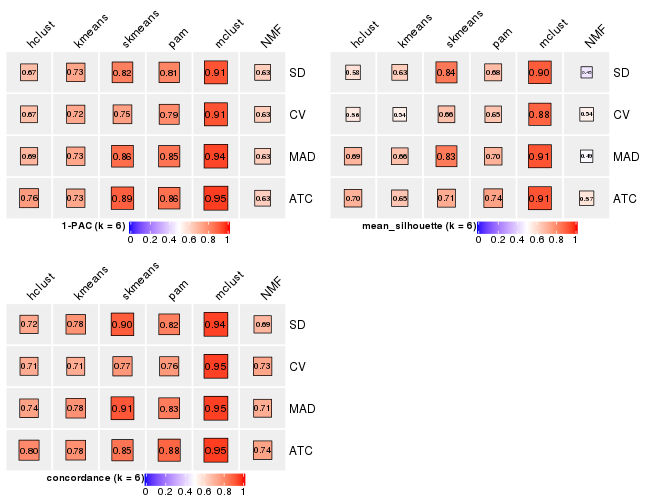
Collect partitions from all methods:
collect_classes(res_list, k = 2)
collect_classes(res_list, k = 3)
collect_classes(res_list, k = 4)

collect_classes(res_list, k = 5)
collect_classes(res_list, k = 6)
Overlap of top rows from different top-row methods:
top_rows_overlap(res_list, top_n = 1000, method = "euler")
top_rows_overlap(res_list, top_n = 2000, method = "euler")
top_rows_overlap(res_list, top_n = 3000, method = "euler")
top_rows_overlap(res_list, top_n = 4000, method = "euler")
top_rows_overlap(res_list, top_n = 5000, method = "euler")
Also visualize the correspondance of rankings between different top-row methods:
top_rows_overlap(res_list, top_n = 1000, method = "correspondance")
top_rows_overlap(res_list, top_n = 2000, method = "correspondance")
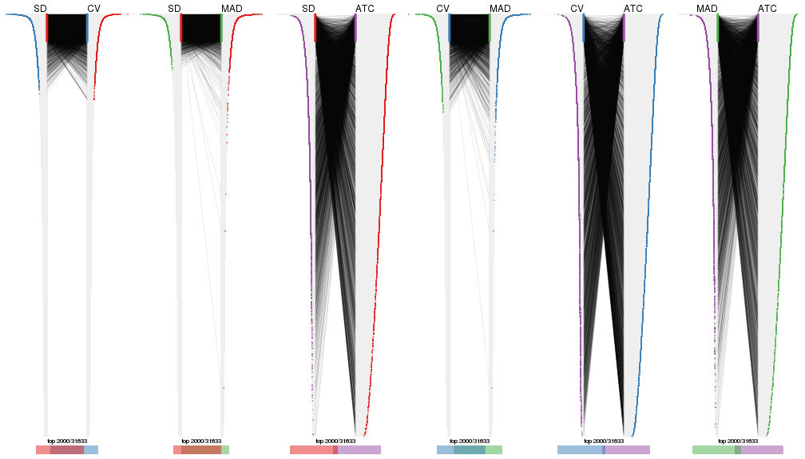
top_rows_overlap(res_list, top_n = 3000, method = "correspondance")
top_rows_overlap(res_list, top_n = 4000, method = "correspondance")
top_rows_overlap(res_list, top_n = 5000, method = "correspondance")
Heatmaps of the top rows:
top_rows_heatmap(res_list, top_n = 1000)
top_rows_heatmap(res_list, top_n = 2000)
top_rows_heatmap(res_list, top_n = 3000)
top_rows_heatmap(res_list, top_n = 4000)
top_rows_heatmap(res_list, top_n = 5000)
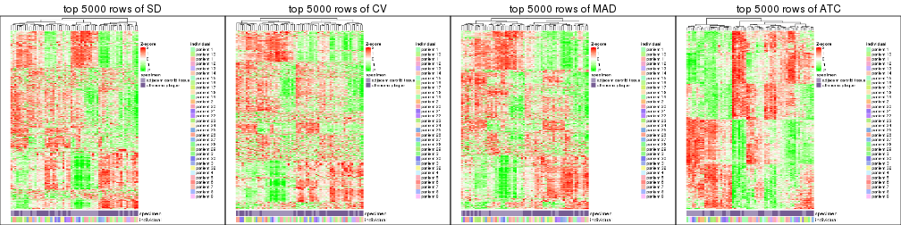
Test correlation between subgroups and known annotations. If the known annotation is numeric, one-way ANOVA test is applied, and if the known annotation is discrete, chi-squared contingency table test is applied.
test_to_known_factors(res_list, k = 2)
#> n specimen(p) individual(p) k
#> SD:NMF 63 2.48e-04 0.573258 2
#> CV:NMF 64 4.62e-04 0.519014 2
#> MAD:NMF 64 4.62e-04 0.519014 2
#> ATC:NMF 63 5.39e-02 0.307491 2
#> SD:skmeans 64 4.62e-04 0.519014 2
#> CV:skmeans 60 8.03e-04 0.519020 2
#> MAD:skmeans 64 4.62e-04 0.519014 2
#> ATC:skmeans 64 2.10e-01 0.131177 2
#> SD:mclust 64 1.00e+00 0.000444 2
#> CV:mclust 64 1.00e+00 0.000444 2
#> MAD:mclust 64 1.00e+00 0.000444 2
#> ATC:mclust 60 9.43e-01 0.001350 2
#> SD:kmeans 64 4.62e-04 0.519014 2
#> CV:kmeans 60 8.03e-04 0.519020 2
#> MAD:kmeans 64 4.62e-04 0.519014 2
#> ATC:kmeans 63 1.61e-01 0.157135 2
#> SD:pam 53 4.65e-05 0.728031 2
#> CV:pam 62 2.76e-04 0.494052 2
#> MAD:pam 63 5.97e-04 0.517619 2
#> ATC:pam 64 1.32e-01 0.041884 2
#> SD:hclust 63 1.62e-05 0.674345 2
#> CV:hclust 54 4.40e-05 0.570437 2
#> MAD:hclust 63 1.62e-05 0.674345 2
#> ATC:hclust 53 1.58e-02 0.076836 2
test_to_known_factors(res_list, k = 3)
#> n specimen(p) individual(p) k
#> SD:NMF 61 5.12e-05 1.66e-01 3
#> CV:NMF 59 9.02e-05 3.33e-01 3
#> MAD:NMF 59 4.78e-04 5.16e-02 3
#> ATC:NMF 56 6.33e-06 4.21e-01 3
#> SD:skmeans 63 1.03e-03 4.47e-01 3
#> CV:skmeans 63 2.73e-03 6.79e-02 3
#> MAD:skmeans 62 4.91e-04 5.13e-01 3
#> ATC:skmeans 48 1.85e-02 1.06e-01 3
#> SD:mclust 64 4.22e-01 6.13e-05 3
#> CV:mclust 61 1.79e-01 2.72e-04 3
#> MAD:mclust 64 4.22e-01 6.13e-05 3
#> ATC:mclust 61 1.69e-01 6.05e-04 3
#> SD:kmeans 43 2.62e-05 7.79e-01 3
#> CV:kmeans 56 3.59e-03 8.88e-02 3
#> MAD:kmeans 30 4.99e-02 4.18e-01 3
#> ATC:kmeans 54 1.26e-03 2.98e-01 3
#> SD:pam 63 4.76e-06 5.31e-01 3
#> CV:pam 64 3.30e-04 2.85e-01 3
#> MAD:pam 62 6.46e-06 4.99e-01 3
#> ATC:pam 64 1.97e-02 3.74e-02 3
#> SD:hclust 60 6.71e-05 1.80e-01 3
#> CV:hclust 53 1.76e-04 1.15e-01 3
#> MAD:hclust 54 1.30e-04 1.64e-01 3
#> ATC:hclust 54 8.78e-03 2.61e-01 3
test_to_known_factors(res_list, k = 4)
#> n specimen(p) individual(p) k
#> SD:NMF 61 5.16e-05 0.03441 4
#> CV:NMF 56 4.01e-04 0.02018 4
#> MAD:NMF 56 4.06e-04 0.01229 4
#> ATC:NMF 52 1.30e-03 0.26745 4
#> SD:skmeans 60 1.19e-03 0.09606 4
#> CV:skmeans 46 1.12e-02 0.17771 4
#> MAD:skmeans 60 1.17e-03 0.08534 4
#> ATC:skmeans 63 4.84e-04 0.26055 4
#> SD:mclust 60 5.89e-01 0.00058 4
#> CV:mclust 54 1.34e-01 0.03399 4
#> MAD:mclust 58 3.54e-01 0.01838 4
#> ATC:mclust 60 8.28e-03 0.02618 4
#> SD:kmeans 43 2.76e-03 0.18222 4
#> CV:kmeans 52 5.25e-04 0.22922 4
#> MAD:kmeans 36 3.17e-03 0.21335 4
#> ATC:kmeans 64 2.28e-04 0.10165 4
#> SD:pam 61 1.01e-04 0.17018 4
#> CV:pam 44 2.30e-03 0.24020 4
#> MAD:pam 59 5.11e-04 0.07529 4
#> ATC:pam 55 2.83e-03 0.02697 4
#> SD:hclust 56 1.06e-03 0.15485 4
#> CV:hclust 56 6.62e-04 0.02803 4
#> MAD:hclust 56 1.06e-03 0.03773 4
#> ATC:hclust 55 1.69e-02 0.05174 4
test_to_known_factors(res_list, k = 5)
#> n specimen(p) individual(p) k
#> SD:NMF 49 0.003904 0.02473 5
#> CV:NMF 46 0.001024 0.11672 5
#> MAD:NMF 54 0.000444 0.03048 5
#> ATC:NMF 51 0.002783 0.03778 5
#> SD:skmeans 59 0.000854 0.03246 5
#> CV:skmeans 53 0.005440 0.06193 5
#> MAD:skmeans 63 0.008644 0.01130 5
#> ATC:skmeans 62 0.000763 0.05926 5
#> SD:mclust 60 0.000471 0.04832 5
#> CV:mclust 51 0.005957 0.00941 5
#> MAD:mclust 63 0.000418 0.04327 5
#> ATC:mclust 58 0.002598 0.04353 5
#> SD:kmeans 43 0.044682 0.42902 5
#> CV:kmeans 41 0.000118 0.30058 5
#> MAD:kmeans 40 0.002315 0.30403 5
#> ATC:kmeans 39 0.001570 0.21947 5
#> SD:pam 57 0.000904 0.08426 5
#> CV:pam 48 0.031267 0.05941 5
#> MAD:pam 62 0.000602 0.06005 5
#> ATC:pam 59 0.008964 0.01415 5
#> SD:hclust 49 0.002050 0.04436 5
#> CV:hclust 53 0.000764 0.05700 5
#> MAD:hclust 53 0.001462 0.07445 5
#> ATC:hclust 51 0.012020 0.17424 5
test_to_known_factors(res_list, k = 6)
#> n specimen(p) individual(p) k
#> SD:NMF 33 5.04e-03 0.10182 6
#> CV:NMF 46 2.70e-02 0.01262 6
#> MAD:NMF 38 1.14e-02 0.06721 6
#> ATC:NMF 46 2.88e-03 0.11675 6
#> SD:skmeans 63 6.28e-04 0.07934 6
#> CV:skmeans 53 2.22e-03 0.11120 6
#> MAD:skmeans 60 1.02e-03 0.11876 6
#> ATC:skmeans 50 3.06e-02 0.14160 6
#> SD:mclust 62 1.93e-04 0.02634 6
#> CV:mclust 60 1.57e-04 0.02255 6
#> MAD:mclust 63 1.86e-04 0.03098 6
#> ATC:mclust 63 9.27e-04 0.05948 6
#> SD:kmeans 53 1.12e-02 0.17088 6
#> CV:kmeans 40 2.28e-03 0.11321 6
#> MAD:kmeans 56 5.54e-03 0.17367 6
#> ATC:kmeans 51 5.51e-03 0.04412 6
#> SD:pam 55 6.06e-03 0.07212 6
#> CV:pam 53 1.12e-04 0.08362 6
#> MAD:pam 49 2.04e-02 0.00679 6
#> ATC:pam 50 2.91e-03 0.08281 6
#> SD:hclust 42 2.57e-03 0.11098 6
#> CV:hclust 39 7.80e-04 0.03226 6
#> MAD:hclust 61 6.02e-05 0.03696 6
#> ATC:hclust 52 2.83e-03 0.26100 6
The object with results only for a single top-value method and a single partition method can be extracted as:
res = res_list["SD", "hclust"]
# you can also extract it by
# res = res_list["SD:hclust"]
A summary of res and all the functions that can be applied to it:
res
#> A 'ConsensusPartition' object with k = 2, 3, 4, 5, 6.
#> On a matrix with 31633 rows and 64 columns.
#> Top rows (1000, 2000, 3000, 4000, 5000) are extracted by 'SD' method.
#> Subgroups are detected by 'hclust' method.
#> Performed in total 1250 partitions by row resampling.
#> Best k for subgroups seems to be 2.
#>
#> Following methods can be applied to this 'ConsensusPartition' object:
#> [1] "cola_report" "collect_classes" "collect_plots"
#> [4] "collect_stats" "colnames" "compare_signatures"
#> [7] "consensus_heatmap" "dimension_reduction" "functional_enrichment"
#> [10] "get_anno_col" "get_anno" "get_classes"
#> [13] "get_consensus" "get_matrix" "get_membership"
#> [16] "get_param" "get_signatures" "get_stats"
#> [19] "is_best_k" "is_stable_k" "membership_heatmap"
#> [22] "ncol" "nrow" "plot_ecdf"
#> [25] "rownames" "select_partition_number" "show"
#> [28] "suggest_best_k" "test_to_known_factors"
collect_plots() function collects all the plots made from res for all k (number of partitions)
into one single page to provide an easy and fast comparison between different k.
collect_plots(res)
The plots are:
k and the heatmap of
predicted classes for each k.k.k.k.All the plots in panels can be made by individual functions and they are plotted later in this section.
select_partition_number() produces several plots showing different
statistics for choosing “optimized” k. There are following statistics:
k;k, the area increased is defined as \(A_k - A_{k-1}\).The detailed explanations of these statistics can be found in the cola vignette.
Generally speaking, lower PAC score, higher mean silhouette score or higher
concordance corresponds to better partition. Rand index and Jaccard index
measure how similar the current partition is compared to partition with k-1.
If they are too similar, we won't accept k is better than k-1.
select_partition_number(res)
The numeric values for all these statistics can be obtained by get_stats().
get_stats(res)
#> k 1-PAC mean_silhouette concordance area_increased Rand Jaccard
#> 2 2 0.651 0.881 0.931 0.4785 0.516 0.516
#> 3 3 0.531 0.741 0.789 0.3353 0.817 0.646
#> 4 4 0.531 0.649 0.788 0.1096 0.884 0.685
#> 5 5 0.608 0.559 0.684 0.0798 0.904 0.728
#> 6 6 0.670 0.578 0.725 0.0505 0.866 0.592
suggest_best_k() suggests the best \(k\) based on these statistics. The rules are as follows:
NA.suggest_best_k(res)
#> [1] 2
Following shows the table of the partitions (You need to click the show/hide
code output link to see it). The membership matrix (columns with name p*)
is inferred by
clue::cl_consensus()
function with the SE method. Basically the value in the membership matrix
represents the probability to belong to a certain group. The finall class
label for an item is determined with the group with highest probability it
belongs to.
In get_classes() function, the entropy is calculated from the membership
matrix and the silhouette score is calculated from the consensus matrix.
cbind(get_classes(res, k = 2), get_membership(res, k = 2))
#> class entropy silhouette p1 p2
#> GSM1060118 1 0.0000 0.910 1.000 0.000
#> GSM1060120 2 0.2043 0.931 0.032 0.968
#> GSM1060122 1 0.8016 0.773 0.756 0.244
#> GSM1060124 1 0.7299 0.815 0.796 0.204
#> GSM1060126 1 0.8016 0.773 0.756 0.244
#> GSM1060128 1 0.0000 0.910 1.000 0.000
#> GSM1060130 1 0.0000 0.910 1.000 0.000
#> GSM1060132 1 0.0000 0.910 1.000 0.000
#> GSM1060134 1 0.6048 0.859 0.852 0.148
#> GSM1060136 1 0.0938 0.912 0.988 0.012
#> GSM1060138 2 0.9775 0.326 0.412 0.588
#> GSM1060140 1 0.0000 0.910 1.000 0.000
#> GSM1060142 1 0.0000 0.910 1.000 0.000
#> GSM1060144 1 0.0000 0.910 1.000 0.000
#> GSM1060146 1 0.0000 0.910 1.000 0.000
#> GSM1060148 1 0.0000 0.910 1.000 0.000
#> GSM1060150 1 0.2423 0.911 0.960 0.040
#> GSM1060152 1 0.0938 0.912 0.988 0.012
#> GSM1060154 1 0.3431 0.904 0.936 0.064
#> GSM1060156 1 0.0938 0.912 0.988 0.012
#> GSM1060158 1 0.7745 0.791 0.772 0.228
#> GSM1060160 1 0.3584 0.904 0.932 0.068
#> GSM1060162 2 0.0000 0.948 0.000 1.000
#> GSM1060164 1 0.2423 0.911 0.960 0.040
#> GSM1060166 1 0.0938 0.912 0.988 0.012
#> GSM1060168 1 0.8016 0.773 0.756 0.244
#> GSM1060170 1 0.2778 0.910 0.952 0.048
#> GSM1060172 1 0.2423 0.911 0.960 0.040
#> GSM1060174 2 0.0000 0.948 0.000 1.000
#> GSM1060176 1 0.8443 0.735 0.728 0.272
#> GSM1060178 1 0.0000 0.910 1.000 0.000
#> GSM1060180 1 0.3879 0.901 0.924 0.076
#> GSM1060117 1 0.0000 0.910 1.000 0.000
#> GSM1060119 2 0.2043 0.931 0.032 0.968
#> GSM1060121 2 0.0000 0.948 0.000 1.000
#> GSM1060123 2 0.0000 0.948 0.000 1.000
#> GSM1060125 2 0.7299 0.742 0.204 0.796
#> GSM1060127 2 0.0000 0.948 0.000 1.000
#> GSM1060129 2 0.1414 0.938 0.020 0.980
#> GSM1060131 2 0.7453 0.704 0.212 0.788
#> GSM1060133 2 0.0000 0.948 0.000 1.000
#> GSM1060135 2 0.0000 0.948 0.000 1.000
#> GSM1060137 2 0.0000 0.948 0.000 1.000
#> GSM1060139 1 0.0000 0.910 1.000 0.000
#> GSM1060141 1 0.0000 0.910 1.000 0.000
#> GSM1060143 2 0.3733 0.901 0.072 0.928
#> GSM1060145 2 0.3733 0.901 0.072 0.928
#> GSM1060147 2 0.3733 0.901 0.072 0.928
#> GSM1060149 1 0.2423 0.911 0.960 0.040
#> GSM1060151 1 0.5408 0.872 0.876 0.124
#> GSM1060153 2 0.0000 0.948 0.000 1.000
#> GSM1060155 2 0.0000 0.948 0.000 1.000
#> GSM1060157 1 0.2423 0.911 0.960 0.040
#> GSM1060159 1 0.4298 0.895 0.912 0.088
#> GSM1060161 2 0.0000 0.948 0.000 1.000
#> GSM1060163 2 0.0000 0.948 0.000 1.000
#> GSM1060165 2 0.0000 0.948 0.000 1.000
#> GSM1060167 1 0.8016 0.773 0.756 0.244
#> GSM1060169 2 0.0000 0.948 0.000 1.000
#> GSM1060171 1 0.8016 0.773 0.756 0.244
#> GSM1060173 2 0.0000 0.948 0.000 1.000
#> GSM1060175 2 0.0000 0.948 0.000 1.000
#> GSM1060177 1 0.7453 0.807 0.788 0.212
#> GSM1060179 1 0.9000 0.663 0.684 0.316
cbind(get_classes(res, k = 3), get_membership(res, k = 3))
#> class entropy silhouette p1 p2 p3
#> GSM1060118 1 0.0424 0.711 0.992 0.000 0.008
#> GSM1060120 2 0.4887 0.824 0.000 0.772 0.228
#> GSM1060122 3 0.4384 0.770 0.064 0.068 0.868
#> GSM1060124 3 0.4527 0.789 0.088 0.052 0.860
#> GSM1060126 3 0.4384 0.770 0.064 0.068 0.868
#> GSM1060128 1 0.5465 0.657 0.712 0.000 0.288
#> GSM1060130 1 0.5465 0.657 0.712 0.000 0.288
#> GSM1060132 1 0.5465 0.657 0.712 0.000 0.288
#> GSM1060134 3 0.5688 0.771 0.168 0.044 0.788
#> GSM1060136 1 0.6302 0.195 0.520 0.000 0.480
#> GSM1060138 2 0.8325 0.406 0.304 0.588 0.108
#> GSM1060140 1 0.3038 0.727 0.896 0.000 0.104
#> GSM1060142 1 0.3038 0.727 0.896 0.000 0.104
#> GSM1060144 1 0.0000 0.707 1.000 0.000 0.000
#> GSM1060146 1 0.5465 0.657 0.712 0.000 0.288
#> GSM1060148 1 0.0000 0.707 1.000 0.000 0.000
#> GSM1060150 3 0.4654 0.770 0.208 0.000 0.792
#> GSM1060152 1 0.6302 0.195 0.520 0.000 0.480
#> GSM1060154 3 0.5986 0.720 0.240 0.024 0.736
#> GSM1060156 1 0.6302 0.195 0.520 0.000 0.480
#> GSM1060158 3 0.1170 0.782 0.016 0.008 0.976
#> GSM1060160 3 0.4291 0.791 0.180 0.000 0.820
#> GSM1060162 2 0.4796 0.837 0.000 0.780 0.220
#> GSM1060164 3 0.4654 0.770 0.208 0.000 0.792
#> GSM1060166 3 0.5760 0.544 0.328 0.000 0.672
#> GSM1060168 3 0.0424 0.771 0.000 0.008 0.992
#> GSM1060170 3 0.4555 0.777 0.200 0.000 0.800
#> GSM1060172 3 0.4654 0.770 0.208 0.000 0.792
#> GSM1060174 2 0.4796 0.837 0.000 0.780 0.220
#> GSM1060176 3 0.1765 0.750 0.004 0.040 0.956
#> GSM1060178 1 0.5465 0.657 0.712 0.000 0.288
#> GSM1060180 3 0.4121 0.795 0.168 0.000 0.832
#> GSM1060117 1 0.0424 0.711 0.992 0.000 0.008
#> GSM1060119 2 0.4887 0.824 0.000 0.772 0.228
#> GSM1060121 2 0.0000 0.868 0.000 1.000 0.000
#> GSM1060123 2 0.0000 0.868 0.000 1.000 0.000
#> GSM1060125 2 0.5760 0.742 0.140 0.796 0.064
#> GSM1060127 2 0.2261 0.870 0.000 0.932 0.068
#> GSM1060129 2 0.4002 0.854 0.000 0.840 0.160
#> GSM1060131 2 0.6168 0.559 0.000 0.588 0.412
#> GSM1060133 2 0.0000 0.868 0.000 1.000 0.000
#> GSM1060135 2 0.2165 0.870 0.000 0.936 0.064
#> GSM1060137 2 0.0000 0.868 0.000 1.000 0.000
#> GSM1060139 1 0.3038 0.727 0.896 0.000 0.104
#> GSM1060141 1 0.3038 0.727 0.896 0.000 0.104
#> GSM1060143 2 0.2584 0.840 0.064 0.928 0.008
#> GSM1060145 2 0.2584 0.840 0.064 0.928 0.008
#> GSM1060147 2 0.2584 0.840 0.064 0.928 0.008
#> GSM1060149 3 0.4654 0.770 0.208 0.000 0.792
#> GSM1060151 3 0.6965 0.661 0.244 0.060 0.696
#> GSM1060153 2 0.0000 0.868 0.000 1.000 0.000
#> GSM1060155 2 0.0000 0.868 0.000 1.000 0.000
#> GSM1060157 3 0.4654 0.770 0.208 0.000 0.792
#> GSM1060159 3 0.4002 0.799 0.160 0.000 0.840
#> GSM1060161 2 0.4796 0.837 0.000 0.780 0.220
#> GSM1060163 2 0.4796 0.837 0.000 0.780 0.220
#> GSM1060165 2 0.4796 0.837 0.000 0.780 0.220
#> GSM1060167 3 0.0424 0.771 0.000 0.008 0.992
#> GSM1060169 2 0.0237 0.869 0.000 0.996 0.004
#> GSM1060171 3 0.0424 0.771 0.000 0.008 0.992
#> GSM1060173 2 0.4796 0.837 0.000 0.780 0.220
#> GSM1060175 2 0.0237 0.869 0.000 0.996 0.004
#> GSM1060177 3 0.1711 0.790 0.032 0.008 0.960
#> GSM1060179 3 0.2860 0.704 0.004 0.084 0.912
cbind(get_classes(res, k = 4), get_membership(res, k = 4))
#> class entropy silhouette p1 p2 p3 p4
#> GSM1060118 1 0.1584 0.681 0.952 0.000 0.036 0.012
#> GSM1060120 2 0.2563 0.754 0.000 0.908 0.020 0.072
#> GSM1060122 3 0.6088 0.716 0.016 0.192 0.704 0.088
#> GSM1060124 3 0.5971 0.731 0.024 0.160 0.728 0.088
#> GSM1060126 3 0.6088 0.716 0.016 0.192 0.704 0.088
#> GSM1060128 1 0.4985 0.506 0.532 0.000 0.468 0.000
#> GSM1060130 1 0.4985 0.506 0.532 0.000 0.468 0.000
#> GSM1060132 1 0.4985 0.506 0.532 0.000 0.468 0.000
#> GSM1060134 3 0.5775 0.725 0.076 0.100 0.764 0.060
#> GSM1060136 3 0.5055 0.114 0.368 0.000 0.624 0.008
#> GSM1060138 4 0.6726 0.389 0.204 0.016 0.128 0.652
#> GSM1060140 1 0.3552 0.716 0.848 0.000 0.128 0.024
#> GSM1060142 1 0.3552 0.716 0.848 0.000 0.128 0.024
#> GSM1060144 1 0.0779 0.663 0.980 0.000 0.004 0.016
#> GSM1060146 1 0.4985 0.506 0.532 0.000 0.468 0.000
#> GSM1060148 1 0.0779 0.663 0.980 0.000 0.004 0.016
#> GSM1060150 3 0.0336 0.731 0.008 0.000 0.992 0.000
#> GSM1060152 3 0.5055 0.114 0.368 0.000 0.624 0.008
#> GSM1060154 3 0.4182 0.695 0.104 0.020 0.840 0.036
#> GSM1060156 3 0.5055 0.114 0.368 0.000 0.624 0.008
#> GSM1060158 3 0.5766 0.714 0.000 0.192 0.704 0.104
#> GSM1060160 3 0.2170 0.748 0.008 0.028 0.936 0.028
#> GSM1060162 2 0.0336 0.781 0.000 0.992 0.008 0.000
#> GSM1060164 3 0.0336 0.731 0.008 0.000 0.992 0.000
#> GSM1060166 3 0.2868 0.607 0.136 0.000 0.864 0.000
#> GSM1060168 3 0.6010 0.699 0.000 0.220 0.676 0.104
#> GSM1060170 3 0.0672 0.735 0.008 0.008 0.984 0.000
#> GSM1060172 3 0.0336 0.731 0.008 0.000 0.992 0.000
#> GSM1060174 2 0.0336 0.781 0.000 0.992 0.008 0.000
#> GSM1060176 3 0.6010 0.692 0.000 0.220 0.676 0.104
#> GSM1060178 1 0.4985 0.506 0.532 0.000 0.468 0.000
#> GSM1060180 3 0.3201 0.750 0.008 0.032 0.888 0.072
#> GSM1060117 1 0.1584 0.681 0.952 0.000 0.036 0.012
#> GSM1060119 2 0.2563 0.754 0.000 0.908 0.020 0.072
#> GSM1060121 2 0.4456 0.618 0.004 0.716 0.000 0.280
#> GSM1060123 2 0.4343 0.639 0.004 0.732 0.000 0.264
#> GSM1060125 4 0.5163 0.701 0.072 0.080 0.048 0.800
#> GSM1060127 2 0.3208 0.747 0.004 0.848 0.000 0.148
#> GSM1060129 2 0.2714 0.770 0.004 0.884 0.000 0.112
#> GSM1060131 2 0.5594 0.476 0.000 0.724 0.164 0.112
#> GSM1060133 2 0.4456 0.618 0.004 0.716 0.000 0.280
#> GSM1060135 2 0.3257 0.744 0.004 0.844 0.000 0.152
#> GSM1060137 4 0.4889 0.431 0.004 0.360 0.000 0.636
#> GSM1060139 1 0.3552 0.716 0.848 0.000 0.128 0.024
#> GSM1060141 1 0.3552 0.716 0.848 0.000 0.128 0.024
#> GSM1060143 4 0.3032 0.757 0.008 0.124 0.000 0.868
#> GSM1060145 4 0.3032 0.757 0.008 0.124 0.000 0.868
#> GSM1060147 4 0.3032 0.757 0.008 0.124 0.000 0.868
#> GSM1060149 3 0.0336 0.731 0.008 0.000 0.992 0.000
#> GSM1060151 3 0.6642 0.634 0.156 0.052 0.696 0.096
#> GSM1060153 4 0.4889 0.431 0.004 0.360 0.000 0.636
#> GSM1060155 2 0.5028 0.358 0.004 0.596 0.000 0.400
#> GSM1060157 3 0.0336 0.731 0.008 0.000 0.992 0.000
#> GSM1060159 3 0.2731 0.753 0.008 0.048 0.912 0.032
#> GSM1060161 2 0.0336 0.781 0.000 0.992 0.008 0.000
#> GSM1060163 2 0.0336 0.781 0.000 0.992 0.008 0.000
#> GSM1060165 2 0.0336 0.781 0.000 0.992 0.008 0.000
#> GSM1060167 3 0.6010 0.699 0.000 0.220 0.676 0.104
#> GSM1060169 2 0.3982 0.687 0.004 0.776 0.000 0.220
#> GSM1060171 3 0.5977 0.701 0.000 0.216 0.680 0.104
#> GSM1060173 2 0.0336 0.781 0.000 0.992 0.008 0.000
#> GSM1060175 2 0.3982 0.687 0.004 0.776 0.000 0.220
#> GSM1060177 3 0.5440 0.725 0.000 0.160 0.736 0.104
#> GSM1060179 3 0.6164 0.660 0.000 0.264 0.644 0.092
cbind(get_classes(res, k = 5), get_membership(res, k = 5))
#> class entropy silhouette p1 p2 p3 p4 p5
#> GSM1060118 1 0.381 0.7724 0.784 0.000 0.032 0.000 NA
#> GSM1060120 2 0.223 0.7615 0.000 0.916 0.008 0.020 NA
#> GSM1060122 3 0.665 0.5481 0.000 0.184 0.472 0.008 NA
#> GSM1060124 3 0.642 0.5622 0.000 0.152 0.512 0.008 NA
#> GSM1060126 3 0.665 0.5481 0.000 0.184 0.472 0.008 NA
#> GSM1060128 3 0.657 -0.0996 0.288 0.000 0.468 0.000 NA
#> GSM1060130 3 0.657 -0.0996 0.288 0.000 0.468 0.000 NA
#> GSM1060132 3 0.657 -0.0996 0.288 0.000 0.468 0.000 NA
#> GSM1060134 3 0.703 0.5483 0.060 0.092 0.544 0.012 NA
#> GSM1060136 3 0.654 0.2623 0.200 0.000 0.428 0.000 NA
#> GSM1060138 4 0.595 0.3804 0.216 0.000 0.052 0.656 NA
#> GSM1060140 1 0.329 0.8405 0.864 0.000 0.052 0.016 NA
#> GSM1060142 1 0.329 0.8405 0.864 0.000 0.052 0.016 NA
#> GSM1060144 1 0.202 0.8095 0.900 0.000 0.000 0.000 NA
#> GSM1060146 3 0.657 -0.0996 0.288 0.000 0.468 0.000 NA
#> GSM1060148 1 0.202 0.8095 0.900 0.000 0.000 0.000 NA
#> GSM1060150 3 0.000 0.5791 0.000 0.000 1.000 0.000 NA
#> GSM1060152 3 0.654 0.2623 0.200 0.000 0.428 0.000 NA
#> GSM1060154 3 0.608 0.5382 0.088 0.020 0.620 0.008 NA
#> GSM1060156 3 0.654 0.2623 0.200 0.000 0.428 0.000 NA
#> GSM1060158 3 0.633 0.5486 0.000 0.180 0.504 0.000 NA
#> GSM1060160 3 0.165 0.5876 0.000 0.020 0.940 0.000 NA
#> GSM1060162 2 0.051 0.7865 0.000 0.984 0.000 0.000 NA
#> GSM1060164 3 0.000 0.5791 0.000 0.000 1.000 0.000 NA
#> GSM1060166 3 0.302 0.4995 0.088 0.000 0.864 0.000 NA
#> GSM1060168 3 0.652 0.5309 0.000 0.212 0.468 0.000 NA
#> GSM1060170 3 0.029 0.5811 0.000 0.008 0.992 0.000 NA
#> GSM1060172 3 0.000 0.5791 0.000 0.000 1.000 0.000 NA
#> GSM1060174 2 0.051 0.7865 0.000 0.984 0.000 0.000 NA
#> GSM1060176 3 0.647 0.5293 0.000 0.208 0.484 0.000 NA
#> GSM1060178 3 0.657 -0.0996 0.288 0.000 0.468 0.000 NA
#> GSM1060180 3 0.398 0.5967 0.000 0.032 0.764 0.000 NA
#> GSM1060117 1 0.381 0.7724 0.784 0.000 0.032 0.000 NA
#> GSM1060119 2 0.223 0.7615 0.000 0.916 0.008 0.020 NA
#> GSM1060121 2 0.592 0.4941 0.000 0.544 0.000 0.120 NA
#> GSM1060123 2 0.576 0.5174 0.000 0.560 0.000 0.104 NA
#> GSM1060125 4 0.313 0.6673 0.096 0.000 0.012 0.864 NA
#> GSM1060127 2 0.321 0.7449 0.000 0.852 0.000 0.056 NA
#> GSM1060129 2 0.257 0.7723 0.000 0.888 0.000 0.028 NA
#> GSM1060131 2 0.512 0.5462 0.000 0.732 0.128 0.020 NA
#> GSM1060133 2 0.592 0.4941 0.000 0.544 0.000 0.120 NA
#> GSM1060135 2 0.327 0.7426 0.000 0.848 0.000 0.056 NA
#> GSM1060137 4 0.493 0.6461 0.000 0.072 0.000 0.684 NA
#> GSM1060139 1 0.329 0.8405 0.864 0.000 0.052 0.016 NA
#> GSM1060141 1 0.329 0.8405 0.864 0.000 0.052 0.016 NA
#> GSM1060143 4 0.000 0.7334 0.000 0.000 0.000 1.000 NA
#> GSM1060145 4 0.000 0.7334 0.000 0.000 0.000 1.000 NA
#> GSM1060147 4 0.000 0.7334 0.000 0.000 0.000 1.000 NA
#> GSM1060149 3 0.000 0.5791 0.000 0.000 1.000 0.000 NA
#> GSM1060151 3 0.796 0.4701 0.148 0.044 0.468 0.048 NA
#> GSM1060153 4 0.493 0.6461 0.000 0.072 0.000 0.684 NA
#> GSM1060155 4 0.679 -0.0422 0.000 0.352 0.000 0.364 NA
#> GSM1060157 3 0.000 0.5791 0.000 0.000 1.000 0.000 NA
#> GSM1060159 3 0.215 0.5895 0.000 0.040 0.916 0.000 NA
#> GSM1060161 2 0.051 0.7865 0.000 0.984 0.000 0.000 NA
#> GSM1060163 2 0.051 0.7865 0.000 0.984 0.000 0.000 NA
#> GSM1060165 2 0.051 0.7865 0.000 0.984 0.000 0.000 NA
#> GSM1060167 3 0.652 0.5309 0.000 0.212 0.468 0.000 NA
#> GSM1060169 2 0.525 0.5986 0.000 0.632 0.000 0.076 NA
#> GSM1060171 3 0.650 0.5338 0.000 0.208 0.472 0.000 NA
#> GSM1060173 2 0.051 0.7865 0.000 0.984 0.000 0.000 NA
#> GSM1060175 2 0.525 0.5986 0.000 0.632 0.000 0.076 NA
#> GSM1060177 3 0.611 0.5614 0.000 0.152 0.536 0.000 NA
#> GSM1060179 3 0.663 0.4880 0.000 0.252 0.452 0.000 NA
cbind(get_classes(res, k = 6), get_membership(res, k = 6))
#> class entropy silhouette p1 p2 p3 p4 p5 p6
#> GSM1060118 1 0.4530 0.4631 0.552 0.000 0.016 0.000 0.420 0.012
#> GSM1060120 2 0.2586 0.7968 0.000 0.868 0.032 0.000 0.000 0.100
#> GSM1060122 3 0.5038 0.4974 0.000 0.148 0.672 0.000 0.012 0.168
#> GSM1060124 3 0.4912 0.5018 0.000 0.116 0.696 0.000 0.020 0.168
#> GSM1060126 3 0.5038 0.4974 0.000 0.148 0.672 0.000 0.012 0.168
#> GSM1060128 5 0.0146 0.6481 0.004 0.000 0.000 0.000 0.996 0.000
#> GSM1060130 5 0.0146 0.6481 0.004 0.000 0.000 0.000 0.996 0.000
#> GSM1060132 5 0.0146 0.6481 0.004 0.000 0.000 0.000 0.996 0.000
#> GSM1060134 3 0.6017 0.4229 0.044 0.064 0.644 0.004 0.044 0.200
#> GSM1060136 5 0.6257 0.3074 0.032 0.000 0.376 0.000 0.444 0.148
#> GSM1060138 4 0.6049 0.4367 0.204 0.000 0.036 0.624 0.032 0.104
#> GSM1060140 1 0.3172 0.7436 0.852 0.000 0.036 0.000 0.032 0.080
#> GSM1060142 1 0.3172 0.7436 0.852 0.000 0.036 0.000 0.032 0.080
#> GSM1060144 1 0.3344 0.6945 0.840 0.000 0.032 0.000 0.088 0.040
#> GSM1060146 5 0.0146 0.6481 0.004 0.000 0.000 0.000 0.996 0.000
#> GSM1060148 1 0.3344 0.6945 0.840 0.000 0.032 0.000 0.088 0.040
#> GSM1060150 3 0.5091 0.3041 0.000 0.000 0.504 0.000 0.416 0.080
#> GSM1060152 5 0.6257 0.3074 0.032 0.000 0.376 0.000 0.444 0.148
#> GSM1060154 3 0.6282 0.3476 0.060 0.016 0.616 0.004 0.132 0.172
#> GSM1060156 5 0.6257 0.3074 0.032 0.000 0.376 0.000 0.444 0.148
#> GSM1060158 3 0.3275 0.5577 0.000 0.140 0.820 0.000 0.008 0.032
#> GSM1060160 3 0.5115 0.3513 0.000 0.004 0.560 0.000 0.356 0.080
#> GSM1060162 2 0.0146 0.8501 0.000 0.996 0.004 0.000 0.000 0.000
#> GSM1060164 3 0.5091 0.3041 0.000 0.000 0.504 0.000 0.416 0.080
#> GSM1060166 5 0.4983 -0.0711 0.000 0.000 0.356 0.000 0.564 0.080
#> GSM1060168 3 0.3572 0.5453 0.000 0.204 0.764 0.000 0.000 0.032
#> GSM1060170 3 0.5082 0.3111 0.000 0.000 0.512 0.000 0.408 0.080
#> GSM1060172 3 0.5091 0.3041 0.000 0.000 0.504 0.000 0.416 0.080
#> GSM1060174 2 0.0146 0.8501 0.000 0.996 0.004 0.000 0.000 0.000
#> GSM1060176 3 0.3558 0.5453 0.000 0.184 0.780 0.000 0.004 0.032
#> GSM1060178 5 0.0146 0.6481 0.004 0.000 0.000 0.000 0.996 0.000
#> GSM1060180 3 0.4005 0.4745 0.000 0.004 0.748 0.000 0.192 0.056
#> GSM1060117 1 0.4523 0.4679 0.556 0.000 0.016 0.000 0.416 0.012
#> GSM1060119 2 0.2586 0.7968 0.000 0.868 0.032 0.000 0.000 0.100
#> GSM1060121 6 0.4078 0.8332 0.000 0.340 0.000 0.020 0.000 0.640
#> GSM1060123 6 0.4131 0.8314 0.000 0.356 0.000 0.020 0.000 0.624
#> GSM1060125 4 0.3065 0.7131 0.088 0.000 0.012 0.852 0.000 0.048
#> GSM1060127 2 0.2631 0.6603 0.000 0.820 0.000 0.000 0.000 0.180
#> GSM1060129 2 0.2744 0.7695 0.000 0.840 0.016 0.000 0.000 0.144
#> GSM1060131 2 0.4681 0.5311 0.000 0.676 0.212 0.000 0.000 0.112
#> GSM1060133 6 0.4078 0.8332 0.000 0.340 0.000 0.020 0.000 0.640
#> GSM1060135 2 0.2664 0.6535 0.000 0.816 0.000 0.000 0.000 0.184
#> GSM1060137 4 0.3634 0.5089 0.000 0.000 0.000 0.644 0.000 0.356
#> GSM1060139 1 0.3172 0.7436 0.852 0.000 0.036 0.000 0.032 0.080
#> GSM1060141 1 0.3172 0.7436 0.852 0.000 0.036 0.000 0.032 0.080
#> GSM1060143 4 0.0000 0.7735 0.000 0.000 0.000 1.000 0.000 0.000
#> GSM1060145 4 0.0146 0.7732 0.000 0.000 0.000 0.996 0.000 0.004
#> GSM1060147 4 0.0000 0.7735 0.000 0.000 0.000 1.000 0.000 0.000
#> GSM1060149 3 0.5091 0.3041 0.000 0.000 0.504 0.000 0.416 0.080
#> GSM1060151 3 0.6815 0.2995 0.132 0.020 0.568 0.016 0.056 0.208
#> GSM1060153 4 0.3634 0.5089 0.000 0.000 0.000 0.644 0.000 0.356
#> GSM1060155 6 0.5798 0.3452 0.000 0.200 0.000 0.320 0.000 0.480
#> GSM1060157 3 0.5091 0.3041 0.000 0.000 0.504 0.000 0.416 0.080
#> GSM1060159 3 0.5444 0.3716 0.000 0.020 0.564 0.000 0.332 0.084
#> GSM1060161 2 0.0146 0.8501 0.000 0.996 0.004 0.000 0.000 0.000
#> GSM1060163 2 0.0146 0.8501 0.000 0.996 0.004 0.000 0.000 0.000
#> GSM1060165 2 0.0146 0.8501 0.000 0.996 0.004 0.000 0.000 0.000
#> GSM1060167 3 0.3481 0.5474 0.000 0.192 0.776 0.000 0.000 0.032
#> GSM1060169 6 0.4051 0.7634 0.000 0.432 0.000 0.008 0.000 0.560
#> GSM1060171 3 0.3450 0.5518 0.000 0.188 0.780 0.000 0.000 0.032
#> GSM1060173 2 0.0146 0.8501 0.000 0.996 0.004 0.000 0.000 0.000
#> GSM1060175 6 0.4051 0.7634 0.000 0.432 0.000 0.008 0.000 0.560
#> GSM1060177 3 0.2592 0.5605 0.000 0.116 0.864 0.000 0.004 0.016
#> GSM1060179 3 0.3878 0.5233 0.000 0.228 0.736 0.000 0.004 0.032
Heatmaps for the consensus matrix. It visualizes the probability of two samples to be in a same group.
consensus_heatmap(res, k = 2)
consensus_heatmap(res, k = 3)
consensus_heatmap(res, k = 4)
consensus_heatmap(res, k = 5)
consensus_heatmap(res, k = 6)
Heatmaps for the membership of samples in all partitions to see how consistent they are:
membership_heatmap(res, k = 2)
membership_heatmap(res, k = 3)
membership_heatmap(res, k = 4)
membership_heatmap(res, k = 5)
membership_heatmap(res, k = 6)
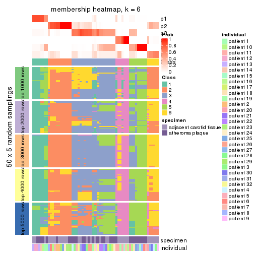
As soon as we have had the classes for columns, we can look for signatures which are significantly different between classes which can be candidate marks for certain classes. Following are the heatmaps for signatures.
Signature heatmaps where rows are scaled:
get_signatures(res, k = 2)
get_signatures(res, k = 3)

get_signatures(res, k = 4)
get_signatures(res, k = 5)
get_signatures(res, k = 6)
Signature heatmaps where rows are not scaled:
get_signatures(res, k = 2, scale_rows = FALSE)
get_signatures(res, k = 3, scale_rows = FALSE)
get_signatures(res, k = 4, scale_rows = FALSE)
get_signatures(res, k = 5, scale_rows = FALSE)
get_signatures(res, k = 6, scale_rows = FALSE)
Compare the overlap of signatures from different k:
compare_signatures(res)
get_signature() returns a data frame invisibly. TO get the list of signatures, the function
call should be assigned to a variable explicitly. In following code, if plot argument is set
to FALSE, no heatmap is plotted while only the differential analysis is performed.
# code only for demonstration
tb = get_signature(res, k = ..., plot = FALSE)
An example of the output of tb is:
#> which_row fdr mean_1 mean_2 scaled_mean_1 scaled_mean_2 km
#> 1 38 0.042760348 8.373488 9.131774 -0.5533452 0.5164555 1
#> 2 40 0.018707592 7.106213 8.469186 -0.6173731 0.5762149 1
#> 3 55 0.019134737 10.221463 11.207825 -0.6159697 0.5749050 1
#> 4 59 0.006059896 5.921854 7.869574 -0.6899429 0.6439467 1
#> 5 60 0.018055526 8.928898 10.211722 -0.6204761 0.5791110 1
#> 6 98 0.009384629 15.714769 14.887706 0.6635654 -0.6193277 2
...
The columns in tb are:
which_row: row indices corresponding to the input matrix.fdr: FDR for the differential test. mean_x: The mean value in group x.scaled_mean_x: The mean value in group x after rows are scaled.km: Row groups if k-means clustering is applied to rows.UMAP plot which shows how samples are separated.
dimension_reduction(res, k = 2, method = "UMAP")
dimension_reduction(res, k = 3, method = "UMAP")
dimension_reduction(res, k = 4, method = "UMAP")
dimension_reduction(res, k = 5, method = "UMAP")
dimension_reduction(res, k = 6, method = "UMAP")
Following heatmap shows how subgroups are split when increasing k:
collect_classes(res)

Test correlation between subgroups and known annotations. If the known annotation is numeric, one-way ANOVA test is applied, and if the known annotation is discrete, chi-squared contingency table test is applied.
test_to_known_factors(res)
#> n specimen(p) individual(p) k
#> SD:hclust 63 1.62e-05 0.6743 2
#> SD:hclust 60 6.71e-05 0.1795 3
#> SD:hclust 56 1.06e-03 0.1549 4
#> SD:hclust 49 2.05e-03 0.0444 5
#> SD:hclust 42 2.57e-03 0.1110 6
If matrix rows can be associated to genes, consider to use GO_Enrichment(res,
...) to perform function enrichment for the signature genes.
The object with results only for a single top-value method and a single partition method can be extracted as:
res = res_list["SD", "kmeans"]
# you can also extract it by
# res = res_list["SD:kmeans"]
A summary of res and all the functions that can be applied to it:
res
#> A 'ConsensusPartition' object with k = 2, 3, 4, 5, 6.
#> On a matrix with 31633 rows and 64 columns.
#> Top rows (1000, 2000, 3000, 4000, 5000) are extracted by 'SD' method.
#> Subgroups are detected by 'kmeans' method.
#> Performed in total 1250 partitions by row resampling.
#> Best k for subgroups seems to be 2.
#>
#> Following methods can be applied to this 'ConsensusPartition' object:
#> [1] "cola_report" "collect_classes" "collect_plots"
#> [4] "collect_stats" "colnames" "compare_signatures"
#> [7] "consensus_heatmap" "dimension_reduction" "functional_enrichment"
#> [10] "get_anno_col" "get_anno" "get_classes"
#> [13] "get_consensus" "get_matrix" "get_membership"
#> [16] "get_param" "get_signatures" "get_stats"
#> [19] "is_best_k" "is_stable_k" "membership_heatmap"
#> [22] "ncol" "nrow" "plot_ecdf"
#> [25] "rownames" "select_partition_number" "show"
#> [28] "suggest_best_k" "test_to_known_factors"
collect_plots() function collects all the plots made from res for all k (number of partitions)
into one single page to provide an easy and fast comparison between different k.
collect_plots(res)
The plots are:
k and the heatmap of
predicted classes for each k.k.k.k.All the plots in panels can be made by individual functions and they are plotted later in this section.
select_partition_number() produces several plots showing different
statistics for choosing “optimized” k. There are following statistics:
k;k, the area increased is defined as \(A_k - A_{k-1}\).The detailed explanations of these statistics can be found in the cola vignette.
Generally speaking, lower PAC score, higher mean silhouette score or higher
concordance corresponds to better partition. Rand index and Jaccard index
measure how similar the current partition is compared to partition with k-1.
If they are too similar, we won't accept k is better than k-1.
select_partition_number(res)
The numeric values for all these statistics can be obtained by get_stats().
get_stats(res)
#> k 1-PAC mean_silhouette concordance area_increased Rand Jaccard
#> 2 2 0.967 0.984 0.991 0.5071 0.493 0.493
#> 3 3 0.479 0.545 0.724 0.2986 0.805 0.622
#> 4 4 0.579 0.495 0.632 0.1313 0.775 0.452
#> 5 5 0.660 0.542 0.596 0.0703 0.799 0.382
#> 6 6 0.733 0.627 0.775 0.0472 0.891 0.537
suggest_best_k() suggests the best \(k\) based on these statistics. The rules are as follows:
NA.suggest_best_k(res)
#> [1] 2
Following shows the table of the partitions (You need to click the show/hide
code output link to see it). The membership matrix (columns with name p*)
is inferred by
clue::cl_consensus()
function with the SE method. Basically the value in the membership matrix
represents the probability to belong to a certain group. The finall class
label for an item is determined with the group with highest probability it
belongs to.
In get_classes() function, the entropy is calculated from the membership
matrix and the silhouette score is calculated from the consensus matrix.
cbind(get_classes(res, k = 2), get_membership(res, k = 2))
#> class entropy silhouette p1 p2
#> GSM1060118 1 0.0000 0.982 1.000 0.000
#> GSM1060120 2 0.0000 1.000 0.000 1.000
#> GSM1060122 2 0.0000 1.000 0.000 1.000
#> GSM1060124 1 0.5178 0.885 0.884 0.116
#> GSM1060126 2 0.0000 1.000 0.000 1.000
#> GSM1060128 1 0.0000 0.982 1.000 0.000
#> GSM1060130 1 0.0000 0.982 1.000 0.000
#> GSM1060132 1 0.0000 0.982 1.000 0.000
#> GSM1060134 1 0.5178 0.885 0.884 0.116
#> GSM1060136 1 0.0000 0.982 1.000 0.000
#> GSM1060138 1 0.0376 0.979 0.996 0.004
#> GSM1060140 1 0.0000 0.982 1.000 0.000
#> GSM1060142 1 0.0000 0.982 1.000 0.000
#> GSM1060144 1 0.0000 0.982 1.000 0.000
#> GSM1060146 1 0.0000 0.982 1.000 0.000
#> GSM1060148 1 0.0000 0.982 1.000 0.000
#> GSM1060150 1 0.0000 0.982 1.000 0.000
#> GSM1060152 1 0.0000 0.982 1.000 0.000
#> GSM1060154 1 0.0000 0.982 1.000 0.000
#> GSM1060156 1 0.0000 0.982 1.000 0.000
#> GSM1060158 2 0.0000 1.000 0.000 1.000
#> GSM1060160 1 0.0000 0.982 1.000 0.000
#> GSM1060162 2 0.0000 1.000 0.000 1.000
#> GSM1060164 1 0.0000 0.982 1.000 0.000
#> GSM1060166 1 0.0000 0.982 1.000 0.000
#> GSM1060168 2 0.0000 1.000 0.000 1.000
#> GSM1060170 1 0.0000 0.982 1.000 0.000
#> GSM1060172 1 0.0000 0.982 1.000 0.000
#> GSM1060174 2 0.0000 1.000 0.000 1.000
#> GSM1060176 2 0.0000 1.000 0.000 1.000
#> GSM1060178 1 0.0000 0.982 1.000 0.000
#> GSM1060180 1 0.0000 0.982 1.000 0.000
#> GSM1060117 1 0.0000 0.982 1.000 0.000
#> GSM1060119 2 0.0000 1.000 0.000 1.000
#> GSM1060121 2 0.0000 1.000 0.000 1.000
#> GSM1060123 2 0.0000 1.000 0.000 1.000
#> GSM1060125 2 0.0000 1.000 0.000 1.000
#> GSM1060127 2 0.0000 1.000 0.000 1.000
#> GSM1060129 2 0.0000 1.000 0.000 1.000
#> GSM1060131 2 0.0000 1.000 0.000 1.000
#> GSM1060133 2 0.0000 1.000 0.000 1.000
#> GSM1060135 2 0.0000 1.000 0.000 1.000
#> GSM1060137 2 0.0000 1.000 0.000 1.000
#> GSM1060139 1 0.0000 0.982 1.000 0.000
#> GSM1060141 1 0.0000 0.982 1.000 0.000
#> GSM1060143 2 0.0000 1.000 0.000 1.000
#> GSM1060145 2 0.0000 1.000 0.000 1.000
#> GSM1060147 2 0.0000 1.000 0.000 1.000
#> GSM1060149 1 0.0000 0.982 1.000 0.000
#> GSM1060151 1 0.4690 0.901 0.900 0.100
#> GSM1060153 2 0.0000 1.000 0.000 1.000
#> GSM1060155 2 0.0000 1.000 0.000 1.000
#> GSM1060157 1 0.0000 0.982 1.000 0.000
#> GSM1060159 1 0.0000 0.982 1.000 0.000
#> GSM1060161 2 0.0000 1.000 0.000 1.000
#> GSM1060163 2 0.0000 1.000 0.000 1.000
#> GSM1060165 2 0.0000 1.000 0.000 1.000
#> GSM1060167 2 0.0000 1.000 0.000 1.000
#> GSM1060169 2 0.0000 1.000 0.000 1.000
#> GSM1060171 1 0.5178 0.885 0.884 0.116
#> GSM1060173 2 0.0000 1.000 0.000 1.000
#> GSM1060175 2 0.0000 1.000 0.000 1.000
#> GSM1060177 1 0.5059 0.889 0.888 0.112
#> GSM1060179 2 0.0000 1.000 0.000 1.000
cbind(get_classes(res, k = 3), get_membership(res, k = 3))
#> class entropy silhouette p1 p2 p3
#> GSM1060118 1 0.0000 0.7448 1.000 0.000 0.000
#> GSM1060120 2 0.6299 -0.0589 0.000 0.524 0.476
#> GSM1060122 3 0.5591 0.5866 0.000 0.304 0.696
#> GSM1060124 3 0.4270 0.5767 0.024 0.116 0.860
#> GSM1060126 3 0.6154 0.3889 0.000 0.408 0.592
#> GSM1060128 1 0.4121 0.7952 0.832 0.000 0.168
#> GSM1060130 1 0.4121 0.7952 0.832 0.000 0.168
#> GSM1060132 1 0.4178 0.7950 0.828 0.000 0.172
#> GSM1060134 3 0.7240 0.1219 0.432 0.028 0.540
#> GSM1060136 1 0.4002 0.7941 0.840 0.000 0.160
#> GSM1060138 1 0.6633 0.4479 0.700 0.040 0.260
#> GSM1060140 1 0.5763 0.5020 0.740 0.016 0.244
#> GSM1060142 1 0.0000 0.7448 1.000 0.000 0.000
#> GSM1060144 1 0.0237 0.7426 0.996 0.000 0.004
#> GSM1060146 1 0.4178 0.7950 0.828 0.000 0.172
#> GSM1060148 1 0.0237 0.7426 0.996 0.000 0.004
#> GSM1060150 1 0.6062 0.7209 0.616 0.000 0.384
#> GSM1060152 1 0.4121 0.7952 0.832 0.000 0.168
#> GSM1060154 1 0.5760 0.7109 0.672 0.000 0.328
#> GSM1060156 1 0.4121 0.7952 0.832 0.000 0.168
#> GSM1060158 3 0.5529 0.5907 0.000 0.296 0.704
#> GSM1060160 1 0.6062 0.7209 0.616 0.000 0.384
#> GSM1060162 2 0.5926 0.3242 0.000 0.644 0.356
#> GSM1060164 1 0.6079 0.7169 0.612 0.000 0.388
#> GSM1060166 1 0.6062 0.7209 0.616 0.000 0.384
#> GSM1060168 3 0.5560 0.5890 0.000 0.300 0.700
#> GSM1060170 1 0.6079 0.7169 0.612 0.000 0.388
#> GSM1060172 1 0.6062 0.7209 0.616 0.000 0.384
#> GSM1060174 2 0.5926 0.3242 0.000 0.644 0.356
#> GSM1060176 3 0.5650 0.5761 0.000 0.312 0.688
#> GSM1060178 1 0.4291 0.7934 0.820 0.000 0.180
#> GSM1060180 1 0.6307 0.5997 0.512 0.000 0.488
#> GSM1060117 1 0.0237 0.7426 0.996 0.000 0.004
#> GSM1060119 2 0.6302 -0.0771 0.000 0.520 0.480
#> GSM1060121 2 0.0000 0.6087 0.000 1.000 0.000
#> GSM1060123 2 0.0000 0.6087 0.000 1.000 0.000
#> GSM1060125 2 0.9231 0.2848 0.180 0.512 0.308
#> GSM1060127 2 0.5254 0.4381 0.000 0.736 0.264
#> GSM1060129 2 0.4887 0.4753 0.000 0.772 0.228
#> GSM1060131 3 0.6305 0.1414 0.000 0.484 0.516
#> GSM1060133 2 0.0000 0.6087 0.000 1.000 0.000
#> GSM1060135 2 0.0000 0.6087 0.000 1.000 0.000
#> GSM1060137 2 0.3686 0.5641 0.000 0.860 0.140
#> GSM1060139 1 0.0000 0.7448 1.000 0.000 0.000
#> GSM1060141 1 0.6187 0.4813 0.724 0.028 0.248
#> GSM1060143 2 0.4683 0.5479 0.024 0.836 0.140
#> GSM1060145 2 0.8353 0.3839 0.180 0.628 0.192
#> GSM1060147 2 0.8478 0.3745 0.180 0.616 0.204
#> GSM1060149 1 0.6062 0.7209 0.616 0.000 0.384
#> GSM1060151 3 0.7292 -0.0065 0.472 0.028 0.500
#> GSM1060153 2 0.3686 0.5641 0.000 0.860 0.140
#> GSM1060155 2 0.3619 0.5657 0.000 0.864 0.136
#> GSM1060157 1 0.6062 0.7209 0.616 0.000 0.384
#> GSM1060159 3 0.3686 0.4291 0.140 0.000 0.860
#> GSM1060161 2 0.5926 0.3242 0.000 0.644 0.356
#> GSM1060163 2 0.5926 0.3242 0.000 0.644 0.356
#> GSM1060165 2 0.5926 0.3242 0.000 0.644 0.356
#> GSM1060167 3 0.5591 0.5855 0.000 0.304 0.696
#> GSM1060169 2 0.1163 0.6016 0.000 0.972 0.028
#> GSM1060171 3 0.3851 0.5833 0.004 0.136 0.860
#> GSM1060173 2 0.5926 0.3242 0.000 0.644 0.356
#> GSM1060175 2 0.1163 0.6016 0.000 0.972 0.028
#> GSM1060177 3 0.4209 0.5789 0.020 0.120 0.860
#> GSM1060179 3 0.6295 0.1856 0.000 0.472 0.528
cbind(get_classes(res, k = 4), get_membership(res, k = 4))
#> class entropy silhouette p1 p2 p3 p4
#> GSM1060118 1 0.0592 0.5807 0.984 0.000 0.016 0.000
#> GSM1060120 2 0.5077 0.6341 0.000 0.760 0.080 0.160
#> GSM1060122 2 0.2987 0.6732 0.000 0.880 0.104 0.016
#> GSM1060124 2 0.3495 0.6660 0.000 0.844 0.140 0.016
#> GSM1060126 2 0.3205 0.6730 0.000 0.872 0.104 0.024
#> GSM1060128 1 0.4331 0.4231 0.712 0.000 0.288 0.000
#> GSM1060130 1 0.4134 0.4607 0.740 0.000 0.260 0.000
#> GSM1060132 1 0.4761 0.2481 0.628 0.000 0.372 0.000
#> GSM1060134 1 0.9296 0.0772 0.316 0.288 0.316 0.080
#> GSM1060136 1 0.3610 0.5232 0.800 0.000 0.200 0.000
#> GSM1060138 1 0.7840 0.1591 0.468 0.040 0.388 0.104
#> GSM1060140 1 0.7257 0.2497 0.524 0.032 0.372 0.072
#> GSM1060142 1 0.0000 0.5836 1.000 0.000 0.000 0.000
#> GSM1060144 1 0.0000 0.5836 1.000 0.000 0.000 0.000
#> GSM1060146 1 0.4454 0.3926 0.692 0.000 0.308 0.000
#> GSM1060148 1 0.0000 0.5836 1.000 0.000 0.000 0.000
#> GSM1060150 3 0.6955 0.6826 0.296 0.144 0.560 0.000
#> GSM1060152 1 0.4008 0.4781 0.756 0.000 0.244 0.000
#> GSM1060154 1 0.6750 0.3256 0.612 0.180 0.208 0.000
#> GSM1060156 1 0.4008 0.4781 0.756 0.000 0.244 0.000
#> GSM1060158 2 0.2011 0.6867 0.000 0.920 0.080 0.000
#> GSM1060160 3 0.6955 0.6826 0.296 0.144 0.560 0.000
#> GSM1060162 2 0.4905 0.5037 0.000 0.632 0.004 0.364
#> GSM1060164 3 0.7012 0.6783 0.284 0.156 0.560 0.000
#> GSM1060166 3 0.6955 0.6826 0.296 0.144 0.560 0.000
#> GSM1060168 2 0.1940 0.6895 0.000 0.924 0.076 0.000
#> GSM1060170 3 0.7012 0.6783 0.284 0.156 0.560 0.000
#> GSM1060172 3 0.6955 0.6826 0.296 0.144 0.560 0.000
#> GSM1060174 2 0.4905 0.5037 0.000 0.632 0.004 0.364
#> GSM1060176 2 0.1022 0.7005 0.000 0.968 0.032 0.000
#> GSM1060178 1 0.5508 -0.1821 0.508 0.016 0.476 0.000
#> GSM1060180 3 0.7227 0.5678 0.200 0.256 0.544 0.000
#> GSM1060117 1 0.0000 0.5836 1.000 0.000 0.000 0.000
#> GSM1060119 2 0.5077 0.6341 0.000 0.760 0.080 0.160
#> GSM1060121 4 0.1940 0.6702 0.000 0.076 0.000 0.924
#> GSM1060123 4 0.1940 0.6702 0.000 0.076 0.000 0.924
#> GSM1060125 3 0.9192 -0.4057 0.212 0.088 0.384 0.316
#> GSM1060127 4 0.5619 0.2169 0.000 0.320 0.040 0.640
#> GSM1060129 4 0.6314 0.1043 0.000 0.372 0.068 0.560
#> GSM1060131 2 0.5032 0.6359 0.000 0.764 0.080 0.156
#> GSM1060133 4 0.1940 0.6702 0.000 0.076 0.000 0.924
#> GSM1060135 4 0.2984 0.6519 0.000 0.084 0.028 0.888
#> GSM1060137 4 0.3907 0.6343 0.000 0.000 0.232 0.768
#> GSM1060139 1 0.0000 0.5836 1.000 0.000 0.000 0.000
#> GSM1060141 1 0.7490 0.2138 0.500 0.032 0.380 0.088
#> GSM1060143 4 0.5403 0.5634 0.000 0.024 0.348 0.628
#> GSM1060145 4 0.8441 0.3291 0.192 0.036 0.364 0.408
#> GSM1060147 4 0.8441 0.3291 0.192 0.036 0.364 0.408
#> GSM1060149 3 0.6955 0.6826 0.296 0.144 0.560 0.000
#> GSM1060151 3 0.9255 -0.2310 0.316 0.288 0.320 0.076
#> GSM1060153 4 0.3907 0.6343 0.000 0.000 0.232 0.768
#> GSM1060155 4 0.2530 0.6617 0.000 0.000 0.112 0.888
#> GSM1060157 3 0.6955 0.6826 0.296 0.144 0.560 0.000
#> GSM1060159 2 0.5204 0.1914 0.012 0.612 0.376 0.000
#> GSM1060161 2 0.4905 0.5037 0.000 0.632 0.004 0.364
#> GSM1060163 2 0.4889 0.5088 0.000 0.636 0.004 0.360
#> GSM1060165 2 0.4905 0.5037 0.000 0.632 0.004 0.364
#> GSM1060167 2 0.1716 0.6941 0.000 0.936 0.064 0.000
#> GSM1060169 4 0.2654 0.6516 0.000 0.108 0.004 0.888
#> GSM1060171 2 0.4222 0.4634 0.000 0.728 0.272 0.000
#> GSM1060173 2 0.4889 0.5088 0.000 0.636 0.004 0.360
#> GSM1060175 4 0.2773 0.6479 0.000 0.116 0.004 0.880
#> GSM1060177 2 0.4193 0.4699 0.000 0.732 0.268 0.000
#> GSM1060179 2 0.2174 0.6996 0.000 0.928 0.020 0.052
cbind(get_classes(res, k = 5), get_membership(res, k = 5))
#> class entropy silhouette p1 p2 p3 p4 p5
#> GSM1060118 1 0.4300 0.6964 0.772 0.000 0.096 0.132 0.000
#> GSM1060120 5 0.3172 0.6939 0.016 0.044 0.004 0.060 0.876
#> GSM1060122 5 0.2873 0.7011 0.008 0.008 0.012 0.092 0.880
#> GSM1060124 5 0.2907 0.6988 0.016 0.000 0.016 0.092 0.876
#> GSM1060126 5 0.2873 0.7011 0.008 0.008 0.012 0.092 0.880
#> GSM1060128 1 0.4607 0.6943 0.616 0.000 0.368 0.012 0.004
#> GSM1060130 1 0.4594 0.7002 0.620 0.000 0.364 0.012 0.004
#> GSM1060132 1 0.4899 0.5774 0.524 0.000 0.456 0.012 0.008
#> GSM1060134 5 0.5489 0.2372 0.060 0.004 0.000 0.376 0.560
#> GSM1060136 1 0.5403 0.7051 0.624 0.000 0.312 0.016 0.048
#> GSM1060138 4 0.3527 0.7279 0.192 0.000 0.000 0.792 0.016
#> GSM1060140 4 0.4511 0.5351 0.356 0.000 0.000 0.628 0.016
#> GSM1060142 1 0.4291 0.6947 0.772 0.000 0.092 0.136 0.000
#> GSM1060144 1 0.4291 0.6947 0.772 0.000 0.092 0.136 0.000
#> GSM1060146 1 0.4844 0.6423 0.564 0.000 0.416 0.012 0.008
#> GSM1060148 1 0.4291 0.6947 0.772 0.000 0.092 0.136 0.000
#> GSM1060150 3 0.0290 0.7762 0.008 0.000 0.992 0.000 0.000
#> GSM1060152 1 0.4430 0.7068 0.628 0.000 0.360 0.000 0.012
#> GSM1060154 1 0.7848 0.3550 0.392 0.000 0.232 0.076 0.300
#> GSM1060156 1 0.4430 0.7068 0.628 0.000 0.360 0.000 0.012
#> GSM1060158 5 0.5170 0.6085 0.132 0.064 0.060 0.000 0.744
#> GSM1060160 3 0.0290 0.7762 0.008 0.000 0.992 0.000 0.000
#> GSM1060162 2 0.6417 0.2182 0.172 0.424 0.000 0.000 0.404
#> GSM1060164 3 0.0290 0.7751 0.000 0.000 0.992 0.000 0.008
#> GSM1060166 3 0.0404 0.7734 0.012 0.000 0.988 0.000 0.000
#> GSM1060168 5 0.5170 0.6085 0.132 0.064 0.060 0.000 0.744
#> GSM1060170 3 0.0566 0.7731 0.004 0.000 0.984 0.000 0.012
#> GSM1060172 3 0.0290 0.7762 0.008 0.000 0.992 0.000 0.000
#> GSM1060174 2 0.6417 0.2182 0.172 0.424 0.000 0.000 0.404
#> GSM1060176 5 0.5066 0.6024 0.132 0.080 0.040 0.000 0.748
#> GSM1060178 3 0.4170 0.1632 0.272 0.000 0.712 0.012 0.004
#> GSM1060180 3 0.2597 0.7171 0.024 0.000 0.884 0.000 0.092
#> GSM1060117 1 0.4291 0.6947 0.772 0.000 0.092 0.136 0.000
#> GSM1060119 5 0.3172 0.6939 0.016 0.044 0.004 0.060 0.876
#> GSM1060121 2 0.2179 0.4895 0.000 0.896 0.000 0.100 0.004
#> GSM1060123 2 0.2124 0.4913 0.000 0.900 0.000 0.096 0.004
#> GSM1060125 4 0.2178 0.7534 0.008 0.048 0.000 0.920 0.024
#> GSM1060127 2 0.4977 0.3792 0.028 0.684 0.000 0.024 0.264
#> GSM1060129 5 0.5869 0.2867 0.020 0.320 0.000 0.072 0.588
#> GSM1060131 5 0.2915 0.6975 0.012 0.036 0.004 0.060 0.888
#> GSM1060133 2 0.2179 0.4895 0.000 0.896 0.000 0.100 0.004
#> GSM1060135 2 0.3159 0.4923 0.016 0.872 0.000 0.056 0.056
#> GSM1060137 2 0.4283 -0.0423 0.000 0.544 0.000 0.456 0.000
#> GSM1060139 1 0.4291 0.6947 0.772 0.000 0.092 0.136 0.000
#> GSM1060141 4 0.4114 0.6677 0.272 0.000 0.000 0.712 0.016
#> GSM1060143 4 0.3305 0.5746 0.000 0.224 0.000 0.776 0.000
#> GSM1060145 4 0.1792 0.7535 0.000 0.084 0.000 0.916 0.000
#> GSM1060147 4 0.1792 0.7535 0.000 0.084 0.000 0.916 0.000
#> GSM1060149 3 0.0404 0.7734 0.012 0.000 0.988 0.000 0.000
#> GSM1060151 5 0.5681 0.1923 0.072 0.004 0.000 0.392 0.532
#> GSM1060153 2 0.4283 -0.0423 0.000 0.544 0.000 0.456 0.000
#> GSM1060155 2 0.3857 0.2400 0.000 0.688 0.000 0.312 0.000
#> GSM1060157 3 0.0404 0.7734 0.012 0.000 0.988 0.000 0.000
#> GSM1060159 3 0.4524 0.5601 0.040 0.000 0.720 0.004 0.236
#> GSM1060161 2 0.6417 0.2182 0.172 0.424 0.000 0.000 0.404
#> GSM1060163 2 0.6417 0.2182 0.172 0.424 0.000 0.000 0.404
#> GSM1060165 2 0.6413 0.2258 0.172 0.432 0.000 0.000 0.396
#> GSM1060167 5 0.5167 0.6084 0.132 0.068 0.056 0.000 0.744
#> GSM1060169 2 0.1518 0.5211 0.016 0.952 0.000 0.020 0.012
#> GSM1060171 3 0.6634 0.0617 0.132 0.020 0.472 0.000 0.376
#> GSM1060173 2 0.6417 0.2182 0.172 0.424 0.000 0.000 0.404
#> GSM1060175 2 0.1913 0.5209 0.020 0.936 0.000 0.020 0.024
#> GSM1060177 3 0.6666 0.2095 0.132 0.020 0.520 0.004 0.324
#> GSM1060179 5 0.5184 0.5919 0.140 0.088 0.036 0.000 0.736
cbind(get_classes(res, k = 6), get_membership(res, k = 6))
#> class entropy silhouette p1 p2 p3 p4 p5 p6
#> GSM1060118 1 0.0665 0.6587 0.980 0.000 0.008 0.008 0.004 0.000
#> GSM1060120 5 0.4122 0.7702 0.008 0.196 0.000 0.028 0.752 0.016
#> GSM1060122 5 0.2595 0.8026 0.000 0.160 0.000 0.000 0.836 0.004
#> GSM1060124 5 0.2520 0.7975 0.000 0.152 0.000 0.004 0.844 0.000
#> GSM1060126 5 0.2595 0.8026 0.000 0.160 0.000 0.000 0.836 0.004
#> GSM1060128 1 0.7050 0.6051 0.532 0.084 0.240 0.084 0.060 0.000
#> GSM1060130 1 0.7070 0.6189 0.540 0.084 0.224 0.084 0.068 0.000
#> GSM1060132 1 0.7467 0.4961 0.436 0.088 0.320 0.084 0.072 0.000
#> GSM1060134 5 0.2778 0.7257 0.016 0.032 0.000 0.080 0.872 0.000
#> GSM1060136 1 0.7084 0.5909 0.528 0.076 0.096 0.060 0.240 0.000
#> GSM1060138 4 0.4475 0.7048 0.220 0.000 0.000 0.692 0.088 0.000
#> GSM1060140 1 0.5187 -0.4346 0.472 0.000 0.000 0.440 0.088 0.000
#> GSM1060142 1 0.0260 0.6572 0.992 0.000 0.008 0.000 0.000 0.000
#> GSM1060144 1 0.0260 0.6572 0.992 0.000 0.008 0.000 0.000 0.000
#> GSM1060146 1 0.7361 0.5617 0.480 0.088 0.276 0.084 0.072 0.000
#> GSM1060148 1 0.0260 0.6572 0.992 0.000 0.008 0.000 0.000 0.000
#> GSM1060150 3 0.0000 0.8878 0.000 0.000 1.000 0.000 0.000 0.000
#> GSM1060152 1 0.6820 0.6507 0.584 0.076 0.180 0.072 0.088 0.000
#> GSM1060154 5 0.5348 0.4717 0.144 0.088 0.024 0.040 0.704 0.000
#> GSM1060156 1 0.6820 0.6507 0.584 0.076 0.180 0.072 0.088 0.000
#> GSM1060158 2 0.2664 0.5961 0.000 0.848 0.016 0.000 0.136 0.000
#> GSM1060160 3 0.0665 0.8845 0.000 0.008 0.980 0.004 0.008 0.000
#> GSM1060162 2 0.4257 0.6186 0.000 0.652 0.000 0.016 0.012 0.320
#> GSM1060164 3 0.0000 0.8878 0.000 0.000 1.000 0.000 0.000 0.000
#> GSM1060166 3 0.0000 0.8878 0.000 0.000 1.000 0.000 0.000 0.000
#> GSM1060168 2 0.2664 0.5961 0.000 0.848 0.016 0.000 0.136 0.000
#> GSM1060170 3 0.0777 0.8792 0.000 0.024 0.972 0.004 0.000 0.000
#> GSM1060172 3 0.0000 0.8878 0.000 0.000 1.000 0.000 0.000 0.000
#> GSM1060174 2 0.4257 0.6186 0.000 0.652 0.000 0.016 0.012 0.320
#> GSM1060176 2 0.2968 0.5606 0.000 0.816 0.016 0.000 0.168 0.000
#> GSM1060178 3 0.6384 0.1946 0.212 0.076 0.604 0.060 0.048 0.000
#> GSM1060180 3 0.3494 0.7241 0.000 0.168 0.792 0.004 0.036 0.000
#> GSM1060117 1 0.0260 0.6572 0.992 0.000 0.008 0.000 0.000 0.000
#> GSM1060119 5 0.4122 0.7702 0.008 0.196 0.000 0.028 0.752 0.016
#> GSM1060121 6 0.1075 0.7347 0.000 0.000 0.000 0.048 0.000 0.952
#> GSM1060123 6 0.1075 0.7347 0.000 0.000 0.000 0.048 0.000 0.952
#> GSM1060125 4 0.4274 0.7426 0.036 0.000 0.000 0.764 0.144 0.056
#> GSM1060127 6 0.5690 0.3864 0.008 0.136 0.000 0.040 0.168 0.648
#> GSM1060129 5 0.5401 0.6783 0.008 0.140 0.000 0.032 0.676 0.144
#> GSM1060131 5 0.3965 0.7800 0.008 0.176 0.000 0.028 0.772 0.016
#> GSM1060133 6 0.1075 0.7347 0.000 0.000 0.000 0.048 0.000 0.952
#> GSM1060135 6 0.3533 0.6842 0.008 0.016 0.000 0.056 0.088 0.832
#> GSM1060137 6 0.3864 0.2336 0.000 0.000 0.000 0.480 0.000 0.520
#> GSM1060139 1 0.0260 0.6572 0.992 0.000 0.008 0.000 0.000 0.000
#> GSM1060141 4 0.5146 0.4753 0.396 0.000 0.000 0.516 0.088 0.000
#> GSM1060143 4 0.2219 0.6995 0.000 0.000 0.000 0.864 0.000 0.136
#> GSM1060145 4 0.2913 0.7596 0.036 0.000 0.000 0.860 0.012 0.092
#> GSM1060147 4 0.2913 0.7596 0.036 0.000 0.000 0.860 0.012 0.092
#> GSM1060149 3 0.0000 0.8878 0.000 0.000 1.000 0.000 0.000 0.000
#> GSM1060151 5 0.3841 0.6324 0.020 0.036 0.000 0.164 0.780 0.000
#> GSM1060153 6 0.3864 0.2336 0.000 0.000 0.000 0.480 0.000 0.520
#> GSM1060155 6 0.3647 0.4394 0.000 0.000 0.000 0.360 0.000 0.640
#> GSM1060157 3 0.0665 0.8845 0.000 0.008 0.980 0.004 0.008 0.000
#> GSM1060159 3 0.4176 0.6184 0.000 0.244 0.708 0.004 0.044 0.000
#> GSM1060161 2 0.4257 0.6186 0.000 0.652 0.000 0.016 0.012 0.320
#> GSM1060163 2 0.4257 0.6186 0.000 0.652 0.000 0.016 0.012 0.320
#> GSM1060165 2 0.4257 0.6186 0.000 0.652 0.000 0.016 0.012 0.320
#> GSM1060167 2 0.2538 0.6028 0.000 0.860 0.016 0.000 0.124 0.000
#> GSM1060169 6 0.1141 0.7051 0.000 0.052 0.000 0.000 0.000 0.948
#> GSM1060171 2 0.4646 -0.0316 0.000 0.500 0.460 0.000 0.040 0.000
#> GSM1060173 2 0.4257 0.6186 0.000 0.652 0.000 0.016 0.012 0.320
#> GSM1060175 6 0.1141 0.7051 0.000 0.052 0.000 0.000 0.000 0.948
#> GSM1060177 2 0.4593 0.2441 0.000 0.604 0.352 0.004 0.040 0.000
#> GSM1060179 2 0.2500 0.6061 0.000 0.868 0.012 0.000 0.116 0.004
Heatmaps for the consensus matrix. It visualizes the probability of two samples to be in a same group.
consensus_heatmap(res, k = 2)
consensus_heatmap(res, k = 3)

consensus_heatmap(res, k = 4)
consensus_heatmap(res, k = 5)
consensus_heatmap(res, k = 6)
Heatmaps for the membership of samples in all partitions to see how consistent they are:
membership_heatmap(res, k = 2)
membership_heatmap(res, k = 3)

membership_heatmap(res, k = 4)
membership_heatmap(res, k = 5)
membership_heatmap(res, k = 6)
As soon as we have had the classes for columns, we can look for signatures which are significantly different between classes which can be candidate marks for certain classes. Following are the heatmaps for signatures.
Signature heatmaps where rows are scaled:
get_signatures(res, k = 2)
get_signatures(res, k = 3)
get_signatures(res, k = 4)
get_signatures(res, k = 5)
get_signatures(res, k = 6)
Signature heatmaps where rows are not scaled:
get_signatures(res, k = 2, scale_rows = FALSE)
get_signatures(res, k = 3, scale_rows = FALSE)
get_signatures(res, k = 4, scale_rows = FALSE)
get_signatures(res, k = 5, scale_rows = FALSE)
get_signatures(res, k = 6, scale_rows = FALSE)
Compare the overlap of signatures from different k:
compare_signatures(res)
get_signature() returns a data frame invisibly. TO get the list of signatures, the function
call should be assigned to a variable explicitly. In following code, if plot argument is set
to FALSE, no heatmap is plotted while only the differential analysis is performed.
# code only for demonstration
tb = get_signature(res, k = ..., plot = FALSE)
An example of the output of tb is:
#> which_row fdr mean_1 mean_2 scaled_mean_1 scaled_mean_2 km
#> 1 38 0.042760348 8.373488 9.131774 -0.5533452 0.5164555 1
#> 2 40 0.018707592 7.106213 8.469186 -0.6173731 0.5762149 1
#> 3 55 0.019134737 10.221463 11.207825 -0.6159697 0.5749050 1
#> 4 59 0.006059896 5.921854 7.869574 -0.6899429 0.6439467 1
#> 5 60 0.018055526 8.928898 10.211722 -0.6204761 0.5791110 1
#> 6 98 0.009384629 15.714769 14.887706 0.6635654 -0.6193277 2
...
The columns in tb are:
which_row: row indices corresponding to the input matrix.fdr: FDR for the differential test. mean_x: The mean value in group x.scaled_mean_x: The mean value in group x after rows are scaled.km: Row groups if k-means clustering is applied to rows.UMAP plot which shows how samples are separated.
dimension_reduction(res, k = 2, method = "UMAP")

dimension_reduction(res, k = 3, method = "UMAP")
dimension_reduction(res, k = 4, method = "UMAP")
dimension_reduction(res, k = 5, method = "UMAP")
dimension_reduction(res, k = 6, method = "UMAP")
Following heatmap shows how subgroups are split when increasing k:
collect_classes(res)
Test correlation between subgroups and known annotations. If the known annotation is numeric, one-way ANOVA test is applied, and if the known annotation is discrete, chi-squared contingency table test is applied.
test_to_known_factors(res)
#> n specimen(p) individual(p) k
#> SD:kmeans 64 4.62e-04 0.519 2
#> SD:kmeans 43 2.62e-05 0.779 3
#> SD:kmeans 43 2.76e-03 0.182 4
#> SD:kmeans 43 4.47e-02 0.429 5
#> SD:kmeans 53 1.12e-02 0.171 6
If matrix rows can be associated to genes, consider to use GO_Enrichment(res,
...) to perform function enrichment for the signature genes.
The object with results only for a single top-value method and a single partition method can be extracted as:
res = res_list["SD", "skmeans"]
# you can also extract it by
# res = res_list["SD:skmeans"]
A summary of res and all the functions that can be applied to it:
res
#> A 'ConsensusPartition' object with k = 2, 3, 4, 5, 6.
#> On a matrix with 31633 rows and 64 columns.
#> Top rows (1000, 2000, 3000, 4000, 5000) are extracted by 'SD' method.
#> Subgroups are detected by 'skmeans' method.
#> Performed in total 1250 partitions by row resampling.
#> Best k for subgroups seems to be 2.
#>
#> Following methods can be applied to this 'ConsensusPartition' object:
#> [1] "cola_report" "collect_classes" "collect_plots"
#> [4] "collect_stats" "colnames" "compare_signatures"
#> [7] "consensus_heatmap" "dimension_reduction" "functional_enrichment"
#> [10] "get_anno_col" "get_anno" "get_classes"
#> [13] "get_consensus" "get_matrix" "get_membership"
#> [16] "get_param" "get_signatures" "get_stats"
#> [19] "is_best_k" "is_stable_k" "membership_heatmap"
#> [22] "ncol" "nrow" "plot_ecdf"
#> [25] "rownames" "select_partition_number" "show"
#> [28] "suggest_best_k" "test_to_known_factors"
collect_plots() function collects all the plots made from res for all k (number of partitions)
into one single page to provide an easy and fast comparison between different k.
collect_plots(res)

The plots are:
k and the heatmap of
predicted classes for each k.k.k.k.All the plots in panels can be made by individual functions and they are plotted later in this section.
select_partition_number() produces several plots showing different
statistics for choosing “optimized” k. There are following statistics:
k;k, the area increased is defined as \(A_k - A_{k-1}\).The detailed explanations of these statistics can be found in the cola vignette.
Generally speaking, lower PAC score, higher mean silhouette score or higher
concordance corresponds to better partition. Rand index and Jaccard index
measure how similar the current partition is compared to partition with k-1.
If they are too similar, we won't accept k is better than k-1.
select_partition_number(res)
The numeric values for all these statistics can be obtained by get_stats().
get_stats(res)
#> k 1-PAC mean_silhouette concordance area_increased Rand Jaccard
#> 2 2 1.000 1.000 1.000 0.5079 0.493 0.493
#> 3 3 0.869 0.907 0.948 0.2758 0.805 0.625
#> 4 4 0.742 0.789 0.860 0.1492 0.880 0.675
#> 5 5 0.816 0.793 0.896 0.0748 0.846 0.496
#> 6 6 0.822 0.837 0.897 0.0422 0.921 0.637
suggest_best_k() suggests the best \(k\) based on these statistics. The rules are as follows:
NA.suggest_best_k(res)
#> [1] 2
Following shows the table of the partitions (You need to click the show/hide
code output link to see it). The membership matrix (columns with name p*)
is inferred by
clue::cl_consensus()
function with the SE method. Basically the value in the membership matrix
represents the probability to belong to a certain group. The finall class
label for an item is determined with the group with highest probability it
belongs to.
In get_classes() function, the entropy is calculated from the membership
matrix and the silhouette score is calculated from the consensus matrix.
cbind(get_classes(res, k = 2), get_membership(res, k = 2))
#> class entropy silhouette p1 p2
#> GSM1060118 1 0 1 1 0
#> GSM1060120 2 0 1 0 1
#> GSM1060122 2 0 1 0 1
#> GSM1060124 1 0 1 1 0
#> GSM1060126 2 0 1 0 1
#> GSM1060128 1 0 1 1 0
#> GSM1060130 1 0 1 1 0
#> GSM1060132 1 0 1 1 0
#> GSM1060134 1 0 1 1 0
#> GSM1060136 1 0 1 1 0
#> GSM1060138 1 0 1 1 0
#> GSM1060140 1 0 1 1 0
#> GSM1060142 1 0 1 1 0
#> GSM1060144 1 0 1 1 0
#> GSM1060146 1 0 1 1 0
#> GSM1060148 1 0 1 1 0
#> GSM1060150 1 0 1 1 0
#> GSM1060152 1 0 1 1 0
#> GSM1060154 1 0 1 1 0
#> GSM1060156 1 0 1 1 0
#> GSM1060158 2 0 1 0 1
#> GSM1060160 1 0 1 1 0
#> GSM1060162 2 0 1 0 1
#> GSM1060164 1 0 1 1 0
#> GSM1060166 1 0 1 1 0
#> GSM1060168 2 0 1 0 1
#> GSM1060170 1 0 1 1 0
#> GSM1060172 1 0 1 1 0
#> GSM1060174 2 0 1 0 1
#> GSM1060176 2 0 1 0 1
#> GSM1060178 1 0 1 1 0
#> GSM1060180 1 0 1 1 0
#> GSM1060117 1 0 1 1 0
#> GSM1060119 2 0 1 0 1
#> GSM1060121 2 0 1 0 1
#> GSM1060123 2 0 1 0 1
#> GSM1060125 2 0 1 0 1
#> GSM1060127 2 0 1 0 1
#> GSM1060129 2 0 1 0 1
#> GSM1060131 2 0 1 0 1
#> GSM1060133 2 0 1 0 1
#> GSM1060135 2 0 1 0 1
#> GSM1060137 2 0 1 0 1
#> GSM1060139 1 0 1 1 0
#> GSM1060141 1 0 1 1 0
#> GSM1060143 2 0 1 0 1
#> GSM1060145 2 0 1 0 1
#> GSM1060147 2 0 1 0 1
#> GSM1060149 1 0 1 1 0
#> GSM1060151 1 0 1 1 0
#> GSM1060153 2 0 1 0 1
#> GSM1060155 2 0 1 0 1
#> GSM1060157 1 0 1 1 0
#> GSM1060159 1 0 1 1 0
#> GSM1060161 2 0 1 0 1
#> GSM1060163 2 0 1 0 1
#> GSM1060165 2 0 1 0 1
#> GSM1060167 2 0 1 0 1
#> GSM1060169 2 0 1 0 1
#> GSM1060171 1 0 1 1 0
#> GSM1060173 2 0 1 0 1
#> GSM1060175 2 0 1 0 1
#> GSM1060177 1 0 1 1 0
#> GSM1060179 2 0 1 0 1
cbind(get_classes(res, k = 3), get_membership(res, k = 3))
#> class entropy silhouette p1 p2 p3
#> GSM1060118 3 0.4702 0.806 0.212 0.000 0.788
#> GSM1060120 2 0.0000 0.981 0.000 1.000 0.000
#> GSM1060122 2 0.0592 0.972 0.000 0.988 0.012
#> GSM1060124 3 0.6688 0.252 0.012 0.408 0.580
#> GSM1060126 2 0.0000 0.981 0.000 1.000 0.000
#> GSM1060128 3 0.1529 0.917 0.040 0.000 0.960
#> GSM1060130 3 0.1529 0.917 0.040 0.000 0.960
#> GSM1060132 3 0.1529 0.917 0.040 0.000 0.960
#> GSM1060134 1 0.0000 0.911 1.000 0.000 0.000
#> GSM1060136 3 0.1964 0.911 0.056 0.000 0.944
#> GSM1060138 1 0.0000 0.911 1.000 0.000 0.000
#> GSM1060140 1 0.0000 0.911 1.000 0.000 0.000
#> GSM1060142 3 0.4796 0.799 0.220 0.000 0.780
#> GSM1060144 3 0.4796 0.799 0.220 0.000 0.780
#> GSM1060146 3 0.1529 0.917 0.040 0.000 0.960
#> GSM1060148 3 0.4796 0.799 0.220 0.000 0.780
#> GSM1060150 3 0.0000 0.916 0.000 0.000 1.000
#> GSM1060152 3 0.1529 0.917 0.040 0.000 0.960
#> GSM1060154 3 0.1529 0.917 0.040 0.000 0.960
#> GSM1060156 3 0.1529 0.917 0.040 0.000 0.960
#> GSM1060158 2 0.1529 0.948 0.000 0.960 0.040
#> GSM1060160 3 0.0000 0.916 0.000 0.000 1.000
#> GSM1060162 2 0.0000 0.981 0.000 1.000 0.000
#> GSM1060164 3 0.0000 0.916 0.000 0.000 1.000
#> GSM1060166 3 0.0000 0.916 0.000 0.000 1.000
#> GSM1060168 2 0.1529 0.948 0.000 0.960 0.040
#> GSM1060170 3 0.0000 0.916 0.000 0.000 1.000
#> GSM1060172 3 0.0000 0.916 0.000 0.000 1.000
#> GSM1060174 2 0.0000 0.981 0.000 1.000 0.000
#> GSM1060176 2 0.0000 0.981 0.000 1.000 0.000
#> GSM1060178 3 0.1529 0.917 0.040 0.000 0.960
#> GSM1060180 3 0.0000 0.916 0.000 0.000 1.000
#> GSM1060117 3 0.4796 0.799 0.220 0.000 0.780
#> GSM1060119 2 0.0000 0.981 0.000 1.000 0.000
#> GSM1060121 2 0.0000 0.981 0.000 1.000 0.000
#> GSM1060123 2 0.0000 0.981 0.000 1.000 0.000
#> GSM1060125 1 0.1529 0.918 0.960 0.040 0.000
#> GSM1060127 2 0.0000 0.981 0.000 1.000 0.000
#> GSM1060129 2 0.0000 0.981 0.000 1.000 0.000
#> GSM1060131 2 0.0000 0.981 0.000 1.000 0.000
#> GSM1060133 2 0.0000 0.981 0.000 1.000 0.000
#> GSM1060135 2 0.0000 0.981 0.000 1.000 0.000
#> GSM1060137 1 0.4702 0.793 0.788 0.212 0.000
#> GSM1060139 3 0.4796 0.799 0.220 0.000 0.780
#> GSM1060141 1 0.0000 0.911 1.000 0.000 0.000
#> GSM1060143 1 0.2356 0.906 0.928 0.072 0.000
#> GSM1060145 1 0.1529 0.918 0.960 0.040 0.000
#> GSM1060147 1 0.1529 0.918 0.960 0.040 0.000
#> GSM1060149 3 0.0000 0.916 0.000 0.000 1.000
#> GSM1060151 1 0.0000 0.911 1.000 0.000 0.000
#> GSM1060153 1 0.4702 0.793 0.788 0.212 0.000
#> GSM1060155 1 0.4796 0.783 0.780 0.220 0.000
#> GSM1060157 3 0.0000 0.916 0.000 0.000 1.000
#> GSM1060159 3 0.0000 0.916 0.000 0.000 1.000
#> GSM1060161 2 0.0000 0.981 0.000 1.000 0.000
#> GSM1060163 2 0.0000 0.981 0.000 1.000 0.000
#> GSM1060165 2 0.0000 0.981 0.000 1.000 0.000
#> GSM1060167 2 0.1529 0.948 0.000 0.960 0.040
#> GSM1060169 2 0.0000 0.981 0.000 1.000 0.000
#> GSM1060171 2 0.5058 0.678 0.000 0.756 0.244
#> GSM1060173 2 0.0000 0.981 0.000 1.000 0.000
#> GSM1060175 2 0.0000 0.981 0.000 1.000 0.000
#> GSM1060177 3 0.0747 0.906 0.000 0.016 0.984
#> GSM1060179 2 0.0000 0.981 0.000 1.000 0.000
cbind(get_classes(res, k = 4), get_membership(res, k = 4))
#> class entropy silhouette p1 p2 p3 p4
#> GSM1060118 1 0.0188 0.876 0.996 0.000 0.004 0.000
#> GSM1060120 2 0.2124 0.819 0.000 0.932 0.028 0.040
#> GSM1060122 2 0.2319 0.817 0.000 0.924 0.036 0.040
#> GSM1060124 1 0.7721 0.266 0.448 0.280 0.272 0.000
#> GSM1060126 2 0.2319 0.817 0.000 0.924 0.036 0.040
#> GSM1060128 1 0.1637 0.887 0.940 0.000 0.060 0.000
#> GSM1060130 1 0.1637 0.887 0.940 0.000 0.060 0.000
#> GSM1060132 1 0.3444 0.751 0.816 0.000 0.184 0.000
#> GSM1060134 1 0.5431 0.280 0.668 0.028 0.004 0.300
#> GSM1060136 1 0.1637 0.887 0.940 0.000 0.060 0.000
#> GSM1060138 4 0.4522 0.607 0.320 0.000 0.000 0.680
#> GSM1060140 4 0.4948 0.430 0.440 0.000 0.000 0.560
#> GSM1060142 1 0.0000 0.875 1.000 0.000 0.000 0.000
#> GSM1060144 1 0.0000 0.875 1.000 0.000 0.000 0.000
#> GSM1060146 1 0.1637 0.887 0.940 0.000 0.060 0.000
#> GSM1060148 1 0.0000 0.875 1.000 0.000 0.000 0.000
#> GSM1060150 3 0.1867 0.956 0.072 0.000 0.928 0.000
#> GSM1060152 1 0.1637 0.887 0.940 0.000 0.060 0.000
#> GSM1060154 1 0.1637 0.887 0.940 0.000 0.060 0.000
#> GSM1060156 1 0.1637 0.887 0.940 0.000 0.060 0.000
#> GSM1060158 2 0.4605 0.511 0.000 0.664 0.336 0.000
#> GSM1060160 3 0.1940 0.955 0.076 0.000 0.924 0.000
#> GSM1060162 2 0.2739 0.834 0.000 0.904 0.036 0.060
#> GSM1060164 3 0.1867 0.956 0.072 0.000 0.928 0.000
#> GSM1060166 3 0.1940 0.955 0.076 0.000 0.924 0.000
#> GSM1060168 2 0.2345 0.798 0.000 0.900 0.100 0.000
#> GSM1060170 3 0.1867 0.956 0.072 0.000 0.928 0.000
#> GSM1060172 3 0.1867 0.956 0.072 0.000 0.928 0.000
#> GSM1060174 2 0.2739 0.834 0.000 0.904 0.036 0.060
#> GSM1060176 2 0.1867 0.809 0.000 0.928 0.072 0.000
#> GSM1060178 3 0.4008 0.737 0.244 0.000 0.756 0.000
#> GSM1060180 3 0.1867 0.956 0.072 0.000 0.928 0.000
#> GSM1060117 1 0.0000 0.875 1.000 0.000 0.000 0.000
#> GSM1060119 2 0.2124 0.819 0.000 0.932 0.028 0.040
#> GSM1060121 2 0.4817 0.633 0.000 0.612 0.000 0.388
#> GSM1060123 2 0.4804 0.638 0.000 0.616 0.000 0.384
#> GSM1060125 4 0.1637 0.798 0.060 0.000 0.000 0.940
#> GSM1060127 2 0.2831 0.820 0.000 0.876 0.004 0.120
#> GSM1060129 2 0.4964 0.641 0.000 0.616 0.004 0.380
#> GSM1060131 2 0.2124 0.819 0.000 0.932 0.028 0.040
#> GSM1060133 2 0.4804 0.638 0.000 0.616 0.000 0.384
#> GSM1060135 2 0.4964 0.641 0.000 0.616 0.004 0.380
#> GSM1060137 4 0.0188 0.777 0.000 0.004 0.000 0.996
#> GSM1060139 1 0.0000 0.875 1.000 0.000 0.000 0.000
#> GSM1060141 4 0.4790 0.529 0.380 0.000 0.000 0.620
#> GSM1060143 4 0.0000 0.779 0.000 0.000 0.000 1.000
#> GSM1060145 4 0.1637 0.798 0.060 0.000 0.000 0.940
#> GSM1060147 4 0.1637 0.798 0.060 0.000 0.000 0.940
#> GSM1060149 3 0.1940 0.955 0.076 0.000 0.924 0.000
#> GSM1060151 4 0.4967 0.404 0.452 0.000 0.000 0.548
#> GSM1060153 4 0.0188 0.777 0.000 0.004 0.000 0.996
#> GSM1060155 4 0.1022 0.752 0.000 0.032 0.000 0.968
#> GSM1060157 3 0.1940 0.955 0.076 0.000 0.924 0.000
#> GSM1060159 3 0.1824 0.945 0.060 0.004 0.936 0.000
#> GSM1060161 2 0.2739 0.834 0.000 0.904 0.036 0.060
#> GSM1060163 2 0.2739 0.834 0.000 0.904 0.036 0.060
#> GSM1060165 2 0.2816 0.834 0.000 0.900 0.036 0.064
#> GSM1060167 2 0.1940 0.809 0.000 0.924 0.076 0.000
#> GSM1060169 2 0.5538 0.708 0.000 0.644 0.036 0.320
#> GSM1060171 3 0.1792 0.832 0.000 0.068 0.932 0.000
#> GSM1060173 2 0.2739 0.834 0.000 0.904 0.036 0.060
#> GSM1060175 2 0.5475 0.711 0.000 0.656 0.036 0.308
#> GSM1060177 3 0.2089 0.872 0.020 0.048 0.932 0.000
#> GSM1060179 2 0.2739 0.834 0.000 0.904 0.036 0.060
cbind(get_classes(res, k = 5), get_membership(res, k = 5))
#> class entropy silhouette p1 p2 p3 p4 p5
#> GSM1060118 1 0.0000 0.8995 1.000 0.000 0.000 0.000 0.000
#> GSM1060120 5 0.0404 0.8301 0.000 0.012 0.000 0.000 0.988
#> GSM1060122 5 0.0290 0.8307 0.000 0.008 0.000 0.000 0.992
#> GSM1060124 5 0.0162 0.8233 0.004 0.000 0.000 0.000 0.996
#> GSM1060126 5 0.0290 0.8307 0.000 0.008 0.000 0.000 0.992
#> GSM1060128 1 0.1484 0.8923 0.944 0.000 0.048 0.000 0.008
#> GSM1060130 1 0.1251 0.8986 0.956 0.000 0.036 0.000 0.008
#> GSM1060132 1 0.2707 0.8160 0.860 0.000 0.132 0.000 0.008
#> GSM1060134 5 0.4953 0.5600 0.216 0.000 0.000 0.088 0.696
#> GSM1060136 1 0.0898 0.9000 0.972 0.000 0.020 0.000 0.008
#> GSM1060138 4 0.3661 0.4049 0.276 0.000 0.000 0.724 0.000
#> GSM1060140 1 0.3661 0.6439 0.724 0.000 0.000 0.276 0.000
#> GSM1060142 1 0.0000 0.8995 1.000 0.000 0.000 0.000 0.000
#> GSM1060144 1 0.0000 0.8995 1.000 0.000 0.000 0.000 0.000
#> GSM1060146 1 0.1764 0.8815 0.928 0.000 0.064 0.000 0.008
#> GSM1060148 1 0.0000 0.8995 1.000 0.000 0.000 0.000 0.000
#> GSM1060150 3 0.0963 0.9615 0.036 0.000 0.964 0.000 0.000
#> GSM1060152 1 0.1251 0.8986 0.956 0.000 0.036 0.000 0.008
#> GSM1060154 1 0.1251 0.8986 0.956 0.000 0.036 0.000 0.008
#> GSM1060156 1 0.1251 0.8986 0.956 0.000 0.036 0.000 0.008
#> GSM1060158 2 0.3321 0.7899 0.000 0.832 0.136 0.000 0.032
#> GSM1060160 3 0.0963 0.9615 0.036 0.000 0.964 0.000 0.000
#> GSM1060162 2 0.0290 0.9016 0.000 0.992 0.000 0.000 0.008
#> GSM1060164 3 0.0963 0.9615 0.036 0.000 0.964 0.000 0.000
#> GSM1060166 3 0.0963 0.9615 0.036 0.000 0.964 0.000 0.000
#> GSM1060168 2 0.3359 0.8130 0.000 0.840 0.052 0.000 0.108
#> GSM1060170 3 0.0963 0.9615 0.036 0.000 0.964 0.000 0.000
#> GSM1060172 3 0.0963 0.9615 0.036 0.000 0.964 0.000 0.000
#> GSM1060174 2 0.0290 0.9016 0.000 0.992 0.000 0.000 0.008
#> GSM1060176 2 0.2964 0.8244 0.000 0.856 0.024 0.000 0.120
#> GSM1060178 3 0.2561 0.8476 0.144 0.000 0.856 0.000 0.000
#> GSM1060180 3 0.0290 0.9459 0.008 0.000 0.992 0.000 0.000
#> GSM1060117 1 0.0000 0.8995 1.000 0.000 0.000 0.000 0.000
#> GSM1060119 5 0.0404 0.8301 0.000 0.012 0.000 0.000 0.988
#> GSM1060121 4 0.5570 0.5679 0.000 0.292 0.008 0.620 0.080
#> GSM1060123 4 0.5689 0.5311 0.000 0.320 0.008 0.592 0.080
#> GSM1060125 4 0.0162 0.7422 0.004 0.000 0.000 0.996 0.000
#> GSM1060127 5 0.6306 0.3016 0.000 0.360 0.008 0.128 0.504
#> GSM1060129 5 0.5994 0.4247 0.000 0.176 0.008 0.200 0.616
#> GSM1060131 5 0.0290 0.8307 0.000 0.008 0.000 0.000 0.992
#> GSM1060133 4 0.5689 0.5311 0.000 0.320 0.008 0.592 0.080
#> GSM1060135 4 0.6996 0.0539 0.000 0.264 0.008 0.368 0.360
#> GSM1060137 4 0.1168 0.7472 0.000 0.032 0.008 0.960 0.000
#> GSM1060139 1 0.0000 0.8995 1.000 0.000 0.000 0.000 0.000
#> GSM1060141 1 0.4219 0.4062 0.584 0.000 0.000 0.416 0.000
#> GSM1060143 4 0.0000 0.7427 0.000 0.000 0.000 1.000 0.000
#> GSM1060145 4 0.0162 0.7422 0.004 0.000 0.000 0.996 0.000
#> GSM1060147 4 0.0162 0.7422 0.004 0.000 0.000 0.996 0.000
#> GSM1060149 3 0.0963 0.9615 0.036 0.000 0.964 0.000 0.000
#> GSM1060151 1 0.3983 0.5472 0.660 0.000 0.000 0.340 0.000
#> GSM1060153 4 0.1168 0.7472 0.000 0.032 0.008 0.960 0.000
#> GSM1060155 4 0.2798 0.7113 0.000 0.140 0.008 0.852 0.000
#> GSM1060157 3 0.0963 0.9615 0.036 0.000 0.964 0.000 0.000
#> GSM1060159 3 0.0290 0.9401 0.000 0.008 0.992 0.000 0.000
#> GSM1060161 2 0.0000 0.8980 0.000 1.000 0.000 0.000 0.000
#> GSM1060163 2 0.0290 0.9016 0.000 0.992 0.000 0.000 0.008
#> GSM1060165 2 0.0162 0.9004 0.000 0.996 0.000 0.000 0.004
#> GSM1060167 2 0.2770 0.8466 0.000 0.880 0.044 0.000 0.076
#> GSM1060169 2 0.3132 0.6999 0.000 0.820 0.008 0.172 0.000
#> GSM1060171 3 0.1697 0.8929 0.000 0.060 0.932 0.000 0.008
#> GSM1060173 2 0.0290 0.9016 0.000 0.992 0.000 0.000 0.008
#> GSM1060175 2 0.3132 0.6999 0.000 0.820 0.008 0.172 0.000
#> GSM1060177 3 0.2074 0.8563 0.000 0.104 0.896 0.000 0.000
#> GSM1060179 2 0.0162 0.9004 0.000 0.996 0.000 0.000 0.004
cbind(get_classes(res, k = 6), get_membership(res, k = 6))
#> class entropy silhouette p1 p2 p3 p4 p5 p6
#> GSM1060118 1 0.2006 0.905 0.892 0.000 0.000 0.104 0.000 0.004
#> GSM1060120 5 0.0458 0.917 0.000 0.000 0.000 0.000 0.984 0.016
#> GSM1060122 5 0.0000 0.918 0.000 0.000 0.000 0.000 1.000 0.000
#> GSM1060124 5 0.0551 0.911 0.008 0.004 0.000 0.004 0.984 0.000
#> GSM1060126 5 0.0146 0.917 0.000 0.000 0.000 0.004 0.996 0.000
#> GSM1060128 1 0.0865 0.923 0.964 0.000 0.036 0.000 0.000 0.000
#> GSM1060130 1 0.0790 0.925 0.968 0.000 0.032 0.000 0.000 0.000
#> GSM1060132 1 0.1204 0.908 0.944 0.000 0.056 0.000 0.000 0.000
#> GSM1060134 5 0.5382 0.334 0.104 0.008 0.000 0.328 0.560 0.000
#> GSM1060136 1 0.0547 0.927 0.980 0.000 0.020 0.000 0.000 0.000
#> GSM1060138 4 0.1194 0.815 0.032 0.004 0.000 0.956 0.000 0.008
#> GSM1060140 4 0.2462 0.752 0.132 0.004 0.000 0.860 0.000 0.004
#> GSM1060142 1 0.2006 0.905 0.892 0.000 0.000 0.104 0.000 0.004
#> GSM1060144 1 0.2146 0.899 0.880 0.000 0.000 0.116 0.000 0.004
#> GSM1060146 1 0.0865 0.923 0.964 0.000 0.036 0.000 0.000 0.000
#> GSM1060148 1 0.2100 0.902 0.884 0.000 0.000 0.112 0.000 0.004
#> GSM1060150 3 0.0000 0.930 0.000 0.000 1.000 0.000 0.000 0.000
#> GSM1060152 1 0.0632 0.926 0.976 0.000 0.024 0.000 0.000 0.000
#> GSM1060154 1 0.0837 0.925 0.972 0.000 0.020 0.004 0.004 0.000
#> GSM1060156 1 0.0713 0.926 0.972 0.000 0.028 0.000 0.000 0.000
#> GSM1060158 2 0.0891 0.796 0.000 0.968 0.024 0.008 0.000 0.000
#> GSM1060160 3 0.0000 0.930 0.000 0.000 1.000 0.000 0.000 0.000
#> GSM1060162 2 0.2912 0.871 0.000 0.784 0.000 0.000 0.000 0.216
#> GSM1060164 3 0.0000 0.930 0.000 0.000 1.000 0.000 0.000 0.000
#> GSM1060166 3 0.0000 0.930 0.000 0.000 1.000 0.000 0.000 0.000
#> GSM1060168 2 0.0993 0.799 0.000 0.964 0.000 0.012 0.024 0.000
#> GSM1060170 3 0.0146 0.928 0.000 0.004 0.996 0.000 0.000 0.000
#> GSM1060172 3 0.0000 0.930 0.000 0.000 1.000 0.000 0.000 0.000
#> GSM1060174 2 0.2912 0.871 0.000 0.784 0.000 0.000 0.000 0.216
#> GSM1060176 2 0.1478 0.813 0.000 0.944 0.000 0.004 0.032 0.020
#> GSM1060178 3 0.2597 0.756 0.176 0.000 0.824 0.000 0.000 0.000
#> GSM1060180 3 0.0405 0.925 0.000 0.008 0.988 0.004 0.000 0.000
#> GSM1060117 1 0.2100 0.902 0.884 0.000 0.000 0.112 0.000 0.004
#> GSM1060119 5 0.0458 0.917 0.000 0.000 0.000 0.000 0.984 0.016
#> GSM1060121 6 0.0862 0.829 0.000 0.016 0.000 0.004 0.008 0.972
#> GSM1060123 6 0.0862 0.829 0.000 0.016 0.000 0.004 0.008 0.972
#> GSM1060125 4 0.2300 0.817 0.000 0.000 0.000 0.856 0.000 0.144
#> GSM1060127 6 0.3416 0.755 0.000 0.056 0.000 0.000 0.140 0.804
#> GSM1060129 6 0.3348 0.706 0.000 0.016 0.000 0.000 0.216 0.768
#> GSM1060131 5 0.0363 0.918 0.000 0.000 0.000 0.000 0.988 0.012
#> GSM1060133 6 0.0862 0.829 0.000 0.016 0.000 0.004 0.008 0.972
#> GSM1060135 6 0.1801 0.823 0.000 0.016 0.000 0.004 0.056 0.924
#> GSM1060137 6 0.3244 0.540 0.000 0.000 0.000 0.268 0.000 0.732
#> GSM1060139 1 0.2100 0.902 0.884 0.000 0.000 0.112 0.000 0.004
#> GSM1060141 4 0.1285 0.807 0.052 0.000 0.000 0.944 0.000 0.004
#> GSM1060143 4 0.3076 0.718 0.000 0.000 0.000 0.760 0.000 0.240
#> GSM1060145 4 0.2260 0.819 0.000 0.000 0.000 0.860 0.000 0.140
#> GSM1060147 4 0.2300 0.817 0.000 0.000 0.000 0.856 0.000 0.144
#> GSM1060149 3 0.0000 0.930 0.000 0.000 1.000 0.000 0.000 0.000
#> GSM1060151 4 0.3352 0.670 0.208 0.008 0.000 0.776 0.008 0.000
#> GSM1060153 6 0.3266 0.532 0.000 0.000 0.000 0.272 0.000 0.728
#> GSM1060155 6 0.1663 0.771 0.000 0.000 0.000 0.088 0.000 0.912
#> GSM1060157 3 0.0000 0.930 0.000 0.000 1.000 0.000 0.000 0.000
#> GSM1060159 3 0.2112 0.873 0.000 0.088 0.896 0.016 0.000 0.000
#> GSM1060161 2 0.2996 0.862 0.000 0.772 0.000 0.000 0.000 0.228
#> GSM1060163 2 0.2912 0.871 0.000 0.784 0.000 0.000 0.000 0.216
#> GSM1060165 2 0.2996 0.862 0.000 0.772 0.000 0.000 0.000 0.228
#> GSM1060167 2 0.0862 0.805 0.000 0.972 0.000 0.008 0.016 0.004
#> GSM1060169 6 0.2520 0.723 0.000 0.152 0.000 0.000 0.004 0.844
#> GSM1060171 3 0.3717 0.715 0.000 0.276 0.708 0.016 0.000 0.000
#> GSM1060173 2 0.2912 0.871 0.000 0.784 0.000 0.000 0.000 0.216
#> GSM1060175 6 0.2664 0.681 0.000 0.184 0.000 0.000 0.000 0.816
#> GSM1060177 3 0.3509 0.745 0.000 0.240 0.744 0.016 0.000 0.000
#> GSM1060179 2 0.2491 0.865 0.000 0.836 0.000 0.000 0.000 0.164
Heatmaps for the consensus matrix. It visualizes the probability of two samples to be in a same group.
consensus_heatmap(res, k = 2)
consensus_heatmap(res, k = 3)

consensus_heatmap(res, k = 4)
consensus_heatmap(res, k = 5)
consensus_heatmap(res, k = 6)

Heatmaps for the membership of samples in all partitions to see how consistent they are:
membership_heatmap(res, k = 2)
membership_heatmap(res, k = 3)
membership_heatmap(res, k = 4)
membership_heatmap(res, k = 5)
membership_heatmap(res, k = 6)
As soon as we have had the classes for columns, we can look for signatures which are significantly different between classes which can be candidate marks for certain classes. Following are the heatmaps for signatures.
Signature heatmaps where rows are scaled:
get_signatures(res, k = 2)
get_signatures(res, k = 3)
get_signatures(res, k = 4)
get_signatures(res, k = 5)
get_signatures(res, k = 6)
Signature heatmaps where rows are not scaled:
get_signatures(res, k = 2, scale_rows = FALSE)
get_signatures(res, k = 3, scale_rows = FALSE)
get_signatures(res, k = 4, scale_rows = FALSE)
get_signatures(res, k = 5, scale_rows = FALSE)
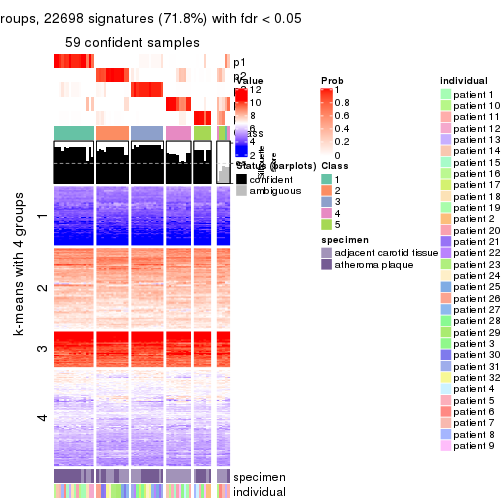
get_signatures(res, k = 6, scale_rows = FALSE)
Compare the overlap of signatures from different k:
compare_signatures(res)
get_signature() returns a data frame invisibly. TO get the list of signatures, the function
call should be assigned to a variable explicitly. In following code, if plot argument is set
to FALSE, no heatmap is plotted while only the differential analysis is performed.
# code only for demonstration
tb = get_signature(res, k = ..., plot = FALSE)
An example of the output of tb is:
#> which_row fdr mean_1 mean_2 scaled_mean_1 scaled_mean_2 km
#> 1 38 0.042760348 8.373488 9.131774 -0.5533452 0.5164555 1
#> 2 40 0.018707592 7.106213 8.469186 -0.6173731 0.5762149 1
#> 3 55 0.019134737 10.221463 11.207825 -0.6159697 0.5749050 1
#> 4 59 0.006059896 5.921854 7.869574 -0.6899429 0.6439467 1
#> 5 60 0.018055526 8.928898 10.211722 -0.6204761 0.5791110 1
#> 6 98 0.009384629 15.714769 14.887706 0.6635654 -0.6193277 2
...
The columns in tb are:
which_row: row indices corresponding to the input matrix.fdr: FDR for the differential test. mean_x: The mean value in group x.scaled_mean_x: The mean value in group x after rows are scaled.km: Row groups if k-means clustering is applied to rows.UMAP plot which shows how samples are separated.
dimension_reduction(res, k = 2, method = "UMAP")
dimension_reduction(res, k = 3, method = "UMAP")
dimension_reduction(res, k = 4, method = "UMAP")
dimension_reduction(res, k = 5, method = "UMAP")
dimension_reduction(res, k = 6, method = "UMAP")
Following heatmap shows how subgroups are split when increasing k:
collect_classes(res)
Test correlation between subgroups and known annotations. If the known annotation is numeric, one-way ANOVA test is applied, and if the known annotation is discrete, chi-squared contingency table test is applied.
test_to_known_factors(res)
#> n specimen(p) individual(p) k
#> SD:skmeans 64 0.000462 0.5190 2
#> SD:skmeans 63 0.001025 0.4470 3
#> SD:skmeans 60 0.001190 0.0961 4
#> SD:skmeans 59 0.000854 0.0325 5
#> SD:skmeans 63 0.000628 0.0793 6
If matrix rows can be associated to genes, consider to use GO_Enrichment(res,
...) to perform function enrichment for the signature genes.
The object with results only for a single top-value method and a single partition method can be extracted as:
res = res_list["SD", "pam"]
# you can also extract it by
# res = res_list["SD:pam"]
A summary of res and all the functions that can be applied to it:
res
#> A 'ConsensusPartition' object with k = 2, 3, 4, 5, 6.
#> On a matrix with 31633 rows and 64 columns.
#> Top rows (1000, 2000, 3000, 4000, 5000) are extracted by 'SD' method.
#> Subgroups are detected by 'pam' method.
#> Performed in total 1250 partitions by row resampling.
#> Best k for subgroups seems to be 5.
#>
#> Following methods can be applied to this 'ConsensusPartition' object:
#> [1] "cola_report" "collect_classes" "collect_plots"
#> [4] "collect_stats" "colnames" "compare_signatures"
#> [7] "consensus_heatmap" "dimension_reduction" "functional_enrichment"
#> [10] "get_anno_col" "get_anno" "get_classes"
#> [13] "get_consensus" "get_matrix" "get_membership"
#> [16] "get_param" "get_signatures" "get_stats"
#> [19] "is_best_k" "is_stable_k" "membership_heatmap"
#> [22] "ncol" "nrow" "plot_ecdf"
#> [25] "rownames" "select_partition_number" "show"
#> [28] "suggest_best_k" "test_to_known_factors"
collect_plots() function collects all the plots made from res for all k (number of partitions)
into one single page to provide an easy and fast comparison between different k.
collect_plots(res)
The plots are:
k and the heatmap of
predicted classes for each k.k.k.k.All the plots in panels can be made by individual functions and they are plotted later in this section.
select_partition_number() produces several plots showing different
statistics for choosing “optimized” k. There are following statistics:
k;k, the area increased is defined as \(A_k - A_{k-1}\).The detailed explanations of these statistics can be found in the cola vignette.
Generally speaking, lower PAC score, higher mean silhouette score or higher
concordance corresponds to better partition. Rand index and Jaccard index
measure how similar the current partition is compared to partition with k-1.
If they are too similar, we won't accept k is better than k-1.
select_partition_number(res)
The numeric values for all these statistics can be obtained by get_stats().
get_stats(res)
#> k 1-PAC mean_silhouette concordance area_increased Rand Jaccard
#> 2 2 0.698 0.804 0.920 0.4605 0.563 0.563
#> 3 3 0.529 0.808 0.856 0.3726 0.707 0.526
#> 4 4 0.741 0.810 0.870 0.1772 0.819 0.554
#> 5 5 0.853 0.819 0.918 0.0879 0.858 0.513
#> 6 6 0.810 0.675 0.824 0.0353 0.895 0.538
suggest_best_k() suggests the best \(k\) based on these statistics. The rules are as follows:
NA.suggest_best_k(res)
#> [1] 5
Following shows the table of the partitions (You need to click the show/hide
code output link to see it). The membership matrix (columns with name p*)
is inferred by
clue::cl_consensus()
function with the SE method. Basically the value in the membership matrix
represents the probability to belong to a certain group. The finall class
label for an item is determined with the group with highest probability it
belongs to.
In get_classes() function, the entropy is calculated from the membership
matrix and the silhouette score is calculated from the consensus matrix.
cbind(get_classes(res, k = 2), get_membership(res, k = 2))
#> class entropy silhouette p1 p2
#> GSM1060118 1 0.000 0.8955 1.000 0.000
#> GSM1060120 1 1.000 0.0635 0.500 0.500
#> GSM1060122 1 0.163 0.8862 0.976 0.024
#> GSM1060124 1 0.118 0.8899 0.984 0.016
#> GSM1060126 1 0.388 0.8471 0.924 0.076
#> GSM1060128 1 0.000 0.8955 1.000 0.000
#> GSM1060130 1 0.000 0.8955 1.000 0.000
#> GSM1060132 1 0.000 0.8955 1.000 0.000
#> GSM1060134 1 0.141 0.8880 0.980 0.020
#> GSM1060136 1 0.000 0.8955 1.000 0.000
#> GSM1060138 1 0.141 0.8880 0.980 0.020
#> GSM1060140 1 0.000 0.8955 1.000 0.000
#> GSM1060142 1 0.000 0.8955 1.000 0.000
#> GSM1060144 1 0.000 0.8955 1.000 0.000
#> GSM1060146 1 0.000 0.8955 1.000 0.000
#> GSM1060148 1 0.000 0.8955 1.000 0.000
#> GSM1060150 1 0.000 0.8955 1.000 0.000
#> GSM1060152 1 0.000 0.8955 1.000 0.000
#> GSM1060154 1 0.000 0.8955 1.000 0.000
#> GSM1060156 1 0.000 0.8955 1.000 0.000
#> GSM1060158 1 0.955 0.4587 0.624 0.376
#> GSM1060160 1 0.000 0.8955 1.000 0.000
#> GSM1060162 2 0.000 0.9352 0.000 1.000
#> GSM1060164 1 0.000 0.8955 1.000 0.000
#> GSM1060166 1 0.000 0.8955 1.000 0.000
#> GSM1060168 1 0.955 0.4587 0.624 0.376
#> GSM1060170 1 0.000 0.8955 1.000 0.000
#> GSM1060172 1 0.000 0.8955 1.000 0.000
#> GSM1060174 2 0.000 0.9352 0.000 1.000
#> GSM1060176 1 0.992 0.2804 0.552 0.448
#> GSM1060178 1 0.000 0.8955 1.000 0.000
#> GSM1060180 1 0.118 0.8898 0.984 0.016
#> GSM1060117 1 0.000 0.8955 1.000 0.000
#> GSM1060119 1 0.998 0.1587 0.528 0.472
#> GSM1060121 2 0.000 0.9352 0.000 1.000
#> GSM1060123 2 0.000 0.9352 0.000 1.000
#> GSM1060125 1 0.242 0.8763 0.960 0.040
#> GSM1060127 2 0.000 0.9352 0.000 1.000
#> GSM1060129 2 0.760 0.6836 0.220 0.780
#> GSM1060131 1 0.955 0.4127 0.624 0.376
#> GSM1060133 2 0.000 0.9352 0.000 1.000
#> GSM1060135 2 0.000 0.9352 0.000 1.000
#> GSM1060137 2 0.000 0.9352 0.000 1.000
#> GSM1060139 1 0.000 0.8955 1.000 0.000
#> GSM1060141 1 0.000 0.8955 1.000 0.000
#> GSM1060143 2 0.482 0.8347 0.104 0.896
#> GSM1060145 2 0.973 0.2794 0.404 0.596
#> GSM1060147 1 0.615 0.7699 0.848 0.152
#> GSM1060149 1 0.000 0.8955 1.000 0.000
#> GSM1060151 1 0.141 0.8880 0.980 0.020
#> GSM1060153 2 0.000 0.9352 0.000 1.000
#> GSM1060155 2 0.000 0.9352 0.000 1.000
#> GSM1060157 1 0.000 0.8955 1.000 0.000
#> GSM1060159 1 0.141 0.8884 0.980 0.020
#> GSM1060161 2 0.000 0.9352 0.000 1.000
#> GSM1060163 2 0.000 0.9352 0.000 1.000
#> GSM1060165 2 0.000 0.9352 0.000 1.000
#> GSM1060167 1 0.966 0.4253 0.608 0.392
#> GSM1060169 2 0.000 0.9352 0.000 1.000
#> GSM1060171 1 0.955 0.4587 0.624 0.376
#> GSM1060173 2 0.000 0.9352 0.000 1.000
#> GSM1060175 2 0.000 0.9352 0.000 1.000
#> GSM1060177 1 0.955 0.4587 0.624 0.376
#> GSM1060179 2 0.909 0.4243 0.324 0.676
cbind(get_classes(res, k = 3), get_membership(res, k = 3))
#> class entropy silhouette p1 p2 p3
#> GSM1060118 1 0.2796 0.879 0.908 0.092 0.000
#> GSM1060120 3 0.4291 0.713 0.152 0.008 0.840
#> GSM1060122 1 0.4235 0.795 0.824 0.000 0.176
#> GSM1060124 1 0.3686 0.822 0.860 0.000 0.140
#> GSM1060126 1 0.4235 0.795 0.824 0.000 0.176
#> GSM1060128 1 0.4277 0.865 0.852 0.132 0.016
#> GSM1060130 1 0.3412 0.870 0.876 0.124 0.000
#> GSM1060132 1 0.2261 0.880 0.932 0.068 0.000
#> GSM1060134 1 0.4195 0.822 0.852 0.012 0.136
#> GSM1060136 1 0.0592 0.876 0.988 0.012 0.000
#> GSM1060138 1 0.6460 0.756 0.764 0.112 0.124
#> GSM1060140 1 0.3038 0.828 0.896 0.104 0.000
#> GSM1060142 1 0.0592 0.876 0.988 0.012 0.000
#> GSM1060144 1 0.0592 0.876 0.988 0.012 0.000
#> GSM1060146 1 0.3038 0.875 0.896 0.104 0.000
#> GSM1060148 1 0.0592 0.876 0.988 0.012 0.000
#> GSM1060150 1 0.4799 0.863 0.836 0.132 0.032
#> GSM1060152 1 0.0000 0.878 1.000 0.000 0.000
#> GSM1060154 1 0.3120 0.853 0.908 0.012 0.080
#> GSM1060156 1 0.0000 0.878 1.000 0.000 0.000
#> GSM1060158 3 0.4063 0.755 0.112 0.020 0.868
#> GSM1060160 1 0.6590 0.834 0.756 0.132 0.112
#> GSM1060162 3 0.3116 0.781 0.000 0.108 0.892
#> GSM1060164 1 0.4799 0.863 0.836 0.132 0.032
#> GSM1060166 1 0.4799 0.863 0.836 0.132 0.032
#> GSM1060168 3 0.3551 0.749 0.132 0.000 0.868
#> GSM1060170 1 0.6063 0.851 0.784 0.132 0.084
#> GSM1060172 1 0.4799 0.863 0.836 0.132 0.032
#> GSM1060174 3 0.3116 0.781 0.000 0.108 0.892
#> GSM1060176 3 0.4413 0.759 0.124 0.024 0.852
#> GSM1060178 1 0.4277 0.865 0.852 0.132 0.016
#> GSM1060180 1 0.6613 0.800 0.740 0.072 0.188
#> GSM1060117 1 0.0592 0.876 0.988 0.012 0.000
#> GSM1060119 3 0.4099 0.723 0.140 0.008 0.852
#> GSM1060121 2 0.4555 0.850 0.000 0.800 0.200
#> GSM1060123 2 0.4974 0.826 0.000 0.764 0.236
#> GSM1060125 2 0.8520 0.387 0.280 0.588 0.132
#> GSM1060127 3 0.4399 0.694 0.000 0.188 0.812
#> GSM1060129 2 0.6099 0.827 0.032 0.740 0.228
#> GSM1060131 3 0.4700 0.693 0.180 0.008 0.812
#> GSM1060133 2 0.4974 0.826 0.000 0.764 0.236
#> GSM1060135 2 0.4974 0.826 0.000 0.764 0.236
#> GSM1060137 2 0.3752 0.862 0.000 0.856 0.144
#> GSM1060139 1 0.0592 0.876 0.988 0.012 0.000
#> GSM1060141 1 0.3272 0.827 0.892 0.104 0.004
#> GSM1060143 2 0.3551 0.857 0.000 0.868 0.132
#> GSM1060145 2 0.4662 0.840 0.032 0.844 0.124
#> GSM1060147 2 0.4677 0.734 0.132 0.840 0.028
#> GSM1060149 1 0.4799 0.863 0.836 0.132 0.032
#> GSM1060151 1 0.4195 0.822 0.852 0.012 0.136
#> GSM1060153 2 0.3752 0.862 0.000 0.856 0.144
#> GSM1060155 2 0.3752 0.862 0.000 0.856 0.144
#> GSM1060157 1 0.4799 0.863 0.836 0.132 0.032
#> GSM1060159 1 0.7680 0.789 0.680 0.132 0.188
#> GSM1060161 3 0.3116 0.781 0.000 0.108 0.892
#> GSM1060163 3 0.2448 0.793 0.000 0.076 0.924
#> GSM1060165 3 0.3551 0.760 0.000 0.132 0.868
#> GSM1060167 3 0.3826 0.752 0.124 0.008 0.868
#> GSM1060169 3 0.4555 0.680 0.000 0.200 0.800
#> GSM1060171 3 0.4128 0.725 0.012 0.132 0.856
#> GSM1060173 3 0.2448 0.793 0.000 0.076 0.924
#> GSM1060175 3 0.4796 0.651 0.000 0.220 0.780
#> GSM1060177 3 0.3551 0.735 0.000 0.132 0.868
#> GSM1060179 3 0.1919 0.797 0.024 0.020 0.956
cbind(get_classes(res, k = 4), get_membership(res, k = 4))
#> class entropy silhouette p1 p2 p3 p4
#> GSM1060118 1 0.3356 0.8237 0.824 0.000 0.176 0.000
#> GSM1060120 2 0.6081 -0.0244 0.472 0.484 0.000 0.044
#> GSM1060122 1 0.2742 0.8526 0.900 0.076 0.024 0.000
#> GSM1060124 1 0.2522 0.8558 0.908 0.076 0.016 0.000
#> GSM1060126 1 0.3004 0.8402 0.884 0.100 0.008 0.008
#> GSM1060128 3 0.3528 0.7405 0.192 0.000 0.808 0.000
#> GSM1060130 1 0.4431 0.6466 0.696 0.000 0.304 0.000
#> GSM1060132 3 0.3764 0.6980 0.216 0.000 0.784 0.000
#> GSM1060134 1 0.2522 0.8558 0.908 0.076 0.016 0.000
#> GSM1060136 1 0.3160 0.8760 0.872 0.020 0.108 0.000
#> GSM1060138 1 0.1557 0.8501 0.944 0.000 0.000 0.056
#> GSM1060140 1 0.3090 0.8575 0.888 0.000 0.056 0.056
#> GSM1060142 1 0.2530 0.8747 0.888 0.000 0.112 0.000
#> GSM1060144 1 0.2530 0.8747 0.888 0.000 0.112 0.000
#> GSM1060146 3 0.4008 0.6743 0.244 0.000 0.756 0.000
#> GSM1060148 1 0.2530 0.8747 0.888 0.000 0.112 0.000
#> GSM1060150 3 0.0817 0.8774 0.000 0.024 0.976 0.000
#> GSM1060152 1 0.2530 0.8747 0.888 0.000 0.112 0.000
#> GSM1060154 1 0.2871 0.8605 0.896 0.072 0.032 0.000
#> GSM1060156 1 0.2530 0.8747 0.888 0.000 0.112 0.000
#> GSM1060158 2 0.1151 0.8267 0.008 0.968 0.024 0.000
#> GSM1060160 3 0.1256 0.8729 0.008 0.028 0.964 0.000
#> GSM1060162 2 0.2011 0.8347 0.000 0.920 0.000 0.080
#> GSM1060164 3 0.0817 0.8774 0.000 0.024 0.976 0.000
#> GSM1060166 3 0.0000 0.8773 0.000 0.000 1.000 0.000
#> GSM1060168 2 0.2443 0.8085 0.060 0.916 0.024 0.000
#> GSM1060170 3 0.1256 0.8729 0.008 0.028 0.964 0.000
#> GSM1060172 3 0.0000 0.8773 0.000 0.000 1.000 0.000
#> GSM1060174 2 0.2081 0.8331 0.000 0.916 0.000 0.084
#> GSM1060176 2 0.2596 0.8048 0.068 0.908 0.024 0.000
#> GSM1060178 3 0.0817 0.8668 0.024 0.000 0.976 0.000
#> GSM1060180 3 0.3485 0.8176 0.116 0.028 0.856 0.000
#> GSM1060117 1 0.2530 0.8747 0.888 0.000 0.112 0.000
#> GSM1060119 2 0.6060 0.1006 0.440 0.516 0.000 0.044
#> GSM1060121 4 0.1211 0.9503 0.000 0.040 0.000 0.960
#> GSM1060123 4 0.1557 0.9436 0.000 0.056 0.000 0.944
#> GSM1060125 1 0.4605 0.7657 0.796 0.072 0.000 0.132
#> GSM1060127 2 0.2530 0.8281 0.004 0.896 0.000 0.100
#> GSM1060129 4 0.2053 0.9303 0.004 0.072 0.000 0.924
#> GSM1060131 1 0.4776 0.6581 0.732 0.244 0.000 0.024
#> GSM1060133 4 0.1557 0.9436 0.000 0.056 0.000 0.944
#> GSM1060135 4 0.1661 0.9439 0.004 0.052 0.000 0.944
#> GSM1060137 4 0.0707 0.9548 0.020 0.000 0.000 0.980
#> GSM1060139 1 0.2530 0.8747 0.888 0.000 0.112 0.000
#> GSM1060141 1 0.3009 0.8579 0.892 0.000 0.052 0.056
#> GSM1060143 4 0.0707 0.9548 0.020 0.000 0.000 0.980
#> GSM1060145 4 0.0707 0.9548 0.020 0.000 0.000 0.980
#> GSM1060147 4 0.1302 0.9340 0.044 0.000 0.000 0.956
#> GSM1060149 3 0.0000 0.8773 0.000 0.000 1.000 0.000
#> GSM1060151 1 0.2635 0.8571 0.904 0.076 0.020 0.000
#> GSM1060153 4 0.0707 0.9548 0.020 0.000 0.000 0.980
#> GSM1060155 4 0.0000 0.9557 0.000 0.000 0.000 1.000
#> GSM1060157 3 0.0817 0.8774 0.000 0.024 0.976 0.000
#> GSM1060159 3 0.5780 0.0231 0.476 0.028 0.496 0.000
#> GSM1060161 2 0.3409 0.8290 0.008 0.872 0.024 0.096
#> GSM1060163 2 0.2198 0.8381 0.008 0.920 0.000 0.072
#> GSM1060165 2 0.2345 0.8244 0.000 0.900 0.000 0.100
#> GSM1060167 2 0.1151 0.8267 0.008 0.968 0.024 0.000
#> GSM1060169 2 0.3873 0.7112 0.000 0.772 0.000 0.228
#> GSM1060171 3 0.3239 0.8133 0.068 0.052 0.880 0.000
#> GSM1060173 2 0.1867 0.8368 0.000 0.928 0.000 0.072
#> GSM1060175 2 0.4193 0.6542 0.000 0.732 0.000 0.268
#> GSM1060177 2 0.2412 0.8038 0.008 0.908 0.084 0.000
#> GSM1060179 2 0.1854 0.8327 0.008 0.948 0.024 0.020
cbind(get_classes(res, k = 5), get_membership(res, k = 5))
#> class entropy silhouette p1 p2 p3 p4 p5
#> GSM1060118 1 0.0000 0.8662 1.000 0.000 0.000 0.000 0.000
#> GSM1060120 5 0.0000 0.8559 0.000 0.000 0.000 0.000 1.000
#> GSM1060122 5 0.0162 0.8566 0.004 0.000 0.000 0.000 0.996
#> GSM1060124 5 0.0162 0.8566 0.004 0.000 0.000 0.000 0.996
#> GSM1060126 5 0.0162 0.8566 0.004 0.000 0.000 0.000 0.996
#> GSM1060128 1 0.4307 0.1711 0.504 0.000 0.496 0.000 0.000
#> GSM1060130 1 0.3521 0.7267 0.764 0.000 0.232 0.000 0.004
#> GSM1060132 3 0.0579 0.9831 0.008 0.000 0.984 0.000 0.008
#> GSM1060134 5 0.0162 0.8566 0.004 0.000 0.000 0.000 0.996
#> GSM1060136 1 0.4126 0.4181 0.620 0.000 0.000 0.000 0.380
#> GSM1060138 1 0.1282 0.8385 0.952 0.000 0.000 0.044 0.004
#> GSM1060140 1 0.0162 0.8645 0.996 0.000 0.000 0.004 0.000
#> GSM1060142 1 0.0404 0.8634 0.988 0.000 0.000 0.000 0.012
#> GSM1060144 1 0.0000 0.8662 1.000 0.000 0.000 0.000 0.000
#> GSM1060146 1 0.3519 0.7424 0.776 0.000 0.216 0.000 0.008
#> GSM1060148 1 0.0000 0.8662 1.000 0.000 0.000 0.000 0.000
#> GSM1060150 3 0.0000 0.9976 0.000 0.000 1.000 0.000 0.000
#> GSM1060152 1 0.3477 0.8098 0.832 0.000 0.112 0.000 0.056
#> GSM1060154 5 0.0162 0.8566 0.004 0.000 0.000 0.000 0.996
#> GSM1060156 1 0.3477 0.8098 0.832 0.000 0.112 0.000 0.056
#> GSM1060158 2 0.0000 0.8905 0.000 1.000 0.000 0.000 0.000
#> GSM1060160 3 0.0000 0.9976 0.000 0.000 1.000 0.000 0.000
#> GSM1060162 2 0.0000 0.8905 0.000 1.000 0.000 0.000 0.000
#> GSM1060164 3 0.0000 0.9976 0.000 0.000 1.000 0.000 0.000
#> GSM1060166 3 0.0000 0.9976 0.000 0.000 1.000 0.000 0.000
#> GSM1060168 5 0.4302 0.0869 0.000 0.480 0.000 0.000 0.520
#> GSM1060170 3 0.0000 0.9976 0.000 0.000 1.000 0.000 0.000
#> GSM1060172 3 0.0000 0.9976 0.000 0.000 1.000 0.000 0.000
#> GSM1060174 2 0.0000 0.8905 0.000 1.000 0.000 0.000 0.000
#> GSM1060176 5 0.3876 0.5038 0.000 0.316 0.000 0.000 0.684
#> GSM1060178 3 0.0162 0.9944 0.004 0.000 0.996 0.000 0.000
#> GSM1060180 3 0.0000 0.9976 0.000 0.000 1.000 0.000 0.000
#> GSM1060117 1 0.0000 0.8662 1.000 0.000 0.000 0.000 0.000
#> GSM1060119 5 0.0000 0.8559 0.000 0.000 0.000 0.000 1.000
#> GSM1060121 4 0.0162 0.9410 0.000 0.000 0.000 0.996 0.004
#> GSM1060123 4 0.0162 0.9410 0.000 0.000 0.000 0.996 0.004
#> GSM1060125 5 0.3399 0.7205 0.168 0.000 0.000 0.020 0.812
#> GSM1060127 2 0.6115 0.3693 0.000 0.552 0.000 0.168 0.280
#> GSM1060129 5 0.3177 0.6552 0.000 0.000 0.000 0.208 0.792
#> GSM1060131 5 0.0000 0.8559 0.000 0.000 0.000 0.000 1.000
#> GSM1060133 4 0.0162 0.9410 0.000 0.000 0.000 0.996 0.004
#> GSM1060135 4 0.1121 0.9119 0.000 0.000 0.000 0.956 0.044
#> GSM1060137 4 0.0000 0.9406 0.000 0.000 0.000 1.000 0.000
#> GSM1060139 1 0.0000 0.8662 1.000 0.000 0.000 0.000 0.000
#> GSM1060141 1 0.0162 0.8645 0.996 0.000 0.000 0.004 0.000
#> GSM1060143 4 0.1608 0.9063 0.072 0.000 0.000 0.928 0.000
#> GSM1060145 4 0.2813 0.8318 0.168 0.000 0.000 0.832 0.000
#> GSM1060147 4 0.2813 0.8318 0.168 0.000 0.000 0.832 0.000
#> GSM1060149 3 0.0000 0.9976 0.000 0.000 1.000 0.000 0.000
#> GSM1060151 5 0.1270 0.8348 0.052 0.000 0.000 0.000 0.948
#> GSM1060153 4 0.0000 0.9406 0.000 0.000 0.000 1.000 0.000
#> GSM1060155 4 0.0162 0.9410 0.000 0.000 0.000 0.996 0.004
#> GSM1060157 3 0.0000 0.9976 0.000 0.000 1.000 0.000 0.000
#> GSM1060159 3 0.0162 0.9942 0.000 0.000 0.996 0.000 0.004
#> GSM1060161 2 0.0000 0.8905 0.000 1.000 0.000 0.000 0.000
#> GSM1060163 2 0.0000 0.8905 0.000 1.000 0.000 0.000 0.000
#> GSM1060165 2 0.0000 0.8905 0.000 1.000 0.000 0.000 0.000
#> GSM1060167 2 0.0000 0.8905 0.000 1.000 0.000 0.000 0.000
#> GSM1060169 2 0.4150 0.4411 0.000 0.612 0.000 0.388 0.000
#> GSM1060171 5 0.4273 0.1955 0.000 0.000 0.448 0.000 0.552
#> GSM1060173 2 0.0000 0.8905 0.000 1.000 0.000 0.000 0.000
#> GSM1060175 2 0.4256 0.3315 0.000 0.564 0.000 0.436 0.000
#> GSM1060177 2 0.0162 0.8874 0.000 0.996 0.004 0.000 0.000
#> GSM1060179 2 0.0000 0.8905 0.000 1.000 0.000 0.000 0.000
cbind(get_classes(res, k = 6), get_membership(res, k = 6))
#> class entropy silhouette p1 p2 p3 p4 p5 p6
#> GSM1060118 1 0.5353 0.738 0.516 0.000 0.000 0.116 0.368 0.000
#> GSM1060120 5 0.3672 0.528 0.000 0.000 0.000 0.000 0.632 0.368
#> GSM1060122 5 0.4517 0.665 0.444 0.000 0.000 0.000 0.524 0.032
#> GSM1060124 5 0.3866 0.666 0.484 0.000 0.000 0.000 0.516 0.000
#> GSM1060126 5 0.3866 0.666 0.484 0.000 0.000 0.000 0.516 0.000
#> GSM1060128 1 0.5795 0.632 0.496 0.000 0.220 0.000 0.284 0.000
#> GSM1060130 1 0.3911 0.728 0.624 0.000 0.008 0.000 0.368 0.000
#> GSM1060132 3 0.3862 0.263 0.476 0.000 0.524 0.000 0.000 0.000
#> GSM1060134 5 0.3866 0.666 0.484 0.000 0.000 0.000 0.516 0.000
#> GSM1060136 1 0.1610 0.277 0.916 0.000 0.000 0.000 0.084 0.000
#> GSM1060138 4 0.2511 0.735 0.056 0.000 0.000 0.880 0.064 0.000
#> GSM1060140 5 0.6117 -0.616 0.316 0.000 0.000 0.316 0.368 0.000
#> GSM1060142 1 0.2597 0.622 0.824 0.000 0.000 0.000 0.176 0.000
#> GSM1060144 1 0.5353 0.738 0.516 0.000 0.000 0.116 0.368 0.000
#> GSM1060146 1 0.5411 0.702 0.512 0.000 0.124 0.000 0.364 0.000
#> GSM1060148 1 0.5353 0.738 0.516 0.000 0.000 0.116 0.368 0.000
#> GSM1060150 3 0.0000 0.910 0.000 0.000 1.000 0.000 0.000 0.000
#> GSM1060152 1 0.0000 0.446 1.000 0.000 0.000 0.000 0.000 0.000
#> GSM1060154 5 0.3866 0.666 0.484 0.000 0.000 0.000 0.516 0.000
#> GSM1060156 1 0.0000 0.446 1.000 0.000 0.000 0.000 0.000 0.000
#> GSM1060158 2 0.1007 0.857 0.000 0.956 0.044 0.000 0.000 0.000
#> GSM1060160 3 0.0000 0.910 0.000 0.000 1.000 0.000 0.000 0.000
#> GSM1060162 2 0.0146 0.870 0.000 0.996 0.000 0.000 0.000 0.004
#> GSM1060164 3 0.0000 0.910 0.000 0.000 1.000 0.000 0.000 0.000
#> GSM1060166 3 0.0000 0.910 0.000 0.000 1.000 0.000 0.000 0.000
#> GSM1060168 2 0.4648 0.321 0.000 0.548 0.044 0.000 0.408 0.000
#> GSM1060170 3 0.0000 0.910 0.000 0.000 1.000 0.000 0.000 0.000
#> GSM1060172 3 0.0000 0.910 0.000 0.000 1.000 0.000 0.000 0.000
#> GSM1060174 2 0.0146 0.870 0.000 0.996 0.000 0.000 0.000 0.004
#> GSM1060176 2 0.3862 0.168 0.000 0.524 0.000 0.000 0.476 0.000
#> GSM1060178 3 0.3108 0.745 0.128 0.000 0.828 0.000 0.044 0.000
#> GSM1060180 3 0.0000 0.910 0.000 0.000 1.000 0.000 0.000 0.000
#> GSM1060117 1 0.5353 0.738 0.516 0.000 0.000 0.116 0.368 0.000
#> GSM1060119 5 0.3672 0.528 0.000 0.000 0.000 0.000 0.632 0.368
#> GSM1060121 6 0.4234 0.702 0.000 0.044 0.000 0.280 0.000 0.676
#> GSM1060123 6 0.4234 0.702 0.000 0.044 0.000 0.280 0.000 0.676
#> GSM1060125 4 0.3799 0.535 0.276 0.000 0.000 0.704 0.020 0.000
#> GSM1060127 6 0.0914 0.593 0.000 0.016 0.000 0.000 0.016 0.968
#> GSM1060129 5 0.3717 0.510 0.000 0.000 0.000 0.000 0.616 0.384
#> GSM1060131 5 0.3672 0.528 0.000 0.000 0.000 0.000 0.632 0.368
#> GSM1060133 6 0.4234 0.702 0.000 0.044 0.000 0.280 0.000 0.676
#> GSM1060135 6 0.2383 0.634 0.000 0.000 0.000 0.096 0.024 0.880
#> GSM1060137 4 0.2219 0.682 0.000 0.000 0.000 0.864 0.000 0.136
#> GSM1060139 1 0.5353 0.738 0.516 0.000 0.000 0.116 0.368 0.000
#> GSM1060141 4 0.3512 0.524 0.008 0.000 0.000 0.720 0.272 0.000
#> GSM1060143 4 0.1556 0.736 0.000 0.000 0.000 0.920 0.000 0.080
#> GSM1060145 4 0.0000 0.771 0.000 0.000 0.000 1.000 0.000 0.000
#> GSM1060147 4 0.0000 0.771 0.000 0.000 0.000 1.000 0.000 0.000
#> GSM1060149 3 0.0000 0.910 0.000 0.000 1.000 0.000 0.000 0.000
#> GSM1060151 5 0.3866 0.666 0.484 0.000 0.000 0.000 0.516 0.000
#> GSM1060153 4 0.2454 0.650 0.000 0.000 0.000 0.840 0.000 0.160
#> GSM1060155 6 0.3725 0.658 0.000 0.008 0.000 0.316 0.000 0.676
#> GSM1060157 3 0.0000 0.910 0.000 0.000 1.000 0.000 0.000 0.000
#> GSM1060159 3 0.2703 0.751 0.172 0.004 0.824 0.000 0.000 0.000
#> GSM1060161 2 0.0146 0.870 0.000 0.996 0.000 0.000 0.000 0.004
#> GSM1060163 2 0.0146 0.870 0.000 0.996 0.000 0.000 0.000 0.004
#> GSM1060165 2 0.0146 0.870 0.000 0.996 0.000 0.000 0.000 0.004
#> GSM1060167 2 0.1007 0.857 0.000 0.956 0.044 0.000 0.000 0.000
#> GSM1060169 6 0.3717 0.463 0.000 0.384 0.000 0.000 0.000 0.616
#> GSM1060171 3 0.2790 0.778 0.000 0.024 0.844 0.000 0.132 0.000
#> GSM1060173 2 0.0146 0.870 0.000 0.996 0.000 0.000 0.000 0.004
#> GSM1060175 6 0.3852 0.464 0.000 0.384 0.000 0.004 0.000 0.612
#> GSM1060177 2 0.1075 0.854 0.000 0.952 0.048 0.000 0.000 0.000
#> GSM1060179 2 0.0790 0.862 0.000 0.968 0.032 0.000 0.000 0.000
Heatmaps for the consensus matrix. It visualizes the probability of two samples to be in a same group.
consensus_heatmap(res, k = 2)
consensus_heatmap(res, k = 3)
consensus_heatmap(res, k = 4)
consensus_heatmap(res, k = 5)
consensus_heatmap(res, k = 6)
Heatmaps for the membership of samples in all partitions to see how consistent they are:
membership_heatmap(res, k = 2)
membership_heatmap(res, k = 3)
membership_heatmap(res, k = 4)
membership_heatmap(res, k = 5)
membership_heatmap(res, k = 6)

As soon as we have had the classes for columns, we can look for signatures which are significantly different between classes which can be candidate marks for certain classes. Following are the heatmaps for signatures.
Signature heatmaps where rows are scaled:
get_signatures(res, k = 2)
get_signatures(res, k = 3)
get_signatures(res, k = 4)

get_signatures(res, k = 5)
get_signatures(res, k = 6)
Signature heatmaps where rows are not scaled:
get_signatures(res, k = 2, scale_rows = FALSE)
get_signatures(res, k = 3, scale_rows = FALSE)
get_signatures(res, k = 4, scale_rows = FALSE)
get_signatures(res, k = 5, scale_rows = FALSE)
get_signatures(res, k = 6, scale_rows = FALSE)
Compare the overlap of signatures from different k:
compare_signatures(res)
get_signature() returns a data frame invisibly. TO get the list of signatures, the function
call should be assigned to a variable explicitly. In following code, if plot argument is set
to FALSE, no heatmap is plotted while only the differential analysis is performed.
# code only for demonstration
tb = get_signature(res, k = ..., plot = FALSE)
An example of the output of tb is:
#> which_row fdr mean_1 mean_2 scaled_mean_1 scaled_mean_2 km
#> 1 38 0.042760348 8.373488 9.131774 -0.5533452 0.5164555 1
#> 2 40 0.018707592 7.106213 8.469186 -0.6173731 0.5762149 1
#> 3 55 0.019134737 10.221463 11.207825 -0.6159697 0.5749050 1
#> 4 59 0.006059896 5.921854 7.869574 -0.6899429 0.6439467 1
#> 5 60 0.018055526 8.928898 10.211722 -0.6204761 0.5791110 1
#> 6 98 0.009384629 15.714769 14.887706 0.6635654 -0.6193277 2
...
The columns in tb are:
which_row: row indices corresponding to the input matrix.fdr: FDR for the differential test. mean_x: The mean value in group x.scaled_mean_x: The mean value in group x after rows are scaled.km: Row groups if k-means clustering is applied to rows.UMAP plot which shows how samples are separated.
dimension_reduction(res, k = 2, method = "UMAP")
dimension_reduction(res, k = 3, method = "UMAP")
dimension_reduction(res, k = 4, method = "UMAP")
dimension_reduction(res, k = 5, method = "UMAP")
dimension_reduction(res, k = 6, method = "UMAP")
Following heatmap shows how subgroups are split when increasing k:
collect_classes(res)
Test correlation between subgroups and known annotations. If the known annotation is numeric, one-way ANOVA test is applied, and if the known annotation is discrete, chi-squared contingency table test is applied.
test_to_known_factors(res)
#> n specimen(p) individual(p) k
#> SD:pam 53 4.65e-05 0.7280 2
#> SD:pam 63 4.76e-06 0.5306 3
#> SD:pam 61 1.01e-04 0.1702 4
#> SD:pam 57 9.04e-04 0.0843 5
#> SD:pam 55 6.06e-03 0.0721 6
If matrix rows can be associated to genes, consider to use GO_Enrichment(res,
...) to perform function enrichment for the signature genes.
The object with results only for a single top-value method and a single partition method can be extracted as:
res = res_list["SD", "mclust"]
# you can also extract it by
# res = res_list["SD:mclust"]
A summary of res and all the functions that can be applied to it:
res
#> A 'ConsensusPartition' object with k = 2, 3, 4, 5, 6.
#> On a matrix with 31633 rows and 64 columns.
#> Top rows (1000, 2000, 3000, 4000, 5000) are extracted by 'SD' method.
#> Subgroups are detected by 'mclust' method.
#> Performed in total 1250 partitions by row resampling.
#> Best k for subgroups seems to be 6.
#>
#> Following methods can be applied to this 'ConsensusPartition' object:
#> [1] "cola_report" "collect_classes" "collect_plots"
#> [4] "collect_stats" "colnames" "compare_signatures"
#> [7] "consensus_heatmap" "dimension_reduction" "functional_enrichment"
#> [10] "get_anno_col" "get_anno" "get_classes"
#> [13] "get_consensus" "get_matrix" "get_membership"
#> [16] "get_param" "get_signatures" "get_stats"
#> [19] "is_best_k" "is_stable_k" "membership_heatmap"
#> [22] "ncol" "nrow" "plot_ecdf"
#> [25] "rownames" "select_partition_number" "show"
#> [28] "suggest_best_k" "test_to_known_factors"
collect_plots() function collects all the plots made from res for all k (number of partitions)
into one single page to provide an easy and fast comparison between different k.
collect_plots(res)
The plots are:
k and the heatmap of
predicted classes for each k.k.k.k.All the plots in panels can be made by individual functions and they are plotted later in this section.
select_partition_number() produces several plots showing different
statistics for choosing “optimized” k. There are following statistics:
k;k, the area increased is defined as \(A_k - A_{k-1}\).The detailed explanations of these statistics can be found in the cola vignette.
Generally speaking, lower PAC score, higher mean silhouette score or higher
concordance corresponds to better partition. Rand index and Jaccard index
measure how similar the current partition is compared to partition with k-1.
If they are too similar, we won't accept k is better than k-1.
select_partition_number(res)
The numeric values for all these statistics can be obtained by get_stats().
get_stats(res)
#> k 1-PAC mean_silhouette concordance area_increased Rand Jaccard
#> 2 2 1.000 1.000 1.000 0.4906 0.510 0.510
#> 3 3 1.000 0.985 0.992 0.3564 0.825 0.658
#> 4 4 0.845 0.835 0.915 0.1033 0.940 0.822
#> 5 5 0.768 0.799 0.863 0.0889 0.762 0.331
#> 6 6 0.912 0.898 0.944 0.0486 0.948 0.746
suggest_best_k() suggests the best \(k\) based on these statistics. The rules are as follows:
NA.suggest_best_k(res)
#> [1] 6
#> attr(,"optional")
#> [1] 2 3
There is also optional best \(k\) = 2 3 that is worth to check.
Following shows the table of the partitions (You need to click the show/hide
code output link to see it). The membership matrix (columns with name p*)
is inferred by
clue::cl_consensus()
function with the SE method. Basically the value in the membership matrix
represents the probability to belong to a certain group. The finall class
label for an item is determined with the group with highest probability it
belongs to.
In get_classes() function, the entropy is calculated from the membership
matrix and the silhouette score is calculated from the consensus matrix.
cbind(get_classes(res, k = 2), get_membership(res, k = 2))
#> class entropy silhouette p1 p2
#> GSM1060118 1 0 1 1 0
#> GSM1060120 1 0 1 1 0
#> GSM1060122 1 0 1 1 0
#> GSM1060124 1 0 1 1 0
#> GSM1060126 1 0 1 1 0
#> GSM1060128 1 0 1 1 0
#> GSM1060130 1 0 1 1 0
#> GSM1060132 1 0 1 1 0
#> GSM1060134 1 0 1 1 0
#> GSM1060136 1 0 1 1 0
#> GSM1060138 1 0 1 1 0
#> GSM1060140 1 0 1 1 0
#> GSM1060142 1 0 1 1 0
#> GSM1060144 1 0 1 1 0
#> GSM1060146 1 0 1 1 0
#> GSM1060148 1 0 1 1 0
#> GSM1060150 2 0 1 0 1
#> GSM1060152 1 0 1 1 0
#> GSM1060154 1 0 1 1 0
#> GSM1060156 1 0 1 1 0
#> GSM1060158 2 0 1 0 1
#> GSM1060160 2 0 1 0 1
#> GSM1060162 2 0 1 0 1
#> GSM1060164 2 0 1 0 1
#> GSM1060166 2 0 1 0 1
#> GSM1060168 2 0 1 0 1
#> GSM1060170 2 0 1 0 1
#> GSM1060172 2 0 1 0 1
#> GSM1060174 2 0 1 0 1
#> GSM1060176 2 0 1 0 1
#> GSM1060178 2 0 1 0 1
#> GSM1060180 2 0 1 0 1
#> GSM1060117 1 0 1 1 0
#> GSM1060119 1 0 1 1 0
#> GSM1060121 1 0 1 1 0
#> GSM1060123 1 0 1 1 0
#> GSM1060125 1 0 1 1 0
#> GSM1060127 1 0 1 1 0
#> GSM1060129 1 0 1 1 0
#> GSM1060131 1 0 1 1 0
#> GSM1060133 1 0 1 1 0
#> GSM1060135 1 0 1 1 0
#> GSM1060137 1 0 1 1 0
#> GSM1060139 1 0 1 1 0
#> GSM1060141 1 0 1 1 0
#> GSM1060143 1 0 1 1 0
#> GSM1060145 1 0 1 1 0
#> GSM1060147 1 0 1 1 0
#> GSM1060149 2 0 1 0 1
#> GSM1060151 1 0 1 1 0
#> GSM1060153 1 0 1 1 0
#> GSM1060155 1 0 1 1 0
#> GSM1060157 2 0 1 0 1
#> GSM1060159 2 0 1 0 1
#> GSM1060161 2 0 1 0 1
#> GSM1060163 2 0 1 0 1
#> GSM1060165 2 0 1 0 1
#> GSM1060167 2 0 1 0 1
#> GSM1060169 2 0 1 0 1
#> GSM1060171 2 0 1 0 1
#> GSM1060173 2 0 1 0 1
#> GSM1060175 2 0 1 0 1
#> GSM1060177 2 0 1 0 1
#> GSM1060179 2 0 1 0 1
cbind(get_classes(res, k = 3), get_membership(res, k = 3))
#> class entropy silhouette p1 p2 p3
#> GSM1060118 1 0.0000 1.000 1.000 0.000 0
#> GSM1060120 2 0.0000 0.975 0.000 1.000 0
#> GSM1060122 2 0.0000 0.975 0.000 1.000 0
#> GSM1060124 2 0.0000 0.975 0.000 1.000 0
#> GSM1060126 2 0.0000 0.975 0.000 1.000 0
#> GSM1060128 2 0.0424 0.974 0.008 0.992 0
#> GSM1060130 2 0.0237 0.976 0.004 0.996 0
#> GSM1060132 2 0.0237 0.976 0.004 0.996 0
#> GSM1060134 2 0.0237 0.976 0.004 0.996 0
#> GSM1060136 2 0.0237 0.976 0.004 0.996 0
#> GSM1060138 1 0.0000 1.000 1.000 0.000 0
#> GSM1060140 1 0.0000 1.000 1.000 0.000 0
#> GSM1060142 1 0.0000 1.000 1.000 0.000 0
#> GSM1060144 1 0.0000 1.000 1.000 0.000 0
#> GSM1060146 2 0.0237 0.976 0.004 0.996 0
#> GSM1060148 1 0.0000 1.000 1.000 0.000 0
#> GSM1060150 3 0.0000 1.000 0.000 0.000 1
#> GSM1060152 2 0.0237 0.976 0.004 0.996 0
#> GSM1060154 2 0.0237 0.976 0.004 0.996 0
#> GSM1060156 2 0.0237 0.976 0.004 0.996 0
#> GSM1060158 3 0.0000 1.000 0.000 0.000 1
#> GSM1060160 3 0.0000 1.000 0.000 0.000 1
#> GSM1060162 3 0.0000 1.000 0.000 0.000 1
#> GSM1060164 3 0.0000 1.000 0.000 0.000 1
#> GSM1060166 3 0.0000 1.000 0.000 0.000 1
#> GSM1060168 3 0.0000 1.000 0.000 0.000 1
#> GSM1060170 3 0.0000 1.000 0.000 0.000 1
#> GSM1060172 3 0.0000 1.000 0.000 0.000 1
#> GSM1060174 3 0.0000 1.000 0.000 0.000 1
#> GSM1060176 3 0.0000 1.000 0.000 0.000 1
#> GSM1060178 3 0.0000 1.000 0.000 0.000 1
#> GSM1060180 3 0.0000 1.000 0.000 0.000 1
#> GSM1060117 1 0.0000 1.000 1.000 0.000 0
#> GSM1060119 2 0.0000 0.975 0.000 1.000 0
#> GSM1060121 2 0.3941 0.837 0.156 0.844 0
#> GSM1060123 2 0.3941 0.837 0.156 0.844 0
#> GSM1060125 1 0.0000 1.000 1.000 0.000 0
#> GSM1060127 2 0.0237 0.976 0.004 0.996 0
#> GSM1060129 2 0.0237 0.976 0.004 0.996 0
#> GSM1060131 2 0.0000 0.975 0.000 1.000 0
#> GSM1060133 2 0.3941 0.837 0.156 0.844 0
#> GSM1060135 2 0.0237 0.976 0.004 0.996 0
#> GSM1060137 1 0.0000 1.000 1.000 0.000 0
#> GSM1060139 1 0.0000 1.000 1.000 0.000 0
#> GSM1060141 1 0.0000 1.000 1.000 0.000 0
#> GSM1060143 1 0.0000 1.000 1.000 0.000 0
#> GSM1060145 1 0.0000 1.000 1.000 0.000 0
#> GSM1060147 1 0.0000 1.000 1.000 0.000 0
#> GSM1060149 3 0.0000 1.000 0.000 0.000 1
#> GSM1060151 2 0.0424 0.974 0.008 0.992 0
#> GSM1060153 1 0.0000 1.000 1.000 0.000 0
#> GSM1060155 1 0.0000 1.000 1.000 0.000 0
#> GSM1060157 3 0.0000 1.000 0.000 0.000 1
#> GSM1060159 3 0.0000 1.000 0.000 0.000 1
#> GSM1060161 3 0.0000 1.000 0.000 0.000 1
#> GSM1060163 3 0.0000 1.000 0.000 0.000 1
#> GSM1060165 3 0.0000 1.000 0.000 0.000 1
#> GSM1060167 3 0.0000 1.000 0.000 0.000 1
#> GSM1060169 3 0.0000 1.000 0.000 0.000 1
#> GSM1060171 3 0.0000 1.000 0.000 0.000 1
#> GSM1060173 3 0.0000 1.000 0.000 0.000 1
#> GSM1060175 3 0.0000 1.000 0.000 0.000 1
#> GSM1060177 3 0.0000 1.000 0.000 0.000 1
#> GSM1060179 3 0.0000 1.000 0.000 0.000 1
cbind(get_classes(res, k = 4), get_membership(res, k = 4))
#> class entropy silhouette p1 p2 p3 p4
#> GSM1060118 1 0.0000 0.9862 1.000 0.000 0.000 0.000
#> GSM1060120 2 0.0707 0.9502 0.000 0.980 0.000 0.020
#> GSM1060122 2 0.0707 0.9502 0.000 0.980 0.000 0.020
#> GSM1060124 2 0.0707 0.9502 0.000 0.980 0.000 0.020
#> GSM1060126 2 0.0707 0.9502 0.000 0.980 0.000 0.020
#> GSM1060128 2 0.1004 0.9410 0.024 0.972 0.000 0.004
#> GSM1060130 2 0.1004 0.9410 0.024 0.972 0.000 0.004
#> GSM1060132 2 0.0469 0.9512 0.000 0.988 0.000 0.012
#> GSM1060134 2 0.0000 0.9507 0.000 1.000 0.000 0.000
#> GSM1060136 2 0.0000 0.9507 0.000 1.000 0.000 0.000
#> GSM1060138 1 0.0000 0.9862 1.000 0.000 0.000 0.000
#> GSM1060140 1 0.0000 0.9862 1.000 0.000 0.000 0.000
#> GSM1060142 1 0.1940 0.8961 0.924 0.076 0.000 0.000
#> GSM1060144 1 0.0000 0.9862 1.000 0.000 0.000 0.000
#> GSM1060146 2 0.0336 0.9512 0.000 0.992 0.000 0.008
#> GSM1060148 1 0.0000 0.9862 1.000 0.000 0.000 0.000
#> GSM1060150 3 0.1474 0.7802 0.000 0.000 0.948 0.052
#> GSM1060152 2 0.0000 0.9507 0.000 1.000 0.000 0.000
#> GSM1060154 2 0.0000 0.9507 0.000 1.000 0.000 0.000
#> GSM1060156 2 0.0895 0.9429 0.020 0.976 0.000 0.004
#> GSM1060158 3 0.4933 -0.1596 0.000 0.000 0.568 0.432
#> GSM1060160 4 0.3610 0.7932 0.000 0.000 0.200 0.800
#> GSM1060162 3 0.2589 0.7819 0.000 0.000 0.884 0.116
#> GSM1060164 3 0.1716 0.7780 0.000 0.000 0.936 0.064
#> GSM1060166 4 0.4933 0.4046 0.000 0.000 0.432 0.568
#> GSM1060168 3 0.3074 0.7177 0.000 0.000 0.848 0.152
#> GSM1060170 3 0.0592 0.7919 0.000 0.000 0.984 0.016
#> GSM1060172 3 0.1637 0.7791 0.000 0.000 0.940 0.060
#> GSM1060174 3 0.3123 0.7742 0.000 0.000 0.844 0.156
#> GSM1060176 3 0.4866 0.3263 0.000 0.000 0.596 0.404
#> GSM1060178 4 0.3569 0.7910 0.000 0.000 0.196 0.804
#> GSM1060180 3 0.3764 0.6261 0.000 0.000 0.784 0.216
#> GSM1060117 1 0.0000 0.9862 1.000 0.000 0.000 0.000
#> GSM1060119 2 0.0707 0.9502 0.000 0.980 0.000 0.020
#> GSM1060121 2 0.4842 0.7376 0.192 0.760 0.000 0.048
#> GSM1060123 2 0.4842 0.7402 0.192 0.760 0.000 0.048
#> GSM1060125 1 0.0469 0.9849 0.988 0.000 0.000 0.012
#> GSM1060127 2 0.0592 0.9508 0.000 0.984 0.000 0.016
#> GSM1060129 2 0.0469 0.9512 0.000 0.988 0.000 0.012
#> GSM1060131 2 0.0707 0.9502 0.000 0.980 0.000 0.020
#> GSM1060133 2 0.4842 0.7402 0.192 0.760 0.000 0.048
#> GSM1060135 2 0.0000 0.9507 0.000 1.000 0.000 0.000
#> GSM1060137 1 0.0469 0.9849 0.988 0.000 0.000 0.012
#> GSM1060139 1 0.0000 0.9862 1.000 0.000 0.000 0.000
#> GSM1060141 1 0.0000 0.9862 1.000 0.000 0.000 0.000
#> GSM1060143 1 0.0469 0.9849 0.988 0.000 0.000 0.012
#> GSM1060145 1 0.0469 0.9849 0.988 0.000 0.000 0.012
#> GSM1060147 1 0.0469 0.9849 0.988 0.000 0.000 0.012
#> GSM1060149 3 0.0707 0.7966 0.000 0.000 0.980 0.020
#> GSM1060151 2 0.1118 0.9345 0.036 0.964 0.000 0.000
#> GSM1060153 1 0.0469 0.9849 0.988 0.000 0.000 0.012
#> GSM1060155 1 0.1389 0.9587 0.952 0.000 0.000 0.048
#> GSM1060157 3 0.1637 0.7960 0.000 0.000 0.940 0.060
#> GSM1060159 3 0.4776 0.0306 0.000 0.000 0.624 0.376
#> GSM1060161 3 0.2704 0.7789 0.000 0.000 0.876 0.124
#> GSM1060163 3 0.2589 0.7819 0.000 0.000 0.884 0.116
#> GSM1060165 3 0.4585 0.5655 0.000 0.000 0.668 0.332
#> GSM1060167 3 0.0707 0.7934 0.000 0.000 0.980 0.020
#> GSM1060169 4 0.2647 0.8163 0.000 0.000 0.120 0.880
#> GSM1060171 3 0.0592 0.7910 0.000 0.000 0.984 0.016
#> GSM1060173 3 0.2589 0.7819 0.000 0.000 0.884 0.116
#> GSM1060175 4 0.2760 0.8148 0.000 0.000 0.128 0.872
#> GSM1060177 3 0.2704 0.7789 0.000 0.000 0.876 0.124
#> GSM1060179 4 0.2760 0.8165 0.000 0.000 0.128 0.872
cbind(get_classes(res, k = 5), get_membership(res, k = 5))
#> class entropy silhouette p1 p2 p3 p4 p5
#> GSM1060118 1 0.0000 0.696 1.000 0.000 0.000 0.000 0.000
#> GSM1060120 5 0.0000 0.970 0.000 0.000 0.000 0.000 1.000
#> GSM1060122 5 0.0000 0.970 0.000 0.000 0.000 0.000 1.000
#> GSM1060124 5 0.0000 0.970 0.000 0.000 0.000 0.000 1.000
#> GSM1060126 5 0.0000 0.970 0.000 0.000 0.000 0.000 1.000
#> GSM1060128 1 0.5640 0.651 0.636 0.000 0.000 0.188 0.176
#> GSM1060130 1 0.5731 0.646 0.624 0.000 0.000 0.196 0.180
#> GSM1060132 1 0.4300 0.429 0.524 0.000 0.000 0.000 0.476
#> GSM1060134 5 0.2769 0.856 0.032 0.000 0.000 0.092 0.876
#> GSM1060136 1 0.5752 0.510 0.524 0.000 0.000 0.092 0.384
#> GSM1060138 1 0.1965 0.650 0.904 0.000 0.000 0.096 0.000
#> GSM1060140 1 0.0609 0.689 0.980 0.000 0.000 0.020 0.000
#> GSM1060142 1 0.0404 0.699 0.988 0.000 0.000 0.000 0.012
#> GSM1060144 1 0.1965 0.650 0.904 0.000 0.000 0.096 0.000
#> GSM1060146 1 0.4815 0.451 0.524 0.000 0.000 0.020 0.456
#> GSM1060148 1 0.1965 0.650 0.904 0.000 0.000 0.096 0.000
#> GSM1060150 3 0.0000 0.903 0.000 0.000 1.000 0.000 0.000
#> GSM1060152 1 0.5744 0.515 0.528 0.000 0.000 0.092 0.380
#> GSM1060154 1 0.5752 0.510 0.524 0.000 0.000 0.092 0.384
#> GSM1060156 1 0.5731 0.646 0.624 0.000 0.000 0.196 0.180
#> GSM1060158 3 0.1732 0.915 0.000 0.080 0.920 0.000 0.000
#> GSM1060160 3 0.3074 0.869 0.000 0.196 0.804 0.000 0.000
#> GSM1060162 2 0.3109 0.830 0.000 0.800 0.200 0.000 0.000
#> GSM1060164 3 0.0794 0.911 0.000 0.028 0.972 0.000 0.000
#> GSM1060166 3 0.2280 0.896 0.000 0.120 0.880 0.000 0.000
#> GSM1060168 3 0.2074 0.893 0.000 0.104 0.896 0.000 0.000
#> GSM1060170 3 0.0510 0.909 0.000 0.016 0.984 0.000 0.000
#> GSM1060172 3 0.0963 0.912 0.000 0.036 0.964 0.000 0.000
#> GSM1060174 2 0.1608 0.860 0.000 0.928 0.072 0.000 0.000
#> GSM1060176 2 0.4015 0.431 0.000 0.652 0.348 0.000 0.000
#> GSM1060178 3 0.3039 0.870 0.000 0.192 0.808 0.000 0.000
#> GSM1060180 3 0.2852 0.881 0.000 0.172 0.828 0.000 0.000
#> GSM1060117 1 0.0000 0.696 1.000 0.000 0.000 0.000 0.000
#> GSM1060119 5 0.0000 0.970 0.000 0.000 0.000 0.000 1.000
#> GSM1060121 4 0.2127 0.771 0.000 0.000 0.000 0.892 0.108
#> GSM1060123 4 0.0162 0.810 0.000 0.000 0.000 0.996 0.004
#> GSM1060125 4 0.3143 0.897 0.204 0.000 0.000 0.796 0.000
#> GSM1060127 5 0.0162 0.968 0.000 0.000 0.000 0.004 0.996
#> GSM1060129 5 0.0162 0.968 0.000 0.000 0.000 0.004 0.996
#> GSM1060131 5 0.0000 0.970 0.000 0.000 0.000 0.000 1.000
#> GSM1060133 4 0.0162 0.810 0.000 0.000 0.000 0.996 0.004
#> GSM1060135 5 0.1965 0.888 0.000 0.000 0.000 0.096 0.904
#> GSM1060137 4 0.3074 0.900 0.196 0.000 0.000 0.804 0.000
#> GSM1060139 1 0.0000 0.696 1.000 0.000 0.000 0.000 0.000
#> GSM1060141 1 0.1965 0.650 0.904 0.000 0.000 0.096 0.000
#> GSM1060143 4 0.3003 0.900 0.188 0.000 0.000 0.812 0.000
#> GSM1060145 4 0.3109 0.899 0.200 0.000 0.000 0.800 0.000
#> GSM1060147 4 0.3109 0.899 0.200 0.000 0.000 0.800 0.000
#> GSM1060149 3 0.1732 0.906 0.000 0.080 0.920 0.000 0.000
#> GSM1060151 1 0.5731 0.646 0.624 0.000 0.000 0.196 0.180
#> GSM1060153 4 0.3074 0.900 0.196 0.000 0.000 0.804 0.000
#> GSM1060155 4 0.1851 0.866 0.088 0.000 0.000 0.912 0.000
#> GSM1060157 3 0.1851 0.901 0.000 0.088 0.912 0.000 0.000
#> GSM1060159 3 0.1671 0.907 0.000 0.076 0.924 0.000 0.000
#> GSM1060161 2 0.2280 0.853 0.000 0.880 0.120 0.000 0.000
#> GSM1060163 2 0.2561 0.852 0.000 0.856 0.144 0.000 0.000
#> GSM1060165 2 0.0404 0.850 0.000 0.988 0.012 0.000 0.000
#> GSM1060167 2 0.4291 0.426 0.000 0.536 0.464 0.000 0.000
#> GSM1060169 2 0.0162 0.847 0.000 0.996 0.004 0.000 0.000
#> GSM1060171 3 0.0000 0.903 0.000 0.000 1.000 0.000 0.000
#> GSM1060173 2 0.3109 0.830 0.000 0.800 0.200 0.000 0.000
#> GSM1060175 2 0.0000 0.846 0.000 1.000 0.000 0.000 0.000
#> GSM1060177 2 0.2280 0.853 0.000 0.880 0.120 0.000 0.000
#> GSM1060179 2 0.0290 0.848 0.000 0.992 0.008 0.000 0.000
cbind(get_classes(res, k = 6), get_membership(res, k = 6))
#> class entropy silhouette p1 p2 p3 p4 p5 p6
#> GSM1060118 1 0.0000 0.902 1.000 0.000 0.000 0.000 0.000 0.000
#> GSM1060120 6 0.0000 0.973 0.000 0.000 0.000 0.000 0.000 1.000
#> GSM1060122 6 0.0000 0.973 0.000 0.000 0.000 0.000 0.000 1.000
#> GSM1060124 6 0.0000 0.973 0.000 0.000 0.000 0.000 0.000 1.000
#> GSM1060126 6 0.0000 0.973 0.000 0.000 0.000 0.000 0.000 1.000
#> GSM1060128 5 0.0622 0.985 0.012 0.000 0.000 0.000 0.980 0.008
#> GSM1060130 5 0.0260 0.994 0.000 0.000 0.000 0.000 0.992 0.008
#> GSM1060132 5 0.0713 0.978 0.000 0.000 0.000 0.000 0.972 0.028
#> GSM1060134 6 0.2762 0.740 0.000 0.000 0.000 0.000 0.196 0.804
#> GSM1060136 5 0.0260 0.994 0.000 0.000 0.000 0.000 0.992 0.008
#> GSM1060138 1 0.1556 0.860 0.920 0.000 0.000 0.080 0.000 0.000
#> GSM1060140 1 0.0713 0.895 0.972 0.000 0.000 0.028 0.000 0.000
#> GSM1060142 1 0.3244 0.611 0.732 0.000 0.000 0.000 0.268 0.000
#> GSM1060144 1 0.0000 0.902 1.000 0.000 0.000 0.000 0.000 0.000
#> GSM1060146 5 0.0363 0.992 0.000 0.000 0.000 0.000 0.988 0.012
#> GSM1060148 1 0.0000 0.902 1.000 0.000 0.000 0.000 0.000 0.000
#> GSM1060150 3 0.0000 0.931 0.000 0.000 1.000 0.000 0.000 0.000
#> GSM1060152 5 0.0260 0.994 0.000 0.000 0.000 0.000 0.992 0.008
#> GSM1060154 5 0.0260 0.994 0.000 0.000 0.000 0.000 0.992 0.008
#> GSM1060156 5 0.0260 0.994 0.000 0.000 0.000 0.000 0.992 0.008
#> GSM1060158 3 0.2730 0.811 0.000 0.192 0.808 0.000 0.000 0.000
#> GSM1060160 3 0.0547 0.933 0.000 0.020 0.980 0.000 0.000 0.000
#> GSM1060162 2 0.0547 0.922 0.000 0.980 0.020 0.000 0.000 0.000
#> GSM1060164 3 0.0000 0.931 0.000 0.000 1.000 0.000 0.000 0.000
#> GSM1060166 3 0.0146 0.933 0.000 0.004 0.996 0.000 0.000 0.000
#> GSM1060168 3 0.2597 0.812 0.000 0.176 0.824 0.000 0.000 0.000
#> GSM1060170 3 0.0146 0.933 0.000 0.004 0.996 0.000 0.000 0.000
#> GSM1060172 3 0.0000 0.931 0.000 0.000 1.000 0.000 0.000 0.000
#> GSM1060174 2 0.0000 0.932 0.000 1.000 0.000 0.000 0.000 0.000
#> GSM1060176 2 0.3634 0.382 0.000 0.644 0.356 0.000 0.000 0.000
#> GSM1060178 3 0.0547 0.933 0.000 0.020 0.980 0.000 0.000 0.000
#> GSM1060180 3 0.0458 0.933 0.000 0.016 0.984 0.000 0.000 0.000
#> GSM1060117 1 0.0000 0.902 1.000 0.000 0.000 0.000 0.000 0.000
#> GSM1060119 6 0.0000 0.973 0.000 0.000 0.000 0.000 0.000 1.000
#> GSM1060121 4 0.2778 0.826 0.000 0.000 0.000 0.824 0.008 0.168
#> GSM1060123 4 0.2778 0.826 0.000 0.000 0.000 0.824 0.008 0.168
#> GSM1060125 4 0.0865 0.922 0.036 0.000 0.000 0.964 0.000 0.000
#> GSM1060127 6 0.0146 0.971 0.000 0.000 0.000 0.004 0.000 0.996
#> GSM1060129 6 0.0146 0.971 0.000 0.000 0.000 0.004 0.000 0.996
#> GSM1060131 6 0.0000 0.973 0.000 0.000 0.000 0.000 0.000 1.000
#> GSM1060133 4 0.2778 0.826 0.000 0.000 0.000 0.824 0.008 0.168
#> GSM1060135 6 0.0692 0.959 0.000 0.000 0.000 0.020 0.004 0.976
#> GSM1060137 4 0.0632 0.928 0.024 0.000 0.000 0.976 0.000 0.000
#> GSM1060139 1 0.0000 0.902 1.000 0.000 0.000 0.000 0.000 0.000
#> GSM1060141 1 0.0713 0.896 0.972 0.000 0.000 0.028 0.000 0.000
#> GSM1060143 4 0.0632 0.928 0.024 0.000 0.000 0.976 0.000 0.000
#> GSM1060145 4 0.0632 0.928 0.024 0.000 0.000 0.976 0.000 0.000
#> GSM1060147 4 0.0632 0.928 0.024 0.000 0.000 0.976 0.000 0.000
#> GSM1060149 3 0.0547 0.933 0.000 0.020 0.980 0.000 0.000 0.000
#> GSM1060151 1 0.5885 0.345 0.508 0.000 0.000 0.004 0.248 0.240
#> GSM1060153 4 0.0632 0.928 0.024 0.000 0.000 0.976 0.000 0.000
#> GSM1060155 4 0.0806 0.926 0.020 0.000 0.000 0.972 0.008 0.000
#> GSM1060157 3 0.0547 0.933 0.000 0.020 0.980 0.000 0.000 0.000
#> GSM1060159 3 0.0632 0.932 0.000 0.024 0.976 0.000 0.000 0.000
#> GSM1060161 2 0.0000 0.932 0.000 1.000 0.000 0.000 0.000 0.000
#> GSM1060163 2 0.0146 0.931 0.000 0.996 0.004 0.000 0.000 0.000
#> GSM1060165 2 0.0000 0.932 0.000 1.000 0.000 0.000 0.000 0.000
#> GSM1060167 3 0.2793 0.786 0.000 0.200 0.800 0.000 0.000 0.000
#> GSM1060169 2 0.0000 0.932 0.000 1.000 0.000 0.000 0.000 0.000
#> GSM1060171 3 0.2597 0.814 0.000 0.176 0.824 0.000 0.000 0.000
#> GSM1060173 2 0.0547 0.922 0.000 0.980 0.020 0.000 0.000 0.000
#> GSM1060175 2 0.0000 0.932 0.000 1.000 0.000 0.000 0.000 0.000
#> GSM1060177 2 0.2562 0.760 0.000 0.828 0.172 0.000 0.000 0.000
#> GSM1060179 2 0.0146 0.931 0.000 0.996 0.004 0.000 0.000 0.000
Heatmaps for the consensus matrix. It visualizes the probability of two samples to be in a same group.
consensus_heatmap(res, k = 2)

consensus_heatmap(res, k = 3)
consensus_heatmap(res, k = 4)
consensus_heatmap(res, k = 5)
consensus_heatmap(res, k = 6)
Heatmaps for the membership of samples in all partitions to see how consistent they are:
membership_heatmap(res, k = 2)

membership_heatmap(res, k = 3)
membership_heatmap(res, k = 4)
membership_heatmap(res, k = 5)

membership_heatmap(res, k = 6)
As soon as we have had the classes for columns, we can look for signatures which are significantly different between classes which can be candidate marks for certain classes. Following are the heatmaps for signatures.
Signature heatmaps where rows are scaled:
get_signatures(res, k = 2)

get_signatures(res, k = 3)
get_signatures(res, k = 4)
get_signatures(res, k = 5)

get_signatures(res, k = 6)
Signature heatmaps where rows are not scaled:
get_signatures(res, k = 2, scale_rows = FALSE)

get_signatures(res, k = 3, scale_rows = FALSE)
get_signatures(res, k = 4, scale_rows = FALSE)
get_signatures(res, k = 5, scale_rows = FALSE)
get_signatures(res, k = 6, scale_rows = FALSE)
Compare the overlap of signatures from different k:
compare_signatures(res)
get_signature() returns a data frame invisibly. TO get the list of signatures, the function
call should be assigned to a variable explicitly. In following code, if plot argument is set
to FALSE, no heatmap is plotted while only the differential analysis is performed.
# code only for demonstration
tb = get_signature(res, k = ..., plot = FALSE)
An example of the output of tb is:
#> which_row fdr mean_1 mean_2 scaled_mean_1 scaled_mean_2 km
#> 1 38 0.042760348 8.373488 9.131774 -0.5533452 0.5164555 1
#> 2 40 0.018707592 7.106213 8.469186 -0.6173731 0.5762149 1
#> 3 55 0.019134737 10.221463 11.207825 -0.6159697 0.5749050 1
#> 4 59 0.006059896 5.921854 7.869574 -0.6899429 0.6439467 1
#> 5 60 0.018055526 8.928898 10.211722 -0.6204761 0.5791110 1
#> 6 98 0.009384629 15.714769 14.887706 0.6635654 -0.6193277 2
...
The columns in tb are:
which_row: row indices corresponding to the input matrix.fdr: FDR for the differential test. mean_x: The mean value in group x.scaled_mean_x: The mean value in group x after rows are scaled.km: Row groups if k-means clustering is applied to rows.UMAP plot which shows how samples are separated.
dimension_reduction(res, k = 2, method = "UMAP")
dimension_reduction(res, k = 3, method = "UMAP")
dimension_reduction(res, k = 4, method = "UMAP")
dimension_reduction(res, k = 5, method = "UMAP")
dimension_reduction(res, k = 6, method = "UMAP")
Following heatmap shows how subgroups are split when increasing k:
collect_classes(res)
Test correlation between subgroups and known annotations. If the known annotation is numeric, one-way ANOVA test is applied, and if the known annotation is discrete, chi-squared contingency table test is applied.
test_to_known_factors(res)
#> n specimen(p) individual(p) k
#> SD:mclust 64 1.000000 4.44e-04 2
#> SD:mclust 64 0.421626 6.13e-05 3
#> SD:mclust 60 0.588845 5.80e-04 4
#> SD:mclust 60 0.000471 4.83e-02 5
#> SD:mclust 62 0.000193 2.63e-02 6
If matrix rows can be associated to genes, consider to use GO_Enrichment(res,
...) to perform function enrichment for the signature genes.
The object with results only for a single top-value method and a single partition method can be extracted as:
res = res_list["SD", "NMF"]
# you can also extract it by
# res = res_list["SD:NMF"]
A summary of res and all the functions that can be applied to it:
res
#> A 'ConsensusPartition' object with k = 2, 3, 4, 5, 6.
#> On a matrix with 31633 rows and 64 columns.
#> Top rows (1000, 2000, 3000, 4000, 5000) are extracted by 'SD' method.
#> Subgroups are detected by 'NMF' method.
#> Performed in total 1250 partitions by row resampling.
#> Best k for subgroups seems to be 2.
#>
#> Following methods can be applied to this 'ConsensusPartition' object:
#> [1] "cola_report" "collect_classes" "collect_plots"
#> [4] "collect_stats" "colnames" "compare_signatures"
#> [7] "consensus_heatmap" "dimension_reduction" "functional_enrichment"
#> [10] "get_anno_col" "get_anno" "get_classes"
#> [13] "get_consensus" "get_matrix" "get_membership"
#> [16] "get_param" "get_signatures" "get_stats"
#> [19] "is_best_k" "is_stable_k" "membership_heatmap"
#> [22] "ncol" "nrow" "plot_ecdf"
#> [25] "rownames" "select_partition_number" "show"
#> [28] "suggest_best_k" "test_to_known_factors"
collect_plots() function collects all the plots made from res for all k (number of partitions)
into one single page to provide an easy and fast comparison between different k.
collect_plots(res)
The plots are:
k and the heatmap of
predicted classes for each k.k.k.k.All the plots in panels can be made by individual functions and they are plotted later in this section.
select_partition_number() produces several plots showing different
statistics for choosing “optimized” k. There are following statistics:
k;k, the area increased is defined as \(A_k - A_{k-1}\).The detailed explanations of these statistics can be found in the cola vignette.
Generally speaking, lower PAC score, higher mean silhouette score or higher
concordance corresponds to better partition. Rand index and Jaccard index
measure how similar the current partition is compared to partition with k-1.
If they are too similar, we won't accept k is better than k-1.
select_partition_number(res)
The numeric values for all these statistics can be obtained by get_stats().
get_stats(res)
#> k 1-PAC mean_silhouette concordance area_increased Rand Jaccard
#> 2 2 1.000 0.968 0.987 0.5059 0.494 0.494
#> 3 3 0.805 0.872 0.939 0.3250 0.692 0.454
#> 4 4 0.874 0.821 0.915 0.0974 0.851 0.592
#> 5 5 0.641 0.552 0.741 0.0765 0.940 0.786
#> 6 6 0.629 0.446 0.689 0.0315 0.938 0.754
suggest_best_k() suggests the best \(k\) based on these statistics. The rules are as follows:
NA.suggest_best_k(res)
#> [1] 2
Following shows the table of the partitions (You need to click the show/hide
code output link to see it). The membership matrix (columns with name p*)
is inferred by
clue::cl_consensus()
function with the SE method. Basically the value in the membership matrix
represents the probability to belong to a certain group. The finall class
label for an item is determined with the group with highest probability it
belongs to.
In get_classes() function, the entropy is calculated from the membership
matrix and the silhouette score is calculated from the consensus matrix.
cbind(get_classes(res, k = 2), get_membership(res, k = 2))
#> class entropy silhouette p1 p2
#> GSM1060118 1 0.0000 0.986 1.000 0.000
#> GSM1060120 2 0.0000 0.987 0.000 1.000
#> GSM1060122 1 0.9850 0.226 0.572 0.428
#> GSM1060124 1 0.0000 0.986 1.000 0.000
#> GSM1060126 2 0.6623 0.798 0.172 0.828
#> GSM1060128 1 0.0000 0.986 1.000 0.000
#> GSM1060130 1 0.0000 0.986 1.000 0.000
#> GSM1060132 1 0.0000 0.986 1.000 0.000
#> GSM1060134 1 0.1414 0.967 0.980 0.020
#> GSM1060136 1 0.0000 0.986 1.000 0.000
#> GSM1060138 1 0.0000 0.986 1.000 0.000
#> GSM1060140 1 0.0000 0.986 1.000 0.000
#> GSM1060142 1 0.0000 0.986 1.000 0.000
#> GSM1060144 1 0.0000 0.986 1.000 0.000
#> GSM1060146 1 0.0000 0.986 1.000 0.000
#> GSM1060148 1 0.0000 0.986 1.000 0.000
#> GSM1060150 1 0.0000 0.986 1.000 0.000
#> GSM1060152 1 0.0000 0.986 1.000 0.000
#> GSM1060154 1 0.0000 0.986 1.000 0.000
#> GSM1060156 1 0.0000 0.986 1.000 0.000
#> GSM1060158 2 0.6438 0.809 0.164 0.836
#> GSM1060160 1 0.0000 0.986 1.000 0.000
#> GSM1060162 2 0.0000 0.987 0.000 1.000
#> GSM1060164 1 0.0000 0.986 1.000 0.000
#> GSM1060166 1 0.0000 0.986 1.000 0.000
#> GSM1060168 2 0.1414 0.970 0.020 0.980
#> GSM1060170 1 0.0000 0.986 1.000 0.000
#> GSM1060172 1 0.0000 0.986 1.000 0.000
#> GSM1060174 2 0.0000 0.987 0.000 1.000
#> GSM1060176 2 0.0000 0.987 0.000 1.000
#> GSM1060178 1 0.0000 0.986 1.000 0.000
#> GSM1060180 1 0.0000 0.986 1.000 0.000
#> GSM1060117 1 0.0000 0.986 1.000 0.000
#> GSM1060119 2 0.0000 0.987 0.000 1.000
#> GSM1060121 2 0.0000 0.987 0.000 1.000
#> GSM1060123 2 0.0000 0.987 0.000 1.000
#> GSM1060125 2 0.1633 0.967 0.024 0.976
#> GSM1060127 2 0.0000 0.987 0.000 1.000
#> GSM1060129 2 0.0000 0.987 0.000 1.000
#> GSM1060131 2 0.0000 0.987 0.000 1.000
#> GSM1060133 2 0.0000 0.987 0.000 1.000
#> GSM1060135 2 0.0000 0.987 0.000 1.000
#> GSM1060137 2 0.0000 0.987 0.000 1.000
#> GSM1060139 1 0.0000 0.986 1.000 0.000
#> GSM1060141 1 0.0000 0.986 1.000 0.000
#> GSM1060143 2 0.0000 0.987 0.000 1.000
#> GSM1060145 2 0.0000 0.987 0.000 1.000
#> GSM1060147 2 0.0000 0.987 0.000 1.000
#> GSM1060149 1 0.0000 0.986 1.000 0.000
#> GSM1060151 1 0.0000 0.986 1.000 0.000
#> GSM1060153 2 0.0000 0.987 0.000 1.000
#> GSM1060155 2 0.0000 0.987 0.000 1.000
#> GSM1060157 1 0.0000 0.986 1.000 0.000
#> GSM1060159 1 0.0000 0.986 1.000 0.000
#> GSM1060161 2 0.0000 0.987 0.000 1.000
#> GSM1060163 2 0.0000 0.987 0.000 1.000
#> GSM1060165 2 0.0000 0.987 0.000 1.000
#> GSM1060167 2 0.0000 0.987 0.000 1.000
#> GSM1060169 2 0.0000 0.987 0.000 1.000
#> GSM1060171 1 0.0000 0.986 1.000 0.000
#> GSM1060173 2 0.0000 0.987 0.000 1.000
#> GSM1060175 2 0.0000 0.987 0.000 1.000
#> GSM1060177 1 0.0376 0.982 0.996 0.004
#> GSM1060179 2 0.0000 0.987 0.000 1.000
cbind(get_classes(res, k = 3), get_membership(res, k = 3))
#> class entropy silhouette p1 p2 p3
#> GSM1060118 1 0.0000 0.962 1.000 0.000 0.000
#> GSM1060120 2 0.0237 0.961 0.000 0.996 0.004
#> GSM1060122 3 0.6960 0.747 0.116 0.152 0.732
#> GSM1060124 3 0.6180 0.560 0.332 0.008 0.660
#> GSM1060126 2 0.2663 0.908 0.044 0.932 0.024
#> GSM1060128 1 0.0000 0.962 1.000 0.000 0.000
#> GSM1060130 1 0.0000 0.962 1.000 0.000 0.000
#> GSM1060132 1 0.3116 0.866 0.892 0.000 0.108
#> GSM1060134 1 0.5216 0.671 0.740 0.260 0.000
#> GSM1060136 1 0.0000 0.962 1.000 0.000 0.000
#> GSM1060138 1 0.2356 0.912 0.928 0.072 0.000
#> GSM1060140 1 0.0000 0.962 1.000 0.000 0.000
#> GSM1060142 1 0.0000 0.962 1.000 0.000 0.000
#> GSM1060144 1 0.0000 0.962 1.000 0.000 0.000
#> GSM1060146 1 0.1031 0.947 0.976 0.000 0.024
#> GSM1060148 1 0.0000 0.962 1.000 0.000 0.000
#> GSM1060150 3 0.1529 0.882 0.040 0.000 0.960
#> GSM1060152 1 0.0000 0.962 1.000 0.000 0.000
#> GSM1060154 1 0.0237 0.961 0.996 0.000 0.004
#> GSM1060156 1 0.0237 0.961 0.996 0.000 0.004
#> GSM1060158 3 0.0000 0.888 0.000 0.000 1.000
#> GSM1060160 3 0.5138 0.697 0.252 0.000 0.748
#> GSM1060162 3 0.1964 0.865 0.000 0.056 0.944
#> GSM1060164 3 0.0237 0.889 0.004 0.000 0.996
#> GSM1060166 3 0.3619 0.825 0.136 0.000 0.864
#> GSM1060168 3 0.0000 0.888 0.000 0.000 1.000
#> GSM1060170 3 0.0237 0.889 0.004 0.000 0.996
#> GSM1060172 3 0.0892 0.887 0.020 0.000 0.980
#> GSM1060174 2 0.6307 -0.105 0.000 0.512 0.488
#> GSM1060176 3 0.0237 0.888 0.000 0.004 0.996
#> GSM1060178 1 0.2448 0.902 0.924 0.000 0.076
#> GSM1060180 3 0.0237 0.889 0.004 0.000 0.996
#> GSM1060117 1 0.0000 0.962 1.000 0.000 0.000
#> GSM1060119 2 0.0747 0.953 0.000 0.984 0.016
#> GSM1060121 2 0.0000 0.962 0.000 1.000 0.000
#> GSM1060123 2 0.0000 0.962 0.000 1.000 0.000
#> GSM1060125 2 0.0237 0.960 0.004 0.996 0.000
#> GSM1060127 2 0.0237 0.961 0.000 0.996 0.004
#> GSM1060129 2 0.0000 0.962 0.000 1.000 0.000
#> GSM1060131 2 0.1753 0.923 0.000 0.952 0.048
#> GSM1060133 2 0.0000 0.962 0.000 1.000 0.000
#> GSM1060135 2 0.0000 0.962 0.000 1.000 0.000
#> GSM1060137 2 0.0000 0.962 0.000 1.000 0.000
#> GSM1060139 1 0.0000 0.962 1.000 0.000 0.000
#> GSM1060141 1 0.0000 0.962 1.000 0.000 0.000
#> GSM1060143 2 0.0000 0.962 0.000 1.000 0.000
#> GSM1060145 2 0.0000 0.962 0.000 1.000 0.000
#> GSM1060147 2 0.0424 0.957 0.008 0.992 0.000
#> GSM1060149 3 0.3267 0.840 0.116 0.000 0.884
#> GSM1060151 1 0.3267 0.870 0.884 0.116 0.000
#> GSM1060153 2 0.0000 0.962 0.000 1.000 0.000
#> GSM1060155 2 0.0000 0.962 0.000 1.000 0.000
#> GSM1060157 3 0.4399 0.777 0.188 0.000 0.812
#> GSM1060159 3 0.0237 0.889 0.004 0.000 0.996
#> GSM1060161 3 0.6008 0.453 0.000 0.372 0.628
#> GSM1060163 3 0.1753 0.874 0.000 0.048 0.952
#> GSM1060165 3 0.6307 0.121 0.000 0.488 0.512
#> GSM1060167 3 0.0000 0.888 0.000 0.000 1.000
#> GSM1060169 2 0.0000 0.962 0.000 1.000 0.000
#> GSM1060171 3 0.0000 0.888 0.000 0.000 1.000
#> GSM1060173 3 0.1411 0.880 0.000 0.036 0.964
#> GSM1060175 2 0.0424 0.959 0.000 0.992 0.008
#> GSM1060177 3 0.1411 0.883 0.036 0.000 0.964
#> GSM1060179 3 0.3941 0.793 0.000 0.156 0.844
cbind(get_classes(res, k = 4), get_membership(res, k = 4))
#> class entropy silhouette p1 p2 p3 p4
#> GSM1060118 1 0.0000 0.8717 1.000 0.000 0.000 0.000
#> GSM1060120 2 0.1637 0.7148 0.000 0.940 0.000 0.060
#> GSM1060122 2 0.0592 0.7260 0.016 0.984 0.000 0.000
#> GSM1060124 2 0.1792 0.7315 0.068 0.932 0.000 0.000
#> GSM1060126 2 0.1733 0.7305 0.024 0.948 0.000 0.028
#> GSM1060128 1 0.3942 0.5650 0.764 0.236 0.000 0.000
#> GSM1060130 1 0.3219 0.7011 0.836 0.164 0.000 0.000
#> GSM1060132 2 0.4382 0.6438 0.296 0.704 0.000 0.000
#> GSM1060134 2 0.6201 0.5897 0.300 0.620 0.000 0.080
#> GSM1060136 2 0.4804 0.5505 0.384 0.616 0.000 0.000
#> GSM1060138 1 0.2081 0.8014 0.916 0.000 0.000 0.084
#> GSM1060140 1 0.0000 0.8717 1.000 0.000 0.000 0.000
#> GSM1060142 1 0.0336 0.8709 0.992 0.008 0.000 0.000
#> GSM1060144 1 0.0336 0.8709 0.992 0.008 0.000 0.000
#> GSM1060146 2 0.4790 0.5569 0.380 0.620 0.000 0.000
#> GSM1060148 1 0.0336 0.8709 0.992 0.008 0.000 0.000
#> GSM1060150 3 0.0376 0.9802 0.004 0.004 0.992 0.000
#> GSM1060152 1 0.5000 -0.3446 0.504 0.496 0.000 0.000
#> GSM1060154 2 0.4697 0.5835 0.356 0.644 0.000 0.000
#> GSM1060156 2 0.5000 0.2246 0.500 0.500 0.000 0.000
#> GSM1060158 3 0.0000 0.9827 0.000 0.000 1.000 0.000
#> GSM1060160 3 0.1118 0.9578 0.036 0.000 0.964 0.000
#> GSM1060162 3 0.0000 0.9827 0.000 0.000 1.000 0.000
#> GSM1060164 3 0.1716 0.9324 0.000 0.064 0.936 0.000
#> GSM1060166 3 0.2759 0.9063 0.044 0.052 0.904 0.000
#> GSM1060168 3 0.0188 0.9816 0.000 0.004 0.996 0.000
#> GSM1060170 3 0.0000 0.9827 0.000 0.000 1.000 0.000
#> GSM1060172 3 0.0524 0.9781 0.008 0.004 0.988 0.000
#> GSM1060174 3 0.0469 0.9773 0.000 0.000 0.988 0.012
#> GSM1060176 3 0.0524 0.9781 0.000 0.008 0.988 0.004
#> GSM1060178 1 0.2466 0.8022 0.916 0.028 0.056 0.000
#> GSM1060180 3 0.0000 0.9827 0.000 0.000 1.000 0.000
#> GSM1060117 1 0.0000 0.8717 1.000 0.000 0.000 0.000
#> GSM1060119 2 0.1389 0.7189 0.000 0.952 0.000 0.048
#> GSM1060121 4 0.1940 0.8982 0.000 0.076 0.000 0.924
#> GSM1060123 4 0.2011 0.8971 0.000 0.080 0.000 0.920
#> GSM1060125 4 0.0707 0.8985 0.020 0.000 0.000 0.980
#> GSM1060127 4 0.3764 0.7894 0.000 0.216 0.000 0.784
#> GSM1060129 4 0.2973 0.8553 0.000 0.144 0.000 0.856
#> GSM1060131 2 0.0336 0.7213 0.000 0.992 0.000 0.008
#> GSM1060133 4 0.2011 0.8971 0.000 0.080 0.000 0.920
#> GSM1060135 4 0.2011 0.8971 0.000 0.080 0.000 0.920
#> GSM1060137 4 0.0000 0.9024 0.000 0.000 0.000 1.000
#> GSM1060139 1 0.0000 0.8717 1.000 0.000 0.000 0.000
#> GSM1060141 1 0.0592 0.8643 0.984 0.000 0.000 0.016
#> GSM1060143 4 0.0000 0.9024 0.000 0.000 0.000 1.000
#> GSM1060145 4 0.0000 0.9024 0.000 0.000 0.000 1.000
#> GSM1060147 4 0.1722 0.8762 0.048 0.008 0.000 0.944
#> GSM1060149 3 0.0188 0.9815 0.004 0.000 0.996 0.000
#> GSM1060151 4 0.5408 -0.0282 0.488 0.012 0.000 0.500
#> GSM1060153 4 0.0000 0.9024 0.000 0.000 0.000 1.000
#> GSM1060155 4 0.0000 0.9024 0.000 0.000 0.000 1.000
#> GSM1060157 3 0.0336 0.9796 0.008 0.000 0.992 0.000
#> GSM1060159 3 0.0000 0.9827 0.000 0.000 1.000 0.000
#> GSM1060161 3 0.0188 0.9815 0.000 0.000 0.996 0.004
#> GSM1060163 3 0.0000 0.9827 0.000 0.000 1.000 0.000
#> GSM1060165 3 0.2714 0.8704 0.000 0.004 0.884 0.112
#> GSM1060167 3 0.0000 0.9827 0.000 0.000 1.000 0.000
#> GSM1060169 4 0.2198 0.8983 0.000 0.072 0.008 0.920
#> GSM1060171 3 0.0000 0.9827 0.000 0.000 1.000 0.000
#> GSM1060173 3 0.0000 0.9827 0.000 0.000 1.000 0.000
#> GSM1060175 4 0.2412 0.8383 0.000 0.008 0.084 0.908
#> GSM1060177 3 0.0000 0.9827 0.000 0.000 1.000 0.000
#> GSM1060179 3 0.0000 0.9827 0.000 0.000 1.000 0.000
cbind(get_classes(res, k = 5), get_membership(res, k = 5))
#> class entropy silhouette p1 p2 p3 p4 p5
#> GSM1060118 1 0.4074 0.56852 0.636 0.000 0.364 0.000 0.000
#> GSM1060120 5 0.2616 0.70998 0.000 0.000 0.036 0.076 0.888
#> GSM1060122 5 0.1082 0.72865 0.000 0.000 0.028 0.008 0.964
#> GSM1060124 5 0.3146 0.72785 0.092 0.000 0.052 0.000 0.856
#> GSM1060126 5 0.1082 0.72877 0.008 0.000 0.028 0.000 0.964
#> GSM1060128 1 0.5851 0.50093 0.548 0.000 0.340 0.000 0.112
#> GSM1060130 1 0.4291 0.64464 0.772 0.000 0.136 0.000 0.092
#> GSM1060132 5 0.4302 0.64183 0.032 0.000 0.248 0.000 0.720
#> GSM1060134 5 0.5200 0.66414 0.232 0.000 0.024 0.052 0.692
#> GSM1060136 5 0.5006 0.64450 0.116 0.000 0.180 0.000 0.704
#> GSM1060138 4 0.6615 -0.00632 0.132 0.000 0.364 0.484 0.020
#> GSM1060140 1 0.6794 0.47986 0.528 0.000 0.252 0.196 0.024
#> GSM1060142 1 0.0955 0.64007 0.968 0.000 0.028 0.000 0.004
#> GSM1060144 1 0.0703 0.64599 0.976 0.000 0.024 0.000 0.000
#> GSM1060146 5 0.4844 0.59566 0.052 0.000 0.280 0.000 0.668
#> GSM1060148 1 0.1124 0.62616 0.960 0.000 0.036 0.000 0.004
#> GSM1060150 2 0.2463 0.76244 0.008 0.888 0.100 0.000 0.004
#> GSM1060152 5 0.5535 0.48063 0.352 0.000 0.080 0.000 0.568
#> GSM1060154 5 0.3906 0.64569 0.292 0.000 0.004 0.000 0.704
#> GSM1060156 1 0.5260 0.08195 0.604 0.000 0.064 0.000 0.332
#> GSM1060158 2 0.1851 0.77536 0.000 0.912 0.088 0.000 0.000
#> GSM1060160 2 0.4573 0.62367 0.044 0.700 0.256 0.000 0.000
#> GSM1060162 2 0.4555 0.57096 0.000 0.636 0.344 0.000 0.020
#> GSM1060164 2 0.4400 0.59004 0.000 0.672 0.308 0.000 0.020
#> GSM1060166 2 0.5486 0.55827 0.068 0.648 0.268 0.000 0.016
#> GSM1060168 2 0.3692 0.74593 0.000 0.812 0.136 0.000 0.052
#> GSM1060170 2 0.1197 0.77928 0.000 0.952 0.048 0.000 0.000
#> GSM1060172 2 0.3607 0.67049 0.000 0.752 0.244 0.000 0.004
#> GSM1060174 2 0.3010 0.73342 0.000 0.824 0.172 0.004 0.000
#> GSM1060176 2 0.7051 0.36473 0.096 0.484 0.356 0.004 0.060
#> GSM1060178 3 0.6495 -0.56185 0.400 0.112 0.468 0.000 0.020
#> GSM1060180 2 0.1725 0.78248 0.020 0.936 0.044 0.000 0.000
#> GSM1060117 1 0.4460 0.56227 0.600 0.000 0.392 0.004 0.004
#> GSM1060119 5 0.2661 0.71138 0.000 0.000 0.056 0.056 0.888
#> GSM1060121 4 0.4639 0.53545 0.000 0.000 0.236 0.708 0.056
#> GSM1060123 4 0.5160 0.45606 0.000 0.000 0.336 0.608 0.056
#> GSM1060125 4 0.2095 0.61461 0.060 0.000 0.012 0.920 0.008
#> GSM1060127 3 0.6791 -0.45351 0.000 0.000 0.384 0.308 0.308
#> GSM1060129 5 0.6024 -0.04998 0.000 0.000 0.116 0.412 0.472
#> GSM1060131 5 0.1408 0.72701 0.000 0.000 0.044 0.008 0.948
#> GSM1060133 4 0.5139 0.47276 0.000 0.000 0.316 0.624 0.060
#> GSM1060135 4 0.3759 0.58841 0.000 0.000 0.092 0.816 0.092
#> GSM1060137 4 0.0404 0.62839 0.000 0.000 0.012 0.988 0.000
#> GSM1060139 1 0.3741 0.62854 0.732 0.000 0.264 0.000 0.004
#> GSM1060141 1 0.4791 0.61593 0.740 0.000 0.132 0.124 0.004
#> GSM1060143 4 0.0771 0.62634 0.004 0.000 0.020 0.976 0.000
#> GSM1060145 4 0.0613 0.62388 0.004 0.000 0.004 0.984 0.008
#> GSM1060147 4 0.5317 0.24682 0.356 0.000 0.052 0.588 0.004
#> GSM1060149 2 0.1877 0.77414 0.012 0.924 0.064 0.000 0.000
#> GSM1060151 4 0.6832 0.15486 0.092 0.000 0.292 0.544 0.072
#> GSM1060153 4 0.0162 0.62587 0.000 0.000 0.004 0.996 0.000
#> GSM1060155 4 0.2516 0.61009 0.000 0.000 0.140 0.860 0.000
#> GSM1060157 2 0.3519 0.68669 0.008 0.776 0.216 0.000 0.000
#> GSM1060159 2 0.1792 0.76776 0.000 0.916 0.084 0.000 0.000
#> GSM1060161 2 0.2020 0.76965 0.000 0.900 0.100 0.000 0.000
#> GSM1060163 2 0.3895 0.61678 0.000 0.680 0.320 0.000 0.000
#> GSM1060165 2 0.6387 0.33529 0.000 0.492 0.396 0.080 0.032
#> GSM1060167 2 0.0794 0.78066 0.000 0.972 0.028 0.000 0.000
#> GSM1060169 4 0.6299 0.34108 0.000 0.028 0.384 0.508 0.080
#> GSM1060171 2 0.1121 0.78073 0.000 0.956 0.044 0.000 0.000
#> GSM1060173 2 0.3684 0.65338 0.000 0.720 0.280 0.000 0.000
#> GSM1060175 4 0.7107 0.21791 0.000 0.160 0.376 0.428 0.036
#> GSM1060177 2 0.2813 0.73373 0.000 0.832 0.168 0.000 0.000
#> GSM1060179 2 0.1197 0.78079 0.000 0.952 0.048 0.000 0.000
cbind(get_classes(res, k = 6), get_membership(res, k = 6))
#> class entropy silhouette p1 p2 p3 p4 p5 p6
#> GSM1060118 6 0.4441 0.12008 0.472 0.012 0.004 0.000 0.004 0.508
#> GSM1060120 5 0.4714 0.66210 0.000 0.128 0.000 0.068 0.740 0.064
#> GSM1060122 5 0.2432 0.69812 0.000 0.080 0.000 0.008 0.888 0.024
#> GSM1060124 5 0.3543 0.68834 0.024 0.112 0.000 0.000 0.820 0.044
#> GSM1060126 5 0.2270 0.70228 0.004 0.072 0.000 0.004 0.900 0.020
#> GSM1060128 1 0.5545 0.08458 0.576 0.036 0.004 0.000 0.060 0.324
#> GSM1060130 1 0.2998 0.46269 0.856 0.008 0.000 0.000 0.064 0.072
#> GSM1060132 5 0.5767 0.55014 0.112 0.056 0.004 0.000 0.636 0.192
#> GSM1060134 5 0.6534 0.59175 0.140 0.108 0.000 0.064 0.620 0.068
#> GSM1060136 5 0.4940 0.64041 0.128 0.032 0.000 0.000 0.708 0.132
#> GSM1060138 6 0.5846 0.37339 0.068 0.016 0.004 0.384 0.016 0.512
#> GSM1060140 1 0.6804 0.02902 0.496 0.016 0.000 0.232 0.044 0.212
#> GSM1060142 1 0.1692 0.49726 0.932 0.048 0.000 0.000 0.008 0.012
#> GSM1060144 1 0.1806 0.49903 0.928 0.044 0.000 0.000 0.008 0.020
#> GSM1060146 5 0.6233 0.33860 0.144 0.032 0.004 0.000 0.512 0.308
#> GSM1060148 1 0.4802 0.38216 0.692 0.168 0.000 0.000 0.008 0.132
#> GSM1060150 3 0.1649 0.72598 0.016 0.000 0.936 0.000 0.008 0.040
#> GSM1060152 5 0.6295 0.44774 0.284 0.072 0.000 0.000 0.532 0.112
#> GSM1060154 5 0.5036 0.61251 0.188 0.076 0.000 0.000 0.692 0.044
#> GSM1060156 1 0.7579 0.12991 0.352 0.200 0.000 0.000 0.204 0.244
#> GSM1060158 3 0.2312 0.69636 0.000 0.112 0.876 0.000 0.000 0.012
#> GSM1060160 3 0.5496 0.55845 0.080 0.040 0.660 0.000 0.012 0.208
#> GSM1060162 3 0.4124 -0.04243 0.000 0.476 0.516 0.004 0.000 0.004
#> GSM1060164 3 0.4004 0.56929 0.004 0.004 0.684 0.000 0.012 0.296
#> GSM1060166 3 0.6705 0.31670 0.160 0.036 0.532 0.000 0.032 0.240
#> GSM1060168 3 0.4572 0.60843 0.000 0.160 0.732 0.000 0.084 0.024
#> GSM1060170 3 0.3088 0.70154 0.000 0.048 0.832 0.000 0.000 0.120
#> GSM1060172 3 0.4025 0.66926 0.056 0.016 0.788 0.000 0.008 0.132
#> GSM1060174 3 0.3938 0.40322 0.000 0.324 0.660 0.016 0.000 0.000
#> GSM1060176 2 0.5367 0.04162 0.024 0.524 0.408 0.000 0.020 0.024
#> GSM1060178 6 0.6408 0.24495 0.264 0.032 0.116 0.000 0.032 0.556
#> GSM1060180 3 0.2587 0.71012 0.000 0.108 0.868 0.000 0.004 0.020
#> GSM1060117 6 0.4806 0.28136 0.292 0.040 0.000 0.008 0.012 0.648
#> GSM1060119 5 0.4719 0.66054 0.004 0.152 0.000 0.040 0.736 0.068
#> GSM1060121 4 0.4669 0.27448 0.000 0.364 0.000 0.592 0.036 0.008
#> GSM1060123 4 0.4700 0.00663 0.000 0.476 0.000 0.488 0.028 0.008
#> GSM1060125 4 0.3668 0.55547 0.164 0.040 0.000 0.788 0.004 0.004
#> GSM1060127 2 0.5985 0.19860 0.000 0.548 0.000 0.156 0.268 0.028
#> GSM1060129 5 0.5826 0.18477 0.000 0.152 0.000 0.356 0.484 0.008
#> GSM1060131 5 0.2265 0.69590 0.000 0.076 0.000 0.004 0.896 0.024
#> GSM1060133 4 0.4478 0.09054 0.000 0.452 0.000 0.524 0.016 0.008
#> GSM1060135 4 0.4176 0.55999 0.000 0.120 0.000 0.768 0.096 0.016
#> GSM1060137 4 0.0935 0.63819 0.000 0.004 0.000 0.964 0.000 0.032
#> GSM1060139 1 0.4004 0.06090 0.620 0.000 0.000 0.000 0.012 0.368
#> GSM1060141 1 0.4666 0.33059 0.724 0.012 0.000 0.188 0.016 0.060
#> GSM1060143 4 0.1219 0.63976 0.000 0.048 0.000 0.948 0.000 0.004
#> GSM1060145 4 0.1173 0.63436 0.000 0.008 0.000 0.960 0.016 0.016
#> GSM1060147 4 0.7725 -0.16088 0.268 0.196 0.000 0.352 0.008 0.176
#> GSM1060149 3 0.2426 0.71744 0.048 0.012 0.896 0.000 0.000 0.044
#> GSM1060151 6 0.6434 0.34715 0.032 0.048 0.000 0.332 0.072 0.516
#> GSM1060153 4 0.0146 0.64188 0.000 0.004 0.000 0.996 0.000 0.000
#> GSM1060155 4 0.2964 0.54030 0.000 0.204 0.000 0.792 0.000 0.004
#> GSM1060157 3 0.3264 0.67973 0.012 0.008 0.796 0.000 0.000 0.184
#> GSM1060159 3 0.0972 0.72409 0.000 0.008 0.964 0.000 0.000 0.028
#> GSM1060161 3 0.2378 0.66487 0.000 0.152 0.848 0.000 0.000 0.000
#> GSM1060163 3 0.3899 0.23683 0.000 0.404 0.592 0.000 0.000 0.004
#> GSM1060165 2 0.5165 0.25950 0.000 0.528 0.396 0.068 0.008 0.000
#> GSM1060167 3 0.0964 0.72264 0.000 0.012 0.968 0.000 0.004 0.016
#> GSM1060169 2 0.4597 0.06687 0.000 0.584 0.004 0.376 0.036 0.000
#> GSM1060171 3 0.1141 0.71516 0.000 0.052 0.948 0.000 0.000 0.000
#> GSM1060173 3 0.3789 0.21273 0.000 0.416 0.584 0.000 0.000 0.000
#> GSM1060175 2 0.5293 0.30541 0.000 0.568 0.108 0.320 0.004 0.000
#> GSM1060177 3 0.3640 0.65569 0.004 0.028 0.764 0.000 0.000 0.204
#> GSM1060179 3 0.1588 0.71284 0.000 0.072 0.924 0.000 0.000 0.004
Heatmaps for the consensus matrix. It visualizes the probability of two samples to be in a same group.
consensus_heatmap(res, k = 2)
consensus_heatmap(res, k = 3)
consensus_heatmap(res, k = 4)

consensus_heatmap(res, k = 5)
consensus_heatmap(res, k = 6)
Heatmaps for the membership of samples in all partitions to see how consistent they are:
membership_heatmap(res, k = 2)
membership_heatmap(res, k = 3)
membership_heatmap(res, k = 4)

membership_heatmap(res, k = 5)
membership_heatmap(res, k = 6)
As soon as we have had the classes for columns, we can look for signatures which are significantly different between classes which can be candidate marks for certain classes. Following are the heatmaps for signatures.
Signature heatmaps where rows are scaled:
get_signatures(res, k = 2)
get_signatures(res, k = 3)
get_signatures(res, k = 4)
get_signatures(res, k = 5)
get_signatures(res, k = 6)
Signature heatmaps where rows are not scaled:
get_signatures(res, k = 2, scale_rows = FALSE)
get_signatures(res, k = 3, scale_rows = FALSE)
get_signatures(res, k = 4, scale_rows = FALSE)
get_signatures(res, k = 5, scale_rows = FALSE)
get_signatures(res, k = 6, scale_rows = FALSE)
Compare the overlap of signatures from different k:
compare_signatures(res)
get_signature() returns a data frame invisibly. TO get the list of signatures, the function
call should be assigned to a variable explicitly. In following code, if plot argument is set
to FALSE, no heatmap is plotted while only the differential analysis is performed.
# code only for demonstration
tb = get_signature(res, k = ..., plot = FALSE)
An example of the output of tb is:
#> which_row fdr mean_1 mean_2 scaled_mean_1 scaled_mean_2 km
#> 1 38 0.042760348 8.373488 9.131774 -0.5533452 0.5164555 1
#> 2 40 0.018707592 7.106213 8.469186 -0.6173731 0.5762149 1
#> 3 55 0.019134737 10.221463 11.207825 -0.6159697 0.5749050 1
#> 4 59 0.006059896 5.921854 7.869574 -0.6899429 0.6439467 1
#> 5 60 0.018055526 8.928898 10.211722 -0.6204761 0.5791110 1
#> 6 98 0.009384629 15.714769 14.887706 0.6635654 -0.6193277 2
...
The columns in tb are:
which_row: row indices corresponding to the input matrix.fdr: FDR for the differential test. mean_x: The mean value in group x.scaled_mean_x: The mean value in group x after rows are scaled.km: Row groups if k-means clustering is applied to rows.UMAP plot which shows how samples are separated.
dimension_reduction(res, k = 2, method = "UMAP")
dimension_reduction(res, k = 3, method = "UMAP")
dimension_reduction(res, k = 4, method = "UMAP")
dimension_reduction(res, k = 5, method = "UMAP")
dimension_reduction(res, k = 6, method = "UMAP")

Following heatmap shows how subgroups are split when increasing k:
collect_classes(res)
Test correlation between subgroups and known annotations. If the known annotation is numeric, one-way ANOVA test is applied, and if the known annotation is discrete, chi-squared contingency table test is applied.
test_to_known_factors(res)
#> n specimen(p) individual(p) k
#> SD:NMF 63 2.48e-04 0.5733 2
#> SD:NMF 61 5.12e-05 0.1663 3
#> SD:NMF 61 5.16e-05 0.0344 4
#> SD:NMF 49 3.90e-03 0.0247 5
#> SD:NMF 33 5.04e-03 0.1018 6
If matrix rows can be associated to genes, consider to use GO_Enrichment(res,
...) to perform function enrichment for the signature genes.
The object with results only for a single top-value method and a single partition method can be extracted as:
res = res_list["CV", "hclust"]
# you can also extract it by
# res = res_list["CV:hclust"]
A summary of res and all the functions that can be applied to it:
res
#> A 'ConsensusPartition' object with k = 2, 3, 4, 5, 6.
#> On a matrix with 31633 rows and 64 columns.
#> Top rows (1000, 2000, 3000, 4000, 5000) are extracted by 'CV' method.
#> Subgroups are detected by 'hclust' method.
#> Performed in total 1250 partitions by row resampling.
#> Best k for subgroups seems to be 4.
#>
#> Following methods can be applied to this 'ConsensusPartition' object:
#> [1] "cola_report" "collect_classes" "collect_plots"
#> [4] "collect_stats" "colnames" "compare_signatures"
#> [7] "consensus_heatmap" "dimension_reduction" "functional_enrichment"
#> [10] "get_anno_col" "get_anno" "get_classes"
#> [13] "get_consensus" "get_matrix" "get_membership"
#> [16] "get_param" "get_signatures" "get_stats"
#> [19] "is_best_k" "is_stable_k" "membership_heatmap"
#> [22] "ncol" "nrow" "plot_ecdf"
#> [25] "rownames" "select_partition_number" "show"
#> [28] "suggest_best_k" "test_to_known_factors"
collect_plots() function collects all the plots made from res for all k (number of partitions)
into one single page to provide an easy and fast comparison between different k.
collect_plots(res)
The plots are:
k and the heatmap of
predicted classes for each k.k.k.k.All the plots in panels can be made by individual functions and they are plotted later in this section.
select_partition_number() produces several plots showing different
statistics for choosing “optimized” k. There are following statistics:
k;k, the area increased is defined as \(A_k - A_{k-1}\).The detailed explanations of these statistics can be found in the cola vignette.
Generally speaking, lower PAC score, higher mean silhouette score or higher
concordance corresponds to better partition. Rand index and Jaccard index
measure how similar the current partition is compared to partition with k-1.
If they are too similar, we won't accept k is better than k-1.
select_partition_number(res)

The numeric values for all these statistics can be obtained by get_stats().
get_stats(res)
#> k 1-PAC mean_silhouette concordance area_increased Rand Jaccard
#> 2 2 0.208 0.649 0.824 0.4423 0.497 0.497
#> 3 3 0.433 0.677 0.805 0.4140 0.726 0.528
#> 4 4 0.575 0.704 0.846 0.1205 0.925 0.806
#> 5 5 0.638 0.629 0.731 0.0878 1.000 1.000
#> 6 6 0.668 0.558 0.715 0.0664 0.870 0.589
suggest_best_k() suggests the best \(k\) based on these statistics. The rules are as follows:
NA.suggest_best_k(res)
#> [1] 4
Following shows the table of the partitions (You need to click the show/hide
code output link to see it). The membership matrix (columns with name p*)
is inferred by
clue::cl_consensus()
function with the SE method. Basically the value in the membership matrix
represents the probability to belong to a certain group. The finall class
label for an item is determined with the group with highest probability it
belongs to.
In get_classes() function, the entropy is calculated from the membership
matrix and the silhouette score is calculated from the consensus matrix.
cbind(get_classes(res, k = 2), get_membership(res, k = 2))
#> class entropy silhouette p1 p2
#> GSM1060118 1 0.000 0.694 1.000 0.000
#> GSM1060120 2 0.000 0.795 0.000 1.000
#> GSM1060122 2 0.900 0.402 0.316 0.684
#> GSM1060124 2 0.900 0.402 0.316 0.684
#> GSM1060126 2 0.900 0.402 0.316 0.684
#> GSM1060128 1 0.494 0.738 0.892 0.108
#> GSM1060130 1 0.738 0.767 0.792 0.208
#> GSM1060132 1 0.738 0.767 0.792 0.208
#> GSM1060134 1 0.983 0.505 0.576 0.424
#> GSM1060136 1 0.753 0.766 0.784 0.216
#> GSM1060138 2 0.917 0.526 0.332 0.668
#> GSM1060140 1 0.000 0.694 1.000 0.000
#> GSM1060142 1 0.000 0.694 1.000 0.000
#> GSM1060144 1 0.000 0.694 1.000 0.000
#> GSM1060146 1 0.738 0.767 0.792 0.208
#> GSM1060148 1 0.000 0.694 1.000 0.000
#> GSM1060150 1 0.913 0.701 0.672 0.328
#> GSM1060152 1 0.753 0.766 0.784 0.216
#> GSM1060154 1 0.808 0.750 0.752 0.248
#> GSM1060156 1 0.753 0.766 0.784 0.216
#> GSM1060158 2 0.917 0.341 0.332 0.668
#> GSM1060160 1 0.909 0.706 0.676 0.324
#> GSM1060162 2 0.000 0.795 0.000 1.000
#> GSM1060164 1 0.913 0.701 0.672 0.328
#> GSM1060166 1 0.909 0.706 0.676 0.324
#> GSM1060168 2 0.653 0.665 0.168 0.832
#> GSM1060170 1 0.909 0.706 0.676 0.324
#> GSM1060172 1 0.913 0.701 0.672 0.328
#> GSM1060174 2 0.000 0.795 0.000 1.000
#> GSM1060176 2 0.990 -0.082 0.440 0.560
#> GSM1060178 1 0.494 0.738 0.892 0.108
#> GSM1060180 1 0.997 0.408 0.532 0.468
#> GSM1060117 1 0.000 0.694 1.000 0.000
#> GSM1060119 2 0.000 0.795 0.000 1.000
#> GSM1060121 2 0.000 0.795 0.000 1.000
#> GSM1060123 2 0.000 0.795 0.000 1.000
#> GSM1060125 2 0.904 0.547 0.320 0.680
#> GSM1060127 2 0.000 0.795 0.000 1.000
#> GSM1060129 2 0.000 0.795 0.000 1.000
#> GSM1060131 2 0.295 0.774 0.052 0.948
#> GSM1060133 2 0.000 0.795 0.000 1.000
#> GSM1060135 2 0.000 0.795 0.000 1.000
#> GSM1060137 2 0.745 0.674 0.212 0.788
#> GSM1060139 1 0.000 0.694 1.000 0.000
#> GSM1060141 1 0.482 0.635 0.896 0.104
#> GSM1060143 2 0.745 0.674 0.212 0.788
#> GSM1060145 2 0.808 0.640 0.248 0.752
#> GSM1060147 2 0.745 0.674 0.212 0.788
#> GSM1060149 1 0.909 0.706 0.676 0.324
#> GSM1060151 1 0.980 0.523 0.584 0.416
#> GSM1060153 2 0.745 0.674 0.212 0.788
#> GSM1060155 2 0.118 0.789 0.016 0.984
#> GSM1060157 1 0.909 0.706 0.676 0.324
#> GSM1060159 2 1.000 -0.312 0.496 0.504
#> GSM1060161 2 0.000 0.795 0.000 1.000
#> GSM1060163 2 0.000 0.795 0.000 1.000
#> GSM1060165 2 0.000 0.795 0.000 1.000
#> GSM1060167 2 0.574 0.702 0.136 0.864
#> GSM1060169 2 0.000 0.795 0.000 1.000
#> GSM1060171 2 0.961 0.142 0.384 0.616
#> GSM1060173 2 0.000 0.795 0.000 1.000
#> GSM1060175 2 0.000 0.795 0.000 1.000
#> GSM1060177 1 0.994 0.444 0.544 0.456
#> GSM1060179 2 0.917 0.343 0.332 0.668
cbind(get_classes(res, k = 3), get_membership(res, k = 3))
#> class entropy silhouette p1 p2 p3
#> GSM1060118 1 0.4178 0.9717 0.828 0.000 0.172
#> GSM1060120 2 0.2356 0.7619 0.000 0.928 0.072
#> GSM1060122 3 0.6126 0.4376 0.000 0.400 0.600
#> GSM1060124 3 0.6126 0.4376 0.000 0.400 0.600
#> GSM1060126 3 0.6126 0.4376 0.000 0.400 0.600
#> GSM1060128 3 0.5431 0.4254 0.284 0.000 0.716
#> GSM1060130 3 0.3752 0.6673 0.144 0.000 0.856
#> GSM1060132 3 0.3686 0.6695 0.140 0.000 0.860
#> GSM1060134 3 0.7297 0.6233 0.108 0.188 0.704
#> GSM1060136 3 0.3619 0.6732 0.136 0.000 0.864
#> GSM1060138 2 0.7581 0.4390 0.408 0.548 0.044
#> GSM1060140 1 0.4062 0.9746 0.836 0.000 0.164
#> GSM1060142 1 0.4235 0.9669 0.824 0.000 0.176
#> GSM1060144 1 0.4062 0.9746 0.836 0.000 0.164
#> GSM1060146 3 0.3686 0.6695 0.140 0.000 0.860
#> GSM1060148 1 0.4062 0.9746 0.836 0.000 0.164
#> GSM1060150 3 0.0475 0.7418 0.004 0.004 0.992
#> GSM1060152 3 0.3686 0.6708 0.140 0.000 0.860
#> GSM1060154 3 0.5267 0.6846 0.140 0.044 0.816
#> GSM1060156 3 0.3686 0.6708 0.140 0.000 0.860
#> GSM1060158 3 0.6079 0.4736 0.000 0.388 0.612
#> GSM1060160 3 0.0237 0.7413 0.004 0.000 0.996
#> GSM1060162 2 0.2711 0.7549 0.000 0.912 0.088
#> GSM1060164 3 0.0475 0.7418 0.004 0.004 0.992
#> GSM1060166 3 0.0237 0.7413 0.004 0.000 0.996
#> GSM1060168 2 0.6260 -0.0523 0.000 0.552 0.448
#> GSM1060170 3 0.0237 0.7413 0.004 0.000 0.996
#> GSM1060172 3 0.0475 0.7418 0.004 0.004 0.992
#> GSM1060174 2 0.2711 0.7549 0.000 0.912 0.088
#> GSM1060176 3 0.5216 0.6516 0.000 0.260 0.740
#> GSM1060178 3 0.5431 0.4254 0.284 0.000 0.716
#> GSM1060180 3 0.4062 0.7107 0.000 0.164 0.836
#> GSM1060117 1 0.4178 0.9717 0.828 0.000 0.172
#> GSM1060119 2 0.2356 0.7619 0.000 0.928 0.072
#> GSM1060121 2 0.3192 0.7609 0.112 0.888 0.000
#> GSM1060123 2 0.3192 0.7609 0.112 0.888 0.000
#> GSM1060125 2 0.7476 0.4588 0.404 0.556 0.040
#> GSM1060127 2 0.2301 0.7657 0.004 0.936 0.060
#> GSM1060129 2 0.2356 0.7619 0.000 0.928 0.072
#> GSM1060131 2 0.3816 0.6922 0.000 0.852 0.148
#> GSM1060133 2 0.3192 0.7609 0.112 0.888 0.000
#> GSM1060135 2 0.3802 0.7712 0.080 0.888 0.032
#> GSM1060137 2 0.6026 0.5727 0.376 0.624 0.000
#> GSM1060139 1 0.4062 0.9746 0.836 0.000 0.164
#> GSM1060141 1 0.6109 0.8584 0.780 0.080 0.140
#> GSM1060143 2 0.6026 0.5727 0.376 0.624 0.000
#> GSM1060145 2 0.6359 0.5321 0.404 0.592 0.004
#> GSM1060147 2 0.6026 0.5727 0.376 0.624 0.000
#> GSM1060149 3 0.0237 0.7413 0.004 0.000 0.996
#> GSM1060151 3 0.7458 0.6152 0.112 0.196 0.692
#> GSM1060153 2 0.6026 0.5727 0.376 0.624 0.000
#> GSM1060155 2 0.4121 0.7376 0.168 0.832 0.000
#> GSM1060157 3 0.0237 0.7413 0.004 0.000 0.996
#> GSM1060159 3 0.4504 0.6977 0.000 0.196 0.804
#> GSM1060161 2 0.2711 0.7556 0.000 0.912 0.088
#> GSM1060163 2 0.2796 0.7516 0.000 0.908 0.092
#> GSM1060165 2 0.2625 0.7571 0.000 0.916 0.084
#> GSM1060167 2 0.6140 0.1178 0.000 0.596 0.404
#> GSM1060169 2 0.3192 0.7609 0.112 0.888 0.000
#> GSM1060171 3 0.5810 0.5622 0.000 0.336 0.664
#> GSM1060173 2 0.2711 0.7549 0.000 0.912 0.088
#> GSM1060175 2 0.3192 0.7609 0.112 0.888 0.000
#> GSM1060177 3 0.3941 0.7138 0.000 0.156 0.844
#> GSM1060179 3 0.6111 0.4430 0.000 0.396 0.604
cbind(get_classes(res, k = 4), get_membership(res, k = 4))
#> class entropy silhouette p1 p2 p3 p4
#> GSM1060118 1 0.1389 0.925 0.952 0.000 0.048 0.000
#> GSM1060120 2 0.1452 0.815 0.000 0.956 0.008 0.036
#> GSM1060122 3 0.4967 0.378 0.000 0.452 0.548 0.000
#> GSM1060124 3 0.4967 0.378 0.000 0.452 0.548 0.000
#> GSM1060126 3 0.4967 0.378 0.000 0.452 0.548 0.000
#> GSM1060128 3 0.4356 0.537 0.292 0.000 0.708 0.000
#> GSM1060130 3 0.2760 0.717 0.128 0.000 0.872 0.000
#> GSM1060132 3 0.2647 0.719 0.120 0.000 0.880 0.000
#> GSM1060134 3 0.7340 0.656 0.068 0.152 0.648 0.132
#> GSM1060136 3 0.2589 0.722 0.116 0.000 0.884 0.000
#> GSM1060138 4 0.4088 0.675 0.232 0.000 0.004 0.764
#> GSM1060140 1 0.1109 0.946 0.968 0.000 0.004 0.028
#> GSM1060142 1 0.1284 0.944 0.964 0.000 0.012 0.024
#> GSM1060144 1 0.0188 0.945 0.996 0.000 0.000 0.004
#> GSM1060146 3 0.2647 0.719 0.120 0.000 0.880 0.000
#> GSM1060148 1 0.0188 0.945 0.996 0.000 0.000 0.004
#> GSM1060150 3 0.0817 0.769 0.000 0.024 0.976 0.000
#> GSM1060152 3 0.2760 0.717 0.128 0.000 0.872 0.000
#> GSM1060154 3 0.3962 0.730 0.124 0.044 0.832 0.000
#> GSM1060156 3 0.2760 0.717 0.128 0.000 0.872 0.000
#> GSM1060158 3 0.4961 0.395 0.000 0.448 0.552 0.000
#> GSM1060160 3 0.0895 0.768 0.004 0.020 0.976 0.000
#> GSM1060162 2 0.0000 0.815 0.000 1.000 0.000 0.000
#> GSM1060164 3 0.0817 0.769 0.000 0.024 0.976 0.000
#> GSM1060166 3 0.0707 0.768 0.000 0.020 0.980 0.000
#> GSM1060168 2 0.4713 0.150 0.000 0.640 0.360 0.000
#> GSM1060170 3 0.0707 0.768 0.000 0.020 0.980 0.000
#> GSM1060172 3 0.0817 0.769 0.000 0.024 0.976 0.000
#> GSM1060174 2 0.0000 0.815 0.000 1.000 0.000 0.000
#> GSM1060176 3 0.4522 0.609 0.000 0.320 0.680 0.000
#> GSM1060178 3 0.4356 0.537 0.292 0.000 0.708 0.000
#> GSM1060180 3 0.3688 0.707 0.000 0.208 0.792 0.000
#> GSM1060117 1 0.1389 0.925 0.952 0.000 0.048 0.000
#> GSM1060119 2 0.1452 0.815 0.000 0.956 0.008 0.036
#> GSM1060121 2 0.4356 0.622 0.000 0.708 0.000 0.292
#> GSM1060123 2 0.4356 0.622 0.000 0.708 0.000 0.292
#> GSM1060125 4 0.3831 0.710 0.204 0.000 0.004 0.792
#> GSM1060127 2 0.1302 0.811 0.000 0.956 0.000 0.044
#> GSM1060129 2 0.1452 0.815 0.000 0.956 0.008 0.036
#> GSM1060131 2 0.3176 0.767 0.000 0.880 0.084 0.036
#> GSM1060133 2 0.4356 0.622 0.000 0.708 0.000 0.292
#> GSM1060135 2 0.3172 0.744 0.000 0.840 0.000 0.160
#> GSM1060137 4 0.0000 0.847 0.000 0.000 0.000 1.000
#> GSM1060139 1 0.1109 0.946 0.968 0.000 0.004 0.028
#> GSM1060141 1 0.3123 0.820 0.844 0.000 0.000 0.156
#> GSM1060143 4 0.0000 0.847 0.000 0.000 0.000 1.000
#> GSM1060145 4 0.1211 0.832 0.040 0.000 0.000 0.960
#> GSM1060147 4 0.0000 0.847 0.000 0.000 0.000 1.000
#> GSM1060149 3 0.0707 0.768 0.000 0.020 0.980 0.000
#> GSM1060151 3 0.7452 0.650 0.072 0.148 0.640 0.140
#> GSM1060153 4 0.0000 0.847 0.000 0.000 0.000 1.000
#> GSM1060155 4 0.4830 0.154 0.000 0.392 0.000 0.608
#> GSM1060157 3 0.0895 0.768 0.004 0.020 0.976 0.000
#> GSM1060159 3 0.3975 0.689 0.000 0.240 0.760 0.000
#> GSM1060161 2 0.0376 0.815 0.000 0.992 0.004 0.004
#> GSM1060163 2 0.0188 0.814 0.000 0.996 0.004 0.000
#> GSM1060165 2 0.0188 0.816 0.000 0.996 0.000 0.004
#> GSM1060167 2 0.4500 0.294 0.000 0.684 0.316 0.000
#> GSM1060169 2 0.4356 0.622 0.000 0.708 0.000 0.292
#> GSM1060171 3 0.4804 0.511 0.000 0.384 0.616 0.000
#> GSM1060173 2 0.0000 0.815 0.000 1.000 0.000 0.000
#> GSM1060175 2 0.4356 0.622 0.000 0.708 0.000 0.292
#> GSM1060177 3 0.3610 0.712 0.000 0.200 0.800 0.000
#> GSM1060179 3 0.4977 0.364 0.000 0.460 0.540 0.000
cbind(get_classes(res, k = 5), get_membership(res, k = 5))
#> class entropy silhouette p1 p2 p3 p4 p5
#> GSM1060118 1 0.3106 0.8206 0.844 0.000 0.024 0.000 NA
#> GSM1060120 2 0.2439 0.7206 0.000 0.876 0.004 0.000 NA
#> GSM1060122 3 0.6721 0.3438 0.000 0.304 0.420 0.000 NA
#> GSM1060124 3 0.6721 0.3438 0.000 0.304 0.420 0.000 NA
#> GSM1060126 3 0.6721 0.3438 0.000 0.304 0.420 0.000 NA
#> GSM1060128 3 0.6043 0.3963 0.176 0.000 0.572 0.000 NA
#> GSM1060130 3 0.4106 0.5744 0.020 0.000 0.724 0.000 NA
#> GSM1060132 3 0.3890 0.5772 0.012 0.000 0.736 0.000 NA
#> GSM1060134 3 0.7908 0.5681 0.068 0.084 0.560 0.132 NA
#> GSM1060136 3 0.3527 0.6642 0.016 0.000 0.792 0.000 NA
#> GSM1060138 4 0.3550 0.6510 0.236 0.000 0.000 0.760 NA
#> GSM1060140 1 0.0865 0.9048 0.972 0.000 0.000 0.024 NA
#> GSM1060142 1 0.1267 0.9033 0.960 0.000 0.012 0.024 NA
#> GSM1060144 1 0.0404 0.9016 0.988 0.000 0.000 0.000 NA
#> GSM1060146 3 0.3890 0.5772 0.012 0.000 0.736 0.000 NA
#> GSM1060148 1 0.0404 0.9016 0.988 0.000 0.000 0.000 NA
#> GSM1060150 3 0.0290 0.7039 0.000 0.000 0.992 0.000 NA
#> GSM1060152 3 0.3745 0.6601 0.024 0.000 0.780 0.000 NA
#> GSM1060154 3 0.4421 0.6685 0.024 0.016 0.740 0.000 NA
#> GSM1060156 3 0.3745 0.6601 0.024 0.000 0.780 0.000 NA
#> GSM1060158 3 0.6673 0.3374 0.000 0.316 0.432 0.000 NA
#> GSM1060160 3 0.0703 0.7034 0.000 0.000 0.976 0.000 NA
#> GSM1060162 2 0.1018 0.7341 0.000 0.968 0.016 0.000 NA
#> GSM1060164 3 0.0290 0.7039 0.000 0.000 0.992 0.000 NA
#> GSM1060166 3 0.0290 0.7018 0.000 0.000 0.992 0.000 NA
#> GSM1060168 2 0.6554 0.0519 0.000 0.464 0.224 0.000 NA
#> GSM1060170 3 0.0000 0.7034 0.000 0.000 1.000 0.000 NA
#> GSM1060172 3 0.0290 0.7039 0.000 0.000 0.992 0.000 NA
#> GSM1060174 2 0.1018 0.7341 0.000 0.968 0.016 0.000 NA
#> GSM1060176 3 0.6219 0.5209 0.000 0.212 0.548 0.000 NA
#> GSM1060178 3 0.6043 0.3963 0.176 0.000 0.572 0.000 NA
#> GSM1060180 3 0.5284 0.6152 0.000 0.104 0.660 0.000 NA
#> GSM1060117 1 0.3106 0.8206 0.844 0.000 0.024 0.000 NA
#> GSM1060119 2 0.2439 0.7206 0.000 0.876 0.004 0.000 NA
#> GSM1060121 2 0.4982 0.5227 0.000 0.556 0.000 0.032 NA
#> GSM1060123 2 0.4982 0.5227 0.000 0.556 0.000 0.032 NA
#> GSM1060125 4 0.3333 0.6858 0.208 0.000 0.000 0.788 NA
#> GSM1060127 2 0.2516 0.7239 0.000 0.860 0.000 0.000 NA
#> GSM1060129 2 0.2629 0.7249 0.000 0.860 0.004 0.000 NA
#> GSM1060131 2 0.4134 0.6405 0.000 0.744 0.032 0.000 NA
#> GSM1060133 2 0.4974 0.5261 0.000 0.560 0.000 0.032 NA
#> GSM1060135 2 0.3756 0.6441 0.000 0.744 0.000 0.008 NA
#> GSM1060137 4 0.0000 0.8275 0.000 0.000 0.000 1.000 NA
#> GSM1060139 1 0.0865 0.9048 0.972 0.000 0.000 0.024 NA
#> GSM1060141 1 0.2648 0.7863 0.848 0.000 0.000 0.152 NA
#> GSM1060143 4 0.0000 0.8275 0.000 0.000 0.000 1.000 NA
#> GSM1060145 4 0.1121 0.8120 0.044 0.000 0.000 0.956 NA
#> GSM1060147 4 0.0000 0.8275 0.000 0.000 0.000 1.000 NA
#> GSM1060149 3 0.0162 0.7038 0.000 0.000 0.996 0.000 NA
#> GSM1060151 3 0.8029 0.5618 0.072 0.084 0.548 0.140 NA
#> GSM1060153 4 0.0000 0.8275 0.000 0.000 0.000 1.000 NA
#> GSM1060155 4 0.6733 0.0724 0.000 0.288 0.000 0.416 NA
#> GSM1060157 3 0.0404 0.7010 0.000 0.000 0.988 0.000 NA
#> GSM1060159 3 0.5450 0.6020 0.000 0.124 0.648 0.000 NA
#> GSM1060161 2 0.1626 0.7343 0.000 0.940 0.016 0.000 NA
#> GSM1060163 2 0.1485 0.7299 0.000 0.948 0.020 0.000 NA
#> GSM1060165 2 0.1211 0.7327 0.000 0.960 0.016 0.000 NA
#> GSM1060167 2 0.6339 0.1654 0.000 0.508 0.188 0.000 NA
#> GSM1060169 2 0.4982 0.5227 0.000 0.556 0.000 0.032 NA
#> GSM1060171 3 0.6498 0.4502 0.000 0.224 0.484 0.000 NA
#> GSM1060173 2 0.1018 0.7341 0.000 0.968 0.016 0.000 NA
#> GSM1060175 2 0.4982 0.5227 0.000 0.556 0.000 0.032 NA
#> GSM1060177 3 0.5110 0.6276 0.000 0.096 0.680 0.000 NA
#> GSM1060179 3 0.6507 0.2860 0.000 0.376 0.432 0.000 NA
cbind(get_classes(res, k = 6), get_membership(res, k = 6))
#> class entropy silhouette p1 p2 p3 p4 p5 p6
#> GSM1060118 1 0.3963 0.762 0.756 0.000 0.000 0.000 0.164 0.080
#> GSM1060120 2 0.2595 0.686 0.000 0.836 0.004 0.000 0.000 0.160
#> GSM1060122 3 0.7101 0.241 0.000 0.248 0.412 0.000 0.088 0.252
#> GSM1060124 3 0.7101 0.241 0.000 0.248 0.412 0.000 0.088 0.252
#> GSM1060126 3 0.7101 0.241 0.000 0.248 0.412 0.000 0.088 0.252
#> GSM1060128 5 0.3130 0.585 0.124 0.000 0.000 0.000 0.828 0.048
#> GSM1060130 5 0.0622 0.667 0.008 0.000 0.012 0.000 0.980 0.000
#> GSM1060132 5 0.0146 0.667 0.000 0.000 0.004 0.000 0.996 0.000
#> GSM1060134 3 0.6082 0.218 0.056 0.020 0.672 0.100 0.128 0.024
#> GSM1060136 5 0.3807 0.526 0.004 0.000 0.368 0.000 0.628 0.000
#> GSM1060138 4 0.4099 0.716 0.228 0.000 0.028 0.728 0.000 0.016
#> GSM1060140 1 0.1124 0.869 0.956 0.000 0.036 0.000 0.000 0.008
#> GSM1060142 1 0.1065 0.874 0.964 0.000 0.020 0.000 0.008 0.008
#> GSM1060144 1 0.1152 0.869 0.952 0.000 0.000 0.000 0.004 0.044
#> GSM1060146 5 0.0146 0.667 0.000 0.000 0.004 0.000 0.996 0.000
#> GSM1060148 1 0.1152 0.869 0.952 0.000 0.000 0.000 0.004 0.044
#> GSM1060150 3 0.3810 0.217 0.000 0.000 0.572 0.000 0.428 0.000
#> GSM1060152 5 0.4242 0.531 0.012 0.000 0.368 0.000 0.612 0.008
#> GSM1060154 5 0.4351 0.457 0.012 0.000 0.416 0.000 0.564 0.008
#> GSM1060156 5 0.4242 0.531 0.012 0.000 0.368 0.000 0.612 0.008
#> GSM1060158 3 0.6264 0.266 0.000 0.272 0.464 0.000 0.016 0.248
#> GSM1060160 3 0.4076 0.179 0.000 0.000 0.540 0.000 0.452 0.008
#> GSM1060162 2 0.0622 0.703 0.000 0.980 0.008 0.000 0.000 0.012
#> GSM1060164 3 0.3804 0.220 0.000 0.000 0.576 0.000 0.424 0.000
#> GSM1060166 3 0.3989 0.161 0.000 0.000 0.528 0.000 0.468 0.004
#> GSM1060168 2 0.5831 0.252 0.000 0.456 0.196 0.000 0.000 0.348
#> GSM1060170 3 0.3817 0.209 0.000 0.000 0.568 0.000 0.432 0.000
#> GSM1060172 3 0.3804 0.220 0.000 0.000 0.576 0.000 0.424 0.000
#> GSM1060174 2 0.0622 0.703 0.000 0.980 0.008 0.000 0.000 0.012
#> GSM1060176 3 0.4430 0.436 0.000 0.132 0.744 0.000 0.016 0.108
#> GSM1060178 5 0.3272 0.584 0.124 0.000 0.004 0.000 0.824 0.048
#> GSM1060180 3 0.3124 0.429 0.000 0.016 0.848 0.000 0.040 0.096
#> GSM1060117 1 0.3963 0.762 0.756 0.000 0.000 0.000 0.164 0.080
#> GSM1060119 2 0.2595 0.686 0.000 0.836 0.004 0.000 0.000 0.160
#> GSM1060121 6 0.3851 0.858 0.000 0.460 0.000 0.000 0.000 0.540
#> GSM1060123 6 0.3851 0.858 0.000 0.460 0.000 0.000 0.000 0.540
#> GSM1060125 4 0.3905 0.750 0.200 0.000 0.028 0.756 0.000 0.016
#> GSM1060127 2 0.2738 0.634 0.000 0.820 0.004 0.000 0.000 0.176
#> GSM1060129 2 0.2738 0.669 0.000 0.820 0.004 0.000 0.000 0.176
#> GSM1060131 2 0.4459 0.604 0.000 0.700 0.096 0.000 0.000 0.204
#> GSM1060133 6 0.3854 0.850 0.000 0.464 0.000 0.000 0.000 0.536
#> GSM1060135 2 0.3330 -0.094 0.000 0.716 0.000 0.000 0.000 0.284
#> GSM1060137 4 0.0000 0.905 0.000 0.000 0.000 1.000 0.000 0.000
#> GSM1060139 1 0.1124 0.869 0.956 0.000 0.036 0.000 0.000 0.008
#> GSM1060141 1 0.3153 0.751 0.832 0.000 0.032 0.128 0.000 0.008
#> GSM1060143 4 0.0000 0.905 0.000 0.000 0.000 1.000 0.000 0.000
#> GSM1060145 4 0.1251 0.892 0.024 0.000 0.012 0.956 0.000 0.008
#> GSM1060147 4 0.0000 0.905 0.000 0.000 0.000 1.000 0.000 0.000
#> GSM1060149 3 0.3817 0.212 0.000 0.000 0.568 0.000 0.432 0.000
#> GSM1060151 3 0.6255 0.200 0.060 0.020 0.656 0.108 0.132 0.024
#> GSM1060153 4 0.0000 0.905 0.000 0.000 0.000 1.000 0.000 0.000
#> GSM1060155 6 0.5932 0.267 0.000 0.212 0.000 0.392 0.000 0.396
#> GSM1060157 3 0.4086 0.162 0.000 0.000 0.528 0.000 0.464 0.008
#> GSM1060159 3 0.5930 0.410 0.000 0.072 0.616 0.000 0.128 0.184
#> GSM1060161 2 0.1176 0.687 0.000 0.956 0.020 0.000 0.000 0.024
#> GSM1060163 2 0.0909 0.702 0.000 0.968 0.012 0.000 0.000 0.020
#> GSM1060165 2 0.0547 0.670 0.000 0.980 0.000 0.000 0.000 0.020
#> GSM1060167 2 0.5583 0.345 0.000 0.500 0.152 0.000 0.000 0.348
#> GSM1060169 6 0.3851 0.858 0.000 0.460 0.000 0.000 0.000 0.540
#> GSM1060171 3 0.5974 0.396 0.000 0.192 0.544 0.000 0.020 0.244
#> GSM1060173 2 0.0622 0.703 0.000 0.980 0.008 0.000 0.000 0.012
#> GSM1060175 6 0.3851 0.858 0.000 0.460 0.000 0.000 0.000 0.540
#> GSM1060177 3 0.1382 0.400 0.000 0.008 0.948 0.000 0.036 0.008
#> GSM1060179 3 0.5228 0.327 0.000 0.312 0.580 0.000 0.004 0.104
Heatmaps for the consensus matrix. It visualizes the probability of two samples to be in a same group.
consensus_heatmap(res, k = 2)
consensus_heatmap(res, k = 3)
consensus_heatmap(res, k = 4)
consensus_heatmap(res, k = 5)

consensus_heatmap(res, k = 6)
Heatmaps for the membership of samples in all partitions to see how consistent they are:
membership_heatmap(res, k = 2)
membership_heatmap(res, k = 3)
membership_heatmap(res, k = 4)
membership_heatmap(res, k = 5)
membership_heatmap(res, k = 6)
As soon as we have had the classes for columns, we can look for signatures which are significantly different between classes which can be candidate marks for certain classes. Following are the heatmaps for signatures.
Signature heatmaps where rows are scaled:
get_signatures(res, k = 2)
get_signatures(res, k = 3)
get_signatures(res, k = 4)
get_signatures(res, k = 5)
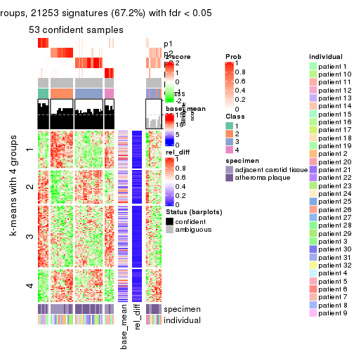
get_signatures(res, k = 6)
Signature heatmaps where rows are not scaled:
get_signatures(res, k = 2, scale_rows = FALSE)
get_signatures(res, k = 3, scale_rows = FALSE)
get_signatures(res, k = 4, scale_rows = FALSE)
get_signatures(res, k = 5, scale_rows = FALSE)
get_signatures(res, k = 6, scale_rows = FALSE)
Compare the overlap of signatures from different k:
compare_signatures(res)
get_signature() returns a data frame invisibly. TO get the list of signatures, the function
call should be assigned to a variable explicitly. In following code, if plot argument is set
to FALSE, no heatmap is plotted while only the differential analysis is performed.
# code only for demonstration
tb = get_signature(res, k = ..., plot = FALSE)
An example of the output of tb is:
#> which_row fdr mean_1 mean_2 scaled_mean_1 scaled_mean_2 km
#> 1 38 0.042760348 8.373488 9.131774 -0.5533452 0.5164555 1
#> 2 40 0.018707592 7.106213 8.469186 -0.6173731 0.5762149 1
#> 3 55 0.019134737 10.221463 11.207825 -0.6159697 0.5749050 1
#> 4 59 0.006059896 5.921854 7.869574 -0.6899429 0.6439467 1
#> 5 60 0.018055526 8.928898 10.211722 -0.6204761 0.5791110 1
#> 6 98 0.009384629 15.714769 14.887706 0.6635654 -0.6193277 2
...
The columns in tb are:
which_row: row indices corresponding to the input matrix.fdr: FDR for the differential test. mean_x: The mean value in group x.scaled_mean_x: The mean value in group x after rows are scaled.km: Row groups if k-means clustering is applied to rows.UMAP plot which shows how samples are separated.
dimension_reduction(res, k = 2, method = "UMAP")
dimension_reduction(res, k = 3, method = "UMAP")
dimension_reduction(res, k = 4, method = "UMAP")
dimension_reduction(res, k = 5, method = "UMAP")
dimension_reduction(res, k = 6, method = "UMAP")
Following heatmap shows how subgroups are split when increasing k:
collect_classes(res)
Test correlation between subgroups and known annotations. If the known annotation is numeric, one-way ANOVA test is applied, and if the known annotation is discrete, chi-squared contingency table test is applied.
test_to_known_factors(res)
#> n specimen(p) individual(p) k
#> CV:hclust 54 0.000044 0.5704 2
#> CV:hclust 53 0.000176 0.1151 3
#> CV:hclust 56 0.000662 0.0280 4
#> CV:hclust 53 0.000764 0.0570 5
#> CV:hclust 39 0.000780 0.0323 6
If matrix rows can be associated to genes, consider to use GO_Enrichment(res,
...) to perform function enrichment for the signature genes.
The object with results only for a single top-value method and a single partition method can be extracted as:
res = res_list["CV", "kmeans"]
# you can also extract it by
# res = res_list["CV:kmeans"]
A summary of res and all the functions that can be applied to it:
res
#> A 'ConsensusPartition' object with k = 2, 3, 4, 5, 6.
#> On a matrix with 31633 rows and 64 columns.
#> Top rows (1000, 2000, 3000, 4000, 5000) are extracted by 'CV' method.
#> Subgroups are detected by 'kmeans' method.
#> Performed in total 1250 partitions by row resampling.
#> Best k for subgroups seems to be 2.
#>
#> Following methods can be applied to this 'ConsensusPartition' object:
#> [1] "cola_report" "collect_classes" "collect_plots"
#> [4] "collect_stats" "colnames" "compare_signatures"
#> [7] "consensus_heatmap" "dimension_reduction" "functional_enrichment"
#> [10] "get_anno_col" "get_anno" "get_classes"
#> [13] "get_consensus" "get_matrix" "get_membership"
#> [16] "get_param" "get_signatures" "get_stats"
#> [19] "is_best_k" "is_stable_k" "membership_heatmap"
#> [22] "ncol" "nrow" "plot_ecdf"
#> [25] "rownames" "select_partition_number" "show"
#> [28] "suggest_best_k" "test_to_known_factors"
collect_plots() function collects all the plots made from res for all k (number of partitions)
into one single page to provide an easy and fast comparison between different k.
collect_plots(res)
The plots are:
k and the heatmap of
predicted classes for each k.k.k.k.All the plots in panels can be made by individual functions and they are plotted later in this section.
select_partition_number() produces several plots showing different
statistics for choosing “optimized” k. There are following statistics:
k;k, the area increased is defined as \(A_k - A_{k-1}\).The detailed explanations of these statistics can be found in the cola vignette.
Generally speaking, lower PAC score, higher mean silhouette score or higher
concordance corresponds to better partition. Rand index and Jaccard index
measure how similar the current partition is compared to partition with k-1.
If they are too similar, we won't accept k is better than k-1.
select_partition_number(res)
The numeric values for all these statistics can be obtained by get_stats().
get_stats(res)
#> k 1-PAC mean_silhouette concordance area_increased Rand Jaccard
#> 2 2 1.000 0.927 0.965 0.5057 0.493 0.493
#> 3 3 0.610 0.727 0.850 0.2951 0.771 0.568
#> 4 4 0.594 0.634 0.765 0.1282 0.835 0.567
#> 5 5 0.679 0.522 0.695 0.0754 0.918 0.710
#> 6 6 0.725 0.543 0.715 0.0498 0.880 0.532
suggest_best_k() suggests the best \(k\) based on these statistics. The rules are as follows:
NA.suggest_best_k(res)
#> [1] 2
Following shows the table of the partitions (You need to click the show/hide
code output link to see it). The membership matrix (columns with name p*)
is inferred by
clue::cl_consensus()
function with the SE method. Basically the value in the membership matrix
represents the probability to belong to a certain group. The finall class
label for an item is determined with the group with highest probability it
belongs to.
In get_classes() function, the entropy is calculated from the membership
matrix and the silhouette score is calculated from the consensus matrix.
cbind(get_classes(res, k = 2), get_membership(res, k = 2))
#> class entropy silhouette p1 p2
#> GSM1060118 1 0.0672 0.984 0.992 0.008
#> GSM1060120 2 0.0672 0.943 0.008 0.992
#> GSM1060122 2 0.0672 0.943 0.008 0.992
#> GSM1060124 2 0.9977 0.146 0.472 0.528
#> GSM1060126 2 0.0672 0.943 0.008 0.992
#> GSM1060128 1 0.0376 0.988 0.996 0.004
#> GSM1060130 1 0.0938 0.991 0.988 0.012
#> GSM1060132 1 0.0938 0.991 0.988 0.012
#> GSM1060134 1 0.3274 0.943 0.940 0.060
#> GSM1060136 1 0.0938 0.991 0.988 0.012
#> GSM1060138 1 0.0672 0.984 0.992 0.008
#> GSM1060140 1 0.0672 0.984 0.992 0.008
#> GSM1060142 1 0.0672 0.984 0.992 0.008
#> GSM1060144 1 0.0672 0.984 0.992 0.008
#> GSM1060146 1 0.0938 0.991 0.988 0.012
#> GSM1060148 1 0.0672 0.984 0.992 0.008
#> GSM1060150 1 0.0938 0.991 0.988 0.012
#> GSM1060152 1 0.0938 0.991 0.988 0.012
#> GSM1060154 1 0.0938 0.991 0.988 0.012
#> GSM1060156 1 0.0938 0.991 0.988 0.012
#> GSM1060158 2 0.0672 0.943 0.008 0.992
#> GSM1060160 1 0.0938 0.991 0.988 0.012
#> GSM1060162 2 0.0672 0.943 0.008 0.992
#> GSM1060164 1 0.0938 0.991 0.988 0.012
#> GSM1060166 1 0.0938 0.991 0.988 0.012
#> GSM1060168 2 0.0672 0.943 0.008 0.992
#> GSM1060170 1 0.0938 0.991 0.988 0.012
#> GSM1060172 1 0.0938 0.991 0.988 0.012
#> GSM1060174 2 0.0672 0.943 0.008 0.992
#> GSM1060176 2 0.0672 0.943 0.008 0.992
#> GSM1060178 1 0.0938 0.991 0.988 0.012
#> GSM1060180 1 0.0938 0.991 0.988 0.012
#> GSM1060117 1 0.0672 0.984 0.992 0.008
#> GSM1060119 2 0.0672 0.943 0.008 0.992
#> GSM1060121 2 0.0376 0.940 0.004 0.996
#> GSM1060123 2 0.0376 0.940 0.004 0.996
#> GSM1060125 2 0.9608 0.428 0.384 0.616
#> GSM1060127 2 0.0672 0.943 0.008 0.992
#> GSM1060129 2 0.0376 0.943 0.004 0.996
#> GSM1060131 2 0.0672 0.943 0.008 0.992
#> GSM1060133 2 0.0376 0.940 0.004 0.996
#> GSM1060135 2 0.0000 0.941 0.000 1.000
#> GSM1060137 2 0.0938 0.935 0.012 0.988
#> GSM1060139 1 0.0672 0.984 0.992 0.008
#> GSM1060141 1 0.0672 0.984 0.992 0.008
#> GSM1060143 2 0.0938 0.935 0.012 0.988
#> GSM1060145 2 0.9522 0.455 0.372 0.628
#> GSM1060147 2 0.9710 0.390 0.400 0.600
#> GSM1060149 1 0.0938 0.991 0.988 0.012
#> GSM1060151 1 0.0938 0.989 0.988 0.012
#> GSM1060153 2 0.0938 0.935 0.012 0.988
#> GSM1060155 2 0.0672 0.937 0.008 0.992
#> GSM1060157 1 0.0938 0.991 0.988 0.012
#> GSM1060159 1 0.0938 0.991 0.988 0.012
#> GSM1060161 2 0.0376 0.943 0.004 0.996
#> GSM1060163 2 0.0672 0.943 0.008 0.992
#> GSM1060165 2 0.0672 0.943 0.008 0.992
#> GSM1060167 2 0.0672 0.943 0.008 0.992
#> GSM1060169 2 0.0000 0.941 0.000 1.000
#> GSM1060171 2 0.1414 0.935 0.020 0.980
#> GSM1060173 2 0.0672 0.943 0.008 0.992
#> GSM1060175 2 0.0000 0.941 0.000 1.000
#> GSM1060177 1 0.1843 0.978 0.972 0.028
#> GSM1060179 2 0.0672 0.943 0.008 0.992
cbind(get_classes(res, k = 3), get_membership(res, k = 3))
#> class entropy silhouette p1 p2 p3
#> GSM1060118 1 0.6291 0.401 0.532 0.000 0.468
#> GSM1060120 2 0.0592 0.859 0.012 0.988 0.000
#> GSM1060122 2 0.4805 0.759 0.012 0.812 0.176
#> GSM1060124 3 0.6228 0.453 0.012 0.316 0.672
#> GSM1060126 2 0.4514 0.776 0.012 0.832 0.156
#> GSM1060128 3 0.2796 0.815 0.092 0.000 0.908
#> GSM1060130 3 0.2796 0.815 0.092 0.000 0.908
#> GSM1060132 3 0.0592 0.857 0.012 0.000 0.988
#> GSM1060134 3 0.5968 0.267 0.364 0.000 0.636
#> GSM1060136 3 0.2796 0.815 0.092 0.000 0.908
#> GSM1060138 1 0.4452 0.689 0.808 0.000 0.192
#> GSM1060140 1 0.5178 0.669 0.744 0.000 0.256
#> GSM1060142 1 0.6244 0.472 0.560 0.000 0.440
#> GSM1060144 1 0.5591 0.642 0.696 0.000 0.304
#> GSM1060146 3 0.0892 0.854 0.020 0.000 0.980
#> GSM1060148 1 0.5948 0.589 0.640 0.000 0.360
#> GSM1060150 3 0.0000 0.859 0.000 0.000 1.000
#> GSM1060152 3 0.2796 0.815 0.092 0.000 0.908
#> GSM1060154 3 0.2796 0.815 0.092 0.000 0.908
#> GSM1060156 3 0.2796 0.815 0.092 0.000 0.908
#> GSM1060158 2 0.4504 0.741 0.000 0.804 0.196
#> GSM1060160 3 0.0000 0.859 0.000 0.000 1.000
#> GSM1060162 2 0.0000 0.859 0.000 1.000 0.000
#> GSM1060164 3 0.0000 0.859 0.000 0.000 1.000
#> GSM1060166 3 0.0000 0.859 0.000 0.000 1.000
#> GSM1060168 2 0.3412 0.802 0.000 0.876 0.124
#> GSM1060170 3 0.0000 0.859 0.000 0.000 1.000
#> GSM1060172 3 0.0000 0.859 0.000 0.000 1.000
#> GSM1060174 2 0.0000 0.859 0.000 1.000 0.000
#> GSM1060176 2 0.3941 0.778 0.000 0.844 0.156
#> GSM1060178 3 0.0592 0.857 0.012 0.000 0.988
#> GSM1060180 3 0.0000 0.859 0.000 0.000 1.000
#> GSM1060117 1 0.6225 0.489 0.568 0.000 0.432
#> GSM1060119 2 0.0592 0.859 0.012 0.988 0.000
#> GSM1060121 2 0.5178 0.720 0.256 0.744 0.000
#> GSM1060123 2 0.5178 0.720 0.256 0.744 0.000
#> GSM1060125 1 0.0424 0.682 0.992 0.008 0.000
#> GSM1060127 2 0.0237 0.859 0.004 0.996 0.000
#> GSM1060129 2 0.0592 0.859 0.012 0.988 0.000
#> GSM1060131 2 0.0592 0.859 0.012 0.988 0.000
#> GSM1060133 2 0.5178 0.720 0.256 0.744 0.000
#> GSM1060135 2 0.4452 0.770 0.192 0.808 0.000
#> GSM1060137 1 0.4178 0.521 0.828 0.172 0.000
#> GSM1060139 1 0.6225 0.489 0.568 0.000 0.432
#> GSM1060141 1 0.4796 0.684 0.780 0.000 0.220
#> GSM1060143 1 0.2796 0.614 0.908 0.092 0.000
#> GSM1060145 1 0.0424 0.682 0.992 0.008 0.000
#> GSM1060147 1 0.0424 0.682 0.992 0.008 0.000
#> GSM1060149 3 0.0000 0.859 0.000 0.000 1.000
#> GSM1060151 3 0.5733 0.399 0.324 0.000 0.676
#> GSM1060153 1 0.4178 0.521 0.828 0.172 0.000
#> GSM1060155 2 0.6008 0.570 0.372 0.628 0.000
#> GSM1060157 3 0.0000 0.859 0.000 0.000 1.000
#> GSM1060159 3 0.4796 0.608 0.000 0.220 0.780
#> GSM1060161 2 0.0000 0.859 0.000 1.000 0.000
#> GSM1060163 2 0.0000 0.859 0.000 1.000 0.000
#> GSM1060165 2 0.0000 0.859 0.000 1.000 0.000
#> GSM1060167 2 0.2711 0.822 0.000 0.912 0.088
#> GSM1060169 2 0.4796 0.746 0.220 0.780 0.000
#> GSM1060171 2 0.6260 0.232 0.000 0.552 0.448
#> GSM1060173 2 0.0000 0.859 0.000 1.000 0.000
#> GSM1060175 2 0.4796 0.746 0.220 0.780 0.000
#> GSM1060177 3 0.5216 0.561 0.000 0.260 0.740
#> GSM1060179 2 0.0237 0.859 0.000 0.996 0.004
cbind(get_classes(res, k = 4), get_membership(res, k = 4))
#> class entropy silhouette p1 p2 p3 p4
#> GSM1060118 1 0.4543 0.498 0.676 0.000 0.324 0.000
#> GSM1060120 2 0.3687 0.706 0.064 0.856 0.000 0.080
#> GSM1060122 2 0.4608 0.701 0.064 0.824 0.088 0.024
#> GSM1060124 2 0.5983 0.585 0.064 0.696 0.224 0.016
#> GSM1060126 2 0.4608 0.701 0.064 0.824 0.088 0.024
#> GSM1060128 3 0.3945 0.725 0.216 0.004 0.780 0.000
#> GSM1060130 3 0.3402 0.787 0.164 0.004 0.832 0.000
#> GSM1060132 3 0.2546 0.829 0.092 0.008 0.900 0.000
#> GSM1060134 1 0.8542 0.168 0.432 0.240 0.292 0.036
#> GSM1060136 3 0.3306 0.795 0.156 0.004 0.840 0.000
#> GSM1060138 1 0.4734 0.582 0.776 0.004 0.040 0.180
#> GSM1060140 1 0.3383 0.624 0.872 0.000 0.052 0.076
#> GSM1060142 1 0.4193 0.589 0.732 0.000 0.268 0.000
#> GSM1060144 1 0.3219 0.659 0.836 0.000 0.164 0.000
#> GSM1060146 3 0.2999 0.807 0.132 0.004 0.864 0.000
#> GSM1060148 1 0.3569 0.645 0.804 0.000 0.196 0.000
#> GSM1060150 3 0.1302 0.838 0.000 0.044 0.956 0.000
#> GSM1060152 3 0.3402 0.787 0.164 0.004 0.832 0.000
#> GSM1060154 3 0.4462 0.786 0.132 0.064 0.804 0.000
#> GSM1060156 3 0.3402 0.787 0.164 0.004 0.832 0.000
#> GSM1060158 2 0.2345 0.708 0.000 0.900 0.100 0.000
#> GSM1060160 3 0.0817 0.844 0.000 0.024 0.976 0.000
#> GSM1060162 2 0.3975 0.628 0.000 0.760 0.000 0.240
#> GSM1060164 3 0.1637 0.828 0.000 0.060 0.940 0.000
#> GSM1060166 3 0.0921 0.843 0.000 0.028 0.972 0.000
#> GSM1060168 2 0.2081 0.716 0.000 0.916 0.084 0.000
#> GSM1060170 3 0.1637 0.828 0.000 0.060 0.940 0.000
#> GSM1060172 3 0.1302 0.838 0.000 0.044 0.956 0.000
#> GSM1060174 2 0.3975 0.628 0.000 0.760 0.000 0.240
#> GSM1060176 2 0.2081 0.716 0.000 0.916 0.084 0.000
#> GSM1060178 3 0.2081 0.826 0.084 0.000 0.916 0.000
#> GSM1060180 3 0.2921 0.752 0.000 0.140 0.860 0.000
#> GSM1060117 1 0.4164 0.594 0.736 0.000 0.264 0.000
#> GSM1060119 2 0.3687 0.706 0.064 0.856 0.000 0.080
#> GSM1060121 4 0.3356 0.681 0.000 0.176 0.000 0.824
#> GSM1060123 4 0.3528 0.677 0.000 0.192 0.000 0.808
#> GSM1060125 1 0.4720 0.436 0.672 0.004 0.000 0.324
#> GSM1060127 2 0.5986 0.525 0.060 0.620 0.000 0.320
#> GSM1060129 2 0.5785 0.580 0.064 0.664 0.000 0.272
#> GSM1060131 2 0.3547 0.707 0.064 0.864 0.000 0.072
#> GSM1060133 4 0.3528 0.677 0.000 0.192 0.000 0.808
#> GSM1060135 4 0.5550 0.525 0.060 0.248 0.000 0.692
#> GSM1060137 4 0.4164 0.422 0.264 0.000 0.000 0.736
#> GSM1060139 1 0.4164 0.594 0.736 0.000 0.264 0.000
#> GSM1060141 1 0.4466 0.592 0.800 0.004 0.040 0.156
#> GSM1060143 4 0.4837 0.248 0.348 0.004 0.000 0.648
#> GSM1060145 1 0.4761 0.428 0.664 0.004 0.000 0.332
#> GSM1060147 1 0.4741 0.433 0.668 0.004 0.000 0.328
#> GSM1060149 3 0.0921 0.843 0.000 0.028 0.972 0.000
#> GSM1060151 1 0.8468 0.105 0.388 0.232 0.352 0.028
#> GSM1060153 4 0.4164 0.422 0.264 0.000 0.000 0.736
#> GSM1060155 4 0.2342 0.605 0.080 0.008 0.000 0.912
#> GSM1060157 3 0.1004 0.845 0.004 0.024 0.972 0.000
#> GSM1060159 3 0.4679 0.442 0.000 0.352 0.648 0.000
#> GSM1060161 2 0.4817 0.359 0.000 0.612 0.000 0.388
#> GSM1060163 2 0.3975 0.628 0.000 0.760 0.000 0.240
#> GSM1060165 2 0.4134 0.603 0.000 0.740 0.000 0.260
#> GSM1060167 2 0.1940 0.718 0.000 0.924 0.076 0.000
#> GSM1060169 4 0.4040 0.624 0.000 0.248 0.000 0.752
#> GSM1060171 2 0.3311 0.654 0.000 0.828 0.172 0.000
#> GSM1060173 2 0.3975 0.628 0.000 0.760 0.000 0.240
#> GSM1060175 4 0.4164 0.615 0.000 0.264 0.000 0.736
#> GSM1060177 2 0.4925 0.197 0.000 0.572 0.428 0.000
#> GSM1060179 2 0.2376 0.720 0.000 0.916 0.016 0.068
cbind(get_classes(res, k = 5), get_membership(res, k = 5))
#> class entropy silhouette p1 p2 p3 p4 p5
#> GSM1060118 1 0.1469 0.7950 0.948 0.000 0.036 0.000 0.016
#> GSM1060120 2 0.4632 0.4453 0.024 0.684 0.000 0.008 0.284
#> GSM1060122 2 0.4827 0.4379 0.024 0.672 0.004 0.008 0.292
#> GSM1060124 2 0.5123 0.3790 0.024 0.600 0.008 0.004 0.364
#> GSM1060126 2 0.4709 0.4387 0.024 0.676 0.004 0.004 0.292
#> GSM1060128 3 0.5717 0.5716 0.324 0.000 0.572 0.000 0.104
#> GSM1060130 3 0.5659 0.6154 0.280 0.000 0.604 0.000 0.116
#> GSM1060132 3 0.5016 0.6868 0.176 0.000 0.704 0.000 0.120
#> GSM1060134 5 0.8496 -0.2546 0.124 0.360 0.104 0.044 0.368
#> GSM1060136 3 0.6231 0.5727 0.288 0.000 0.532 0.000 0.180
#> GSM1060138 1 0.4278 0.1599 0.548 0.000 0.000 0.452 0.000
#> GSM1060140 1 0.3003 0.6847 0.812 0.000 0.000 0.188 0.000
#> GSM1060142 1 0.1300 0.8028 0.956 0.000 0.028 0.000 0.016
#> GSM1060144 1 0.1597 0.8053 0.940 0.000 0.012 0.048 0.000
#> GSM1060146 3 0.5240 0.6715 0.204 0.000 0.676 0.000 0.120
#> GSM1060148 1 0.1549 0.8086 0.944 0.000 0.016 0.040 0.000
#> GSM1060150 3 0.0324 0.7723 0.000 0.004 0.992 0.000 0.004
#> GSM1060152 3 0.6176 0.5798 0.288 0.000 0.540 0.000 0.172
#> GSM1060154 3 0.7963 0.4841 0.248 0.128 0.440 0.000 0.184
#> GSM1060156 3 0.6176 0.5798 0.288 0.000 0.540 0.000 0.172
#> GSM1060158 2 0.1121 0.5513 0.000 0.956 0.044 0.000 0.000
#> GSM1060160 3 0.0324 0.7721 0.000 0.004 0.992 0.000 0.004
#> GSM1060162 2 0.4389 0.2767 0.004 0.624 0.000 0.004 0.368
#> GSM1060164 3 0.0324 0.7723 0.000 0.004 0.992 0.000 0.004
#> GSM1060166 3 0.0162 0.7721 0.000 0.004 0.996 0.000 0.000
#> GSM1060168 2 0.0963 0.5517 0.000 0.964 0.036 0.000 0.000
#> GSM1060170 3 0.0324 0.7721 0.000 0.004 0.992 0.000 0.004
#> GSM1060172 3 0.0324 0.7723 0.000 0.004 0.992 0.000 0.004
#> GSM1060174 2 0.4402 0.2718 0.004 0.620 0.000 0.004 0.372
#> GSM1060176 2 0.1364 0.5508 0.000 0.952 0.036 0.000 0.012
#> GSM1060178 3 0.0963 0.7638 0.036 0.000 0.964 0.000 0.000
#> GSM1060180 3 0.2570 0.7160 0.000 0.084 0.888 0.000 0.028
#> GSM1060117 1 0.0794 0.8104 0.972 0.000 0.028 0.000 0.000
#> GSM1060119 2 0.4632 0.4453 0.024 0.684 0.000 0.008 0.284
#> GSM1060121 5 0.4675 0.5340 0.000 0.020 0.000 0.380 0.600
#> GSM1060123 5 0.4874 0.5544 0.000 0.032 0.000 0.368 0.600
#> GSM1060125 4 0.3707 0.5492 0.284 0.000 0.000 0.716 0.000
#> GSM1060127 5 0.4026 0.2386 0.000 0.244 0.000 0.020 0.736
#> GSM1060129 5 0.5456 -0.1254 0.024 0.416 0.000 0.024 0.536
#> GSM1060131 2 0.4441 0.4568 0.024 0.716 0.000 0.008 0.252
#> GSM1060133 5 0.4874 0.5544 0.000 0.032 0.000 0.368 0.600
#> GSM1060135 5 0.4268 0.5274 0.000 0.084 0.000 0.144 0.772
#> GSM1060137 4 0.1830 0.6690 0.008 0.000 0.000 0.924 0.068
#> GSM1060139 1 0.0955 0.8095 0.968 0.000 0.028 0.000 0.004
#> GSM1060141 1 0.4045 0.4099 0.644 0.000 0.000 0.356 0.000
#> GSM1060143 4 0.0963 0.7057 0.036 0.000 0.000 0.964 0.000
#> GSM1060145 4 0.3707 0.5492 0.284 0.000 0.000 0.716 0.000
#> GSM1060147 4 0.3707 0.5492 0.284 0.000 0.000 0.716 0.000
#> GSM1060149 3 0.0162 0.7721 0.000 0.004 0.996 0.000 0.000
#> GSM1060151 2 0.9068 0.0854 0.236 0.328 0.112 0.052 0.272
#> GSM1060153 4 0.1830 0.6690 0.008 0.000 0.000 0.924 0.068
#> GSM1060155 4 0.3305 0.4270 0.000 0.000 0.000 0.776 0.224
#> GSM1060157 3 0.0324 0.7721 0.000 0.004 0.992 0.000 0.004
#> GSM1060159 3 0.4565 0.3824 0.000 0.308 0.664 0.000 0.028
#> GSM1060161 2 0.4889 0.0165 0.004 0.504 0.000 0.016 0.476
#> GSM1060163 2 0.4402 0.2718 0.004 0.620 0.000 0.004 0.372
#> GSM1060165 2 0.4551 0.1457 0.004 0.556 0.000 0.004 0.436
#> GSM1060167 2 0.1202 0.5504 0.004 0.960 0.032 0.000 0.004
#> GSM1060169 5 0.5810 0.5834 0.000 0.124 0.000 0.296 0.580
#> GSM1060171 2 0.2629 0.5124 0.000 0.860 0.136 0.000 0.004
#> GSM1060173 2 0.4389 0.2767 0.004 0.624 0.000 0.004 0.368
#> GSM1060175 5 0.5810 0.5834 0.000 0.124 0.000 0.296 0.580
#> GSM1060177 2 0.5119 0.0695 0.004 0.504 0.464 0.000 0.028
#> GSM1060179 2 0.2976 0.4934 0.004 0.852 0.012 0.000 0.132
cbind(get_classes(res, k = 6), get_membership(res, k = 6))
#> class entropy silhouette p1 p2 p3 p4 p5 p6
#> GSM1060118 1 0.0405 0.8382 0.988 0.000 0.008 0.004 0.000 0.000
#> GSM1060120 5 0.5640 0.3670 0.000 0.348 0.000 0.024 0.536 0.092
#> GSM1060122 5 0.3789 0.4576 0.000 0.332 0.000 0.000 0.660 0.008
#> GSM1060124 5 0.3528 0.4787 0.000 0.296 0.000 0.004 0.700 0.000
#> GSM1060126 5 0.3804 0.4562 0.000 0.336 0.000 0.000 0.656 0.008
#> GSM1060128 3 0.7163 0.2721 0.304 0.004 0.432 0.052 0.192 0.016
#> GSM1060130 3 0.7186 0.2428 0.272 0.004 0.424 0.052 0.236 0.012
#> GSM1060132 3 0.6848 0.3495 0.184 0.004 0.508 0.052 0.240 0.012
#> GSM1060134 5 0.4088 0.4831 0.020 0.104 0.000 0.096 0.780 0.000
#> GSM1060136 5 0.7280 -0.0406 0.268 0.004 0.256 0.056 0.404 0.012
#> GSM1060138 4 0.4504 0.2816 0.368 0.000 0.000 0.592 0.040 0.000
#> GSM1060140 1 0.4067 0.5632 0.700 0.000 0.000 0.260 0.040 0.000
#> GSM1060142 1 0.0260 0.8410 0.992 0.000 0.008 0.000 0.000 0.000
#> GSM1060144 1 0.1204 0.8454 0.944 0.000 0.000 0.056 0.000 0.000
#> GSM1060146 3 0.6870 0.3450 0.188 0.004 0.504 0.052 0.240 0.012
#> GSM1060148 1 0.1204 0.8454 0.944 0.000 0.000 0.056 0.000 0.000
#> GSM1060150 3 0.0000 0.7526 0.000 0.000 1.000 0.000 0.000 0.000
#> GSM1060152 5 0.7368 -0.1081 0.288 0.004 0.284 0.056 0.356 0.012
#> GSM1060154 5 0.6532 0.3182 0.176 0.052 0.080 0.056 0.624 0.012
#> GSM1060156 5 0.7368 -0.1081 0.288 0.004 0.284 0.056 0.356 0.012
#> GSM1060158 2 0.1367 0.5847 0.000 0.944 0.012 0.000 0.044 0.000
#> GSM1060160 3 0.0748 0.7501 0.000 0.000 0.976 0.004 0.016 0.004
#> GSM1060162 2 0.4595 0.5740 0.008 0.588 0.000 0.008 0.016 0.380
#> GSM1060164 3 0.0260 0.7518 0.000 0.000 0.992 0.000 0.008 0.000
#> GSM1060166 3 0.0146 0.7523 0.000 0.000 0.996 0.000 0.000 0.004
#> GSM1060168 2 0.0717 0.6004 0.000 0.976 0.008 0.000 0.016 0.000
#> GSM1060170 3 0.0858 0.7444 0.000 0.000 0.968 0.004 0.028 0.000
#> GSM1060172 3 0.0000 0.7526 0.000 0.000 1.000 0.000 0.000 0.000
#> GSM1060174 2 0.4595 0.5740 0.008 0.588 0.000 0.008 0.016 0.380
#> GSM1060176 2 0.2009 0.5508 0.000 0.904 0.008 0.000 0.084 0.004
#> GSM1060178 3 0.1241 0.7407 0.004 0.004 0.960 0.008 0.020 0.004
#> GSM1060180 3 0.5026 0.4564 0.000 0.204 0.652 0.004 0.140 0.000
#> GSM1060117 1 0.0891 0.8512 0.968 0.000 0.008 0.024 0.000 0.000
#> GSM1060119 5 0.5640 0.3670 0.000 0.348 0.000 0.024 0.536 0.092
#> GSM1060121 6 0.1411 0.7745 0.000 0.000 0.000 0.060 0.004 0.936
#> GSM1060123 6 0.1204 0.7771 0.000 0.000 0.000 0.056 0.000 0.944
#> GSM1060125 4 0.3224 0.7358 0.132 0.000 0.000 0.824 0.040 0.004
#> GSM1060127 6 0.4916 0.5059 0.000 0.056 0.000 0.028 0.252 0.664
#> GSM1060129 5 0.6005 0.1192 0.000 0.144 0.000 0.024 0.512 0.320
#> GSM1060131 5 0.5351 0.3749 0.000 0.376 0.000 0.024 0.540 0.060
#> GSM1060133 6 0.1204 0.7771 0.000 0.000 0.000 0.056 0.000 0.944
#> GSM1060135 6 0.4296 0.5834 0.000 0.012 0.000 0.036 0.252 0.700
#> GSM1060137 4 0.3189 0.6397 0.000 0.000 0.000 0.760 0.004 0.236
#> GSM1060139 1 0.0717 0.8499 0.976 0.000 0.008 0.016 0.000 0.000
#> GSM1060141 1 0.4524 0.3042 0.584 0.000 0.000 0.376 0.040 0.000
#> GSM1060143 4 0.2257 0.7341 0.008 0.000 0.000 0.876 0.000 0.116
#> GSM1060145 4 0.2673 0.7496 0.132 0.000 0.000 0.852 0.012 0.004
#> GSM1060147 4 0.2320 0.7515 0.132 0.000 0.000 0.864 0.000 0.004
#> GSM1060149 3 0.0146 0.7523 0.000 0.000 0.996 0.000 0.000 0.004
#> GSM1060151 5 0.6111 0.3958 0.080 0.100 0.004 0.168 0.636 0.012
#> GSM1060153 4 0.3189 0.6397 0.000 0.000 0.000 0.760 0.004 0.236
#> GSM1060155 6 0.3995 -0.1330 0.000 0.000 0.000 0.480 0.004 0.516
#> GSM1060157 3 0.0748 0.7501 0.000 0.000 0.976 0.004 0.016 0.004
#> GSM1060159 3 0.5298 0.4149 0.000 0.232 0.620 0.008 0.140 0.000
#> GSM1060161 2 0.4625 0.4752 0.008 0.524 0.000 0.012 0.008 0.448
#> GSM1060163 2 0.4595 0.5740 0.008 0.588 0.000 0.008 0.016 0.380
#> GSM1060165 2 0.4673 0.5173 0.008 0.548 0.000 0.008 0.016 0.420
#> GSM1060167 2 0.0912 0.6046 0.000 0.972 0.008 0.004 0.012 0.004
#> GSM1060169 6 0.0891 0.7580 0.000 0.024 0.000 0.008 0.000 0.968
#> GSM1060171 2 0.1682 0.5837 0.000 0.928 0.052 0.000 0.020 0.000
#> GSM1060173 2 0.4595 0.5740 0.008 0.588 0.000 0.008 0.016 0.380
#> GSM1060175 6 0.0972 0.7550 0.000 0.028 0.000 0.008 0.000 0.964
#> GSM1060177 2 0.5649 0.2193 0.000 0.536 0.316 0.008 0.140 0.000
#> GSM1060179 2 0.2482 0.6443 0.004 0.848 0.000 0.000 0.000 0.148
Heatmaps for the consensus matrix. It visualizes the probability of two samples to be in a same group.
consensus_heatmap(res, k = 2)
consensus_heatmap(res, k = 3)
consensus_heatmap(res, k = 4)
consensus_heatmap(res, k = 5)
consensus_heatmap(res, k = 6)
Heatmaps for the membership of samples in all partitions to see how consistent they are:
membership_heatmap(res, k = 2)
membership_heatmap(res, k = 3)

membership_heatmap(res, k = 4)
membership_heatmap(res, k = 5)
membership_heatmap(res, k = 6)
As soon as we have had the classes for columns, we can look for signatures which are significantly different between classes which can be candidate marks for certain classes. Following are the heatmaps for signatures.
Signature heatmaps where rows are scaled:
get_signatures(res, k = 2)
get_signatures(res, k = 3)
get_signatures(res, k = 4)
get_signatures(res, k = 5)
get_signatures(res, k = 6)
Signature heatmaps where rows are not scaled:
get_signatures(res, k = 2, scale_rows = FALSE)
get_signatures(res, k = 3, scale_rows = FALSE)
get_signatures(res, k = 4, scale_rows = FALSE)
get_signatures(res, k = 5, scale_rows = FALSE)
get_signatures(res, k = 6, scale_rows = FALSE)
Compare the overlap of signatures from different k:
compare_signatures(res)

get_signature() returns a data frame invisibly. TO get the list of signatures, the function
call should be assigned to a variable explicitly. In following code, if plot argument is set
to FALSE, no heatmap is plotted while only the differential analysis is performed.
# code only for demonstration
tb = get_signature(res, k = ..., plot = FALSE)
An example of the output of tb is:
#> which_row fdr mean_1 mean_2 scaled_mean_1 scaled_mean_2 km
#> 1 38 0.042760348 8.373488 9.131774 -0.5533452 0.5164555 1
#> 2 40 0.018707592 7.106213 8.469186 -0.6173731 0.5762149 1
#> 3 55 0.019134737 10.221463 11.207825 -0.6159697 0.5749050 1
#> 4 59 0.006059896 5.921854 7.869574 -0.6899429 0.6439467 1
#> 5 60 0.018055526 8.928898 10.211722 -0.6204761 0.5791110 1
#> 6 98 0.009384629 15.714769 14.887706 0.6635654 -0.6193277 2
...
The columns in tb are:
which_row: row indices corresponding to the input matrix.fdr: FDR for the differential test. mean_x: The mean value in group x.scaled_mean_x: The mean value in group x after rows are scaled.km: Row groups if k-means clustering is applied to rows.UMAP plot which shows how samples are separated.
dimension_reduction(res, k = 2, method = "UMAP")

dimension_reduction(res, k = 3, method = "UMAP")
dimension_reduction(res, k = 4, method = "UMAP")
dimension_reduction(res, k = 5, method = "UMAP")
dimension_reduction(res, k = 6, method = "UMAP")
Following heatmap shows how subgroups are split when increasing k:
collect_classes(res)
Test correlation between subgroups and known annotations. If the known annotation is numeric, one-way ANOVA test is applied, and if the known annotation is discrete, chi-squared contingency table test is applied.
test_to_known_factors(res)
#> n specimen(p) individual(p) k
#> CV:kmeans 60 0.000803 0.5190 2
#> CV:kmeans 56 0.003592 0.0888 3
#> CV:kmeans 52 0.000525 0.2292 4
#> CV:kmeans 41 0.000118 0.3006 5
#> CV:kmeans 40 0.002282 0.1132 6
If matrix rows can be associated to genes, consider to use GO_Enrichment(res,
...) to perform function enrichment for the signature genes.
The object with results only for a single top-value method and a single partition method can be extracted as:
res = res_list["CV", "skmeans"]
# you can also extract it by
# res = res_list["CV:skmeans"]
A summary of res and all the functions that can be applied to it:
res
#> A 'ConsensusPartition' object with k = 2, 3, 4, 5, 6.
#> On a matrix with 31633 rows and 64 columns.
#> Top rows (1000, 2000, 3000, 4000, 5000) are extracted by 'CV' method.
#> Subgroups are detected by 'skmeans' method.
#> Performed in total 1250 partitions by row resampling.
#> Best k for subgroups seems to be 3.
#>
#> Following methods can be applied to this 'ConsensusPartition' object:
#> [1] "cola_report" "collect_classes" "collect_plots"
#> [4] "collect_stats" "colnames" "compare_signatures"
#> [7] "consensus_heatmap" "dimension_reduction" "functional_enrichment"
#> [10] "get_anno_col" "get_anno" "get_classes"
#> [13] "get_consensus" "get_matrix" "get_membership"
#> [16] "get_param" "get_signatures" "get_stats"
#> [19] "is_best_k" "is_stable_k" "membership_heatmap"
#> [22] "ncol" "nrow" "plot_ecdf"
#> [25] "rownames" "select_partition_number" "show"
#> [28] "suggest_best_k" "test_to_known_factors"
collect_plots() function collects all the plots made from res for all k (number of partitions)
into one single page to provide an easy and fast comparison between different k.
collect_plots(res)

The plots are:
k and the heatmap of
predicted classes for each k.k.k.k.All the plots in panels can be made by individual functions and they are plotted later in this section.
select_partition_number() produces several plots showing different
statistics for choosing “optimized” k. There are following statistics:
k;k, the area increased is defined as \(A_k - A_{k-1}\).The detailed explanations of these statistics can be found in the cola vignette.
Generally speaking, lower PAC score, higher mean silhouette score or higher
concordance corresponds to better partition. Rand index and Jaccard index
measure how similar the current partition is compared to partition with k-1.
If they are too similar, we won't accept k is better than k-1.
select_partition_number(res)
The numeric values for all these statistics can be obtained by get_stats().
get_stats(res)
#> k 1-PAC mean_silhouette concordance area_increased Rand Jaccard
#> 2 2 1.000 0.937 0.975 0.5076 0.493 0.493
#> 3 3 0.912 0.941 0.971 0.3099 0.733 0.510
#> 4 4 0.700 0.520 0.692 0.1219 0.896 0.700
#> 5 5 0.735 0.651 0.830 0.0757 0.802 0.400
#> 6 6 0.745 0.665 0.765 0.0389 0.932 0.688
suggest_best_k() suggests the best \(k\) based on these statistics. The rules are as follows:
NA.suggest_best_k(res)
#> [1] 3
#> attr(,"optional")
#> [1] 2
There is also optional best \(k\) = 2 that is worth to check.
Following shows the table of the partitions (You need to click the show/hide
code output link to see it). The membership matrix (columns with name p*)
is inferred by
clue::cl_consensus()
function with the SE method. Basically the value in the membership matrix
represents the probability to belong to a certain group. The finall class
label for an item is determined with the group with highest probability it
belongs to.
In get_classes() function, the entropy is calculated from the membership
matrix and the silhouette score is calculated from the consensus matrix.
cbind(get_classes(res, k = 2), get_membership(res, k = 2))
#> class entropy silhouette p1 p2
#> GSM1060118 1 0.000 0.998 1.000 0.000
#> GSM1060120 2 0.000 0.949 0.000 1.000
#> GSM1060122 2 0.000 0.949 0.000 1.000
#> GSM1060124 2 0.943 0.448 0.360 0.640
#> GSM1060126 2 0.000 0.949 0.000 1.000
#> GSM1060128 1 0.000 0.998 1.000 0.000
#> GSM1060130 1 0.000 0.998 1.000 0.000
#> GSM1060132 1 0.000 0.998 1.000 0.000
#> GSM1060134 1 0.000 0.998 1.000 0.000
#> GSM1060136 1 0.000 0.998 1.000 0.000
#> GSM1060138 1 0.000 0.998 1.000 0.000
#> GSM1060140 1 0.000 0.998 1.000 0.000
#> GSM1060142 1 0.000 0.998 1.000 0.000
#> GSM1060144 1 0.000 0.998 1.000 0.000
#> GSM1060146 1 0.000 0.998 1.000 0.000
#> GSM1060148 1 0.000 0.998 1.000 0.000
#> GSM1060150 1 0.000 0.998 1.000 0.000
#> GSM1060152 1 0.000 0.998 1.000 0.000
#> GSM1060154 1 0.000 0.998 1.000 0.000
#> GSM1060156 1 0.000 0.998 1.000 0.000
#> GSM1060158 2 0.000 0.949 0.000 1.000
#> GSM1060160 1 0.000 0.998 1.000 0.000
#> GSM1060162 2 0.000 0.949 0.000 1.000
#> GSM1060164 1 0.000 0.998 1.000 0.000
#> GSM1060166 1 0.000 0.998 1.000 0.000
#> GSM1060168 2 0.000 0.949 0.000 1.000
#> GSM1060170 1 0.000 0.998 1.000 0.000
#> GSM1060172 1 0.000 0.998 1.000 0.000
#> GSM1060174 2 0.000 0.949 0.000 1.000
#> GSM1060176 2 0.000 0.949 0.000 1.000
#> GSM1060178 1 0.000 0.998 1.000 0.000
#> GSM1060180 1 0.000 0.998 1.000 0.000
#> GSM1060117 1 0.000 0.998 1.000 0.000
#> GSM1060119 2 0.000 0.949 0.000 1.000
#> GSM1060121 2 0.000 0.949 0.000 1.000
#> GSM1060123 2 0.000 0.949 0.000 1.000
#> GSM1060125 2 0.975 0.360 0.408 0.592
#> GSM1060127 2 0.000 0.949 0.000 1.000
#> GSM1060129 2 0.000 0.949 0.000 1.000
#> GSM1060131 2 0.000 0.949 0.000 1.000
#> GSM1060133 2 0.000 0.949 0.000 1.000
#> GSM1060135 2 0.000 0.949 0.000 1.000
#> GSM1060137 2 0.000 0.949 0.000 1.000
#> GSM1060139 1 0.000 0.998 1.000 0.000
#> GSM1060141 1 0.000 0.998 1.000 0.000
#> GSM1060143 2 0.000 0.949 0.000 1.000
#> GSM1060145 2 0.971 0.380 0.400 0.600
#> GSM1060147 2 0.980 0.340 0.416 0.584
#> GSM1060149 1 0.000 0.998 1.000 0.000
#> GSM1060151 1 0.000 0.998 1.000 0.000
#> GSM1060153 2 0.000 0.949 0.000 1.000
#> GSM1060155 2 0.000 0.949 0.000 1.000
#> GSM1060157 1 0.000 0.998 1.000 0.000
#> GSM1060159 1 0.141 0.979 0.980 0.020
#> GSM1060161 2 0.000 0.949 0.000 1.000
#> GSM1060163 2 0.000 0.949 0.000 1.000
#> GSM1060165 2 0.000 0.949 0.000 1.000
#> GSM1060167 2 0.000 0.949 0.000 1.000
#> GSM1060169 2 0.000 0.949 0.000 1.000
#> GSM1060171 2 0.000 0.949 0.000 1.000
#> GSM1060173 2 0.000 0.949 0.000 1.000
#> GSM1060175 2 0.000 0.949 0.000 1.000
#> GSM1060177 1 0.163 0.974 0.976 0.024
#> GSM1060179 2 0.000 0.949 0.000 1.000
cbind(get_classes(res, k = 3), get_membership(res, k = 3))
#> class entropy silhouette p1 p2 p3
#> GSM1060118 1 0.4504 0.827 0.804 0.000 0.196
#> GSM1060120 2 0.0000 0.993 0.000 1.000 0.000
#> GSM1060122 2 0.0000 0.993 0.000 1.000 0.000
#> GSM1060124 3 0.4235 0.758 0.000 0.176 0.824
#> GSM1060126 2 0.0000 0.993 0.000 1.000 0.000
#> GSM1060128 3 0.0237 0.961 0.004 0.000 0.996
#> GSM1060130 3 0.0237 0.961 0.004 0.000 0.996
#> GSM1060132 3 0.0000 0.962 0.000 0.000 1.000
#> GSM1060134 1 0.0000 0.932 1.000 0.000 0.000
#> GSM1060136 3 0.0237 0.961 0.004 0.000 0.996
#> GSM1060138 1 0.0000 0.932 1.000 0.000 0.000
#> GSM1060140 1 0.0000 0.932 1.000 0.000 0.000
#> GSM1060142 1 0.4121 0.858 0.832 0.000 0.168
#> GSM1060144 1 0.3879 0.868 0.848 0.000 0.152
#> GSM1060146 3 0.0000 0.962 0.000 0.000 1.000
#> GSM1060148 1 0.4121 0.858 0.832 0.000 0.168
#> GSM1060150 3 0.0000 0.962 0.000 0.000 1.000
#> GSM1060152 3 0.0237 0.961 0.004 0.000 0.996
#> GSM1060154 3 0.0237 0.961 0.004 0.000 0.996
#> GSM1060156 3 0.0237 0.961 0.004 0.000 0.996
#> GSM1060158 2 0.0237 0.989 0.000 0.996 0.004
#> GSM1060160 3 0.0000 0.962 0.000 0.000 1.000
#> GSM1060162 2 0.0000 0.993 0.000 1.000 0.000
#> GSM1060164 3 0.0000 0.962 0.000 0.000 1.000
#> GSM1060166 3 0.0000 0.962 0.000 0.000 1.000
#> GSM1060168 2 0.0237 0.989 0.000 0.996 0.004
#> GSM1060170 3 0.0000 0.962 0.000 0.000 1.000
#> GSM1060172 3 0.0000 0.962 0.000 0.000 1.000
#> GSM1060174 2 0.0000 0.993 0.000 1.000 0.000
#> GSM1060176 2 0.0000 0.993 0.000 1.000 0.000
#> GSM1060178 3 0.0000 0.962 0.000 0.000 1.000
#> GSM1060180 3 0.0000 0.962 0.000 0.000 1.000
#> GSM1060117 1 0.4121 0.858 0.832 0.000 0.168
#> GSM1060119 2 0.0000 0.993 0.000 1.000 0.000
#> GSM1060121 2 0.0000 0.993 0.000 1.000 0.000
#> GSM1060123 2 0.0000 0.993 0.000 1.000 0.000
#> GSM1060125 1 0.0000 0.932 1.000 0.000 0.000
#> GSM1060127 2 0.0000 0.993 0.000 1.000 0.000
#> GSM1060129 2 0.0000 0.993 0.000 1.000 0.000
#> GSM1060131 2 0.0000 0.993 0.000 1.000 0.000
#> GSM1060133 2 0.0000 0.993 0.000 1.000 0.000
#> GSM1060135 2 0.0000 0.993 0.000 1.000 0.000
#> GSM1060137 1 0.0237 0.931 0.996 0.004 0.000
#> GSM1060139 1 0.4121 0.858 0.832 0.000 0.168
#> GSM1060141 1 0.0000 0.932 1.000 0.000 0.000
#> GSM1060143 1 0.0237 0.931 0.996 0.004 0.000
#> GSM1060145 1 0.0000 0.932 1.000 0.000 0.000
#> GSM1060147 1 0.0000 0.932 1.000 0.000 0.000
#> GSM1060149 3 0.0000 0.962 0.000 0.000 1.000
#> GSM1060151 1 0.0000 0.932 1.000 0.000 0.000
#> GSM1060153 1 0.0237 0.931 0.996 0.004 0.000
#> GSM1060155 2 0.4121 0.808 0.168 0.832 0.000
#> GSM1060157 3 0.0000 0.962 0.000 0.000 1.000
#> GSM1060159 3 0.0000 0.962 0.000 0.000 1.000
#> GSM1060161 2 0.0000 0.993 0.000 1.000 0.000
#> GSM1060163 2 0.0000 0.993 0.000 1.000 0.000
#> GSM1060165 2 0.0000 0.993 0.000 1.000 0.000
#> GSM1060167 2 0.0000 0.993 0.000 1.000 0.000
#> GSM1060169 2 0.0000 0.993 0.000 1.000 0.000
#> GSM1060171 3 0.6252 0.217 0.000 0.444 0.556
#> GSM1060173 2 0.0000 0.993 0.000 1.000 0.000
#> GSM1060175 2 0.0000 0.993 0.000 1.000 0.000
#> GSM1060177 3 0.0000 0.962 0.000 0.000 1.000
#> GSM1060179 2 0.0000 0.993 0.000 1.000 0.000
cbind(get_classes(res, k = 4), get_membership(res, k = 4))
#> class entropy silhouette p1 p2 p3 p4
#> GSM1060118 1 0.6552 0.4956 0.484 0.000 0.076 0.440
#> GSM1060120 2 0.1302 0.6260 0.000 0.956 0.000 0.044
#> GSM1060122 2 0.1022 0.6278 0.000 0.968 0.000 0.032
#> GSM1060124 2 0.4088 0.5039 0.000 0.820 0.140 0.040
#> GSM1060126 2 0.1022 0.6278 0.000 0.968 0.000 0.032
#> GSM1060128 3 0.6498 0.5015 0.072 0.000 0.488 0.440
#> GSM1060130 3 0.6552 0.4977 0.076 0.000 0.484 0.440
#> GSM1060132 3 0.5452 0.5869 0.024 0.000 0.616 0.360
#> GSM1060134 1 0.4746 0.6161 0.632 0.000 0.000 0.368
#> GSM1060136 3 0.6655 0.4863 0.084 0.000 0.476 0.440
#> GSM1060138 1 0.0000 0.6529 1.000 0.000 0.000 0.000
#> GSM1060140 1 0.0817 0.6586 0.976 0.000 0.000 0.024
#> GSM1060142 1 0.5833 0.5632 0.528 0.000 0.032 0.440
#> GSM1060144 1 0.5663 0.5714 0.536 0.000 0.024 0.440
#> GSM1060146 3 0.5827 0.5361 0.032 0.000 0.532 0.436
#> GSM1060148 1 0.5663 0.5714 0.536 0.000 0.024 0.440
#> GSM1060150 3 0.0000 0.7590 0.000 0.000 1.000 0.000
#> GSM1060152 3 0.6605 0.4923 0.080 0.000 0.480 0.440
#> GSM1060154 3 0.6655 0.4863 0.084 0.000 0.476 0.440
#> GSM1060156 3 0.6552 0.4977 0.076 0.000 0.484 0.440
#> GSM1060158 2 0.3710 0.4593 0.000 0.804 0.192 0.004
#> GSM1060160 3 0.0000 0.7590 0.000 0.000 1.000 0.000
#> GSM1060162 2 0.2921 0.5119 0.000 0.860 0.000 0.140
#> GSM1060164 3 0.0000 0.7590 0.000 0.000 1.000 0.000
#> GSM1060166 3 0.0000 0.7590 0.000 0.000 1.000 0.000
#> GSM1060168 2 0.0188 0.6250 0.000 0.996 0.004 0.000
#> GSM1060170 3 0.0000 0.7590 0.000 0.000 1.000 0.000
#> GSM1060172 3 0.0000 0.7590 0.000 0.000 1.000 0.000
#> GSM1060174 2 0.4730 -0.2075 0.000 0.636 0.000 0.364
#> GSM1060176 2 0.0336 0.6240 0.000 0.992 0.000 0.008
#> GSM1060178 3 0.1302 0.7468 0.000 0.000 0.956 0.044
#> GSM1060180 3 0.0000 0.7590 0.000 0.000 1.000 0.000
#> GSM1060117 1 0.5750 0.5679 0.532 0.000 0.028 0.440
#> GSM1060119 2 0.1211 0.6271 0.000 0.960 0.000 0.040
#> GSM1060121 4 0.5452 0.7648 0.016 0.428 0.000 0.556
#> GSM1060123 4 0.4955 0.7753 0.000 0.444 0.000 0.556
#> GSM1060125 1 0.1940 0.6153 0.924 0.000 0.000 0.076
#> GSM1060127 2 0.4431 0.1899 0.000 0.696 0.000 0.304
#> GSM1060129 2 0.4907 -0.3391 0.000 0.580 0.000 0.420
#> GSM1060131 2 0.1022 0.6278 0.000 0.968 0.000 0.032
#> GSM1060133 4 0.4955 0.7753 0.000 0.444 0.000 0.556
#> GSM1060135 4 0.4955 0.7647 0.000 0.444 0.000 0.556
#> GSM1060137 1 0.4933 0.0782 0.568 0.000 0.000 0.432
#> GSM1060139 1 0.5750 0.5679 0.532 0.000 0.028 0.440
#> GSM1060141 1 0.0188 0.6543 0.996 0.000 0.000 0.004
#> GSM1060143 1 0.3873 0.4671 0.772 0.000 0.000 0.228
#> GSM1060145 1 0.1940 0.6153 0.924 0.000 0.000 0.076
#> GSM1060147 1 0.1940 0.6153 0.924 0.000 0.000 0.076
#> GSM1060149 3 0.0000 0.7590 0.000 0.000 1.000 0.000
#> GSM1060151 1 0.4697 0.6172 0.644 0.000 0.000 0.356
#> GSM1060153 1 0.4933 0.0782 0.568 0.000 0.000 0.432
#> GSM1060155 4 0.4981 0.0651 0.464 0.000 0.000 0.536
#> GSM1060157 3 0.0000 0.7590 0.000 0.000 1.000 0.000
#> GSM1060159 3 0.0469 0.7517 0.000 0.012 0.988 0.000
#> GSM1060161 4 0.4989 0.7598 0.000 0.472 0.000 0.528
#> GSM1060163 2 0.4543 -0.0175 0.000 0.676 0.000 0.324
#> GSM1060165 2 0.4877 -0.3987 0.000 0.592 0.000 0.408
#> GSM1060167 2 0.0000 0.6254 0.000 1.000 0.000 0.000
#> GSM1060169 4 0.4981 0.7710 0.000 0.464 0.000 0.536
#> GSM1060171 2 0.4961 0.1375 0.000 0.552 0.448 0.000
#> GSM1060173 2 0.2921 0.5119 0.000 0.860 0.000 0.140
#> GSM1060175 4 0.4985 0.7669 0.000 0.468 0.000 0.532
#> GSM1060177 3 0.1211 0.7281 0.000 0.040 0.960 0.000
#> GSM1060179 2 0.4998 -0.6927 0.000 0.512 0.000 0.488
cbind(get_classes(res, k = 5), get_membership(res, k = 5))
#> class entropy silhouette p1 p2 p3 p4 p5
#> GSM1060118 1 0.0510 0.7648 0.984 0.000 0.000 0.016 0.000
#> GSM1060120 5 0.1357 0.7715 0.000 0.048 0.000 0.004 0.948
#> GSM1060122 5 0.0162 0.7908 0.000 0.004 0.000 0.000 0.996
#> GSM1060124 5 0.0290 0.7834 0.008 0.000 0.000 0.000 0.992
#> GSM1060126 5 0.0162 0.7908 0.000 0.004 0.000 0.000 0.996
#> GSM1060128 1 0.3550 0.7435 0.760 0.000 0.236 0.000 0.004
#> GSM1060130 1 0.3741 0.7134 0.732 0.000 0.264 0.000 0.004
#> GSM1060132 3 0.4449 -0.2316 0.484 0.000 0.512 0.000 0.004
#> GSM1060134 1 0.5864 0.3248 0.600 0.000 0.000 0.164 0.236
#> GSM1060136 1 0.3455 0.7609 0.784 0.000 0.208 0.000 0.008
#> GSM1060138 4 0.3612 0.7402 0.268 0.000 0.000 0.732 0.000
#> GSM1060140 4 0.4150 0.5809 0.388 0.000 0.000 0.612 0.000
#> GSM1060142 1 0.0703 0.7633 0.976 0.000 0.000 0.024 0.000
#> GSM1060144 1 0.1121 0.7514 0.956 0.000 0.000 0.044 0.000
#> GSM1060146 1 0.4101 0.6093 0.664 0.000 0.332 0.000 0.004
#> GSM1060148 1 0.0880 0.7604 0.968 0.000 0.000 0.032 0.000
#> GSM1060150 3 0.0000 0.9133 0.000 0.000 1.000 0.000 0.000
#> GSM1060152 1 0.3461 0.7523 0.772 0.000 0.224 0.000 0.004
#> GSM1060154 1 0.3954 0.7623 0.772 0.000 0.192 0.000 0.036
#> GSM1060156 1 0.3461 0.7529 0.772 0.000 0.224 0.000 0.004
#> GSM1060158 2 0.5547 0.2177 0.000 0.564 0.080 0.000 0.356
#> GSM1060160 3 0.0162 0.9131 0.004 0.000 0.996 0.000 0.000
#> GSM1060162 2 0.1270 0.6612 0.000 0.948 0.000 0.000 0.052
#> GSM1060164 3 0.0000 0.9133 0.000 0.000 1.000 0.000 0.000
#> GSM1060166 3 0.0162 0.9131 0.004 0.000 0.996 0.000 0.000
#> GSM1060168 2 0.4718 0.1339 0.000 0.540 0.016 0.000 0.444
#> GSM1060170 3 0.0162 0.9123 0.004 0.000 0.996 0.000 0.000
#> GSM1060172 3 0.0000 0.9133 0.000 0.000 1.000 0.000 0.000
#> GSM1060174 2 0.0865 0.6730 0.000 0.972 0.000 0.004 0.024
#> GSM1060176 2 0.4166 0.3393 0.000 0.648 0.004 0.000 0.348
#> GSM1060178 3 0.1341 0.8667 0.056 0.000 0.944 0.000 0.000
#> GSM1060180 3 0.0000 0.9133 0.000 0.000 1.000 0.000 0.000
#> GSM1060117 1 0.0794 0.7620 0.972 0.000 0.000 0.028 0.000
#> GSM1060119 5 0.1041 0.7840 0.000 0.032 0.000 0.004 0.964
#> GSM1060121 2 0.5203 0.5113 0.000 0.608 0.000 0.332 0.060
#> GSM1060123 2 0.4967 0.5656 0.000 0.660 0.000 0.280 0.060
#> GSM1060125 4 0.2773 0.7999 0.164 0.000 0.000 0.836 0.000
#> GSM1060127 2 0.5238 0.0598 0.000 0.480 0.000 0.044 0.476
#> GSM1060129 5 0.5195 0.0453 0.000 0.388 0.000 0.048 0.564
#> GSM1060131 5 0.0510 0.7897 0.000 0.016 0.000 0.000 0.984
#> GSM1060133 2 0.4967 0.5656 0.000 0.660 0.000 0.280 0.060
#> GSM1060135 2 0.6316 0.2377 0.000 0.480 0.000 0.164 0.356
#> GSM1060137 4 0.0794 0.7322 0.000 0.028 0.000 0.972 0.000
#> GSM1060139 1 0.0880 0.7604 0.968 0.000 0.000 0.032 0.000
#> GSM1060141 4 0.3857 0.6937 0.312 0.000 0.000 0.688 0.000
#> GSM1060143 4 0.1386 0.7617 0.032 0.016 0.000 0.952 0.000
#> GSM1060145 4 0.2773 0.7999 0.164 0.000 0.000 0.836 0.000
#> GSM1060147 4 0.2773 0.7999 0.164 0.000 0.000 0.836 0.000
#> GSM1060149 3 0.0162 0.9131 0.004 0.000 0.996 0.000 0.000
#> GSM1060151 1 0.2920 0.6365 0.852 0.000 0.000 0.132 0.016
#> GSM1060153 4 0.0794 0.7322 0.000 0.028 0.000 0.972 0.000
#> GSM1060155 4 0.3796 0.2779 0.000 0.300 0.000 0.700 0.000
#> GSM1060157 3 0.0162 0.9131 0.004 0.000 0.996 0.000 0.000
#> GSM1060159 3 0.1331 0.8721 0.000 0.040 0.952 0.000 0.008
#> GSM1060161 2 0.1851 0.6727 0.000 0.912 0.000 0.088 0.000
#> GSM1060163 2 0.0955 0.6721 0.000 0.968 0.000 0.004 0.028
#> GSM1060165 2 0.1281 0.6790 0.000 0.956 0.000 0.032 0.012
#> GSM1060167 2 0.4288 0.2735 0.000 0.612 0.004 0.000 0.384
#> GSM1060169 2 0.3196 0.6433 0.000 0.804 0.000 0.192 0.004
#> GSM1060171 5 0.6708 0.1082 0.000 0.244 0.376 0.000 0.380
#> GSM1060173 2 0.1341 0.6591 0.000 0.944 0.000 0.000 0.056
#> GSM1060175 2 0.3039 0.6447 0.000 0.808 0.000 0.192 0.000
#> GSM1060177 3 0.3732 0.6381 0.008 0.208 0.776 0.000 0.008
#> GSM1060179 2 0.0865 0.6788 0.000 0.972 0.000 0.024 0.004
cbind(get_classes(res, k = 6), get_membership(res, k = 6))
#> class entropy silhouette p1 p2 p3 p4 p5 p6
#> GSM1060118 1 0.1814 0.6016 0.900 0.000 0.000 0.100 0.000 0.000
#> GSM1060120 5 0.1700 0.8555 0.000 0.024 0.000 0.000 0.928 0.048
#> GSM1060122 5 0.0551 0.8674 0.000 0.008 0.000 0.004 0.984 0.004
#> GSM1060124 5 0.1261 0.8481 0.008 0.004 0.000 0.004 0.956 0.028
#> GSM1060126 5 0.0696 0.8659 0.004 0.008 0.000 0.004 0.980 0.004
#> GSM1060128 1 0.5229 0.6556 0.628 0.000 0.192 0.000 0.004 0.176
#> GSM1060130 1 0.5517 0.6173 0.580 0.000 0.232 0.000 0.004 0.184
#> GSM1060132 1 0.6074 0.3584 0.408 0.000 0.392 0.000 0.008 0.192
#> GSM1060134 1 0.6875 0.3281 0.496 0.000 0.000 0.164 0.220 0.120
#> GSM1060136 1 0.5137 0.6725 0.656 0.000 0.136 0.000 0.012 0.196
#> GSM1060138 4 0.3215 0.6380 0.240 0.000 0.000 0.756 0.000 0.004
#> GSM1060140 4 0.3872 0.4376 0.392 0.000 0.000 0.604 0.000 0.004
#> GSM1060142 1 0.2118 0.6028 0.888 0.000 0.000 0.104 0.000 0.008
#> GSM1060144 1 0.2762 0.5234 0.804 0.000 0.000 0.196 0.000 0.000
#> GSM1060146 1 0.5912 0.4786 0.472 0.000 0.332 0.000 0.004 0.192
#> GSM1060148 1 0.2597 0.5465 0.824 0.000 0.000 0.176 0.000 0.000
#> GSM1060150 3 0.0000 0.9339 0.000 0.000 1.000 0.000 0.000 0.000
#> GSM1060152 1 0.5092 0.6728 0.660 0.000 0.128 0.000 0.012 0.200
#> GSM1060154 1 0.5391 0.6619 0.648 0.000 0.096 0.000 0.040 0.216
#> GSM1060156 1 0.5215 0.6706 0.644 0.000 0.136 0.000 0.012 0.208
#> GSM1060158 2 0.5024 0.6440 0.000 0.696 0.020 0.004 0.120 0.160
#> GSM1060160 3 0.0000 0.9339 0.000 0.000 1.000 0.000 0.000 0.000
#> GSM1060162 2 0.0622 0.6751 0.000 0.980 0.000 0.000 0.012 0.008
#> GSM1060164 3 0.0000 0.9339 0.000 0.000 1.000 0.000 0.000 0.000
#> GSM1060166 3 0.0146 0.9318 0.000 0.000 0.996 0.000 0.000 0.004
#> GSM1060168 2 0.4817 0.6254 0.000 0.680 0.000 0.004 0.184 0.132
#> GSM1060170 3 0.0260 0.9315 0.000 0.000 0.992 0.000 0.000 0.008
#> GSM1060172 3 0.0000 0.9339 0.000 0.000 1.000 0.000 0.000 0.000
#> GSM1060174 2 0.1501 0.6360 0.000 0.924 0.000 0.000 0.000 0.076
#> GSM1060176 2 0.4240 0.6610 0.000 0.736 0.000 0.000 0.140 0.124
#> GSM1060178 3 0.1408 0.8851 0.036 0.000 0.944 0.000 0.000 0.020
#> GSM1060180 3 0.1429 0.9026 0.000 0.004 0.940 0.000 0.004 0.052
#> GSM1060117 1 0.2340 0.5727 0.852 0.000 0.000 0.148 0.000 0.000
#> GSM1060119 5 0.1616 0.8585 0.000 0.020 0.000 0.000 0.932 0.048
#> GSM1060121 6 0.5480 0.7693 0.000 0.288 0.000 0.120 0.012 0.580
#> GSM1060123 6 0.5417 0.7730 0.000 0.300 0.000 0.108 0.012 0.580
#> GSM1060125 4 0.0914 0.7545 0.016 0.000 0.000 0.968 0.000 0.016
#> GSM1060127 6 0.6076 0.3541 0.000 0.268 0.000 0.000 0.364 0.368
#> GSM1060129 5 0.5751 -0.0713 0.000 0.168 0.000 0.004 0.508 0.320
#> GSM1060131 5 0.0891 0.8679 0.000 0.008 0.000 0.000 0.968 0.024
#> GSM1060133 6 0.5417 0.7730 0.000 0.300 0.000 0.108 0.012 0.580
#> GSM1060135 6 0.5637 0.6973 0.000 0.252 0.000 0.008 0.172 0.568
#> GSM1060137 4 0.2996 0.5906 0.000 0.000 0.000 0.772 0.000 0.228
#> GSM1060139 1 0.2260 0.5788 0.860 0.000 0.000 0.140 0.000 0.000
#> GSM1060141 4 0.3547 0.5827 0.300 0.000 0.000 0.696 0.000 0.004
#> GSM1060143 4 0.2527 0.6531 0.000 0.000 0.000 0.832 0.000 0.168
#> GSM1060145 4 0.0458 0.7583 0.016 0.000 0.000 0.984 0.000 0.000
#> GSM1060147 4 0.0458 0.7583 0.016 0.000 0.000 0.984 0.000 0.000
#> GSM1060149 3 0.0000 0.9339 0.000 0.000 1.000 0.000 0.000 0.000
#> GSM1060151 1 0.4586 0.4764 0.692 0.000 0.000 0.216 0.004 0.088
#> GSM1060153 4 0.2996 0.5906 0.000 0.000 0.000 0.772 0.000 0.228
#> GSM1060155 6 0.5220 0.4119 0.000 0.100 0.000 0.372 0.000 0.528
#> GSM1060157 3 0.0146 0.9329 0.000 0.000 0.996 0.000 0.000 0.004
#> GSM1060159 3 0.2940 0.8250 0.000 0.036 0.848 0.004 0.000 0.112
#> GSM1060161 2 0.3221 0.2347 0.000 0.736 0.000 0.000 0.000 0.264
#> GSM1060163 2 0.1267 0.6499 0.000 0.940 0.000 0.000 0.000 0.060
#> GSM1060165 2 0.2454 0.5176 0.000 0.840 0.000 0.000 0.000 0.160
#> GSM1060167 2 0.4348 0.6548 0.000 0.724 0.000 0.000 0.152 0.124
#> GSM1060169 6 0.4256 0.6795 0.000 0.420 0.000 0.012 0.004 0.564
#> GSM1060171 2 0.6945 0.4420 0.000 0.512 0.188 0.004 0.152 0.144
#> GSM1060173 2 0.0858 0.6680 0.000 0.968 0.000 0.000 0.004 0.028
#> GSM1060175 6 0.4141 0.6623 0.000 0.432 0.000 0.012 0.000 0.556
#> GSM1060177 3 0.5507 0.4727 0.008 0.228 0.608 0.004 0.000 0.152
#> GSM1060179 2 0.2234 0.5959 0.000 0.872 0.000 0.000 0.004 0.124
Heatmaps for the consensus matrix. It visualizes the probability of two samples to be in a same group.
consensus_heatmap(res, k = 2)
consensus_heatmap(res, k = 3)

consensus_heatmap(res, k = 4)
consensus_heatmap(res, k = 5)
consensus_heatmap(res, k = 6)
Heatmaps for the membership of samples in all partitions to see how consistent they are:
membership_heatmap(res, k = 2)
membership_heatmap(res, k = 3)
membership_heatmap(res, k = 4)
membership_heatmap(res, k = 5)
membership_heatmap(res, k = 6)
As soon as we have had the classes for columns, we can look for signatures which are significantly different between classes which can be candidate marks for certain classes. Following are the heatmaps for signatures.
Signature heatmaps where rows are scaled:
get_signatures(res, k = 2)
get_signatures(res, k = 3)
get_signatures(res, k = 4)
get_signatures(res, k = 5)
get_signatures(res, k = 6)
Signature heatmaps where rows are not scaled:
get_signatures(res, k = 2, scale_rows = FALSE)
get_signatures(res, k = 3, scale_rows = FALSE)
get_signatures(res, k = 4, scale_rows = FALSE)
get_signatures(res, k = 5, scale_rows = FALSE)
get_signatures(res, k = 6, scale_rows = FALSE)

Compare the overlap of signatures from different k:
compare_signatures(res)
get_signature() returns a data frame invisibly. TO get the list of signatures, the function
call should be assigned to a variable explicitly. In following code, if plot argument is set
to FALSE, no heatmap is plotted while only the differential analysis is performed.
# code only for demonstration
tb = get_signature(res, k = ..., plot = FALSE)
An example of the output of tb is:
#> which_row fdr mean_1 mean_2 scaled_mean_1 scaled_mean_2 km
#> 1 38 0.042760348 8.373488 9.131774 -0.5533452 0.5164555 1
#> 2 40 0.018707592 7.106213 8.469186 -0.6173731 0.5762149 1
#> 3 55 0.019134737 10.221463 11.207825 -0.6159697 0.5749050 1
#> 4 59 0.006059896 5.921854 7.869574 -0.6899429 0.6439467 1
#> 5 60 0.018055526 8.928898 10.211722 -0.6204761 0.5791110 1
#> 6 98 0.009384629 15.714769 14.887706 0.6635654 -0.6193277 2
...
The columns in tb are:
which_row: row indices corresponding to the input matrix.fdr: FDR for the differential test. mean_x: The mean value in group x.scaled_mean_x: The mean value in group x after rows are scaled.km: Row groups if k-means clustering is applied to rows.UMAP plot which shows how samples are separated.
dimension_reduction(res, k = 2, method = "UMAP")
dimension_reduction(res, k = 3, method = "UMAP")
dimension_reduction(res, k = 4, method = "UMAP")
dimension_reduction(res, k = 5, method = "UMAP")
dimension_reduction(res, k = 6, method = "UMAP")
Following heatmap shows how subgroups are split when increasing k:
collect_classes(res)
Test correlation between subgroups and known annotations. If the known annotation is numeric, one-way ANOVA test is applied, and if the known annotation is discrete, chi-squared contingency table test is applied.
test_to_known_factors(res)
#> n specimen(p) individual(p) k
#> CV:skmeans 60 0.000803 0.5190 2
#> CV:skmeans 63 0.002734 0.0679 3
#> CV:skmeans 46 0.011219 0.1777 4
#> CV:skmeans 53 0.005440 0.0619 5
#> CV:skmeans 53 0.002221 0.1112 6
If matrix rows can be associated to genes, consider to use GO_Enrichment(res,
...) to perform function enrichment for the signature genes.
The object with results only for a single top-value method and a single partition method can be extracted as:
res = res_list["CV", "pam"]
# you can also extract it by
# res = res_list["CV:pam"]
A summary of res and all the functions that can be applied to it:
res
#> A 'ConsensusPartition' object with k = 2, 3, 4, 5, 6.
#> On a matrix with 31633 rows and 64 columns.
#> Top rows (1000, 2000, 3000, 4000, 5000) are extracted by 'CV' method.
#> Subgroups are detected by 'pam' method.
#> Performed in total 1250 partitions by row resampling.
#> Best k for subgroups seems to be 3.
#>
#> Following methods can be applied to this 'ConsensusPartition' object:
#> [1] "cola_report" "collect_classes" "collect_plots"
#> [4] "collect_stats" "colnames" "compare_signatures"
#> [7] "consensus_heatmap" "dimension_reduction" "functional_enrichment"
#> [10] "get_anno_col" "get_anno" "get_classes"
#> [13] "get_consensus" "get_matrix" "get_membership"
#> [16] "get_param" "get_signatures" "get_stats"
#> [19] "is_best_k" "is_stable_k" "membership_heatmap"
#> [22] "ncol" "nrow" "plot_ecdf"
#> [25] "rownames" "select_partition_number" "show"
#> [28] "suggest_best_k" "test_to_known_factors"
collect_plots() function collects all the plots made from res for all k (number of partitions)
into one single page to provide an easy and fast comparison between different k.
collect_plots(res)
The plots are:
k and the heatmap of
predicted classes for each k.k.k.k.All the plots in panels can be made by individual functions and they are plotted later in this section.
select_partition_number() produces several plots showing different
statistics for choosing “optimized” k. There are following statistics:
k;k, the area increased is defined as \(A_k - A_{k-1}\).The detailed explanations of these statistics can be found in the cola vignette.
Generally speaking, lower PAC score, higher mean silhouette score or higher
concordance corresponds to better partition. Rand index and Jaccard index
measure how similar the current partition is compared to partition with k-1.
If they are too similar, we won't accept k is better than k-1.
select_partition_number(res)
The numeric values for all these statistics can be obtained by get_stats().
get_stats(res)
#> k 1-PAC mean_silhouette concordance area_increased Rand Jaccard
#> 2 2 0.819 0.914 0.960 0.4317 0.576 0.576
#> 3 3 0.757 0.899 0.922 0.4489 0.685 0.503
#> 4 4 0.631 0.574 0.782 0.1865 0.777 0.471
#> 5 5 0.709 0.652 0.817 0.0788 0.832 0.443
#> 6 6 0.795 0.655 0.762 0.0458 0.856 0.422
suggest_best_k() suggests the best \(k\) based on these statistics. The rules are as follows:
NA.suggest_best_k(res)
#> [1] 3
Following shows the table of the partitions (You need to click the show/hide
code output link to see it). The membership matrix (columns with name p*)
is inferred by
clue::cl_consensus()
function with the SE method. Basically the value in the membership matrix
represents the probability to belong to a certain group. The finall class
label for an item is determined with the group with highest probability it
belongs to.
In get_classes() function, the entropy is calculated from the membership
matrix and the silhouette score is calculated from the consensus matrix.
cbind(get_classes(res, k = 2), get_membership(res, k = 2))
#> class entropy silhouette p1 p2
#> GSM1060118 1 0.000 0.960 1.000 0.000
#> GSM1060120 1 0.443 0.887 0.908 0.092
#> GSM1060122 1 0.000 0.960 1.000 0.000
#> GSM1060124 1 0.000 0.960 1.000 0.000
#> GSM1060126 1 0.000 0.960 1.000 0.000
#> GSM1060128 1 0.000 0.960 1.000 0.000
#> GSM1060130 1 0.000 0.960 1.000 0.000
#> GSM1060132 1 0.000 0.960 1.000 0.000
#> GSM1060134 1 0.000 0.960 1.000 0.000
#> GSM1060136 1 0.000 0.960 1.000 0.000
#> GSM1060138 1 0.000 0.960 1.000 0.000
#> GSM1060140 1 0.000 0.960 1.000 0.000
#> GSM1060142 1 0.000 0.960 1.000 0.000
#> GSM1060144 1 0.000 0.960 1.000 0.000
#> GSM1060146 1 0.000 0.960 1.000 0.000
#> GSM1060148 1 0.000 0.960 1.000 0.000
#> GSM1060150 1 0.000 0.960 1.000 0.000
#> GSM1060152 1 0.000 0.960 1.000 0.000
#> GSM1060154 1 0.000 0.960 1.000 0.000
#> GSM1060156 1 0.000 0.960 1.000 0.000
#> GSM1060158 1 0.745 0.754 0.788 0.212
#> GSM1060160 1 0.000 0.960 1.000 0.000
#> GSM1060162 2 0.000 0.949 0.000 1.000
#> GSM1060164 1 0.000 0.960 1.000 0.000
#> GSM1060166 1 0.000 0.960 1.000 0.000
#> GSM1060168 1 0.745 0.754 0.788 0.212
#> GSM1060170 1 0.000 0.960 1.000 0.000
#> GSM1060172 1 0.000 0.960 1.000 0.000
#> GSM1060174 2 0.000 0.949 0.000 1.000
#> GSM1060176 2 0.958 0.404 0.380 0.620
#> GSM1060178 1 0.000 0.960 1.000 0.000
#> GSM1060180 1 0.000 0.960 1.000 0.000
#> GSM1060117 1 0.000 0.960 1.000 0.000
#> GSM1060119 1 0.402 0.897 0.920 0.080
#> GSM1060121 2 0.000 0.949 0.000 1.000
#> GSM1060123 2 0.000 0.949 0.000 1.000
#> GSM1060125 1 0.000 0.960 1.000 0.000
#> GSM1060127 2 0.000 0.949 0.000 1.000
#> GSM1060129 1 0.943 0.488 0.640 0.360
#> GSM1060131 1 0.163 0.943 0.976 0.024
#> GSM1060133 2 0.000 0.949 0.000 1.000
#> GSM1060135 2 0.000 0.949 0.000 1.000
#> GSM1060137 2 0.000 0.949 0.000 1.000
#> GSM1060139 1 0.000 0.960 1.000 0.000
#> GSM1060141 1 0.000 0.960 1.000 0.000
#> GSM1060143 2 0.895 0.585 0.312 0.688
#> GSM1060145 1 0.184 0.939 0.972 0.028
#> GSM1060147 1 0.000 0.960 1.000 0.000
#> GSM1060149 1 0.000 0.960 1.000 0.000
#> GSM1060151 1 0.000 0.960 1.000 0.000
#> GSM1060153 2 0.634 0.799 0.160 0.840
#> GSM1060155 2 0.000 0.949 0.000 1.000
#> GSM1060157 1 0.000 0.960 1.000 0.000
#> GSM1060159 1 0.000 0.960 1.000 0.000
#> GSM1060161 2 0.000 0.949 0.000 1.000
#> GSM1060163 2 0.000 0.949 0.000 1.000
#> GSM1060165 2 0.000 0.949 0.000 1.000
#> GSM1060167 1 0.745 0.754 0.788 0.212
#> GSM1060169 2 0.000 0.949 0.000 1.000
#> GSM1060171 1 0.745 0.754 0.788 0.212
#> GSM1060173 2 0.000 0.949 0.000 1.000
#> GSM1060175 2 0.000 0.949 0.000 1.000
#> GSM1060177 1 0.745 0.754 0.788 0.212
#> GSM1060179 2 0.242 0.918 0.040 0.960
cbind(get_classes(res, k = 3), get_membership(res, k = 3))
#> class entropy silhouette p1 p2 p3
#> GSM1060118 3 0.1163 0.918 0.028 0.000 0.972
#> GSM1060120 3 0.5178 0.636 0.000 0.256 0.744
#> GSM1060122 3 0.0000 0.929 0.000 0.000 1.000
#> GSM1060124 3 0.0000 0.929 0.000 0.000 1.000
#> GSM1060126 3 0.0000 0.929 0.000 0.000 1.000
#> GSM1060128 3 0.3192 0.911 0.112 0.000 0.888
#> GSM1060130 3 0.0000 0.929 0.000 0.000 1.000
#> GSM1060132 3 0.1289 0.928 0.032 0.000 0.968
#> GSM1060134 3 0.0000 0.929 0.000 0.000 1.000
#> GSM1060136 3 0.0000 0.929 0.000 0.000 1.000
#> GSM1060138 1 0.2878 0.929 0.904 0.000 0.096
#> GSM1060140 1 0.3192 0.926 0.888 0.000 0.112
#> GSM1060142 3 0.0000 0.929 0.000 0.000 1.000
#> GSM1060144 1 0.3192 0.926 0.888 0.000 0.112
#> GSM1060146 3 0.1860 0.926 0.052 0.000 0.948
#> GSM1060148 3 0.1753 0.905 0.048 0.000 0.952
#> GSM1060150 3 0.2878 0.915 0.096 0.000 0.904
#> GSM1060152 3 0.0000 0.929 0.000 0.000 1.000
#> GSM1060154 3 0.0000 0.929 0.000 0.000 1.000
#> GSM1060156 3 0.0000 0.929 0.000 0.000 1.000
#> GSM1060158 2 0.4479 0.853 0.096 0.860 0.044
#> GSM1060160 3 0.2878 0.915 0.096 0.000 0.904
#> GSM1060162 2 0.0000 0.928 0.000 1.000 0.000
#> GSM1060164 3 0.2878 0.915 0.096 0.000 0.904
#> GSM1060166 3 0.2878 0.915 0.096 0.000 0.904
#> GSM1060168 2 0.3686 0.835 0.000 0.860 0.140
#> GSM1060170 3 0.2878 0.915 0.096 0.000 0.904
#> GSM1060172 3 0.2878 0.915 0.096 0.000 0.904
#> GSM1060174 2 0.0000 0.928 0.000 1.000 0.000
#> GSM1060176 2 0.4346 0.758 0.000 0.816 0.184
#> GSM1060178 3 0.3192 0.911 0.112 0.000 0.888
#> GSM1060180 3 0.2878 0.915 0.096 0.000 0.904
#> GSM1060117 3 0.1163 0.918 0.028 0.000 0.972
#> GSM1060119 3 0.4887 0.686 0.000 0.228 0.772
#> GSM1060121 2 0.1643 0.903 0.044 0.956 0.000
#> GSM1060123 2 0.0747 0.922 0.016 0.984 0.000
#> GSM1060125 1 0.3482 0.917 0.872 0.000 0.128
#> GSM1060127 2 0.0000 0.928 0.000 1.000 0.000
#> GSM1060129 2 0.4842 0.721 0.000 0.776 0.224
#> GSM1060131 3 0.3340 0.827 0.000 0.120 0.880
#> GSM1060133 2 0.0747 0.922 0.016 0.984 0.000
#> GSM1060135 2 0.0424 0.926 0.008 0.992 0.000
#> GSM1060137 1 0.3412 0.876 0.876 0.124 0.000
#> GSM1060139 3 0.1163 0.918 0.028 0.000 0.972
#> GSM1060141 1 0.3192 0.926 0.888 0.000 0.112
#> GSM1060143 1 0.3349 0.884 0.888 0.108 0.004
#> GSM1060145 1 0.2878 0.929 0.904 0.000 0.096
#> GSM1060147 1 0.3038 0.928 0.896 0.000 0.104
#> GSM1060149 3 0.2878 0.915 0.096 0.000 0.904
#> GSM1060151 3 0.0000 0.929 0.000 0.000 1.000
#> GSM1060153 1 0.3412 0.876 0.876 0.124 0.000
#> GSM1060155 1 0.3619 0.867 0.864 0.136 0.000
#> GSM1060157 3 0.2878 0.915 0.096 0.000 0.904
#> GSM1060159 3 0.2066 0.923 0.060 0.000 0.940
#> GSM1060161 2 0.0000 0.928 0.000 1.000 0.000
#> GSM1060163 2 0.0000 0.928 0.000 1.000 0.000
#> GSM1060165 2 0.0000 0.928 0.000 1.000 0.000
#> GSM1060167 2 0.3784 0.840 0.004 0.864 0.132
#> GSM1060169 2 0.0000 0.928 0.000 1.000 0.000
#> GSM1060171 2 0.4479 0.853 0.096 0.860 0.044
#> GSM1060173 2 0.0000 0.928 0.000 1.000 0.000
#> GSM1060175 2 0.0000 0.928 0.000 1.000 0.000
#> GSM1060177 2 0.4569 0.857 0.072 0.860 0.068
#> GSM1060179 2 0.0424 0.926 0.000 0.992 0.008
cbind(get_classes(res, k = 4), get_membership(res, k = 4))
#> class entropy silhouette p1 p2 p3 p4
#> GSM1060118 4 0.7771 0.3824 0.328 0.000 0.252 0.420
#> GSM1060120 1 0.3486 0.5126 0.812 0.188 0.000 0.000
#> GSM1060122 1 0.0000 0.6615 1.000 0.000 0.000 0.000
#> GSM1060124 1 0.0000 0.6615 1.000 0.000 0.000 0.000
#> GSM1060126 1 0.0000 0.6615 1.000 0.000 0.000 0.000
#> GSM1060128 3 0.0707 0.6721 0.020 0.000 0.980 0.000
#> GSM1060130 1 0.4948 -0.2412 0.560 0.000 0.440 0.000
#> GSM1060132 3 0.4585 0.7968 0.332 0.000 0.668 0.000
#> GSM1060134 1 0.0000 0.6615 1.000 0.000 0.000 0.000
#> GSM1060136 1 0.0000 0.6615 1.000 0.000 0.000 0.000
#> GSM1060138 4 0.0000 0.6860 0.000 0.000 0.000 1.000
#> GSM1060140 4 0.4420 0.6538 0.012 0.000 0.240 0.748
#> GSM1060142 1 0.5300 0.0208 0.580 0.000 0.012 0.408
#> GSM1060144 4 0.4420 0.6538 0.012 0.000 0.240 0.748
#> GSM1060146 3 0.2530 0.7130 0.112 0.000 0.888 0.000
#> GSM1060148 4 0.7754 0.3798 0.336 0.000 0.244 0.420
#> GSM1060150 3 0.4008 0.8905 0.244 0.000 0.756 0.000
#> GSM1060152 1 0.4585 0.0795 0.668 0.000 0.332 0.000
#> GSM1060154 1 0.0000 0.6615 1.000 0.000 0.000 0.000
#> GSM1060156 1 0.5138 -0.1188 0.600 0.000 0.392 0.008
#> GSM1060158 2 0.5915 0.4255 0.400 0.560 0.040 0.000
#> GSM1060160 3 0.4008 0.8905 0.244 0.000 0.756 0.000
#> GSM1060162 2 0.0000 0.8085 0.000 1.000 0.000 0.000
#> GSM1060164 3 0.4008 0.8905 0.244 0.000 0.756 0.000
#> GSM1060166 3 0.4008 0.8905 0.244 0.000 0.756 0.000
#> GSM1060168 2 0.5452 0.4086 0.428 0.556 0.016 0.000
#> GSM1060170 3 0.4250 0.8695 0.276 0.000 0.724 0.000
#> GSM1060172 3 0.4008 0.8905 0.244 0.000 0.756 0.000
#> GSM1060174 2 0.0000 0.8085 0.000 1.000 0.000 0.000
#> GSM1060176 1 0.5408 -0.0794 0.576 0.408 0.016 0.000
#> GSM1060178 3 0.0817 0.6770 0.024 0.000 0.976 0.000
#> GSM1060180 3 0.4250 0.8678 0.276 0.000 0.724 0.000
#> GSM1060117 4 0.7754 0.3798 0.336 0.000 0.244 0.420
#> GSM1060119 1 0.3219 0.5496 0.836 0.164 0.000 0.000
#> GSM1060121 2 0.2999 0.6802 0.000 0.864 0.004 0.132
#> GSM1060123 2 0.1305 0.7835 0.000 0.960 0.004 0.036
#> GSM1060125 4 0.2647 0.6311 0.120 0.000 0.000 0.880
#> GSM1060127 2 0.4964 0.4972 0.380 0.616 0.004 0.000
#> GSM1060129 1 0.4916 -0.0796 0.576 0.424 0.000 0.000
#> GSM1060131 1 0.1474 0.6491 0.948 0.052 0.000 0.000
#> GSM1060133 2 0.0657 0.8012 0.000 0.984 0.004 0.012
#> GSM1060135 2 0.4303 0.6732 0.220 0.768 0.004 0.008
#> GSM1060137 4 0.4872 0.3603 0.000 0.356 0.004 0.640
#> GSM1060139 4 0.7763 0.3814 0.332 0.000 0.248 0.420
#> GSM1060141 4 0.2928 0.6804 0.012 0.000 0.108 0.880
#> GSM1060143 4 0.0000 0.6860 0.000 0.000 0.000 1.000
#> GSM1060145 4 0.0000 0.6860 0.000 0.000 0.000 1.000
#> GSM1060147 4 0.0000 0.6860 0.000 0.000 0.000 1.000
#> GSM1060149 3 0.4008 0.8905 0.244 0.000 0.756 0.000
#> GSM1060151 1 0.0000 0.6615 1.000 0.000 0.000 0.000
#> GSM1060153 4 0.5050 0.2752 0.000 0.408 0.004 0.588
#> GSM1060155 4 0.5105 0.2323 0.000 0.432 0.004 0.564
#> GSM1060157 3 0.4008 0.8905 0.244 0.000 0.756 0.000
#> GSM1060159 1 0.4955 -0.2312 0.556 0.000 0.444 0.000
#> GSM1060161 2 0.0000 0.8085 0.000 1.000 0.000 0.000
#> GSM1060163 2 0.0000 0.8085 0.000 1.000 0.000 0.000
#> GSM1060165 2 0.0000 0.8085 0.000 1.000 0.000 0.000
#> GSM1060167 2 0.5435 0.4211 0.420 0.564 0.016 0.000
#> GSM1060169 2 0.0188 0.8073 0.000 0.996 0.004 0.000
#> GSM1060171 1 0.7795 0.0535 0.424 0.280 0.296 0.000
#> GSM1060173 2 0.0000 0.8085 0.000 1.000 0.000 0.000
#> GSM1060175 2 0.0188 0.8073 0.000 0.996 0.004 0.000
#> GSM1060177 2 0.6264 0.4295 0.376 0.560 0.064 0.000
#> GSM1060179 2 0.1807 0.7920 0.052 0.940 0.008 0.000
cbind(get_classes(res, k = 5), get_membership(res, k = 5))
#> class entropy silhouette p1 p2 p3 p4 p5
#> GSM1060118 1 0.0000 0.7322 1.000 0.000 0.000 0.000 0.000
#> GSM1060120 5 0.2361 0.7820 0.000 0.096 0.000 0.012 0.892
#> GSM1060122 5 0.1918 0.8100 0.036 0.000 0.036 0.000 0.928
#> GSM1060124 5 0.1918 0.8100 0.036 0.000 0.036 0.000 0.928
#> GSM1060126 5 0.1918 0.8100 0.036 0.000 0.036 0.000 0.928
#> GSM1060128 1 0.4397 0.1365 0.564 0.000 0.432 0.000 0.004
#> GSM1060130 3 0.5646 0.1965 0.376 0.000 0.556 0.012 0.056
#> GSM1060132 3 0.1792 0.8666 0.000 0.000 0.916 0.000 0.084
#> GSM1060134 5 0.2316 0.8073 0.036 0.000 0.036 0.012 0.916
#> GSM1060136 5 0.2472 0.8020 0.044 0.000 0.036 0.012 0.908
#> GSM1060138 4 0.3661 0.4918 0.276 0.000 0.000 0.724 0.000
#> GSM1060140 1 0.0963 0.7095 0.964 0.000 0.000 0.036 0.000
#> GSM1060142 1 0.3729 0.6482 0.824 0.000 0.040 0.012 0.124
#> GSM1060144 1 0.0963 0.7095 0.964 0.000 0.000 0.036 0.000
#> GSM1060146 3 0.4184 0.6585 0.232 0.000 0.740 0.004 0.024
#> GSM1060148 1 0.0000 0.7322 1.000 0.000 0.000 0.000 0.000
#> GSM1060150 3 0.0000 0.8968 0.000 0.000 1.000 0.000 0.000
#> GSM1060152 1 0.6757 0.3468 0.500 0.000 0.256 0.012 0.232
#> GSM1060154 5 0.2316 0.8073 0.036 0.000 0.036 0.012 0.916
#> GSM1060156 1 0.6383 0.3481 0.544 0.000 0.296 0.012 0.148
#> GSM1060158 2 0.4119 0.7128 0.000 0.780 0.068 0.000 0.152
#> GSM1060160 3 0.0404 0.8968 0.000 0.000 0.988 0.000 0.012
#> GSM1060162 2 0.0000 0.8480 0.000 1.000 0.000 0.000 0.000
#> GSM1060164 3 0.0000 0.8968 0.000 0.000 1.000 0.000 0.000
#> GSM1060166 3 0.0162 0.8970 0.000 0.000 0.996 0.000 0.004
#> GSM1060168 5 0.3648 0.7271 0.000 0.188 0.016 0.004 0.792
#> GSM1060170 3 0.1792 0.8667 0.000 0.000 0.916 0.000 0.084
#> GSM1060172 3 0.0000 0.8968 0.000 0.000 1.000 0.000 0.000
#> GSM1060174 2 0.0000 0.8480 0.000 1.000 0.000 0.000 0.000
#> GSM1060176 5 0.3639 0.7581 0.000 0.144 0.044 0.000 0.812
#> GSM1060178 3 0.1282 0.8678 0.044 0.000 0.952 0.000 0.004
#> GSM1060180 3 0.2389 0.8401 0.004 0.000 0.880 0.000 0.116
#> GSM1060117 1 0.0000 0.7322 1.000 0.000 0.000 0.000 0.000
#> GSM1060119 5 0.2361 0.7820 0.000 0.096 0.000 0.012 0.892
#> GSM1060121 4 0.5447 0.2430 0.000 0.356 0.000 0.572 0.072
#> GSM1060123 4 0.5568 0.1224 0.000 0.412 0.000 0.516 0.072
#> GSM1060125 4 0.6568 0.2281 0.276 0.000 0.000 0.472 0.252
#> GSM1060127 5 0.6698 0.0323 0.000 0.316 0.000 0.260 0.424
#> GSM1060129 5 0.3535 0.6996 0.000 0.164 0.000 0.028 0.808
#> GSM1060131 5 0.1787 0.8037 0.000 0.032 0.016 0.012 0.940
#> GSM1060133 4 0.5597 0.0432 0.000 0.440 0.000 0.488 0.072
#> GSM1060135 5 0.6723 0.0172 0.000 0.324 0.000 0.264 0.412
#> GSM1060137 4 0.0771 0.5848 0.004 0.020 0.000 0.976 0.000
#> GSM1060139 1 0.0000 0.7322 1.000 0.000 0.000 0.000 0.000
#> GSM1060141 1 0.4219 0.1174 0.584 0.000 0.000 0.416 0.000
#> GSM1060143 4 0.3661 0.4918 0.276 0.000 0.000 0.724 0.000
#> GSM1060145 4 0.3661 0.4918 0.276 0.000 0.000 0.724 0.000
#> GSM1060147 4 0.3661 0.4918 0.276 0.000 0.000 0.724 0.000
#> GSM1060149 3 0.0000 0.8968 0.000 0.000 1.000 0.000 0.000
#> GSM1060151 5 0.2316 0.8073 0.036 0.000 0.036 0.012 0.916
#> GSM1060153 4 0.0703 0.5854 0.000 0.024 0.000 0.976 0.000
#> GSM1060155 4 0.4337 0.4800 0.000 0.196 0.000 0.748 0.056
#> GSM1060157 3 0.0404 0.8968 0.000 0.000 0.988 0.000 0.012
#> GSM1060159 3 0.3045 0.8267 0.036 0.004 0.880 0.012 0.068
#> GSM1060161 2 0.0162 0.8465 0.000 0.996 0.004 0.000 0.000
#> GSM1060163 2 0.0000 0.8480 0.000 1.000 0.000 0.000 0.000
#> GSM1060165 2 0.0000 0.8480 0.000 1.000 0.000 0.000 0.000
#> GSM1060167 2 0.3718 0.6835 0.000 0.784 0.016 0.004 0.196
#> GSM1060169 2 0.4404 0.5387 0.000 0.712 0.000 0.252 0.036
#> GSM1060171 5 0.4111 0.7579 0.000 0.116 0.084 0.004 0.796
#> GSM1060173 2 0.0000 0.8480 0.000 1.000 0.000 0.000 0.000
#> GSM1060175 2 0.4080 0.5597 0.000 0.728 0.000 0.252 0.020
#> GSM1060177 2 0.4435 0.7160 0.000 0.780 0.084 0.012 0.124
#> GSM1060179 2 0.1281 0.8316 0.000 0.956 0.012 0.000 0.032
cbind(get_classes(res, k = 6), get_membership(res, k = 6))
#> class entropy silhouette p1 p2 p3 p4 p5 p6
#> GSM1060118 1 0.4662 0.7621 0.668 0.000 0.000 0.236 0.096 0.000
#> GSM1060120 6 0.6918 0.3021 0.332 0.056 0.000 0.000 0.244 0.368
#> GSM1060122 5 0.3372 0.6964 0.100 0.000 0.000 0.000 0.816 0.084
#> GSM1060124 5 0.3321 0.6998 0.100 0.000 0.000 0.000 0.820 0.080
#> GSM1060126 5 0.3321 0.6998 0.100 0.000 0.000 0.000 0.820 0.080
#> GSM1060128 1 0.4212 0.1236 0.560 0.000 0.424 0.000 0.016 0.000
#> GSM1060130 5 0.5516 0.3887 0.196 0.000 0.244 0.000 0.560 0.000
#> GSM1060132 3 0.3464 0.5849 0.000 0.000 0.688 0.000 0.312 0.000
#> GSM1060134 5 0.3221 0.7036 0.096 0.000 0.000 0.000 0.828 0.076
#> GSM1060136 5 0.0000 0.7563 0.000 0.000 0.000 0.000 1.000 0.000
#> GSM1060138 4 0.0000 0.8334 0.000 0.000 0.000 1.000 0.000 0.000
#> GSM1060140 1 0.3547 0.8512 0.668 0.000 0.000 0.332 0.000 0.000
#> GSM1060142 5 0.3428 0.5433 0.304 0.000 0.000 0.000 0.696 0.000
#> GSM1060144 1 0.3547 0.8512 0.668 0.000 0.000 0.332 0.000 0.000
#> GSM1060146 3 0.5102 0.5168 0.160 0.000 0.628 0.000 0.212 0.000
#> GSM1060148 1 0.3547 0.8512 0.668 0.000 0.000 0.332 0.000 0.000
#> GSM1060150 3 0.0000 0.8049 0.000 0.000 1.000 0.000 0.000 0.000
#> GSM1060152 5 0.3201 0.6341 0.208 0.000 0.012 0.000 0.780 0.000
#> GSM1060154 5 0.0000 0.7563 0.000 0.000 0.000 0.000 1.000 0.000
#> GSM1060156 5 0.3376 0.6178 0.220 0.000 0.016 0.000 0.764 0.000
#> GSM1060158 2 0.1753 0.8091 0.000 0.912 0.084 0.000 0.000 0.004
#> GSM1060160 3 0.0458 0.8035 0.000 0.000 0.984 0.000 0.016 0.000
#> GSM1060162 2 0.0000 0.8586 0.000 1.000 0.000 0.000 0.000 0.000
#> GSM1060164 3 0.0000 0.8049 0.000 0.000 1.000 0.000 0.000 0.000
#> GSM1060166 3 0.0000 0.8049 0.000 0.000 1.000 0.000 0.000 0.000
#> GSM1060168 2 0.6304 0.3966 0.100 0.576 0.008 0.000 0.236 0.080
#> GSM1060170 3 0.2527 0.7182 0.000 0.000 0.832 0.000 0.168 0.000
#> GSM1060172 3 0.0000 0.8049 0.000 0.000 1.000 0.000 0.000 0.000
#> GSM1060174 2 0.0000 0.8586 0.000 1.000 0.000 0.000 0.000 0.000
#> GSM1060176 2 0.6633 0.1331 0.092 0.444 0.008 0.000 0.376 0.080
#> GSM1060178 3 0.0260 0.8016 0.008 0.000 0.992 0.000 0.000 0.000
#> GSM1060180 3 0.3175 0.6335 0.000 0.000 0.744 0.000 0.256 0.000
#> GSM1060117 1 0.3547 0.8512 0.668 0.000 0.000 0.332 0.000 0.000
#> GSM1060119 6 0.6918 0.3021 0.332 0.056 0.000 0.000 0.244 0.368
#> GSM1060121 6 0.2112 0.6036 0.000 0.088 0.000 0.016 0.000 0.896
#> GSM1060123 6 0.2019 0.6052 0.000 0.088 0.000 0.012 0.000 0.900
#> GSM1060125 4 0.0458 0.8194 0.000 0.000 0.000 0.984 0.016 0.000
#> GSM1060127 6 0.0858 0.6064 0.028 0.004 0.000 0.000 0.000 0.968
#> GSM1060129 6 0.5859 0.3690 0.332 0.000 0.000 0.000 0.208 0.460
#> GSM1060131 6 0.6471 0.2403 0.332 0.016 0.000 0.000 0.292 0.360
#> GSM1060133 6 0.1858 0.6074 0.000 0.092 0.000 0.004 0.000 0.904
#> GSM1060135 6 0.2772 0.5838 0.180 0.004 0.000 0.000 0.000 0.816
#> GSM1060137 4 0.3547 0.5253 0.000 0.000 0.000 0.668 0.000 0.332
#> GSM1060139 1 0.3547 0.8512 0.668 0.000 0.000 0.332 0.000 0.000
#> GSM1060141 4 0.0458 0.8175 0.016 0.000 0.000 0.984 0.000 0.000
#> GSM1060143 4 0.0146 0.8325 0.000 0.000 0.000 0.996 0.000 0.004
#> GSM1060145 4 0.0000 0.8334 0.000 0.000 0.000 1.000 0.000 0.000
#> GSM1060147 4 0.0000 0.8334 0.000 0.000 0.000 1.000 0.000 0.000
#> GSM1060149 3 0.0000 0.8049 0.000 0.000 1.000 0.000 0.000 0.000
#> GSM1060151 5 0.0000 0.7563 0.000 0.000 0.000 0.000 1.000 0.000
#> GSM1060153 4 0.3547 0.5253 0.000 0.000 0.000 0.668 0.000 0.332
#> GSM1060155 6 0.3686 0.5054 0.000 0.088 0.000 0.124 0.000 0.788
#> GSM1060157 3 0.0458 0.8035 0.000 0.000 0.984 0.000 0.016 0.000
#> GSM1060159 3 0.3833 0.1219 0.000 0.000 0.556 0.000 0.444 0.000
#> GSM1060161 2 0.0000 0.8586 0.000 1.000 0.000 0.000 0.000 0.000
#> GSM1060163 2 0.0000 0.8586 0.000 1.000 0.000 0.000 0.000 0.000
#> GSM1060165 2 0.0000 0.8586 0.000 1.000 0.000 0.000 0.000 0.000
#> GSM1060167 2 0.1812 0.8047 0.000 0.912 0.008 0.000 0.000 0.080
#> GSM1060169 6 0.3126 0.5142 0.000 0.248 0.000 0.000 0.000 0.752
#> GSM1060171 3 0.8342 -0.0206 0.108 0.244 0.328 0.000 0.240 0.080
#> GSM1060173 2 0.0000 0.8586 0.000 1.000 0.000 0.000 0.000 0.000
#> GSM1060175 6 0.3684 0.3155 0.000 0.372 0.000 0.000 0.000 0.628
#> GSM1060177 2 0.1908 0.7999 0.000 0.900 0.096 0.000 0.004 0.000
#> GSM1060179 2 0.0000 0.8586 0.000 1.000 0.000 0.000 0.000 0.000
Heatmaps for the consensus matrix. It visualizes the probability of two samples to be in a same group.
consensus_heatmap(res, k = 2)
consensus_heatmap(res, k = 3)
consensus_heatmap(res, k = 4)

consensus_heatmap(res, k = 5)
consensus_heatmap(res, k = 6)
Heatmaps for the membership of samples in all partitions to see how consistent they are:
membership_heatmap(res, k = 2)
membership_heatmap(res, k = 3)
membership_heatmap(res, k = 4)
membership_heatmap(res, k = 5)
membership_heatmap(res, k = 6)
As soon as we have had the classes for columns, we can look for signatures which are significantly different between classes which can be candidate marks for certain classes. Following are the heatmaps for signatures.
Signature heatmaps where rows are scaled:
get_signatures(res, k = 2)
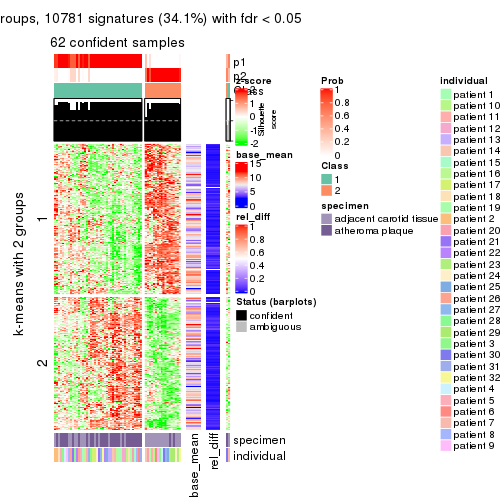
get_signatures(res, k = 3)
get_signatures(res, k = 4)
get_signatures(res, k = 5)
get_signatures(res, k = 6)
Signature heatmaps where rows are not scaled:
get_signatures(res, k = 2, scale_rows = FALSE)
get_signatures(res, k = 3, scale_rows = FALSE)
get_signatures(res, k = 4, scale_rows = FALSE)
get_signatures(res, k = 5, scale_rows = FALSE)
get_signatures(res, k = 6, scale_rows = FALSE)
Compare the overlap of signatures from different k:
compare_signatures(res)
get_signature() returns a data frame invisibly. TO get the list of signatures, the function
call should be assigned to a variable explicitly. In following code, if plot argument is set
to FALSE, no heatmap is plotted while only the differential analysis is performed.
# code only for demonstration
tb = get_signature(res, k = ..., plot = FALSE)
An example of the output of tb is:
#> which_row fdr mean_1 mean_2 scaled_mean_1 scaled_mean_2 km
#> 1 38 0.042760348 8.373488 9.131774 -0.5533452 0.5164555 1
#> 2 40 0.018707592 7.106213 8.469186 -0.6173731 0.5762149 1
#> 3 55 0.019134737 10.221463 11.207825 -0.6159697 0.5749050 1
#> 4 59 0.006059896 5.921854 7.869574 -0.6899429 0.6439467 1
#> 5 60 0.018055526 8.928898 10.211722 -0.6204761 0.5791110 1
#> 6 98 0.009384629 15.714769 14.887706 0.6635654 -0.6193277 2
...
The columns in tb are:
which_row: row indices corresponding to the input matrix.fdr: FDR for the differential test. mean_x: The mean value in group x.scaled_mean_x: The mean value in group x after rows are scaled.km: Row groups if k-means clustering is applied to rows.UMAP plot which shows how samples are separated.
dimension_reduction(res, k = 2, method = "UMAP")
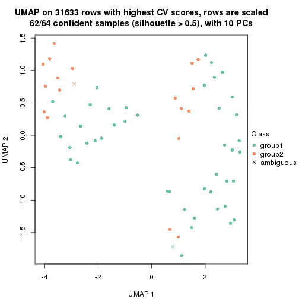
dimension_reduction(res, k = 3, method = "UMAP")
dimension_reduction(res, k = 4, method = "UMAP")
dimension_reduction(res, k = 5, method = "UMAP")

dimension_reduction(res, k = 6, method = "UMAP")
Following heatmap shows how subgroups are split when increasing k:
collect_classes(res)
Test correlation between subgroups and known annotations. If the known annotation is numeric, one-way ANOVA test is applied, and if the known annotation is discrete, chi-squared contingency table test is applied.
test_to_known_factors(res)
#> n specimen(p) individual(p) k
#> CV:pam 62 0.000276 0.4941 2
#> CV:pam 64 0.000330 0.2853 3
#> CV:pam 44 0.002297 0.2402 4
#> CV:pam 48 0.031267 0.0594 5
#> CV:pam 53 0.000112 0.0836 6
If matrix rows can be associated to genes, consider to use GO_Enrichment(res,
...) to perform function enrichment for the signature genes.
The object with results only for a single top-value method and a single partition method can be extracted as:
res = res_list["CV", "mclust"]
# you can also extract it by
# res = res_list["CV:mclust"]
A summary of res and all the functions that can be applied to it:
res
#> A 'ConsensusPartition' object with k = 2, 3, 4, 5, 6.
#> On a matrix with 31633 rows and 64 columns.
#> Top rows (1000, 2000, 3000, 4000, 5000) are extracted by 'CV' method.
#> Subgroups are detected by 'mclust' method.
#> Performed in total 1250 partitions by row resampling.
#> Best k for subgroups seems to be 6.
#>
#> Following methods can be applied to this 'ConsensusPartition' object:
#> [1] "cola_report" "collect_classes" "collect_plots"
#> [4] "collect_stats" "colnames" "compare_signatures"
#> [7] "consensus_heatmap" "dimension_reduction" "functional_enrichment"
#> [10] "get_anno_col" "get_anno" "get_classes"
#> [13] "get_consensus" "get_matrix" "get_membership"
#> [16] "get_param" "get_signatures" "get_stats"
#> [19] "is_best_k" "is_stable_k" "membership_heatmap"
#> [22] "ncol" "nrow" "plot_ecdf"
#> [25] "rownames" "select_partition_number" "show"
#> [28] "suggest_best_k" "test_to_known_factors"
collect_plots() function collects all the plots made from res for all k (number of partitions)
into one single page to provide an easy and fast comparison between different k.
collect_plots(res)
The plots are:
k and the heatmap of
predicted classes for each k.k.k.k.All the plots in panels can be made by individual functions and they are plotted later in this section.
select_partition_number() produces several plots showing different
statistics for choosing “optimized” k. There are following statistics:
k;k, the area increased is defined as \(A_k - A_{k-1}\).The detailed explanations of these statistics can be found in the cola vignette.
Generally speaking, lower PAC score, higher mean silhouette score or higher
concordance corresponds to better partition. Rand index and Jaccard index
measure how similar the current partition is compared to partition with k-1.
If they are too similar, we won't accept k is better than k-1.
select_partition_number(res)
The numeric values for all these statistics can be obtained by get_stats().
get_stats(res)
#> k 1-PAC mean_silhouette concordance area_increased Rand Jaccard
#> 2 2 1.000 1.000 1.000 0.4906 0.510 0.510
#> 3 3 1.000 0.951 0.979 0.3601 0.821 0.649
#> 4 4 0.801 0.744 0.879 0.0866 0.966 0.897
#> 5 5 0.810 0.746 0.871 0.0982 0.824 0.473
#> 6 6 0.914 0.885 0.946 0.0534 0.937 0.698
suggest_best_k() suggests the best \(k\) based on these statistics. The rules are as follows:
NA.suggest_best_k(res)
#> [1] 6
#> attr(,"optional")
#> [1] 2 3
There is also optional best \(k\) = 2 3 that is worth to check.
Following shows the table of the partitions (You need to click the show/hide
code output link to see it). The membership matrix (columns with name p*)
is inferred by
clue::cl_consensus()
function with the SE method. Basically the value in the membership matrix
represents the probability to belong to a certain group. The finall class
label for an item is determined with the group with highest probability it
belongs to.
In get_classes() function, the entropy is calculated from the membership
matrix and the silhouette score is calculated from the consensus matrix.
cbind(get_classes(res, k = 2), get_membership(res, k = 2))
#> class entropy silhouette p1 p2
#> GSM1060118 1 0.0000 1.000 1.000 0.000
#> GSM1060120 1 0.0000 1.000 1.000 0.000
#> GSM1060122 1 0.0000 1.000 1.000 0.000
#> GSM1060124 1 0.0000 1.000 1.000 0.000
#> GSM1060126 1 0.0000 1.000 1.000 0.000
#> GSM1060128 1 0.0000 1.000 1.000 0.000
#> GSM1060130 1 0.0000 1.000 1.000 0.000
#> GSM1060132 1 0.0000 1.000 1.000 0.000
#> GSM1060134 1 0.0000 1.000 1.000 0.000
#> GSM1060136 1 0.0000 1.000 1.000 0.000
#> GSM1060138 1 0.0000 1.000 1.000 0.000
#> GSM1060140 1 0.0000 1.000 1.000 0.000
#> GSM1060142 1 0.0000 1.000 1.000 0.000
#> GSM1060144 1 0.0000 1.000 1.000 0.000
#> GSM1060146 1 0.0000 1.000 1.000 0.000
#> GSM1060148 1 0.0000 1.000 1.000 0.000
#> GSM1060150 2 0.0000 1.000 0.000 1.000
#> GSM1060152 1 0.0000 1.000 1.000 0.000
#> GSM1060154 1 0.0000 1.000 1.000 0.000
#> GSM1060156 1 0.0000 1.000 1.000 0.000
#> GSM1060158 2 0.0000 1.000 0.000 1.000
#> GSM1060160 2 0.0000 1.000 0.000 1.000
#> GSM1060162 2 0.0000 1.000 0.000 1.000
#> GSM1060164 2 0.0000 1.000 0.000 1.000
#> GSM1060166 2 0.0000 1.000 0.000 1.000
#> GSM1060168 2 0.0000 1.000 0.000 1.000
#> GSM1060170 2 0.0000 1.000 0.000 1.000
#> GSM1060172 2 0.0000 1.000 0.000 1.000
#> GSM1060174 2 0.0000 1.000 0.000 1.000
#> GSM1060176 2 0.0000 1.000 0.000 1.000
#> GSM1060178 2 0.0000 1.000 0.000 1.000
#> GSM1060180 2 0.0000 1.000 0.000 1.000
#> GSM1060117 1 0.0000 1.000 1.000 0.000
#> GSM1060119 1 0.0000 1.000 1.000 0.000
#> GSM1060121 1 0.0000 1.000 1.000 0.000
#> GSM1060123 1 0.0000 1.000 1.000 0.000
#> GSM1060125 1 0.0000 1.000 1.000 0.000
#> GSM1060127 1 0.0000 1.000 1.000 0.000
#> GSM1060129 1 0.0000 1.000 1.000 0.000
#> GSM1060131 1 0.0000 1.000 1.000 0.000
#> GSM1060133 1 0.0000 1.000 1.000 0.000
#> GSM1060135 1 0.0000 1.000 1.000 0.000
#> GSM1060137 1 0.0000 1.000 1.000 0.000
#> GSM1060139 1 0.0000 1.000 1.000 0.000
#> GSM1060141 1 0.0000 1.000 1.000 0.000
#> GSM1060143 1 0.0376 0.996 0.996 0.004
#> GSM1060145 1 0.0000 1.000 1.000 0.000
#> GSM1060147 1 0.0000 1.000 1.000 0.000
#> GSM1060149 2 0.0000 1.000 0.000 1.000
#> GSM1060151 1 0.0000 1.000 1.000 0.000
#> GSM1060153 1 0.0000 1.000 1.000 0.000
#> GSM1060155 1 0.0376 0.996 0.996 0.004
#> GSM1060157 2 0.0000 1.000 0.000 1.000
#> GSM1060159 2 0.0000 1.000 0.000 1.000
#> GSM1060161 2 0.0000 1.000 0.000 1.000
#> GSM1060163 2 0.0000 1.000 0.000 1.000
#> GSM1060165 2 0.0000 1.000 0.000 1.000
#> GSM1060167 2 0.0000 1.000 0.000 1.000
#> GSM1060169 2 0.0000 1.000 0.000 1.000
#> GSM1060171 2 0.0000 1.000 0.000 1.000
#> GSM1060173 2 0.0000 1.000 0.000 1.000
#> GSM1060175 2 0.0000 1.000 0.000 1.000
#> GSM1060177 2 0.0000 1.000 0.000 1.000
#> GSM1060179 2 0.0000 1.000 0.000 1.000
cbind(get_classes(res, k = 3), get_membership(res, k = 3))
#> class entropy silhouette p1 p2 p3
#> GSM1060118 2 0.0237 0.927 0.004 0.996 0.000
#> GSM1060120 1 0.0000 0.996 1.000 0.000 0.000
#> GSM1060122 1 0.0000 0.996 1.000 0.000 0.000
#> GSM1060124 1 0.0000 0.996 1.000 0.000 0.000
#> GSM1060126 1 0.0000 0.996 1.000 0.000 0.000
#> GSM1060128 1 0.0592 0.990 0.988 0.012 0.000
#> GSM1060130 1 0.0592 0.990 0.988 0.012 0.000
#> GSM1060132 1 0.0000 0.996 1.000 0.000 0.000
#> GSM1060134 1 0.0000 0.996 1.000 0.000 0.000
#> GSM1060136 1 0.0000 0.996 1.000 0.000 0.000
#> GSM1060138 2 0.0237 0.927 0.004 0.996 0.000
#> GSM1060140 2 0.0237 0.927 0.004 0.996 0.000
#> GSM1060142 2 0.0747 0.919 0.016 0.984 0.000
#> GSM1060144 2 0.0237 0.927 0.004 0.996 0.000
#> GSM1060146 1 0.0000 0.996 1.000 0.000 0.000
#> GSM1060148 2 0.0237 0.927 0.004 0.996 0.000
#> GSM1060150 3 0.0000 1.000 0.000 0.000 1.000
#> GSM1060152 1 0.0592 0.990 0.988 0.012 0.000
#> GSM1060154 1 0.0424 0.992 0.992 0.008 0.000
#> GSM1060156 1 0.0592 0.990 0.988 0.012 0.000
#> GSM1060158 3 0.0000 1.000 0.000 0.000 1.000
#> GSM1060160 3 0.0000 1.000 0.000 0.000 1.000
#> GSM1060162 3 0.0000 1.000 0.000 0.000 1.000
#> GSM1060164 3 0.0000 1.000 0.000 0.000 1.000
#> GSM1060166 3 0.0000 1.000 0.000 0.000 1.000
#> GSM1060168 3 0.0000 1.000 0.000 0.000 1.000
#> GSM1060170 3 0.0000 1.000 0.000 0.000 1.000
#> GSM1060172 3 0.0000 1.000 0.000 0.000 1.000
#> GSM1060174 3 0.0000 1.000 0.000 0.000 1.000
#> GSM1060176 3 0.0000 1.000 0.000 0.000 1.000
#> GSM1060178 3 0.0000 1.000 0.000 0.000 1.000
#> GSM1060180 3 0.0000 1.000 0.000 0.000 1.000
#> GSM1060117 2 0.0237 0.927 0.004 0.996 0.000
#> GSM1060119 1 0.0000 0.996 1.000 0.000 0.000
#> GSM1060121 2 0.6140 0.395 0.404 0.596 0.000
#> GSM1060123 2 0.6126 0.398 0.400 0.600 0.000
#> GSM1060125 2 0.0237 0.927 0.004 0.996 0.000
#> GSM1060127 1 0.0000 0.996 1.000 0.000 0.000
#> GSM1060129 1 0.0000 0.996 1.000 0.000 0.000
#> GSM1060131 1 0.0000 0.996 1.000 0.000 0.000
#> GSM1060133 2 0.6168 0.369 0.412 0.588 0.000
#> GSM1060135 1 0.0000 0.996 1.000 0.000 0.000
#> GSM1060137 2 0.0000 0.926 0.000 1.000 0.000
#> GSM1060139 2 0.0237 0.927 0.004 0.996 0.000
#> GSM1060141 2 0.0237 0.927 0.004 0.996 0.000
#> GSM1060143 2 0.0000 0.926 0.000 1.000 0.000
#> GSM1060145 2 0.0000 0.926 0.000 1.000 0.000
#> GSM1060147 2 0.0237 0.927 0.004 0.996 0.000
#> GSM1060149 3 0.0000 1.000 0.000 0.000 1.000
#> GSM1060151 1 0.0592 0.990 0.988 0.012 0.000
#> GSM1060153 2 0.0000 0.926 0.000 1.000 0.000
#> GSM1060155 2 0.0000 0.926 0.000 1.000 0.000
#> GSM1060157 3 0.0000 1.000 0.000 0.000 1.000
#> GSM1060159 3 0.0000 1.000 0.000 0.000 1.000
#> GSM1060161 3 0.0000 1.000 0.000 0.000 1.000
#> GSM1060163 3 0.0000 1.000 0.000 0.000 1.000
#> GSM1060165 3 0.0000 1.000 0.000 0.000 1.000
#> GSM1060167 3 0.0000 1.000 0.000 0.000 1.000
#> GSM1060169 3 0.0237 0.997 0.000 0.004 0.996
#> GSM1060171 3 0.0000 1.000 0.000 0.000 1.000
#> GSM1060173 3 0.0000 1.000 0.000 0.000 1.000
#> GSM1060175 3 0.0237 0.997 0.000 0.004 0.996
#> GSM1060177 3 0.0000 1.000 0.000 0.000 1.000
#> GSM1060179 3 0.0000 1.000 0.000 0.000 1.000
cbind(get_classes(res, k = 4), get_membership(res, k = 4))
#> class entropy silhouette p1 p2 p3 p4
#> GSM1060118 1 0.0000 0.8830 1.000 0.000 0.000 0.000
#> GSM1060120 2 0.0921 0.9581 0.000 0.972 0.000 0.028
#> GSM1060122 2 0.0921 0.9581 0.000 0.972 0.000 0.028
#> GSM1060124 2 0.0921 0.9581 0.000 0.972 0.000 0.028
#> GSM1060126 2 0.0921 0.9581 0.000 0.972 0.000 0.028
#> GSM1060128 2 0.2542 0.9160 0.084 0.904 0.000 0.012
#> GSM1060130 2 0.2542 0.9160 0.084 0.904 0.000 0.012
#> GSM1060132 2 0.0817 0.9584 0.000 0.976 0.000 0.024
#> GSM1060134 2 0.0336 0.9554 0.000 0.992 0.000 0.008
#> GSM1060136 2 0.0336 0.9554 0.000 0.992 0.000 0.008
#> GSM1060138 1 0.0000 0.8830 1.000 0.000 0.000 0.000
#> GSM1060140 1 0.0000 0.8830 1.000 0.000 0.000 0.000
#> GSM1060142 1 0.3257 0.7363 0.844 0.152 0.000 0.004
#> GSM1060144 1 0.0000 0.8830 1.000 0.000 0.000 0.000
#> GSM1060146 2 0.0000 0.9568 0.000 1.000 0.000 0.000
#> GSM1060148 1 0.0000 0.8830 1.000 0.000 0.000 0.000
#> GSM1060150 3 0.2921 0.6426 0.000 0.000 0.860 0.140
#> GSM1060152 2 0.2124 0.9284 0.068 0.924 0.000 0.008
#> GSM1060154 2 0.1722 0.9385 0.048 0.944 0.000 0.008
#> GSM1060156 2 0.2473 0.9191 0.080 0.908 0.000 0.012
#> GSM1060158 3 0.4250 0.4555 0.000 0.000 0.724 0.276
#> GSM1060160 3 0.4907 0.0505 0.000 0.000 0.580 0.420
#> GSM1060162 3 0.3311 0.6267 0.000 0.000 0.828 0.172
#> GSM1060164 3 0.1389 0.7156 0.000 0.000 0.952 0.048
#> GSM1060166 3 0.2704 0.6819 0.000 0.000 0.876 0.124
#> GSM1060168 3 0.2408 0.6958 0.000 0.000 0.896 0.104
#> GSM1060170 3 0.1716 0.7132 0.000 0.000 0.936 0.064
#> GSM1060172 3 0.1022 0.7051 0.000 0.000 0.968 0.032
#> GSM1060174 3 0.4406 0.4803 0.000 0.000 0.700 0.300
#> GSM1060176 3 0.3074 0.6930 0.000 0.000 0.848 0.152
#> GSM1060178 3 0.4916 0.0359 0.000 0.000 0.576 0.424
#> GSM1060180 3 0.2011 0.7167 0.000 0.000 0.920 0.080
#> GSM1060117 1 0.0000 0.8830 1.000 0.000 0.000 0.000
#> GSM1060119 2 0.0921 0.9581 0.000 0.972 0.000 0.028
#> GSM1060121 1 0.6507 0.3119 0.520 0.404 0.000 0.076
#> GSM1060123 1 0.6644 0.3305 0.520 0.392 0.000 0.088
#> GSM1060125 1 0.1118 0.8795 0.964 0.000 0.000 0.036
#> GSM1060127 2 0.0921 0.9581 0.000 0.972 0.000 0.028
#> GSM1060129 2 0.0817 0.9584 0.000 0.976 0.000 0.024
#> GSM1060131 2 0.0921 0.9581 0.000 0.972 0.000 0.028
#> GSM1060133 1 0.6644 0.3305 0.520 0.392 0.000 0.088
#> GSM1060135 2 0.0188 0.9562 0.000 0.996 0.000 0.004
#> GSM1060137 1 0.1118 0.8795 0.964 0.000 0.000 0.036
#> GSM1060139 1 0.0000 0.8830 1.000 0.000 0.000 0.000
#> GSM1060141 1 0.0000 0.8830 1.000 0.000 0.000 0.000
#> GSM1060143 1 0.1118 0.8795 0.964 0.000 0.000 0.036
#> GSM1060145 1 0.1118 0.8795 0.964 0.000 0.000 0.036
#> GSM1060147 1 0.1118 0.8795 0.964 0.000 0.000 0.036
#> GSM1060149 3 0.1022 0.7098 0.000 0.000 0.968 0.032
#> GSM1060151 2 0.2542 0.9160 0.084 0.904 0.000 0.012
#> GSM1060153 1 0.1118 0.8795 0.964 0.000 0.000 0.036
#> GSM1060155 1 0.2011 0.8585 0.920 0.000 0.000 0.080
#> GSM1060157 3 0.1792 0.7203 0.000 0.000 0.932 0.068
#> GSM1060159 3 0.3942 0.5040 0.000 0.000 0.764 0.236
#> GSM1060161 3 0.4222 0.5002 0.000 0.000 0.728 0.272
#> GSM1060163 3 0.4193 0.4971 0.000 0.000 0.732 0.268
#> GSM1060165 3 0.4477 0.4818 0.000 0.000 0.688 0.312
#> GSM1060167 3 0.1940 0.7183 0.000 0.000 0.924 0.076
#> GSM1060169 4 0.2973 0.7109 0.000 0.000 0.144 0.856
#> GSM1060171 3 0.0921 0.7098 0.000 0.000 0.972 0.028
#> GSM1060173 3 0.3801 0.5769 0.000 0.000 0.780 0.220
#> GSM1060175 4 0.3311 0.7237 0.000 0.000 0.172 0.828
#> GSM1060177 3 0.4193 0.5061 0.000 0.000 0.732 0.268
#> GSM1060179 4 0.4948 0.1507 0.000 0.000 0.440 0.560
cbind(get_classes(res, k = 5), get_membership(res, k = 5))
#> class entropy silhouette p1 p2 p3 p4 p5
#> GSM1060118 1 0.2074 0.5933 0.896 0.000 0.000 0.104 0.000
#> GSM1060120 5 0.0000 0.8492 0.000 0.000 0.000 0.000 1.000
#> GSM1060122 5 0.0000 0.8492 0.000 0.000 0.000 0.000 1.000
#> GSM1060124 5 0.0000 0.8492 0.000 0.000 0.000 0.000 1.000
#> GSM1060126 5 0.0000 0.8492 0.000 0.000 0.000 0.000 1.000
#> GSM1060128 1 0.4150 0.1719 0.612 0.000 0.000 0.000 0.388
#> GSM1060130 1 0.4415 0.1635 0.604 0.000 0.008 0.000 0.388
#> GSM1060132 5 0.3796 0.5459 0.300 0.000 0.000 0.000 0.700
#> GSM1060134 5 0.3966 0.5164 0.336 0.000 0.000 0.000 0.664
#> GSM1060136 5 0.3999 0.4948 0.344 0.000 0.000 0.000 0.656
#> GSM1060138 1 0.3913 0.4671 0.676 0.000 0.000 0.324 0.000
#> GSM1060140 1 0.3895 0.4733 0.680 0.000 0.000 0.320 0.000
#> GSM1060142 1 0.2124 0.5950 0.900 0.000 0.000 0.096 0.004
#> GSM1060144 1 0.3895 0.4733 0.680 0.000 0.000 0.320 0.000
#> GSM1060146 5 0.3913 0.5227 0.324 0.000 0.000 0.000 0.676
#> GSM1060148 1 0.3895 0.4733 0.680 0.000 0.000 0.320 0.000
#> GSM1060150 3 0.0510 0.9239 0.000 0.016 0.984 0.000 0.000
#> GSM1060152 1 0.4268 0.0268 0.556 0.000 0.000 0.000 0.444
#> GSM1060154 1 0.4262 0.0221 0.560 0.000 0.000 0.000 0.440
#> GSM1060156 1 0.4150 0.1719 0.612 0.000 0.000 0.000 0.388
#> GSM1060158 3 0.1851 0.8883 0.000 0.088 0.912 0.000 0.000
#> GSM1060160 3 0.0510 0.9189 0.000 0.016 0.984 0.000 0.000
#> GSM1060162 2 0.1341 0.9688 0.000 0.944 0.056 0.000 0.000
#> GSM1060164 3 0.0290 0.9242 0.000 0.008 0.992 0.000 0.000
#> GSM1060166 3 0.0000 0.9243 0.000 0.000 1.000 0.000 0.000
#> GSM1060168 3 0.1792 0.8908 0.000 0.084 0.916 0.000 0.000
#> GSM1060170 3 0.0162 0.9247 0.000 0.004 0.996 0.000 0.000
#> GSM1060172 3 0.0703 0.9238 0.000 0.024 0.976 0.000 0.000
#> GSM1060174 2 0.1197 0.9746 0.000 0.952 0.048 0.000 0.000
#> GSM1060176 3 0.4138 0.4107 0.000 0.384 0.616 0.000 0.000
#> GSM1060178 3 0.0510 0.9189 0.000 0.016 0.984 0.000 0.000
#> GSM1060180 3 0.0162 0.9252 0.000 0.004 0.996 0.000 0.000
#> GSM1060117 1 0.2605 0.5815 0.852 0.000 0.000 0.148 0.000
#> GSM1060119 5 0.0000 0.8492 0.000 0.000 0.000 0.000 1.000
#> GSM1060121 4 0.2872 0.8809 0.048 0.008 0.000 0.884 0.060
#> GSM1060123 4 0.2730 0.8811 0.044 0.008 0.000 0.892 0.056
#> GSM1060125 4 0.1410 0.9029 0.060 0.000 0.000 0.940 0.000
#> GSM1060127 5 0.0000 0.8492 0.000 0.000 0.000 0.000 1.000
#> GSM1060129 5 0.0000 0.8492 0.000 0.000 0.000 0.000 1.000
#> GSM1060131 5 0.0000 0.8492 0.000 0.000 0.000 0.000 1.000
#> GSM1060133 4 0.2730 0.8811 0.044 0.008 0.000 0.892 0.056
#> GSM1060135 5 0.0771 0.8364 0.020 0.000 0.000 0.004 0.976
#> GSM1060137 4 0.0510 0.9346 0.016 0.000 0.000 0.984 0.000
#> GSM1060139 1 0.2230 0.5920 0.884 0.000 0.000 0.116 0.000
#> GSM1060141 1 0.3895 0.4733 0.680 0.000 0.000 0.320 0.000
#> GSM1060143 4 0.0000 0.9341 0.000 0.000 0.000 1.000 0.000
#> GSM1060145 4 0.0703 0.9313 0.024 0.000 0.000 0.976 0.000
#> GSM1060147 4 0.1043 0.9220 0.040 0.000 0.000 0.960 0.000
#> GSM1060149 3 0.0794 0.9211 0.000 0.028 0.972 0.000 0.000
#> GSM1060151 1 0.4161 0.1640 0.608 0.000 0.000 0.000 0.392
#> GSM1060153 4 0.0510 0.9346 0.016 0.000 0.000 0.984 0.000
#> GSM1060155 4 0.0290 0.9324 0.000 0.008 0.000 0.992 0.000
#> GSM1060157 3 0.0510 0.9231 0.000 0.016 0.984 0.000 0.000
#> GSM1060159 3 0.0963 0.9191 0.000 0.036 0.964 0.000 0.000
#> GSM1060161 2 0.1043 0.9698 0.000 0.960 0.040 0.000 0.000
#> GSM1060163 2 0.1197 0.9746 0.000 0.952 0.048 0.000 0.000
#> GSM1060165 2 0.1197 0.9746 0.000 0.952 0.048 0.000 0.000
#> GSM1060167 3 0.3730 0.6384 0.000 0.288 0.712 0.000 0.000
#> GSM1060169 2 0.1251 0.9516 0.000 0.956 0.036 0.008 0.000
#> GSM1060171 3 0.2020 0.8883 0.000 0.100 0.900 0.000 0.000
#> GSM1060173 2 0.1270 0.9712 0.000 0.948 0.052 0.000 0.000
#> GSM1060175 2 0.1502 0.9639 0.000 0.940 0.056 0.004 0.000
#> GSM1060177 2 0.2230 0.9034 0.000 0.884 0.116 0.000 0.000
#> GSM1060179 2 0.1043 0.9710 0.000 0.960 0.040 0.000 0.000
cbind(get_classes(res, k = 6), get_membership(res, k = 6))
#> class entropy silhouette p1 p2 p3 p4 p5 p6
#> GSM1060118 1 0.0458 0.957 0.984 0.000 0.000 0.000 0.016 0.000
#> GSM1060120 6 0.0000 0.897 0.000 0.000 0.000 0.000 0.000 1.000
#> GSM1060122 6 0.0000 0.897 0.000 0.000 0.000 0.000 0.000 1.000
#> GSM1060124 6 0.3747 0.362 0.000 0.000 0.000 0.000 0.396 0.604
#> GSM1060126 6 0.0000 0.897 0.000 0.000 0.000 0.000 0.000 1.000
#> GSM1060128 5 0.0713 0.924 0.028 0.000 0.000 0.000 0.972 0.000
#> GSM1060130 5 0.0000 0.940 0.000 0.000 0.000 0.000 1.000 0.000
#> GSM1060132 5 0.0865 0.915 0.000 0.000 0.000 0.000 0.964 0.036
#> GSM1060134 6 0.3847 0.208 0.000 0.000 0.000 0.000 0.456 0.544
#> GSM1060136 5 0.0146 0.939 0.000 0.000 0.000 0.000 0.996 0.004
#> GSM1060138 1 0.1007 0.941 0.956 0.000 0.000 0.044 0.000 0.000
#> GSM1060140 1 0.0146 0.965 0.996 0.000 0.000 0.004 0.000 0.000
#> GSM1060142 1 0.2454 0.804 0.840 0.000 0.000 0.000 0.160 0.000
#> GSM1060144 1 0.0000 0.966 1.000 0.000 0.000 0.000 0.000 0.000
#> GSM1060146 5 0.0260 0.937 0.000 0.000 0.000 0.000 0.992 0.008
#> GSM1060148 1 0.0000 0.966 1.000 0.000 0.000 0.000 0.000 0.000
#> GSM1060150 3 0.0000 0.942 0.000 0.000 1.000 0.000 0.000 0.000
#> GSM1060152 5 0.0000 0.940 0.000 0.000 0.000 0.000 1.000 0.000
#> GSM1060154 5 0.0000 0.940 0.000 0.000 0.000 0.000 1.000 0.000
#> GSM1060156 5 0.0000 0.940 0.000 0.000 0.000 0.000 1.000 0.000
#> GSM1060158 3 0.2378 0.843 0.000 0.152 0.848 0.000 0.000 0.000
#> GSM1060160 3 0.0146 0.941 0.000 0.004 0.996 0.000 0.000 0.000
#> GSM1060162 2 0.0260 0.940 0.000 0.992 0.008 0.000 0.000 0.000
#> GSM1060164 3 0.0260 0.939 0.000 0.008 0.992 0.000 0.000 0.000
#> GSM1060166 3 0.0000 0.942 0.000 0.000 1.000 0.000 0.000 0.000
#> GSM1060168 3 0.2260 0.853 0.000 0.140 0.860 0.000 0.000 0.000
#> GSM1060170 3 0.0000 0.942 0.000 0.000 1.000 0.000 0.000 0.000
#> GSM1060172 3 0.0000 0.942 0.000 0.000 1.000 0.000 0.000 0.000
#> GSM1060174 2 0.0000 0.943 0.000 1.000 0.000 0.000 0.000 0.000
#> GSM1060176 2 0.3620 0.409 0.000 0.648 0.352 0.000 0.000 0.000
#> GSM1060178 3 0.0000 0.942 0.000 0.000 1.000 0.000 0.000 0.000
#> GSM1060180 3 0.0000 0.942 0.000 0.000 1.000 0.000 0.000 0.000
#> GSM1060117 1 0.0146 0.965 0.996 0.000 0.000 0.000 0.004 0.000
#> GSM1060119 6 0.0000 0.897 0.000 0.000 0.000 0.000 0.000 1.000
#> GSM1060121 4 0.1267 0.912 0.000 0.000 0.000 0.940 0.000 0.060
#> GSM1060123 4 0.1267 0.912 0.000 0.000 0.000 0.940 0.000 0.060
#> GSM1060125 4 0.2260 0.874 0.140 0.000 0.000 0.860 0.000 0.000
#> GSM1060127 6 0.0000 0.897 0.000 0.000 0.000 0.000 0.000 1.000
#> GSM1060129 6 0.0000 0.897 0.000 0.000 0.000 0.000 0.000 1.000
#> GSM1060131 6 0.0000 0.897 0.000 0.000 0.000 0.000 0.000 1.000
#> GSM1060133 4 0.1267 0.912 0.000 0.000 0.000 0.940 0.000 0.060
#> GSM1060135 6 0.0363 0.890 0.000 0.000 0.000 0.012 0.000 0.988
#> GSM1060137 4 0.0865 0.940 0.036 0.000 0.000 0.964 0.000 0.000
#> GSM1060139 1 0.0146 0.965 0.996 0.000 0.000 0.000 0.004 0.000
#> GSM1060141 1 0.0713 0.953 0.972 0.000 0.000 0.028 0.000 0.000
#> GSM1060143 4 0.0865 0.940 0.036 0.000 0.000 0.964 0.000 0.000
#> GSM1060145 4 0.1327 0.930 0.064 0.000 0.000 0.936 0.000 0.000
#> GSM1060147 4 0.2135 0.886 0.128 0.000 0.000 0.872 0.000 0.000
#> GSM1060149 3 0.0146 0.941 0.000 0.004 0.996 0.000 0.000 0.000
#> GSM1060151 5 0.4181 0.472 0.328 0.000 0.000 0.000 0.644 0.028
#> GSM1060153 4 0.0865 0.940 0.036 0.000 0.000 0.964 0.000 0.000
#> GSM1060155 4 0.0363 0.935 0.012 0.000 0.000 0.988 0.000 0.000
#> GSM1060157 3 0.0260 0.939 0.000 0.008 0.992 0.000 0.000 0.000
#> GSM1060159 3 0.0547 0.936 0.000 0.020 0.980 0.000 0.000 0.000
#> GSM1060161 2 0.0260 0.940 0.000 0.992 0.008 0.000 0.000 0.000
#> GSM1060163 2 0.0000 0.943 0.000 1.000 0.000 0.000 0.000 0.000
#> GSM1060165 2 0.0000 0.943 0.000 1.000 0.000 0.000 0.000 0.000
#> GSM1060167 3 0.3351 0.652 0.000 0.288 0.712 0.000 0.000 0.000
#> GSM1060169 2 0.0260 0.940 0.000 0.992 0.000 0.008 0.000 0.000
#> GSM1060171 3 0.2378 0.843 0.000 0.152 0.848 0.000 0.000 0.000
#> GSM1060173 2 0.0260 0.940 0.000 0.992 0.008 0.000 0.000 0.000
#> GSM1060175 2 0.0000 0.943 0.000 1.000 0.000 0.000 0.000 0.000
#> GSM1060177 2 0.1910 0.847 0.000 0.892 0.108 0.000 0.000 0.000
#> GSM1060179 2 0.0260 0.940 0.000 0.992 0.008 0.000 0.000 0.000
Heatmaps for the consensus matrix. It visualizes the probability of two samples to be in a same group.
consensus_heatmap(res, k = 2)
consensus_heatmap(res, k = 3)
consensus_heatmap(res, k = 4)

consensus_heatmap(res, k = 5)
consensus_heatmap(res, k = 6)
Heatmaps for the membership of samples in all partitions to see how consistent they are:
membership_heatmap(res, k = 2)
membership_heatmap(res, k = 3)
membership_heatmap(res, k = 4)
membership_heatmap(res, k = 5)
membership_heatmap(res, k = 6)
As soon as we have had the classes for columns, we can look for signatures which are significantly different between classes which can be candidate marks for certain classes. Following are the heatmaps for signatures.
Signature heatmaps where rows are scaled:
get_signatures(res, k = 2)
get_signatures(res, k = 3)
get_signatures(res, k = 4)
get_signatures(res, k = 5)
get_signatures(res, k = 6)

Signature heatmaps where rows are not scaled:
get_signatures(res, k = 2, scale_rows = FALSE)

get_signatures(res, k = 3, scale_rows = FALSE)
get_signatures(res, k = 4, scale_rows = FALSE)
get_signatures(res, k = 5, scale_rows = FALSE)
get_signatures(res, k = 6, scale_rows = FALSE)
Compare the overlap of signatures from different k:
compare_signatures(res)
get_signature() returns a data frame invisibly. TO get the list of signatures, the function
call should be assigned to a variable explicitly. In following code, if plot argument is set
to FALSE, no heatmap is plotted while only the differential analysis is performed.
# code only for demonstration
tb = get_signature(res, k = ..., plot = FALSE)
An example of the output of tb is:
#> which_row fdr mean_1 mean_2 scaled_mean_1 scaled_mean_2 km
#> 1 38 0.042760348 8.373488 9.131774 -0.5533452 0.5164555 1
#> 2 40 0.018707592 7.106213 8.469186 -0.6173731 0.5762149 1
#> 3 55 0.019134737 10.221463 11.207825 -0.6159697 0.5749050 1
#> 4 59 0.006059896 5.921854 7.869574 -0.6899429 0.6439467 1
#> 5 60 0.018055526 8.928898 10.211722 -0.6204761 0.5791110 1
#> 6 98 0.009384629 15.714769 14.887706 0.6635654 -0.6193277 2
...
The columns in tb are:
which_row: row indices corresponding to the input matrix.fdr: FDR for the differential test. mean_x: The mean value in group x.scaled_mean_x: The mean value in group x after rows are scaled.km: Row groups if k-means clustering is applied to rows.UMAP plot which shows how samples are separated.
dimension_reduction(res, k = 2, method = "UMAP")
dimension_reduction(res, k = 3, method = "UMAP")
dimension_reduction(res, k = 4, method = "UMAP")
dimension_reduction(res, k = 5, method = "UMAP")
dimension_reduction(res, k = 6, method = "UMAP")
Following heatmap shows how subgroups are split when increasing k:
collect_classes(res)
Test correlation between subgroups and known annotations. If the known annotation is numeric, one-way ANOVA test is applied, and if the known annotation is discrete, chi-squared contingency table test is applied.
test_to_known_factors(res)
#> n specimen(p) individual(p) k
#> CV:mclust 64 1.000000 0.000444 2
#> CV:mclust 61 0.179091 0.000272 3
#> CV:mclust 54 0.134433 0.033989 4
#> CV:mclust 51 0.005957 0.009409 5
#> CV:mclust 60 0.000157 0.022549 6
If matrix rows can be associated to genes, consider to use GO_Enrichment(res,
...) to perform function enrichment for the signature genes.
The object with results only for a single top-value method and a single partition method can be extracted as:
res = res_list["CV", "NMF"]
# you can also extract it by
# res = res_list["CV:NMF"]
A summary of res and all the functions that can be applied to it:
res
#> A 'ConsensusPartition' object with k = 2, 3, 4, 5, 6.
#> On a matrix with 31633 rows and 64 columns.
#> Top rows (1000, 2000, 3000, 4000, 5000) are extracted by 'CV' method.
#> Subgroups are detected by 'NMF' method.
#> Performed in total 1250 partitions by row resampling.
#> Best k for subgroups seems to be 4.
#>
#> Following methods can be applied to this 'ConsensusPartition' object:
#> [1] "cola_report" "collect_classes" "collect_plots"
#> [4] "collect_stats" "colnames" "compare_signatures"
#> [7] "consensus_heatmap" "dimension_reduction" "functional_enrichment"
#> [10] "get_anno_col" "get_anno" "get_classes"
#> [13] "get_consensus" "get_matrix" "get_membership"
#> [16] "get_param" "get_signatures" "get_stats"
#> [19] "is_best_k" "is_stable_k" "membership_heatmap"
#> [22] "ncol" "nrow" "plot_ecdf"
#> [25] "rownames" "select_partition_number" "show"
#> [28] "suggest_best_k" "test_to_known_factors"
collect_plots() function collects all the plots made from res for all k (number of partitions)
into one single page to provide an easy and fast comparison between different k.
collect_plots(res)
The plots are:
k and the heatmap of
predicted classes for each k.k.k.k.All the plots in panels can be made by individual functions and they are plotted later in this section.
select_partition_number() produces several plots showing different
statistics for choosing “optimized” k. There are following statistics:
k;k, the area increased is defined as \(A_k - A_{k-1}\).The detailed explanations of these statistics can be found in the cola vignette.
Generally speaking, lower PAC score, higher mean silhouette score or higher
concordance corresponds to better partition. Rand index and Jaccard index
measure how similar the current partition is compared to partition with k-1.
If they are too similar, we won't accept k is better than k-1.
select_partition_number(res)
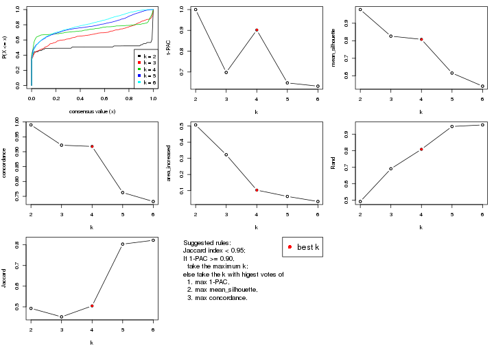
The numeric values for all these statistics can be obtained by get_stats().
get_stats(res)
#> k 1-PAC mean_silhouette concordance area_increased Rand Jaccard
#> 2 2 1.000 0.978 0.990 0.5069 0.493 0.493
#> 3 3 0.698 0.826 0.922 0.3224 0.691 0.452
#> 4 4 0.902 0.808 0.918 0.1032 0.809 0.505
#> 5 5 0.647 0.616 0.763 0.0641 0.947 0.803
#> 6 6 0.632 0.541 0.733 0.0326 0.957 0.822
suggest_best_k() suggests the best \(k\) based on these statistics. The rules are as follows:
NA.suggest_best_k(res)
#> [1] 4
#> attr(,"optional")
#> [1] 2
There is also optional best \(k\) = 2 that is worth to check.
Following shows the table of the partitions (You need to click the show/hide
code output link to see it). The membership matrix (columns with name p*)
is inferred by
clue::cl_consensus()
function with the SE method. Basically the value in the membership matrix
represents the probability to belong to a certain group. The finall class
label for an item is determined with the group with highest probability it
belongs to.
In get_classes() function, the entropy is calculated from the membership
matrix and the silhouette score is calculated from the consensus matrix.
cbind(get_classes(res, k = 2), get_membership(res, k = 2))
#> class entropy silhouette p1 p2
#> GSM1060118 1 0.0000 0.996 1.000 0.000
#> GSM1060120 2 0.0000 0.983 0.000 1.000
#> GSM1060122 2 0.9170 0.514 0.332 0.668
#> GSM1060124 1 0.0000 0.996 1.000 0.000
#> GSM1060126 2 0.4298 0.901 0.088 0.912
#> GSM1060128 1 0.0000 0.996 1.000 0.000
#> GSM1060130 1 0.0000 0.996 1.000 0.000
#> GSM1060132 1 0.0000 0.996 1.000 0.000
#> GSM1060134 1 0.0938 0.985 0.988 0.012
#> GSM1060136 1 0.0000 0.996 1.000 0.000
#> GSM1060138 1 0.0000 0.996 1.000 0.000
#> GSM1060140 1 0.0000 0.996 1.000 0.000
#> GSM1060142 1 0.0000 0.996 1.000 0.000
#> GSM1060144 1 0.0000 0.996 1.000 0.000
#> GSM1060146 1 0.0000 0.996 1.000 0.000
#> GSM1060148 1 0.0000 0.996 1.000 0.000
#> GSM1060150 1 0.0000 0.996 1.000 0.000
#> GSM1060152 1 0.0000 0.996 1.000 0.000
#> GSM1060154 1 0.0000 0.996 1.000 0.000
#> GSM1060156 1 0.0000 0.996 1.000 0.000
#> GSM1060158 2 0.3274 0.931 0.060 0.940
#> GSM1060160 1 0.0000 0.996 1.000 0.000
#> GSM1060162 2 0.0000 0.983 0.000 1.000
#> GSM1060164 1 0.0000 0.996 1.000 0.000
#> GSM1060166 1 0.0000 0.996 1.000 0.000
#> GSM1060168 2 0.0000 0.983 0.000 1.000
#> GSM1060170 1 0.0000 0.996 1.000 0.000
#> GSM1060172 1 0.0000 0.996 1.000 0.000
#> GSM1060174 2 0.0000 0.983 0.000 1.000
#> GSM1060176 2 0.0938 0.974 0.012 0.988
#> GSM1060178 1 0.0000 0.996 1.000 0.000
#> GSM1060180 1 0.0000 0.996 1.000 0.000
#> GSM1060117 1 0.0000 0.996 1.000 0.000
#> GSM1060119 2 0.0000 0.983 0.000 1.000
#> GSM1060121 2 0.0000 0.983 0.000 1.000
#> GSM1060123 2 0.0000 0.983 0.000 1.000
#> GSM1060125 2 0.0672 0.977 0.008 0.992
#> GSM1060127 2 0.0000 0.983 0.000 1.000
#> GSM1060129 2 0.0000 0.983 0.000 1.000
#> GSM1060131 2 0.0000 0.983 0.000 1.000
#> GSM1060133 2 0.0000 0.983 0.000 1.000
#> GSM1060135 2 0.0000 0.983 0.000 1.000
#> GSM1060137 2 0.0000 0.983 0.000 1.000
#> GSM1060139 1 0.0000 0.996 1.000 0.000
#> GSM1060141 1 0.0000 0.996 1.000 0.000
#> GSM1060143 2 0.0000 0.983 0.000 1.000
#> GSM1060145 2 0.0000 0.983 0.000 1.000
#> GSM1060147 2 0.1184 0.971 0.016 0.984
#> GSM1060149 1 0.0000 0.996 1.000 0.000
#> GSM1060151 1 0.0376 0.993 0.996 0.004
#> GSM1060153 2 0.0000 0.983 0.000 1.000
#> GSM1060155 2 0.0000 0.983 0.000 1.000
#> GSM1060157 1 0.0000 0.996 1.000 0.000
#> GSM1060159 1 0.0000 0.996 1.000 0.000
#> GSM1060161 2 0.0000 0.983 0.000 1.000
#> GSM1060163 2 0.0000 0.983 0.000 1.000
#> GSM1060165 2 0.0000 0.983 0.000 1.000
#> GSM1060167 2 0.0000 0.983 0.000 1.000
#> GSM1060169 2 0.0000 0.983 0.000 1.000
#> GSM1060171 1 0.4815 0.881 0.896 0.104
#> GSM1060173 2 0.0000 0.983 0.000 1.000
#> GSM1060175 2 0.0000 0.983 0.000 1.000
#> GSM1060177 1 0.0000 0.996 1.000 0.000
#> GSM1060179 2 0.0000 0.983 0.000 1.000
cbind(get_classes(res, k = 3), get_membership(res, k = 3))
#> class entropy silhouette p1 p2 p3
#> GSM1060118 1 0.0000 0.9187 1.000 0.000 0.000
#> GSM1060120 2 0.3412 0.8430 0.000 0.876 0.124
#> GSM1060122 3 0.0237 0.8796 0.000 0.004 0.996
#> GSM1060124 3 0.0424 0.8785 0.008 0.000 0.992
#> GSM1060126 3 0.6008 0.3813 0.000 0.372 0.628
#> GSM1060128 1 0.0000 0.9187 1.000 0.000 0.000
#> GSM1060130 1 0.0592 0.9158 0.988 0.000 0.012
#> GSM1060132 1 0.6302 0.0918 0.520 0.000 0.480
#> GSM1060134 1 0.5397 0.6156 0.720 0.280 0.000
#> GSM1060136 1 0.0892 0.9125 0.980 0.000 0.020
#> GSM1060138 1 0.3752 0.8153 0.856 0.144 0.000
#> GSM1060140 1 0.0000 0.9187 1.000 0.000 0.000
#> GSM1060142 1 0.0000 0.9187 1.000 0.000 0.000
#> GSM1060144 1 0.0000 0.9187 1.000 0.000 0.000
#> GSM1060146 1 0.3116 0.8508 0.892 0.000 0.108
#> GSM1060148 1 0.0000 0.9187 1.000 0.000 0.000
#> GSM1060150 3 0.0747 0.8752 0.016 0.000 0.984
#> GSM1060152 1 0.0237 0.9181 0.996 0.000 0.004
#> GSM1060154 1 0.4235 0.7694 0.824 0.000 0.176
#> GSM1060156 1 0.0424 0.9172 0.992 0.000 0.008
#> GSM1060158 3 0.0000 0.8804 0.000 0.000 1.000
#> GSM1060160 3 0.5760 0.4873 0.328 0.000 0.672
#> GSM1060162 3 0.3619 0.7915 0.000 0.136 0.864
#> GSM1060164 3 0.0000 0.8804 0.000 0.000 1.000
#> GSM1060166 3 0.1163 0.8688 0.028 0.000 0.972
#> GSM1060168 3 0.0000 0.8804 0.000 0.000 1.000
#> GSM1060170 3 0.1163 0.8701 0.028 0.000 0.972
#> GSM1060172 3 0.0000 0.8804 0.000 0.000 1.000
#> GSM1060174 2 0.4452 0.7637 0.000 0.808 0.192
#> GSM1060176 3 0.0000 0.8804 0.000 0.000 1.000
#> GSM1060178 1 0.2878 0.8596 0.904 0.000 0.096
#> GSM1060180 3 0.0000 0.8804 0.000 0.000 1.000
#> GSM1060117 1 0.0000 0.9187 1.000 0.000 0.000
#> GSM1060119 2 0.4931 0.7074 0.000 0.768 0.232
#> GSM1060121 2 0.0000 0.9389 0.000 1.000 0.000
#> GSM1060123 2 0.0000 0.9389 0.000 1.000 0.000
#> GSM1060125 2 0.0000 0.9389 0.000 1.000 0.000
#> GSM1060127 2 0.0747 0.9304 0.000 0.984 0.016
#> GSM1060129 2 0.0000 0.9389 0.000 1.000 0.000
#> GSM1060131 3 0.5678 0.5124 0.000 0.316 0.684
#> GSM1060133 2 0.0000 0.9389 0.000 1.000 0.000
#> GSM1060135 2 0.0000 0.9389 0.000 1.000 0.000
#> GSM1060137 2 0.0000 0.9389 0.000 1.000 0.000
#> GSM1060139 1 0.0000 0.9187 1.000 0.000 0.000
#> GSM1060141 1 0.0747 0.9130 0.984 0.016 0.000
#> GSM1060143 2 0.0000 0.9389 0.000 1.000 0.000
#> GSM1060145 2 0.0000 0.9389 0.000 1.000 0.000
#> GSM1060147 2 0.1860 0.9019 0.052 0.948 0.000
#> GSM1060149 3 0.3752 0.7760 0.144 0.000 0.856
#> GSM1060151 1 0.3038 0.8583 0.896 0.104 0.000
#> GSM1060153 2 0.0000 0.9389 0.000 1.000 0.000
#> GSM1060155 2 0.0000 0.9389 0.000 1.000 0.000
#> GSM1060157 3 0.6274 0.1449 0.456 0.000 0.544
#> GSM1060159 3 0.0000 0.8804 0.000 0.000 1.000
#> GSM1060161 2 0.2537 0.8847 0.000 0.920 0.080
#> GSM1060163 3 0.4605 0.7197 0.000 0.204 0.796
#> GSM1060165 2 0.5948 0.4305 0.000 0.640 0.360
#> GSM1060167 3 0.0000 0.8804 0.000 0.000 1.000
#> GSM1060169 2 0.0000 0.9389 0.000 1.000 0.000
#> GSM1060171 3 0.0000 0.8804 0.000 0.000 1.000
#> GSM1060173 3 0.2165 0.8497 0.000 0.064 0.936
#> GSM1060175 2 0.0000 0.9389 0.000 1.000 0.000
#> GSM1060177 3 0.5921 0.6823 0.212 0.032 0.756
#> GSM1060179 3 0.3752 0.7880 0.000 0.144 0.856
cbind(get_classes(res, k = 4), get_membership(res, k = 4))
#> class entropy silhouette p1 p2 p3 p4
#> GSM1060118 1 0.0000 0.8183 1.000 0.000 0.000 0.000
#> GSM1060120 2 0.1042 0.7548 0.000 0.972 0.008 0.020
#> GSM1060122 2 0.0707 0.7597 0.000 0.980 0.020 0.000
#> GSM1060124 2 0.0707 0.7597 0.000 0.980 0.020 0.000
#> GSM1060126 2 0.0707 0.7597 0.000 0.980 0.020 0.000
#> GSM1060128 1 0.4916 0.0507 0.576 0.424 0.000 0.000
#> GSM1060130 1 0.4907 0.0649 0.580 0.420 0.000 0.000
#> GSM1060132 2 0.2522 0.7428 0.076 0.908 0.016 0.000
#> GSM1060134 2 0.2868 0.7138 0.136 0.864 0.000 0.000
#> GSM1060136 2 0.4830 0.4111 0.392 0.608 0.000 0.000
#> GSM1060138 1 0.3266 0.6862 0.832 0.000 0.000 0.168
#> GSM1060140 1 0.0000 0.8183 1.000 0.000 0.000 0.000
#> GSM1060142 1 0.0707 0.8149 0.980 0.020 0.000 0.000
#> GSM1060144 1 0.0707 0.8149 0.980 0.020 0.000 0.000
#> GSM1060146 2 0.4431 0.5685 0.304 0.696 0.000 0.000
#> GSM1060148 1 0.0707 0.8149 0.980 0.020 0.000 0.000
#> GSM1060150 3 0.0927 0.9805 0.016 0.008 0.976 0.000
#> GSM1060152 2 0.4989 0.1899 0.472 0.528 0.000 0.000
#> GSM1060154 2 0.4284 0.6495 0.224 0.764 0.012 0.000
#> GSM1060156 2 0.4972 0.2091 0.456 0.544 0.000 0.000
#> GSM1060158 3 0.0000 0.9865 0.000 0.000 1.000 0.000
#> GSM1060160 3 0.1302 0.9669 0.044 0.000 0.956 0.000
#> GSM1060162 3 0.0000 0.9865 0.000 0.000 1.000 0.000
#> GSM1060164 3 0.0592 0.9820 0.016 0.000 0.984 0.000
#> GSM1060166 3 0.1388 0.9703 0.028 0.012 0.960 0.000
#> GSM1060168 3 0.0188 0.9854 0.000 0.004 0.996 0.000
#> GSM1060170 3 0.0188 0.9859 0.000 0.004 0.996 0.000
#> GSM1060172 3 0.0707 0.9804 0.020 0.000 0.980 0.000
#> GSM1060174 3 0.0188 0.9854 0.000 0.000 0.996 0.004
#> GSM1060176 3 0.0336 0.9848 0.000 0.008 0.992 0.000
#> GSM1060178 1 0.1716 0.7584 0.936 0.000 0.064 0.000
#> GSM1060180 3 0.0000 0.9865 0.000 0.000 1.000 0.000
#> GSM1060117 1 0.0000 0.8183 1.000 0.000 0.000 0.000
#> GSM1060119 2 0.0927 0.7583 0.000 0.976 0.016 0.008
#> GSM1060121 4 0.0921 0.9419 0.000 0.028 0.000 0.972
#> GSM1060123 4 0.0817 0.9433 0.000 0.024 0.000 0.976
#> GSM1060125 4 0.0336 0.9433 0.008 0.000 0.000 0.992
#> GSM1060127 4 0.5427 0.3602 0.000 0.416 0.016 0.568
#> GSM1060129 2 0.4585 0.3466 0.000 0.668 0.000 0.332
#> GSM1060131 2 0.0707 0.7597 0.000 0.980 0.020 0.000
#> GSM1060133 4 0.1022 0.9406 0.000 0.032 0.000 0.968
#> GSM1060135 4 0.1211 0.9360 0.000 0.040 0.000 0.960
#> GSM1060137 4 0.0000 0.9459 0.000 0.000 0.000 1.000
#> GSM1060139 1 0.0000 0.8183 1.000 0.000 0.000 0.000
#> GSM1060141 1 0.0817 0.8113 0.976 0.000 0.000 0.024
#> GSM1060143 4 0.0000 0.9459 0.000 0.000 0.000 1.000
#> GSM1060145 4 0.0000 0.9459 0.000 0.000 0.000 1.000
#> GSM1060147 4 0.2174 0.8964 0.052 0.020 0.000 0.928
#> GSM1060149 3 0.0817 0.9790 0.024 0.000 0.976 0.000
#> GSM1060151 1 0.7609 0.1202 0.476 0.272 0.000 0.252
#> GSM1060153 4 0.0000 0.9459 0.000 0.000 0.000 1.000
#> GSM1060155 4 0.0000 0.9459 0.000 0.000 0.000 1.000
#> GSM1060157 3 0.1118 0.9729 0.036 0.000 0.964 0.000
#> GSM1060159 3 0.0000 0.9865 0.000 0.000 1.000 0.000
#> GSM1060161 3 0.1302 0.9608 0.000 0.000 0.956 0.044
#> GSM1060163 3 0.0000 0.9865 0.000 0.000 1.000 0.000
#> GSM1060165 3 0.0817 0.9758 0.000 0.000 0.976 0.024
#> GSM1060167 3 0.0000 0.9865 0.000 0.000 1.000 0.000
#> GSM1060169 4 0.1256 0.9403 0.000 0.028 0.008 0.964
#> GSM1060171 3 0.0000 0.9865 0.000 0.000 1.000 0.000
#> GSM1060173 3 0.0000 0.9865 0.000 0.000 1.000 0.000
#> GSM1060175 4 0.1022 0.9236 0.000 0.000 0.032 0.968
#> GSM1060177 3 0.1109 0.9767 0.028 0.000 0.968 0.004
#> GSM1060179 3 0.0000 0.9865 0.000 0.000 1.000 0.000
cbind(get_classes(res, k = 5), get_membership(res, k = 5))
#> class entropy silhouette p1 p2 p3 p4 p5
#> GSM1060118 1 0.4305 -0.3220 0.512 0.000 0.488 0.000 0.000
#> GSM1060120 5 0.2871 0.7452 0.000 0.000 0.040 0.088 0.872
#> GSM1060122 5 0.1582 0.7662 0.000 0.000 0.028 0.028 0.944
#> GSM1060124 5 0.1960 0.7579 0.004 0.000 0.048 0.020 0.928
#> GSM1060126 5 0.2390 0.7539 0.004 0.000 0.044 0.044 0.908
#> GSM1060128 3 0.6413 0.3120 0.224 0.000 0.508 0.000 0.268
#> GSM1060130 1 0.6729 -0.1120 0.376 0.000 0.252 0.000 0.372
#> GSM1060132 5 0.3333 0.6380 0.004 0.000 0.208 0.000 0.788
#> GSM1060134 5 0.2445 0.7456 0.108 0.000 0.004 0.004 0.884
#> GSM1060136 5 0.4162 0.6351 0.056 0.000 0.176 0.000 0.768
#> GSM1060138 3 0.5730 0.3873 0.124 0.000 0.688 0.152 0.036
#> GSM1060140 3 0.5293 0.3388 0.388 0.000 0.568 0.032 0.012
#> GSM1060142 1 0.0794 0.4576 0.972 0.000 0.028 0.000 0.000
#> GSM1060144 1 0.1908 0.4185 0.908 0.000 0.092 0.000 0.000
#> GSM1060146 5 0.4774 0.3267 0.028 0.000 0.360 0.000 0.612
#> GSM1060148 1 0.0000 0.4607 1.000 0.000 0.000 0.000 0.000
#> GSM1060150 2 0.2753 0.8148 0.000 0.856 0.136 0.000 0.008
#> GSM1060152 5 0.5595 0.4841 0.252 0.000 0.124 0.000 0.624
#> GSM1060154 5 0.2877 0.7231 0.144 0.000 0.004 0.004 0.848
#> GSM1060156 1 0.4114 0.3310 0.732 0.000 0.024 0.000 0.244
#> GSM1060158 2 0.2459 0.8354 0.000 0.904 0.040 0.052 0.004
#> GSM1060160 2 0.4167 0.6844 0.024 0.724 0.252 0.000 0.000
#> GSM1060162 2 0.6075 0.6820 0.000 0.676 0.132 0.116 0.076
#> GSM1060164 2 0.2971 0.8019 0.000 0.836 0.156 0.000 0.008
#> GSM1060166 2 0.4468 0.6524 0.024 0.696 0.276 0.000 0.004
#> GSM1060168 2 0.5057 0.7203 0.000 0.728 0.120 0.012 0.140
#> GSM1060170 2 0.1153 0.8433 0.004 0.964 0.024 0.000 0.008
#> GSM1060172 2 0.2377 0.8159 0.000 0.872 0.128 0.000 0.000
#> GSM1060174 2 0.2069 0.8326 0.000 0.912 0.076 0.012 0.000
#> GSM1060176 2 0.8072 0.5330 0.112 0.556 0.132 0.104 0.096
#> GSM1060178 3 0.6008 0.3479 0.268 0.120 0.600 0.000 0.012
#> GSM1060180 2 0.1285 0.8448 0.004 0.956 0.036 0.000 0.004
#> GSM1060117 1 0.4627 -0.2831 0.544 0.000 0.444 0.000 0.012
#> GSM1060119 5 0.2754 0.7523 0.000 0.000 0.040 0.080 0.880
#> GSM1060121 4 0.1117 0.8180 0.000 0.000 0.016 0.964 0.020
#> GSM1060123 4 0.1668 0.8100 0.000 0.000 0.028 0.940 0.032
#> GSM1060125 4 0.2951 0.7791 0.112 0.000 0.028 0.860 0.000
#> GSM1060127 5 0.6328 0.0457 0.000 0.004 0.136 0.412 0.448
#> GSM1060129 5 0.3183 0.7059 0.000 0.000 0.016 0.156 0.828
#> GSM1060131 5 0.0162 0.7630 0.000 0.000 0.000 0.004 0.996
#> GSM1060133 4 0.2228 0.8069 0.000 0.000 0.048 0.912 0.040
#> GSM1060135 4 0.4149 0.7914 0.000 0.000 0.128 0.784 0.088
#> GSM1060137 4 0.2773 0.8197 0.000 0.000 0.164 0.836 0.000
#> GSM1060139 3 0.4718 0.2785 0.444 0.000 0.540 0.000 0.016
#> GSM1060141 3 0.6088 0.1727 0.380 0.000 0.492 0.128 0.000
#> GSM1060143 4 0.3527 0.8053 0.016 0.000 0.192 0.792 0.000
#> GSM1060145 4 0.3123 0.8125 0.004 0.000 0.184 0.812 0.000
#> GSM1060147 1 0.5148 0.2740 0.688 0.000 0.192 0.120 0.000
#> GSM1060149 2 0.2358 0.8232 0.008 0.888 0.104 0.000 0.000
#> GSM1060151 3 0.7343 0.0875 0.064 0.000 0.448 0.144 0.344
#> GSM1060153 4 0.2966 0.8134 0.000 0.000 0.184 0.816 0.000
#> GSM1060155 4 0.2813 0.8217 0.000 0.000 0.168 0.832 0.000
#> GSM1060157 2 0.3391 0.7645 0.012 0.800 0.188 0.000 0.000
#> GSM1060159 2 0.1704 0.8357 0.000 0.928 0.068 0.000 0.004
#> GSM1060161 2 0.1399 0.8463 0.000 0.952 0.020 0.028 0.000
#> GSM1060163 2 0.4018 0.7829 0.000 0.804 0.088 0.104 0.004
#> GSM1060165 2 0.4918 0.7023 0.000 0.708 0.100 0.192 0.000
#> GSM1060167 2 0.1087 0.8458 0.000 0.968 0.016 0.008 0.008
#> GSM1060169 4 0.4198 0.7206 0.000 0.028 0.120 0.804 0.048
#> GSM1060171 2 0.1638 0.8395 0.000 0.932 0.064 0.000 0.004
#> GSM1060173 2 0.3481 0.8062 0.000 0.840 0.100 0.056 0.004
#> GSM1060175 4 0.4889 0.6423 0.000 0.128 0.108 0.748 0.016
#> GSM1060177 2 0.2389 0.8232 0.004 0.880 0.116 0.000 0.000
#> GSM1060179 2 0.1018 0.8465 0.000 0.968 0.016 0.016 0.000
cbind(get_classes(res, k = 6), get_membership(res, k = 6))
#> class entropy silhouette p1 p2 p3 p4 p5 p6
#> GSM1060118 1 0.2060 0.58626 0.900 0.000 0.084 0.000 0.000 0.016
#> GSM1060120 5 0.4283 0.50387 0.016 0.000 0.008 0.004 0.656 0.316
#> GSM1060122 5 0.3023 0.62590 0.000 0.000 0.004 0.000 0.784 0.212
#> GSM1060124 5 0.3102 0.65058 0.000 0.000 0.028 0.000 0.816 0.156
#> GSM1060126 5 0.3014 0.62677 0.000 0.000 0.012 0.000 0.804 0.184
#> GSM1060128 1 0.5010 0.50525 0.688 0.000 0.024 0.000 0.176 0.112
#> GSM1060130 5 0.7213 -0.01036 0.292 0.000 0.224 0.000 0.384 0.100
#> GSM1060132 5 0.4055 0.61976 0.152 0.000 0.008 0.000 0.764 0.076
#> GSM1060134 5 0.3490 0.66929 0.008 0.000 0.120 0.012 0.824 0.036
#> GSM1060136 5 0.4236 0.64198 0.088 0.000 0.088 0.000 0.780 0.044
#> GSM1060138 1 0.4604 0.53109 0.704 0.000 0.016 0.232 0.012 0.036
#> GSM1060140 1 0.4887 0.58144 0.740 0.000 0.052 0.128 0.012 0.068
#> GSM1060142 3 0.5100 0.55547 0.288 0.000 0.624 0.000 0.020 0.068
#> GSM1060144 3 0.4453 0.53172 0.332 0.000 0.624 0.000 0.000 0.044
#> GSM1060146 5 0.5217 0.00355 0.452 0.000 0.008 0.000 0.472 0.068
#> GSM1060148 3 0.2527 0.61776 0.168 0.000 0.832 0.000 0.000 0.000
#> GSM1060150 2 0.2890 0.77531 0.108 0.856 0.000 0.000 0.016 0.020
#> GSM1060152 5 0.5470 0.46473 0.132 0.000 0.244 0.000 0.608 0.016
#> GSM1060154 5 0.3863 0.59688 0.016 0.000 0.228 0.000 0.740 0.016
#> GSM1060156 3 0.3858 0.40552 0.024 0.000 0.724 0.000 0.248 0.004
#> GSM1060158 2 0.2933 0.74304 0.000 0.796 0.000 0.000 0.004 0.200
#> GSM1060160 2 0.4443 0.63096 0.228 0.708 0.004 0.000 0.008 0.052
#> GSM1060162 2 0.4440 0.49521 0.000 0.556 0.008 0.000 0.016 0.420
#> GSM1060164 2 0.3561 0.72683 0.160 0.796 0.000 0.000 0.012 0.032
#> GSM1060166 2 0.4794 0.63120 0.192 0.708 0.000 0.000 0.040 0.060
#> GSM1060168 2 0.5393 0.62081 0.000 0.628 0.020 0.000 0.124 0.228
#> GSM1060170 2 0.2419 0.79007 0.060 0.896 0.016 0.000 0.000 0.028
#> GSM1060172 2 0.1806 0.78984 0.088 0.908 0.000 0.000 0.000 0.004
#> GSM1060174 2 0.2886 0.77386 0.000 0.836 0.004 0.016 0.000 0.144
#> GSM1060176 2 0.5753 0.27631 0.000 0.448 0.100 0.000 0.020 0.432
#> GSM1060178 1 0.4251 0.52474 0.780 0.132 0.012 0.000 0.044 0.032
#> GSM1060180 2 0.2272 0.79829 0.000 0.900 0.040 0.000 0.004 0.056
#> GSM1060117 1 0.3178 0.55635 0.816 0.000 0.160 0.004 0.004 0.016
#> GSM1060119 5 0.4096 0.53492 0.016 0.000 0.008 0.000 0.672 0.304
#> GSM1060121 4 0.4636 -0.27414 0.000 0.000 0.004 0.532 0.032 0.432
#> GSM1060123 6 0.4664 0.18630 0.000 0.000 0.004 0.480 0.032 0.484
#> GSM1060125 4 0.5616 0.29152 0.164 0.000 0.012 0.584 0.000 0.240
#> GSM1060127 6 0.4923 0.11144 0.000 0.000 0.008 0.048 0.400 0.544
#> GSM1060129 5 0.3065 0.66863 0.004 0.000 0.000 0.052 0.844 0.100
#> GSM1060131 5 0.1152 0.69383 0.004 0.000 0.000 0.000 0.952 0.044
#> GSM1060133 4 0.4387 -0.12117 0.000 0.000 0.004 0.572 0.020 0.404
#> GSM1060135 4 0.6131 0.18538 0.012 0.000 0.016 0.556 0.216 0.200
#> GSM1060137 4 0.1313 0.63353 0.016 0.000 0.004 0.952 0.000 0.028
#> GSM1060139 1 0.2866 0.57618 0.860 0.000 0.084 0.000 0.004 0.052
#> GSM1060141 1 0.7508 0.18655 0.388 0.000 0.128 0.304 0.012 0.168
#> GSM1060143 4 0.3159 0.59268 0.000 0.000 0.084 0.840 0.004 0.072
#> GSM1060145 4 0.1053 0.63369 0.012 0.000 0.004 0.964 0.000 0.020
#> GSM1060147 3 0.4000 0.40969 0.008 0.000 0.660 0.324 0.000 0.008
#> GSM1060149 2 0.1594 0.79313 0.052 0.932 0.000 0.000 0.000 0.016
#> GSM1060151 1 0.7679 0.27538 0.400 0.000 0.064 0.256 0.232 0.048
#> GSM1060153 4 0.0806 0.63602 0.000 0.000 0.008 0.972 0.000 0.020
#> GSM1060155 4 0.2009 0.61779 0.000 0.000 0.024 0.908 0.000 0.068
#> GSM1060157 2 0.2949 0.74906 0.140 0.832 0.000 0.000 0.000 0.028
#> GSM1060159 2 0.1245 0.79440 0.032 0.952 0.000 0.000 0.000 0.016
#> GSM1060161 2 0.1408 0.80031 0.000 0.944 0.000 0.020 0.000 0.036
#> GSM1060163 2 0.3446 0.65967 0.000 0.692 0.000 0.000 0.000 0.308
#> GSM1060165 2 0.4528 0.38939 0.000 0.524 0.004 0.012 0.008 0.452
#> GSM1060167 2 0.1194 0.79810 0.004 0.956 0.000 0.000 0.008 0.032
#> GSM1060169 6 0.4800 0.47575 0.000 0.020 0.000 0.344 0.032 0.604
#> GSM1060171 2 0.1949 0.79210 0.000 0.904 0.004 0.000 0.004 0.088
#> GSM1060173 2 0.3836 0.71149 0.000 0.728 0.016 0.004 0.004 0.248
#> GSM1060175 6 0.5067 0.43809 0.000 0.068 0.004 0.340 0.004 0.584
#> GSM1060177 2 0.3444 0.74937 0.124 0.816 0.008 0.000 0.000 0.052
#> GSM1060179 2 0.1643 0.79442 0.000 0.924 0.008 0.000 0.000 0.068
Heatmaps for the consensus matrix. It visualizes the probability of two samples to be in a same group.
consensus_heatmap(res, k = 2)
consensus_heatmap(res, k = 3)
consensus_heatmap(res, k = 4)
consensus_heatmap(res, k = 5)
consensus_heatmap(res, k = 6)
Heatmaps for the membership of samples in all partitions to see how consistent they are:
membership_heatmap(res, k = 2)
membership_heatmap(res, k = 3)
membership_heatmap(res, k = 4)
membership_heatmap(res, k = 5)
membership_heatmap(res, k = 6)
As soon as we have had the classes for columns, we can look for signatures which are significantly different between classes which can be candidate marks for certain classes. Following are the heatmaps for signatures.
Signature heatmaps where rows are scaled:
get_signatures(res, k = 2)
get_signatures(res, k = 3)
get_signatures(res, k = 4)
get_signatures(res, k = 5)
get_signatures(res, k = 6)
Signature heatmaps where rows are not scaled:
get_signatures(res, k = 2, scale_rows = FALSE)
get_signatures(res, k = 3, scale_rows = FALSE)
get_signatures(res, k = 4, scale_rows = FALSE)
get_signatures(res, k = 5, scale_rows = FALSE)
get_signatures(res, k = 6, scale_rows = FALSE)
Compare the overlap of signatures from different k:
compare_signatures(res)
get_signature() returns a data frame invisibly. TO get the list of signatures, the function
call should be assigned to a variable explicitly. In following code, if plot argument is set
to FALSE, no heatmap is plotted while only the differential analysis is performed.
# code only for demonstration
tb = get_signature(res, k = ..., plot = FALSE)
An example of the output of tb is:
#> which_row fdr mean_1 mean_2 scaled_mean_1 scaled_mean_2 km
#> 1 38 0.042760348 8.373488 9.131774 -0.5533452 0.5164555 1
#> 2 40 0.018707592 7.106213 8.469186 -0.6173731 0.5762149 1
#> 3 55 0.019134737 10.221463 11.207825 -0.6159697 0.5749050 1
#> 4 59 0.006059896 5.921854 7.869574 -0.6899429 0.6439467 1
#> 5 60 0.018055526 8.928898 10.211722 -0.6204761 0.5791110 1
#> 6 98 0.009384629 15.714769 14.887706 0.6635654 -0.6193277 2
...
The columns in tb are:
which_row: row indices corresponding to the input matrix.fdr: FDR for the differential test. mean_x: The mean value in group x.scaled_mean_x: The mean value in group x after rows are scaled.km: Row groups if k-means clustering is applied to rows.UMAP plot which shows how samples are separated.
dimension_reduction(res, k = 2, method = "UMAP")
dimension_reduction(res, k = 3, method = "UMAP")
dimension_reduction(res, k = 4, method = "UMAP")
dimension_reduction(res, k = 5, method = "UMAP")
dimension_reduction(res, k = 6, method = "UMAP")
Following heatmap shows how subgroups are split when increasing k:
collect_classes(res)
Test correlation between subgroups and known annotations. If the known annotation is numeric, one-way ANOVA test is applied, and if the known annotation is discrete, chi-squared contingency table test is applied.
test_to_known_factors(res)
#> n specimen(p) individual(p) k
#> CV:NMF 64 4.62e-04 0.5190 2
#> CV:NMF 59 9.02e-05 0.3327 3
#> CV:NMF 56 4.01e-04 0.0202 4
#> CV:NMF 46 1.02e-03 0.1167 5
#> CV:NMF 46 2.70e-02 0.0126 6
If matrix rows can be associated to genes, consider to use GO_Enrichment(res,
...) to perform function enrichment for the signature genes.
The object with results only for a single top-value method and a single partition method can be extracted as:
res = res_list["MAD", "hclust"]
# you can also extract it by
# res = res_list["MAD:hclust"]
A summary of res and all the functions that can be applied to it:
res
#> A 'ConsensusPartition' object with k = 2, 3, 4, 5, 6.
#> On a matrix with 31633 rows and 64 columns.
#> Top rows (1000, 2000, 3000, 4000, 5000) are extracted by 'MAD' method.
#> Subgroups are detected by 'hclust' method.
#> Performed in total 1250 partitions by row resampling.
#> Best k for subgroups seems to be 2.
#>
#> Following methods can be applied to this 'ConsensusPartition' object:
#> [1] "cola_report" "collect_classes" "collect_plots"
#> [4] "collect_stats" "colnames" "compare_signatures"
#> [7] "consensus_heatmap" "dimension_reduction" "functional_enrichment"
#> [10] "get_anno_col" "get_anno" "get_classes"
#> [13] "get_consensus" "get_matrix" "get_membership"
#> [16] "get_param" "get_signatures" "get_stats"
#> [19] "is_best_k" "is_stable_k" "membership_heatmap"
#> [22] "ncol" "nrow" "plot_ecdf"
#> [25] "rownames" "select_partition_number" "show"
#> [28] "suggest_best_k" "test_to_known_factors"
collect_plots() function collects all the plots made from res for all k (number of partitions)
into one single page to provide an easy and fast comparison between different k.
collect_plots(res)
The plots are:
k and the heatmap of
predicted classes for each k.k.k.k.All the plots in panels can be made by individual functions and they are plotted later in this section.
select_partition_number() produces several plots showing different
statistics for choosing “optimized” k. There are following statistics:
k;k, the area increased is defined as \(A_k - A_{k-1}\).The detailed explanations of these statistics can be found in the cola vignette.
Generally speaking, lower PAC score, higher mean silhouette score or higher
concordance corresponds to better partition. Rand index and Jaccard index
measure how similar the current partition is compared to partition with k-1.
If they are too similar, we won't accept k is better than k-1.
select_partition_number(res)
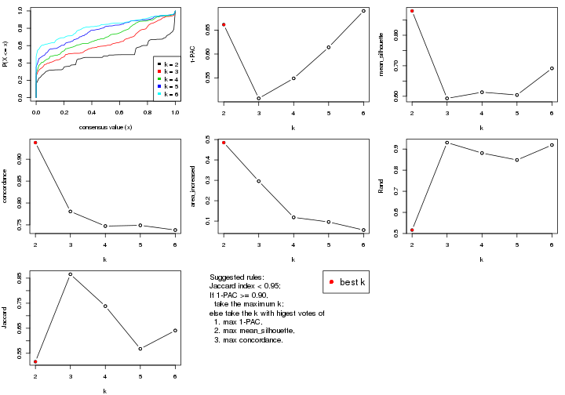
The numeric values for all these statistics can be obtained by get_stats().
get_stats(res)
#> k 1-PAC mean_silhouette concordance area_increased Rand Jaccard
#> 2 2 0.662 0.880 0.938 0.4850 0.516 0.516
#> 3 3 0.507 0.593 0.781 0.2958 0.931 0.866
#> 4 4 0.549 0.613 0.747 0.1182 0.881 0.738
#> 5 5 0.614 0.604 0.749 0.0957 0.848 0.568
#> 6 6 0.690 0.691 0.738 0.0561 0.919 0.641
suggest_best_k() suggests the best \(k\) based on these statistics. The rules are as follows:
NA.suggest_best_k(res)
#> [1] 2
Following shows the table of the partitions (You need to click the show/hide
code output link to see it). The membership matrix (columns with name p*)
is inferred by
clue::cl_consensus()
function with the SE method. Basically the value in the membership matrix
represents the probability to belong to a certain group. The finall class
label for an item is determined with the group with highest probability it
belongs to.
In get_classes() function, the entropy is calculated from the membership
matrix and the silhouette score is calculated from the consensus matrix.
cbind(get_classes(res, k = 2), get_membership(res, k = 2))
#> class entropy silhouette p1 p2
#> GSM1060118 1 0.0000 0.9105 1.000 0.000
#> GSM1060120 2 0.1184 0.9566 0.016 0.984
#> GSM1060122 1 0.7219 0.7959 0.800 0.200
#> GSM1060124 1 0.7139 0.7996 0.804 0.196
#> GSM1060126 1 0.7139 0.7996 0.804 0.196
#> GSM1060128 1 0.0000 0.9105 1.000 0.000
#> GSM1060130 1 0.0000 0.9105 1.000 0.000
#> GSM1060132 1 0.0000 0.9105 1.000 0.000
#> GSM1060134 1 0.6887 0.8091 0.816 0.184
#> GSM1060136 1 0.0672 0.9085 0.992 0.008
#> GSM1060138 2 0.9983 -0.0145 0.476 0.524
#> GSM1060140 1 0.0000 0.9105 1.000 0.000
#> GSM1060142 1 0.0000 0.9105 1.000 0.000
#> GSM1060144 1 0.0000 0.9105 1.000 0.000
#> GSM1060146 1 0.0000 0.9105 1.000 0.000
#> GSM1060148 1 0.0000 0.9105 1.000 0.000
#> GSM1060150 1 0.0000 0.9105 1.000 0.000
#> GSM1060152 1 0.0000 0.9105 1.000 0.000
#> GSM1060154 1 0.3431 0.8847 0.936 0.064
#> GSM1060156 1 0.0000 0.9105 1.000 0.000
#> GSM1060158 1 0.8608 0.7010 0.716 0.284
#> GSM1060160 1 0.0376 0.9097 0.996 0.004
#> GSM1060162 2 0.0000 0.9643 0.000 1.000
#> GSM1060164 1 0.0000 0.9105 1.000 0.000
#> GSM1060166 1 0.0000 0.9105 1.000 0.000
#> GSM1060168 1 0.8608 0.7010 0.716 0.284
#> GSM1060170 1 0.0376 0.9097 0.996 0.004
#> GSM1060172 1 0.0000 0.9105 1.000 0.000
#> GSM1060174 2 0.0000 0.9643 0.000 1.000
#> GSM1060176 1 0.8608 0.7010 0.716 0.284
#> GSM1060178 1 0.0000 0.9105 1.000 0.000
#> GSM1060180 1 0.1633 0.9028 0.976 0.024
#> GSM1060117 1 0.0000 0.9105 1.000 0.000
#> GSM1060119 2 0.1184 0.9566 0.016 0.984
#> GSM1060121 2 0.0000 0.9643 0.000 1.000
#> GSM1060123 2 0.0000 0.9643 0.000 1.000
#> GSM1060125 2 0.3584 0.9089 0.068 0.932
#> GSM1060127 2 0.0000 0.9643 0.000 1.000
#> GSM1060129 2 0.0938 0.9588 0.012 0.988
#> GSM1060131 2 0.2236 0.9411 0.036 0.964
#> GSM1060133 2 0.0000 0.9643 0.000 1.000
#> GSM1060135 2 0.0000 0.9643 0.000 1.000
#> GSM1060137 2 0.0000 0.9643 0.000 1.000
#> GSM1060139 1 0.0000 0.9105 1.000 0.000
#> GSM1060141 1 0.0376 0.9090 0.996 0.004
#> GSM1060143 2 0.2423 0.9378 0.040 0.960
#> GSM1060145 2 0.2948 0.9267 0.052 0.948
#> GSM1060147 2 0.2778 0.9306 0.048 0.952
#> GSM1060149 1 0.0000 0.9105 1.000 0.000
#> GSM1060151 1 0.8016 0.7436 0.756 0.244
#> GSM1060153 2 0.0000 0.9643 0.000 1.000
#> GSM1060155 2 0.0000 0.9643 0.000 1.000
#> GSM1060157 1 0.0000 0.9105 1.000 0.000
#> GSM1060159 1 0.4298 0.8724 0.912 0.088
#> GSM1060161 2 0.0000 0.9643 0.000 1.000
#> GSM1060163 2 0.0000 0.9643 0.000 1.000
#> GSM1060165 2 0.0000 0.9643 0.000 1.000
#> GSM1060167 1 0.8608 0.7010 0.716 0.284
#> GSM1060169 2 0.0000 0.9643 0.000 1.000
#> GSM1060171 1 0.8608 0.7010 0.716 0.284
#> GSM1060173 2 0.0000 0.9643 0.000 1.000
#> GSM1060175 2 0.0000 0.9643 0.000 1.000
#> GSM1060177 1 0.8608 0.7010 0.716 0.284
#> GSM1060179 1 0.8608 0.7010 0.716 0.284
cbind(get_classes(res, k = 3), get_membership(res, k = 3))
#> class entropy silhouette p1 p2 p3
#> GSM1060118 1 0.6008 0.9894 0.628 0.000 0.372
#> GSM1060120 2 0.4953 0.8649 0.176 0.808 0.016
#> GSM1060122 3 0.6630 0.5908 0.220 0.056 0.724
#> GSM1060124 3 0.6535 0.5926 0.220 0.052 0.728
#> GSM1060126 3 0.6535 0.5926 0.220 0.052 0.728
#> GSM1060128 3 0.5529 0.0794 0.296 0.000 0.704
#> GSM1060130 3 0.5497 0.0949 0.292 0.000 0.708
#> GSM1060132 3 0.5497 0.0949 0.292 0.000 0.708
#> GSM1060134 3 0.6565 0.5937 0.232 0.048 0.720
#> GSM1060136 3 0.4399 0.5644 0.188 0.000 0.812
#> GSM1060138 2 0.9189 0.0886 0.164 0.500 0.336
#> GSM1060140 3 0.6280 -0.5677 0.460 0.000 0.540
#> GSM1060142 3 0.6280 -0.5677 0.460 0.000 0.540
#> GSM1060144 1 0.5968 0.9896 0.636 0.000 0.364
#> GSM1060146 3 0.5497 0.0949 0.292 0.000 0.708
#> GSM1060148 1 0.5968 0.9896 0.636 0.000 0.364
#> GSM1060150 3 0.0424 0.5955 0.008 0.000 0.992
#> GSM1060152 3 0.4235 0.5586 0.176 0.000 0.824
#> GSM1060154 3 0.4164 0.6176 0.144 0.008 0.848
#> GSM1060156 3 0.4235 0.5586 0.176 0.000 0.824
#> GSM1060158 3 0.5968 0.5483 0.364 0.000 0.636
#> GSM1060160 3 0.0424 0.6028 0.008 0.000 0.992
#> GSM1060162 2 0.4702 0.8602 0.212 0.788 0.000
#> GSM1060164 3 0.0424 0.5994 0.008 0.000 0.992
#> GSM1060166 3 0.2796 0.5171 0.092 0.000 0.908
#> GSM1060168 3 0.5968 0.5483 0.364 0.000 0.636
#> GSM1060170 3 0.0592 0.6011 0.012 0.000 0.988
#> GSM1060172 3 0.0424 0.5955 0.008 0.000 0.992
#> GSM1060174 2 0.4702 0.8602 0.212 0.788 0.000
#> GSM1060176 3 0.5968 0.5483 0.364 0.000 0.636
#> GSM1060178 3 0.5529 0.0794 0.296 0.000 0.704
#> GSM1060180 3 0.1289 0.6096 0.032 0.000 0.968
#> GSM1060117 1 0.6008 0.9894 0.628 0.000 0.372
#> GSM1060119 2 0.4953 0.8649 0.176 0.808 0.016
#> GSM1060121 2 0.0000 0.8727 0.000 1.000 0.000
#> GSM1060123 2 0.0000 0.8727 0.000 1.000 0.000
#> GSM1060125 2 0.3120 0.8418 0.080 0.908 0.012
#> GSM1060127 2 0.2796 0.8850 0.092 0.908 0.000
#> GSM1060129 2 0.4805 0.8667 0.176 0.812 0.012
#> GSM1060131 2 0.5842 0.8400 0.196 0.768 0.036
#> GSM1060133 2 0.0000 0.8727 0.000 1.000 0.000
#> GSM1060135 2 0.2796 0.8850 0.092 0.908 0.000
#> GSM1060137 2 0.0000 0.8727 0.000 1.000 0.000
#> GSM1060139 3 0.6280 -0.5677 0.460 0.000 0.540
#> GSM1060141 3 0.6495 -0.5711 0.460 0.004 0.536
#> GSM1060143 2 0.2165 0.8570 0.064 0.936 0.000
#> GSM1060145 2 0.2590 0.8512 0.072 0.924 0.004
#> GSM1060147 2 0.2356 0.8530 0.072 0.928 0.000
#> GSM1060149 3 0.0424 0.5955 0.008 0.000 0.992
#> GSM1060151 3 0.8079 0.5259 0.260 0.112 0.628
#> GSM1060153 2 0.0000 0.8727 0.000 1.000 0.000
#> GSM1060155 2 0.0000 0.8727 0.000 1.000 0.000
#> GSM1060157 3 0.0424 0.5994 0.008 0.000 0.992
#> GSM1060159 3 0.3340 0.6189 0.120 0.000 0.880
#> GSM1060161 2 0.4702 0.8602 0.212 0.788 0.000
#> GSM1060163 2 0.4702 0.8602 0.212 0.788 0.000
#> GSM1060165 2 0.4702 0.8602 0.212 0.788 0.000
#> GSM1060167 3 0.5968 0.5483 0.364 0.000 0.636
#> GSM1060169 2 0.2356 0.8841 0.072 0.928 0.000
#> GSM1060171 3 0.5968 0.5483 0.364 0.000 0.636
#> GSM1060173 2 0.4702 0.8602 0.212 0.788 0.000
#> GSM1060175 2 0.2356 0.8841 0.072 0.928 0.000
#> GSM1060177 3 0.5968 0.5483 0.364 0.000 0.636
#> GSM1060179 3 0.5968 0.5483 0.364 0.000 0.636
cbind(get_classes(res, k = 4), get_membership(res, k = 4))
#> class entropy silhouette p1 p2 p3 p4
#> GSM1060118 1 0.1022 0.7781 0.968 0.000 0.032 0.000
#> GSM1060120 2 0.2335 0.7471 0.000 0.920 0.020 0.060
#> GSM1060122 3 0.5633 0.6009 0.004 0.096 0.728 0.172
#> GSM1060124 3 0.5574 0.6026 0.004 0.092 0.732 0.172
#> GSM1060126 3 0.5574 0.6026 0.004 0.092 0.732 0.172
#> GSM1060128 3 0.4991 0.2018 0.388 0.000 0.608 0.004
#> GSM1060130 3 0.4978 0.2134 0.384 0.000 0.612 0.004
#> GSM1060132 3 0.4978 0.2134 0.384 0.000 0.612 0.004
#> GSM1060134 3 0.6344 0.5963 0.032 0.092 0.704 0.172
#> GSM1060136 3 0.5445 0.5654 0.160 0.004 0.744 0.092
#> GSM1060138 4 0.8297 0.0452 0.164 0.072 0.220 0.544
#> GSM1060140 1 0.5179 0.7640 0.728 0.000 0.220 0.052
#> GSM1060142 1 0.5179 0.7640 0.728 0.000 0.220 0.052
#> GSM1060144 1 0.0336 0.7683 0.992 0.000 0.000 0.008
#> GSM1060146 3 0.4978 0.2134 0.384 0.000 0.612 0.004
#> GSM1060148 1 0.0336 0.7683 0.992 0.000 0.000 0.008
#> GSM1060150 3 0.2909 0.6291 0.092 0.000 0.888 0.020
#> GSM1060152 3 0.5186 0.5629 0.164 0.000 0.752 0.084
#> GSM1060154 3 0.5305 0.6300 0.056 0.040 0.784 0.120
#> GSM1060156 3 0.5186 0.5629 0.164 0.000 0.752 0.084
#> GSM1060158 3 0.6975 0.5221 0.000 0.148 0.560 0.292
#> GSM1060160 3 0.3013 0.6365 0.080 0.000 0.888 0.032
#> GSM1060162 2 0.1716 0.7647 0.000 0.936 0.000 0.064
#> GSM1060164 3 0.2775 0.6323 0.084 0.000 0.896 0.020
#> GSM1060166 3 0.3583 0.5547 0.180 0.000 0.816 0.004
#> GSM1060168 3 0.6975 0.5221 0.000 0.148 0.560 0.292
#> GSM1060170 3 0.3266 0.6341 0.084 0.000 0.876 0.040
#> GSM1060172 3 0.2909 0.6291 0.092 0.000 0.888 0.020
#> GSM1060174 2 0.1716 0.7647 0.000 0.936 0.000 0.064
#> GSM1060176 3 0.6975 0.5221 0.000 0.148 0.560 0.292
#> GSM1060178 3 0.4991 0.2018 0.388 0.000 0.608 0.004
#> GSM1060180 3 0.4188 0.6371 0.064 0.000 0.824 0.112
#> GSM1060117 1 0.1022 0.7781 0.968 0.000 0.032 0.000
#> GSM1060119 2 0.2335 0.7471 0.000 0.920 0.020 0.060
#> GSM1060121 2 0.3837 0.6235 0.000 0.776 0.000 0.224
#> GSM1060123 2 0.3837 0.6235 0.000 0.776 0.000 0.224
#> GSM1060125 4 0.5022 0.7603 0.012 0.300 0.004 0.684
#> GSM1060127 2 0.2334 0.7614 0.000 0.908 0.004 0.088
#> GSM1060129 2 0.2222 0.7501 0.000 0.924 0.016 0.060
#> GSM1060131 2 0.3229 0.7030 0.000 0.880 0.048 0.072
#> GSM1060133 2 0.3837 0.6235 0.000 0.776 0.000 0.224
#> GSM1060135 2 0.2334 0.7614 0.000 0.908 0.004 0.088
#> GSM1060137 2 0.4585 0.4194 0.000 0.668 0.000 0.332
#> GSM1060139 1 0.5179 0.7640 0.728 0.000 0.220 0.052
#> GSM1060141 1 0.5254 0.7634 0.724 0.000 0.220 0.056
#> GSM1060143 4 0.4699 0.7478 0.004 0.320 0.000 0.676
#> GSM1060145 4 0.4769 0.7642 0.008 0.308 0.000 0.684
#> GSM1060147 4 0.4792 0.7615 0.008 0.312 0.000 0.680
#> GSM1060149 3 0.2909 0.6291 0.092 0.000 0.888 0.020
#> GSM1060151 3 0.7610 0.5148 0.068 0.092 0.596 0.244
#> GSM1060153 2 0.4585 0.4194 0.000 0.668 0.000 0.332
#> GSM1060155 2 0.4193 0.5586 0.000 0.732 0.000 0.268
#> GSM1060157 3 0.2775 0.6323 0.084 0.000 0.896 0.020
#> GSM1060159 3 0.4700 0.6376 0.032 0.052 0.820 0.096
#> GSM1060161 2 0.1716 0.7647 0.000 0.936 0.000 0.064
#> GSM1060163 2 0.1716 0.7647 0.000 0.936 0.000 0.064
#> GSM1060165 2 0.1716 0.7647 0.000 0.936 0.000 0.064
#> GSM1060167 3 0.6975 0.5221 0.000 0.148 0.560 0.292
#> GSM1060169 2 0.1940 0.7559 0.000 0.924 0.000 0.076
#> GSM1060171 3 0.6956 0.5222 0.000 0.148 0.564 0.288
#> GSM1060173 2 0.1716 0.7647 0.000 0.936 0.000 0.064
#> GSM1060175 2 0.1940 0.7559 0.000 0.924 0.000 0.076
#> GSM1060177 3 0.6975 0.5221 0.000 0.148 0.560 0.292
#> GSM1060179 3 0.6975 0.5221 0.000 0.148 0.560 0.292
cbind(get_classes(res, k = 5), get_membership(res, k = 5))
#> class entropy silhouette p1 p2 p3 p4 p5
#> GSM1060118 1 0.233 0.7446 0.876 0.000 0.124 0.000 0.000
#> GSM1060120 2 0.346 0.7676 0.000 0.828 0.000 0.044 0.128
#> GSM1060122 5 0.442 0.6076 0.000 0.020 0.156 0.048 0.776
#> GSM1060124 5 0.436 0.6062 0.000 0.016 0.160 0.048 0.776
#> GSM1060126 5 0.436 0.6062 0.000 0.016 0.160 0.048 0.776
#> GSM1060128 3 0.321 0.5727 0.212 0.000 0.788 0.000 0.000
#> GSM1060130 3 0.314 0.5837 0.204 0.000 0.796 0.000 0.000
#> GSM1060132 3 0.314 0.5837 0.204 0.000 0.796 0.000 0.000
#> GSM1060134 5 0.503 0.5944 0.024 0.016 0.168 0.044 0.748
#> GSM1060136 5 0.615 0.2288 0.080 0.000 0.388 0.020 0.512
#> GSM1060138 4 0.793 0.0451 0.168 0.000 0.232 0.456 0.144
#> GSM1060140 1 0.520 0.7748 0.724 0.000 0.116 0.020 0.140
#> GSM1060142 1 0.520 0.7748 0.724 0.000 0.116 0.020 0.140
#> GSM1060144 1 0.127 0.7502 0.948 0.000 0.052 0.000 0.000
#> GSM1060146 3 0.314 0.5837 0.204 0.000 0.796 0.000 0.000
#> GSM1060148 1 0.127 0.7502 0.948 0.000 0.052 0.000 0.000
#> GSM1060150 3 0.364 0.7120 0.004 0.000 0.748 0.000 0.248
#> GSM1060152 5 0.601 0.1883 0.080 0.000 0.408 0.012 0.500
#> GSM1060154 5 0.485 0.4359 0.016 0.000 0.304 0.020 0.660
#> GSM1060156 5 0.601 0.1883 0.080 0.000 0.408 0.012 0.500
#> GSM1060158 5 0.316 0.6377 0.000 0.088 0.056 0.000 0.856
#> GSM1060160 3 0.373 0.6809 0.000 0.000 0.712 0.000 0.288
#> GSM1060162 2 0.223 0.7886 0.000 0.884 0.000 0.000 0.116
#> GSM1060164 3 0.353 0.7078 0.000 0.000 0.744 0.000 0.256
#> GSM1060166 3 0.448 0.6899 0.072 0.000 0.744 0.000 0.184
#> GSM1060168 5 0.316 0.6377 0.000 0.088 0.056 0.000 0.856
#> GSM1060170 3 0.384 0.6608 0.000 0.000 0.692 0.000 0.308
#> GSM1060172 3 0.364 0.7120 0.004 0.000 0.748 0.000 0.248
#> GSM1060174 2 0.223 0.7886 0.000 0.884 0.000 0.000 0.116
#> GSM1060176 5 0.316 0.6377 0.000 0.088 0.056 0.000 0.856
#> GSM1060178 3 0.318 0.5780 0.208 0.000 0.792 0.000 0.000
#> GSM1060180 3 0.425 0.4533 0.000 0.000 0.568 0.000 0.432
#> GSM1060117 1 0.228 0.7465 0.880 0.000 0.120 0.000 0.000
#> GSM1060119 2 0.346 0.7676 0.000 0.828 0.000 0.044 0.128
#> GSM1060121 2 0.431 -0.0962 0.000 0.508 0.000 0.492 0.000
#> GSM1060123 2 0.431 -0.0962 0.000 0.508 0.000 0.492 0.000
#> GSM1060125 4 0.388 0.7221 0.020 0.020 0.132 0.820 0.008
#> GSM1060127 2 0.180 0.7648 0.000 0.932 0.000 0.048 0.020
#> GSM1060129 2 0.341 0.7692 0.000 0.832 0.000 0.044 0.124
#> GSM1060131 2 0.388 0.7371 0.000 0.788 0.000 0.044 0.168
#> GSM1060133 2 0.431 -0.0962 0.000 0.508 0.000 0.492 0.000
#> GSM1060135 2 0.194 0.7631 0.000 0.924 0.000 0.056 0.020
#> GSM1060137 4 0.345 0.5495 0.000 0.244 0.000 0.756 0.000
#> GSM1060139 1 0.520 0.7748 0.724 0.000 0.116 0.020 0.140
#> GSM1060141 1 0.524 0.7743 0.724 0.000 0.112 0.024 0.140
#> GSM1060143 4 0.297 0.7295 0.000 0.020 0.128 0.852 0.000
#> GSM1060145 4 0.345 0.7281 0.008 0.020 0.132 0.836 0.004
#> GSM1060147 4 0.325 0.7286 0.008 0.020 0.128 0.844 0.000
#> GSM1060149 3 0.364 0.7120 0.004 0.000 0.748 0.000 0.248
#> GSM1060151 5 0.637 0.5286 0.060 0.016 0.224 0.060 0.640
#> GSM1060153 4 0.345 0.5495 0.000 0.244 0.000 0.756 0.000
#> GSM1060155 4 0.393 0.3925 0.000 0.328 0.000 0.672 0.000
#> GSM1060157 3 0.353 0.7078 0.000 0.000 0.744 0.000 0.256
#> GSM1060159 3 0.466 0.2450 0.000 0.012 0.500 0.000 0.488
#> GSM1060161 2 0.223 0.7886 0.000 0.884 0.000 0.000 0.116
#> GSM1060163 2 0.223 0.7886 0.000 0.884 0.000 0.000 0.116
#> GSM1060165 2 0.223 0.7886 0.000 0.884 0.000 0.000 0.116
#> GSM1060167 5 0.316 0.6377 0.000 0.088 0.056 0.000 0.856
#> GSM1060169 2 0.104 0.7457 0.000 0.960 0.000 0.040 0.000
#> GSM1060171 5 0.323 0.6345 0.000 0.088 0.060 0.000 0.852
#> GSM1060173 2 0.223 0.7886 0.000 0.884 0.000 0.000 0.116
#> GSM1060175 2 0.104 0.7457 0.000 0.960 0.000 0.040 0.000
#> GSM1060177 5 0.316 0.6377 0.000 0.088 0.056 0.000 0.856
#> GSM1060179 5 0.316 0.6377 0.000 0.088 0.056 0.000 0.856
cbind(get_classes(res, k = 6), get_membership(res, k = 6))
#> class entropy silhouette p1 p2 p3 p4 p5 p6
#> GSM1060118 1 0.2848 0.677 0.816 0.000 0.176 0.000 0.008 0.000
#> GSM1060120 6 0.2945 0.829 0.000 0.020 0.000 0.000 0.156 0.824
#> GSM1060122 5 0.4308 0.587 0.000 0.468 0.012 0.000 0.516 0.004
#> GSM1060124 5 0.4331 0.594 0.000 0.464 0.020 0.000 0.516 0.000
#> GSM1060126 5 0.4331 0.594 0.000 0.464 0.020 0.000 0.516 0.000
#> GSM1060128 3 0.1265 0.683 0.044 0.000 0.948 0.000 0.008 0.000
#> GSM1060130 3 0.1049 0.690 0.032 0.000 0.960 0.000 0.008 0.000
#> GSM1060132 3 0.1049 0.690 0.032 0.000 0.960 0.000 0.008 0.000
#> GSM1060134 5 0.4466 0.608 0.008 0.440 0.016 0.000 0.536 0.000
#> GSM1060136 5 0.6372 0.567 0.012 0.296 0.300 0.000 0.392 0.000
#> GSM1060138 5 0.5051 -0.141 0.140 0.004 0.000 0.208 0.648 0.000
#> GSM1060140 1 0.3528 0.701 0.700 0.000 0.004 0.000 0.296 0.000
#> GSM1060142 1 0.3528 0.701 0.700 0.000 0.004 0.000 0.296 0.000
#> GSM1060144 1 0.1204 0.717 0.944 0.000 0.056 0.000 0.000 0.000
#> GSM1060146 3 0.1049 0.690 0.032 0.000 0.960 0.000 0.008 0.000
#> GSM1060148 1 0.1204 0.717 0.944 0.000 0.056 0.000 0.000 0.000
#> GSM1060150 3 0.3426 0.753 0.000 0.276 0.720 0.000 0.004 0.000
#> GSM1060152 5 0.6398 0.543 0.012 0.292 0.332 0.000 0.364 0.000
#> GSM1060154 5 0.5917 0.582 0.008 0.392 0.160 0.000 0.440 0.000
#> GSM1060156 5 0.6398 0.543 0.012 0.292 0.332 0.000 0.364 0.000
#> GSM1060158 2 0.0146 0.870 0.000 0.996 0.000 0.000 0.000 0.004
#> GSM1060160 3 0.3619 0.717 0.000 0.316 0.680 0.000 0.004 0.000
#> GSM1060162 6 0.2219 0.866 0.000 0.136 0.000 0.000 0.000 0.864
#> GSM1060164 3 0.3468 0.749 0.000 0.284 0.712 0.000 0.004 0.000
#> GSM1060166 3 0.2632 0.746 0.000 0.164 0.832 0.000 0.004 0.000
#> GSM1060168 2 0.0146 0.870 0.000 0.996 0.000 0.000 0.000 0.004
#> GSM1060170 3 0.3699 0.690 0.000 0.336 0.660 0.000 0.004 0.000
#> GSM1060172 3 0.3426 0.753 0.000 0.276 0.720 0.000 0.004 0.000
#> GSM1060174 6 0.2219 0.866 0.000 0.136 0.000 0.000 0.000 0.864
#> GSM1060176 2 0.0146 0.870 0.000 0.996 0.000 0.000 0.000 0.004
#> GSM1060178 3 0.1124 0.687 0.036 0.000 0.956 0.000 0.008 0.000
#> GSM1060180 3 0.3986 0.438 0.000 0.464 0.532 0.000 0.004 0.000
#> GSM1060117 1 0.2778 0.682 0.824 0.000 0.168 0.000 0.008 0.000
#> GSM1060119 6 0.2945 0.829 0.000 0.020 0.000 0.000 0.156 0.824
#> GSM1060121 4 0.3575 0.590 0.000 0.000 0.000 0.708 0.008 0.284
#> GSM1060123 4 0.3575 0.590 0.000 0.000 0.000 0.708 0.008 0.284
#> GSM1060125 4 0.4177 0.601 0.000 0.012 0.000 0.520 0.468 0.000
#> GSM1060127 6 0.1349 0.850 0.000 0.004 0.000 0.000 0.056 0.940
#> GSM1060129 6 0.2859 0.830 0.000 0.016 0.000 0.000 0.156 0.828
#> GSM1060131 6 0.3624 0.800 0.000 0.060 0.000 0.000 0.156 0.784
#> GSM1060133 4 0.3575 0.590 0.000 0.000 0.000 0.708 0.008 0.284
#> GSM1060135 6 0.1606 0.848 0.000 0.004 0.000 0.008 0.056 0.932
#> GSM1060137 4 0.0146 0.675 0.000 0.000 0.000 0.996 0.000 0.004
#> GSM1060139 1 0.3528 0.701 0.700 0.000 0.004 0.000 0.296 0.000
#> GSM1060141 1 0.3409 0.700 0.700 0.000 0.000 0.000 0.300 0.000
#> GSM1060143 4 0.3961 0.614 0.000 0.004 0.000 0.556 0.440 0.000
#> GSM1060145 4 0.4083 0.608 0.000 0.008 0.000 0.532 0.460 0.000
#> GSM1060147 4 0.3971 0.610 0.000 0.004 0.000 0.548 0.448 0.000
#> GSM1060149 3 0.3426 0.753 0.000 0.276 0.720 0.000 0.004 0.000
#> GSM1060151 5 0.4645 0.571 0.040 0.336 0.008 0.000 0.616 0.000
#> GSM1060153 4 0.0146 0.675 0.000 0.000 0.000 0.996 0.000 0.004
#> GSM1060155 4 0.1663 0.671 0.000 0.000 0.000 0.912 0.000 0.088
#> GSM1060157 3 0.3468 0.749 0.000 0.284 0.712 0.000 0.004 0.000
#> GSM1060159 2 0.3986 -0.318 0.000 0.532 0.464 0.000 0.004 0.000
#> GSM1060161 6 0.2219 0.866 0.000 0.136 0.000 0.000 0.000 0.864
#> GSM1060163 6 0.2219 0.866 0.000 0.136 0.000 0.000 0.000 0.864
#> GSM1060165 6 0.2219 0.866 0.000 0.136 0.000 0.000 0.000 0.864
#> GSM1060167 2 0.0146 0.870 0.000 0.996 0.000 0.000 0.000 0.004
#> GSM1060169 6 0.1049 0.827 0.000 0.000 0.000 0.032 0.008 0.960
#> GSM1060171 2 0.0436 0.863 0.000 0.988 0.004 0.000 0.004 0.004
#> GSM1060173 6 0.2219 0.866 0.000 0.136 0.000 0.000 0.000 0.864
#> GSM1060175 6 0.1049 0.827 0.000 0.000 0.000 0.032 0.008 0.960
#> GSM1060177 2 0.0405 0.863 0.000 0.988 0.008 0.000 0.000 0.004
#> GSM1060179 2 0.0146 0.870 0.000 0.996 0.000 0.000 0.000 0.004
Heatmaps for the consensus matrix. It visualizes the probability of two samples to be in a same group.
consensus_heatmap(res, k = 2)
consensus_heatmap(res, k = 3)
consensus_heatmap(res, k = 4)
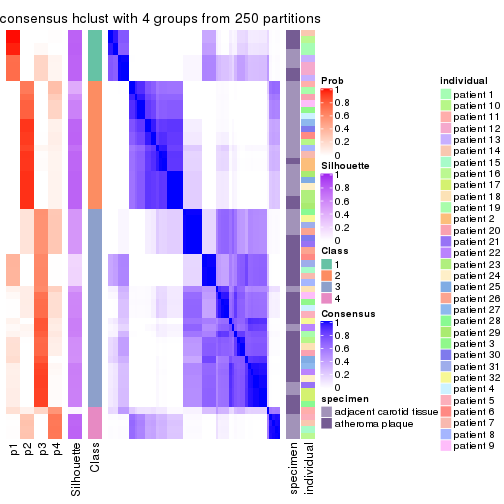
consensus_heatmap(res, k = 5)
consensus_heatmap(res, k = 6)
Heatmaps for the membership of samples in all partitions to see how consistent they are:
membership_heatmap(res, k = 2)
membership_heatmap(res, k = 3)

membership_heatmap(res, k = 4)
membership_heatmap(res, k = 5)
membership_heatmap(res, k = 6)
As soon as we have had the classes for columns, we can look for signatures which are significantly different between classes which can be candidate marks for certain classes. Following are the heatmaps for signatures.
Signature heatmaps where rows are scaled:
get_signatures(res, k = 2)
get_signatures(res, k = 3)
get_signatures(res, k = 4)

get_signatures(res, k = 5)
get_signatures(res, k = 6)
Signature heatmaps where rows are not scaled:
get_signatures(res, k = 2, scale_rows = FALSE)
get_signatures(res, k = 3, scale_rows = FALSE)

get_signatures(res, k = 4, scale_rows = FALSE)
get_signatures(res, k = 5, scale_rows = FALSE)
get_signatures(res, k = 6, scale_rows = FALSE)
Compare the overlap of signatures from different k:
compare_signatures(res)
get_signature() returns a data frame invisibly. TO get the list of signatures, the function
call should be assigned to a variable explicitly. In following code, if plot argument is set
to FALSE, no heatmap is plotted while only the differential analysis is performed.
# code only for demonstration
tb = get_signature(res, k = ..., plot = FALSE)
An example of the output of tb is:
#> which_row fdr mean_1 mean_2 scaled_mean_1 scaled_mean_2 km
#> 1 38 0.042760348 8.373488 9.131774 -0.5533452 0.5164555 1
#> 2 40 0.018707592 7.106213 8.469186 -0.6173731 0.5762149 1
#> 3 55 0.019134737 10.221463 11.207825 -0.6159697 0.5749050 1
#> 4 59 0.006059896 5.921854 7.869574 -0.6899429 0.6439467 1
#> 5 60 0.018055526 8.928898 10.211722 -0.6204761 0.5791110 1
#> 6 98 0.009384629 15.714769 14.887706 0.6635654 -0.6193277 2
...
The columns in tb are:
which_row: row indices corresponding to the input matrix.fdr: FDR for the differential test. mean_x: The mean value in group x.scaled_mean_x: The mean value in group x after rows are scaled.km: Row groups if k-means clustering is applied to rows.UMAP plot which shows how samples are separated.
dimension_reduction(res, k = 2, method = "UMAP")
dimension_reduction(res, k = 3, method = "UMAP")
dimension_reduction(res, k = 4, method = "UMAP")
dimension_reduction(res, k = 5, method = "UMAP")
dimension_reduction(res, k = 6, method = "UMAP")
Following heatmap shows how subgroups are split when increasing k:
collect_classes(res)
Test correlation between subgroups and known annotations. If the known annotation is numeric, one-way ANOVA test is applied, and if the known annotation is discrete, chi-squared contingency table test is applied.
test_to_known_factors(res)
#> n specimen(p) individual(p) k
#> MAD:hclust 63 1.62e-05 0.6743 2
#> MAD:hclust 54 1.30e-04 0.1639 3
#> MAD:hclust 56 1.06e-03 0.0377 4
#> MAD:hclust 53 1.46e-03 0.0745 5
#> MAD:hclust 61 6.02e-05 0.0370 6
If matrix rows can be associated to genes, consider to use GO_Enrichment(res,
...) to perform function enrichment for the signature genes.
The object with results only for a single top-value method and a single partition method can be extracted as:
res = res_list["MAD", "kmeans"]
# you can also extract it by
# res = res_list["MAD:kmeans"]
A summary of res and all the functions that can be applied to it:
res
#> A 'ConsensusPartition' object with k = 2, 3, 4, 5, 6.
#> On a matrix with 31633 rows and 64 columns.
#> Top rows (1000, 2000, 3000, 4000, 5000) are extracted by 'MAD' method.
#> Subgroups are detected by 'kmeans' method.
#> Performed in total 1250 partitions by row resampling.
#> Best k for subgroups seems to be 2.
#>
#> Following methods can be applied to this 'ConsensusPartition' object:
#> [1] "cola_report" "collect_classes" "collect_plots"
#> [4] "collect_stats" "colnames" "compare_signatures"
#> [7] "consensus_heatmap" "dimension_reduction" "functional_enrichment"
#> [10] "get_anno_col" "get_anno" "get_classes"
#> [13] "get_consensus" "get_matrix" "get_membership"
#> [16] "get_param" "get_signatures" "get_stats"
#> [19] "is_best_k" "is_stable_k" "membership_heatmap"
#> [22] "ncol" "nrow" "plot_ecdf"
#> [25] "rownames" "select_partition_number" "show"
#> [28] "suggest_best_k" "test_to_known_factors"
collect_plots() function collects all the plots made from res for all k (number of partitions)
into one single page to provide an easy and fast comparison between different k.
collect_plots(res)
The plots are:
k and the heatmap of
predicted classes for each k.k.k.k.All the plots in panels can be made by individual functions and they are plotted later in this section.
select_partition_number() produces several plots showing different
statistics for choosing “optimized” k. There are following statistics:
k;k, the area increased is defined as \(A_k - A_{k-1}\).The detailed explanations of these statistics can be found in the cola vignette.
Generally speaking, lower PAC score, higher mean silhouette score or higher
concordance corresponds to better partition. Rand index and Jaccard index
measure how similar the current partition is compared to partition with k-1.
If they are too similar, we won't accept k is better than k-1.
select_partition_number(res)
The numeric values for all these statistics can be obtained by get_stats().
get_stats(res)
#> k 1-PAC mean_silhouette concordance area_increased Rand Jaccard
#> 2 2 0.934 0.957 0.977 0.5056 0.493 0.493
#> 3 3 0.468 0.464 0.710 0.3104 0.828 0.674
#> 4 4 0.556 0.467 0.678 0.1286 0.732 0.409
#> 5 5 0.652 0.586 0.711 0.0701 0.919 0.691
#> 6 6 0.730 0.663 0.778 0.0441 0.924 0.648
suggest_best_k() suggests the best \(k\) based on these statistics. The rules are as follows:
NA.suggest_best_k(res)
#> [1] 2
Following shows the table of the partitions (You need to click the show/hide
code output link to see it). The membership matrix (columns with name p*)
is inferred by
clue::cl_consensus()
function with the SE method. Basically the value in the membership matrix
represents the probability to belong to a certain group. The finall class
label for an item is determined with the group with highest probability it
belongs to.
In get_classes() function, the entropy is calculated from the membership
matrix and the silhouette score is calculated from the consensus matrix.
cbind(get_classes(res, k = 2), get_membership(res, k = 2))
#> class entropy silhouette p1 p2
#> GSM1060118 1 0.0000 0.956 1.000 0.000
#> GSM1060120 2 0.0376 0.998 0.004 0.996
#> GSM1060122 2 0.0376 0.998 0.004 0.996
#> GSM1060124 1 0.7950 0.729 0.760 0.240
#> GSM1060126 2 0.0376 0.998 0.004 0.996
#> GSM1060128 1 0.0000 0.956 1.000 0.000
#> GSM1060130 1 0.0000 0.956 1.000 0.000
#> GSM1060132 1 0.0000 0.956 1.000 0.000
#> GSM1060134 1 0.8144 0.711 0.748 0.252
#> GSM1060136 1 0.0000 0.956 1.000 0.000
#> GSM1060138 1 0.6531 0.815 0.832 0.168
#> GSM1060140 1 0.0000 0.956 1.000 0.000
#> GSM1060142 1 0.0000 0.956 1.000 0.000
#> GSM1060144 1 0.0000 0.956 1.000 0.000
#> GSM1060146 1 0.0000 0.956 1.000 0.000
#> GSM1060148 1 0.0000 0.956 1.000 0.000
#> GSM1060150 1 0.0376 0.955 0.996 0.004
#> GSM1060152 1 0.0000 0.956 1.000 0.000
#> GSM1060154 1 0.0000 0.956 1.000 0.000
#> GSM1060156 1 0.0000 0.956 1.000 0.000
#> GSM1060158 2 0.0000 0.997 0.000 1.000
#> GSM1060160 1 0.0376 0.955 0.996 0.004
#> GSM1060162 2 0.0000 0.997 0.000 1.000
#> GSM1060164 1 0.0376 0.955 0.996 0.004
#> GSM1060166 1 0.0376 0.955 0.996 0.004
#> GSM1060168 2 0.0000 0.997 0.000 1.000
#> GSM1060170 1 0.0376 0.955 0.996 0.004
#> GSM1060172 1 0.0376 0.955 0.996 0.004
#> GSM1060174 2 0.0000 0.997 0.000 1.000
#> GSM1060176 2 0.0000 0.997 0.000 1.000
#> GSM1060178 1 0.0376 0.955 0.996 0.004
#> GSM1060180 1 0.0376 0.955 0.996 0.004
#> GSM1060117 1 0.0000 0.956 1.000 0.000
#> GSM1060119 2 0.0376 0.998 0.004 0.996
#> GSM1060121 2 0.0376 0.998 0.004 0.996
#> GSM1060123 2 0.0376 0.998 0.004 0.996
#> GSM1060125 2 0.0376 0.998 0.004 0.996
#> GSM1060127 2 0.0376 0.998 0.004 0.996
#> GSM1060129 2 0.0376 0.998 0.004 0.996
#> GSM1060131 2 0.0376 0.998 0.004 0.996
#> GSM1060133 2 0.0376 0.998 0.004 0.996
#> GSM1060135 2 0.0376 0.998 0.004 0.996
#> GSM1060137 2 0.0376 0.998 0.004 0.996
#> GSM1060139 1 0.0000 0.956 1.000 0.000
#> GSM1060141 1 0.0000 0.956 1.000 0.000
#> GSM1060143 2 0.0376 0.998 0.004 0.996
#> GSM1060145 2 0.0376 0.998 0.004 0.996
#> GSM1060147 2 0.0376 0.998 0.004 0.996
#> GSM1060149 1 0.0376 0.955 0.996 0.004
#> GSM1060151 1 0.8144 0.711 0.748 0.252
#> GSM1060153 2 0.0376 0.998 0.004 0.996
#> GSM1060155 2 0.0376 0.998 0.004 0.996
#> GSM1060157 1 0.0376 0.955 0.996 0.004
#> GSM1060159 1 0.0376 0.955 0.996 0.004
#> GSM1060161 2 0.0000 0.997 0.000 1.000
#> GSM1060163 2 0.0000 0.997 0.000 1.000
#> GSM1060165 2 0.0000 0.997 0.000 1.000
#> GSM1060167 2 0.0000 0.997 0.000 1.000
#> GSM1060169 2 0.0000 0.997 0.000 1.000
#> GSM1060171 1 0.7056 0.793 0.808 0.192
#> GSM1060173 2 0.0000 0.997 0.000 1.000
#> GSM1060175 2 0.0000 0.997 0.000 1.000
#> GSM1060177 1 0.7950 0.734 0.760 0.240
#> GSM1060179 2 0.0000 0.997 0.000 1.000
cbind(get_classes(res, k = 3), get_membership(res, k = 3))
#> class entropy silhouette p1 p2 p3
#> GSM1060118 1 0.3619 0.7283 0.864 0.000 0.136
#> GSM1060120 2 0.5254 0.3881 0.000 0.736 0.264
#> GSM1060122 2 0.6274 0.1733 0.000 0.544 0.456
#> GSM1060124 3 0.9224 0.0648 0.160 0.360 0.480
#> GSM1060126 2 0.6008 0.2735 0.000 0.628 0.372
#> GSM1060128 1 0.0237 0.7688 0.996 0.000 0.004
#> GSM1060130 1 0.0000 0.7690 1.000 0.000 0.000
#> GSM1060132 1 0.0000 0.7690 1.000 0.000 0.000
#> GSM1060134 3 0.8578 0.4504 0.224 0.172 0.604
#> GSM1060136 1 0.3619 0.7279 0.864 0.000 0.136
#> GSM1060138 3 0.6209 0.2378 0.368 0.004 0.628
#> GSM1060140 1 0.6225 0.2471 0.568 0.000 0.432
#> GSM1060142 1 0.3686 0.7265 0.860 0.000 0.140
#> GSM1060144 1 0.3686 0.7265 0.860 0.000 0.140
#> GSM1060146 1 0.0000 0.7690 1.000 0.000 0.000
#> GSM1060148 1 0.3686 0.7265 0.860 0.000 0.140
#> GSM1060150 1 0.4842 0.6943 0.776 0.000 0.224
#> GSM1060152 1 0.0747 0.7677 0.984 0.000 0.016
#> GSM1060154 1 0.5785 0.5422 0.668 0.000 0.332
#> GSM1060156 1 0.0592 0.7683 0.988 0.000 0.012
#> GSM1060158 2 0.6192 0.1683 0.000 0.580 0.420
#> GSM1060160 1 0.4842 0.6943 0.776 0.000 0.224
#> GSM1060162 2 0.0000 0.5202 0.000 1.000 0.000
#> GSM1060164 1 0.4887 0.6906 0.772 0.000 0.228
#> GSM1060166 1 0.4842 0.6943 0.776 0.000 0.224
#> GSM1060168 2 0.6180 0.1742 0.000 0.584 0.416
#> GSM1060170 1 0.4887 0.6906 0.772 0.000 0.228
#> GSM1060172 1 0.4842 0.6943 0.776 0.000 0.224
#> GSM1060174 2 0.0000 0.5202 0.000 1.000 0.000
#> GSM1060176 2 0.6180 0.1742 0.000 0.584 0.416
#> GSM1060178 1 0.0000 0.7690 1.000 0.000 0.000
#> GSM1060180 1 0.6148 0.5107 0.640 0.004 0.356
#> GSM1060117 1 0.3686 0.7265 0.860 0.000 0.140
#> GSM1060119 2 0.5254 0.3881 0.000 0.736 0.264
#> GSM1060121 2 0.5882 0.4196 0.000 0.652 0.348
#> GSM1060123 2 0.5835 0.4253 0.000 0.660 0.340
#> GSM1060125 3 0.5291 0.1989 0.000 0.268 0.732
#> GSM1060127 2 0.4062 0.4952 0.000 0.836 0.164
#> GSM1060129 2 0.6026 0.4113 0.000 0.624 0.376
#> GSM1060131 2 0.5254 0.3881 0.000 0.736 0.264
#> GSM1060133 2 0.5835 0.4253 0.000 0.660 0.340
#> GSM1060135 2 0.5859 0.4230 0.000 0.656 0.344
#> GSM1060137 2 0.6235 0.3192 0.000 0.564 0.436
#> GSM1060139 1 0.3686 0.7265 0.860 0.000 0.140
#> GSM1060141 1 0.6295 0.1207 0.528 0.000 0.472
#> GSM1060143 2 0.6252 0.3097 0.000 0.556 0.444
#> GSM1060145 3 0.5465 0.1264 0.000 0.288 0.712
#> GSM1060147 3 0.5363 0.1514 0.000 0.276 0.724
#> GSM1060149 1 0.4842 0.6943 0.776 0.000 0.224
#> GSM1060151 3 0.8578 0.4504 0.224 0.172 0.604
#> GSM1060153 2 0.6235 0.3192 0.000 0.564 0.436
#> GSM1060155 2 0.6235 0.3192 0.000 0.564 0.436
#> GSM1060157 1 0.4842 0.6943 0.776 0.000 0.224
#> GSM1060159 3 0.9857 0.1835 0.308 0.276 0.416
#> GSM1060161 2 0.0000 0.5202 0.000 1.000 0.000
#> GSM1060163 2 0.0000 0.5202 0.000 1.000 0.000
#> GSM1060165 2 0.0000 0.5202 0.000 1.000 0.000
#> GSM1060167 2 0.6180 0.1742 0.000 0.584 0.416
#> GSM1060169 2 0.4974 0.4630 0.000 0.764 0.236
#> GSM1060171 2 0.9189 -0.1089 0.148 0.436 0.416
#> GSM1060173 2 0.0000 0.5202 0.000 1.000 0.000
#> GSM1060175 2 0.4931 0.4632 0.000 0.768 0.232
#> GSM1060177 2 0.9151 -0.1075 0.144 0.436 0.420
#> GSM1060179 2 0.4702 0.3869 0.000 0.788 0.212
cbind(get_classes(res, k = 4), get_membership(res, k = 4))
#> class entropy silhouette p1 p2 p3 p4
#> GSM1060118 1 0.4543 0.5534 0.676 0.000 0.324 0.000
#> GSM1060120 2 0.4955 0.5265 0.084 0.772 0.000 0.144
#> GSM1060122 2 0.5660 0.5135 0.108 0.768 0.048 0.076
#> GSM1060124 2 0.6461 0.5003 0.116 0.716 0.112 0.056
#> GSM1060126 2 0.5474 0.5123 0.108 0.776 0.036 0.080
#> GSM1060128 1 0.5295 0.4110 0.504 0.008 0.488 0.000
#> GSM1060130 1 0.5290 0.4283 0.516 0.008 0.476 0.000
#> GSM1060132 1 0.5296 0.3982 0.496 0.008 0.496 0.000
#> GSM1060134 1 0.7707 0.0590 0.428 0.408 0.012 0.152
#> GSM1060136 1 0.4957 0.5453 0.668 0.012 0.320 0.000
#> GSM1060138 1 0.6675 0.1751 0.644 0.204 0.008 0.144
#> GSM1060140 1 0.6125 0.2718 0.700 0.196 0.016 0.088
#> GSM1060142 1 0.4431 0.5635 0.696 0.000 0.304 0.000
#> GSM1060144 1 0.4431 0.5635 0.696 0.000 0.304 0.000
#> GSM1060146 1 0.5296 0.4051 0.500 0.008 0.492 0.000
#> GSM1060148 1 0.4431 0.5635 0.696 0.000 0.304 0.000
#> GSM1060150 3 0.0000 0.7860 0.000 0.000 1.000 0.000
#> GSM1060152 1 0.5257 0.4654 0.548 0.008 0.444 0.000
#> GSM1060154 1 0.7269 0.4098 0.536 0.200 0.264 0.000
#> GSM1060156 1 0.5257 0.4654 0.548 0.008 0.444 0.000
#> GSM1060158 2 0.3873 0.5281 0.000 0.772 0.228 0.000
#> GSM1060160 3 0.0000 0.7860 0.000 0.000 1.000 0.000
#> GSM1060162 2 0.4933 0.2973 0.000 0.568 0.000 0.432
#> GSM1060164 3 0.0707 0.7807 0.000 0.020 0.980 0.000
#> GSM1060166 3 0.0000 0.7860 0.000 0.000 1.000 0.000
#> GSM1060168 2 0.3764 0.5442 0.000 0.784 0.216 0.000
#> GSM1060170 3 0.0817 0.7788 0.000 0.024 0.976 0.000
#> GSM1060172 3 0.0000 0.7860 0.000 0.000 1.000 0.000
#> GSM1060174 2 0.4933 0.2973 0.000 0.568 0.000 0.432
#> GSM1060176 2 0.3266 0.5870 0.000 0.832 0.168 0.000
#> GSM1060178 3 0.4428 0.1943 0.276 0.004 0.720 0.000
#> GSM1060180 3 0.3105 0.6764 0.004 0.140 0.856 0.000
#> GSM1060117 1 0.4431 0.5635 0.696 0.000 0.304 0.000
#> GSM1060119 2 0.4955 0.5265 0.084 0.772 0.000 0.144
#> GSM1060121 4 0.2216 0.6571 0.000 0.092 0.000 0.908
#> GSM1060123 4 0.2281 0.6563 0.000 0.096 0.000 0.904
#> GSM1060125 1 0.8068 -0.2059 0.416 0.264 0.008 0.312
#> GSM1060127 4 0.4482 0.4045 0.008 0.264 0.000 0.728
#> GSM1060129 4 0.6186 0.3020 0.064 0.352 0.000 0.584
#> GSM1060131 2 0.4700 0.5239 0.084 0.792 0.000 0.124
#> GSM1060133 4 0.2281 0.6563 0.000 0.096 0.000 0.904
#> GSM1060135 4 0.2401 0.6558 0.004 0.092 0.000 0.904
#> GSM1060137 4 0.3653 0.6240 0.128 0.028 0.000 0.844
#> GSM1060139 1 0.4431 0.5635 0.696 0.000 0.304 0.000
#> GSM1060141 1 0.6071 0.2660 0.700 0.196 0.012 0.092
#> GSM1060143 4 0.6429 0.4945 0.212 0.144 0.000 0.644
#> GSM1060145 4 0.7581 0.2816 0.380 0.196 0.000 0.424
#> GSM1060147 4 0.7581 0.2816 0.380 0.196 0.000 0.424
#> GSM1060149 3 0.0000 0.7860 0.000 0.000 1.000 0.000
#> GSM1060151 1 0.7645 0.0652 0.436 0.408 0.012 0.144
#> GSM1060153 4 0.3653 0.6240 0.128 0.028 0.000 0.844
#> GSM1060155 4 0.2124 0.6511 0.068 0.008 0.000 0.924
#> GSM1060157 3 0.0000 0.7860 0.000 0.000 1.000 0.000
#> GSM1060159 3 0.5088 0.1491 0.004 0.424 0.572 0.000
#> GSM1060161 2 0.4933 0.2973 0.000 0.568 0.000 0.432
#> GSM1060163 2 0.4933 0.2973 0.000 0.568 0.000 0.432
#> GSM1060165 2 0.4933 0.2973 0.000 0.568 0.000 0.432
#> GSM1060167 2 0.3610 0.5620 0.000 0.800 0.200 0.000
#> GSM1060169 4 0.3528 0.5782 0.000 0.192 0.000 0.808
#> GSM1060171 3 0.5000 -0.0686 0.000 0.496 0.504 0.000
#> GSM1060173 2 0.4933 0.2973 0.000 0.568 0.000 0.432
#> GSM1060175 4 0.3569 0.5750 0.000 0.196 0.000 0.804
#> GSM1060177 2 0.5167 -0.0294 0.004 0.508 0.488 0.000
#> GSM1060179 2 0.3333 0.5959 0.000 0.872 0.088 0.040
cbind(get_classes(res, k = 5), get_membership(res, k = 5))
#> class entropy silhouette p1 p2 p3 p4 p5
#> GSM1060118 1 0.120 0.8707 0.960 0.004 0.000 0.004 0.032
#> GSM1060120 2 0.671 0.3635 0.000 0.568 0.080 0.080 0.272
#> GSM1060122 2 0.672 0.2037 0.000 0.468 0.100 0.040 0.392
#> GSM1060124 2 0.710 0.1636 0.016 0.444 0.116 0.028 0.396
#> GSM1060126 2 0.672 0.2037 0.000 0.468 0.100 0.040 0.392
#> GSM1060128 1 0.223 0.8570 0.892 0.000 0.104 0.000 0.004
#> GSM1060130 1 0.218 0.8596 0.896 0.000 0.100 0.000 0.004
#> GSM1060132 1 0.249 0.8401 0.872 0.000 0.124 0.000 0.004
#> GSM1060134 5 0.652 0.2576 0.036 0.264 0.064 0.028 0.608
#> GSM1060136 1 0.357 0.7719 0.820 0.004 0.032 0.000 0.144
#> GSM1060138 5 0.381 0.6133 0.160 0.004 0.000 0.036 0.800
#> GSM1060140 5 0.443 0.4411 0.348 0.008 0.000 0.004 0.640
#> GSM1060142 1 0.137 0.8703 0.952 0.004 0.000 0.004 0.040
#> GSM1060144 1 0.129 0.8704 0.956 0.004 0.000 0.004 0.036
#> GSM1060146 1 0.234 0.8516 0.884 0.000 0.112 0.000 0.004
#> GSM1060148 1 0.137 0.8703 0.952 0.004 0.000 0.004 0.040
#> GSM1060150 3 0.252 0.8308 0.140 0.000 0.860 0.000 0.000
#> GSM1060152 1 0.201 0.8672 0.908 0.000 0.088 0.000 0.004
#> GSM1060154 1 0.625 0.4078 0.604 0.080 0.048 0.000 0.268
#> GSM1060156 1 0.201 0.8672 0.908 0.000 0.088 0.000 0.004
#> GSM1060158 2 0.297 0.5739 0.000 0.836 0.156 0.000 0.008
#> GSM1060160 3 0.252 0.8308 0.140 0.000 0.860 0.000 0.000
#> GSM1060162 2 0.382 0.4589 0.000 0.696 0.000 0.304 0.000
#> GSM1060164 3 0.213 0.8283 0.108 0.000 0.892 0.000 0.000
#> GSM1060166 3 0.252 0.8308 0.140 0.000 0.860 0.000 0.000
#> GSM1060168 2 0.293 0.5755 0.000 0.840 0.152 0.000 0.008
#> GSM1060170 3 0.207 0.8272 0.104 0.000 0.896 0.000 0.000
#> GSM1060172 3 0.252 0.8308 0.140 0.000 0.860 0.000 0.000
#> GSM1060174 2 0.382 0.4589 0.000 0.696 0.000 0.304 0.000
#> GSM1060176 2 0.325 0.5795 0.000 0.844 0.128 0.020 0.008
#> GSM1060178 3 0.445 0.1270 0.480 0.000 0.516 0.000 0.004
#> GSM1060180 3 0.273 0.7966 0.068 0.040 0.888 0.000 0.004
#> GSM1060117 1 0.137 0.8703 0.952 0.004 0.000 0.004 0.040
#> GSM1060119 2 0.671 0.3635 0.000 0.568 0.080 0.080 0.272
#> GSM1060121 4 0.128 0.6886 0.000 0.004 0.000 0.952 0.044
#> GSM1060123 4 0.133 0.6905 0.000 0.008 0.000 0.952 0.040
#> GSM1060125 5 0.399 0.5902 0.028 0.032 0.000 0.128 0.812
#> GSM1060127 4 0.546 0.4378 0.000 0.172 0.020 0.696 0.112
#> GSM1060129 4 0.787 -0.0515 0.000 0.320 0.068 0.348 0.264
#> GSM1060131 2 0.666 0.3578 0.000 0.568 0.092 0.064 0.276
#> GSM1060133 4 0.133 0.6905 0.000 0.008 0.000 0.952 0.040
#> GSM1060135 4 0.305 0.6613 0.000 0.032 0.008 0.868 0.092
#> GSM1060137 4 0.410 0.4103 0.000 0.000 0.004 0.664 0.332
#> GSM1060139 1 0.137 0.8703 0.952 0.004 0.000 0.004 0.040
#> GSM1060141 5 0.409 0.5544 0.276 0.008 0.000 0.004 0.712
#> GSM1060143 5 0.447 0.1818 0.000 0.004 0.004 0.396 0.596
#> GSM1060145 5 0.443 0.5268 0.024 0.008 0.004 0.228 0.736
#> GSM1060147 5 0.451 0.5312 0.024 0.012 0.004 0.224 0.736
#> GSM1060149 3 0.252 0.8308 0.140 0.000 0.860 0.000 0.000
#> GSM1060151 5 0.592 0.3164 0.044 0.264 0.052 0.004 0.636
#> GSM1060153 4 0.410 0.4103 0.000 0.000 0.004 0.664 0.332
#> GSM1060155 4 0.352 0.5415 0.000 0.000 0.004 0.764 0.232
#> GSM1060157 3 0.252 0.8308 0.140 0.000 0.860 0.000 0.000
#> GSM1060159 3 0.301 0.6710 0.000 0.172 0.824 0.000 0.004
#> GSM1060161 2 0.382 0.4589 0.000 0.696 0.000 0.304 0.000
#> GSM1060163 2 0.382 0.4589 0.000 0.696 0.000 0.304 0.000
#> GSM1060165 2 0.382 0.4589 0.000 0.696 0.000 0.304 0.000
#> GSM1060167 2 0.304 0.5766 0.000 0.840 0.148 0.004 0.008
#> GSM1060169 4 0.311 0.5704 0.000 0.200 0.000 0.800 0.000
#> GSM1060171 3 0.403 0.4748 0.000 0.316 0.680 0.000 0.004
#> GSM1060173 2 0.382 0.4589 0.000 0.696 0.000 0.304 0.000
#> GSM1060175 4 0.318 0.5610 0.000 0.208 0.000 0.792 0.000
#> GSM1060177 3 0.440 0.3476 0.000 0.384 0.608 0.000 0.008
#> GSM1060179 2 0.320 0.5796 0.000 0.848 0.124 0.020 0.008
cbind(get_classes(res, k = 6), get_membership(res, k = 6))
#> class entropy silhouette p1 p2 p3 p4 p5 p6
#> GSM1060118 1 0.3750 0.7533 0.824 0.068 0.004 0.052 0.052 0.000
#> GSM1060120 5 0.3159 0.7780 0.000 0.152 0.000 0.008 0.820 0.020
#> GSM1060122 5 0.4172 0.8087 0.004 0.144 0.016 0.056 0.776 0.004
#> GSM1060124 5 0.3973 0.8014 0.004 0.144 0.016 0.052 0.784 0.000
#> GSM1060126 5 0.4172 0.8087 0.004 0.144 0.016 0.056 0.776 0.004
#> GSM1060128 1 0.4128 0.7300 0.788 0.028 0.136 0.004 0.036 0.008
#> GSM1060130 1 0.4048 0.7365 0.796 0.028 0.128 0.004 0.036 0.008
#> GSM1060132 1 0.4382 0.7107 0.764 0.028 0.156 0.004 0.040 0.008
#> GSM1060134 5 0.4320 0.6057 0.012 0.032 0.004 0.244 0.708 0.000
#> GSM1060136 1 0.4458 0.6624 0.756 0.004 0.032 0.064 0.144 0.000
#> GSM1060138 4 0.3314 0.7227 0.076 0.004 0.000 0.828 0.092 0.000
#> GSM1060140 4 0.5516 0.5208 0.256 0.052 0.000 0.620 0.072 0.000
#> GSM1060142 1 0.3988 0.7485 0.808 0.056 0.004 0.068 0.064 0.000
#> GSM1060144 1 0.3988 0.7510 0.808 0.064 0.004 0.068 0.056 0.000
#> GSM1060146 1 0.4234 0.7262 0.780 0.028 0.140 0.004 0.040 0.008
#> GSM1060148 1 0.3871 0.7503 0.816 0.056 0.004 0.068 0.056 0.000
#> GSM1060150 3 0.1007 0.8882 0.044 0.000 0.956 0.000 0.000 0.000
#> GSM1060152 1 0.2425 0.7658 0.884 0.000 0.088 0.004 0.024 0.000
#> GSM1060154 1 0.5652 0.3536 0.564 0.008 0.024 0.076 0.328 0.000
#> GSM1060156 1 0.2425 0.7658 0.884 0.000 0.088 0.004 0.024 0.000
#> GSM1060158 2 0.3395 0.5881 0.000 0.808 0.060 0.000 0.132 0.000
#> GSM1060160 3 0.1152 0.8879 0.044 0.000 0.952 0.000 0.004 0.000
#> GSM1060162 2 0.4450 0.5819 0.000 0.632 0.000 0.004 0.036 0.328
#> GSM1060164 3 0.0937 0.8876 0.040 0.000 0.960 0.000 0.000 0.000
#> GSM1060166 3 0.1075 0.8857 0.048 0.000 0.952 0.000 0.000 0.000
#> GSM1060168 2 0.3395 0.5881 0.000 0.808 0.060 0.000 0.132 0.000
#> GSM1060170 3 0.1296 0.8511 0.012 0.032 0.952 0.000 0.004 0.000
#> GSM1060172 3 0.1007 0.8882 0.044 0.000 0.956 0.000 0.000 0.000
#> GSM1060174 2 0.4450 0.5819 0.000 0.632 0.000 0.004 0.036 0.328
#> GSM1060176 2 0.3417 0.5876 0.000 0.812 0.052 0.000 0.132 0.004
#> GSM1060178 3 0.5206 0.4040 0.312 0.028 0.616 0.004 0.032 0.008
#> GSM1060180 3 0.2946 0.7008 0.000 0.176 0.812 0.000 0.012 0.000
#> GSM1060117 1 0.3988 0.7467 0.808 0.056 0.004 0.068 0.064 0.000
#> GSM1060119 5 0.3159 0.7780 0.000 0.152 0.000 0.008 0.820 0.020
#> GSM1060121 6 0.1714 0.7202 0.000 0.000 0.000 0.092 0.000 0.908
#> GSM1060123 6 0.1610 0.7221 0.000 0.000 0.000 0.084 0.000 0.916
#> GSM1060125 4 0.2842 0.7307 0.000 0.000 0.000 0.852 0.104 0.044
#> GSM1060127 6 0.4312 0.4877 0.000 0.052 0.000 0.000 0.272 0.676
#> GSM1060129 5 0.3741 0.6114 0.000 0.032 0.000 0.004 0.756 0.208
#> GSM1060131 5 0.2726 0.7953 0.000 0.136 0.000 0.008 0.848 0.008
#> GSM1060133 6 0.1753 0.7222 0.000 0.000 0.000 0.084 0.004 0.912
#> GSM1060135 6 0.3604 0.6630 0.000 0.008 0.000 0.036 0.168 0.788
#> GSM1060137 6 0.3864 0.3024 0.000 0.000 0.000 0.480 0.000 0.520
#> GSM1060139 1 0.3871 0.7503 0.816 0.056 0.004 0.068 0.056 0.000
#> GSM1060141 4 0.5162 0.6234 0.196 0.052 0.000 0.680 0.072 0.000
#> GSM1060143 4 0.2446 0.6496 0.000 0.000 0.000 0.864 0.012 0.124
#> GSM1060145 4 0.1926 0.7222 0.000 0.000 0.000 0.912 0.020 0.068
#> GSM1060147 4 0.1926 0.7222 0.000 0.000 0.000 0.912 0.020 0.068
#> GSM1060149 3 0.1007 0.8882 0.044 0.000 0.956 0.000 0.000 0.000
#> GSM1060151 5 0.4936 0.4849 0.028 0.032 0.004 0.304 0.632 0.000
#> GSM1060153 6 0.3864 0.3024 0.000 0.000 0.000 0.480 0.000 0.520
#> GSM1060155 6 0.3699 0.5214 0.000 0.000 0.000 0.336 0.004 0.660
#> GSM1060157 3 0.1152 0.8879 0.044 0.000 0.952 0.000 0.004 0.000
#> GSM1060159 3 0.3834 0.5606 0.000 0.268 0.708 0.000 0.024 0.000
#> GSM1060161 2 0.4450 0.5819 0.000 0.632 0.000 0.004 0.036 0.328
#> GSM1060163 2 0.4450 0.5819 0.000 0.632 0.000 0.004 0.036 0.328
#> GSM1060165 2 0.4450 0.5819 0.000 0.632 0.000 0.004 0.036 0.328
#> GSM1060167 2 0.3295 0.5912 0.000 0.816 0.056 0.000 0.128 0.000
#> GSM1060169 6 0.2278 0.6038 0.000 0.128 0.000 0.004 0.000 0.868
#> GSM1060171 2 0.4639 0.0381 0.000 0.512 0.448 0.000 0.040 0.000
#> GSM1060173 2 0.4450 0.5819 0.000 0.632 0.000 0.004 0.036 0.328
#> GSM1060175 6 0.2402 0.5912 0.000 0.140 0.000 0.004 0.000 0.856
#> GSM1060177 2 0.4312 0.4590 0.000 0.676 0.272 0.000 0.052 0.000
#> GSM1060179 2 0.3095 0.5980 0.000 0.840 0.036 0.000 0.116 0.008
Heatmaps for the consensus matrix. It visualizes the probability of two samples to be in a same group.
consensus_heatmap(res, k = 2)
consensus_heatmap(res, k = 3)
consensus_heatmap(res, k = 4)
consensus_heatmap(res, k = 5)
consensus_heatmap(res, k = 6)
Heatmaps for the membership of samples in all partitions to see how consistent they are:
membership_heatmap(res, k = 2)
membership_heatmap(res, k = 3)
membership_heatmap(res, k = 4)
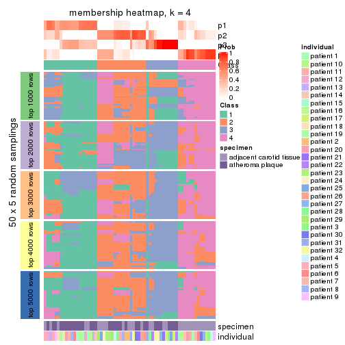
membership_heatmap(res, k = 5)
membership_heatmap(res, k = 6)
As soon as we have had the classes for columns, we can look for signatures which are significantly different between classes which can be candidate marks for certain classes. Following are the heatmaps for signatures.
Signature heatmaps where rows are scaled:
get_signatures(res, k = 2)
get_signatures(res, k = 3)
get_signatures(res, k = 4)

get_signatures(res, k = 5)
get_signatures(res, k = 6)

Signature heatmaps where rows are not scaled:
get_signatures(res, k = 2, scale_rows = FALSE)
get_signatures(res, k = 3, scale_rows = FALSE)
get_signatures(res, k = 4, scale_rows = FALSE)
get_signatures(res, k = 5, scale_rows = FALSE)
get_signatures(res, k = 6, scale_rows = FALSE)
Compare the overlap of signatures from different k:
compare_signatures(res)
get_signature() returns a data frame invisibly. TO get the list of signatures, the function
call should be assigned to a variable explicitly. In following code, if plot argument is set
to FALSE, no heatmap is plotted while only the differential analysis is performed.
# code only for demonstration
tb = get_signature(res, k = ..., plot = FALSE)
An example of the output of tb is:
#> which_row fdr mean_1 mean_2 scaled_mean_1 scaled_mean_2 km
#> 1 38 0.042760348 8.373488 9.131774 -0.5533452 0.5164555 1
#> 2 40 0.018707592 7.106213 8.469186 -0.6173731 0.5762149 1
#> 3 55 0.019134737 10.221463 11.207825 -0.6159697 0.5749050 1
#> 4 59 0.006059896 5.921854 7.869574 -0.6899429 0.6439467 1
#> 5 60 0.018055526 8.928898 10.211722 -0.6204761 0.5791110 1
#> 6 98 0.009384629 15.714769 14.887706 0.6635654 -0.6193277 2
...
The columns in tb are:
which_row: row indices corresponding to the input matrix.fdr: FDR for the differential test. mean_x: The mean value in group x.scaled_mean_x: The mean value in group x after rows are scaled.km: Row groups if k-means clustering is applied to rows.UMAP plot which shows how samples are separated.
dimension_reduction(res, k = 2, method = "UMAP")
dimension_reduction(res, k = 3, method = "UMAP")
dimension_reduction(res, k = 4, method = "UMAP")
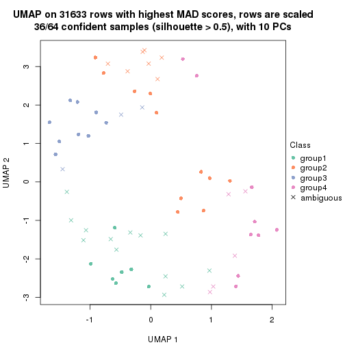
dimension_reduction(res, k = 5, method = "UMAP")
dimension_reduction(res, k = 6, method = "UMAP")
Following heatmap shows how subgroups are split when increasing k:
collect_classes(res)
Test correlation between subgroups and known annotations. If the known annotation is numeric, one-way ANOVA test is applied, and if the known annotation is discrete, chi-squared contingency table test is applied.
test_to_known_factors(res)
#> n specimen(p) individual(p) k
#> MAD:kmeans 64 0.000462 0.519 2
#> MAD:kmeans 30 0.049868 0.418 3
#> MAD:kmeans 36 0.003171 0.213 4
#> MAD:kmeans 40 0.002315 0.304 5
#> MAD:kmeans 56 0.005539 0.174 6
If matrix rows can be associated to genes, consider to use GO_Enrichment(res,
...) to perform function enrichment for the signature genes.
The object with results only for a single top-value method and a single partition method can be extracted as:
res = res_list["MAD", "skmeans"]
# you can also extract it by
# res = res_list["MAD:skmeans"]
A summary of res and all the functions that can be applied to it:
res
#> A 'ConsensusPartition' object with k = 2, 3, 4, 5, 6.
#> On a matrix with 31633 rows and 64 columns.
#> Top rows (1000, 2000, 3000, 4000, 5000) are extracted by 'MAD' method.
#> Subgroups are detected by 'skmeans' method.
#> Performed in total 1250 partitions by row resampling.
#> Best k for subgroups seems to be 2.
#>
#> Following methods can be applied to this 'ConsensusPartition' object:
#> [1] "cola_report" "collect_classes" "collect_plots"
#> [4] "collect_stats" "colnames" "compare_signatures"
#> [7] "consensus_heatmap" "dimension_reduction" "functional_enrichment"
#> [10] "get_anno_col" "get_anno" "get_classes"
#> [13] "get_consensus" "get_matrix" "get_membership"
#> [16] "get_param" "get_signatures" "get_stats"
#> [19] "is_best_k" "is_stable_k" "membership_heatmap"
#> [22] "ncol" "nrow" "plot_ecdf"
#> [25] "rownames" "select_partition_number" "show"
#> [28] "suggest_best_k" "test_to_known_factors"
collect_plots() function collects all the plots made from res for all k (number of partitions)
into one single page to provide an easy and fast comparison between different k.
collect_plots(res)
The plots are:
k and the heatmap of
predicted classes for each k.k.k.k.All the plots in panels can be made by individual functions and they are plotted later in this section.
select_partition_number() produces several plots showing different
statistics for choosing “optimized” k. There are following statistics:
k;k, the area increased is defined as \(A_k - A_{k-1}\).The detailed explanations of these statistics can be found in the cola vignette.
Generally speaking, lower PAC score, higher mean silhouette score or higher
concordance corresponds to better partition. Rand index and Jaccard index
measure how similar the current partition is compared to partition with k-1.
If they are too similar, we won't accept k is better than k-1.
select_partition_number(res)
The numeric values for all these statistics can be obtained by get_stats().
get_stats(res)
#> k 1-PAC mean_silhouette concordance area_increased Rand Jaccard
#> 2 2 1.000 0.999 0.999 0.5080 0.493 0.493
#> 3 3 0.717 0.838 0.887 0.2780 0.805 0.625
#> 4 4 0.758 0.805 0.866 0.1464 0.893 0.704
#> 5 5 0.868 0.852 0.922 0.0784 0.852 0.508
#> 6 6 0.864 0.833 0.907 0.0402 0.911 0.604
suggest_best_k() suggests the best \(k\) based on these statistics. The rules are as follows:
NA.suggest_best_k(res)
#> [1] 2
Following shows the table of the partitions (You need to click the show/hide
code output link to see it). The membership matrix (columns with name p*)
is inferred by
clue::cl_consensus()
function with the SE method. Basically the value in the membership matrix
represents the probability to belong to a certain group. The finall class
label for an item is determined with the group with highest probability it
belongs to.
In get_classes() function, the entropy is calculated from the membership
matrix and the silhouette score is calculated from the consensus matrix.
cbind(get_classes(res, k = 2), get_membership(res, k = 2))
#> class entropy silhouette p1 p2
#> GSM1060118 1 0.00 0.999 1.000 0.000
#> GSM1060120 2 0.00 1.000 0.000 1.000
#> GSM1060122 2 0.00 1.000 0.000 1.000
#> GSM1060124 1 0.00 0.999 1.000 0.000
#> GSM1060126 2 0.00 1.000 0.000 1.000
#> GSM1060128 1 0.00 0.999 1.000 0.000
#> GSM1060130 1 0.00 0.999 1.000 0.000
#> GSM1060132 1 0.00 0.999 1.000 0.000
#> GSM1060134 1 0.00 0.999 1.000 0.000
#> GSM1060136 1 0.00 0.999 1.000 0.000
#> GSM1060138 1 0.00 0.999 1.000 0.000
#> GSM1060140 1 0.00 0.999 1.000 0.000
#> GSM1060142 1 0.00 0.999 1.000 0.000
#> GSM1060144 1 0.00 0.999 1.000 0.000
#> GSM1060146 1 0.00 0.999 1.000 0.000
#> GSM1060148 1 0.00 0.999 1.000 0.000
#> GSM1060150 1 0.00 0.999 1.000 0.000
#> GSM1060152 1 0.00 0.999 1.000 0.000
#> GSM1060154 1 0.00 0.999 1.000 0.000
#> GSM1060156 1 0.00 0.999 1.000 0.000
#> GSM1060158 2 0.00 1.000 0.000 1.000
#> GSM1060160 1 0.00 0.999 1.000 0.000
#> GSM1060162 2 0.00 1.000 0.000 1.000
#> GSM1060164 1 0.00 0.999 1.000 0.000
#> GSM1060166 1 0.00 0.999 1.000 0.000
#> GSM1060168 2 0.00 1.000 0.000 1.000
#> GSM1060170 1 0.00 0.999 1.000 0.000
#> GSM1060172 1 0.00 0.999 1.000 0.000
#> GSM1060174 2 0.00 1.000 0.000 1.000
#> GSM1060176 2 0.00 1.000 0.000 1.000
#> GSM1060178 1 0.00 0.999 1.000 0.000
#> GSM1060180 1 0.00 0.999 1.000 0.000
#> GSM1060117 1 0.00 0.999 1.000 0.000
#> GSM1060119 2 0.00 1.000 0.000 1.000
#> GSM1060121 2 0.00 1.000 0.000 1.000
#> GSM1060123 2 0.00 1.000 0.000 1.000
#> GSM1060125 2 0.00 1.000 0.000 1.000
#> GSM1060127 2 0.00 1.000 0.000 1.000
#> GSM1060129 2 0.00 1.000 0.000 1.000
#> GSM1060131 2 0.00 1.000 0.000 1.000
#> GSM1060133 2 0.00 1.000 0.000 1.000
#> GSM1060135 2 0.00 1.000 0.000 1.000
#> GSM1060137 2 0.00 1.000 0.000 1.000
#> GSM1060139 1 0.00 0.999 1.000 0.000
#> GSM1060141 1 0.00 0.999 1.000 0.000
#> GSM1060143 2 0.00 1.000 0.000 1.000
#> GSM1060145 2 0.00 1.000 0.000 1.000
#> GSM1060147 2 0.00 1.000 0.000 1.000
#> GSM1060149 1 0.00 0.999 1.000 0.000
#> GSM1060151 1 0.00 0.999 1.000 0.000
#> GSM1060153 2 0.00 1.000 0.000 1.000
#> GSM1060155 2 0.00 1.000 0.000 1.000
#> GSM1060157 1 0.00 0.999 1.000 0.000
#> GSM1060159 1 0.00 0.999 1.000 0.000
#> GSM1060161 2 0.00 1.000 0.000 1.000
#> GSM1060163 2 0.00 1.000 0.000 1.000
#> GSM1060165 2 0.00 1.000 0.000 1.000
#> GSM1060167 2 0.00 1.000 0.000 1.000
#> GSM1060169 2 0.00 1.000 0.000 1.000
#> GSM1060171 1 0.00 0.999 1.000 0.000
#> GSM1060173 2 0.00 1.000 0.000 1.000
#> GSM1060175 2 0.00 1.000 0.000 1.000
#> GSM1060177 1 0.26 0.954 0.956 0.044
#> GSM1060179 2 0.00 1.000 0.000 1.000
cbind(get_classes(res, k = 3), get_membership(res, k = 3))
#> class entropy silhouette p1 p2 p3
#> GSM1060118 3 0.5016 0.850 0.240 0.000 0.760
#> GSM1060120 2 0.0424 0.929 0.008 0.992 0.000
#> GSM1060122 2 0.0424 0.929 0.008 0.992 0.000
#> GSM1060124 3 0.9017 0.405 0.148 0.336 0.516
#> GSM1060126 2 0.0424 0.929 0.008 0.992 0.000
#> GSM1060128 3 0.4796 0.855 0.220 0.000 0.780
#> GSM1060130 3 0.4796 0.855 0.220 0.000 0.780
#> GSM1060132 3 0.4796 0.855 0.220 0.000 0.780
#> GSM1060134 1 0.0237 0.779 0.996 0.000 0.004
#> GSM1060136 3 0.5016 0.850 0.240 0.000 0.760
#> GSM1060138 1 0.0237 0.779 0.996 0.000 0.004
#> GSM1060140 1 0.0424 0.775 0.992 0.000 0.008
#> GSM1060142 3 0.5016 0.850 0.240 0.000 0.760
#> GSM1060144 3 0.5016 0.850 0.240 0.000 0.760
#> GSM1060146 3 0.4796 0.855 0.220 0.000 0.780
#> GSM1060148 3 0.5016 0.850 0.240 0.000 0.760
#> GSM1060150 3 0.0000 0.828 0.000 0.000 1.000
#> GSM1060152 3 0.4796 0.855 0.220 0.000 0.780
#> GSM1060154 3 0.5016 0.850 0.240 0.000 0.760
#> GSM1060156 3 0.4796 0.855 0.220 0.000 0.780
#> GSM1060158 2 0.4796 0.724 0.000 0.780 0.220
#> GSM1060160 3 0.0000 0.828 0.000 0.000 1.000
#> GSM1060162 2 0.0000 0.929 0.000 1.000 0.000
#> GSM1060164 3 0.0000 0.828 0.000 0.000 1.000
#> GSM1060166 3 0.0000 0.828 0.000 0.000 1.000
#> GSM1060168 2 0.4796 0.724 0.000 0.780 0.220
#> GSM1060170 3 0.0000 0.828 0.000 0.000 1.000
#> GSM1060172 3 0.0000 0.828 0.000 0.000 1.000
#> GSM1060174 2 0.0000 0.929 0.000 1.000 0.000
#> GSM1060176 2 0.1289 0.908 0.000 0.968 0.032
#> GSM1060178 3 0.3340 0.847 0.120 0.000 0.880
#> GSM1060180 3 0.0000 0.828 0.000 0.000 1.000
#> GSM1060117 3 0.5016 0.850 0.240 0.000 0.760
#> GSM1060119 2 0.0424 0.929 0.008 0.992 0.000
#> GSM1060121 2 0.2165 0.889 0.064 0.936 0.000
#> GSM1060123 2 0.1964 0.897 0.056 0.944 0.000
#> GSM1060125 1 0.4796 0.827 0.780 0.220 0.000
#> GSM1060127 2 0.0424 0.929 0.008 0.992 0.000
#> GSM1060129 2 0.1964 0.897 0.056 0.944 0.000
#> GSM1060131 2 0.0424 0.929 0.008 0.992 0.000
#> GSM1060133 2 0.1964 0.897 0.056 0.944 0.000
#> GSM1060135 2 0.1964 0.897 0.056 0.944 0.000
#> GSM1060137 1 0.5016 0.815 0.760 0.240 0.000
#> GSM1060139 3 0.5016 0.850 0.240 0.000 0.760
#> GSM1060141 1 0.0424 0.775 0.992 0.000 0.008
#> GSM1060143 1 0.5016 0.815 0.760 0.240 0.000
#> GSM1060145 1 0.4796 0.827 0.780 0.220 0.000
#> GSM1060147 1 0.4796 0.827 0.780 0.220 0.000
#> GSM1060149 3 0.0000 0.828 0.000 0.000 1.000
#> GSM1060151 1 0.0237 0.779 0.996 0.000 0.004
#> GSM1060153 1 0.5016 0.815 0.760 0.240 0.000
#> GSM1060155 1 0.5560 0.738 0.700 0.300 0.000
#> GSM1060157 3 0.0000 0.828 0.000 0.000 1.000
#> GSM1060159 3 0.0424 0.822 0.000 0.008 0.992
#> GSM1060161 2 0.0000 0.929 0.000 1.000 0.000
#> GSM1060163 2 0.0000 0.929 0.000 1.000 0.000
#> GSM1060165 2 0.0000 0.929 0.000 1.000 0.000
#> GSM1060167 2 0.4654 0.737 0.000 0.792 0.208
#> GSM1060169 2 0.0237 0.929 0.004 0.996 0.000
#> GSM1060171 2 0.5591 0.616 0.000 0.696 0.304
#> GSM1060173 2 0.0000 0.929 0.000 1.000 0.000
#> GSM1060175 2 0.0237 0.929 0.004 0.996 0.000
#> GSM1060177 3 0.5397 0.478 0.000 0.280 0.720
#> GSM1060179 2 0.0000 0.929 0.000 1.000 0.000
cbind(get_classes(res, k = 4), get_membership(res, k = 4))
#> class entropy silhouette p1 p2 p3 p4
#> GSM1060118 1 0.0000 0.965 1.000 0.000 0.000 0.000
#> GSM1060120 2 0.5070 0.772 0.000 0.748 0.060 0.192
#> GSM1060122 2 0.5279 0.770 0.000 0.736 0.072 0.192
#> GSM1060124 1 0.6293 0.643 0.712 0.080 0.168 0.040
#> GSM1060126 2 0.5279 0.770 0.000 0.736 0.072 0.192
#> GSM1060128 1 0.0336 0.964 0.992 0.000 0.008 0.000
#> GSM1060130 1 0.0469 0.961 0.988 0.000 0.012 0.000
#> GSM1060132 1 0.2011 0.883 0.920 0.000 0.080 0.000
#> GSM1060134 4 0.5750 0.370 0.440 0.000 0.028 0.532
#> GSM1060136 1 0.0188 0.965 0.996 0.000 0.004 0.000
#> GSM1060138 4 0.4193 0.631 0.268 0.000 0.000 0.732
#> GSM1060140 4 0.4955 0.410 0.444 0.000 0.000 0.556
#> GSM1060142 1 0.0000 0.965 1.000 0.000 0.000 0.000
#> GSM1060144 1 0.0000 0.965 1.000 0.000 0.000 0.000
#> GSM1060146 1 0.0469 0.961 0.988 0.000 0.012 0.000
#> GSM1060148 1 0.0000 0.965 1.000 0.000 0.000 0.000
#> GSM1060150 3 0.2149 0.956 0.088 0.000 0.912 0.000
#> GSM1060152 1 0.0188 0.965 0.996 0.000 0.004 0.000
#> GSM1060154 1 0.0188 0.965 0.996 0.000 0.004 0.000
#> GSM1060156 1 0.0336 0.964 0.992 0.000 0.008 0.000
#> GSM1060158 2 0.3873 0.606 0.000 0.772 0.228 0.000
#> GSM1060160 3 0.2149 0.956 0.088 0.000 0.912 0.000
#> GSM1060162 2 0.0937 0.809 0.000 0.976 0.012 0.012
#> GSM1060164 3 0.2149 0.956 0.088 0.000 0.912 0.000
#> GSM1060166 3 0.2149 0.956 0.088 0.000 0.912 0.000
#> GSM1060168 2 0.1557 0.787 0.000 0.944 0.056 0.000
#> GSM1060170 3 0.2149 0.956 0.088 0.000 0.912 0.000
#> GSM1060172 3 0.2149 0.956 0.088 0.000 0.912 0.000
#> GSM1060174 2 0.0937 0.809 0.000 0.976 0.012 0.012
#> GSM1060176 2 0.0921 0.801 0.000 0.972 0.028 0.000
#> GSM1060178 3 0.3873 0.794 0.228 0.000 0.772 0.000
#> GSM1060180 3 0.2081 0.954 0.084 0.000 0.916 0.000
#> GSM1060117 1 0.0000 0.965 1.000 0.000 0.000 0.000
#> GSM1060119 2 0.5070 0.772 0.000 0.748 0.060 0.192
#> GSM1060121 2 0.6020 0.613 0.000 0.568 0.048 0.384
#> GSM1060123 2 0.6020 0.613 0.000 0.568 0.048 0.384
#> GSM1060125 4 0.0895 0.754 0.004 0.020 0.000 0.976
#> GSM1060127 2 0.4959 0.770 0.000 0.752 0.052 0.196
#> GSM1060129 2 0.6111 0.614 0.000 0.556 0.052 0.392
#> GSM1060131 2 0.5070 0.772 0.000 0.748 0.060 0.192
#> GSM1060133 2 0.6020 0.613 0.000 0.568 0.048 0.384
#> GSM1060135 2 0.6079 0.615 0.000 0.568 0.052 0.380
#> GSM1060137 4 0.1211 0.741 0.000 0.040 0.000 0.960
#> GSM1060139 1 0.0000 0.965 1.000 0.000 0.000 0.000
#> GSM1060141 4 0.4907 0.455 0.420 0.000 0.000 0.580
#> GSM1060143 4 0.0707 0.752 0.000 0.020 0.000 0.980
#> GSM1060145 4 0.0895 0.754 0.004 0.020 0.000 0.976
#> GSM1060147 4 0.0895 0.754 0.004 0.020 0.000 0.976
#> GSM1060149 3 0.2149 0.956 0.088 0.000 0.912 0.000
#> GSM1060151 4 0.5161 0.480 0.400 0.000 0.008 0.592
#> GSM1060153 4 0.1211 0.741 0.000 0.040 0.000 0.960
#> GSM1060155 4 0.2011 0.695 0.000 0.080 0.000 0.920
#> GSM1060157 3 0.2149 0.956 0.088 0.000 0.912 0.000
#> GSM1060159 3 0.1854 0.928 0.048 0.012 0.940 0.000
#> GSM1060161 2 0.0937 0.809 0.000 0.976 0.012 0.012
#> GSM1060163 2 0.0937 0.809 0.000 0.976 0.012 0.012
#> GSM1060165 2 0.0937 0.809 0.000 0.976 0.012 0.012
#> GSM1060167 2 0.1389 0.792 0.000 0.952 0.048 0.000
#> GSM1060169 2 0.2647 0.799 0.000 0.880 0.000 0.120
#> GSM1060171 3 0.1792 0.873 0.000 0.068 0.932 0.000
#> GSM1060173 2 0.0937 0.809 0.000 0.976 0.012 0.012
#> GSM1060175 2 0.1792 0.802 0.000 0.932 0.000 0.068
#> GSM1060177 3 0.2868 0.812 0.000 0.136 0.864 0.000
#> GSM1060179 2 0.1059 0.808 0.000 0.972 0.016 0.012
cbind(get_classes(res, k = 5), get_membership(res, k = 5))
#> class entropy silhouette p1 p2 p3 p4 p5
#> GSM1060118 1 0.0000 0.933 1.000 0.000 0.000 0.000 0.000
#> GSM1060120 5 0.0000 0.824 0.000 0.000 0.000 0.000 1.000
#> GSM1060122 5 0.0000 0.824 0.000 0.000 0.000 0.000 1.000
#> GSM1060124 5 0.0703 0.809 0.024 0.000 0.000 0.000 0.976
#> GSM1060126 5 0.0000 0.824 0.000 0.000 0.000 0.000 1.000
#> GSM1060128 1 0.0162 0.931 0.996 0.000 0.004 0.000 0.000
#> GSM1060130 1 0.0290 0.929 0.992 0.000 0.008 0.000 0.000
#> GSM1060132 1 0.0794 0.912 0.972 0.000 0.028 0.000 0.000
#> GSM1060134 5 0.5289 0.551 0.116 0.000 0.004 0.196 0.684
#> GSM1060136 1 0.0000 0.933 1.000 0.000 0.000 0.000 0.000
#> GSM1060138 4 0.2763 0.668 0.148 0.000 0.004 0.848 0.000
#> GSM1060140 1 0.3814 0.666 0.720 0.000 0.004 0.276 0.000
#> GSM1060142 1 0.0000 0.933 1.000 0.000 0.000 0.000 0.000
#> GSM1060144 1 0.0000 0.933 1.000 0.000 0.000 0.000 0.000
#> GSM1060146 1 0.0404 0.926 0.988 0.000 0.012 0.000 0.000
#> GSM1060148 1 0.0000 0.933 1.000 0.000 0.000 0.000 0.000
#> GSM1060150 3 0.0880 0.966 0.032 0.000 0.968 0.000 0.000
#> GSM1060152 1 0.0000 0.933 1.000 0.000 0.000 0.000 0.000
#> GSM1060154 1 0.0000 0.933 1.000 0.000 0.000 0.000 0.000
#> GSM1060156 1 0.0000 0.933 1.000 0.000 0.000 0.000 0.000
#> GSM1060158 2 0.1484 0.928 0.000 0.944 0.048 0.000 0.008
#> GSM1060160 3 0.0880 0.966 0.032 0.000 0.968 0.000 0.000
#> GSM1060162 2 0.0000 0.961 0.000 1.000 0.000 0.000 0.000
#> GSM1060164 3 0.0880 0.966 0.032 0.000 0.968 0.000 0.000
#> GSM1060166 3 0.0880 0.966 0.032 0.000 0.968 0.000 0.000
#> GSM1060168 2 0.1082 0.946 0.000 0.964 0.028 0.000 0.008
#> GSM1060170 3 0.0880 0.966 0.032 0.000 0.968 0.000 0.000
#> GSM1060172 3 0.0880 0.966 0.032 0.000 0.968 0.000 0.000
#> GSM1060174 2 0.0000 0.961 0.000 1.000 0.000 0.000 0.000
#> GSM1060176 2 0.1082 0.946 0.000 0.964 0.028 0.000 0.008
#> GSM1060178 3 0.2329 0.875 0.124 0.000 0.876 0.000 0.000
#> GSM1060180 3 0.0162 0.950 0.004 0.000 0.996 0.000 0.000
#> GSM1060117 1 0.0000 0.933 1.000 0.000 0.000 0.000 0.000
#> GSM1060119 5 0.0000 0.824 0.000 0.000 0.000 0.000 1.000
#> GSM1060121 4 0.4994 0.643 0.000 0.112 0.000 0.704 0.184
#> GSM1060123 4 0.5367 0.609 0.000 0.148 0.000 0.668 0.184
#> GSM1060125 4 0.0162 0.835 0.000 0.000 0.004 0.996 0.000
#> GSM1060127 5 0.5299 0.577 0.000 0.212 0.000 0.120 0.668
#> GSM1060129 5 0.4525 0.604 0.000 0.056 0.000 0.220 0.724
#> GSM1060131 5 0.0000 0.824 0.000 0.000 0.000 0.000 1.000
#> GSM1060133 4 0.5290 0.618 0.000 0.140 0.000 0.676 0.184
#> GSM1060135 5 0.5820 0.206 0.000 0.100 0.000 0.376 0.524
#> GSM1060137 4 0.1364 0.839 0.000 0.036 0.000 0.952 0.012
#> GSM1060139 1 0.0000 0.933 1.000 0.000 0.000 0.000 0.000
#> GSM1060141 1 0.3990 0.622 0.688 0.000 0.004 0.308 0.000
#> GSM1060143 4 0.0162 0.837 0.000 0.000 0.000 0.996 0.004
#> GSM1060145 4 0.0162 0.835 0.000 0.000 0.004 0.996 0.000
#> GSM1060147 4 0.0162 0.835 0.000 0.000 0.004 0.996 0.000
#> GSM1060149 3 0.0880 0.966 0.032 0.000 0.968 0.000 0.000
#> GSM1060151 1 0.4958 0.514 0.616 0.000 0.004 0.348 0.032
#> GSM1060153 4 0.1364 0.839 0.000 0.036 0.000 0.952 0.012
#> GSM1060155 4 0.2104 0.823 0.000 0.060 0.000 0.916 0.024
#> GSM1060157 3 0.0880 0.966 0.032 0.000 0.968 0.000 0.000
#> GSM1060159 3 0.0162 0.948 0.000 0.004 0.996 0.000 0.000
#> GSM1060161 2 0.0000 0.961 0.000 1.000 0.000 0.000 0.000
#> GSM1060163 2 0.0000 0.961 0.000 1.000 0.000 0.000 0.000
#> GSM1060165 2 0.0000 0.961 0.000 1.000 0.000 0.000 0.000
#> GSM1060167 2 0.1082 0.946 0.000 0.964 0.028 0.000 0.008
#> GSM1060169 2 0.2677 0.835 0.000 0.872 0.000 0.112 0.016
#> GSM1060171 3 0.0404 0.943 0.000 0.012 0.988 0.000 0.000
#> GSM1060173 2 0.0000 0.961 0.000 1.000 0.000 0.000 0.000
#> GSM1060175 2 0.2074 0.863 0.000 0.896 0.000 0.104 0.000
#> GSM1060177 3 0.2605 0.809 0.000 0.148 0.852 0.000 0.000
#> GSM1060179 2 0.0000 0.961 0.000 1.000 0.000 0.000 0.000
cbind(get_classes(res, k = 6), get_membership(res, k = 6))
#> class entropy silhouette p1 p2 p3 p4 p5 p6
#> GSM1060118 1 0.1765 0.9206 0.904 0.000 0.000 0.096 0.000 0.000
#> GSM1060120 5 0.1204 0.9571 0.000 0.000 0.000 0.000 0.944 0.056
#> GSM1060122 5 0.0146 0.9678 0.000 0.000 0.000 0.000 0.996 0.004
#> GSM1060124 5 0.0146 0.9620 0.004 0.000 0.000 0.000 0.996 0.000
#> GSM1060126 5 0.0146 0.9678 0.000 0.000 0.000 0.000 0.996 0.004
#> GSM1060128 1 0.0458 0.9370 0.984 0.000 0.016 0.000 0.000 0.000
#> GSM1060130 1 0.0547 0.9352 0.980 0.000 0.020 0.000 0.000 0.000
#> GSM1060132 1 0.0790 0.9260 0.968 0.000 0.032 0.000 0.000 0.000
#> GSM1060134 4 0.4676 0.2194 0.044 0.000 0.000 0.528 0.428 0.000
#> GSM1060136 1 0.0508 0.9384 0.984 0.000 0.012 0.004 0.000 0.000
#> GSM1060138 4 0.1074 0.7941 0.028 0.000 0.000 0.960 0.000 0.012
#> GSM1060140 4 0.1863 0.7724 0.104 0.000 0.000 0.896 0.000 0.000
#> GSM1060142 1 0.1910 0.9170 0.892 0.000 0.000 0.108 0.000 0.000
#> GSM1060144 1 0.1957 0.9150 0.888 0.000 0.000 0.112 0.000 0.000
#> GSM1060146 1 0.0547 0.9352 0.980 0.000 0.020 0.000 0.000 0.000
#> GSM1060148 1 0.1957 0.9150 0.888 0.000 0.000 0.112 0.000 0.000
#> GSM1060150 3 0.0000 0.9249 0.000 0.000 1.000 0.000 0.000 0.000
#> GSM1060152 1 0.0363 0.9382 0.988 0.000 0.012 0.000 0.000 0.000
#> GSM1060154 1 0.0653 0.9380 0.980 0.000 0.012 0.004 0.004 0.000
#> GSM1060156 1 0.0363 0.9382 0.988 0.000 0.012 0.000 0.000 0.000
#> GSM1060158 2 0.0935 0.9071 0.000 0.964 0.000 0.032 0.000 0.004
#> GSM1060160 3 0.0146 0.9234 0.004 0.000 0.996 0.000 0.000 0.000
#> GSM1060162 2 0.1610 0.9481 0.000 0.916 0.000 0.000 0.000 0.084
#> GSM1060164 3 0.0000 0.9249 0.000 0.000 1.000 0.000 0.000 0.000
#> GSM1060166 3 0.0146 0.9234 0.004 0.000 0.996 0.000 0.000 0.000
#> GSM1060168 2 0.1010 0.9047 0.000 0.960 0.000 0.036 0.000 0.004
#> GSM1060170 3 0.0000 0.9249 0.000 0.000 1.000 0.000 0.000 0.000
#> GSM1060172 3 0.0000 0.9249 0.000 0.000 1.000 0.000 0.000 0.000
#> GSM1060174 2 0.1610 0.9481 0.000 0.916 0.000 0.000 0.000 0.084
#> GSM1060176 2 0.0692 0.9160 0.000 0.976 0.000 0.020 0.000 0.004
#> GSM1060178 3 0.2883 0.7013 0.212 0.000 0.788 0.000 0.000 0.000
#> GSM1060180 3 0.0000 0.9249 0.000 0.000 1.000 0.000 0.000 0.000
#> GSM1060117 1 0.2003 0.9123 0.884 0.000 0.000 0.116 0.000 0.000
#> GSM1060119 5 0.1204 0.9571 0.000 0.000 0.000 0.000 0.944 0.056
#> GSM1060121 6 0.0291 0.7851 0.000 0.004 0.000 0.000 0.004 0.992
#> GSM1060123 6 0.0291 0.7851 0.000 0.004 0.000 0.000 0.004 0.992
#> GSM1060125 4 0.2730 0.7334 0.000 0.000 0.000 0.808 0.000 0.192
#> GSM1060127 6 0.3773 0.6452 0.000 0.044 0.000 0.000 0.204 0.752
#> GSM1060129 6 0.3101 0.6277 0.000 0.000 0.000 0.000 0.244 0.756
#> GSM1060131 5 0.0790 0.9673 0.000 0.000 0.000 0.000 0.968 0.032
#> GSM1060133 6 0.0291 0.7851 0.000 0.004 0.000 0.000 0.004 0.992
#> GSM1060135 6 0.1327 0.7737 0.000 0.000 0.000 0.000 0.064 0.936
#> GSM1060137 6 0.2378 0.6980 0.000 0.000 0.000 0.152 0.000 0.848
#> GSM1060139 1 0.1910 0.9170 0.892 0.000 0.000 0.108 0.000 0.000
#> GSM1060141 4 0.1327 0.7932 0.064 0.000 0.000 0.936 0.000 0.000
#> GSM1060143 6 0.3857 -0.0101 0.000 0.000 0.000 0.468 0.000 0.532
#> GSM1060145 4 0.2793 0.7278 0.000 0.000 0.000 0.800 0.000 0.200
#> GSM1060147 4 0.2823 0.7236 0.000 0.000 0.000 0.796 0.000 0.204
#> GSM1060149 3 0.0000 0.9249 0.000 0.000 1.000 0.000 0.000 0.000
#> GSM1060151 4 0.2487 0.7732 0.092 0.000 0.000 0.876 0.032 0.000
#> GSM1060153 6 0.2378 0.6980 0.000 0.000 0.000 0.152 0.000 0.848
#> GSM1060155 6 0.1267 0.7628 0.000 0.000 0.000 0.060 0.000 0.940
#> GSM1060157 3 0.0000 0.9249 0.000 0.000 1.000 0.000 0.000 0.000
#> GSM1060159 3 0.1492 0.8913 0.000 0.036 0.940 0.024 0.000 0.000
#> GSM1060161 2 0.1610 0.9481 0.000 0.916 0.000 0.000 0.000 0.084
#> GSM1060163 2 0.1610 0.9481 0.000 0.916 0.000 0.000 0.000 0.084
#> GSM1060165 2 0.1663 0.9448 0.000 0.912 0.000 0.000 0.000 0.088
#> GSM1060167 2 0.0935 0.9073 0.000 0.964 0.000 0.032 0.000 0.004
#> GSM1060169 6 0.2941 0.6460 0.000 0.220 0.000 0.000 0.000 0.780
#> GSM1060171 3 0.2894 0.8295 0.000 0.108 0.852 0.036 0.000 0.004
#> GSM1060173 2 0.1610 0.9481 0.000 0.916 0.000 0.000 0.000 0.084
#> GSM1060175 6 0.3647 0.4068 0.000 0.360 0.000 0.000 0.000 0.640
#> GSM1060177 3 0.4428 0.3970 0.000 0.388 0.580 0.032 0.000 0.000
#> GSM1060179 2 0.1556 0.9475 0.000 0.920 0.000 0.000 0.000 0.080
Heatmaps for the consensus matrix. It visualizes the probability of two samples to be in a same group.
consensus_heatmap(res, k = 2)
consensus_heatmap(res, k = 3)
consensus_heatmap(res, k = 4)
consensus_heatmap(res, k = 5)
consensus_heatmap(res, k = 6)

Heatmaps for the membership of samples in all partitions to see how consistent they are:
membership_heatmap(res, k = 2)
membership_heatmap(res, k = 3)
membership_heatmap(res, k = 4)
membership_heatmap(res, k = 5)
membership_heatmap(res, k = 6)
As soon as we have had the classes for columns, we can look for signatures which are significantly different between classes which can be candidate marks for certain classes. Following are the heatmaps for signatures.
Signature heatmaps where rows are scaled:
get_signatures(res, k = 2)
get_signatures(res, k = 3)
get_signatures(res, k = 4)
get_signatures(res, k = 5)

get_signatures(res, k = 6)
Signature heatmaps where rows are not scaled:
get_signatures(res, k = 2, scale_rows = FALSE)
get_signatures(res, k = 3, scale_rows = FALSE)
get_signatures(res, k = 4, scale_rows = FALSE)
get_signatures(res, k = 5, scale_rows = FALSE)
get_signatures(res, k = 6, scale_rows = FALSE)
Compare the overlap of signatures from different k:
compare_signatures(res)
get_signature() returns a data frame invisibly. TO get the list of signatures, the function
call should be assigned to a variable explicitly. In following code, if plot argument is set
to FALSE, no heatmap is plotted while only the differential analysis is performed.
# code only for demonstration
tb = get_signature(res, k = ..., plot = FALSE)
An example of the output of tb is:
#> which_row fdr mean_1 mean_2 scaled_mean_1 scaled_mean_2 km
#> 1 38 0.042760348 8.373488 9.131774 -0.5533452 0.5164555 1
#> 2 40 0.018707592 7.106213 8.469186 -0.6173731 0.5762149 1
#> 3 55 0.019134737 10.221463 11.207825 -0.6159697 0.5749050 1
#> 4 59 0.006059896 5.921854 7.869574 -0.6899429 0.6439467 1
#> 5 60 0.018055526 8.928898 10.211722 -0.6204761 0.5791110 1
#> 6 98 0.009384629 15.714769 14.887706 0.6635654 -0.6193277 2
...
The columns in tb are:
which_row: row indices corresponding to the input matrix.fdr: FDR for the differential test. mean_x: The mean value in group x.scaled_mean_x: The mean value in group x after rows are scaled.km: Row groups if k-means clustering is applied to rows.UMAP plot which shows how samples are separated.
dimension_reduction(res, k = 2, method = "UMAP")

dimension_reduction(res, k = 3, method = "UMAP")
dimension_reduction(res, k = 4, method = "UMAP")
dimension_reduction(res, k = 5, method = "UMAP")
dimension_reduction(res, k = 6, method = "UMAP")

Following heatmap shows how subgroups are split when increasing k:
collect_classes(res)

Test correlation between subgroups and known annotations. If the known annotation is numeric, one-way ANOVA test is applied, and if the known annotation is discrete, chi-squared contingency table test is applied.
test_to_known_factors(res)
#> n specimen(p) individual(p) k
#> MAD:skmeans 64 0.000462 0.5190 2
#> MAD:skmeans 62 0.000491 0.5133 3
#> MAD:skmeans 60 0.001174 0.0853 4
#> MAD:skmeans 63 0.008644 0.0113 5
#> MAD:skmeans 60 0.001017 0.1188 6
If matrix rows can be associated to genes, consider to use GO_Enrichment(res,
...) to perform function enrichment for the signature genes.
The object with results only for a single top-value method and a single partition method can be extracted as:
res = res_list["MAD", "pam"]
# you can also extract it by
# res = res_list["MAD:pam"]
A summary of res and all the functions that can be applied to it:
res
#> A 'ConsensusPartition' object with k = 2, 3, 4, 5, 6.
#> On a matrix with 31633 rows and 64 columns.
#> Top rows (1000, 2000, 3000, 4000, 5000) are extracted by 'MAD' method.
#> Subgroups are detected by 'pam' method.
#> Performed in total 1250 partitions by row resampling.
#> Best k for subgroups seems to be 5.
#>
#> Following methods can be applied to this 'ConsensusPartition' object:
#> [1] "cola_report" "collect_classes" "collect_plots"
#> [4] "collect_stats" "colnames" "compare_signatures"
#> [7] "consensus_heatmap" "dimension_reduction" "functional_enrichment"
#> [10] "get_anno_col" "get_anno" "get_classes"
#> [13] "get_consensus" "get_matrix" "get_membership"
#> [16] "get_param" "get_signatures" "get_stats"
#> [19] "is_best_k" "is_stable_k" "membership_heatmap"
#> [22] "ncol" "nrow" "plot_ecdf"
#> [25] "rownames" "select_partition_number" "show"
#> [28] "suggest_best_k" "test_to_known_factors"
collect_plots() function collects all the plots made from res for all k (number of partitions)
into one single page to provide an easy and fast comparison between different k.
collect_plots(res)
The plots are:
k and the heatmap of
predicted classes for each k.k.k.k.All the plots in panels can be made by individual functions and they are plotted later in this section.
select_partition_number() produces several plots showing different
statistics for choosing “optimized” k. There are following statistics:
k;k, the area increased is defined as \(A_k - A_{k-1}\).The detailed explanations of these statistics can be found in the cola vignette.
Generally speaking, lower PAC score, higher mean silhouette score or higher
concordance corresponds to better partition. Rand index and Jaccard index
measure how similar the current partition is compared to partition with k-1.
If they are too similar, we won't accept k is better than k-1.
select_partition_number(res)
The numeric values for all these statistics can be obtained by get_stats().
get_stats(res)
#> k 1-PAC mean_silhouette concordance area_increased Rand Jaccard
#> 2 2 0.780 0.888 0.945 0.4766 0.504 0.504
#> 3 3 0.564 0.785 0.842 0.3199 0.830 0.678
#> 4 4 0.723 0.828 0.887 0.1806 0.819 0.554
#> 5 5 0.932 0.888 0.942 0.0888 0.868 0.539
#> 6 6 0.845 0.700 0.829 0.0366 0.908 0.588
suggest_best_k() suggests the best \(k\) based on these statistics. The rules are as follows:
NA.suggest_best_k(res)
#> [1] 5
Following shows the table of the partitions (You need to click the show/hide
code output link to see it). The membership matrix (columns with name p*)
is inferred by
clue::cl_consensus()
function with the SE method. Basically the value in the membership matrix
represents the probability to belong to a certain group. The finall class
label for an item is determined with the group with highest probability it
belongs to.
In get_classes() function, the entropy is calculated from the membership
matrix and the silhouette score is calculated from the consensus matrix.
cbind(get_classes(res, k = 2), get_membership(res, k = 2))
#> class entropy silhouette p1 p2
#> GSM1060118 1 0.000 0.984 1.000 0.000
#> GSM1060120 2 0.760 0.736 0.220 0.780
#> GSM1060122 1 0.000 0.984 1.000 0.000
#> GSM1060124 1 0.000 0.984 1.000 0.000
#> GSM1060126 1 0.000 0.984 1.000 0.000
#> GSM1060128 1 0.000 0.984 1.000 0.000
#> GSM1060130 1 0.000 0.984 1.000 0.000
#> GSM1060132 1 0.000 0.984 1.000 0.000
#> GSM1060134 1 0.000 0.984 1.000 0.000
#> GSM1060136 1 0.000 0.984 1.000 0.000
#> GSM1060138 1 0.000 0.984 1.000 0.000
#> GSM1060140 1 0.000 0.984 1.000 0.000
#> GSM1060142 1 0.000 0.984 1.000 0.000
#> GSM1060144 1 0.000 0.984 1.000 0.000
#> GSM1060146 1 0.000 0.984 1.000 0.000
#> GSM1060148 1 0.000 0.984 1.000 0.000
#> GSM1060150 1 0.000 0.984 1.000 0.000
#> GSM1060152 1 0.000 0.984 1.000 0.000
#> GSM1060154 1 0.000 0.984 1.000 0.000
#> GSM1060156 1 0.000 0.984 1.000 0.000
#> GSM1060158 2 0.952 0.553 0.372 0.628
#> GSM1060160 1 0.000 0.984 1.000 0.000
#> GSM1060162 2 0.000 0.879 0.000 1.000
#> GSM1060164 1 0.000 0.984 1.000 0.000
#> GSM1060166 1 0.000 0.984 1.000 0.000
#> GSM1060168 2 0.952 0.553 0.372 0.628
#> GSM1060170 1 0.000 0.984 1.000 0.000
#> GSM1060172 1 0.000 0.984 1.000 0.000
#> GSM1060174 2 0.000 0.879 0.000 1.000
#> GSM1060176 2 0.781 0.718 0.232 0.768
#> GSM1060178 1 0.000 0.984 1.000 0.000
#> GSM1060180 1 0.000 0.984 1.000 0.000
#> GSM1060117 1 0.000 0.984 1.000 0.000
#> GSM1060119 2 0.844 0.675 0.272 0.728
#> GSM1060121 2 0.000 0.879 0.000 1.000
#> GSM1060123 2 0.000 0.879 0.000 1.000
#> GSM1060125 1 0.000 0.984 1.000 0.000
#> GSM1060127 2 0.000 0.879 0.000 1.000
#> GSM1060129 2 0.909 0.583 0.324 0.676
#> GSM1060131 1 0.730 0.706 0.796 0.204
#> GSM1060133 2 0.000 0.879 0.000 1.000
#> GSM1060135 2 0.000 0.879 0.000 1.000
#> GSM1060137 2 0.000 0.879 0.000 1.000
#> GSM1060139 1 0.000 0.984 1.000 0.000
#> GSM1060141 1 0.000 0.984 1.000 0.000
#> GSM1060143 2 0.000 0.879 0.000 1.000
#> GSM1060145 1 0.781 0.659 0.768 0.232
#> GSM1060147 1 0.295 0.928 0.948 0.052
#> GSM1060149 1 0.000 0.984 1.000 0.000
#> GSM1060151 1 0.000 0.984 1.000 0.000
#> GSM1060153 2 0.000 0.879 0.000 1.000
#> GSM1060155 2 0.000 0.879 0.000 1.000
#> GSM1060157 1 0.000 0.984 1.000 0.000
#> GSM1060159 1 0.000 0.984 1.000 0.000
#> GSM1060161 2 0.000 0.879 0.000 1.000
#> GSM1060163 2 0.000 0.879 0.000 1.000
#> GSM1060165 2 0.000 0.879 0.000 1.000
#> GSM1060167 2 0.936 0.584 0.352 0.648
#> GSM1060169 2 0.000 0.879 0.000 1.000
#> GSM1060171 2 0.998 0.299 0.476 0.524
#> GSM1060173 2 0.000 0.879 0.000 1.000
#> GSM1060175 2 0.000 0.879 0.000 1.000
#> GSM1060177 2 0.952 0.553 0.372 0.628
#> GSM1060179 2 0.204 0.865 0.032 0.968
cbind(get_classes(res, k = 3), get_membership(res, k = 3))
#> class entropy silhouette p1 p2 p3
#> GSM1060118 1 0.1289 0.877 0.968 0.000 0.032
#> GSM1060120 3 0.6731 0.655 0.172 0.088 0.740
#> GSM1060122 1 0.4002 0.820 0.840 0.000 0.160
#> GSM1060124 1 0.4002 0.820 0.840 0.000 0.160
#> GSM1060126 1 0.4002 0.820 0.840 0.000 0.160
#> GSM1060128 1 0.3267 0.863 0.884 0.000 0.116
#> GSM1060130 1 0.1860 0.874 0.948 0.000 0.052
#> GSM1060132 1 0.1529 0.876 0.960 0.000 0.040
#> GSM1060134 1 0.4002 0.820 0.840 0.000 0.160
#> GSM1060136 1 0.0000 0.880 1.000 0.000 0.000
#> GSM1060138 1 0.3816 0.828 0.852 0.000 0.148
#> GSM1060140 1 0.3752 0.831 0.856 0.000 0.144
#> GSM1060142 1 0.0000 0.880 1.000 0.000 0.000
#> GSM1060144 1 0.0000 0.880 1.000 0.000 0.000
#> GSM1060146 1 0.1643 0.875 0.956 0.000 0.044
#> GSM1060148 1 0.0000 0.880 1.000 0.000 0.000
#> GSM1060150 1 0.4002 0.847 0.840 0.000 0.160
#> GSM1060152 1 0.0000 0.880 1.000 0.000 0.000
#> GSM1060154 1 0.3752 0.831 0.856 0.000 0.144
#> GSM1060156 1 0.0000 0.880 1.000 0.000 0.000
#> GSM1060158 3 0.1964 0.725 0.056 0.000 0.944
#> GSM1060160 1 0.4002 0.847 0.840 0.000 0.160
#> GSM1060162 3 0.5706 0.748 0.000 0.320 0.680
#> GSM1060164 1 0.4002 0.847 0.840 0.000 0.160
#> GSM1060166 1 0.4002 0.847 0.840 0.000 0.160
#> GSM1060168 3 0.1964 0.725 0.056 0.000 0.944
#> GSM1060170 1 0.4346 0.848 0.816 0.000 0.184
#> GSM1060172 1 0.4002 0.847 0.840 0.000 0.160
#> GSM1060174 3 0.5706 0.748 0.000 0.320 0.680
#> GSM1060176 3 0.4399 0.748 0.044 0.092 0.864
#> GSM1060178 1 0.3482 0.859 0.872 0.000 0.128
#> GSM1060180 1 0.5216 0.807 0.740 0.000 0.260
#> GSM1060117 1 0.0000 0.880 1.000 0.000 0.000
#> GSM1060119 3 0.5375 0.692 0.128 0.056 0.816
#> GSM1060121 2 0.0000 0.814 0.000 1.000 0.000
#> GSM1060123 2 0.0000 0.814 0.000 1.000 0.000
#> GSM1060125 2 0.9300 0.130 0.412 0.428 0.160
#> GSM1060127 3 0.5621 0.752 0.000 0.308 0.692
#> GSM1060129 2 0.6184 0.701 0.108 0.780 0.112
#> GSM1060131 3 0.7517 0.327 0.364 0.048 0.588
#> GSM1060133 2 0.0000 0.814 0.000 1.000 0.000
#> GSM1060135 2 0.0424 0.812 0.000 0.992 0.008
#> GSM1060137 2 0.0000 0.814 0.000 1.000 0.000
#> GSM1060139 1 0.0000 0.880 1.000 0.000 0.000
#> GSM1060141 1 0.3752 0.831 0.856 0.000 0.144
#> GSM1060143 2 0.2356 0.781 0.000 0.928 0.072
#> GSM1060145 2 0.6111 0.705 0.112 0.784 0.104
#> GSM1060147 2 0.7508 0.617 0.156 0.696 0.148
#> GSM1060149 1 0.4002 0.847 0.840 0.000 0.160
#> GSM1060151 1 0.4002 0.820 0.840 0.000 0.160
#> GSM1060153 2 0.0000 0.814 0.000 1.000 0.000
#> GSM1060155 2 0.0000 0.814 0.000 1.000 0.000
#> GSM1060157 1 0.4002 0.847 0.840 0.000 0.160
#> GSM1060159 1 0.5706 0.790 0.680 0.000 0.320
#> GSM1060161 3 0.5678 0.750 0.000 0.316 0.684
#> GSM1060163 3 0.5591 0.755 0.000 0.304 0.696
#> GSM1060165 3 0.5706 0.748 0.000 0.320 0.680
#> GSM1060167 3 0.1964 0.725 0.056 0.000 0.944
#> GSM1060169 3 0.5733 0.745 0.000 0.324 0.676
#> GSM1060171 3 0.0000 0.713 0.000 0.000 1.000
#> GSM1060173 3 0.5621 0.754 0.000 0.308 0.692
#> GSM1060175 3 0.5706 0.748 0.000 0.320 0.680
#> GSM1060177 3 0.1529 0.723 0.040 0.000 0.960
#> GSM1060179 3 0.3752 0.756 0.000 0.144 0.856
cbind(get_classes(res, k = 4), get_membership(res, k = 4))
#> class entropy silhouette p1 p2 p3 p4
#> GSM1060118 1 0.265 0.825 0.880 0.000 0.120 0.000
#> GSM1060120 2 0.686 0.141 0.428 0.496 0.056 0.020
#> GSM1060122 1 0.198 0.880 0.928 0.068 0.004 0.000
#> GSM1060124 1 0.172 0.883 0.936 0.064 0.000 0.000
#> GSM1060126 1 0.365 0.840 0.856 0.092 0.052 0.000
#> GSM1060128 3 0.317 0.839 0.160 0.000 0.840 0.000
#> GSM1060130 1 0.475 0.348 0.632 0.000 0.368 0.000
#> GSM1060132 3 0.488 0.397 0.408 0.000 0.592 0.000
#> GSM1060134 1 0.172 0.883 0.936 0.064 0.000 0.000
#> GSM1060136 1 0.266 0.888 0.908 0.056 0.036 0.000
#> GSM1060138 1 0.283 0.853 0.876 0.004 0.000 0.120
#> GSM1060140 1 0.265 0.853 0.880 0.000 0.000 0.120
#> GSM1060142 1 0.112 0.887 0.964 0.000 0.036 0.000
#> GSM1060144 1 0.147 0.883 0.948 0.000 0.052 0.000
#> GSM1060146 3 0.497 0.316 0.456 0.000 0.544 0.000
#> GSM1060148 1 0.147 0.883 0.948 0.000 0.052 0.000
#> GSM1060150 3 0.156 0.891 0.056 0.000 0.944 0.000
#> GSM1060152 1 0.112 0.887 0.964 0.000 0.036 0.000
#> GSM1060154 1 0.172 0.883 0.936 0.064 0.000 0.000
#> GSM1060156 1 0.112 0.887 0.964 0.000 0.036 0.000
#> GSM1060158 2 0.203 0.851 0.036 0.936 0.028 0.000
#> GSM1060160 3 0.187 0.893 0.072 0.000 0.928 0.000
#> GSM1060162 2 0.172 0.860 0.000 0.936 0.000 0.064
#> GSM1060164 3 0.187 0.893 0.072 0.000 0.928 0.000
#> GSM1060166 3 0.179 0.890 0.068 0.000 0.932 0.000
#> GSM1060168 2 0.203 0.851 0.036 0.936 0.028 0.000
#> GSM1060170 3 0.201 0.890 0.080 0.000 0.920 0.000
#> GSM1060172 3 0.156 0.891 0.056 0.000 0.944 0.000
#> GSM1060174 2 0.172 0.860 0.000 0.936 0.000 0.064
#> GSM1060176 2 0.203 0.851 0.036 0.936 0.028 0.000
#> GSM1060178 3 0.208 0.883 0.084 0.000 0.916 0.000
#> GSM1060180 3 0.353 0.824 0.192 0.000 0.808 0.000
#> GSM1060117 1 0.121 0.887 0.960 0.000 0.040 0.000
#> GSM1060119 2 0.610 0.319 0.364 0.580 0.056 0.000
#> GSM1060121 4 0.324 0.916 0.000 0.064 0.056 0.880
#> GSM1060123 4 0.324 0.916 0.000 0.064 0.056 0.880
#> GSM1060125 1 0.436 0.839 0.812 0.064 0.000 0.124
#> GSM1060127 2 0.324 0.829 0.000 0.880 0.056 0.064
#> GSM1060129 4 0.447 0.884 0.036 0.072 0.056 0.836
#> GSM1060131 1 0.404 0.823 0.832 0.112 0.056 0.000
#> GSM1060133 4 0.324 0.916 0.000 0.064 0.056 0.880
#> GSM1060135 4 0.324 0.916 0.000 0.064 0.056 0.880
#> GSM1060137 4 0.000 0.912 0.000 0.000 0.000 1.000
#> GSM1060139 1 0.147 0.883 0.948 0.000 0.052 0.000
#> GSM1060141 1 0.265 0.853 0.880 0.000 0.000 0.120
#> GSM1060143 4 0.112 0.906 0.000 0.036 0.000 0.964
#> GSM1060145 4 0.130 0.902 0.000 0.044 0.000 0.956
#> GSM1060147 4 0.172 0.886 0.000 0.064 0.000 0.936
#> GSM1060149 3 0.156 0.891 0.056 0.000 0.944 0.000
#> GSM1060151 1 0.172 0.883 0.936 0.064 0.000 0.000
#> GSM1060153 4 0.000 0.912 0.000 0.000 0.000 1.000
#> GSM1060155 4 0.266 0.921 0.000 0.036 0.056 0.908
#> GSM1060157 3 0.187 0.893 0.072 0.000 0.928 0.000
#> GSM1060159 3 0.302 0.861 0.148 0.000 0.852 0.000
#> GSM1060161 2 0.252 0.856 0.000 0.912 0.024 0.064
#> GSM1060163 2 0.172 0.860 0.000 0.936 0.000 0.064
#> GSM1060165 2 0.172 0.860 0.000 0.936 0.000 0.064
#> GSM1060167 2 0.203 0.851 0.036 0.936 0.028 0.000
#> GSM1060169 2 0.276 0.813 0.000 0.872 0.000 0.128
#> GSM1060171 3 0.365 0.787 0.040 0.108 0.852 0.000
#> GSM1060173 2 0.172 0.860 0.000 0.936 0.000 0.064
#> GSM1060175 2 0.201 0.852 0.000 0.920 0.000 0.080
#> GSM1060177 2 0.203 0.851 0.036 0.936 0.028 0.000
#> GSM1060179 2 0.203 0.851 0.036 0.936 0.028 0.000
cbind(get_classes(res, k = 5), get_membership(res, k = 5))
#> class entropy silhouette p1 p2 p3 p4 p5
#> GSM1060118 1 0.0000 0.938 1.000 0.000 0.000 0.000 0.000
#> GSM1060120 5 0.0963 0.877 0.000 0.036 0.000 0.000 0.964
#> GSM1060122 5 0.0162 0.895 0.004 0.000 0.000 0.000 0.996
#> GSM1060124 5 0.0162 0.895 0.004 0.000 0.000 0.000 0.996
#> GSM1060126 5 0.0000 0.894 0.000 0.000 0.000 0.000 1.000
#> GSM1060128 1 0.1608 0.889 0.928 0.000 0.072 0.000 0.000
#> GSM1060130 1 0.0162 0.938 0.996 0.000 0.004 0.000 0.000
#> GSM1060132 3 0.3508 0.686 0.252 0.000 0.748 0.000 0.000
#> GSM1060134 5 0.0162 0.895 0.004 0.000 0.000 0.000 0.996
#> GSM1060136 1 0.3999 0.525 0.656 0.000 0.000 0.000 0.344
#> GSM1060138 1 0.2676 0.900 0.884 0.000 0.000 0.080 0.036
#> GSM1060140 1 0.2554 0.905 0.892 0.000 0.000 0.072 0.036
#> GSM1060142 1 0.0963 0.936 0.964 0.000 0.000 0.000 0.036
#> GSM1060144 1 0.0000 0.938 1.000 0.000 0.000 0.000 0.000
#> GSM1060146 1 0.0162 0.938 0.996 0.000 0.004 0.000 0.000
#> GSM1060148 1 0.0000 0.938 1.000 0.000 0.000 0.000 0.000
#> GSM1060150 3 0.0000 0.967 0.000 0.000 1.000 0.000 0.000
#> GSM1060152 1 0.1124 0.937 0.960 0.000 0.004 0.000 0.036
#> GSM1060154 5 0.0162 0.895 0.004 0.000 0.000 0.000 0.996
#> GSM1060156 1 0.1124 0.937 0.960 0.000 0.004 0.000 0.036
#> GSM1060158 2 0.1671 0.911 0.000 0.924 0.000 0.000 0.076
#> GSM1060160 3 0.0000 0.967 0.000 0.000 1.000 0.000 0.000
#> GSM1060162 2 0.0000 0.928 0.000 1.000 0.000 0.000 0.000
#> GSM1060164 3 0.0000 0.967 0.000 0.000 1.000 0.000 0.000
#> GSM1060166 3 0.0000 0.967 0.000 0.000 1.000 0.000 0.000
#> GSM1060168 2 0.2074 0.890 0.000 0.896 0.000 0.000 0.104
#> GSM1060170 3 0.0000 0.967 0.000 0.000 1.000 0.000 0.000
#> GSM1060172 3 0.0000 0.967 0.000 0.000 1.000 0.000 0.000
#> GSM1060174 2 0.0000 0.928 0.000 1.000 0.000 0.000 0.000
#> GSM1060176 2 0.3876 0.589 0.000 0.684 0.000 0.000 0.316
#> GSM1060178 3 0.1270 0.932 0.052 0.000 0.948 0.000 0.000
#> GSM1060180 3 0.0963 0.938 0.000 0.000 0.964 0.000 0.036
#> GSM1060117 1 0.0880 0.937 0.968 0.000 0.000 0.000 0.032
#> GSM1060119 5 0.0963 0.877 0.000 0.036 0.000 0.000 0.964
#> GSM1060121 4 0.1831 0.951 0.000 0.076 0.000 0.920 0.004
#> GSM1060123 4 0.1831 0.951 0.000 0.076 0.000 0.920 0.004
#> GSM1060125 5 0.1952 0.834 0.004 0.000 0.000 0.084 0.912
#> GSM1060127 5 0.4383 0.316 0.000 0.424 0.000 0.004 0.572
#> GSM1060129 5 0.2329 0.799 0.000 0.000 0.000 0.124 0.876
#> GSM1060131 5 0.0290 0.892 0.000 0.008 0.000 0.000 0.992
#> GSM1060133 4 0.1831 0.951 0.000 0.076 0.000 0.920 0.004
#> GSM1060135 4 0.1831 0.951 0.000 0.076 0.000 0.920 0.004
#> GSM1060137 4 0.0000 0.951 0.000 0.000 0.000 1.000 0.000
#> GSM1060139 1 0.0000 0.938 1.000 0.000 0.000 0.000 0.000
#> GSM1060141 1 0.2676 0.900 0.884 0.000 0.000 0.080 0.036
#> GSM1060143 4 0.0000 0.951 0.000 0.000 0.000 1.000 0.000
#> GSM1060145 4 0.0162 0.950 0.004 0.000 0.000 0.996 0.000
#> GSM1060147 4 0.0162 0.950 0.004 0.000 0.000 0.996 0.000
#> GSM1060149 3 0.0000 0.967 0.000 0.000 1.000 0.000 0.000
#> GSM1060151 5 0.0162 0.895 0.004 0.000 0.000 0.000 0.996
#> GSM1060153 4 0.0000 0.951 0.000 0.000 0.000 1.000 0.000
#> GSM1060155 4 0.1671 0.951 0.000 0.076 0.000 0.924 0.000
#> GSM1060157 3 0.0000 0.967 0.000 0.000 1.000 0.000 0.000
#> GSM1060159 3 0.0000 0.967 0.000 0.000 1.000 0.000 0.000
#> GSM1060161 2 0.0000 0.928 0.000 1.000 0.000 0.000 0.000
#> GSM1060163 2 0.0000 0.928 0.000 1.000 0.000 0.000 0.000
#> GSM1060165 2 0.0000 0.928 0.000 1.000 0.000 0.000 0.000
#> GSM1060167 2 0.1671 0.911 0.000 0.924 0.000 0.000 0.076
#> GSM1060169 2 0.2011 0.856 0.000 0.908 0.000 0.088 0.004
#> GSM1060171 5 0.4291 0.152 0.000 0.000 0.464 0.000 0.536
#> GSM1060173 2 0.0000 0.928 0.000 1.000 0.000 0.000 0.000
#> GSM1060175 2 0.0703 0.915 0.000 0.976 0.000 0.024 0.000
#> GSM1060177 2 0.1671 0.911 0.000 0.924 0.000 0.000 0.076
#> GSM1060179 2 0.1671 0.911 0.000 0.924 0.000 0.000 0.076
cbind(get_classes(res, k = 6), get_membership(res, k = 6))
#> class entropy silhouette p1 p2 p3 p4 p5 p6
#> GSM1060118 1 0.0000 0.9247 1.000 0.000 0.000 0.000 0.000 0.000
#> GSM1060120 6 0.0000 0.7591 0.000 0.000 0.000 0.000 0.000 1.000
#> GSM1060122 6 0.3330 0.1858 0.000 0.000 0.000 0.000 0.284 0.716
#> GSM1060124 5 0.3756 0.6269 0.000 0.000 0.000 0.000 0.600 0.400
#> GSM1060126 5 0.3860 0.5033 0.000 0.000 0.000 0.000 0.528 0.472
#> GSM1060128 1 0.0363 0.9161 0.988 0.000 0.012 0.000 0.000 0.000
#> GSM1060130 1 0.0000 0.9247 1.000 0.000 0.000 0.000 0.000 0.000
#> GSM1060132 5 0.5721 0.4256 0.244 0.000 0.236 0.000 0.520 0.000
#> GSM1060134 5 0.3756 0.6269 0.000 0.000 0.000 0.000 0.600 0.400
#> GSM1060136 5 0.5302 0.6114 0.192 0.000 0.000 0.000 0.600 0.208
#> GSM1060138 4 0.3986 -0.0864 0.004 0.000 0.000 0.532 0.464 0.000
#> GSM1060140 1 0.2869 0.7675 0.832 0.000 0.000 0.148 0.020 0.000
#> GSM1060142 1 0.3515 0.3751 0.676 0.000 0.000 0.000 0.324 0.000
#> GSM1060144 1 0.0000 0.9247 1.000 0.000 0.000 0.000 0.000 0.000
#> GSM1060146 1 0.0000 0.9247 1.000 0.000 0.000 0.000 0.000 0.000
#> GSM1060148 1 0.0000 0.9247 1.000 0.000 0.000 0.000 0.000 0.000
#> GSM1060150 3 0.0000 0.9573 0.000 0.000 1.000 0.000 0.000 0.000
#> GSM1060152 5 0.3774 0.3872 0.408 0.000 0.000 0.000 0.592 0.000
#> GSM1060154 5 0.3756 0.6269 0.000 0.000 0.000 0.000 0.600 0.400
#> GSM1060156 5 0.3774 0.3872 0.408 0.000 0.000 0.000 0.592 0.000
#> GSM1060158 2 0.1082 0.8933 0.000 0.956 0.040 0.000 0.004 0.000
#> GSM1060160 3 0.0000 0.9573 0.000 0.000 1.000 0.000 0.000 0.000
#> GSM1060162 2 0.0363 0.9030 0.000 0.988 0.000 0.000 0.012 0.000
#> GSM1060164 3 0.0000 0.9573 0.000 0.000 1.000 0.000 0.000 0.000
#> GSM1060166 3 0.0000 0.9573 0.000 0.000 1.000 0.000 0.000 0.000
#> GSM1060168 2 0.1624 0.8861 0.000 0.936 0.040 0.000 0.004 0.020
#> GSM1060170 3 0.0000 0.9573 0.000 0.000 1.000 0.000 0.000 0.000
#> GSM1060172 3 0.0000 0.9573 0.000 0.000 1.000 0.000 0.000 0.000
#> GSM1060174 2 0.0363 0.9030 0.000 0.988 0.000 0.000 0.012 0.000
#> GSM1060176 2 0.3558 0.7258 0.000 0.780 0.032 0.000 0.004 0.184
#> GSM1060178 3 0.2003 0.8530 0.116 0.000 0.884 0.000 0.000 0.000
#> GSM1060180 3 0.1563 0.9099 0.000 0.012 0.932 0.000 0.056 0.000
#> GSM1060117 1 0.0865 0.9030 0.964 0.000 0.000 0.000 0.036 0.000
#> GSM1060119 6 0.0000 0.7591 0.000 0.000 0.000 0.000 0.000 1.000
#> GSM1060121 4 0.5923 0.4913 0.000 0.040 0.000 0.484 0.388 0.088
#> GSM1060123 4 0.5923 0.4913 0.000 0.040 0.000 0.484 0.388 0.088
#> GSM1060125 4 0.4093 -0.1300 0.000 0.000 0.000 0.516 0.476 0.008
#> GSM1060127 6 0.4057 0.2857 0.000 0.012 0.000 0.000 0.388 0.600
#> GSM1060129 6 0.1333 0.7335 0.000 0.000 0.000 0.008 0.048 0.944
#> GSM1060131 6 0.0363 0.7502 0.000 0.000 0.000 0.000 0.012 0.988
#> GSM1060133 4 0.5923 0.4913 0.000 0.040 0.000 0.484 0.388 0.088
#> GSM1060135 4 0.5666 0.4460 0.000 0.000 0.000 0.456 0.388 0.156
#> GSM1060137 4 0.2048 0.5912 0.000 0.000 0.000 0.880 0.120 0.000
#> GSM1060139 1 0.0260 0.9213 0.992 0.000 0.000 0.000 0.008 0.000
#> GSM1060141 4 0.5738 0.0847 0.244 0.000 0.000 0.516 0.240 0.000
#> GSM1060143 4 0.0000 0.5805 0.000 0.000 0.000 1.000 0.000 0.000
#> GSM1060145 4 0.0260 0.5778 0.000 0.000 0.000 0.992 0.008 0.000
#> GSM1060147 4 0.0000 0.5805 0.000 0.000 0.000 1.000 0.000 0.000
#> GSM1060149 3 0.0000 0.9573 0.000 0.000 1.000 0.000 0.000 0.000
#> GSM1060151 5 0.3756 0.6269 0.000 0.000 0.000 0.000 0.600 0.400
#> GSM1060153 4 0.1957 0.5917 0.000 0.000 0.000 0.888 0.112 0.000
#> GSM1060155 4 0.5608 0.4981 0.000 0.020 0.000 0.504 0.388 0.088
#> GSM1060157 3 0.0000 0.9573 0.000 0.000 1.000 0.000 0.000 0.000
#> GSM1060159 3 0.0508 0.9480 0.000 0.012 0.984 0.000 0.004 0.000
#> GSM1060161 2 0.0363 0.9030 0.000 0.988 0.000 0.000 0.012 0.000
#> GSM1060163 2 0.0000 0.9021 0.000 1.000 0.000 0.000 0.000 0.000
#> GSM1060165 2 0.0363 0.9030 0.000 0.988 0.000 0.000 0.012 0.000
#> GSM1060167 2 0.1082 0.8933 0.000 0.956 0.040 0.000 0.004 0.000
#> GSM1060169 2 0.4426 0.4523 0.000 0.584 0.000 0.004 0.388 0.024
#> GSM1060171 3 0.3827 0.6884 0.000 0.032 0.764 0.000 0.012 0.192
#> GSM1060173 2 0.0363 0.9030 0.000 0.988 0.000 0.000 0.012 0.000
#> GSM1060175 2 0.3555 0.6473 0.000 0.712 0.000 0.000 0.280 0.008
#> GSM1060177 2 0.1082 0.8933 0.000 0.956 0.040 0.000 0.004 0.000
#> GSM1060179 2 0.0777 0.8986 0.000 0.972 0.024 0.000 0.004 0.000
Heatmaps for the consensus matrix. It visualizes the probability of two samples to be in a same group.
consensus_heatmap(res, k = 2)
consensus_heatmap(res, k = 3)
consensus_heatmap(res, k = 4)
consensus_heatmap(res, k = 5)
consensus_heatmap(res, k = 6)
Heatmaps for the membership of samples in all partitions to see how consistent they are:
membership_heatmap(res, k = 2)
membership_heatmap(res, k = 3)
membership_heatmap(res, k = 4)
membership_heatmap(res, k = 5)

membership_heatmap(res, k = 6)
As soon as we have had the classes for columns, we can look for signatures which are significantly different between classes which can be candidate marks for certain classes. Following are the heatmaps for signatures.
Signature heatmaps where rows are scaled:
get_signatures(res, k = 2)
get_signatures(res, k = 3)

get_signatures(res, k = 4)
get_signatures(res, k = 5)
get_signatures(res, k = 6)
Signature heatmaps where rows are not scaled:
get_signatures(res, k = 2, scale_rows = FALSE)
get_signatures(res, k = 3, scale_rows = FALSE)
get_signatures(res, k = 4, scale_rows = FALSE)

get_signatures(res, k = 5, scale_rows = FALSE)
get_signatures(res, k = 6, scale_rows = FALSE)
Compare the overlap of signatures from different k:
compare_signatures(res)
get_signature() returns a data frame invisibly. TO get the list of signatures, the function
call should be assigned to a variable explicitly. In following code, if plot argument is set
to FALSE, no heatmap is plotted while only the differential analysis is performed.
# code only for demonstration
tb = get_signature(res, k = ..., plot = FALSE)
An example of the output of tb is:
#> which_row fdr mean_1 mean_2 scaled_mean_1 scaled_mean_2 km
#> 1 38 0.042760348 8.373488 9.131774 -0.5533452 0.5164555 1
#> 2 40 0.018707592 7.106213 8.469186 -0.6173731 0.5762149 1
#> 3 55 0.019134737 10.221463 11.207825 -0.6159697 0.5749050 1
#> 4 59 0.006059896 5.921854 7.869574 -0.6899429 0.6439467 1
#> 5 60 0.018055526 8.928898 10.211722 -0.6204761 0.5791110 1
#> 6 98 0.009384629 15.714769 14.887706 0.6635654 -0.6193277 2
...
The columns in tb are:
which_row: row indices corresponding to the input matrix.fdr: FDR for the differential test. mean_x: The mean value in group x.scaled_mean_x: The mean value in group x after rows are scaled.km: Row groups if k-means clustering is applied to rows.UMAP plot which shows how samples are separated.
dimension_reduction(res, k = 2, method = "UMAP")
dimension_reduction(res, k = 3, method = "UMAP")
dimension_reduction(res, k = 4, method = "UMAP")
dimension_reduction(res, k = 5, method = "UMAP")
dimension_reduction(res, k = 6, method = "UMAP")
Following heatmap shows how subgroups are split when increasing k:
collect_classes(res)
Test correlation between subgroups and known annotations. If the known annotation is numeric, one-way ANOVA test is applied, and if the known annotation is discrete, chi-squared contingency table test is applied.
test_to_known_factors(res)
#> n specimen(p) individual(p) k
#> MAD:pam 63 5.97e-04 0.51762 2
#> MAD:pam 62 6.46e-06 0.49859 3
#> MAD:pam 59 5.11e-04 0.07529 4
#> MAD:pam 62 6.02e-04 0.06005 5
#> MAD:pam 49 2.04e-02 0.00679 6
If matrix rows can be associated to genes, consider to use GO_Enrichment(res,
...) to perform function enrichment for the signature genes.
The object with results only for a single top-value method and a single partition method can be extracted as:
res = res_list["MAD", "mclust"]
# you can also extract it by
# res = res_list["MAD:mclust"]
A summary of res and all the functions that can be applied to it:
res
#> A 'ConsensusPartition' object with k = 2, 3, 4, 5, 6.
#> On a matrix with 31633 rows and 64 columns.
#> Top rows (1000, 2000, 3000, 4000, 5000) are extracted by 'MAD' method.
#> Subgroups are detected by 'mclust' method.
#> Performed in total 1250 partitions by row resampling.
#> Best k for subgroups seems to be 6.
#>
#> Following methods can be applied to this 'ConsensusPartition' object:
#> [1] "cola_report" "collect_classes" "collect_plots"
#> [4] "collect_stats" "colnames" "compare_signatures"
#> [7] "consensus_heatmap" "dimension_reduction" "functional_enrichment"
#> [10] "get_anno_col" "get_anno" "get_classes"
#> [13] "get_consensus" "get_matrix" "get_membership"
#> [16] "get_param" "get_signatures" "get_stats"
#> [19] "is_best_k" "is_stable_k" "membership_heatmap"
#> [22] "ncol" "nrow" "plot_ecdf"
#> [25] "rownames" "select_partition_number" "show"
#> [28] "suggest_best_k" "test_to_known_factors"
collect_plots() function collects all the plots made from res for all k (number of partitions)
into one single page to provide an easy and fast comparison between different k.
collect_plots(res)
The plots are:
k and the heatmap of
predicted classes for each k.k.k.k.All the plots in panels can be made by individual functions and they are plotted later in this section.
select_partition_number() produces several plots showing different
statistics for choosing “optimized” k. There are following statistics:
k;k, the area increased is defined as \(A_k - A_{k-1}\).The detailed explanations of these statistics can be found in the cola vignette.
Generally speaking, lower PAC score, higher mean silhouette score or higher
concordance corresponds to better partition. Rand index and Jaccard index
measure how similar the current partition is compared to partition with k-1.
If they are too similar, we won't accept k is better than k-1.
select_partition_number(res)
The numeric values for all these statistics can be obtained by get_stats().
get_stats(res)
#> k 1-PAC mean_silhouette concordance area_increased Rand Jaccard
#> 2 2 1.000 1.000 1.000 0.4906 0.510 0.510
#> 3 3 0.946 0.948 0.829 0.3555 0.825 0.658
#> 4 4 0.775 0.737 0.856 0.0889 0.912 0.750
#> 5 5 0.784 0.867 0.882 0.1077 0.779 0.368
#> 6 6 0.938 0.914 0.947 0.0433 0.938 0.708
suggest_best_k() suggests the best \(k\) based on these statistics. The rules are as follows:
NA.suggest_best_k(res)
#> [1] 6
#> attr(,"optional")
#> [1] 2 3
There is also optional best \(k\) = 2 3 that is worth to check.
Following shows the table of the partitions (You need to click the show/hide
code output link to see it). The membership matrix (columns with name p*)
is inferred by
clue::cl_consensus()
function with the SE method. Basically the value in the membership matrix
represents the probability to belong to a certain group. The finall class
label for an item is determined with the group with highest probability it
belongs to.
In get_classes() function, the entropy is calculated from the membership
matrix and the silhouette score is calculated from the consensus matrix.
cbind(get_classes(res, k = 2), get_membership(res, k = 2))
#> class entropy silhouette p1 p2
#> GSM1060118 1 0 1 1 0
#> GSM1060120 1 0 1 1 0
#> GSM1060122 1 0 1 1 0
#> GSM1060124 1 0 1 1 0
#> GSM1060126 1 0 1 1 0
#> GSM1060128 1 0 1 1 0
#> GSM1060130 1 0 1 1 0
#> GSM1060132 1 0 1 1 0
#> GSM1060134 1 0 1 1 0
#> GSM1060136 1 0 1 1 0
#> GSM1060138 1 0 1 1 0
#> GSM1060140 1 0 1 1 0
#> GSM1060142 1 0 1 1 0
#> GSM1060144 1 0 1 1 0
#> GSM1060146 1 0 1 1 0
#> GSM1060148 1 0 1 1 0
#> GSM1060150 2 0 1 0 1
#> GSM1060152 1 0 1 1 0
#> GSM1060154 1 0 1 1 0
#> GSM1060156 1 0 1 1 0
#> GSM1060158 2 0 1 0 1
#> GSM1060160 2 0 1 0 1
#> GSM1060162 2 0 1 0 1
#> GSM1060164 2 0 1 0 1
#> GSM1060166 2 0 1 0 1
#> GSM1060168 2 0 1 0 1
#> GSM1060170 2 0 1 0 1
#> GSM1060172 2 0 1 0 1
#> GSM1060174 2 0 1 0 1
#> GSM1060176 2 0 1 0 1
#> GSM1060178 2 0 1 0 1
#> GSM1060180 2 0 1 0 1
#> GSM1060117 1 0 1 1 0
#> GSM1060119 1 0 1 1 0
#> GSM1060121 1 0 1 1 0
#> GSM1060123 1 0 1 1 0
#> GSM1060125 1 0 1 1 0
#> GSM1060127 1 0 1 1 0
#> GSM1060129 1 0 1 1 0
#> GSM1060131 1 0 1 1 0
#> GSM1060133 1 0 1 1 0
#> GSM1060135 1 0 1 1 0
#> GSM1060137 1 0 1 1 0
#> GSM1060139 1 0 1 1 0
#> GSM1060141 1 0 1 1 0
#> GSM1060143 1 0 1 1 0
#> GSM1060145 1 0 1 1 0
#> GSM1060147 1 0 1 1 0
#> GSM1060149 2 0 1 0 1
#> GSM1060151 1 0 1 1 0
#> GSM1060153 1 0 1 1 0
#> GSM1060155 1 0 1 1 0
#> GSM1060157 2 0 1 0 1
#> GSM1060159 2 0 1 0 1
#> GSM1060161 2 0 1 0 1
#> GSM1060163 2 0 1 0 1
#> GSM1060165 2 0 1 0 1
#> GSM1060167 2 0 1 0 1
#> GSM1060169 2 0 1 0 1
#> GSM1060171 2 0 1 0 1
#> GSM1060173 2 0 1 0 1
#> GSM1060175 2 0 1 0 1
#> GSM1060177 2 0 1 0 1
#> GSM1060179 2 0 1 0 1
cbind(get_classes(res, k = 3), get_membership(res, k = 3))
#> class entropy silhouette p1 p2 p3
#> GSM1060118 1 0.0237 1.000 0.996 0.004 0.000
#> GSM1060120 2 0.0000 0.913 0.000 1.000 0.000
#> GSM1060122 2 0.0000 0.913 0.000 1.000 0.000
#> GSM1060124 2 0.0000 0.913 0.000 1.000 0.000
#> GSM1060126 2 0.0000 0.913 0.000 1.000 0.000
#> GSM1060128 2 0.5591 0.667 0.304 0.696 0.000
#> GSM1060130 2 0.4974 0.752 0.236 0.764 0.000
#> GSM1060132 2 0.0000 0.913 0.000 1.000 0.000
#> GSM1060134 2 0.0000 0.913 0.000 1.000 0.000
#> GSM1060136 2 0.0000 0.913 0.000 1.000 0.000
#> GSM1060138 1 0.0237 1.000 0.996 0.004 0.000
#> GSM1060140 1 0.0237 1.000 0.996 0.004 0.000
#> GSM1060142 1 0.0237 1.000 0.996 0.004 0.000
#> GSM1060144 1 0.0237 1.000 0.996 0.004 0.000
#> GSM1060146 2 0.0000 0.913 0.000 1.000 0.000
#> GSM1060148 1 0.0237 1.000 0.996 0.004 0.000
#> GSM1060150 3 0.0000 0.999 0.000 0.000 1.000
#> GSM1060152 2 0.0237 0.911 0.004 0.996 0.000
#> GSM1060154 2 0.0000 0.913 0.000 1.000 0.000
#> GSM1060156 2 0.3816 0.828 0.148 0.852 0.000
#> GSM1060158 3 0.0000 0.999 0.000 0.000 1.000
#> GSM1060160 3 0.0237 0.998 0.004 0.000 0.996
#> GSM1060162 3 0.0000 0.999 0.000 0.000 1.000
#> GSM1060164 3 0.0000 0.999 0.000 0.000 1.000
#> GSM1060166 3 0.0237 0.998 0.004 0.000 0.996
#> GSM1060168 3 0.0000 0.999 0.000 0.000 1.000
#> GSM1060170 3 0.0000 0.999 0.000 0.000 1.000
#> GSM1060172 3 0.0000 0.999 0.000 0.000 1.000
#> GSM1060174 3 0.0000 0.999 0.000 0.000 1.000
#> GSM1060176 3 0.0237 0.998 0.004 0.000 0.996
#> GSM1060178 3 0.0237 0.998 0.004 0.000 0.996
#> GSM1060180 3 0.0237 0.998 0.004 0.000 0.996
#> GSM1060117 1 0.0237 1.000 0.996 0.004 0.000
#> GSM1060119 2 0.0000 0.913 0.000 1.000 0.000
#> GSM1060121 2 0.4842 0.757 0.224 0.776 0.000
#> GSM1060123 2 0.5785 0.623 0.332 0.668 0.000
#> GSM1060125 1 0.0237 1.000 0.996 0.004 0.000
#> GSM1060127 2 0.0000 0.913 0.000 1.000 0.000
#> GSM1060129 2 0.0000 0.913 0.000 1.000 0.000
#> GSM1060131 2 0.0000 0.913 0.000 1.000 0.000
#> GSM1060133 2 0.5785 0.623 0.332 0.668 0.000
#> GSM1060135 2 0.0000 0.913 0.000 1.000 0.000
#> GSM1060137 1 0.0237 1.000 0.996 0.004 0.000
#> GSM1060139 1 0.0237 1.000 0.996 0.004 0.000
#> GSM1060141 1 0.0237 1.000 0.996 0.004 0.000
#> GSM1060143 1 0.0237 1.000 0.996 0.004 0.000
#> GSM1060145 1 0.0237 1.000 0.996 0.004 0.000
#> GSM1060147 1 0.0237 1.000 0.996 0.004 0.000
#> GSM1060149 3 0.0000 0.999 0.000 0.000 1.000
#> GSM1060151 2 0.4399 0.798 0.188 0.812 0.000
#> GSM1060153 1 0.0237 1.000 0.996 0.004 0.000
#> GSM1060155 1 0.0237 1.000 0.996 0.004 0.000
#> GSM1060157 3 0.0000 0.999 0.000 0.000 1.000
#> GSM1060159 3 0.0000 0.999 0.000 0.000 1.000
#> GSM1060161 3 0.0000 0.999 0.000 0.000 1.000
#> GSM1060163 3 0.0000 0.999 0.000 0.000 1.000
#> GSM1060165 3 0.0237 0.998 0.004 0.000 0.996
#> GSM1060167 3 0.0000 0.999 0.000 0.000 1.000
#> GSM1060169 3 0.0237 0.998 0.004 0.000 0.996
#> GSM1060171 3 0.0000 0.999 0.000 0.000 1.000
#> GSM1060173 3 0.0000 0.999 0.000 0.000 1.000
#> GSM1060175 3 0.0237 0.998 0.004 0.000 0.996
#> GSM1060177 3 0.0000 0.999 0.000 0.000 1.000
#> GSM1060179 3 0.0237 0.998 0.004 0.000 0.996
cbind(get_classes(res, k = 4), get_membership(res, k = 4))
#> class entropy silhouette p1 p2 p3 p4
#> GSM1060118 1 0.1716 0.896 0.936 0.000 0.000 0.064
#> GSM1060120 2 0.0000 0.894 0.000 1.000 0.000 0.000
#> GSM1060122 2 0.0000 0.894 0.000 1.000 0.000 0.000
#> GSM1060124 2 0.0000 0.894 0.000 1.000 0.000 0.000
#> GSM1060126 2 0.0000 0.894 0.000 1.000 0.000 0.000
#> GSM1060128 2 0.7293 0.482 0.216 0.536 0.000 0.248
#> GSM1060130 2 0.6922 0.567 0.168 0.584 0.000 0.248
#> GSM1060132 2 0.0000 0.894 0.000 1.000 0.000 0.000
#> GSM1060134 2 0.0000 0.894 0.000 1.000 0.000 0.000
#> GSM1060136 2 0.0000 0.894 0.000 1.000 0.000 0.000
#> GSM1060138 1 0.1637 0.897 0.940 0.000 0.000 0.060
#> GSM1060140 1 0.1637 0.897 0.940 0.000 0.000 0.060
#> GSM1060142 1 0.3471 0.850 0.868 0.060 0.000 0.072
#> GSM1060144 1 0.1637 0.897 0.940 0.000 0.000 0.060
#> GSM1060146 2 0.0000 0.894 0.000 1.000 0.000 0.000
#> GSM1060148 1 0.1637 0.897 0.940 0.000 0.000 0.060
#> GSM1060150 3 0.1867 0.739 0.000 0.000 0.928 0.072
#> GSM1060152 2 0.1398 0.877 0.004 0.956 0.000 0.040
#> GSM1060154 2 0.0817 0.885 0.000 0.976 0.000 0.024
#> GSM1060156 2 0.6359 0.649 0.132 0.648 0.000 0.220
#> GSM1060158 3 0.4661 -0.450 0.000 0.000 0.652 0.348
#> GSM1060160 4 0.4967 0.809 0.000 0.000 0.452 0.548
#> GSM1060162 3 0.2760 0.741 0.000 0.000 0.872 0.128
#> GSM1060164 3 0.2149 0.729 0.000 0.000 0.912 0.088
#> GSM1060166 3 0.4643 -0.230 0.000 0.000 0.656 0.344
#> GSM1060168 3 0.1637 0.748 0.000 0.000 0.940 0.060
#> GSM1060170 3 0.1792 0.765 0.000 0.000 0.932 0.068
#> GSM1060172 3 0.2081 0.733 0.000 0.000 0.916 0.084
#> GSM1060174 3 0.2647 0.710 0.000 0.000 0.880 0.120
#> GSM1060176 3 0.2868 0.633 0.000 0.000 0.864 0.136
#> GSM1060178 4 0.4961 0.805 0.000 0.000 0.448 0.552
#> GSM1060180 3 0.0707 0.764 0.000 0.000 0.980 0.020
#> GSM1060117 1 0.1637 0.897 0.940 0.000 0.000 0.060
#> GSM1060119 2 0.0000 0.894 0.000 1.000 0.000 0.000
#> GSM1060121 2 0.6464 0.316 0.384 0.540 0.000 0.076
#> GSM1060123 1 0.6609 -0.138 0.472 0.448 0.000 0.080
#> GSM1060125 1 0.0188 0.892 0.996 0.000 0.000 0.004
#> GSM1060127 2 0.0000 0.894 0.000 1.000 0.000 0.000
#> GSM1060129 2 0.0000 0.894 0.000 1.000 0.000 0.000
#> GSM1060131 2 0.0000 0.894 0.000 1.000 0.000 0.000
#> GSM1060133 1 0.6609 -0.138 0.472 0.448 0.000 0.080
#> GSM1060135 2 0.0000 0.894 0.000 1.000 0.000 0.000
#> GSM1060137 1 0.0336 0.891 0.992 0.000 0.000 0.008
#> GSM1060139 1 0.1716 0.896 0.936 0.000 0.000 0.064
#> GSM1060141 1 0.1637 0.897 0.940 0.000 0.000 0.060
#> GSM1060143 1 0.0336 0.891 0.992 0.000 0.000 0.008
#> GSM1060145 1 0.0188 0.892 0.996 0.000 0.000 0.004
#> GSM1060147 1 0.0336 0.891 0.992 0.000 0.000 0.008
#> GSM1060149 3 0.2469 0.743 0.000 0.000 0.892 0.108
#> GSM1060151 2 0.6136 0.521 0.288 0.632 0.000 0.080
#> GSM1060153 1 0.0336 0.891 0.992 0.000 0.000 0.008
#> GSM1060155 1 0.1211 0.877 0.960 0.000 0.000 0.040
#> GSM1060157 3 0.2760 0.738 0.000 0.000 0.872 0.128
#> GSM1060159 3 0.2760 0.641 0.000 0.000 0.872 0.128
#> GSM1060161 3 0.3123 0.718 0.000 0.000 0.844 0.156
#> GSM1060163 3 0.2216 0.755 0.000 0.000 0.908 0.092
#> GSM1060165 3 0.2868 0.675 0.000 0.000 0.864 0.136
#> GSM1060167 3 0.0469 0.765 0.000 0.000 0.988 0.012
#> GSM1060169 4 0.4967 0.853 0.000 0.000 0.452 0.548
#> GSM1060171 3 0.1022 0.764 0.000 0.000 0.968 0.032
#> GSM1060173 3 0.2589 0.748 0.000 0.000 0.884 0.116
#> GSM1060175 4 0.4996 0.827 0.000 0.000 0.484 0.516
#> GSM1060177 3 0.3123 0.718 0.000 0.000 0.844 0.156
#> GSM1060179 4 0.4985 0.847 0.000 0.000 0.468 0.532
cbind(get_classes(res, k = 5), get_membership(res, k = 5))
#> class entropy silhouette p1 p2 p3 p4 p5
#> GSM1060118 1 0.2020 0.831 0.900 0.000 0.000 0.100 0.000
#> GSM1060120 5 0.0000 0.955 0.000 0.000 0.000 0.000 1.000
#> GSM1060122 5 0.0000 0.955 0.000 0.000 0.000 0.000 1.000
#> GSM1060124 5 0.0000 0.955 0.000 0.000 0.000 0.000 1.000
#> GSM1060126 5 0.0000 0.955 0.000 0.000 0.000 0.000 1.000
#> GSM1060128 1 0.0794 0.826 0.972 0.000 0.000 0.000 0.028
#> GSM1060130 1 0.0963 0.825 0.964 0.000 0.000 0.000 0.036
#> GSM1060132 1 0.4060 0.602 0.640 0.000 0.000 0.000 0.360
#> GSM1060134 5 0.3586 0.637 0.264 0.000 0.000 0.000 0.736
#> GSM1060136 1 0.3612 0.670 0.732 0.000 0.000 0.000 0.268
#> GSM1060138 1 0.2516 0.820 0.860 0.000 0.000 0.140 0.000
#> GSM1060140 1 0.2329 0.826 0.876 0.000 0.000 0.124 0.000
#> GSM1060142 1 0.1478 0.836 0.936 0.000 0.000 0.064 0.000
#> GSM1060144 1 0.3561 0.742 0.740 0.000 0.000 0.260 0.000
#> GSM1060146 1 0.3876 0.647 0.684 0.000 0.000 0.000 0.316
#> GSM1060148 1 0.3561 0.742 0.740 0.000 0.000 0.260 0.000
#> GSM1060150 3 0.0000 0.924 0.000 0.000 1.000 0.000 0.000
#> GSM1060152 1 0.2127 0.799 0.892 0.000 0.000 0.000 0.108
#> GSM1060154 1 0.3336 0.713 0.772 0.000 0.000 0.000 0.228
#> GSM1060156 1 0.1792 0.810 0.916 0.000 0.000 0.000 0.084
#> GSM1060158 3 0.2561 0.864 0.000 0.144 0.856 0.000 0.000
#> GSM1060160 3 0.2020 0.921 0.000 0.100 0.900 0.000 0.000
#> GSM1060162 2 0.2020 0.865 0.000 0.900 0.100 0.000 0.000
#> GSM1060164 3 0.0000 0.924 0.000 0.000 1.000 0.000 0.000
#> GSM1060166 3 0.0162 0.925 0.000 0.004 0.996 0.000 0.000
#> GSM1060168 3 0.1965 0.863 0.000 0.096 0.904 0.000 0.000
#> GSM1060170 3 0.0703 0.928 0.000 0.024 0.976 0.000 0.000
#> GSM1060172 3 0.0000 0.924 0.000 0.000 1.000 0.000 0.000
#> GSM1060174 2 0.0000 0.922 0.000 1.000 0.000 0.000 0.000
#> GSM1060176 2 0.3452 0.682 0.000 0.756 0.244 0.000 0.000
#> GSM1060178 3 0.2020 0.921 0.000 0.100 0.900 0.000 0.000
#> GSM1060180 3 0.2020 0.921 0.000 0.100 0.900 0.000 0.000
#> GSM1060117 1 0.2020 0.831 0.900 0.000 0.000 0.100 0.000
#> GSM1060119 5 0.0000 0.955 0.000 0.000 0.000 0.000 1.000
#> GSM1060121 4 0.2020 0.903 0.100 0.000 0.000 0.900 0.000
#> GSM1060123 4 0.2020 0.903 0.100 0.000 0.000 0.900 0.000
#> GSM1060125 4 0.0162 0.956 0.004 0.000 0.000 0.996 0.000
#> GSM1060127 5 0.0290 0.950 0.000 0.000 0.000 0.008 0.992
#> GSM1060129 5 0.0000 0.955 0.000 0.000 0.000 0.000 1.000
#> GSM1060131 5 0.0000 0.955 0.000 0.000 0.000 0.000 1.000
#> GSM1060133 4 0.2020 0.903 0.100 0.000 0.000 0.900 0.000
#> GSM1060135 5 0.2020 0.873 0.100 0.000 0.000 0.000 0.900
#> GSM1060137 4 0.0000 0.959 0.000 0.000 0.000 1.000 0.000
#> GSM1060139 1 0.2020 0.831 0.900 0.000 0.000 0.100 0.000
#> GSM1060141 1 0.3561 0.742 0.740 0.000 0.000 0.260 0.000
#> GSM1060143 4 0.0000 0.959 0.000 0.000 0.000 1.000 0.000
#> GSM1060145 4 0.0000 0.959 0.000 0.000 0.000 1.000 0.000
#> GSM1060147 4 0.0000 0.959 0.000 0.000 0.000 1.000 0.000
#> GSM1060149 3 0.2230 0.912 0.000 0.116 0.884 0.000 0.000
#> GSM1060151 1 0.1410 0.819 0.940 0.000 0.000 0.000 0.060
#> GSM1060153 4 0.0000 0.959 0.000 0.000 0.000 1.000 0.000
#> GSM1060155 4 0.0000 0.959 0.000 0.000 0.000 1.000 0.000
#> GSM1060157 3 0.2605 0.885 0.000 0.148 0.852 0.000 0.000
#> GSM1060159 3 0.1851 0.924 0.000 0.088 0.912 0.000 0.000
#> GSM1060161 2 0.0000 0.922 0.000 1.000 0.000 0.000 0.000
#> GSM1060163 2 0.0000 0.922 0.000 1.000 0.000 0.000 0.000
#> GSM1060165 2 0.0000 0.922 0.000 1.000 0.000 0.000 0.000
#> GSM1060167 2 0.4150 0.486 0.000 0.612 0.388 0.000 0.000
#> GSM1060169 2 0.0000 0.922 0.000 1.000 0.000 0.000 0.000
#> GSM1060171 3 0.0000 0.924 0.000 0.000 1.000 0.000 0.000
#> GSM1060173 2 0.2020 0.865 0.000 0.900 0.100 0.000 0.000
#> GSM1060175 2 0.0000 0.922 0.000 1.000 0.000 0.000 0.000
#> GSM1060177 2 0.0000 0.922 0.000 1.000 0.000 0.000 0.000
#> GSM1060179 2 0.0000 0.922 0.000 1.000 0.000 0.000 0.000
cbind(get_classes(res, k = 6), get_membership(res, k = 6))
#> class entropy silhouette p1 p2 p3 p4 p5 p6
#> GSM1060118 1 0.2378 0.847 0.848 0.000 0.000 0.000 0.152 0.000
#> GSM1060120 6 0.0000 0.940 0.000 0.000 0.000 0.000 0.000 1.000
#> GSM1060122 6 0.0000 0.940 0.000 0.000 0.000 0.000 0.000 1.000
#> GSM1060124 6 0.0260 0.936 0.000 0.000 0.000 0.000 0.008 0.992
#> GSM1060126 6 0.0000 0.940 0.000 0.000 0.000 0.000 0.000 1.000
#> GSM1060128 5 0.0458 0.972 0.016 0.000 0.000 0.000 0.984 0.000
#> GSM1060130 5 0.0363 0.974 0.012 0.000 0.000 0.000 0.988 0.000
#> GSM1060132 5 0.1007 0.965 0.000 0.000 0.000 0.000 0.956 0.044
#> GSM1060134 6 0.2664 0.759 0.000 0.000 0.000 0.000 0.184 0.816
#> GSM1060136 5 0.0865 0.969 0.000 0.000 0.000 0.000 0.964 0.036
#> GSM1060138 1 0.0777 0.892 0.972 0.000 0.000 0.024 0.004 0.000
#> GSM1060140 1 0.0603 0.896 0.980 0.000 0.000 0.016 0.004 0.000
#> GSM1060142 1 0.2793 0.802 0.800 0.000 0.000 0.000 0.200 0.000
#> GSM1060144 1 0.0146 0.898 0.996 0.000 0.000 0.004 0.000 0.000
#> GSM1060146 5 0.0937 0.968 0.000 0.000 0.000 0.000 0.960 0.040
#> GSM1060148 1 0.0146 0.898 0.996 0.000 0.000 0.004 0.000 0.000
#> GSM1060150 3 0.0000 0.972 0.000 0.000 1.000 0.000 0.000 0.000
#> GSM1060152 5 0.0405 0.976 0.004 0.000 0.000 0.000 0.988 0.008
#> GSM1060154 5 0.0603 0.977 0.004 0.000 0.000 0.000 0.980 0.016
#> GSM1060156 5 0.0363 0.974 0.012 0.000 0.000 0.000 0.988 0.000
#> GSM1060158 3 0.1327 0.939 0.000 0.064 0.936 0.000 0.000 0.000
#> GSM1060160 3 0.0260 0.973 0.000 0.008 0.992 0.000 0.000 0.000
#> GSM1060162 2 0.0260 0.948 0.000 0.992 0.008 0.000 0.000 0.000
#> GSM1060164 3 0.0000 0.972 0.000 0.000 1.000 0.000 0.000 0.000
#> GSM1060166 3 0.0000 0.972 0.000 0.000 1.000 0.000 0.000 0.000
#> GSM1060168 3 0.1387 0.933 0.000 0.068 0.932 0.000 0.000 0.000
#> GSM1060170 3 0.0146 0.973 0.000 0.004 0.996 0.000 0.000 0.000
#> GSM1060172 3 0.0000 0.972 0.000 0.000 1.000 0.000 0.000 0.000
#> GSM1060174 2 0.0000 0.953 0.000 1.000 0.000 0.000 0.000 0.000
#> GSM1060176 2 0.3547 0.476 0.000 0.668 0.332 0.000 0.000 0.000
#> GSM1060178 3 0.0260 0.973 0.000 0.008 0.992 0.000 0.000 0.000
#> GSM1060180 3 0.0260 0.973 0.000 0.008 0.992 0.000 0.000 0.000
#> GSM1060117 1 0.1714 0.884 0.908 0.000 0.000 0.000 0.092 0.000
#> GSM1060119 6 0.0000 0.940 0.000 0.000 0.000 0.000 0.000 1.000
#> GSM1060121 4 0.1528 0.854 0.000 0.000 0.000 0.936 0.016 0.048
#> GSM1060123 4 0.1528 0.854 0.000 0.000 0.000 0.936 0.016 0.048
#> GSM1060125 4 0.2762 0.876 0.196 0.000 0.000 0.804 0.000 0.000
#> GSM1060127 6 0.0260 0.936 0.000 0.000 0.000 0.000 0.008 0.992
#> GSM1060129 6 0.0000 0.940 0.000 0.000 0.000 0.000 0.000 1.000
#> GSM1060131 6 0.0000 0.940 0.000 0.000 0.000 0.000 0.000 1.000
#> GSM1060133 4 0.1528 0.854 0.000 0.000 0.000 0.936 0.016 0.048
#> GSM1060135 6 0.0458 0.934 0.000 0.000 0.000 0.000 0.016 0.984
#> GSM1060137 4 0.2416 0.906 0.156 0.000 0.000 0.844 0.000 0.000
#> GSM1060139 1 0.2378 0.847 0.848 0.000 0.000 0.000 0.152 0.000
#> GSM1060141 1 0.0458 0.894 0.984 0.000 0.000 0.016 0.000 0.000
#> GSM1060143 4 0.2416 0.906 0.156 0.000 0.000 0.844 0.000 0.000
#> GSM1060145 4 0.2416 0.906 0.156 0.000 0.000 0.844 0.000 0.000
#> GSM1060147 4 0.2416 0.906 0.156 0.000 0.000 0.844 0.000 0.000
#> GSM1060149 3 0.0260 0.973 0.000 0.008 0.992 0.000 0.000 0.000
#> GSM1060151 6 0.4810 0.507 0.084 0.000 0.000 0.000 0.292 0.624
#> GSM1060153 4 0.2416 0.906 0.156 0.000 0.000 0.844 0.000 0.000
#> GSM1060155 4 0.0508 0.871 0.012 0.000 0.000 0.984 0.004 0.000
#> GSM1060157 3 0.0260 0.973 0.000 0.008 0.992 0.000 0.000 0.000
#> GSM1060159 3 0.0260 0.973 0.000 0.008 0.992 0.000 0.000 0.000
#> GSM1060161 2 0.0000 0.953 0.000 1.000 0.000 0.000 0.000 0.000
#> GSM1060163 2 0.0000 0.953 0.000 1.000 0.000 0.000 0.000 0.000
#> GSM1060165 2 0.0000 0.953 0.000 1.000 0.000 0.000 0.000 0.000
#> GSM1060167 3 0.2340 0.845 0.000 0.148 0.852 0.000 0.000 0.000
#> GSM1060169 2 0.0000 0.953 0.000 1.000 0.000 0.000 0.000 0.000
#> GSM1060171 3 0.1075 0.947 0.000 0.048 0.952 0.000 0.000 0.000
#> GSM1060173 2 0.0260 0.948 0.000 0.992 0.008 0.000 0.000 0.000
#> GSM1060175 2 0.0000 0.953 0.000 1.000 0.000 0.000 0.000 0.000
#> GSM1060177 2 0.1075 0.909 0.000 0.952 0.048 0.000 0.000 0.000
#> GSM1060179 2 0.0000 0.953 0.000 1.000 0.000 0.000 0.000 0.000
Heatmaps for the consensus matrix. It visualizes the probability of two samples to be in a same group.
consensus_heatmap(res, k = 2)
consensus_heatmap(res, k = 3)
consensus_heatmap(res, k = 4)
consensus_heatmap(res, k = 5)
consensus_heatmap(res, k = 6)
Heatmaps for the membership of samples in all partitions to see how consistent they are:
membership_heatmap(res, k = 2)
membership_heatmap(res, k = 3)
membership_heatmap(res, k = 4)
membership_heatmap(res, k = 5)
membership_heatmap(res, k = 6)
As soon as we have had the classes for columns, we can look for signatures which are significantly different between classes which can be candidate marks for certain classes. Following are the heatmaps for signatures.
Signature heatmaps where rows are scaled:
get_signatures(res, k = 2)
get_signatures(res, k = 3)
get_signatures(res, k = 4)
get_signatures(res, k = 5)
get_signatures(res, k = 6)
Signature heatmaps where rows are not scaled:
get_signatures(res, k = 2, scale_rows = FALSE)
get_signatures(res, k = 3, scale_rows = FALSE)
get_signatures(res, k = 4, scale_rows = FALSE)
get_signatures(res, k = 5, scale_rows = FALSE)
get_signatures(res, k = 6, scale_rows = FALSE)
Compare the overlap of signatures from different k:
compare_signatures(res)
get_signature() returns a data frame invisibly. TO get the list of signatures, the function
call should be assigned to a variable explicitly. In following code, if plot argument is set
to FALSE, no heatmap is plotted while only the differential analysis is performed.
# code only for demonstration
tb = get_signature(res, k = ..., plot = FALSE)
An example of the output of tb is:
#> which_row fdr mean_1 mean_2 scaled_mean_1 scaled_mean_2 km
#> 1 38 0.042760348 8.373488 9.131774 -0.5533452 0.5164555 1
#> 2 40 0.018707592 7.106213 8.469186 -0.6173731 0.5762149 1
#> 3 55 0.019134737 10.221463 11.207825 -0.6159697 0.5749050 1
#> 4 59 0.006059896 5.921854 7.869574 -0.6899429 0.6439467 1
#> 5 60 0.018055526 8.928898 10.211722 -0.6204761 0.5791110 1
#> 6 98 0.009384629 15.714769 14.887706 0.6635654 -0.6193277 2
...
The columns in tb are:
which_row: row indices corresponding to the input matrix.fdr: FDR for the differential test. mean_x: The mean value in group x.scaled_mean_x: The mean value in group x after rows are scaled.km: Row groups if k-means clustering is applied to rows.UMAP plot which shows how samples are separated.
dimension_reduction(res, k = 2, method = "UMAP")
dimension_reduction(res, k = 3, method = "UMAP")
dimension_reduction(res, k = 4, method = "UMAP")
dimension_reduction(res, k = 5, method = "UMAP")
dimension_reduction(res, k = 6, method = "UMAP")
Following heatmap shows how subgroups are split when increasing k:
collect_classes(res)
Test correlation between subgroups and known annotations. If the known annotation is numeric, one-way ANOVA test is applied, and if the known annotation is discrete, chi-squared contingency table test is applied.
test_to_known_factors(res)
#> n specimen(p) individual(p) k
#> MAD:mclust 64 1.000000 4.44e-04 2
#> MAD:mclust 64 0.421626 6.13e-05 3
#> MAD:mclust 58 0.354290 1.84e-02 4
#> MAD:mclust 63 0.000418 4.33e-02 5
#> MAD:mclust 63 0.000186 3.10e-02 6
If matrix rows can be associated to genes, consider to use GO_Enrichment(res,
...) to perform function enrichment for the signature genes.
The object with results only for a single top-value method and a single partition method can be extracted as:
res = res_list["MAD", "NMF"]
# you can also extract it by
# res = res_list["MAD:NMF"]
A summary of res and all the functions that can be applied to it:
res
#> A 'ConsensusPartition' object with k = 2, 3, 4, 5, 6.
#> On a matrix with 31633 rows and 64 columns.
#> Top rows (1000, 2000, 3000, 4000, 5000) are extracted by 'MAD' method.
#> Subgroups are detected by 'NMF' method.
#> Performed in total 1250 partitions by row resampling.
#> Best k for subgroups seems to be 2.
#>
#> Following methods can be applied to this 'ConsensusPartition' object:
#> [1] "cola_report" "collect_classes" "collect_plots"
#> [4] "collect_stats" "colnames" "compare_signatures"
#> [7] "consensus_heatmap" "dimension_reduction" "functional_enrichment"
#> [10] "get_anno_col" "get_anno" "get_classes"
#> [13] "get_consensus" "get_matrix" "get_membership"
#> [16] "get_param" "get_signatures" "get_stats"
#> [19] "is_best_k" "is_stable_k" "membership_heatmap"
#> [22] "ncol" "nrow" "plot_ecdf"
#> [25] "rownames" "select_partition_number" "show"
#> [28] "suggest_best_k" "test_to_known_factors"
collect_plots() function collects all the plots made from res for all k (number of partitions)
into one single page to provide an easy and fast comparison between different k.
collect_plots(res)
The plots are:
k and the heatmap of
predicted classes for each k.k.k.k.All the plots in panels can be made by individual functions and they are plotted later in this section.
select_partition_number() produces several plots showing different
statistics for choosing “optimized” k. There are following statistics:
k;k, the area increased is defined as \(A_k - A_{k-1}\).The detailed explanations of these statistics can be found in the cola vignette.
Generally speaking, lower PAC score, higher mean silhouette score or higher
concordance corresponds to better partition. Rand index and Jaccard index
measure how similar the current partition is compared to partition with k-1.
If they are too similar, we won't accept k is better than k-1.
select_partition_number(res)
The numeric values for all these statistics can be obtained by get_stats().
get_stats(res)
#> k 1-PAC mean_silhouette concordance area_increased Rand Jaccard
#> 2 2 1.000 0.977 0.990 0.5070 0.493 0.493
#> 3 3 0.828 0.871 0.942 0.3260 0.700 0.463
#> 4 4 0.850 0.796 0.905 0.0935 0.889 0.679
#> 5 5 0.632 0.667 0.753 0.0752 0.974 0.905
#> 6 6 0.628 0.493 0.713 0.0332 0.903 0.639
suggest_best_k() suggests the best \(k\) based on these statistics. The rules are as follows:
NA.suggest_best_k(res)
#> [1] 2
Following shows the table of the partitions (You need to click the show/hide
code output link to see it). The membership matrix (columns with name p*)
is inferred by
clue::cl_consensus()
function with the SE method. Basically the value in the membership matrix
represents the probability to belong to a certain group. The finall class
label for an item is determined with the group with highest probability it
belongs to.
In get_classes() function, the entropy is calculated from the membership
matrix and the silhouette score is calculated from the consensus matrix.
cbind(get_classes(res, k = 2), get_membership(res, k = 2))
#> class entropy silhouette p1 p2
#> GSM1060118 1 0.0000 0.994 1.000 0.000
#> GSM1060120 2 0.0000 0.985 0.000 1.000
#> GSM1060122 2 0.9170 0.505 0.332 0.668
#> GSM1060124 1 0.0000 0.994 1.000 0.000
#> GSM1060126 2 0.2778 0.942 0.048 0.952
#> GSM1060128 1 0.0000 0.994 1.000 0.000
#> GSM1060130 1 0.0000 0.994 1.000 0.000
#> GSM1060132 1 0.0000 0.994 1.000 0.000
#> GSM1060134 1 0.3274 0.940 0.940 0.060
#> GSM1060136 1 0.0000 0.994 1.000 0.000
#> GSM1060138 1 0.3584 0.931 0.932 0.068
#> GSM1060140 1 0.0000 0.994 1.000 0.000
#> GSM1060142 1 0.0000 0.994 1.000 0.000
#> GSM1060144 1 0.0000 0.994 1.000 0.000
#> GSM1060146 1 0.0000 0.994 1.000 0.000
#> GSM1060148 1 0.0000 0.994 1.000 0.000
#> GSM1060150 1 0.0000 0.994 1.000 0.000
#> GSM1060152 1 0.0000 0.994 1.000 0.000
#> GSM1060154 1 0.0000 0.994 1.000 0.000
#> GSM1060156 1 0.0000 0.994 1.000 0.000
#> GSM1060158 2 0.3584 0.921 0.068 0.932
#> GSM1060160 1 0.0000 0.994 1.000 0.000
#> GSM1060162 2 0.0000 0.985 0.000 1.000
#> GSM1060164 1 0.0000 0.994 1.000 0.000
#> GSM1060166 1 0.0000 0.994 1.000 0.000
#> GSM1060168 2 0.0376 0.982 0.004 0.996
#> GSM1060170 1 0.0000 0.994 1.000 0.000
#> GSM1060172 1 0.0000 0.994 1.000 0.000
#> GSM1060174 2 0.0000 0.985 0.000 1.000
#> GSM1060176 2 0.0000 0.985 0.000 1.000
#> GSM1060178 1 0.0000 0.994 1.000 0.000
#> GSM1060180 1 0.0000 0.994 1.000 0.000
#> GSM1060117 1 0.0000 0.994 1.000 0.000
#> GSM1060119 2 0.0000 0.985 0.000 1.000
#> GSM1060121 2 0.0000 0.985 0.000 1.000
#> GSM1060123 2 0.0000 0.985 0.000 1.000
#> GSM1060125 2 0.0000 0.985 0.000 1.000
#> GSM1060127 2 0.0000 0.985 0.000 1.000
#> GSM1060129 2 0.0000 0.985 0.000 1.000
#> GSM1060131 2 0.0000 0.985 0.000 1.000
#> GSM1060133 2 0.0000 0.985 0.000 1.000
#> GSM1060135 2 0.0000 0.985 0.000 1.000
#> GSM1060137 2 0.0000 0.985 0.000 1.000
#> GSM1060139 1 0.0000 0.994 1.000 0.000
#> GSM1060141 1 0.0000 0.994 1.000 0.000
#> GSM1060143 2 0.0000 0.985 0.000 1.000
#> GSM1060145 2 0.0000 0.985 0.000 1.000
#> GSM1060147 2 0.0000 0.985 0.000 1.000
#> GSM1060149 1 0.0000 0.994 1.000 0.000
#> GSM1060151 1 0.2603 0.956 0.956 0.044
#> GSM1060153 2 0.0000 0.985 0.000 1.000
#> GSM1060155 2 0.0000 0.985 0.000 1.000
#> GSM1060157 1 0.0000 0.994 1.000 0.000
#> GSM1060159 1 0.0000 0.994 1.000 0.000
#> GSM1060161 2 0.0000 0.985 0.000 1.000
#> GSM1060163 2 0.0000 0.985 0.000 1.000
#> GSM1060165 2 0.0000 0.985 0.000 1.000
#> GSM1060167 2 0.0000 0.985 0.000 1.000
#> GSM1060169 2 0.0000 0.985 0.000 1.000
#> GSM1060171 1 0.0000 0.994 1.000 0.000
#> GSM1060173 2 0.0000 0.985 0.000 1.000
#> GSM1060175 2 0.0000 0.985 0.000 1.000
#> GSM1060177 1 0.1633 0.974 0.976 0.024
#> GSM1060179 2 0.0000 0.985 0.000 1.000
cbind(get_classes(res, k = 3), get_membership(res, k = 3))
#> class entropy silhouette p1 p2 p3
#> GSM1060118 1 0.0000 0.923 1.000 0.000 0.000
#> GSM1060120 2 0.0000 0.988 0.000 1.000 0.000
#> GSM1060122 2 0.5639 0.775 0.112 0.808 0.080
#> GSM1060124 1 0.6906 0.407 0.644 0.032 0.324
#> GSM1060126 2 0.1031 0.964 0.024 0.976 0.000
#> GSM1060128 1 0.0000 0.923 1.000 0.000 0.000
#> GSM1060130 1 0.0000 0.923 1.000 0.000 0.000
#> GSM1060132 1 0.0000 0.923 1.000 0.000 0.000
#> GSM1060134 1 0.6062 0.428 0.616 0.384 0.000
#> GSM1060136 1 0.0000 0.923 1.000 0.000 0.000
#> GSM1060138 1 0.5882 0.493 0.652 0.348 0.000
#> GSM1060140 1 0.0000 0.923 1.000 0.000 0.000
#> GSM1060142 1 0.0000 0.923 1.000 0.000 0.000
#> GSM1060144 1 0.0000 0.923 1.000 0.000 0.000
#> GSM1060146 1 0.0000 0.923 1.000 0.000 0.000
#> GSM1060148 1 0.0000 0.923 1.000 0.000 0.000
#> GSM1060150 3 0.1643 0.881 0.044 0.000 0.956
#> GSM1060152 1 0.0000 0.923 1.000 0.000 0.000
#> GSM1060154 1 0.0000 0.923 1.000 0.000 0.000
#> GSM1060156 1 0.0000 0.923 1.000 0.000 0.000
#> GSM1060158 3 0.0000 0.899 0.000 0.000 1.000
#> GSM1060160 3 0.6140 0.374 0.404 0.000 0.596
#> GSM1060162 3 0.1031 0.891 0.000 0.024 0.976
#> GSM1060164 3 0.0000 0.899 0.000 0.000 1.000
#> GSM1060166 3 0.4842 0.717 0.224 0.000 0.776
#> GSM1060168 3 0.0000 0.899 0.000 0.000 1.000
#> GSM1060170 3 0.0237 0.899 0.004 0.000 0.996
#> GSM1060172 3 0.0892 0.893 0.020 0.000 0.980
#> GSM1060174 3 0.5678 0.579 0.000 0.316 0.684
#> GSM1060176 3 0.0000 0.899 0.000 0.000 1.000
#> GSM1060178 1 0.1163 0.900 0.972 0.000 0.028
#> GSM1060180 3 0.0000 0.899 0.000 0.000 1.000
#> GSM1060117 1 0.0000 0.923 1.000 0.000 0.000
#> GSM1060119 2 0.0000 0.988 0.000 1.000 0.000
#> GSM1060121 2 0.0000 0.988 0.000 1.000 0.000
#> GSM1060123 2 0.0000 0.988 0.000 1.000 0.000
#> GSM1060125 2 0.0000 0.988 0.000 1.000 0.000
#> GSM1060127 2 0.0000 0.988 0.000 1.000 0.000
#> GSM1060129 2 0.0000 0.988 0.000 1.000 0.000
#> GSM1060131 2 0.0000 0.988 0.000 1.000 0.000
#> GSM1060133 2 0.0000 0.988 0.000 1.000 0.000
#> GSM1060135 2 0.0000 0.988 0.000 1.000 0.000
#> GSM1060137 2 0.0000 0.988 0.000 1.000 0.000
#> GSM1060139 1 0.0000 0.923 1.000 0.000 0.000
#> GSM1060141 1 0.0000 0.923 1.000 0.000 0.000
#> GSM1060143 2 0.0000 0.988 0.000 1.000 0.000
#> GSM1060145 2 0.0000 0.988 0.000 1.000 0.000
#> GSM1060147 2 0.0000 0.988 0.000 1.000 0.000
#> GSM1060149 3 0.3816 0.799 0.148 0.000 0.852
#> GSM1060151 1 0.5497 0.608 0.708 0.292 0.000
#> GSM1060153 2 0.0000 0.988 0.000 1.000 0.000
#> GSM1060155 2 0.0000 0.988 0.000 1.000 0.000
#> GSM1060157 3 0.5058 0.691 0.244 0.000 0.756
#> GSM1060159 3 0.0000 0.899 0.000 0.000 1.000
#> GSM1060161 3 0.4842 0.719 0.000 0.224 0.776
#> GSM1060163 3 0.0892 0.894 0.000 0.020 0.980
#> GSM1060165 3 0.6140 0.399 0.000 0.404 0.596
#> GSM1060167 3 0.0000 0.899 0.000 0.000 1.000
#> GSM1060169 2 0.0000 0.988 0.000 1.000 0.000
#> GSM1060171 3 0.0000 0.899 0.000 0.000 1.000
#> GSM1060173 3 0.0000 0.899 0.000 0.000 1.000
#> GSM1060175 2 0.0000 0.988 0.000 1.000 0.000
#> GSM1060177 3 0.0424 0.898 0.008 0.000 0.992
#> GSM1060179 3 0.1031 0.893 0.000 0.024 0.976
cbind(get_classes(res, k = 4), get_membership(res, k = 4))
#> class entropy silhouette p1 p2 p3 p4
#> GSM1060118 1 0.0000 0.836 1.000 0.000 0.000 0.000
#> GSM1060120 2 0.2704 0.692 0.000 0.876 0.000 0.124
#> GSM1060122 2 0.0336 0.711 0.008 0.992 0.000 0.000
#> GSM1060124 2 0.1474 0.715 0.052 0.948 0.000 0.000
#> GSM1060126 2 0.2255 0.712 0.012 0.920 0.000 0.068
#> GSM1060128 1 0.1302 0.813 0.956 0.044 0.000 0.000
#> GSM1060130 1 0.2216 0.767 0.908 0.092 0.000 0.000
#> GSM1060132 2 0.4585 0.547 0.332 0.668 0.000 0.000
#> GSM1060134 2 0.7494 0.396 0.312 0.484 0.000 0.204
#> GSM1060136 2 0.4907 0.421 0.420 0.580 0.000 0.000
#> GSM1060138 1 0.4543 0.430 0.676 0.000 0.000 0.324
#> GSM1060140 1 0.0336 0.832 0.992 0.000 0.000 0.008
#> GSM1060142 1 0.0000 0.836 1.000 0.000 0.000 0.000
#> GSM1060144 1 0.0000 0.836 1.000 0.000 0.000 0.000
#> GSM1060146 2 0.4888 0.438 0.412 0.588 0.000 0.000
#> GSM1060148 1 0.0000 0.836 1.000 0.000 0.000 0.000
#> GSM1060150 3 0.0592 0.965 0.000 0.016 0.984 0.000
#> GSM1060152 1 0.4992 -0.224 0.524 0.476 0.000 0.000
#> GSM1060154 2 0.4866 0.454 0.404 0.596 0.000 0.000
#> GSM1060156 1 0.4994 -0.239 0.520 0.480 0.000 0.000
#> GSM1060158 3 0.0000 0.972 0.000 0.000 1.000 0.000
#> GSM1060160 3 0.2216 0.902 0.092 0.000 0.908 0.000
#> GSM1060162 3 0.0000 0.972 0.000 0.000 1.000 0.000
#> GSM1060164 3 0.2149 0.902 0.000 0.088 0.912 0.000
#> GSM1060166 3 0.5121 0.734 0.116 0.120 0.764 0.000
#> GSM1060168 3 0.0188 0.970 0.000 0.004 0.996 0.000
#> GSM1060170 3 0.0000 0.972 0.000 0.000 1.000 0.000
#> GSM1060172 3 0.1118 0.951 0.000 0.036 0.964 0.000
#> GSM1060174 3 0.0336 0.969 0.000 0.000 0.992 0.008
#> GSM1060176 3 0.0000 0.972 0.000 0.000 1.000 0.000
#> GSM1060178 1 0.2399 0.785 0.920 0.048 0.032 0.000
#> GSM1060180 3 0.0000 0.972 0.000 0.000 1.000 0.000
#> GSM1060117 1 0.0000 0.836 1.000 0.000 0.000 0.000
#> GSM1060119 2 0.2408 0.702 0.000 0.896 0.000 0.104
#> GSM1060121 4 0.1940 0.900 0.000 0.076 0.000 0.924
#> GSM1060123 4 0.2081 0.898 0.000 0.084 0.000 0.916
#> GSM1060125 4 0.0336 0.904 0.008 0.000 0.000 0.992
#> GSM1060127 4 0.3486 0.823 0.000 0.188 0.000 0.812
#> GSM1060129 4 0.3266 0.838 0.000 0.168 0.000 0.832
#> GSM1060131 2 0.0000 0.708 0.000 1.000 0.000 0.000
#> GSM1060133 4 0.2149 0.896 0.000 0.088 0.000 0.912
#> GSM1060135 4 0.2281 0.892 0.000 0.096 0.000 0.904
#> GSM1060137 4 0.0000 0.906 0.000 0.000 0.000 1.000
#> GSM1060139 1 0.0000 0.836 1.000 0.000 0.000 0.000
#> GSM1060141 1 0.0921 0.818 0.972 0.000 0.000 0.028
#> GSM1060143 4 0.0000 0.906 0.000 0.000 0.000 1.000
#> GSM1060145 4 0.0000 0.906 0.000 0.000 0.000 1.000
#> GSM1060147 4 0.0336 0.904 0.008 0.000 0.000 0.992
#> GSM1060149 3 0.0817 0.960 0.024 0.000 0.976 0.000
#> GSM1060151 4 0.5467 0.342 0.364 0.024 0.000 0.612
#> GSM1060153 4 0.0000 0.906 0.000 0.000 0.000 1.000
#> GSM1060155 4 0.0000 0.906 0.000 0.000 0.000 1.000
#> GSM1060157 3 0.1118 0.953 0.036 0.000 0.964 0.000
#> GSM1060159 3 0.0000 0.972 0.000 0.000 1.000 0.000
#> GSM1060161 3 0.0469 0.967 0.000 0.000 0.988 0.012
#> GSM1060163 3 0.0000 0.972 0.000 0.000 1.000 0.000
#> GSM1060165 3 0.1716 0.923 0.000 0.000 0.936 0.064
#> GSM1060167 3 0.0000 0.972 0.000 0.000 1.000 0.000
#> GSM1060169 4 0.2125 0.900 0.000 0.076 0.004 0.920
#> GSM1060171 3 0.0000 0.972 0.000 0.000 1.000 0.000
#> GSM1060173 3 0.0000 0.972 0.000 0.000 1.000 0.000
#> GSM1060175 4 0.3105 0.792 0.000 0.012 0.120 0.868
#> GSM1060177 3 0.0000 0.972 0.000 0.000 1.000 0.000
#> GSM1060179 3 0.0000 0.972 0.000 0.000 1.000 0.000
cbind(get_classes(res, k = 5), get_membership(res, k = 5))
#> class entropy silhouette p1 p2 p3 p4 p5
#> GSM1060118 1 0.2006 0.738 0.916 0.000 NA 0.000 0.012
#> GSM1060120 5 0.3386 0.719 0.000 0.000 NA 0.128 0.832
#> GSM1060122 5 0.0771 0.768 0.000 0.000 NA 0.004 0.976
#> GSM1060124 5 0.2674 0.762 0.012 0.000 NA 0.000 0.868
#> GSM1060126 5 0.1843 0.767 0.008 0.000 NA 0.008 0.932
#> GSM1060128 1 0.3971 0.662 0.804 0.004 NA 0.000 0.068
#> GSM1060130 1 0.3413 0.688 0.832 0.000 NA 0.000 0.124
#> GSM1060132 5 0.4725 0.688 0.200 0.000 NA 0.000 0.720
#> GSM1060134 5 0.6594 0.627 0.088 0.000 NA 0.088 0.608
#> GSM1060136 5 0.5088 0.673 0.228 0.000 NA 0.000 0.680
#> GSM1060138 4 0.5408 0.490 0.188 0.000 NA 0.704 0.036
#> GSM1060140 1 0.5322 0.640 0.712 0.000 NA 0.180 0.032
#> GSM1060142 1 0.3242 0.710 0.784 0.000 NA 0.000 0.000
#> GSM1060144 1 0.2966 0.717 0.816 0.000 NA 0.000 0.000
#> GSM1060146 5 0.5423 0.620 0.244 0.000 NA 0.000 0.644
#> GSM1060148 1 0.3990 0.676 0.688 0.000 NA 0.000 0.004
#> GSM1060150 2 0.2517 0.756 0.008 0.884 NA 0.000 0.004
#> GSM1060152 5 0.6155 0.512 0.252 0.000 NA 0.000 0.556
#> GSM1060154 5 0.5016 0.687 0.120 0.000 NA 0.000 0.704
#> GSM1060156 1 0.6739 0.226 0.392 0.000 NA 0.000 0.260
#> GSM1060158 2 0.2329 0.797 0.000 0.876 NA 0.000 0.000
#> GSM1060160 2 0.5835 0.490 0.224 0.636 NA 0.000 0.012
#> GSM1060162 2 0.5206 0.625 0.000 0.572 NA 0.004 0.040
#> GSM1060164 2 0.4374 0.690 0.032 0.780 NA 0.000 0.032
#> GSM1060166 2 0.6218 0.441 0.232 0.604 NA 0.000 0.020
#> GSM1060168 2 0.3732 0.778 0.000 0.792 NA 0.000 0.032
#> GSM1060170 2 0.1341 0.786 0.000 0.944 NA 0.000 0.000
#> GSM1060172 2 0.4425 0.673 0.112 0.772 NA 0.000 0.004
#> GSM1060174 2 0.4156 0.723 0.000 0.700 NA 0.008 0.004
#> GSM1060176 2 0.5320 0.548 0.000 0.488 NA 0.004 0.040
#> GSM1060178 1 0.6381 0.485 0.620 0.160 NA 0.000 0.040
#> GSM1060180 2 0.2280 0.794 0.000 0.880 NA 0.000 0.000
#> GSM1060117 1 0.3634 0.724 0.796 0.000 NA 0.008 0.012
#> GSM1060119 5 0.3234 0.749 0.004 0.000 NA 0.092 0.856
#> GSM1060121 4 0.3848 0.717 0.000 0.000 NA 0.788 0.040
#> GSM1060123 4 0.4744 0.679 0.000 0.000 NA 0.692 0.056
#> GSM1060125 4 0.2166 0.715 0.072 0.000 NA 0.912 0.004
#> GSM1060127 4 0.6763 0.428 0.000 0.000 NA 0.392 0.276
#> GSM1060129 4 0.5329 0.463 0.000 0.000 NA 0.596 0.336
#> GSM1060131 5 0.1168 0.765 0.000 0.000 NA 0.008 0.960
#> GSM1060133 4 0.4708 0.690 0.000 0.000 NA 0.712 0.068
#> GSM1060135 4 0.3058 0.723 0.000 0.000 NA 0.860 0.096
#> GSM1060137 4 0.0000 0.730 0.000 0.000 NA 1.000 0.000
#> GSM1060139 1 0.2361 0.739 0.892 0.000 NA 0.000 0.012
#> GSM1060141 1 0.3154 0.705 0.836 0.000 NA 0.148 0.004
#> GSM1060143 4 0.0703 0.727 0.000 0.000 NA 0.976 0.000
#> GSM1060145 4 0.0898 0.725 0.000 0.000 NA 0.972 0.008
#> GSM1060147 4 0.5575 0.375 0.108 0.000 NA 0.612 0.000
#> GSM1060149 2 0.2554 0.761 0.036 0.892 NA 0.000 0.000
#> GSM1060151 4 0.7216 0.328 0.184 0.000 NA 0.556 0.100
#> GSM1060153 4 0.0290 0.729 0.000 0.000 NA 0.992 0.000
#> GSM1060155 4 0.1544 0.738 0.000 0.000 NA 0.932 0.000
#> GSM1060157 2 0.1952 0.764 0.004 0.912 NA 0.000 0.000
#> GSM1060159 2 0.1478 0.773 0.000 0.936 NA 0.000 0.000
#> GSM1060161 2 0.3003 0.777 0.000 0.812 NA 0.000 0.000
#> GSM1060163 2 0.3876 0.709 0.000 0.684 NA 0.000 0.000
#> GSM1060165 2 0.5411 0.606 0.000 0.568 NA 0.040 0.012
#> GSM1060167 2 0.1121 0.793 0.000 0.956 NA 0.000 0.000
#> GSM1060169 4 0.6122 0.568 0.000 0.020 NA 0.528 0.080
#> GSM1060171 2 0.1908 0.793 0.000 0.908 NA 0.000 0.000
#> GSM1060173 2 0.3949 0.700 0.000 0.668 NA 0.000 0.000
#> GSM1060175 4 0.6776 0.466 0.000 0.132 NA 0.468 0.028
#> GSM1060177 2 0.1502 0.785 0.000 0.940 NA 0.004 0.000
#> GSM1060179 2 0.2719 0.790 0.000 0.852 NA 0.000 0.004
cbind(get_classes(res, k = 6), get_membership(res, k = 6))
#> class entropy silhouette p1 p2 p3 p4 p5 p6
#> GSM1060118 1 0.4015 0.5551 0.776 0.092 0.004 0.000 0.004 0.124
#> GSM1060120 5 0.5492 0.5126 0.000 0.136 0.000 0.192 0.640 0.032
#> GSM1060122 5 0.2349 0.6562 0.000 0.080 0.000 0.020 0.892 0.008
#> GSM1060124 5 0.3210 0.6467 0.000 0.072 0.004 0.000 0.836 0.088
#> GSM1060126 5 0.2760 0.6535 0.000 0.068 0.000 0.008 0.872 0.052
#> GSM1060128 1 0.3478 0.5925 0.844 0.012 0.028 0.000 0.044 0.072
#> GSM1060130 1 0.2814 0.6075 0.864 0.000 0.004 0.000 0.080 0.052
#> GSM1060132 5 0.5029 0.5682 0.196 0.032 0.012 0.000 0.700 0.060
#> GSM1060134 5 0.5690 0.4777 0.008 0.012 0.000 0.140 0.596 0.244
#> GSM1060136 5 0.5125 0.5578 0.092 0.036 0.000 0.000 0.680 0.192
#> GSM1060138 4 0.6654 0.2201 0.136 0.108 0.000 0.600 0.036 0.120
#> GSM1060140 1 0.5927 0.3829 0.644 0.036 0.000 0.188 0.036 0.096
#> GSM1060142 1 0.2961 0.6072 0.840 0.008 0.000 0.000 0.020 0.132
#> GSM1060144 1 0.2703 0.5873 0.824 0.004 0.000 0.000 0.000 0.172
#> GSM1060146 5 0.6116 0.4653 0.244 0.060 0.012 0.000 0.592 0.092
#> GSM1060148 1 0.4079 0.3143 0.608 0.004 0.000 0.000 0.008 0.380
#> GSM1060150 3 0.1973 0.7487 0.036 0.008 0.924 0.000 0.004 0.028
#> GSM1060152 5 0.6479 0.1672 0.228 0.032 0.000 0.000 0.460 0.280
#> GSM1060154 5 0.4337 0.5876 0.068 0.008 0.000 0.000 0.724 0.200
#> GSM1060156 6 0.4865 0.3039 0.128 0.004 0.000 0.000 0.196 0.672
#> GSM1060158 3 0.2933 0.6465 0.000 0.200 0.796 0.000 0.000 0.004
#> GSM1060160 3 0.3969 0.6662 0.140 0.016 0.780 0.000 0.000 0.064
#> GSM1060162 2 0.4363 0.3553 0.000 0.580 0.400 0.004 0.008 0.008
#> GSM1060164 3 0.4232 0.6760 0.016 0.100 0.788 0.000 0.020 0.076
#> GSM1060166 3 0.5442 0.5085 0.228 0.012 0.652 0.000 0.032 0.076
#> GSM1060168 3 0.5105 0.4671 0.000 0.272 0.640 0.000 0.044 0.044
#> GSM1060170 3 0.3610 0.7161 0.000 0.088 0.804 0.000 0.004 0.104
#> GSM1060172 3 0.3018 0.7150 0.112 0.016 0.848 0.000 0.000 0.024
#> GSM1060174 3 0.4663 -0.2091 0.000 0.472 0.492 0.032 0.000 0.004
#> GSM1060176 2 0.5210 0.3904 0.000 0.576 0.340 0.000 0.016 0.068
#> GSM1060178 1 0.7380 0.2335 0.488 0.104 0.236 0.000 0.040 0.132
#> GSM1060180 3 0.2600 0.7339 0.000 0.084 0.876 0.000 0.004 0.036
#> GSM1060117 6 0.5893 0.0038 0.404 0.112 0.000 0.004 0.016 0.464
#> GSM1060119 5 0.5358 0.5497 0.000 0.160 0.000 0.140 0.664 0.036
#> GSM1060121 4 0.4009 0.3766 0.000 0.356 0.000 0.632 0.008 0.004
#> GSM1060123 2 0.4217 -0.0819 0.000 0.524 0.000 0.464 0.008 0.004
#> GSM1060125 4 0.3691 0.5991 0.168 0.048 0.000 0.780 0.004 0.000
#> GSM1060127 2 0.5768 0.1713 0.000 0.584 0.000 0.204 0.192 0.020
#> GSM1060129 4 0.5215 0.3174 0.000 0.096 0.000 0.568 0.332 0.004
#> GSM1060131 5 0.2255 0.6517 0.000 0.088 0.000 0.004 0.892 0.016
#> GSM1060133 4 0.4032 0.2258 0.000 0.420 0.000 0.572 0.008 0.000
#> GSM1060135 4 0.3758 0.6474 0.000 0.132 0.000 0.792 0.068 0.008
#> GSM1060137 4 0.0260 0.7012 0.000 0.008 0.000 0.992 0.000 0.000
#> GSM1060139 1 0.3861 0.5604 0.784 0.060 0.000 0.000 0.012 0.144
#> GSM1060141 1 0.2742 0.5801 0.852 0.000 0.000 0.128 0.012 0.008
#> GSM1060143 4 0.0993 0.7018 0.000 0.024 0.000 0.964 0.000 0.012
#> GSM1060145 4 0.0622 0.6968 0.000 0.000 0.000 0.980 0.012 0.008
#> GSM1060147 4 0.5021 0.0393 0.020 0.020 0.000 0.508 0.008 0.444
#> GSM1060149 3 0.1760 0.7484 0.048 0.004 0.928 0.000 0.000 0.020
#> GSM1060151 6 0.7691 0.3339 0.044 0.124 0.000 0.288 0.124 0.420
#> GSM1060153 4 0.0717 0.7006 0.000 0.008 0.000 0.976 0.000 0.016
#> GSM1060155 4 0.2163 0.6916 0.000 0.092 0.000 0.892 0.000 0.016
#> GSM1060157 3 0.2503 0.7416 0.012 0.044 0.896 0.000 0.004 0.044
#> GSM1060159 3 0.1078 0.7479 0.008 0.012 0.964 0.000 0.000 0.016
#> GSM1060161 3 0.3910 0.3762 0.000 0.328 0.660 0.008 0.000 0.004
#> GSM1060163 2 0.3864 0.1769 0.000 0.520 0.480 0.000 0.000 0.000
#> GSM1060165 2 0.4755 0.4961 0.000 0.652 0.288 0.044 0.008 0.008
#> GSM1060167 3 0.2501 0.7298 0.000 0.108 0.872 0.000 0.004 0.016
#> GSM1060169 2 0.4090 0.2655 0.000 0.652 0.000 0.328 0.016 0.004
#> GSM1060171 3 0.2445 0.7183 0.000 0.108 0.872 0.000 0.000 0.020
#> GSM1060173 2 0.4086 0.2051 0.000 0.528 0.464 0.000 0.000 0.008
#> GSM1060175 2 0.4796 0.3920 0.000 0.660 0.052 0.272 0.008 0.008
#> GSM1060177 3 0.2923 0.7371 0.000 0.100 0.848 0.000 0.000 0.052
#> GSM1060179 3 0.3052 0.6079 0.000 0.216 0.780 0.000 0.000 0.004
Heatmaps for the consensus matrix. It visualizes the probability of two samples to be in a same group.
consensus_heatmap(res, k = 2)
consensus_heatmap(res, k = 3)
consensus_heatmap(res, k = 4)
consensus_heatmap(res, k = 5)
consensus_heatmap(res, k = 6)
Heatmaps for the membership of samples in all partitions to see how consistent they are:
membership_heatmap(res, k = 2)

membership_heatmap(res, k = 3)
membership_heatmap(res, k = 4)
membership_heatmap(res, k = 5)
membership_heatmap(res, k = 6)
As soon as we have had the classes for columns, we can look for signatures which are significantly different between classes which can be candidate marks for certain classes. Following are the heatmaps for signatures.
Signature heatmaps where rows are scaled:
get_signatures(res, k = 2)
get_signatures(res, k = 3)
get_signatures(res, k = 4)
get_signatures(res, k = 5)
get_signatures(res, k = 6)
Signature heatmaps where rows are not scaled:
get_signatures(res, k = 2, scale_rows = FALSE)
get_signatures(res, k = 3, scale_rows = FALSE)
get_signatures(res, k = 4, scale_rows = FALSE)
get_signatures(res, k = 5, scale_rows = FALSE)
get_signatures(res, k = 6, scale_rows = FALSE)
Compare the overlap of signatures from different k:
compare_signatures(res)
get_signature() returns a data frame invisibly. TO get the list of signatures, the function
call should be assigned to a variable explicitly. In following code, if plot argument is set
to FALSE, no heatmap is plotted while only the differential analysis is performed.
# code only for demonstration
tb = get_signature(res, k = ..., plot = FALSE)
An example of the output of tb is:
#> which_row fdr mean_1 mean_2 scaled_mean_1 scaled_mean_2 km
#> 1 38 0.042760348 8.373488 9.131774 -0.5533452 0.5164555 1
#> 2 40 0.018707592 7.106213 8.469186 -0.6173731 0.5762149 1
#> 3 55 0.019134737 10.221463 11.207825 -0.6159697 0.5749050 1
#> 4 59 0.006059896 5.921854 7.869574 -0.6899429 0.6439467 1
#> 5 60 0.018055526 8.928898 10.211722 -0.6204761 0.5791110 1
#> 6 98 0.009384629 15.714769 14.887706 0.6635654 -0.6193277 2
...
The columns in tb are:
which_row: row indices corresponding to the input matrix.fdr: FDR for the differential test. mean_x: The mean value in group x.scaled_mean_x: The mean value in group x after rows are scaled.km: Row groups if k-means clustering is applied to rows.UMAP plot which shows how samples are separated.
dimension_reduction(res, k = 2, method = "UMAP")
dimension_reduction(res, k = 3, method = "UMAP")
dimension_reduction(res, k = 4, method = "UMAP")
dimension_reduction(res, k = 5, method = "UMAP")
dimension_reduction(res, k = 6, method = "UMAP")
Following heatmap shows how subgroups are split when increasing k:
collect_classes(res)
Test correlation between subgroups and known annotations. If the known annotation is numeric, one-way ANOVA test is applied, and if the known annotation is discrete, chi-squared contingency table test is applied.
test_to_known_factors(res)
#> n specimen(p) individual(p) k
#> MAD:NMF 64 0.000462 0.5190 2
#> MAD:NMF 59 0.000478 0.0516 3
#> MAD:NMF 56 0.000406 0.0123 4
#> MAD:NMF 54 0.000444 0.0305 5
#> MAD:NMF 38 0.011429 0.0672 6
If matrix rows can be associated to genes, consider to use GO_Enrichment(res,
...) to perform function enrichment for the signature genes.
The object with results only for a single top-value method and a single partition method can be extracted as:
res = res_list["ATC", "hclust"]
# you can also extract it by
# res = res_list["ATC:hclust"]
A summary of res and all the functions that can be applied to it:
res
#> A 'ConsensusPartition' object with k = 2, 3, 4, 5, 6.
#> On a matrix with 31633 rows and 64 columns.
#> Top rows (1000, 2000, 3000, 4000, 5000) are extracted by 'ATC' method.
#> Subgroups are detected by 'hclust' method.
#> Performed in total 1250 partitions by row resampling.
#> Best k for subgroups seems to be 2.
#>
#> Following methods can be applied to this 'ConsensusPartition' object:
#> [1] "cola_report" "collect_classes" "collect_plots"
#> [4] "collect_stats" "colnames" "compare_signatures"
#> [7] "consensus_heatmap" "dimension_reduction" "functional_enrichment"
#> [10] "get_anno_col" "get_anno" "get_classes"
#> [13] "get_consensus" "get_matrix" "get_membership"
#> [16] "get_param" "get_signatures" "get_stats"
#> [19] "is_best_k" "is_stable_k" "membership_heatmap"
#> [22] "ncol" "nrow" "plot_ecdf"
#> [25] "rownames" "select_partition_number" "show"
#> [28] "suggest_best_k" "test_to_known_factors"
collect_plots() function collects all the plots made from res for all k (number of partitions)
into one single page to provide an easy and fast comparison between different k.
collect_plots(res)
The plots are:
k and the heatmap of
predicted classes for each k.k.k.k.All the plots in panels can be made by individual functions and they are plotted later in this section.
select_partition_number() produces several plots showing different
statistics for choosing “optimized” k. There are following statistics:
k;k, the area increased is defined as \(A_k - A_{k-1}\).The detailed explanations of these statistics can be found in the cola vignette.
Generally speaking, lower PAC score, higher mean silhouette score or higher
concordance corresponds to better partition. Rand index and Jaccard index
measure how similar the current partition is compared to partition with k-1.
If they are too similar, we won't accept k is better than k-1.
select_partition_number(res)
The numeric values for all these statistics can be obtained by get_stats().
get_stats(res)
#> k 1-PAC mean_silhouette concordance area_increased Rand Jaccard
#> 2 2 0.375 0.642 0.854 0.4528 0.497 0.497
#> 3 3 0.526 0.701 0.834 0.3898 0.658 0.433
#> 4 4 0.644 0.713 0.832 0.1642 0.906 0.747
#> 5 5 0.730 0.631 0.782 0.0740 0.872 0.587
#> 6 6 0.757 0.700 0.799 0.0343 0.891 0.581
suggest_best_k() suggests the best \(k\) based on these statistics. The rules are as follows:
NA.suggest_best_k(res)
#> [1] 2
Following shows the table of the partitions (You need to click the show/hide
code output link to see it). The membership matrix (columns with name p*)
is inferred by
clue::cl_consensus()
function with the SE method. Basically the value in the membership matrix
represents the probability to belong to a certain group. The finall class
label for an item is determined with the group with highest probability it
belongs to.
In get_classes() function, the entropy is calculated from the membership
matrix and the silhouette score is calculated from the consensus matrix.
cbind(get_classes(res, k = 2), get_membership(res, k = 2))
#> class entropy silhouette p1 p2
#> GSM1060118 1 0.000 0.7707 1.000 0.000
#> GSM1060120 2 0.000 0.8182 0.000 1.000
#> GSM1060122 2 0.993 0.0428 0.452 0.548
#> GSM1060124 2 0.993 0.0428 0.452 0.548
#> GSM1060126 2 0.993 0.0428 0.452 0.548
#> GSM1060128 1 0.000 0.7707 1.000 0.000
#> GSM1060130 1 0.000 0.7707 1.000 0.000
#> GSM1060132 1 0.000 0.7707 1.000 0.000
#> GSM1060134 1 0.998 0.1983 0.524 0.476
#> GSM1060136 1 0.767 0.7024 0.776 0.224
#> GSM1060138 1 0.118 0.7715 0.984 0.016
#> GSM1060140 1 0.118 0.7715 0.984 0.016
#> GSM1060142 1 0.000 0.7707 1.000 0.000
#> GSM1060144 1 0.000 0.7707 1.000 0.000
#> GSM1060146 1 0.000 0.7707 1.000 0.000
#> GSM1060148 1 0.000 0.7707 1.000 0.000
#> GSM1060150 2 0.886 0.5237 0.304 0.696
#> GSM1060152 1 0.730 0.7201 0.796 0.204
#> GSM1060154 1 0.730 0.7201 0.796 0.204
#> GSM1060156 1 0.730 0.7201 0.796 0.204
#> GSM1060158 2 0.000 0.8182 0.000 1.000
#> GSM1060160 1 0.730 0.7201 0.796 0.204
#> GSM1060162 2 0.000 0.8182 0.000 1.000
#> GSM1060164 2 0.881 0.5298 0.300 0.700
#> GSM1060166 1 0.730 0.7201 0.796 0.204
#> GSM1060168 2 0.000 0.8182 0.000 1.000
#> GSM1060170 2 0.886 0.5237 0.304 0.696
#> GSM1060172 2 0.886 0.5237 0.304 0.696
#> GSM1060174 2 0.000 0.8182 0.000 1.000
#> GSM1060176 2 0.000 0.8182 0.000 1.000
#> GSM1060178 1 0.000 0.7707 1.000 0.000
#> GSM1060180 2 0.886 0.5237 0.304 0.696
#> GSM1060117 1 0.000 0.7707 1.000 0.000
#> GSM1060119 2 0.000 0.8182 0.000 1.000
#> GSM1060121 2 0.000 0.8182 0.000 1.000
#> GSM1060123 2 0.000 0.8182 0.000 1.000
#> GSM1060125 1 0.833 0.6582 0.736 0.264
#> GSM1060127 2 0.000 0.8182 0.000 1.000
#> GSM1060129 2 0.993 0.0428 0.452 0.548
#> GSM1060131 2 0.993 0.0428 0.452 0.548
#> GSM1060133 2 0.000 0.8182 0.000 1.000
#> GSM1060135 2 0.000 0.8182 0.000 1.000
#> GSM1060137 1 0.995 0.2501 0.540 0.460
#> GSM1060139 1 0.000 0.7707 1.000 0.000
#> GSM1060141 1 0.118 0.7715 0.984 0.016
#> GSM1060143 1 0.995 0.2501 0.540 0.460
#> GSM1060145 1 0.833 0.6582 0.736 0.264
#> GSM1060147 1 0.833 0.6582 0.736 0.264
#> GSM1060149 2 0.886 0.5237 0.304 0.696
#> GSM1060151 1 0.998 0.1983 0.524 0.476
#> GSM1060153 1 0.995 0.2501 0.540 0.460
#> GSM1060155 1 0.995 0.2501 0.540 0.460
#> GSM1060157 2 0.886 0.5237 0.304 0.696
#> GSM1060159 2 0.443 0.7543 0.092 0.908
#> GSM1060161 2 0.000 0.8182 0.000 1.000
#> GSM1060163 2 0.000 0.8182 0.000 1.000
#> GSM1060165 2 0.000 0.8182 0.000 1.000
#> GSM1060167 2 0.000 0.8182 0.000 1.000
#> GSM1060169 2 0.000 0.8182 0.000 1.000
#> GSM1060171 2 0.000 0.8182 0.000 1.000
#> GSM1060173 2 0.000 0.8182 0.000 1.000
#> GSM1060175 2 0.000 0.8182 0.000 1.000
#> GSM1060177 2 0.000 0.8182 0.000 1.000
#> GSM1060179 2 0.000 0.8182 0.000 1.000
cbind(get_classes(res, k = 3), get_membership(res, k = 3))
#> class entropy silhouette p1 p2 p3
#> GSM1060118 1 0.0000 0.913 1.000 0.000 0.000
#> GSM1060120 2 0.0000 0.945 0.000 1.000 0.000
#> GSM1060122 3 0.3267 0.665 0.000 0.116 0.884
#> GSM1060124 3 0.3267 0.665 0.000 0.116 0.884
#> GSM1060126 3 0.3267 0.665 0.000 0.116 0.884
#> GSM1060128 1 0.0000 0.913 1.000 0.000 0.000
#> GSM1060130 1 0.4062 0.824 0.836 0.000 0.164
#> GSM1060132 1 0.4062 0.824 0.836 0.000 0.164
#> GSM1060134 3 0.3669 0.669 0.040 0.064 0.896
#> GSM1060136 3 0.5058 0.585 0.244 0.000 0.756
#> GSM1060138 3 0.6305 0.109 0.484 0.000 0.516
#> GSM1060140 3 0.6305 0.109 0.484 0.000 0.516
#> GSM1060142 1 0.0237 0.911 0.996 0.000 0.004
#> GSM1060144 1 0.0000 0.913 1.000 0.000 0.000
#> GSM1060146 1 0.4062 0.824 0.836 0.000 0.164
#> GSM1060148 1 0.0000 0.913 1.000 0.000 0.000
#> GSM1060150 3 0.6267 0.272 0.000 0.452 0.548
#> GSM1060152 3 0.5291 0.568 0.268 0.000 0.732
#> GSM1060154 3 0.5291 0.568 0.268 0.000 0.732
#> GSM1060156 3 0.5291 0.568 0.268 0.000 0.732
#> GSM1060158 2 0.4452 0.733 0.000 0.808 0.192
#> GSM1060160 3 0.5650 0.529 0.312 0.000 0.688
#> GSM1060162 2 0.0000 0.945 0.000 1.000 0.000
#> GSM1060164 3 0.6309 0.145 0.000 0.496 0.504
#> GSM1060166 3 0.5650 0.529 0.312 0.000 0.688
#> GSM1060168 2 0.0000 0.945 0.000 1.000 0.000
#> GSM1060170 3 0.6274 0.261 0.000 0.456 0.544
#> GSM1060172 3 0.6267 0.272 0.000 0.452 0.548
#> GSM1060174 2 0.0000 0.945 0.000 1.000 0.000
#> GSM1060176 2 0.1411 0.918 0.000 0.964 0.036
#> GSM1060178 1 0.4121 0.818 0.832 0.000 0.168
#> GSM1060180 3 0.6267 0.272 0.000 0.452 0.548
#> GSM1060117 1 0.0000 0.913 1.000 0.000 0.000
#> GSM1060119 2 0.0000 0.945 0.000 1.000 0.000
#> GSM1060121 2 0.0000 0.945 0.000 1.000 0.000
#> GSM1060123 2 0.0000 0.945 0.000 1.000 0.000
#> GSM1060125 3 0.4784 0.602 0.200 0.004 0.796
#> GSM1060127 2 0.0000 0.945 0.000 1.000 0.000
#> GSM1060129 3 0.3038 0.664 0.000 0.104 0.896
#> GSM1060131 3 0.3267 0.665 0.000 0.116 0.884
#> GSM1060133 2 0.0000 0.945 0.000 1.000 0.000
#> GSM1060135 2 0.0000 0.945 0.000 1.000 0.000
#> GSM1060137 3 0.0424 0.662 0.000 0.008 0.992
#> GSM1060139 1 0.0000 0.913 1.000 0.000 0.000
#> GSM1060141 3 0.6305 0.109 0.484 0.000 0.516
#> GSM1060143 3 0.0424 0.662 0.000 0.008 0.992
#> GSM1060145 3 0.4784 0.602 0.200 0.004 0.796
#> GSM1060147 3 0.4784 0.602 0.200 0.004 0.796
#> GSM1060149 3 0.6267 0.272 0.000 0.452 0.548
#> GSM1060151 3 0.3669 0.669 0.040 0.064 0.896
#> GSM1060153 3 0.0424 0.662 0.000 0.008 0.992
#> GSM1060155 3 0.0424 0.662 0.000 0.008 0.992
#> GSM1060157 3 0.6267 0.272 0.000 0.452 0.548
#> GSM1060159 2 0.5431 0.537 0.000 0.716 0.284
#> GSM1060161 2 0.0000 0.945 0.000 1.000 0.000
#> GSM1060163 2 0.0000 0.945 0.000 1.000 0.000
#> GSM1060165 2 0.0000 0.945 0.000 1.000 0.000
#> GSM1060167 2 0.0000 0.945 0.000 1.000 0.000
#> GSM1060169 2 0.0000 0.945 0.000 1.000 0.000
#> GSM1060171 2 0.1289 0.921 0.000 0.968 0.032
#> GSM1060173 2 0.0000 0.945 0.000 1.000 0.000
#> GSM1060175 2 0.0000 0.945 0.000 1.000 0.000
#> GSM1060177 2 0.4452 0.733 0.000 0.808 0.192
#> GSM1060179 2 0.4504 0.727 0.000 0.804 0.196
cbind(get_classes(res, k = 4), get_membership(res, k = 4))
#> class entropy silhouette p1 p2 p3 p4
#> GSM1060118 1 0.0000 0.920 1.000 0.000 0.000 0.000
#> GSM1060120 2 0.0188 0.887 0.000 0.996 0.000 0.004
#> GSM1060122 4 0.6112 0.559 0.000 0.096 0.248 0.656
#> GSM1060124 4 0.6112 0.559 0.000 0.096 0.248 0.656
#> GSM1060126 4 0.6112 0.559 0.000 0.096 0.248 0.656
#> GSM1060128 1 0.0000 0.920 1.000 0.000 0.000 0.000
#> GSM1060130 1 0.3219 0.854 0.836 0.000 0.164 0.000
#> GSM1060132 1 0.3219 0.854 0.836 0.000 0.164 0.000
#> GSM1060134 4 0.6495 0.592 0.040 0.056 0.236 0.668
#> GSM1060136 4 0.7182 0.581 0.200 0.000 0.248 0.552
#> GSM1060138 4 0.4948 0.258 0.440 0.000 0.000 0.560
#> GSM1060140 4 0.4948 0.258 0.440 0.000 0.000 0.560
#> GSM1060142 1 0.0188 0.917 0.996 0.000 0.000 0.004
#> GSM1060144 1 0.0000 0.920 1.000 0.000 0.000 0.000
#> GSM1060146 1 0.3219 0.854 0.836 0.000 0.164 0.000
#> GSM1060148 1 0.0000 0.920 1.000 0.000 0.000 0.000
#> GSM1060150 3 0.0188 0.909 0.000 0.000 0.996 0.004
#> GSM1060152 4 0.7497 0.548 0.224 0.000 0.280 0.496
#> GSM1060154 4 0.7497 0.548 0.224 0.000 0.280 0.496
#> GSM1060156 4 0.7497 0.548 0.224 0.000 0.280 0.496
#> GSM1060158 2 0.4985 0.244 0.000 0.532 0.468 0.000
#> GSM1060160 4 0.7851 0.403 0.268 0.000 0.356 0.376
#> GSM1060162 2 0.0000 0.887 0.000 1.000 0.000 0.000
#> GSM1060164 3 0.1302 0.869 0.000 0.044 0.956 0.000
#> GSM1060166 4 0.7851 0.403 0.268 0.000 0.356 0.376
#> GSM1060168 2 0.2530 0.817 0.000 0.888 0.112 0.000
#> GSM1060170 3 0.0188 0.905 0.000 0.004 0.996 0.000
#> GSM1060172 3 0.0188 0.909 0.000 0.000 0.996 0.004
#> GSM1060174 2 0.0000 0.887 0.000 1.000 0.000 0.000
#> GSM1060176 2 0.4103 0.667 0.000 0.744 0.256 0.000
#> GSM1060178 1 0.3266 0.850 0.832 0.000 0.168 0.000
#> GSM1060180 3 0.0188 0.909 0.000 0.000 0.996 0.004
#> GSM1060117 1 0.0000 0.920 1.000 0.000 0.000 0.000
#> GSM1060119 2 0.0188 0.887 0.000 0.996 0.000 0.004
#> GSM1060121 2 0.0188 0.887 0.000 0.996 0.000 0.004
#> GSM1060123 2 0.0188 0.887 0.000 0.996 0.000 0.004
#> GSM1060125 4 0.3123 0.609 0.156 0.000 0.000 0.844
#> GSM1060127 2 0.0188 0.887 0.000 0.996 0.000 0.004
#> GSM1060129 4 0.6025 0.566 0.000 0.096 0.236 0.668
#> GSM1060131 4 0.6112 0.559 0.000 0.096 0.248 0.656
#> GSM1060133 2 0.0188 0.887 0.000 0.996 0.000 0.004
#> GSM1060135 2 0.0188 0.887 0.000 0.996 0.000 0.004
#> GSM1060137 4 0.1302 0.629 0.000 0.000 0.044 0.956
#> GSM1060139 1 0.0000 0.920 1.000 0.000 0.000 0.000
#> GSM1060141 4 0.4948 0.258 0.440 0.000 0.000 0.560
#> GSM1060143 4 0.1557 0.627 0.000 0.000 0.056 0.944
#> GSM1060145 4 0.3123 0.609 0.156 0.000 0.000 0.844
#> GSM1060147 4 0.3123 0.609 0.156 0.000 0.000 0.844
#> GSM1060149 3 0.0188 0.909 0.000 0.000 0.996 0.004
#> GSM1060151 4 0.6495 0.592 0.040 0.056 0.236 0.668
#> GSM1060153 4 0.1302 0.629 0.000 0.000 0.044 0.956
#> GSM1060155 4 0.1557 0.627 0.000 0.000 0.056 0.944
#> GSM1060157 3 0.0188 0.909 0.000 0.000 0.996 0.004
#> GSM1060159 3 0.4661 0.314 0.000 0.348 0.652 0.000
#> GSM1060161 2 0.0000 0.887 0.000 1.000 0.000 0.000
#> GSM1060163 2 0.0000 0.887 0.000 1.000 0.000 0.000
#> GSM1060165 2 0.0000 0.887 0.000 1.000 0.000 0.000
#> GSM1060167 2 0.2216 0.832 0.000 0.908 0.092 0.000
#> GSM1060169 2 0.0000 0.887 0.000 1.000 0.000 0.000
#> GSM1060171 2 0.3942 0.693 0.000 0.764 0.236 0.000
#> GSM1060173 2 0.0000 0.887 0.000 1.000 0.000 0.000
#> GSM1060175 2 0.0000 0.887 0.000 1.000 0.000 0.000
#> GSM1060177 2 0.4985 0.244 0.000 0.532 0.468 0.000
#> GSM1060179 2 0.4989 0.233 0.000 0.528 0.472 0.000
cbind(get_classes(res, k = 5), get_membership(res, k = 5))
#> class entropy silhouette p1 p2 p3 p4 p5
#> GSM1060118 1 0.0000 0.6928 1.000 0.000 0.000 0.000 0.000
#> GSM1060120 2 0.2020 0.8761 0.000 0.900 0.000 0.000 0.100
#> GSM1060122 4 0.5187 0.5686 0.000 0.004 0.048 0.612 0.336
#> GSM1060124 4 0.5187 0.5686 0.000 0.004 0.048 0.612 0.336
#> GSM1060126 4 0.5187 0.5686 0.000 0.004 0.048 0.612 0.336
#> GSM1060128 1 0.0162 0.6924 0.996 0.000 0.000 0.000 0.004
#> GSM1060130 1 0.5203 0.4952 0.608 0.000 0.060 0.000 0.332
#> GSM1060132 1 0.5203 0.4952 0.608 0.000 0.060 0.000 0.332
#> GSM1060134 4 0.4851 0.5316 0.000 0.000 0.036 0.624 0.340
#> GSM1060136 5 0.4580 0.8048 0.016 0.000 0.052 0.176 0.756
#> GSM1060138 1 0.6823 -0.0157 0.348 0.000 0.000 0.328 0.324
#> GSM1060140 1 0.6823 -0.0157 0.348 0.000 0.000 0.328 0.324
#> GSM1060142 1 0.1502 0.6779 0.940 0.000 0.000 0.004 0.056
#> GSM1060144 1 0.0000 0.6928 1.000 0.000 0.000 0.000 0.000
#> GSM1060146 1 0.5203 0.4952 0.608 0.000 0.060 0.000 0.332
#> GSM1060148 1 0.0000 0.6928 1.000 0.000 0.000 0.000 0.000
#> GSM1060150 3 0.0963 0.7204 0.000 0.000 0.964 0.000 0.036
#> GSM1060152 5 0.4241 0.8886 0.020 0.000 0.064 0.116 0.800
#> GSM1060154 5 0.4241 0.8886 0.020 0.000 0.064 0.116 0.800
#> GSM1060156 5 0.4241 0.8886 0.020 0.000 0.064 0.116 0.800
#> GSM1060158 3 0.4307 0.1549 0.000 0.500 0.500 0.000 0.000
#> GSM1060160 5 0.2616 0.8193 0.036 0.000 0.076 0.000 0.888
#> GSM1060162 2 0.0000 0.8929 0.000 1.000 0.000 0.000 0.000
#> GSM1060164 3 0.0404 0.7126 0.000 0.012 0.988 0.000 0.000
#> GSM1060166 5 0.2616 0.8193 0.036 0.000 0.076 0.000 0.888
#> GSM1060168 2 0.2516 0.7777 0.000 0.860 0.140 0.000 0.000
#> GSM1060170 3 0.0794 0.7196 0.000 0.000 0.972 0.000 0.028
#> GSM1060172 3 0.0963 0.7204 0.000 0.000 0.964 0.000 0.036
#> GSM1060174 2 0.0000 0.8929 0.000 1.000 0.000 0.000 0.000
#> GSM1060176 2 0.3730 0.5165 0.000 0.712 0.288 0.000 0.000
#> GSM1060178 1 0.5260 0.4911 0.604 0.000 0.064 0.000 0.332
#> GSM1060180 3 0.0963 0.7204 0.000 0.000 0.964 0.000 0.036
#> GSM1060117 1 0.0000 0.6928 1.000 0.000 0.000 0.000 0.000
#> GSM1060119 2 0.2020 0.8761 0.000 0.900 0.000 0.000 0.100
#> GSM1060121 2 0.2020 0.8761 0.000 0.900 0.000 0.000 0.100
#> GSM1060123 2 0.2020 0.8761 0.000 0.900 0.000 0.000 0.100
#> GSM1060125 4 0.5522 0.1122 0.092 0.000 0.000 0.600 0.308
#> GSM1060127 2 0.2020 0.8761 0.000 0.900 0.000 0.000 0.100
#> GSM1060129 4 0.4986 0.5698 0.000 0.004 0.036 0.624 0.336
#> GSM1060131 4 0.5187 0.5686 0.000 0.004 0.048 0.612 0.336
#> GSM1060133 2 0.2020 0.8761 0.000 0.900 0.000 0.000 0.100
#> GSM1060135 2 0.2020 0.8761 0.000 0.900 0.000 0.000 0.100
#> GSM1060137 4 0.0404 0.5737 0.000 0.000 0.000 0.988 0.012
#> GSM1060139 1 0.0000 0.6928 1.000 0.000 0.000 0.000 0.000
#> GSM1060141 1 0.6823 -0.0157 0.348 0.000 0.000 0.328 0.324
#> GSM1060143 4 0.0000 0.5774 0.000 0.000 0.000 1.000 0.000
#> GSM1060145 4 0.5522 0.1122 0.092 0.000 0.000 0.600 0.308
#> GSM1060147 4 0.5522 0.1122 0.092 0.000 0.000 0.600 0.308
#> GSM1060149 3 0.0963 0.7204 0.000 0.000 0.964 0.000 0.036
#> GSM1060151 4 0.4851 0.5316 0.000 0.000 0.036 0.624 0.340
#> GSM1060153 4 0.0404 0.5737 0.000 0.000 0.000 0.988 0.012
#> GSM1060155 4 0.0000 0.5774 0.000 0.000 0.000 1.000 0.000
#> GSM1060157 3 0.0963 0.7204 0.000 0.000 0.964 0.000 0.036
#> GSM1060159 3 0.3876 0.5189 0.000 0.316 0.684 0.000 0.000
#> GSM1060161 2 0.0000 0.8929 0.000 1.000 0.000 0.000 0.000
#> GSM1060163 2 0.0000 0.8929 0.000 1.000 0.000 0.000 0.000
#> GSM1060165 2 0.0000 0.8929 0.000 1.000 0.000 0.000 0.000
#> GSM1060167 2 0.2280 0.7974 0.000 0.880 0.120 0.000 0.000
#> GSM1060169 2 0.0162 0.8928 0.000 0.996 0.000 0.000 0.004
#> GSM1060171 2 0.3612 0.5632 0.000 0.732 0.268 0.000 0.000
#> GSM1060173 2 0.0000 0.8929 0.000 1.000 0.000 0.000 0.000
#> GSM1060175 2 0.0162 0.8928 0.000 0.996 0.000 0.000 0.004
#> GSM1060177 3 0.4307 0.1549 0.000 0.500 0.500 0.000 0.000
#> GSM1060179 3 0.4307 0.1665 0.000 0.496 0.504 0.000 0.000
cbind(get_classes(res, k = 6), get_membership(res, k = 6))
#> class entropy silhouette p1 p2 p3 p4 p5 p6
#> GSM1060118 1 0.0000 0.798 1.000 0.000 0.000 0.000 0.000 0.000
#> GSM1060120 2 0.3215 0.788 0.000 0.828 0.000 0.000 0.100 0.072
#> GSM1060122 5 0.0000 0.879 0.000 0.000 0.000 0.000 1.000 0.000
#> GSM1060124 5 0.0000 0.879 0.000 0.000 0.000 0.000 1.000 0.000
#> GSM1060126 5 0.0000 0.879 0.000 0.000 0.000 0.000 1.000 0.000
#> GSM1060128 1 0.0260 0.798 0.992 0.000 0.000 0.000 0.000 0.008
#> GSM1060130 1 0.5228 0.599 0.572 0.000 0.000 0.120 0.000 0.308
#> GSM1060132 1 0.5228 0.599 0.572 0.000 0.000 0.120 0.000 0.308
#> GSM1060134 5 0.3202 0.707 0.000 0.000 0.000 0.176 0.800 0.024
#> GSM1060136 4 0.5760 0.514 0.000 0.000 0.028 0.600 0.180 0.192
#> GSM1060138 4 0.3175 0.442 0.256 0.000 0.000 0.744 0.000 0.000
#> GSM1060140 4 0.3175 0.442 0.256 0.000 0.000 0.744 0.000 0.000
#> GSM1060142 1 0.1789 0.775 0.924 0.000 0.000 0.032 0.000 0.044
#> GSM1060144 1 0.0000 0.798 1.000 0.000 0.000 0.000 0.000 0.000
#> GSM1060146 1 0.5228 0.599 0.572 0.000 0.000 0.120 0.000 0.308
#> GSM1060148 1 0.0000 0.798 1.000 0.000 0.000 0.000 0.000 0.000
#> GSM1060150 3 0.0260 0.925 0.000 0.000 0.992 0.008 0.000 0.000
#> GSM1060152 4 0.5757 0.538 0.000 0.000 0.028 0.596 0.156 0.220
#> GSM1060154 4 0.5757 0.538 0.000 0.000 0.028 0.596 0.156 0.220
#> GSM1060156 4 0.5757 0.538 0.000 0.000 0.028 0.596 0.156 0.220
#> GSM1060158 2 0.4783 0.129 0.000 0.500 0.460 0.000 0.012 0.028
#> GSM1060160 4 0.6249 0.483 0.000 0.000 0.036 0.484 0.148 0.332
#> GSM1060162 2 0.0000 0.811 0.000 1.000 0.000 0.000 0.000 0.000
#> GSM1060164 3 0.1074 0.892 0.000 0.012 0.960 0.000 0.000 0.028
#> GSM1060166 4 0.6249 0.483 0.000 0.000 0.036 0.484 0.148 0.332
#> GSM1060168 2 0.2864 0.746 0.000 0.860 0.100 0.000 0.012 0.028
#> GSM1060170 3 0.0000 0.921 0.000 0.000 1.000 0.000 0.000 0.000
#> GSM1060172 3 0.0260 0.925 0.000 0.000 0.992 0.008 0.000 0.000
#> GSM1060174 2 0.0000 0.811 0.000 1.000 0.000 0.000 0.000 0.000
#> GSM1060176 2 0.4135 0.589 0.000 0.712 0.248 0.000 0.012 0.028
#> GSM1060178 1 0.5361 0.595 0.568 0.000 0.004 0.120 0.000 0.308
#> GSM1060180 3 0.0260 0.925 0.000 0.000 0.992 0.008 0.000 0.000
#> GSM1060117 1 0.0000 0.798 1.000 0.000 0.000 0.000 0.000 0.000
#> GSM1060119 2 0.3215 0.788 0.000 0.828 0.000 0.000 0.100 0.072
#> GSM1060121 2 0.3321 0.786 0.000 0.820 0.000 0.000 0.100 0.080
#> GSM1060123 2 0.3321 0.786 0.000 0.820 0.000 0.000 0.100 0.080
#> GSM1060125 4 0.3989 0.281 0.000 0.000 0.000 0.720 0.044 0.236
#> GSM1060127 2 0.3321 0.786 0.000 0.820 0.000 0.000 0.100 0.080
#> GSM1060129 5 0.0363 0.868 0.000 0.000 0.000 0.000 0.988 0.012
#> GSM1060131 5 0.0000 0.879 0.000 0.000 0.000 0.000 1.000 0.000
#> GSM1060133 2 0.3321 0.786 0.000 0.820 0.000 0.000 0.100 0.080
#> GSM1060135 2 0.3321 0.786 0.000 0.820 0.000 0.000 0.100 0.080
#> GSM1060137 6 0.5057 0.968 0.000 0.000 0.000 0.088 0.352 0.560
#> GSM1060139 1 0.0000 0.798 1.000 0.000 0.000 0.000 0.000 0.000
#> GSM1060141 4 0.3175 0.442 0.256 0.000 0.000 0.744 0.000 0.000
#> GSM1060143 6 0.5120 0.967 0.000 0.000 0.000 0.088 0.380 0.532
#> GSM1060145 4 0.3989 0.281 0.000 0.000 0.000 0.720 0.044 0.236
#> GSM1060147 4 0.3989 0.281 0.000 0.000 0.000 0.720 0.044 0.236
#> GSM1060149 3 0.0260 0.925 0.000 0.000 0.992 0.008 0.000 0.000
#> GSM1060151 5 0.3202 0.707 0.000 0.000 0.000 0.176 0.800 0.024
#> GSM1060153 6 0.5057 0.968 0.000 0.000 0.000 0.088 0.352 0.560
#> GSM1060155 6 0.5120 0.967 0.000 0.000 0.000 0.088 0.380 0.532
#> GSM1060157 3 0.0260 0.925 0.000 0.000 0.992 0.008 0.000 0.000
#> GSM1060159 3 0.4270 0.415 0.000 0.316 0.652 0.000 0.004 0.028
#> GSM1060161 2 0.0000 0.811 0.000 1.000 0.000 0.000 0.000 0.000
#> GSM1060163 2 0.0000 0.811 0.000 1.000 0.000 0.000 0.000 0.000
#> GSM1060165 2 0.0000 0.811 0.000 1.000 0.000 0.000 0.000 0.000
#> GSM1060167 2 0.2563 0.755 0.000 0.880 0.084 0.000 0.008 0.028
#> GSM1060169 2 0.1501 0.807 0.000 0.924 0.000 0.000 0.000 0.076
#> GSM1060171 2 0.4011 0.617 0.000 0.732 0.228 0.000 0.012 0.028
#> GSM1060173 2 0.0000 0.811 0.000 1.000 0.000 0.000 0.000 0.000
#> GSM1060175 2 0.1007 0.809 0.000 0.956 0.000 0.000 0.000 0.044
#> GSM1060177 2 0.4783 0.129 0.000 0.500 0.460 0.000 0.012 0.028
#> GSM1060179 2 0.4784 0.116 0.000 0.496 0.464 0.000 0.012 0.028
Heatmaps for the consensus matrix. It visualizes the probability of two samples to be in a same group.
consensus_heatmap(res, k = 2)
consensus_heatmap(res, k = 3)
consensus_heatmap(res, k = 4)
consensus_heatmap(res, k = 5)
consensus_heatmap(res, k = 6)
Heatmaps for the membership of samples in all partitions to see how consistent they are:
membership_heatmap(res, k = 2)
membership_heatmap(res, k = 3)
membership_heatmap(res, k = 4)
membership_heatmap(res, k = 5)
membership_heatmap(res, k = 6)
As soon as we have had the classes for columns, we can look for signatures which are significantly different between classes which can be candidate marks for certain classes. Following are the heatmaps for signatures.
Signature heatmaps where rows are scaled:
get_signatures(res, k = 2)
get_signatures(res, k = 3)
get_signatures(res, k = 4)
get_signatures(res, k = 5)
get_signatures(res, k = 6)
Signature heatmaps where rows are not scaled:
get_signatures(res, k = 2, scale_rows = FALSE)
get_signatures(res, k = 3, scale_rows = FALSE)
get_signatures(res, k = 4, scale_rows = FALSE)
get_signatures(res, k = 5, scale_rows = FALSE)
get_signatures(res, k = 6, scale_rows = FALSE)
Compare the overlap of signatures from different k:
compare_signatures(res)
get_signature() returns a data frame invisibly. TO get the list of signatures, the function
call should be assigned to a variable explicitly. In following code, if plot argument is set
to FALSE, no heatmap is plotted while only the differential analysis is performed.
# code only for demonstration
tb = get_signature(res, k = ..., plot = FALSE)
An example of the output of tb is:
#> which_row fdr mean_1 mean_2 scaled_mean_1 scaled_mean_2 km
#> 1 38 0.042760348 8.373488 9.131774 -0.5533452 0.5164555 1
#> 2 40 0.018707592 7.106213 8.469186 -0.6173731 0.5762149 1
#> 3 55 0.019134737 10.221463 11.207825 -0.6159697 0.5749050 1
#> 4 59 0.006059896 5.921854 7.869574 -0.6899429 0.6439467 1
#> 5 60 0.018055526 8.928898 10.211722 -0.6204761 0.5791110 1
#> 6 98 0.009384629 15.714769 14.887706 0.6635654 -0.6193277 2
...
The columns in tb are:
which_row: row indices corresponding to the input matrix.fdr: FDR for the differential test. mean_x: The mean value in group x.scaled_mean_x: The mean value in group x after rows are scaled.km: Row groups if k-means clustering is applied to rows.UMAP plot which shows how samples are separated.
dimension_reduction(res, k = 2, method = "UMAP")
dimension_reduction(res, k = 3, method = "UMAP")
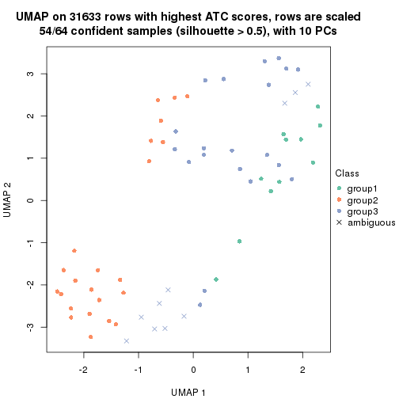
dimension_reduction(res, k = 4, method = "UMAP")
dimension_reduction(res, k = 5, method = "UMAP")

dimension_reduction(res, k = 6, method = "UMAP")
Following heatmap shows how subgroups are split when increasing k:
collect_classes(res)
Test correlation between subgroups and known annotations. If the known annotation is numeric, one-way ANOVA test is applied, and if the known annotation is discrete, chi-squared contingency table test is applied.
test_to_known_factors(res)
#> n specimen(p) individual(p) k
#> ATC:hclust 53 0.01575 0.0768 2
#> ATC:hclust 54 0.00878 0.2610 3
#> ATC:hclust 55 0.01686 0.0517 4
#> ATC:hclust 51 0.01202 0.1742 5
#> ATC:hclust 52 0.00283 0.2610 6
If matrix rows can be associated to genes, consider to use GO_Enrichment(res,
...) to perform function enrichment for the signature genes.
The object with results only for a single top-value method and a single partition method can be extracted as:
res = res_list["ATC", "kmeans"]
# you can also extract it by
# res = res_list["ATC:kmeans"]
A summary of res and all the functions that can be applied to it:
res
#> A 'ConsensusPartition' object with k = 2, 3, 4, 5, 6.
#> On a matrix with 31633 rows and 64 columns.
#> Top rows (1000, 2000, 3000, 4000, 5000) are extracted by 'ATC' method.
#> Subgroups are detected by 'kmeans' method.
#> Performed in total 1250 partitions by row resampling.
#> Best k for subgroups seems to be 2.
#>
#> Following methods can be applied to this 'ConsensusPartition' object:
#> [1] "cola_report" "collect_classes" "collect_plots"
#> [4] "collect_stats" "colnames" "compare_signatures"
#> [7] "consensus_heatmap" "dimension_reduction" "functional_enrichment"
#> [10] "get_anno_col" "get_anno" "get_classes"
#> [13] "get_consensus" "get_matrix" "get_membership"
#> [16] "get_param" "get_signatures" "get_stats"
#> [19] "is_best_k" "is_stable_k" "membership_heatmap"
#> [22] "ncol" "nrow" "plot_ecdf"
#> [25] "rownames" "select_partition_number" "show"
#> [28] "suggest_best_k" "test_to_known_factors"
collect_plots() function collects all the plots made from res for all k (number of partitions)
into one single page to provide an easy and fast comparison between different k.
collect_plots(res)
The plots are:
k and the heatmap of
predicted classes for each k.k.k.k.All the plots in panels can be made by individual functions and they are plotted later in this section.
select_partition_number() produces several plots showing different
statistics for choosing “optimized” k. There are following statistics:
k;k, the area increased is defined as \(A_k - A_{k-1}\).The detailed explanations of these statistics can be found in the cola vignette.
Generally speaking, lower PAC score, higher mean silhouette score or higher
concordance corresponds to better partition. Rand index and Jaccard index
measure how similar the current partition is compared to partition with k-1.
If they are too similar, we won't accept k is better than k-1.
select_partition_number(res)
The numeric values for all these statistics can be obtained by get_stats().
get_stats(res)
#> k 1-PAC mean_silhouette concordance area_increased Rand Jaccard
#> 2 2 1.000 0.984 0.993 0.5054 0.494 0.494
#> 3 3 0.527 0.649 0.787 0.3181 0.744 0.523
#> 4 4 0.832 0.873 0.923 0.1296 0.845 0.576
#> 5 5 0.731 0.553 0.742 0.0643 0.915 0.691
#> 6 6 0.730 0.650 0.784 0.0433 0.922 0.660
suggest_best_k() suggests the best \(k\) based on these statistics. The rules are as follows:
NA.suggest_best_k(res)
#> [1] 2
Following shows the table of the partitions (You need to click the show/hide
code output link to see it). The membership matrix (columns with name p*)
is inferred by
clue::cl_consensus()
function with the SE method. Basically the value in the membership matrix
represents the probability to belong to a certain group. The finall class
label for an item is determined with the group with highest probability it
belongs to.
In get_classes() function, the entropy is calculated from the membership
matrix and the silhouette score is calculated from the consensus matrix.
cbind(get_classes(res, k = 2), get_membership(res, k = 2))
#> class entropy silhouette p1 p2
#> GSM1060118 1 0.000 0.985 1.000 0.000
#> GSM1060120 2 0.000 1.000 0.000 1.000
#> GSM1060122 2 0.000 1.000 0.000 1.000
#> GSM1060124 2 0.000 1.000 0.000 1.000
#> GSM1060126 2 0.000 1.000 0.000 1.000
#> GSM1060128 1 0.000 0.985 1.000 0.000
#> GSM1060130 1 0.000 0.985 1.000 0.000
#> GSM1060132 1 0.000 0.985 1.000 0.000
#> GSM1060134 1 0.000 0.985 1.000 0.000
#> GSM1060136 1 0.000 0.985 1.000 0.000
#> GSM1060138 1 0.000 0.985 1.000 0.000
#> GSM1060140 1 0.000 0.985 1.000 0.000
#> GSM1060142 1 0.000 0.985 1.000 0.000
#> GSM1060144 1 0.000 0.985 1.000 0.000
#> GSM1060146 1 0.000 0.985 1.000 0.000
#> GSM1060148 1 0.000 0.985 1.000 0.000
#> GSM1060150 2 0.000 1.000 0.000 1.000
#> GSM1060152 1 0.000 0.985 1.000 0.000
#> GSM1060154 1 0.000 0.985 1.000 0.000
#> GSM1060156 1 0.000 0.985 1.000 0.000
#> GSM1060158 2 0.000 1.000 0.000 1.000
#> GSM1060160 1 0.000 0.985 1.000 0.000
#> GSM1060162 2 0.000 1.000 0.000 1.000
#> GSM1060164 2 0.000 1.000 0.000 1.000
#> GSM1060166 1 0.000 0.985 1.000 0.000
#> GSM1060168 2 0.000 1.000 0.000 1.000
#> GSM1060170 2 0.000 1.000 0.000 1.000
#> GSM1060172 2 0.000 1.000 0.000 1.000
#> GSM1060174 2 0.000 1.000 0.000 1.000
#> GSM1060176 2 0.000 1.000 0.000 1.000
#> GSM1060178 1 0.000 0.985 1.000 0.000
#> GSM1060180 2 0.000 1.000 0.000 1.000
#> GSM1060117 1 0.000 0.985 1.000 0.000
#> GSM1060119 2 0.000 1.000 0.000 1.000
#> GSM1060121 2 0.000 1.000 0.000 1.000
#> GSM1060123 2 0.000 1.000 0.000 1.000
#> GSM1060125 1 0.000 0.985 1.000 0.000
#> GSM1060127 2 0.000 1.000 0.000 1.000
#> GSM1060129 1 0.929 0.480 0.656 0.344
#> GSM1060131 2 0.000 1.000 0.000 1.000
#> GSM1060133 2 0.000 1.000 0.000 1.000
#> GSM1060135 2 0.000 1.000 0.000 1.000
#> GSM1060137 1 0.184 0.962 0.972 0.028
#> GSM1060139 1 0.000 0.985 1.000 0.000
#> GSM1060141 1 0.000 0.985 1.000 0.000
#> GSM1060143 2 0.000 1.000 0.000 1.000
#> GSM1060145 1 0.000 0.985 1.000 0.000
#> GSM1060147 1 0.000 0.985 1.000 0.000
#> GSM1060149 1 0.163 0.966 0.976 0.024
#> GSM1060151 1 0.000 0.985 1.000 0.000
#> GSM1060153 1 0.000 0.985 1.000 0.000
#> GSM1060155 2 0.000 1.000 0.000 1.000
#> GSM1060157 1 0.163 0.966 0.976 0.024
#> GSM1060159 2 0.000 1.000 0.000 1.000
#> GSM1060161 2 0.000 1.000 0.000 1.000
#> GSM1060163 2 0.000 1.000 0.000 1.000
#> GSM1060165 2 0.000 1.000 0.000 1.000
#> GSM1060167 2 0.000 1.000 0.000 1.000
#> GSM1060169 2 0.000 1.000 0.000 1.000
#> GSM1060171 2 0.000 1.000 0.000 1.000
#> GSM1060173 2 0.000 1.000 0.000 1.000
#> GSM1060175 2 0.000 1.000 0.000 1.000
#> GSM1060177 2 0.000 1.000 0.000 1.000
#> GSM1060179 2 0.000 1.000 0.000 1.000
cbind(get_classes(res, k = 3), get_membership(res, k = 3))
#> class entropy silhouette p1 p2 p3
#> GSM1060118 1 0.0000 0.8852 1.000 0.000 0.000
#> GSM1060120 2 0.3340 0.7228 0.000 0.880 0.120
#> GSM1060122 3 0.6045 0.4584 0.000 0.380 0.620
#> GSM1060124 3 0.2165 0.6544 0.000 0.064 0.936
#> GSM1060126 3 0.5465 0.5613 0.000 0.288 0.712
#> GSM1060128 1 0.0000 0.8852 1.000 0.000 0.000
#> GSM1060130 1 0.1643 0.8768 0.956 0.000 0.044
#> GSM1060132 1 0.1643 0.8768 0.956 0.000 0.044
#> GSM1060134 3 0.4121 0.5975 0.168 0.000 0.832
#> GSM1060136 1 0.4842 0.7168 0.776 0.000 0.224
#> GSM1060138 1 0.1031 0.8781 0.976 0.000 0.024
#> GSM1060140 1 0.1031 0.8781 0.976 0.000 0.024
#> GSM1060142 1 0.0000 0.8852 1.000 0.000 0.000
#> GSM1060144 1 0.0000 0.8852 1.000 0.000 0.000
#> GSM1060146 1 0.1643 0.8768 0.956 0.000 0.044
#> GSM1060148 1 0.0000 0.8852 1.000 0.000 0.000
#> GSM1060150 3 0.5785 0.5205 0.000 0.332 0.668
#> GSM1060152 1 0.2448 0.8663 0.924 0.000 0.076
#> GSM1060154 1 0.4931 0.7149 0.768 0.000 0.232
#> GSM1060156 1 0.1753 0.8763 0.952 0.000 0.048
#> GSM1060158 2 0.6235 0.0491 0.000 0.564 0.436
#> GSM1060160 3 0.5650 0.3994 0.312 0.000 0.688
#> GSM1060162 2 0.0000 0.7645 0.000 1.000 0.000
#> GSM1060164 2 0.6302 -0.0844 0.000 0.520 0.480
#> GSM1060166 1 0.4605 0.7683 0.796 0.000 0.204
#> GSM1060168 2 0.1643 0.7417 0.000 0.956 0.044
#> GSM1060170 3 0.5785 0.5205 0.000 0.332 0.668
#> GSM1060172 3 0.5785 0.5205 0.000 0.332 0.668
#> GSM1060174 2 0.0000 0.7645 0.000 1.000 0.000
#> GSM1060176 2 0.1860 0.7376 0.000 0.948 0.052
#> GSM1060178 1 0.1643 0.8768 0.956 0.000 0.044
#> GSM1060180 3 0.5650 0.5405 0.000 0.312 0.688
#> GSM1060117 1 0.0000 0.8852 1.000 0.000 0.000
#> GSM1060119 2 0.3340 0.7228 0.000 0.880 0.120
#> GSM1060121 2 0.5397 0.5652 0.000 0.720 0.280
#> GSM1060123 2 0.4974 0.6194 0.000 0.764 0.236
#> GSM1060125 1 0.6168 0.4603 0.588 0.000 0.412
#> GSM1060127 2 0.3412 0.7199 0.000 0.876 0.124
#> GSM1060129 3 0.4982 0.6336 0.036 0.136 0.828
#> GSM1060131 3 0.5678 0.5233 0.000 0.316 0.684
#> GSM1060133 2 0.4974 0.6194 0.000 0.764 0.236
#> GSM1060135 2 0.5016 0.6143 0.000 0.760 0.240
#> GSM1060137 3 0.5403 0.6310 0.060 0.124 0.816
#> GSM1060139 1 0.0000 0.8852 1.000 0.000 0.000
#> GSM1060141 1 0.1031 0.8781 0.976 0.000 0.024
#> GSM1060143 3 0.4934 0.6240 0.024 0.156 0.820
#> GSM1060145 1 0.6154 0.4693 0.592 0.000 0.408
#> GSM1060147 1 0.6154 0.4693 0.592 0.000 0.408
#> GSM1060149 3 0.7615 0.5758 0.148 0.164 0.688
#> GSM1060151 3 0.4121 0.5975 0.168 0.000 0.832
#> GSM1060153 3 0.5506 0.6324 0.092 0.092 0.816
#> GSM1060155 3 0.4399 0.6046 0.000 0.188 0.812
#> GSM1060157 3 0.7615 0.5758 0.148 0.164 0.688
#> GSM1060159 3 0.6252 0.2870 0.000 0.444 0.556
#> GSM1060161 2 0.0000 0.7645 0.000 1.000 0.000
#> GSM1060163 2 0.0000 0.7645 0.000 1.000 0.000
#> GSM1060165 2 0.0000 0.7645 0.000 1.000 0.000
#> GSM1060167 2 0.1643 0.7417 0.000 0.956 0.044
#> GSM1060169 2 0.3340 0.7228 0.000 0.880 0.120
#> GSM1060171 2 0.3686 0.6485 0.000 0.860 0.140
#> GSM1060173 2 0.0000 0.7645 0.000 1.000 0.000
#> GSM1060175 2 0.0424 0.7633 0.000 0.992 0.008
#> GSM1060177 2 0.6225 0.0627 0.000 0.568 0.432
#> GSM1060179 2 0.6280 -0.1642 0.000 0.540 0.460
cbind(get_classes(res, k = 4), get_membership(res, k = 4))
#> class entropy silhouette p1 p2 p3 p4
#> GSM1060118 1 0.0188 0.905 0.996 0.000 0.000 0.004
#> GSM1060120 2 0.0895 0.945 0.000 0.976 0.004 0.020
#> GSM1060122 3 0.6163 0.669 0.000 0.160 0.676 0.164
#> GSM1060124 3 0.3444 0.755 0.000 0.000 0.816 0.184
#> GSM1060126 3 0.6240 0.658 0.000 0.156 0.668 0.176
#> GSM1060128 1 0.0000 0.905 1.000 0.000 0.000 0.000
#> GSM1060130 1 0.0707 0.904 0.980 0.000 0.000 0.020
#> GSM1060132 1 0.0707 0.904 0.980 0.000 0.000 0.020
#> GSM1060134 4 0.1302 0.977 0.000 0.000 0.044 0.956
#> GSM1060136 1 0.4889 0.559 0.636 0.000 0.004 0.360
#> GSM1060138 1 0.3356 0.801 0.824 0.000 0.000 0.176
#> GSM1060140 1 0.3400 0.801 0.820 0.000 0.000 0.180
#> GSM1060142 1 0.0188 0.905 0.996 0.000 0.000 0.004
#> GSM1060144 1 0.0188 0.905 0.996 0.000 0.000 0.004
#> GSM1060146 1 0.0707 0.904 0.980 0.000 0.000 0.020
#> GSM1060148 1 0.0188 0.905 0.996 0.000 0.000 0.004
#> GSM1060150 3 0.0188 0.879 0.000 0.000 0.996 0.004
#> GSM1060152 1 0.2831 0.853 0.876 0.000 0.004 0.120
#> GSM1060154 1 0.4889 0.559 0.636 0.000 0.004 0.360
#> GSM1060156 1 0.2053 0.883 0.924 0.000 0.004 0.072
#> GSM1060158 3 0.1867 0.858 0.000 0.072 0.928 0.000
#> GSM1060160 3 0.2530 0.813 0.004 0.000 0.896 0.100
#> GSM1060162 2 0.0592 0.951 0.000 0.984 0.016 0.000
#> GSM1060164 3 0.0817 0.875 0.000 0.024 0.976 0.000
#> GSM1060166 1 0.4150 0.822 0.824 0.000 0.056 0.120
#> GSM1060168 2 0.0817 0.947 0.000 0.976 0.024 0.000
#> GSM1060170 3 0.0188 0.879 0.000 0.000 0.996 0.004
#> GSM1060172 3 0.0188 0.879 0.000 0.000 0.996 0.004
#> GSM1060174 2 0.0592 0.951 0.000 0.984 0.016 0.000
#> GSM1060176 2 0.3907 0.673 0.000 0.768 0.232 0.000
#> GSM1060178 1 0.0707 0.904 0.980 0.000 0.000 0.020
#> GSM1060180 3 0.0469 0.877 0.000 0.000 0.988 0.012
#> GSM1060117 1 0.0188 0.905 0.996 0.000 0.000 0.004
#> GSM1060119 2 0.0895 0.945 0.000 0.976 0.004 0.020
#> GSM1060121 2 0.4483 0.624 0.000 0.712 0.004 0.284
#> GSM1060123 2 0.0779 0.944 0.000 0.980 0.004 0.016
#> GSM1060125 4 0.1411 0.966 0.020 0.000 0.020 0.960
#> GSM1060127 2 0.0895 0.945 0.000 0.976 0.004 0.020
#> GSM1060129 4 0.1545 0.978 0.000 0.008 0.040 0.952
#> GSM1060131 3 0.6805 0.581 0.000 0.220 0.604 0.176
#> GSM1060133 2 0.0779 0.944 0.000 0.980 0.004 0.016
#> GSM1060135 2 0.2197 0.895 0.000 0.916 0.004 0.080
#> GSM1060137 4 0.1677 0.979 0.000 0.012 0.040 0.948
#> GSM1060139 1 0.0188 0.905 0.996 0.000 0.000 0.004
#> GSM1060141 1 0.3356 0.801 0.824 0.000 0.000 0.176
#> GSM1060143 4 0.1677 0.979 0.000 0.012 0.040 0.948
#> GSM1060145 4 0.1406 0.964 0.024 0.000 0.016 0.960
#> GSM1060147 4 0.1406 0.964 0.024 0.000 0.016 0.960
#> GSM1060149 3 0.0592 0.875 0.000 0.000 0.984 0.016
#> GSM1060151 4 0.1302 0.977 0.000 0.000 0.044 0.956
#> GSM1060153 4 0.1584 0.979 0.000 0.012 0.036 0.952
#> GSM1060155 4 0.1888 0.973 0.000 0.016 0.044 0.940
#> GSM1060157 3 0.0592 0.875 0.000 0.000 0.984 0.016
#> GSM1060159 3 0.0336 0.878 0.000 0.008 0.992 0.000
#> GSM1060161 2 0.0592 0.951 0.000 0.984 0.016 0.000
#> GSM1060163 2 0.0592 0.951 0.000 0.984 0.016 0.000
#> GSM1060165 2 0.0592 0.951 0.000 0.984 0.016 0.000
#> GSM1060167 2 0.0817 0.947 0.000 0.976 0.024 0.000
#> GSM1060169 2 0.0000 0.948 0.000 1.000 0.000 0.000
#> GSM1060171 3 0.4193 0.638 0.000 0.268 0.732 0.000
#> GSM1060173 2 0.0592 0.951 0.000 0.984 0.016 0.000
#> GSM1060175 2 0.0592 0.951 0.000 0.984 0.016 0.000
#> GSM1060177 3 0.0817 0.875 0.000 0.024 0.976 0.000
#> GSM1060179 3 0.1637 0.863 0.000 0.060 0.940 0.000
cbind(get_classes(res, k = 5), get_membership(res, k = 5))
#> class entropy silhouette p1 p2 p3 p4 p5
#> GSM1060118 1 0.0000 0.7971 1.000 0.000 0.000 0.000 0.000
#> GSM1060120 5 0.0566 0.4845 0.000 0.012 0.000 0.004 0.984
#> GSM1060122 5 0.7573 -0.0608 0.000 0.192 0.312 0.064 0.432
#> GSM1060124 3 0.4918 0.7161 0.000 0.204 0.716 0.072 0.008
#> GSM1060126 5 0.7621 -0.0847 0.000 0.188 0.324 0.068 0.420
#> GSM1060128 1 0.0162 0.7970 0.996 0.004 0.000 0.000 0.000
#> GSM1060130 1 0.3578 0.7523 0.784 0.204 0.004 0.008 0.000
#> GSM1060132 1 0.3578 0.7523 0.784 0.204 0.004 0.008 0.000
#> GSM1060134 4 0.3336 0.8620 0.000 0.144 0.016 0.832 0.008
#> GSM1060136 2 0.7027 -0.3263 0.300 0.380 0.008 0.312 0.000
#> GSM1060138 1 0.3845 0.6532 0.768 0.024 0.000 0.208 0.000
#> GSM1060140 1 0.4264 0.6422 0.744 0.044 0.000 0.212 0.000
#> GSM1060142 1 0.0000 0.7971 1.000 0.000 0.000 0.000 0.000
#> GSM1060144 1 0.0000 0.7971 1.000 0.000 0.000 0.000 0.000
#> GSM1060146 1 0.3578 0.7523 0.784 0.204 0.004 0.008 0.000
#> GSM1060148 1 0.0000 0.7971 1.000 0.000 0.000 0.000 0.000
#> GSM1060150 3 0.0000 0.8520 0.000 0.000 1.000 0.000 0.000
#> GSM1060152 1 0.5419 0.6052 0.588 0.352 0.008 0.052 0.000
#> GSM1060154 2 0.7027 -0.3263 0.300 0.380 0.008 0.312 0.000
#> GSM1060156 1 0.5379 0.6157 0.600 0.340 0.008 0.052 0.000
#> GSM1060158 3 0.3596 0.7817 0.000 0.200 0.784 0.000 0.016
#> GSM1060160 3 0.4666 0.5643 0.000 0.284 0.676 0.040 0.000
#> GSM1060162 5 0.4287 0.2615 0.000 0.460 0.000 0.000 0.540
#> GSM1060164 3 0.0510 0.8514 0.000 0.016 0.984 0.000 0.000
#> GSM1060166 1 0.7484 0.3891 0.408 0.336 0.208 0.048 0.000
#> GSM1060168 2 0.4815 -0.2918 0.000 0.524 0.020 0.000 0.456
#> GSM1060170 3 0.0162 0.8521 0.000 0.004 0.996 0.000 0.000
#> GSM1060172 3 0.0000 0.8520 0.000 0.000 1.000 0.000 0.000
#> GSM1060174 5 0.4287 0.2615 0.000 0.460 0.000 0.000 0.540
#> GSM1060176 2 0.5953 -0.2026 0.000 0.540 0.124 0.000 0.336
#> GSM1060178 1 0.3578 0.7523 0.784 0.204 0.004 0.008 0.000
#> GSM1060180 3 0.0000 0.8520 0.000 0.000 1.000 0.000 0.000
#> GSM1060117 1 0.0510 0.7940 0.984 0.016 0.000 0.000 0.000
#> GSM1060119 5 0.0566 0.4845 0.000 0.012 0.000 0.004 0.984
#> GSM1060121 5 0.4177 0.3661 0.000 0.064 0.000 0.164 0.772
#> GSM1060123 5 0.0898 0.4819 0.000 0.008 0.000 0.020 0.972
#> GSM1060125 4 0.1854 0.8925 0.020 0.036 0.008 0.936 0.000
#> GSM1060127 5 0.0451 0.4845 0.000 0.008 0.000 0.004 0.988
#> GSM1060129 4 0.2645 0.8758 0.000 0.096 0.008 0.884 0.012
#> GSM1060131 5 0.7526 0.0470 0.000 0.188 0.256 0.076 0.480
#> GSM1060133 5 0.0609 0.4819 0.000 0.000 0.000 0.020 0.980
#> GSM1060135 5 0.2726 0.4401 0.000 0.064 0.000 0.052 0.884
#> GSM1060137 4 0.0579 0.9019 0.000 0.000 0.008 0.984 0.008
#> GSM1060139 1 0.0000 0.7971 1.000 0.000 0.000 0.000 0.000
#> GSM1060141 1 0.3845 0.6532 0.768 0.024 0.000 0.208 0.000
#> GSM1060143 4 0.1538 0.8912 0.000 0.036 0.008 0.948 0.008
#> GSM1060145 4 0.1686 0.8953 0.020 0.028 0.008 0.944 0.000
#> GSM1060147 4 0.1686 0.8953 0.020 0.028 0.008 0.944 0.000
#> GSM1060149 3 0.1341 0.8290 0.000 0.056 0.944 0.000 0.000
#> GSM1060151 4 0.3336 0.8620 0.000 0.144 0.016 0.832 0.008
#> GSM1060153 4 0.0579 0.9019 0.000 0.000 0.008 0.984 0.008
#> GSM1060155 4 0.4341 0.7060 0.000 0.048 0.008 0.764 0.180
#> GSM1060157 3 0.1410 0.8265 0.000 0.060 0.940 0.000 0.000
#> GSM1060159 3 0.1965 0.8330 0.000 0.096 0.904 0.000 0.000
#> GSM1060161 5 0.4291 0.2555 0.000 0.464 0.000 0.000 0.536
#> GSM1060163 5 0.4291 0.2555 0.000 0.464 0.000 0.000 0.536
#> GSM1060165 5 0.4287 0.2615 0.000 0.460 0.000 0.000 0.540
#> GSM1060167 2 0.4735 -0.2975 0.000 0.524 0.016 0.000 0.460
#> GSM1060169 5 0.4138 0.3000 0.000 0.384 0.000 0.000 0.616
#> GSM1060171 3 0.5964 0.4032 0.000 0.340 0.536 0.000 0.124
#> GSM1060173 5 0.4287 0.2615 0.000 0.460 0.000 0.000 0.540
#> GSM1060175 5 0.4283 0.2637 0.000 0.456 0.000 0.000 0.544
#> GSM1060177 3 0.3353 0.7860 0.000 0.196 0.796 0.000 0.008
#> GSM1060179 3 0.3562 0.7840 0.000 0.196 0.788 0.000 0.016
cbind(get_classes(res, k = 6), get_membership(res, k = 6))
#> class entropy silhouette p1 p2 p3 p4 p5 p6
#> GSM1060118 1 0.0000 0.686 1.000 0.000 0.000 0.000 0.000 0.000
#> GSM1060120 6 0.4265 0.668 0.000 0.300 0.000 0.000 0.040 0.660
#> GSM1060122 6 0.6062 0.447 0.000 0.012 0.124 0.040 0.228 0.596
#> GSM1060124 3 0.6727 0.301 0.000 0.000 0.424 0.048 0.308 0.220
#> GSM1060126 6 0.6019 0.442 0.000 0.004 0.128 0.048 0.228 0.592
#> GSM1060128 1 0.1168 0.669 0.956 0.000 0.000 0.000 0.016 0.028
#> GSM1060130 1 0.4363 0.296 0.636 0.000 0.000 0.000 0.324 0.040
#> GSM1060132 1 0.4363 0.296 0.636 0.000 0.000 0.000 0.324 0.040
#> GSM1060134 4 0.4749 0.667 0.000 0.000 0.000 0.648 0.260 0.092
#> GSM1060136 5 0.4488 0.689 0.128 0.000 0.000 0.136 0.728 0.008
#> GSM1060138 1 0.5364 0.408 0.628 0.000 0.000 0.236 0.116 0.020
#> GSM1060140 1 0.5607 0.366 0.600 0.000 0.000 0.236 0.144 0.020
#> GSM1060142 1 0.0146 0.686 0.996 0.000 0.000 0.000 0.004 0.000
#> GSM1060144 1 0.0000 0.686 1.000 0.000 0.000 0.000 0.000 0.000
#> GSM1060146 1 0.4363 0.296 0.636 0.000 0.000 0.000 0.324 0.040
#> GSM1060148 1 0.0000 0.686 1.000 0.000 0.000 0.000 0.000 0.000
#> GSM1060150 3 0.0000 0.759 0.000 0.000 1.000 0.000 0.000 0.000
#> GSM1060152 5 0.3969 0.604 0.332 0.000 0.000 0.016 0.652 0.000
#> GSM1060154 5 0.4450 0.692 0.128 0.000 0.000 0.132 0.732 0.008
#> GSM1060156 5 0.3984 0.598 0.336 0.000 0.000 0.016 0.648 0.000
#> GSM1060158 3 0.5833 0.657 0.000 0.096 0.628 0.000 0.188 0.088
#> GSM1060160 3 0.4066 0.204 0.000 0.000 0.596 0.012 0.392 0.000
#> GSM1060162 2 0.0260 0.895 0.000 0.992 0.000 0.000 0.000 0.008
#> GSM1060164 3 0.1719 0.757 0.000 0.000 0.924 0.000 0.060 0.016
#> GSM1060166 5 0.5381 0.545 0.108 0.000 0.260 0.012 0.616 0.004
#> GSM1060168 2 0.2649 0.817 0.000 0.884 0.016 0.000 0.052 0.048
#> GSM1060170 3 0.0260 0.760 0.000 0.000 0.992 0.000 0.008 0.000
#> GSM1060172 3 0.0146 0.758 0.000 0.000 0.996 0.000 0.004 0.000
#> GSM1060174 2 0.0260 0.895 0.000 0.992 0.000 0.000 0.000 0.008
#> GSM1060176 2 0.5435 0.544 0.000 0.672 0.084 0.000 0.164 0.080
#> GSM1060178 1 0.4406 0.273 0.624 0.000 0.000 0.000 0.336 0.040
#> GSM1060180 3 0.0146 0.758 0.000 0.000 0.996 0.000 0.004 0.000
#> GSM1060117 1 0.2203 0.632 0.896 0.000 0.000 0.004 0.084 0.016
#> GSM1060119 6 0.4265 0.668 0.000 0.300 0.000 0.000 0.040 0.660
#> GSM1060121 6 0.3167 0.662 0.000 0.096 0.000 0.072 0.000 0.832
#> GSM1060123 6 0.3903 0.645 0.000 0.304 0.000 0.012 0.004 0.680
#> GSM1060125 4 0.2114 0.783 0.008 0.000 0.000 0.904 0.076 0.012
#> GSM1060127 6 0.3748 0.664 0.000 0.300 0.000 0.000 0.012 0.688
#> GSM1060129 4 0.4261 0.730 0.000 0.000 0.000 0.732 0.112 0.156
#> GSM1060131 6 0.5516 0.494 0.000 0.004 0.080 0.048 0.224 0.644
#> GSM1060133 6 0.3670 0.666 0.000 0.284 0.000 0.012 0.000 0.704
#> GSM1060135 6 0.2631 0.692 0.000 0.152 0.000 0.008 0.000 0.840
#> GSM1060137 4 0.0713 0.808 0.000 0.000 0.000 0.972 0.000 0.028
#> GSM1060139 1 0.0000 0.686 1.000 0.000 0.000 0.000 0.000 0.000
#> GSM1060141 1 0.5364 0.408 0.628 0.000 0.000 0.236 0.116 0.020
#> GSM1060143 4 0.1983 0.801 0.000 0.000 0.000 0.908 0.020 0.072
#> GSM1060145 4 0.2001 0.787 0.008 0.000 0.000 0.912 0.068 0.012
#> GSM1060147 4 0.2001 0.787 0.008 0.000 0.000 0.912 0.068 0.012
#> GSM1060149 3 0.1610 0.713 0.000 0.000 0.916 0.000 0.084 0.000
#> GSM1060151 4 0.4749 0.667 0.000 0.000 0.000 0.648 0.260 0.092
#> GSM1060153 4 0.0713 0.808 0.000 0.000 0.000 0.972 0.000 0.028
#> GSM1060155 4 0.4062 0.566 0.000 0.000 0.000 0.660 0.024 0.316
#> GSM1060157 3 0.1610 0.713 0.000 0.000 0.916 0.000 0.084 0.000
#> GSM1060159 3 0.3566 0.729 0.000 0.000 0.788 0.000 0.156 0.056
#> GSM1060161 2 0.0146 0.894 0.000 0.996 0.000 0.000 0.004 0.000
#> GSM1060163 2 0.0000 0.894 0.000 1.000 0.000 0.000 0.000 0.000
#> GSM1060165 2 0.0260 0.895 0.000 0.992 0.000 0.000 0.000 0.008
#> GSM1060167 2 0.2307 0.832 0.000 0.904 0.016 0.000 0.032 0.048
#> GSM1060169 2 0.3023 0.601 0.000 0.784 0.000 0.000 0.004 0.212
#> GSM1060171 3 0.6649 0.453 0.000 0.276 0.488 0.000 0.164 0.072
#> GSM1060173 2 0.0260 0.895 0.000 0.992 0.000 0.000 0.000 0.008
#> GSM1060175 2 0.0405 0.894 0.000 0.988 0.000 0.000 0.004 0.008
#> GSM1060177 3 0.5524 0.675 0.000 0.112 0.664 0.000 0.156 0.068
#> GSM1060179 3 0.5719 0.666 0.000 0.092 0.640 0.000 0.184 0.084
Heatmaps for the consensus matrix. It visualizes the probability of two samples to be in a same group.
consensus_heatmap(res, k = 2)

consensus_heatmap(res, k = 3)
consensus_heatmap(res, k = 4)

consensus_heatmap(res, k = 5)
consensus_heatmap(res, k = 6)

Heatmaps for the membership of samples in all partitions to see how consistent they are:
membership_heatmap(res, k = 2)
membership_heatmap(res, k = 3)
membership_heatmap(res, k = 4)
membership_heatmap(res, k = 5)

membership_heatmap(res, k = 6)
As soon as we have had the classes for columns, we can look for signatures which are significantly different between classes which can be candidate marks for certain classes. Following are the heatmaps for signatures.
Signature heatmaps where rows are scaled:
get_signatures(res, k = 2)
get_signatures(res, k = 3)

get_signatures(res, k = 4)
get_signatures(res, k = 5)
get_signatures(res, k = 6)
Signature heatmaps where rows are not scaled:
get_signatures(res, k = 2, scale_rows = FALSE)
get_signatures(res, k = 3, scale_rows = FALSE)
get_signatures(res, k = 4, scale_rows = FALSE)
get_signatures(res, k = 5, scale_rows = FALSE)
get_signatures(res, k = 6, scale_rows = FALSE)
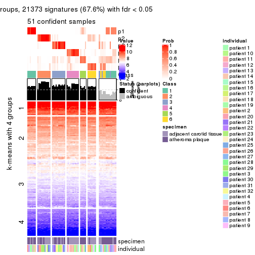
Compare the overlap of signatures from different k:
compare_signatures(res)
get_signature() returns a data frame invisibly. TO get the list of signatures, the function
call should be assigned to a variable explicitly. In following code, if plot argument is set
to FALSE, no heatmap is plotted while only the differential analysis is performed.
# code only for demonstration
tb = get_signature(res, k = ..., plot = FALSE)
An example of the output of tb is:
#> which_row fdr mean_1 mean_2 scaled_mean_1 scaled_mean_2 km
#> 1 38 0.042760348 8.373488 9.131774 -0.5533452 0.5164555 1
#> 2 40 0.018707592 7.106213 8.469186 -0.6173731 0.5762149 1
#> 3 55 0.019134737 10.221463 11.207825 -0.6159697 0.5749050 1
#> 4 59 0.006059896 5.921854 7.869574 -0.6899429 0.6439467 1
#> 5 60 0.018055526 8.928898 10.211722 -0.6204761 0.5791110 1
#> 6 98 0.009384629 15.714769 14.887706 0.6635654 -0.6193277 2
...
The columns in tb are:
which_row: row indices corresponding to the input matrix.fdr: FDR for the differential test. mean_x: The mean value in group x.scaled_mean_x: The mean value in group x after rows are scaled.km: Row groups if k-means clustering is applied to rows.UMAP plot which shows how samples are separated.
dimension_reduction(res, k = 2, method = "UMAP")
dimension_reduction(res, k = 3, method = "UMAP")
dimension_reduction(res, k = 4, method = "UMAP")
dimension_reduction(res, k = 5, method = "UMAP")
dimension_reduction(res, k = 6, method = "UMAP")
Following heatmap shows how subgroups are split when increasing k:
collect_classes(res)
Test correlation between subgroups and known annotations. If the known annotation is numeric, one-way ANOVA test is applied, and if the known annotation is discrete, chi-squared contingency table test is applied.
test_to_known_factors(res)
#> n specimen(p) individual(p) k
#> ATC:kmeans 63 0.161375 0.1571 2
#> ATC:kmeans 54 0.001261 0.2984 3
#> ATC:kmeans 64 0.000228 0.1017 4
#> ATC:kmeans 39 0.001570 0.2195 5
#> ATC:kmeans 51 0.005514 0.0441 6
If matrix rows can be associated to genes, consider to use GO_Enrichment(res,
...) to perform function enrichment for the signature genes.
The object with results only for a single top-value method and a single partition method can be extracted as:
res = res_list["ATC", "skmeans"]
# you can also extract it by
# res = res_list["ATC:skmeans"]
A summary of res and all the functions that can be applied to it:
res
#> A 'ConsensusPartition' object with k = 2, 3, 4, 5, 6.
#> On a matrix with 31633 rows and 64 columns.
#> Top rows (1000, 2000, 3000, 4000, 5000) are extracted by 'ATC' method.
#> Subgroups are detected by 'skmeans' method.
#> Performed in total 1250 partitions by row resampling.
#> Best k for subgroups seems to be 5.
#>
#> Following methods can be applied to this 'ConsensusPartition' object:
#> [1] "cola_report" "collect_classes" "collect_plots"
#> [4] "collect_stats" "colnames" "compare_signatures"
#> [7] "consensus_heatmap" "dimension_reduction" "functional_enrichment"
#> [10] "get_anno_col" "get_anno" "get_classes"
#> [13] "get_consensus" "get_matrix" "get_membership"
#> [16] "get_param" "get_signatures" "get_stats"
#> [19] "is_best_k" "is_stable_k" "membership_heatmap"
#> [22] "ncol" "nrow" "plot_ecdf"
#> [25] "rownames" "select_partition_number" "show"
#> [28] "suggest_best_k" "test_to_known_factors"
collect_plots() function collects all the plots made from res for all k (number of partitions)
into one single page to provide an easy and fast comparison between different k.
collect_plots(res)
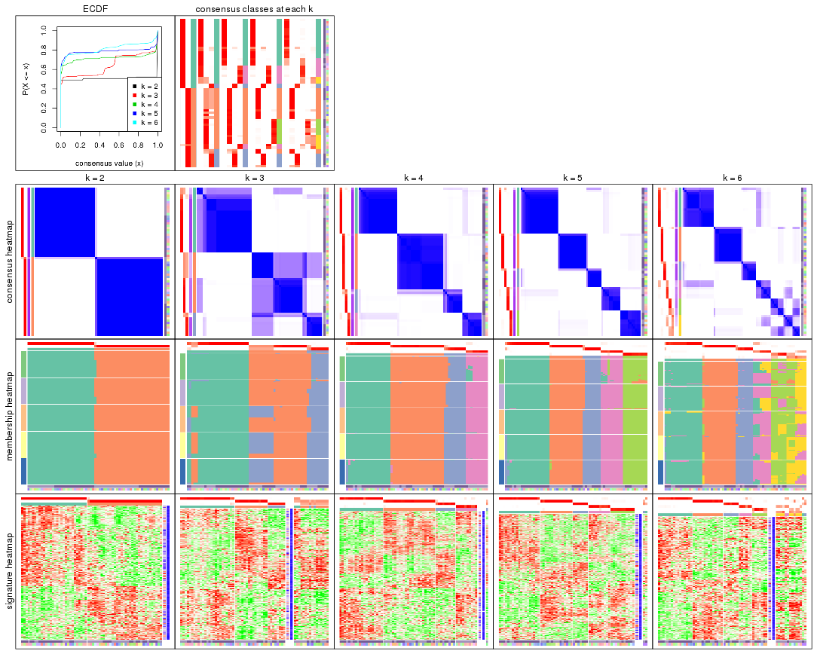
The plots are:
k and the heatmap of
predicted classes for each k.k.k.k.All the plots in panels can be made by individual functions and they are plotted later in this section.
select_partition_number() produces several plots showing different
statistics for choosing “optimized” k. There are following statistics:
k;k, the area increased is defined as \(A_k - A_{k-1}\).The detailed explanations of these statistics can be found in the cola vignette.
Generally speaking, lower PAC score, higher mean silhouette score or higher
concordance corresponds to better partition. Rand index and Jaccard index
measure how similar the current partition is compared to partition with k-1.
If they are too similar, we won't accept k is better than k-1.
select_partition_number(res)
The numeric values for all these statistics can be obtained by get_stats().
get_stats(res)
#> k 1-PAC mean_silhouette concordance area_increased Rand Jaccard
#> 2 2 1.000 0.992 0.996 0.5068 0.494 0.494
#> 3 3 0.784 0.719 0.879 0.2705 0.861 0.723
#> 4 4 0.949 0.945 0.975 0.1164 0.889 0.707
#> 5 5 0.996 0.944 0.975 0.0973 0.908 0.682
#> 6 6 0.892 0.714 0.846 0.0329 0.931 0.697
suggest_best_k() suggests the best \(k\) based on these statistics. The rules are as follows:
NA.suggest_best_k(res)
#> [1] 5
#> attr(,"optional")
#> [1] 2 4
There is also optional best \(k\) = 2 4 that is worth to check.
Following shows the table of the partitions (You need to click the show/hide
code output link to see it). The membership matrix (columns with name p*)
is inferred by
clue::cl_consensus()
function with the SE method. Basically the value in the membership matrix
represents the probability to belong to a certain group. The finall class
label for an item is determined with the group with highest probability it
belongs to.
In get_classes() function, the entropy is calculated from the membership
matrix and the silhouette score is calculated from the consensus matrix.
cbind(get_classes(res, k = 2), get_membership(res, k = 2))
#> class entropy silhouette p1 p2
#> GSM1060118 1 0.000 1.000 1.000 0.000
#> GSM1060120 2 0.000 0.993 0.000 1.000
#> GSM1060122 2 0.000 0.993 0.000 1.000
#> GSM1060124 2 0.000 0.993 0.000 1.000
#> GSM1060126 2 0.000 0.993 0.000 1.000
#> GSM1060128 1 0.000 1.000 1.000 0.000
#> GSM1060130 1 0.000 1.000 1.000 0.000
#> GSM1060132 1 0.000 1.000 1.000 0.000
#> GSM1060134 1 0.000 1.000 1.000 0.000
#> GSM1060136 1 0.000 1.000 1.000 0.000
#> GSM1060138 1 0.000 1.000 1.000 0.000
#> GSM1060140 1 0.000 1.000 1.000 0.000
#> GSM1060142 1 0.000 1.000 1.000 0.000
#> GSM1060144 1 0.000 1.000 1.000 0.000
#> GSM1060146 1 0.000 1.000 1.000 0.000
#> GSM1060148 1 0.000 1.000 1.000 0.000
#> GSM1060150 2 0.000 0.993 0.000 1.000
#> GSM1060152 1 0.000 1.000 1.000 0.000
#> GSM1060154 1 0.000 1.000 1.000 0.000
#> GSM1060156 1 0.000 1.000 1.000 0.000
#> GSM1060158 2 0.000 0.993 0.000 1.000
#> GSM1060160 1 0.000 1.000 1.000 0.000
#> GSM1060162 2 0.000 0.993 0.000 1.000
#> GSM1060164 2 0.000 0.993 0.000 1.000
#> GSM1060166 1 0.000 1.000 1.000 0.000
#> GSM1060168 2 0.000 0.993 0.000 1.000
#> GSM1060170 2 0.000 0.993 0.000 1.000
#> GSM1060172 2 0.000 0.993 0.000 1.000
#> GSM1060174 2 0.000 0.993 0.000 1.000
#> GSM1060176 2 0.000 0.993 0.000 1.000
#> GSM1060178 1 0.000 1.000 1.000 0.000
#> GSM1060180 2 0.000 0.993 0.000 1.000
#> GSM1060117 1 0.000 1.000 1.000 0.000
#> GSM1060119 2 0.000 0.993 0.000 1.000
#> GSM1060121 2 0.000 0.993 0.000 1.000
#> GSM1060123 2 0.000 0.993 0.000 1.000
#> GSM1060125 1 0.000 1.000 1.000 0.000
#> GSM1060127 2 0.000 0.993 0.000 1.000
#> GSM1060129 1 0.000 1.000 1.000 0.000
#> GSM1060131 2 0.000 0.993 0.000 1.000
#> GSM1060133 2 0.000 0.993 0.000 1.000
#> GSM1060135 2 0.000 0.993 0.000 1.000
#> GSM1060137 1 0.000 1.000 1.000 0.000
#> GSM1060139 1 0.000 1.000 1.000 0.000
#> GSM1060141 1 0.000 1.000 1.000 0.000
#> GSM1060143 2 0.781 0.698 0.232 0.768
#> GSM1060145 1 0.000 1.000 1.000 0.000
#> GSM1060147 1 0.000 1.000 1.000 0.000
#> GSM1060149 1 0.000 1.000 1.000 0.000
#> GSM1060151 1 0.000 1.000 1.000 0.000
#> GSM1060153 1 0.000 1.000 1.000 0.000
#> GSM1060155 2 0.000 0.993 0.000 1.000
#> GSM1060157 1 0.000 1.000 1.000 0.000
#> GSM1060159 2 0.000 0.993 0.000 1.000
#> GSM1060161 2 0.000 0.993 0.000 1.000
#> GSM1060163 2 0.000 0.993 0.000 1.000
#> GSM1060165 2 0.000 0.993 0.000 1.000
#> GSM1060167 2 0.000 0.993 0.000 1.000
#> GSM1060169 2 0.000 0.993 0.000 1.000
#> GSM1060171 2 0.000 0.993 0.000 1.000
#> GSM1060173 2 0.000 0.993 0.000 1.000
#> GSM1060175 2 0.000 0.993 0.000 1.000
#> GSM1060177 2 0.000 0.993 0.000 1.000
#> GSM1060179 2 0.000 0.993 0.000 1.000
cbind(get_classes(res, k = 3), get_membership(res, k = 3))
#> class entropy silhouette p1 p2 p3
#> GSM1060118 1 0.0000 0.929 1.000 0.000 0.000
#> GSM1060120 2 0.0000 0.726 0.000 1.000 0.000
#> GSM1060122 2 0.0000 0.726 0.000 1.000 0.000
#> GSM1060124 2 0.1964 0.680 0.000 0.944 0.056
#> GSM1060126 2 0.0000 0.726 0.000 1.000 0.000
#> GSM1060128 1 0.0000 0.929 1.000 0.000 0.000
#> GSM1060130 1 0.0000 0.929 1.000 0.000 0.000
#> GSM1060132 1 0.0000 0.929 1.000 0.000 0.000
#> GSM1060134 1 0.0747 0.922 0.984 0.000 0.016
#> GSM1060136 1 0.0000 0.929 1.000 0.000 0.000
#> GSM1060138 1 0.0000 0.929 1.000 0.000 0.000
#> GSM1060140 1 0.0000 0.929 1.000 0.000 0.000
#> GSM1060142 1 0.0000 0.929 1.000 0.000 0.000
#> GSM1060144 1 0.0000 0.929 1.000 0.000 0.000
#> GSM1060146 1 0.0000 0.929 1.000 0.000 0.000
#> GSM1060148 1 0.0000 0.929 1.000 0.000 0.000
#> GSM1060150 3 0.0747 0.859 0.000 0.016 0.984
#> GSM1060152 1 0.0000 0.929 1.000 0.000 0.000
#> GSM1060154 1 0.0000 0.929 1.000 0.000 0.000
#> GSM1060156 1 0.0000 0.929 1.000 0.000 0.000
#> GSM1060158 2 0.6235 0.405 0.000 0.564 0.436
#> GSM1060160 1 0.4796 0.713 0.780 0.000 0.220
#> GSM1060162 2 0.6235 0.405 0.000 0.564 0.436
#> GSM1060164 3 0.0747 0.859 0.000 0.016 0.984
#> GSM1060166 1 0.4062 0.780 0.836 0.000 0.164
#> GSM1060168 2 0.6235 0.405 0.000 0.564 0.436
#> GSM1060170 3 0.0747 0.859 0.000 0.016 0.984
#> GSM1060172 3 0.0747 0.859 0.000 0.016 0.984
#> GSM1060174 2 0.6235 0.405 0.000 0.564 0.436
#> GSM1060176 2 0.6235 0.405 0.000 0.564 0.436
#> GSM1060178 1 0.0000 0.929 1.000 0.000 0.000
#> GSM1060180 3 0.0747 0.859 0.000 0.016 0.984
#> GSM1060117 1 0.0000 0.929 1.000 0.000 0.000
#> GSM1060119 2 0.0000 0.726 0.000 1.000 0.000
#> GSM1060121 2 0.0000 0.726 0.000 1.000 0.000
#> GSM1060123 2 0.0000 0.726 0.000 1.000 0.000
#> GSM1060125 1 0.0747 0.922 0.984 0.000 0.016
#> GSM1060127 2 0.0000 0.726 0.000 1.000 0.000
#> GSM1060129 1 0.6925 0.366 0.532 0.452 0.016
#> GSM1060131 2 0.0000 0.726 0.000 1.000 0.000
#> GSM1060133 2 0.0000 0.726 0.000 1.000 0.000
#> GSM1060135 2 0.0000 0.726 0.000 1.000 0.000
#> GSM1060137 1 0.6897 0.400 0.548 0.436 0.016
#> GSM1060139 1 0.0000 0.929 1.000 0.000 0.000
#> GSM1060141 1 0.0000 0.929 1.000 0.000 0.000
#> GSM1060143 2 0.0983 0.710 0.004 0.980 0.016
#> GSM1060145 1 0.0747 0.922 0.984 0.000 0.016
#> GSM1060147 1 0.0747 0.922 0.984 0.000 0.016
#> GSM1060149 3 0.0747 0.846 0.016 0.000 0.984
#> GSM1060151 1 0.0747 0.922 0.984 0.000 0.016
#> GSM1060153 1 0.6897 0.400 0.548 0.436 0.016
#> GSM1060155 2 0.0747 0.713 0.000 0.984 0.016
#> GSM1060157 3 0.0747 0.846 0.016 0.000 0.984
#> GSM1060159 3 0.1031 0.854 0.000 0.024 0.976
#> GSM1060161 2 0.6235 0.405 0.000 0.564 0.436
#> GSM1060163 2 0.6235 0.405 0.000 0.564 0.436
#> GSM1060165 2 0.6235 0.405 0.000 0.564 0.436
#> GSM1060167 2 0.6235 0.405 0.000 0.564 0.436
#> GSM1060169 2 0.0000 0.726 0.000 1.000 0.000
#> GSM1060171 3 0.6299 -0.231 0.000 0.476 0.524
#> GSM1060173 2 0.6235 0.405 0.000 0.564 0.436
#> GSM1060175 2 0.0424 0.723 0.000 0.992 0.008
#> GSM1060177 3 0.6045 0.138 0.000 0.380 0.620
#> GSM1060179 2 0.6235 0.405 0.000 0.564 0.436
cbind(get_classes(res, k = 4), get_membership(res, k = 4))
#> class entropy silhouette p1 p2 p3 p4
#> GSM1060118 1 0.0000 0.987 1.000 0.000 0.000 0.000
#> GSM1060120 2 0.0188 0.986 0.000 0.996 0.000 0.004
#> GSM1060122 2 0.0188 0.986 0.000 0.996 0.000 0.004
#> GSM1060124 2 0.0657 0.980 0.000 0.984 0.012 0.004
#> GSM1060126 2 0.0188 0.986 0.000 0.996 0.000 0.004
#> GSM1060128 1 0.0000 0.987 1.000 0.000 0.000 0.000
#> GSM1060130 1 0.0000 0.987 1.000 0.000 0.000 0.000
#> GSM1060132 1 0.0000 0.987 1.000 0.000 0.000 0.000
#> GSM1060134 4 0.2530 0.885 0.112 0.000 0.000 0.888
#> GSM1060136 1 0.0000 0.987 1.000 0.000 0.000 0.000
#> GSM1060138 1 0.1389 0.944 0.952 0.000 0.000 0.048
#> GSM1060140 1 0.0336 0.981 0.992 0.000 0.000 0.008
#> GSM1060142 1 0.0000 0.987 1.000 0.000 0.000 0.000
#> GSM1060144 1 0.0000 0.987 1.000 0.000 0.000 0.000
#> GSM1060146 1 0.0000 0.987 1.000 0.000 0.000 0.000
#> GSM1060148 1 0.0000 0.987 1.000 0.000 0.000 0.000
#> GSM1060150 3 0.0000 0.894 0.000 0.000 1.000 0.000
#> GSM1060152 1 0.0000 0.987 1.000 0.000 0.000 0.000
#> GSM1060154 1 0.0000 0.987 1.000 0.000 0.000 0.000
#> GSM1060156 1 0.0000 0.987 1.000 0.000 0.000 0.000
#> GSM1060158 2 0.0469 0.987 0.000 0.988 0.012 0.000
#> GSM1060160 1 0.3074 0.819 0.848 0.000 0.152 0.000
#> GSM1060162 2 0.0469 0.987 0.000 0.988 0.012 0.000
#> GSM1060164 3 0.0000 0.894 0.000 0.000 1.000 0.000
#> GSM1060166 1 0.0336 0.981 0.992 0.000 0.008 0.000
#> GSM1060168 2 0.0469 0.987 0.000 0.988 0.012 0.000
#> GSM1060170 3 0.0000 0.894 0.000 0.000 1.000 0.000
#> GSM1060172 3 0.0000 0.894 0.000 0.000 1.000 0.000
#> GSM1060174 2 0.0469 0.987 0.000 0.988 0.012 0.000
#> GSM1060176 2 0.0469 0.987 0.000 0.988 0.012 0.000
#> GSM1060178 1 0.0000 0.987 1.000 0.000 0.000 0.000
#> GSM1060180 3 0.0000 0.894 0.000 0.000 1.000 0.000
#> GSM1060117 1 0.0000 0.987 1.000 0.000 0.000 0.000
#> GSM1060119 2 0.0000 0.987 0.000 1.000 0.000 0.000
#> GSM1060121 2 0.2149 0.901 0.000 0.912 0.000 0.088
#> GSM1060123 2 0.0336 0.985 0.000 0.992 0.000 0.008
#> GSM1060125 4 0.2760 0.870 0.128 0.000 0.000 0.872
#> GSM1060127 2 0.0188 0.986 0.000 0.996 0.000 0.004
#> GSM1060129 4 0.0000 0.945 0.000 0.000 0.000 1.000
#> GSM1060131 2 0.0188 0.986 0.000 0.996 0.000 0.004
#> GSM1060133 2 0.0336 0.985 0.000 0.992 0.000 0.008
#> GSM1060135 2 0.0336 0.985 0.000 0.992 0.000 0.008
#> GSM1060137 4 0.0000 0.945 0.000 0.000 0.000 1.000
#> GSM1060139 1 0.0000 0.987 1.000 0.000 0.000 0.000
#> GSM1060141 1 0.0592 0.975 0.984 0.000 0.000 0.016
#> GSM1060143 4 0.0000 0.945 0.000 0.000 0.000 1.000
#> GSM1060145 4 0.0336 0.945 0.008 0.000 0.000 0.992
#> GSM1060147 4 0.0336 0.945 0.008 0.000 0.000 0.992
#> GSM1060149 3 0.0469 0.885 0.012 0.000 0.988 0.000
#> GSM1060151 4 0.2704 0.875 0.124 0.000 0.000 0.876
#> GSM1060153 4 0.0000 0.945 0.000 0.000 0.000 1.000
#> GSM1060155 4 0.0469 0.938 0.000 0.012 0.000 0.988
#> GSM1060157 3 0.0469 0.885 0.012 0.000 0.988 0.000
#> GSM1060159 3 0.1474 0.862 0.000 0.052 0.948 0.000
#> GSM1060161 2 0.0469 0.987 0.000 0.988 0.012 0.000
#> GSM1060163 2 0.0469 0.987 0.000 0.988 0.012 0.000
#> GSM1060165 2 0.0469 0.987 0.000 0.988 0.012 0.000
#> GSM1060167 2 0.0469 0.987 0.000 0.988 0.012 0.000
#> GSM1060169 2 0.0000 0.987 0.000 1.000 0.000 0.000
#> GSM1060171 3 0.4866 0.373 0.000 0.404 0.596 0.000
#> GSM1060173 2 0.0469 0.987 0.000 0.988 0.012 0.000
#> GSM1060175 2 0.0188 0.987 0.000 0.996 0.004 0.000
#> GSM1060177 3 0.3873 0.696 0.000 0.228 0.772 0.000
#> GSM1060179 2 0.0469 0.987 0.000 0.988 0.012 0.000
cbind(get_classes(res, k = 5), get_membership(res, k = 5))
#> class entropy silhouette p1 p2 p3 p4 p5
#> GSM1060118 1 0.0000 0.972 1.000 0.000 0.000 0.000 0.000
#> GSM1060120 5 0.0880 0.981 0.000 0.032 0.000 0.000 0.968
#> GSM1060122 5 0.0162 0.978 0.000 0.004 0.000 0.000 0.996
#> GSM1060124 5 0.0162 0.978 0.000 0.004 0.000 0.000 0.996
#> GSM1060126 5 0.0162 0.978 0.000 0.004 0.000 0.000 0.996
#> GSM1060128 1 0.0000 0.972 1.000 0.000 0.000 0.000 0.000
#> GSM1060130 1 0.0000 0.972 1.000 0.000 0.000 0.000 0.000
#> GSM1060132 1 0.0000 0.972 1.000 0.000 0.000 0.000 0.000
#> GSM1060134 4 0.1544 0.919 0.068 0.000 0.000 0.932 0.000
#> GSM1060136 1 0.0000 0.972 1.000 0.000 0.000 0.000 0.000
#> GSM1060138 1 0.0703 0.953 0.976 0.000 0.000 0.024 0.000
#> GSM1060140 1 0.0162 0.969 0.996 0.000 0.000 0.004 0.000
#> GSM1060142 1 0.0000 0.972 1.000 0.000 0.000 0.000 0.000
#> GSM1060144 1 0.0000 0.972 1.000 0.000 0.000 0.000 0.000
#> GSM1060146 1 0.0000 0.972 1.000 0.000 0.000 0.000 0.000
#> GSM1060148 1 0.0000 0.972 1.000 0.000 0.000 0.000 0.000
#> GSM1060150 3 0.0000 0.932 0.000 0.000 1.000 0.000 0.000
#> GSM1060152 1 0.0000 0.972 1.000 0.000 0.000 0.000 0.000
#> GSM1060154 1 0.0000 0.972 1.000 0.000 0.000 0.000 0.000
#> GSM1060156 1 0.0000 0.972 1.000 0.000 0.000 0.000 0.000
#> GSM1060158 2 0.0000 0.994 0.000 1.000 0.000 0.000 0.000
#> GSM1060160 1 0.4201 0.319 0.592 0.000 0.408 0.000 0.000
#> GSM1060162 2 0.0000 0.994 0.000 1.000 0.000 0.000 0.000
#> GSM1060164 3 0.0162 0.929 0.000 0.004 0.996 0.000 0.000
#> GSM1060166 1 0.1671 0.901 0.924 0.000 0.076 0.000 0.000
#> GSM1060168 2 0.0000 0.994 0.000 1.000 0.000 0.000 0.000
#> GSM1060170 3 0.0000 0.932 0.000 0.000 1.000 0.000 0.000
#> GSM1060172 3 0.0000 0.932 0.000 0.000 1.000 0.000 0.000
#> GSM1060174 2 0.0000 0.994 0.000 1.000 0.000 0.000 0.000
#> GSM1060176 2 0.0000 0.994 0.000 1.000 0.000 0.000 0.000
#> GSM1060178 1 0.0000 0.972 1.000 0.000 0.000 0.000 0.000
#> GSM1060180 3 0.0000 0.932 0.000 0.000 1.000 0.000 0.000
#> GSM1060117 1 0.0000 0.972 1.000 0.000 0.000 0.000 0.000
#> GSM1060119 5 0.1043 0.975 0.000 0.040 0.000 0.000 0.960
#> GSM1060121 5 0.0609 0.983 0.000 0.020 0.000 0.000 0.980
#> GSM1060123 5 0.1121 0.972 0.000 0.044 0.000 0.000 0.956
#> GSM1060125 4 0.1478 0.922 0.064 0.000 0.000 0.936 0.000
#> GSM1060127 5 0.0703 0.984 0.000 0.024 0.000 0.000 0.976
#> GSM1060129 4 0.0162 0.949 0.000 0.000 0.000 0.996 0.004
#> GSM1060131 5 0.0162 0.978 0.000 0.004 0.000 0.000 0.996
#> GSM1060133 5 0.0880 0.981 0.000 0.032 0.000 0.000 0.968
#> GSM1060135 5 0.0703 0.984 0.000 0.024 0.000 0.000 0.976
#> GSM1060137 4 0.0162 0.949 0.000 0.000 0.000 0.996 0.004
#> GSM1060139 1 0.0000 0.972 1.000 0.000 0.000 0.000 0.000
#> GSM1060141 1 0.0290 0.967 0.992 0.000 0.000 0.008 0.000
#> GSM1060143 4 0.0162 0.949 0.000 0.000 0.000 0.996 0.004
#> GSM1060145 4 0.0290 0.949 0.008 0.000 0.000 0.992 0.000
#> GSM1060147 4 0.0290 0.949 0.008 0.000 0.000 0.992 0.000
#> GSM1060149 3 0.0000 0.932 0.000 0.000 1.000 0.000 0.000
#> GSM1060151 4 0.1792 0.903 0.084 0.000 0.000 0.916 0.000
#> GSM1060153 4 0.0162 0.949 0.000 0.000 0.000 0.996 0.004
#> GSM1060155 4 0.2471 0.838 0.000 0.000 0.000 0.864 0.136
#> GSM1060157 3 0.0000 0.932 0.000 0.000 1.000 0.000 0.000
#> GSM1060159 3 0.4182 0.335 0.000 0.400 0.600 0.000 0.000
#> GSM1060161 2 0.0000 0.994 0.000 1.000 0.000 0.000 0.000
#> GSM1060163 2 0.0000 0.994 0.000 1.000 0.000 0.000 0.000
#> GSM1060165 2 0.0000 0.994 0.000 1.000 0.000 0.000 0.000
#> GSM1060167 2 0.0000 0.994 0.000 1.000 0.000 0.000 0.000
#> GSM1060169 2 0.1671 0.909 0.000 0.924 0.000 0.000 0.076
#> GSM1060171 2 0.0000 0.994 0.000 1.000 0.000 0.000 0.000
#> GSM1060173 2 0.0000 0.994 0.000 1.000 0.000 0.000 0.000
#> GSM1060175 2 0.0000 0.994 0.000 1.000 0.000 0.000 0.000
#> GSM1060177 2 0.0000 0.994 0.000 1.000 0.000 0.000 0.000
#> GSM1060179 2 0.0000 0.994 0.000 1.000 0.000 0.000 0.000
cbind(get_classes(res, k = 6), get_membership(res, k = 6))
#> class entropy silhouette p1 p2 p3 p4 p5 p6
#> GSM1060118 1 0.1049 0.932 0.960 0.000 0.000 0.032 0.000 0.008
#> GSM1060120 5 0.4482 0.570 0.000 0.048 0.000 0.000 0.628 0.324
#> GSM1060122 5 0.0000 0.721 0.000 0.000 0.000 0.000 1.000 0.000
#> GSM1060124 5 0.1075 0.692 0.000 0.000 0.000 0.000 0.952 0.048
#> GSM1060126 5 0.0363 0.721 0.000 0.000 0.000 0.000 0.988 0.012
#> GSM1060128 1 0.0146 0.937 0.996 0.000 0.000 0.000 0.000 0.004
#> GSM1060130 1 0.0146 0.937 0.996 0.000 0.000 0.000 0.000 0.004
#> GSM1060132 1 0.0146 0.937 0.996 0.000 0.000 0.000 0.000 0.004
#> GSM1060134 4 0.1320 0.661 0.036 0.000 0.000 0.948 0.000 0.016
#> GSM1060136 1 0.1049 0.932 0.960 0.000 0.000 0.032 0.000 0.008
#> GSM1060138 4 0.3945 0.510 0.380 0.000 0.000 0.612 0.000 0.008
#> GSM1060140 4 0.4032 0.431 0.420 0.000 0.000 0.572 0.000 0.008
#> GSM1060142 1 0.1049 0.932 0.960 0.000 0.000 0.032 0.000 0.008
#> GSM1060144 1 0.1049 0.932 0.960 0.000 0.000 0.032 0.000 0.008
#> GSM1060146 1 0.0146 0.937 0.996 0.000 0.000 0.000 0.000 0.004
#> GSM1060148 1 0.1049 0.932 0.960 0.000 0.000 0.032 0.000 0.008
#> GSM1060150 3 0.0000 0.913 0.000 0.000 1.000 0.000 0.000 0.000
#> GSM1060152 1 0.0146 0.937 0.996 0.000 0.000 0.000 0.000 0.004
#> GSM1060154 1 0.0146 0.937 0.996 0.000 0.000 0.004 0.000 0.000
#> GSM1060156 1 0.0146 0.937 0.996 0.000 0.000 0.000 0.000 0.004
#> GSM1060158 2 0.0000 0.971 0.000 1.000 0.000 0.000 0.000 0.000
#> GSM1060160 1 0.4924 0.367 0.596 0.000 0.336 0.008 0.000 0.060
#> GSM1060162 2 0.0000 0.971 0.000 1.000 0.000 0.000 0.000 0.000
#> GSM1060164 3 0.0000 0.913 0.000 0.000 1.000 0.000 0.000 0.000
#> GSM1060166 1 0.1976 0.869 0.916 0.000 0.016 0.008 0.000 0.060
#> GSM1060168 2 0.0000 0.971 0.000 1.000 0.000 0.000 0.000 0.000
#> GSM1060170 3 0.0000 0.913 0.000 0.000 1.000 0.000 0.000 0.000
#> GSM1060172 3 0.0000 0.913 0.000 0.000 1.000 0.000 0.000 0.000
#> GSM1060174 2 0.0000 0.971 0.000 1.000 0.000 0.000 0.000 0.000
#> GSM1060176 2 0.0000 0.971 0.000 1.000 0.000 0.000 0.000 0.000
#> GSM1060178 1 0.0713 0.922 0.972 0.000 0.000 0.000 0.000 0.028
#> GSM1060180 3 0.0508 0.910 0.000 0.000 0.984 0.004 0.000 0.012
#> GSM1060117 1 0.1333 0.918 0.944 0.000 0.000 0.048 0.000 0.008
#> GSM1060119 5 0.4607 0.559 0.000 0.056 0.000 0.000 0.616 0.328
#> GSM1060121 6 0.4356 -0.148 0.000 0.032 0.000 0.000 0.360 0.608
#> GSM1060123 6 0.4878 -0.269 0.000 0.060 0.000 0.000 0.424 0.516
#> GSM1060125 4 0.1408 0.656 0.036 0.000 0.000 0.944 0.000 0.020
#> GSM1060127 5 0.4466 0.559 0.000 0.044 0.000 0.000 0.620 0.336
#> GSM1060129 6 0.4453 0.319 0.000 0.000 0.000 0.400 0.032 0.568
#> GSM1060131 5 0.0632 0.715 0.000 0.000 0.000 0.000 0.976 0.024
#> GSM1060133 6 0.4739 -0.278 0.000 0.048 0.000 0.000 0.436 0.516
#> GSM1060135 6 0.4642 -0.307 0.000 0.040 0.000 0.000 0.452 0.508
#> GSM1060137 6 0.3866 0.274 0.000 0.000 0.000 0.484 0.000 0.516
#> GSM1060139 1 0.1049 0.932 0.960 0.000 0.000 0.032 0.000 0.008
#> GSM1060141 4 0.4002 0.469 0.404 0.000 0.000 0.588 0.000 0.008
#> GSM1060143 6 0.3843 0.308 0.000 0.000 0.000 0.452 0.000 0.548
#> GSM1060145 4 0.0909 0.629 0.012 0.000 0.000 0.968 0.000 0.020
#> GSM1060147 4 0.0909 0.629 0.012 0.000 0.000 0.968 0.000 0.020
#> GSM1060149 3 0.1124 0.901 0.000 0.000 0.956 0.008 0.000 0.036
#> GSM1060151 4 0.1387 0.667 0.068 0.000 0.000 0.932 0.000 0.000
#> GSM1060153 6 0.3868 0.261 0.000 0.000 0.000 0.492 0.000 0.508
#> GSM1060155 6 0.3168 0.400 0.000 0.000 0.000 0.192 0.016 0.792
#> GSM1060157 3 0.1398 0.892 0.000 0.000 0.940 0.008 0.000 0.052
#> GSM1060159 3 0.3727 0.355 0.000 0.388 0.612 0.000 0.000 0.000
#> GSM1060161 2 0.0000 0.971 0.000 1.000 0.000 0.000 0.000 0.000
#> GSM1060163 2 0.0000 0.971 0.000 1.000 0.000 0.000 0.000 0.000
#> GSM1060165 2 0.0000 0.971 0.000 1.000 0.000 0.000 0.000 0.000
#> GSM1060167 2 0.0000 0.971 0.000 1.000 0.000 0.000 0.000 0.000
#> GSM1060169 2 0.4344 0.472 0.000 0.652 0.000 0.000 0.044 0.304
#> GSM1060171 2 0.0458 0.959 0.000 0.984 0.016 0.000 0.000 0.000
#> GSM1060173 2 0.0000 0.971 0.000 1.000 0.000 0.000 0.000 0.000
#> GSM1060175 2 0.0000 0.971 0.000 1.000 0.000 0.000 0.000 0.000
#> GSM1060177 2 0.0458 0.959 0.000 0.984 0.016 0.000 0.000 0.000
#> GSM1060179 2 0.0000 0.971 0.000 1.000 0.000 0.000 0.000 0.000
Heatmaps for the consensus matrix. It visualizes the probability of two samples to be in a same group.
consensus_heatmap(res, k = 2)
consensus_heatmap(res, k = 3)

consensus_heatmap(res, k = 4)
consensus_heatmap(res, k = 5)
consensus_heatmap(res, k = 6)
Heatmaps for the membership of samples in all partitions to see how consistent they are:
membership_heatmap(res, k = 2)
membership_heatmap(res, k = 3)
membership_heatmap(res, k = 4)
membership_heatmap(res, k = 5)
membership_heatmap(res, k = 6)
As soon as we have had the classes for columns, we can look for signatures which are significantly different between classes which can be candidate marks for certain classes. Following are the heatmaps for signatures.
Signature heatmaps where rows are scaled:
get_signatures(res, k = 2)
get_signatures(res, k = 3)
get_signatures(res, k = 4)

get_signatures(res, k = 5)
get_signatures(res, k = 6)
Signature heatmaps where rows are not scaled:
get_signatures(res, k = 2, scale_rows = FALSE)
get_signatures(res, k = 3, scale_rows = FALSE)
get_signatures(res, k = 4, scale_rows = FALSE)
get_signatures(res, k = 5, scale_rows = FALSE)
get_signatures(res, k = 6, scale_rows = FALSE)
Compare the overlap of signatures from different k:
compare_signatures(res)
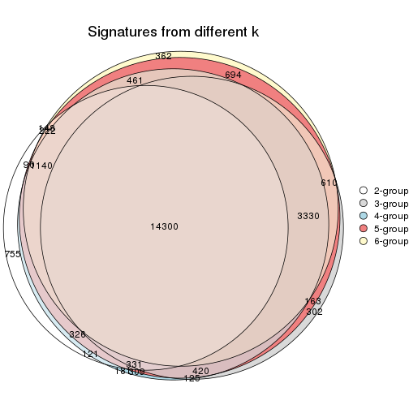
get_signature() returns a data frame invisibly. TO get the list of signatures, the function
call should be assigned to a variable explicitly. In following code, if plot argument is set
to FALSE, no heatmap is plotted while only the differential analysis is performed.
# code only for demonstration
tb = get_signature(res, k = ..., plot = FALSE)
An example of the output of tb is:
#> which_row fdr mean_1 mean_2 scaled_mean_1 scaled_mean_2 km
#> 1 38 0.042760348 8.373488 9.131774 -0.5533452 0.5164555 1
#> 2 40 0.018707592 7.106213 8.469186 -0.6173731 0.5762149 1
#> 3 55 0.019134737 10.221463 11.207825 -0.6159697 0.5749050 1
#> 4 59 0.006059896 5.921854 7.869574 -0.6899429 0.6439467 1
#> 5 60 0.018055526 8.928898 10.211722 -0.6204761 0.5791110 1
#> 6 98 0.009384629 15.714769 14.887706 0.6635654 -0.6193277 2
...
The columns in tb are:
which_row: row indices corresponding to the input matrix.fdr: FDR for the differential test. mean_x: The mean value in group x.scaled_mean_x: The mean value in group x after rows are scaled.km: Row groups if k-means clustering is applied to rows.UMAP plot which shows how samples are separated.
dimension_reduction(res, k = 2, method = "UMAP")
dimension_reduction(res, k = 3, method = "UMAP")
dimension_reduction(res, k = 4, method = "UMAP")
dimension_reduction(res, k = 5, method = "UMAP")
dimension_reduction(res, k = 6, method = "UMAP")
Following heatmap shows how subgroups are split when increasing k:
collect_classes(res)
Test correlation between subgroups and known annotations. If the known annotation is numeric, one-way ANOVA test is applied, and if the known annotation is discrete, chi-squared contingency table test is applied.
test_to_known_factors(res)
#> n specimen(p) individual(p) k
#> ATC:skmeans 64 0.210406 0.1312 2
#> ATC:skmeans 48 0.018487 0.1058 3
#> ATC:skmeans 63 0.000484 0.2605 4
#> ATC:skmeans 62 0.000763 0.0593 5
#> ATC:skmeans 50 0.030603 0.1416 6
If matrix rows can be associated to genes, consider to use GO_Enrichment(res,
...) to perform function enrichment for the signature genes.
The object with results only for a single top-value method and a single partition method can be extracted as:
res = res_list["ATC", "pam"]
# you can also extract it by
# res = res_list["ATC:pam"]
A summary of res and all the functions that can be applied to it:
res
#> A 'ConsensusPartition' object with k = 2, 3, 4, 5, 6.
#> On a matrix with 31633 rows and 64 columns.
#> Top rows (1000, 2000, 3000, 4000, 5000) are extracted by 'ATC' method.
#> Subgroups are detected by 'pam' method.
#> Performed in total 1250 partitions by row resampling.
#> Best k for subgroups seems to be 3.
#>
#> Following methods can be applied to this 'ConsensusPartition' object:
#> [1] "cola_report" "collect_classes" "collect_plots"
#> [4] "collect_stats" "colnames" "compare_signatures"
#> [7] "consensus_heatmap" "dimension_reduction" "functional_enrichment"
#> [10] "get_anno_col" "get_anno" "get_classes"
#> [13] "get_consensus" "get_matrix" "get_membership"
#> [16] "get_param" "get_signatures" "get_stats"
#> [19] "is_best_k" "is_stable_k" "membership_heatmap"
#> [22] "ncol" "nrow" "plot_ecdf"
#> [25] "rownames" "select_partition_number" "show"
#> [28] "suggest_best_k" "test_to_known_factors"
collect_plots() function collects all the plots made from res for all k (number of partitions)
into one single page to provide an easy and fast comparison between different k.
collect_plots(res)
The plots are:
k and the heatmap of
predicted classes for each k.k.k.k.All the plots in panels can be made by individual functions and they are plotted later in this section.
select_partition_number() produces several plots showing different
statistics for choosing “optimized” k. There are following statistics:
k;k, the area increased is defined as \(A_k - A_{k-1}\).The detailed explanations of these statistics can be found in the cola vignette.
Generally speaking, lower PAC score, higher mean silhouette score or higher
concordance corresponds to better partition. Rand index and Jaccard index
measure how similar the current partition is compared to partition with k-1.
If they are too similar, we won't accept k is better than k-1.
select_partition_number(res)
The numeric values for all these statistics can be obtained by get_stats().
get_stats(res)
#> k 1-PAC mean_silhouette concordance area_increased Rand Jaccard
#> 2 2 0.817 0.934 0.967 0.4948 0.497 0.497
#> 3 3 1.000 0.972 0.983 0.3405 0.664 0.424
#> 4 4 0.740 0.657 0.869 0.1322 0.854 0.596
#> 5 5 0.797 0.751 0.878 0.0691 0.867 0.531
#> 6 6 0.856 0.741 0.879 0.0436 0.915 0.612
suggest_best_k() suggests the best \(k\) based on these statistics. The rules are as follows:
NA.suggest_best_k(res)
#> [1] 3
Following shows the table of the partitions (You need to click the show/hide
code output link to see it). The membership matrix (columns with name p*)
is inferred by
clue::cl_consensus()
function with the SE method. Basically the value in the membership matrix
represents the probability to belong to a certain group. The finall class
label for an item is determined with the group with highest probability it
belongs to.
In get_classes() function, the entropy is calculated from the membership
matrix and the silhouette score is calculated from the consensus matrix.
cbind(get_classes(res, k = 2), get_membership(res, k = 2))
#> class entropy silhouette p1 p2
#> GSM1060118 1 0.000 0.941 1.000 0.000
#> GSM1060120 2 0.000 0.982 0.000 1.000
#> GSM1060122 2 0.000 0.982 0.000 1.000
#> GSM1060124 2 0.689 0.764 0.184 0.816
#> GSM1060126 2 0.000 0.982 0.000 1.000
#> GSM1060128 1 0.000 0.941 1.000 0.000
#> GSM1060130 1 0.000 0.941 1.000 0.000
#> GSM1060132 1 0.000 0.941 1.000 0.000
#> GSM1060134 1 0.738 0.785 0.792 0.208
#> GSM1060136 1 0.000 0.941 1.000 0.000
#> GSM1060138 1 0.000 0.941 1.000 0.000
#> GSM1060140 1 0.000 0.941 1.000 0.000
#> GSM1060142 1 0.000 0.941 1.000 0.000
#> GSM1060144 1 0.000 0.941 1.000 0.000
#> GSM1060146 1 0.000 0.941 1.000 0.000
#> GSM1060148 1 0.000 0.941 1.000 0.000
#> GSM1060150 2 0.000 0.982 0.000 1.000
#> GSM1060152 1 0.000 0.941 1.000 0.000
#> GSM1060154 1 0.000 0.941 1.000 0.000
#> GSM1060156 1 0.000 0.941 1.000 0.000
#> GSM1060158 2 0.000 0.982 0.000 1.000
#> GSM1060160 1 0.738 0.785 0.792 0.208
#> GSM1060162 2 0.000 0.982 0.000 1.000
#> GSM1060164 2 0.000 0.982 0.000 1.000
#> GSM1060166 1 0.000 0.941 1.000 0.000
#> GSM1060168 2 0.000 0.982 0.000 1.000
#> GSM1060170 2 0.000 0.982 0.000 1.000
#> GSM1060172 2 0.000 0.982 0.000 1.000
#> GSM1060174 2 0.000 0.982 0.000 1.000
#> GSM1060176 2 0.000 0.982 0.000 1.000
#> GSM1060178 1 0.000 0.941 1.000 0.000
#> GSM1060180 2 0.000 0.982 0.000 1.000
#> GSM1060117 1 0.000 0.941 1.000 0.000
#> GSM1060119 2 0.000 0.982 0.000 1.000
#> GSM1060121 2 0.000 0.982 0.000 1.000
#> GSM1060123 2 0.000 0.982 0.000 1.000
#> GSM1060125 1 0.224 0.920 0.964 0.036
#> GSM1060127 2 0.000 0.982 0.000 1.000
#> GSM1060129 1 0.738 0.785 0.792 0.208
#> GSM1060131 2 0.000 0.982 0.000 1.000
#> GSM1060133 2 0.000 0.982 0.000 1.000
#> GSM1060135 2 0.000 0.982 0.000 1.000
#> GSM1060137 1 0.738 0.785 0.792 0.208
#> GSM1060139 1 0.000 0.941 1.000 0.000
#> GSM1060141 1 0.000 0.941 1.000 0.000
#> GSM1060143 1 0.861 0.667 0.716 0.284
#> GSM1060145 1 0.000 0.941 1.000 0.000
#> GSM1060147 1 0.000 0.941 1.000 0.000
#> GSM1060149 2 0.689 0.764 0.184 0.816
#> GSM1060151 1 0.738 0.785 0.792 0.208
#> GSM1060153 1 0.738 0.785 0.792 0.208
#> GSM1060155 2 0.000 0.982 0.000 1.000
#> GSM1060157 2 0.689 0.764 0.184 0.816
#> GSM1060159 2 0.000 0.982 0.000 1.000
#> GSM1060161 2 0.000 0.982 0.000 1.000
#> GSM1060163 2 0.000 0.982 0.000 1.000
#> GSM1060165 2 0.000 0.982 0.000 1.000
#> GSM1060167 2 0.000 0.982 0.000 1.000
#> GSM1060169 2 0.000 0.982 0.000 1.000
#> GSM1060171 2 0.000 0.982 0.000 1.000
#> GSM1060173 2 0.000 0.982 0.000 1.000
#> GSM1060175 2 0.000 0.982 0.000 1.000
#> GSM1060177 2 0.000 0.982 0.000 1.000
#> GSM1060179 2 0.000 0.982 0.000 1.000
cbind(get_classes(res, k = 3), get_membership(res, k = 3))
#> class entropy silhouette p1 p2 p3
#> GSM1060118 1 0.0000 0.994 1.000 0.000 0.000
#> GSM1060120 2 0.0892 0.961 0.000 0.980 0.020
#> GSM1060122 3 0.1031 0.985 0.000 0.024 0.976
#> GSM1060124 3 0.1170 0.985 0.008 0.016 0.976
#> GSM1060126 3 0.1031 0.985 0.000 0.024 0.976
#> GSM1060128 1 0.0000 0.994 1.000 0.000 0.000
#> GSM1060130 1 0.0000 0.994 1.000 0.000 0.000
#> GSM1060132 1 0.0000 0.994 1.000 0.000 0.000
#> GSM1060134 3 0.0424 0.982 0.008 0.000 0.992
#> GSM1060136 3 0.1753 0.959 0.048 0.000 0.952
#> GSM1060138 1 0.0000 0.994 1.000 0.000 0.000
#> GSM1060140 1 0.0000 0.994 1.000 0.000 0.000
#> GSM1060142 1 0.0000 0.994 1.000 0.000 0.000
#> GSM1060144 1 0.0000 0.994 1.000 0.000 0.000
#> GSM1060146 1 0.0000 0.994 1.000 0.000 0.000
#> GSM1060148 1 0.0000 0.994 1.000 0.000 0.000
#> GSM1060150 3 0.1031 0.985 0.000 0.024 0.976
#> GSM1060152 1 0.0237 0.990 0.996 0.000 0.004
#> GSM1060154 3 0.1753 0.959 0.048 0.000 0.952
#> GSM1060156 1 0.0000 0.994 1.000 0.000 0.000
#> GSM1060158 3 0.1031 0.985 0.000 0.024 0.976
#> GSM1060160 3 0.1182 0.983 0.012 0.012 0.976
#> GSM1060162 2 0.0000 0.973 0.000 1.000 0.000
#> GSM1060164 3 0.1031 0.985 0.000 0.024 0.976
#> GSM1060166 3 0.1753 0.959 0.048 0.000 0.952
#> GSM1060168 2 0.0000 0.973 0.000 1.000 0.000
#> GSM1060170 3 0.1031 0.985 0.000 0.024 0.976
#> GSM1060172 3 0.1031 0.985 0.000 0.024 0.976
#> GSM1060174 2 0.0000 0.973 0.000 1.000 0.000
#> GSM1060176 2 0.0000 0.973 0.000 1.000 0.000
#> GSM1060178 1 0.0000 0.994 1.000 0.000 0.000
#> GSM1060180 3 0.1031 0.985 0.000 0.024 0.976
#> GSM1060117 1 0.0000 0.994 1.000 0.000 0.000
#> GSM1060119 2 0.0747 0.964 0.000 0.984 0.016
#> GSM1060121 3 0.0237 0.980 0.000 0.004 0.996
#> GSM1060123 2 0.1031 0.956 0.000 0.976 0.024
#> GSM1060125 3 0.0000 0.981 0.000 0.000 1.000
#> GSM1060127 2 0.0892 0.961 0.000 0.980 0.020
#> GSM1060129 3 0.0000 0.981 0.000 0.000 1.000
#> GSM1060131 3 0.1031 0.985 0.000 0.024 0.976
#> GSM1060133 2 0.1031 0.956 0.000 0.976 0.024
#> GSM1060135 2 0.5835 0.522 0.000 0.660 0.340
#> GSM1060137 3 0.0000 0.981 0.000 0.000 1.000
#> GSM1060139 1 0.0000 0.994 1.000 0.000 0.000
#> GSM1060141 1 0.0000 0.994 1.000 0.000 0.000
#> GSM1060143 3 0.0000 0.981 0.000 0.000 1.000
#> GSM1060145 1 0.1031 0.974 0.976 0.000 0.024
#> GSM1060147 1 0.2625 0.916 0.916 0.000 0.084
#> GSM1060149 3 0.1170 0.985 0.008 0.016 0.976
#> GSM1060151 3 0.0424 0.982 0.008 0.000 0.992
#> GSM1060153 3 0.0000 0.981 0.000 0.000 1.000
#> GSM1060155 3 0.0000 0.981 0.000 0.000 1.000
#> GSM1060157 3 0.1170 0.985 0.008 0.016 0.976
#> GSM1060159 3 0.1031 0.985 0.000 0.024 0.976
#> GSM1060161 2 0.0000 0.973 0.000 1.000 0.000
#> GSM1060163 2 0.0000 0.973 0.000 1.000 0.000
#> GSM1060165 2 0.0000 0.973 0.000 1.000 0.000
#> GSM1060167 2 0.0000 0.973 0.000 1.000 0.000
#> GSM1060169 2 0.0000 0.973 0.000 1.000 0.000
#> GSM1060171 2 0.0000 0.973 0.000 1.000 0.000
#> GSM1060173 2 0.0000 0.973 0.000 1.000 0.000
#> GSM1060175 2 0.0000 0.973 0.000 1.000 0.000
#> GSM1060177 2 0.0237 0.972 0.000 0.996 0.004
#> GSM1060179 3 0.1031 0.985 0.000 0.024 0.976
cbind(get_classes(res, k = 4), get_membership(res, k = 4))
#> class entropy silhouette p1 p2 p3 p4
#> GSM1060118 1 0.0000 0.938 1.000 0.000 0.000 0.000
#> GSM1060120 2 0.3569 0.737 0.000 0.804 0.196 0.000
#> GSM1060122 3 0.4996 -0.300 0.000 0.000 0.516 0.484
#> GSM1060124 3 0.4996 -0.300 0.000 0.000 0.516 0.484
#> GSM1060126 3 0.4996 -0.300 0.000 0.000 0.516 0.484
#> GSM1060128 1 0.0000 0.938 1.000 0.000 0.000 0.000
#> GSM1060130 1 0.0000 0.938 1.000 0.000 0.000 0.000
#> GSM1060132 1 0.0000 0.938 1.000 0.000 0.000 0.000
#> GSM1060134 4 0.4454 0.570 0.000 0.000 0.308 0.692
#> GSM1060136 4 0.4868 0.569 0.012 0.000 0.304 0.684
#> GSM1060138 1 0.0000 0.938 1.000 0.000 0.000 0.000
#> GSM1060140 1 0.0000 0.938 1.000 0.000 0.000 0.000
#> GSM1060142 1 0.0000 0.938 1.000 0.000 0.000 0.000
#> GSM1060144 1 0.0000 0.938 1.000 0.000 0.000 0.000
#> GSM1060146 1 0.0000 0.938 1.000 0.000 0.000 0.000
#> GSM1060148 1 0.0000 0.938 1.000 0.000 0.000 0.000
#> GSM1060150 3 0.0000 0.689 0.000 0.000 1.000 0.000
#> GSM1060152 1 0.4188 0.693 0.752 0.000 0.004 0.244
#> GSM1060154 4 0.4868 0.569 0.012 0.000 0.304 0.684
#> GSM1060156 1 0.3610 0.751 0.800 0.000 0.000 0.200
#> GSM1060158 3 0.0000 0.689 0.000 0.000 1.000 0.000
#> GSM1060160 3 0.3801 0.504 0.000 0.000 0.780 0.220
#> GSM1060162 2 0.0000 0.876 0.000 1.000 0.000 0.000
#> GSM1060164 3 0.0000 0.689 0.000 0.000 1.000 0.000
#> GSM1060166 1 0.7442 0.172 0.496 0.000 0.304 0.200
#> GSM1060168 2 0.0000 0.876 0.000 1.000 0.000 0.000
#> GSM1060170 3 0.0000 0.689 0.000 0.000 1.000 0.000
#> GSM1060172 3 0.0000 0.689 0.000 0.000 1.000 0.000
#> GSM1060174 2 0.0000 0.876 0.000 1.000 0.000 0.000
#> GSM1060176 2 0.4985 0.244 0.000 0.532 0.468 0.000
#> GSM1060178 1 0.0000 0.938 1.000 0.000 0.000 0.000
#> GSM1060180 3 0.0000 0.689 0.000 0.000 1.000 0.000
#> GSM1060117 1 0.0000 0.938 1.000 0.000 0.000 0.000
#> GSM1060119 2 0.3569 0.737 0.000 0.804 0.196 0.000
#> GSM1060121 4 0.3610 0.573 0.000 0.000 0.200 0.800
#> GSM1060123 2 0.1557 0.850 0.000 0.944 0.000 0.056
#> GSM1060125 4 0.4331 0.588 0.000 0.000 0.288 0.712
#> GSM1060127 2 0.2814 0.797 0.000 0.868 0.132 0.000
#> GSM1060129 4 0.5000 0.245 0.000 0.000 0.496 0.504
#> GSM1060131 3 0.5000 -0.329 0.000 0.000 0.504 0.496
#> GSM1060133 2 0.2335 0.844 0.000 0.920 0.020 0.060
#> GSM1060135 2 0.5756 0.635 0.000 0.692 0.224 0.084
#> GSM1060137 4 0.0188 0.667 0.000 0.000 0.004 0.996
#> GSM1060139 1 0.0000 0.938 1.000 0.000 0.000 0.000
#> GSM1060141 1 0.0000 0.938 1.000 0.000 0.000 0.000
#> GSM1060143 4 0.3610 0.573 0.000 0.000 0.200 0.800
#> GSM1060145 4 0.0000 0.667 0.000 0.000 0.000 1.000
#> GSM1060147 4 0.0000 0.667 0.000 0.000 0.000 1.000
#> GSM1060149 3 0.3610 0.521 0.000 0.000 0.800 0.200
#> GSM1060151 4 0.4431 0.575 0.000 0.000 0.304 0.696
#> GSM1060153 4 0.0000 0.667 0.000 0.000 0.000 1.000
#> GSM1060155 4 0.3610 0.573 0.000 0.000 0.200 0.800
#> GSM1060157 3 0.3610 0.521 0.000 0.000 0.800 0.200
#> GSM1060159 3 0.0000 0.689 0.000 0.000 1.000 0.000
#> GSM1060161 2 0.0000 0.876 0.000 1.000 0.000 0.000
#> GSM1060163 2 0.0000 0.876 0.000 1.000 0.000 0.000
#> GSM1060165 2 0.0000 0.876 0.000 1.000 0.000 0.000
#> GSM1060167 2 0.0000 0.876 0.000 1.000 0.000 0.000
#> GSM1060169 2 0.0000 0.876 0.000 1.000 0.000 0.000
#> GSM1060171 2 0.5000 0.177 0.000 0.504 0.496 0.000
#> GSM1060173 2 0.0000 0.876 0.000 1.000 0.000 0.000
#> GSM1060175 2 0.0000 0.876 0.000 1.000 0.000 0.000
#> GSM1060177 3 0.4454 0.200 0.000 0.308 0.692 0.000
#> GSM1060179 3 0.0000 0.689 0.000 0.000 1.000 0.000
cbind(get_classes(res, k = 5), get_membership(res, k = 5))
#> class entropy silhouette p1 p2 p3 p4 p5
#> GSM1060118 1 0.0000 0.924 1.000 0.000 0.000 0.000 0.000
#> GSM1060120 5 0.1732 0.788 0.000 0.080 0.000 0.000 0.920
#> GSM1060122 5 0.6553 -0.147 0.000 0.000 0.204 0.364 0.432
#> GSM1060124 4 0.5213 0.570 0.000 0.000 0.076 0.640 0.284
#> GSM1060126 4 0.6299 0.392 0.000 0.000 0.176 0.508 0.316
#> GSM1060128 1 0.0000 0.924 1.000 0.000 0.000 0.000 0.000
#> GSM1060130 1 0.0000 0.924 1.000 0.000 0.000 0.000 0.000
#> GSM1060132 1 0.0000 0.924 1.000 0.000 0.000 0.000 0.000
#> GSM1060134 4 0.3844 0.693 0.000 0.000 0.044 0.792 0.164
#> GSM1060136 4 0.4134 0.665 0.196 0.000 0.044 0.760 0.000
#> GSM1060138 1 0.3074 0.749 0.804 0.000 0.000 0.196 0.000
#> GSM1060140 1 0.0000 0.924 1.000 0.000 0.000 0.000 0.000
#> GSM1060142 1 0.0000 0.924 1.000 0.000 0.000 0.000 0.000
#> GSM1060144 1 0.0000 0.924 1.000 0.000 0.000 0.000 0.000
#> GSM1060146 1 0.0000 0.924 1.000 0.000 0.000 0.000 0.000
#> GSM1060148 1 0.0000 0.924 1.000 0.000 0.000 0.000 0.000
#> GSM1060150 3 0.0000 0.818 0.000 0.000 1.000 0.000 0.000
#> GSM1060152 1 0.4310 0.269 0.604 0.000 0.004 0.392 0.000
#> GSM1060154 4 0.4134 0.665 0.196 0.000 0.044 0.760 0.000
#> GSM1060156 1 0.3039 0.718 0.808 0.000 0.000 0.192 0.000
#> GSM1060158 3 0.3980 0.576 0.000 0.000 0.708 0.008 0.284
#> GSM1060160 3 0.4126 0.200 0.000 0.000 0.620 0.380 0.000
#> GSM1060162 2 0.0000 1.000 0.000 1.000 0.000 0.000 0.000
#> GSM1060164 3 0.0000 0.818 0.000 0.000 1.000 0.000 0.000
#> GSM1060166 4 0.6778 0.154 0.340 0.000 0.280 0.380 0.000
#> GSM1060168 2 0.0000 1.000 0.000 1.000 0.000 0.000 0.000
#> GSM1060170 3 0.0000 0.818 0.000 0.000 1.000 0.000 0.000
#> GSM1060172 3 0.0000 0.818 0.000 0.000 1.000 0.000 0.000
#> GSM1060174 2 0.0000 1.000 0.000 1.000 0.000 0.000 0.000
#> GSM1060176 3 0.4030 0.521 0.000 0.352 0.648 0.000 0.000
#> GSM1060178 1 0.0000 0.924 1.000 0.000 0.000 0.000 0.000
#> GSM1060180 3 0.0000 0.818 0.000 0.000 1.000 0.000 0.000
#> GSM1060117 1 0.0000 0.924 1.000 0.000 0.000 0.000 0.000
#> GSM1060119 5 0.1732 0.788 0.000 0.080 0.000 0.000 0.920
#> GSM1060121 5 0.0000 0.776 0.000 0.000 0.000 0.000 1.000
#> GSM1060123 5 0.3774 0.523 0.000 0.296 0.000 0.000 0.704
#> GSM1060125 4 0.0000 0.726 0.000 0.000 0.000 1.000 0.000
#> GSM1060127 5 0.1671 0.790 0.000 0.076 0.000 0.000 0.924
#> GSM1060129 4 0.4691 0.611 0.000 0.000 0.044 0.680 0.276
#> GSM1060131 5 0.2378 0.728 0.000 0.000 0.048 0.048 0.904
#> GSM1060133 5 0.3586 0.583 0.000 0.264 0.000 0.000 0.736
#> GSM1060135 5 0.0404 0.781 0.000 0.012 0.000 0.000 0.988
#> GSM1060137 4 0.1732 0.713 0.000 0.000 0.000 0.920 0.080
#> GSM1060139 1 0.0000 0.924 1.000 0.000 0.000 0.000 0.000
#> GSM1060141 1 0.3242 0.728 0.784 0.000 0.000 0.216 0.000
#> GSM1060143 4 0.3395 0.572 0.000 0.000 0.000 0.764 0.236
#> GSM1060145 4 0.1197 0.722 0.000 0.000 0.000 0.952 0.048
#> GSM1060147 4 0.1197 0.722 0.000 0.000 0.000 0.952 0.048
#> GSM1060149 3 0.0000 0.818 0.000 0.000 1.000 0.000 0.000
#> GSM1060151 4 0.3844 0.693 0.000 0.000 0.044 0.792 0.164
#> GSM1060153 4 0.1671 0.713 0.000 0.000 0.000 0.924 0.076
#> GSM1060155 5 0.1965 0.723 0.000 0.000 0.000 0.096 0.904
#> GSM1060157 3 0.0000 0.818 0.000 0.000 1.000 0.000 0.000
#> GSM1060159 3 0.1341 0.792 0.000 0.000 0.944 0.000 0.056
#> GSM1060161 2 0.0000 1.000 0.000 1.000 0.000 0.000 0.000
#> GSM1060163 2 0.0000 1.000 0.000 1.000 0.000 0.000 0.000
#> GSM1060165 2 0.0000 1.000 0.000 1.000 0.000 0.000 0.000
#> GSM1060167 2 0.0000 1.000 0.000 1.000 0.000 0.000 0.000
#> GSM1060169 2 0.0000 1.000 0.000 1.000 0.000 0.000 0.000
#> GSM1060171 3 0.3966 0.547 0.000 0.336 0.664 0.000 0.000
#> GSM1060173 2 0.0000 1.000 0.000 1.000 0.000 0.000 0.000
#> GSM1060175 2 0.0000 1.000 0.000 1.000 0.000 0.000 0.000
#> GSM1060177 3 0.3814 0.623 0.000 0.276 0.720 0.000 0.004
#> GSM1060179 3 0.3980 0.576 0.000 0.000 0.708 0.008 0.284
cbind(get_classes(res, k = 6), get_membership(res, k = 6))
#> class entropy silhouette p1 p2 p3 p4 p5 p6
#> GSM1060118 1 0.0000 0.9979 1.000 0.000 0.000 0.000 0.000 0.000
#> GSM1060120 6 0.0146 0.8562 0.000 0.000 0.000 0.000 0.004 0.996
#> GSM1060122 5 0.7014 0.0452 0.000 0.000 0.340 0.100 0.400 0.160
#> GSM1060124 5 0.3103 0.5602 0.000 0.000 0.000 0.100 0.836 0.064
#> GSM1060126 5 0.7167 0.1398 0.000 0.000 0.288 0.100 0.400 0.212
#> GSM1060128 1 0.0000 0.9979 1.000 0.000 0.000 0.000 0.000 0.000
#> GSM1060130 1 0.0146 0.9957 0.996 0.000 0.000 0.000 0.004 0.000
#> GSM1060132 1 0.0260 0.9919 0.992 0.000 0.000 0.000 0.008 0.000
#> GSM1060134 5 0.0146 0.6080 0.000 0.000 0.000 0.000 0.996 0.004
#> GSM1060136 5 0.0146 0.6075 0.000 0.000 0.000 0.004 0.996 0.000
#> GSM1060138 4 0.3843 0.3061 0.452 0.000 0.000 0.548 0.000 0.000
#> GSM1060140 1 0.0146 0.9947 0.996 0.000 0.000 0.004 0.000 0.000
#> GSM1060142 1 0.0000 0.9979 1.000 0.000 0.000 0.000 0.000 0.000
#> GSM1060144 1 0.0000 0.9979 1.000 0.000 0.000 0.000 0.000 0.000
#> GSM1060146 1 0.0146 0.9957 0.996 0.000 0.000 0.000 0.004 0.000
#> GSM1060148 1 0.0000 0.9979 1.000 0.000 0.000 0.000 0.000 0.000
#> GSM1060150 3 0.0000 0.8242 0.000 0.000 1.000 0.000 0.000 0.000
#> GSM1060152 5 0.3881 0.2724 0.396 0.000 0.000 0.004 0.600 0.000
#> GSM1060154 5 0.0146 0.6075 0.000 0.000 0.000 0.004 0.996 0.000
#> GSM1060156 5 0.3756 0.2673 0.400 0.000 0.000 0.000 0.600 0.000
#> GSM1060158 3 0.5692 0.4689 0.000 0.000 0.620 0.096 0.228 0.056
#> GSM1060160 5 0.3727 0.3302 0.000 0.000 0.388 0.000 0.612 0.000
#> GSM1060162 2 0.0000 1.0000 0.000 1.000 0.000 0.000 0.000 0.000
#> GSM1060164 3 0.0000 0.8242 0.000 0.000 1.000 0.000 0.000 0.000
#> GSM1060166 5 0.2996 0.4933 0.000 0.000 0.228 0.000 0.772 0.000
#> GSM1060168 2 0.0000 1.0000 0.000 1.000 0.000 0.000 0.000 0.000
#> GSM1060170 3 0.0000 0.8242 0.000 0.000 1.000 0.000 0.000 0.000
#> GSM1060172 3 0.0000 0.8242 0.000 0.000 1.000 0.000 0.000 0.000
#> GSM1060174 2 0.0000 1.0000 0.000 1.000 0.000 0.000 0.000 0.000
#> GSM1060176 3 0.3747 0.4650 0.000 0.396 0.604 0.000 0.000 0.000
#> GSM1060178 1 0.0000 0.9979 1.000 0.000 0.000 0.000 0.000 0.000
#> GSM1060180 3 0.0000 0.8242 0.000 0.000 1.000 0.000 0.000 0.000
#> GSM1060117 1 0.0000 0.9979 1.000 0.000 0.000 0.000 0.000 0.000
#> GSM1060119 6 0.0146 0.8562 0.000 0.000 0.000 0.000 0.004 0.996
#> GSM1060121 6 0.0713 0.8583 0.000 0.000 0.000 0.028 0.000 0.972
#> GSM1060123 6 0.1572 0.8431 0.000 0.036 0.000 0.028 0.000 0.936
#> GSM1060125 4 0.3684 0.4587 0.000 0.000 0.000 0.628 0.372 0.000
#> GSM1060127 6 0.0291 0.8569 0.000 0.004 0.000 0.000 0.004 0.992
#> GSM1060129 5 0.5714 0.2365 0.000 0.000 0.000 0.320 0.496 0.184
#> GSM1060131 6 0.5265 0.1028 0.000 0.000 0.000 0.100 0.400 0.500
#> GSM1060133 6 0.1572 0.8431 0.000 0.036 0.000 0.028 0.000 0.936
#> GSM1060135 6 0.0713 0.8583 0.000 0.000 0.000 0.028 0.000 0.972
#> GSM1060137 4 0.1152 0.7207 0.000 0.000 0.000 0.952 0.044 0.004
#> GSM1060139 1 0.0000 0.9979 1.000 0.000 0.000 0.000 0.000 0.000
#> GSM1060141 4 0.3774 0.4060 0.408 0.000 0.000 0.592 0.000 0.000
#> GSM1060143 4 0.0146 0.6897 0.000 0.000 0.000 0.996 0.000 0.004
#> GSM1060145 4 0.2135 0.7321 0.000 0.000 0.000 0.872 0.128 0.000
#> GSM1060147 4 0.2135 0.7321 0.000 0.000 0.000 0.872 0.128 0.000
#> GSM1060149 3 0.0000 0.8242 0.000 0.000 1.000 0.000 0.000 0.000
#> GSM1060151 5 0.0000 0.6083 0.000 0.000 0.000 0.000 1.000 0.000
#> GSM1060153 4 0.1958 0.7346 0.000 0.000 0.000 0.896 0.100 0.004
#> GSM1060155 6 0.3659 0.5522 0.000 0.000 0.000 0.364 0.000 0.636
#> GSM1060157 3 0.0000 0.8242 0.000 0.000 1.000 0.000 0.000 0.000
#> GSM1060159 3 0.0000 0.8242 0.000 0.000 1.000 0.000 0.000 0.000
#> GSM1060161 2 0.0000 1.0000 0.000 1.000 0.000 0.000 0.000 0.000
#> GSM1060163 2 0.0000 1.0000 0.000 1.000 0.000 0.000 0.000 0.000
#> GSM1060165 2 0.0000 1.0000 0.000 1.000 0.000 0.000 0.000 0.000
#> GSM1060167 2 0.0000 1.0000 0.000 1.000 0.000 0.000 0.000 0.000
#> GSM1060169 2 0.0000 1.0000 0.000 1.000 0.000 0.000 0.000 0.000
#> GSM1060171 3 0.3547 0.5761 0.000 0.332 0.668 0.000 0.000 0.000
#> GSM1060173 2 0.0000 1.0000 0.000 1.000 0.000 0.000 0.000 0.000
#> GSM1060175 2 0.0000 1.0000 0.000 1.000 0.000 0.000 0.000 0.000
#> GSM1060177 3 0.2996 0.6871 0.000 0.228 0.772 0.000 0.000 0.000
#> GSM1060179 3 0.5692 0.4689 0.000 0.000 0.620 0.096 0.228 0.056
Heatmaps for the consensus matrix. It visualizes the probability of two samples to be in a same group.
consensus_heatmap(res, k = 2)
consensus_heatmap(res, k = 3)
consensus_heatmap(res, k = 4)
consensus_heatmap(res, k = 5)
consensus_heatmap(res, k = 6)
Heatmaps for the membership of samples in all partitions to see how consistent they are:
membership_heatmap(res, k = 2)
membership_heatmap(res, k = 3)
membership_heatmap(res, k = 4)
membership_heatmap(res, k = 5)
membership_heatmap(res, k = 6)
As soon as we have had the classes for columns, we can look for signatures which are significantly different between classes which can be candidate marks for certain classes. Following are the heatmaps for signatures.
Signature heatmaps where rows are scaled:
get_signatures(res, k = 2)
get_signatures(res, k = 3)
get_signatures(res, k = 4)
get_signatures(res, k = 5)

get_signatures(res, k = 6)
Signature heatmaps where rows are not scaled:
get_signatures(res, k = 2, scale_rows = FALSE)

get_signatures(res, k = 3, scale_rows = FALSE)
get_signatures(res, k = 4, scale_rows = FALSE)
get_signatures(res, k = 5, scale_rows = FALSE)
get_signatures(res, k = 6, scale_rows = FALSE)
Compare the overlap of signatures from different k:
compare_signatures(res)
get_signature() returns a data frame invisibly. TO get the list of signatures, the function
call should be assigned to a variable explicitly. In following code, if plot argument is set
to FALSE, no heatmap is plotted while only the differential analysis is performed.
# code only for demonstration
tb = get_signature(res, k = ..., plot = FALSE)
An example of the output of tb is:
#> which_row fdr mean_1 mean_2 scaled_mean_1 scaled_mean_2 km
#> 1 38 0.042760348 8.373488 9.131774 -0.5533452 0.5164555 1
#> 2 40 0.018707592 7.106213 8.469186 -0.6173731 0.5762149 1
#> 3 55 0.019134737 10.221463 11.207825 -0.6159697 0.5749050 1
#> 4 59 0.006059896 5.921854 7.869574 -0.6899429 0.6439467 1
#> 5 60 0.018055526 8.928898 10.211722 -0.6204761 0.5791110 1
#> 6 98 0.009384629 15.714769 14.887706 0.6635654 -0.6193277 2
...
The columns in tb are:
which_row: row indices corresponding to the input matrix.fdr: FDR for the differential test. mean_x: The mean value in group x.scaled_mean_x: The mean value in group x after rows are scaled.km: Row groups if k-means clustering is applied to rows.UMAP plot which shows how samples are separated.
dimension_reduction(res, k = 2, method = "UMAP")

dimension_reduction(res, k = 3, method = "UMAP")
dimension_reduction(res, k = 4, method = "UMAP")
dimension_reduction(res, k = 5, method = "UMAP")
dimension_reduction(res, k = 6, method = "UMAP")
Following heatmap shows how subgroups are split when increasing k:
collect_classes(res)
Test correlation between subgroups and known annotations. If the known annotation is numeric, one-way ANOVA test is applied, and if the known annotation is discrete, chi-squared contingency table test is applied.
test_to_known_factors(res)
#> n specimen(p) individual(p) k
#> ATC:pam 64 0.13190 0.0419 2
#> ATC:pam 64 0.01969 0.0374 3
#> ATC:pam 55 0.00283 0.0270 4
#> ATC:pam 59 0.00896 0.0141 5
#> ATC:pam 50 0.00291 0.0828 6
If matrix rows can be associated to genes, consider to use GO_Enrichment(res,
...) to perform function enrichment for the signature genes.
The object with results only for a single top-value method and a single partition method can be extracted as:
res = res_list["ATC", "mclust"]
# you can also extract it by
# res = res_list["ATC:mclust"]
A summary of res and all the functions that can be applied to it:
res
#> A 'ConsensusPartition' object with k = 2, 3, 4, 5, 6.
#> On a matrix with 31633 rows and 64 columns.
#> Top rows (1000, 2000, 3000, 4000, 5000) are extracted by 'ATC' method.
#> Subgroups are detected by 'mclust' method.
#> Performed in total 1250 partitions by row resampling.
#> Best k for subgroups seems to be 6.
#>
#> Following methods can be applied to this 'ConsensusPartition' object:
#> [1] "cola_report" "collect_classes" "collect_plots"
#> [4] "collect_stats" "colnames" "compare_signatures"
#> [7] "consensus_heatmap" "dimension_reduction" "functional_enrichment"
#> [10] "get_anno_col" "get_anno" "get_classes"
#> [13] "get_consensus" "get_matrix" "get_membership"
#> [16] "get_param" "get_signatures" "get_stats"
#> [19] "is_best_k" "is_stable_k" "membership_heatmap"
#> [22] "ncol" "nrow" "plot_ecdf"
#> [25] "rownames" "select_partition_number" "show"
#> [28] "suggest_best_k" "test_to_known_factors"
collect_plots() function collects all the plots made from res for all k (number of partitions)
into one single page to provide an easy and fast comparison between different k.
collect_plots(res)
The plots are:
k and the heatmap of
predicted classes for each k.k.k.k.All the plots in panels can be made by individual functions and they are plotted later in this section.
select_partition_number() produces several plots showing different
statistics for choosing “optimized” k. There are following statistics:
k;k, the area increased is defined as \(A_k - A_{k-1}\).The detailed explanations of these statistics can be found in the cola vignette.
Generally speaking, lower PAC score, higher mean silhouette score or higher
concordance corresponds to better partition. Rand index and Jaccard index
measure how similar the current partition is compared to partition with k-1.
If they are too similar, we won't accept k is better than k-1.
select_partition_number(res)
The numeric values for all these statistics can be obtained by get_stats().
get_stats(res)
#> k 1-PAC mean_silhouette concordance area_increased Rand Jaccard
#> 2 2 1.000 0.932 0.974 0.4725 0.542 0.542
#> 3 3 0.890 0.874 0.947 0.4008 0.702 0.492
#> 4 4 0.910 0.841 0.927 0.0916 0.885 0.681
#> 5 5 0.931 0.866 0.920 0.1065 0.881 0.596
#> 6 6 0.951 0.912 0.951 0.0393 0.897 0.559
suggest_best_k() suggests the best \(k\) based on these statistics. The rules are as follows:
NA.suggest_best_k(res)
#> [1] 6
#> attr(,"optional")
#> [1] 2 4 5
There is also optional best \(k\) = 2 4 5 that is worth to check.
Following shows the table of the partitions (You need to click the show/hide
code output link to see it). The membership matrix (columns with name p*)
is inferred by
clue::cl_consensus()
function with the SE method. Basically the value in the membership matrix
represents the probability to belong to a certain group. The finall class
label for an item is determined with the group with highest probability it
belongs to.
In get_classes() function, the entropy is calculated from the membership
matrix and the silhouette score is calculated from the consensus matrix.
cbind(get_classes(res, k = 2), get_membership(res, k = 2))
#> class entropy silhouette p1 p2
#> GSM1060118 1 0.000 0.959 1.000 0.000
#> GSM1060120 1 0.000 0.959 1.000 0.000
#> GSM1060122 1 0.000 0.959 1.000 0.000
#> GSM1060124 1 0.000 0.959 1.000 0.000
#> GSM1060126 1 0.000 0.959 1.000 0.000
#> GSM1060128 1 0.000 0.959 1.000 0.000
#> GSM1060130 1 0.000 0.959 1.000 0.000
#> GSM1060132 1 0.000 0.959 1.000 0.000
#> GSM1060134 1 0.000 0.959 1.000 0.000
#> GSM1060136 1 0.000 0.959 1.000 0.000
#> GSM1060138 1 0.000 0.959 1.000 0.000
#> GSM1060140 1 0.000 0.959 1.000 0.000
#> GSM1060142 1 0.000 0.959 1.000 0.000
#> GSM1060144 1 0.000 0.959 1.000 0.000
#> GSM1060146 1 0.000 0.959 1.000 0.000
#> GSM1060148 1 0.000 0.959 1.000 0.000
#> GSM1060150 2 0.000 1.000 0.000 1.000
#> GSM1060152 1 0.000 0.959 1.000 0.000
#> GSM1060154 1 0.000 0.959 1.000 0.000
#> GSM1060156 1 0.000 0.959 1.000 0.000
#> GSM1060158 2 0.000 1.000 0.000 1.000
#> GSM1060160 1 0.999 0.142 0.520 0.480
#> GSM1060162 2 0.000 1.000 0.000 1.000
#> GSM1060164 2 0.000 1.000 0.000 1.000
#> GSM1060166 1 0.943 0.464 0.640 0.360
#> GSM1060168 2 0.000 1.000 0.000 1.000
#> GSM1060170 2 0.000 1.000 0.000 1.000
#> GSM1060172 2 0.000 1.000 0.000 1.000
#> GSM1060174 2 0.000 1.000 0.000 1.000
#> GSM1060176 2 0.000 1.000 0.000 1.000
#> GSM1060178 1 0.999 0.142 0.520 0.480
#> GSM1060180 2 0.000 1.000 0.000 1.000
#> GSM1060117 1 0.000 0.959 1.000 0.000
#> GSM1060119 1 0.000 0.959 1.000 0.000
#> GSM1060121 1 0.000 0.959 1.000 0.000
#> GSM1060123 1 0.000 0.959 1.000 0.000
#> GSM1060125 1 0.000 0.959 1.000 0.000
#> GSM1060127 1 0.000 0.959 1.000 0.000
#> GSM1060129 1 0.000 0.959 1.000 0.000
#> GSM1060131 1 0.000 0.959 1.000 0.000
#> GSM1060133 1 0.000 0.959 1.000 0.000
#> GSM1060135 1 0.000 0.959 1.000 0.000
#> GSM1060137 1 0.000 0.959 1.000 0.000
#> GSM1060139 1 0.000 0.959 1.000 0.000
#> GSM1060141 1 0.000 0.959 1.000 0.000
#> GSM1060143 1 0.000 0.959 1.000 0.000
#> GSM1060145 1 0.000 0.959 1.000 0.000
#> GSM1060147 1 0.000 0.959 1.000 0.000
#> GSM1060149 2 0.000 1.000 0.000 1.000
#> GSM1060151 1 0.000 0.959 1.000 0.000
#> GSM1060153 1 0.000 0.959 1.000 0.000
#> GSM1060155 1 0.000 0.959 1.000 0.000
#> GSM1060157 2 0.000 1.000 0.000 1.000
#> GSM1060159 2 0.000 1.000 0.000 1.000
#> GSM1060161 2 0.000 1.000 0.000 1.000
#> GSM1060163 2 0.000 1.000 0.000 1.000
#> GSM1060165 2 0.000 1.000 0.000 1.000
#> GSM1060167 2 0.000 1.000 0.000 1.000
#> GSM1060169 1 0.932 0.492 0.652 0.348
#> GSM1060171 2 0.000 1.000 0.000 1.000
#> GSM1060173 2 0.000 1.000 0.000 1.000
#> GSM1060175 2 0.000 1.000 0.000 1.000
#> GSM1060177 2 0.000 1.000 0.000 1.000
#> GSM1060179 2 0.000 1.000 0.000 1.000
cbind(get_classes(res, k = 3), get_membership(res, k = 3))
#> class entropy silhouette p1 p2 p3
#> GSM1060118 2 0.0000 0.9224 0.000 1.000 0
#> GSM1060120 1 0.0000 0.8560 1.000 0.000 0
#> GSM1060122 1 0.0000 0.8560 1.000 0.000 0
#> GSM1060124 1 0.0000 0.8560 1.000 0.000 0
#> GSM1060126 1 0.0000 0.8560 1.000 0.000 0
#> GSM1060128 1 0.6309 0.1846 0.504 0.496 0
#> GSM1060130 1 0.4750 0.7400 0.784 0.216 0
#> GSM1060132 1 0.0000 0.8560 1.000 0.000 0
#> GSM1060134 1 0.3619 0.7946 0.864 0.136 0
#> GSM1060136 1 0.0237 0.8548 0.996 0.004 0
#> GSM1060138 2 0.0000 0.9224 0.000 1.000 0
#> GSM1060140 2 0.0000 0.9224 0.000 1.000 0
#> GSM1060142 2 0.6180 0.0764 0.416 0.584 0
#> GSM1060144 2 0.0000 0.9224 0.000 1.000 0
#> GSM1060146 1 0.0000 0.8560 1.000 0.000 0
#> GSM1060148 2 0.0000 0.9224 0.000 1.000 0
#> GSM1060150 3 0.0000 1.0000 0.000 0.000 1
#> GSM1060152 1 0.5591 0.6532 0.696 0.304 0
#> GSM1060154 1 0.5591 0.6532 0.696 0.304 0
#> GSM1060156 1 0.5591 0.6532 0.696 0.304 0
#> GSM1060158 3 0.0000 1.0000 0.000 0.000 1
#> GSM1060160 3 0.0000 1.0000 0.000 0.000 1
#> GSM1060162 3 0.0000 1.0000 0.000 0.000 1
#> GSM1060164 3 0.0000 1.0000 0.000 0.000 1
#> GSM1060166 3 0.0000 1.0000 0.000 0.000 1
#> GSM1060168 3 0.0000 1.0000 0.000 0.000 1
#> GSM1060170 3 0.0000 1.0000 0.000 0.000 1
#> GSM1060172 3 0.0000 1.0000 0.000 0.000 1
#> GSM1060174 3 0.0000 1.0000 0.000 0.000 1
#> GSM1060176 3 0.0000 1.0000 0.000 0.000 1
#> GSM1060178 3 0.0000 1.0000 0.000 0.000 1
#> GSM1060180 3 0.0000 1.0000 0.000 0.000 1
#> GSM1060117 2 0.0000 0.9224 0.000 1.000 0
#> GSM1060119 1 0.0000 0.8560 1.000 0.000 0
#> GSM1060121 2 0.6168 0.1376 0.412 0.588 0
#> GSM1060123 2 0.5016 0.5992 0.240 0.760 0
#> GSM1060125 2 0.0000 0.9224 0.000 1.000 0
#> GSM1060127 1 0.0000 0.8560 1.000 0.000 0
#> GSM1060129 1 0.0000 0.8560 1.000 0.000 0
#> GSM1060131 1 0.0000 0.8560 1.000 0.000 0
#> GSM1060133 1 0.5431 0.6765 0.716 0.284 0
#> GSM1060135 1 0.0000 0.8560 1.000 0.000 0
#> GSM1060137 2 0.0000 0.9224 0.000 1.000 0
#> GSM1060139 2 0.0000 0.9224 0.000 1.000 0
#> GSM1060141 2 0.0000 0.9224 0.000 1.000 0
#> GSM1060143 2 0.0000 0.9224 0.000 1.000 0
#> GSM1060145 2 0.0000 0.9224 0.000 1.000 0
#> GSM1060147 2 0.0000 0.9224 0.000 1.000 0
#> GSM1060149 3 0.0000 1.0000 0.000 0.000 1
#> GSM1060151 1 0.5591 0.6532 0.696 0.304 0
#> GSM1060153 2 0.0000 0.9224 0.000 1.000 0
#> GSM1060155 2 0.0000 0.9224 0.000 1.000 0
#> GSM1060157 3 0.0000 1.0000 0.000 0.000 1
#> GSM1060159 3 0.0000 1.0000 0.000 0.000 1
#> GSM1060161 3 0.0000 1.0000 0.000 0.000 1
#> GSM1060163 3 0.0000 1.0000 0.000 0.000 1
#> GSM1060165 3 0.0000 1.0000 0.000 0.000 1
#> GSM1060167 3 0.0000 1.0000 0.000 0.000 1
#> GSM1060169 3 0.0000 1.0000 0.000 0.000 1
#> GSM1060171 3 0.0000 1.0000 0.000 0.000 1
#> GSM1060173 3 0.0000 1.0000 0.000 0.000 1
#> GSM1060175 3 0.0000 1.0000 0.000 0.000 1
#> GSM1060177 3 0.0000 1.0000 0.000 0.000 1
#> GSM1060179 3 0.0000 1.0000 0.000 0.000 1
cbind(get_classes(res, k = 4), get_membership(res, k = 4))
#> class entropy silhouette p1 p2 p3 p4
#> GSM1060118 1 0.4431 0.6233 0.696 0.000 0.000 0.304
#> GSM1060120 2 0.0000 0.9253 0.000 1.000 0.000 0.000
#> GSM1060122 2 0.0000 0.9253 0.000 1.000 0.000 0.000
#> GSM1060124 2 0.0188 0.9246 0.004 0.996 0.000 0.000
#> GSM1060126 2 0.0000 0.9253 0.000 1.000 0.000 0.000
#> GSM1060128 1 0.0188 0.8005 0.996 0.004 0.000 0.000
#> GSM1060130 1 0.0336 0.8013 0.992 0.008 0.000 0.000
#> GSM1060132 1 0.4193 0.6011 0.732 0.268 0.000 0.000
#> GSM1060134 1 0.4382 0.5540 0.704 0.296 0.000 0.000
#> GSM1060136 1 0.2149 0.7708 0.912 0.088 0.000 0.000
#> GSM1060138 4 0.1118 0.8535 0.036 0.000 0.000 0.964
#> GSM1060140 4 0.4679 0.2439 0.352 0.000 0.000 0.648
#> GSM1060142 1 0.1978 0.7818 0.928 0.004 0.000 0.068
#> GSM1060144 1 0.4477 0.6120 0.688 0.000 0.000 0.312
#> GSM1060146 1 0.4193 0.6011 0.732 0.268 0.000 0.000
#> GSM1060148 1 0.4431 0.6233 0.696 0.000 0.000 0.304
#> GSM1060150 3 0.0188 0.9932 0.004 0.000 0.996 0.000
#> GSM1060152 1 0.0336 0.8013 0.992 0.008 0.000 0.000
#> GSM1060154 1 0.0336 0.8013 0.992 0.008 0.000 0.000
#> GSM1060156 1 0.0336 0.8013 0.992 0.008 0.000 0.000
#> GSM1060158 3 0.0188 0.9932 0.004 0.000 0.996 0.000
#> GSM1060160 3 0.1022 0.9673 0.032 0.000 0.968 0.000
#> GSM1060162 3 0.0000 0.9937 0.000 0.000 1.000 0.000
#> GSM1060164 3 0.0188 0.9932 0.004 0.000 0.996 0.000
#> GSM1060166 3 0.1022 0.9673 0.032 0.000 0.968 0.000
#> GSM1060168 3 0.0188 0.9932 0.004 0.000 0.996 0.000
#> GSM1060170 3 0.0000 0.9937 0.000 0.000 1.000 0.000
#> GSM1060172 3 0.0188 0.9932 0.004 0.000 0.996 0.000
#> GSM1060174 3 0.0000 0.9937 0.000 0.000 1.000 0.000
#> GSM1060176 3 0.0000 0.9937 0.000 0.000 1.000 0.000
#> GSM1060178 3 0.1022 0.9673 0.032 0.000 0.968 0.000
#> GSM1060180 3 0.0188 0.9932 0.004 0.000 0.996 0.000
#> GSM1060117 1 0.4431 0.6233 0.696 0.000 0.000 0.304
#> GSM1060119 2 0.0000 0.9253 0.000 1.000 0.000 0.000
#> GSM1060121 4 0.5723 0.2775 0.032 0.388 0.000 0.580
#> GSM1060123 4 0.5673 0.3169 0.032 0.372 0.000 0.596
#> GSM1060125 4 0.1211 0.8513 0.040 0.000 0.000 0.960
#> GSM1060127 2 0.0000 0.9253 0.000 1.000 0.000 0.000
#> GSM1060129 2 0.1022 0.9111 0.032 0.968 0.000 0.000
#> GSM1060131 2 0.1022 0.9111 0.032 0.968 0.000 0.000
#> GSM1060133 2 0.5821 0.0515 0.032 0.536 0.000 0.432
#> GSM1060135 2 0.1022 0.9111 0.032 0.968 0.000 0.000
#> GSM1060137 4 0.0000 0.8497 0.000 0.000 0.000 1.000
#> GSM1060139 1 0.4431 0.6233 0.696 0.000 0.000 0.304
#> GSM1060141 4 0.1118 0.8535 0.036 0.000 0.000 0.964
#> GSM1060143 4 0.1118 0.8535 0.036 0.000 0.000 0.964
#> GSM1060145 4 0.0000 0.8497 0.000 0.000 0.000 1.000
#> GSM1060147 4 0.0000 0.8497 0.000 0.000 0.000 1.000
#> GSM1060149 3 0.0188 0.9932 0.004 0.000 0.996 0.000
#> GSM1060151 1 0.0376 0.8006 0.992 0.004 0.000 0.004
#> GSM1060153 4 0.0000 0.8497 0.000 0.000 0.000 1.000
#> GSM1060155 4 0.1209 0.8525 0.032 0.004 0.000 0.964
#> GSM1060157 3 0.0000 0.9937 0.000 0.000 1.000 0.000
#> GSM1060159 3 0.0188 0.9932 0.004 0.000 0.996 0.000
#> GSM1060161 3 0.0000 0.9937 0.000 0.000 1.000 0.000
#> GSM1060163 3 0.0000 0.9937 0.000 0.000 1.000 0.000
#> GSM1060165 3 0.0000 0.9937 0.000 0.000 1.000 0.000
#> GSM1060167 3 0.0000 0.9937 0.000 0.000 1.000 0.000
#> GSM1060169 3 0.0779 0.9786 0.004 0.016 0.980 0.000
#> GSM1060171 3 0.0188 0.9932 0.004 0.000 0.996 0.000
#> GSM1060173 3 0.0000 0.9937 0.000 0.000 1.000 0.000
#> GSM1060175 3 0.0000 0.9937 0.000 0.000 1.000 0.000
#> GSM1060177 3 0.0000 0.9937 0.000 0.000 1.000 0.000
#> GSM1060179 3 0.0000 0.9937 0.000 0.000 1.000 0.000
cbind(get_classes(res, k = 5), get_membership(res, k = 5))
#> class entropy silhouette p1 p2 p3 p4 p5
#> GSM1060118 1 0.2110 0.942 0.912 0.000 0.072 0.016 0.000
#> GSM1060120 5 0.0162 0.935 0.000 0.000 0.004 0.000 0.996
#> GSM1060122 5 0.0000 0.936 0.000 0.000 0.000 0.000 1.000
#> GSM1060124 5 0.0290 0.933 0.008 0.000 0.000 0.000 0.992
#> GSM1060126 5 0.0000 0.936 0.000 0.000 0.000 0.000 1.000
#> GSM1060128 1 0.1179 0.956 0.964 0.000 0.016 0.016 0.004
#> GSM1060130 1 0.0290 0.958 0.992 0.000 0.000 0.000 0.008
#> GSM1060132 1 0.0290 0.958 0.992 0.000 0.000 0.000 0.008
#> GSM1060134 5 0.4150 0.396 0.388 0.000 0.000 0.000 0.612
#> GSM1060136 1 0.0290 0.958 0.992 0.000 0.000 0.000 0.008
#> GSM1060138 4 0.5124 0.465 0.288 0.000 0.068 0.644 0.000
#> GSM1060140 1 0.2236 0.938 0.908 0.000 0.068 0.024 0.000
#> GSM1060142 1 0.0833 0.957 0.976 0.000 0.004 0.016 0.004
#> GSM1060144 1 0.2110 0.942 0.912 0.000 0.072 0.016 0.000
#> GSM1060146 1 0.0290 0.958 0.992 0.000 0.000 0.000 0.008
#> GSM1060148 1 0.2110 0.942 0.912 0.000 0.072 0.016 0.000
#> GSM1060150 3 0.1908 0.920 0.000 0.092 0.908 0.000 0.000
#> GSM1060152 1 0.0290 0.958 0.992 0.000 0.000 0.000 0.008
#> GSM1060154 1 0.0290 0.958 0.992 0.000 0.000 0.000 0.008
#> GSM1060156 1 0.0162 0.958 0.996 0.000 0.000 0.000 0.004
#> GSM1060158 2 0.0162 0.992 0.000 0.996 0.004 0.000 0.000
#> GSM1060160 3 0.1768 0.913 0.000 0.072 0.924 0.000 0.004
#> GSM1060162 2 0.0000 0.995 0.000 1.000 0.000 0.000 0.000
#> GSM1060164 3 0.1908 0.920 0.000 0.092 0.908 0.000 0.000
#> GSM1060166 3 0.1864 0.910 0.004 0.068 0.924 0.000 0.004
#> GSM1060168 2 0.0162 0.992 0.000 0.996 0.004 0.000 0.000
#> GSM1060170 3 0.1908 0.920 0.000 0.092 0.908 0.000 0.000
#> GSM1060172 3 0.1908 0.920 0.000 0.092 0.908 0.000 0.000
#> GSM1060174 2 0.0000 0.995 0.000 1.000 0.000 0.000 0.000
#> GSM1060176 2 0.0000 0.995 0.000 1.000 0.000 0.000 0.000
#> GSM1060178 3 0.1768 0.913 0.000 0.072 0.924 0.000 0.004
#> GSM1060180 3 0.1792 0.919 0.000 0.084 0.916 0.000 0.000
#> GSM1060117 1 0.2110 0.942 0.912 0.000 0.072 0.016 0.000
#> GSM1060119 5 0.0162 0.935 0.000 0.000 0.004 0.000 0.996
#> GSM1060121 4 0.4639 0.453 0.020 0.000 0.000 0.612 0.368
#> GSM1060123 4 0.4066 0.524 0.004 0.000 0.000 0.672 0.324
#> GSM1060125 4 0.1412 0.779 0.008 0.000 0.036 0.952 0.004
#> GSM1060127 5 0.0162 0.935 0.000 0.000 0.004 0.000 0.996
#> GSM1060129 5 0.0609 0.922 0.020 0.000 0.000 0.000 0.980
#> GSM1060131 5 0.0000 0.936 0.000 0.000 0.000 0.000 1.000
#> GSM1060133 4 0.4415 0.309 0.004 0.000 0.000 0.552 0.444
#> GSM1060135 5 0.0162 0.935 0.004 0.000 0.000 0.000 0.996
#> GSM1060137 4 0.0000 0.790 0.000 0.000 0.000 1.000 0.000
#> GSM1060139 1 0.2110 0.942 0.912 0.000 0.072 0.016 0.000
#> GSM1060141 4 0.5284 0.392 0.324 0.000 0.068 0.608 0.000
#> GSM1060143 4 0.0324 0.789 0.004 0.000 0.000 0.992 0.004
#> GSM1060145 4 0.0000 0.790 0.000 0.000 0.000 1.000 0.000
#> GSM1060147 4 0.0000 0.790 0.000 0.000 0.000 1.000 0.000
#> GSM1060149 3 0.1792 0.919 0.000 0.084 0.916 0.000 0.000
#> GSM1060151 1 0.0510 0.952 0.984 0.000 0.000 0.000 0.016
#> GSM1060153 4 0.0000 0.790 0.000 0.000 0.000 1.000 0.000
#> GSM1060155 4 0.2390 0.751 0.020 0.000 0.000 0.896 0.084
#> GSM1060157 3 0.1851 0.919 0.000 0.088 0.912 0.000 0.000
#> GSM1060159 3 0.3074 0.834 0.000 0.196 0.804 0.000 0.000
#> GSM1060161 2 0.0000 0.995 0.000 1.000 0.000 0.000 0.000
#> GSM1060163 2 0.0000 0.995 0.000 1.000 0.000 0.000 0.000
#> GSM1060165 2 0.0000 0.995 0.000 1.000 0.000 0.000 0.000
#> GSM1060167 2 0.0000 0.995 0.000 1.000 0.000 0.000 0.000
#> GSM1060169 2 0.0955 0.962 0.000 0.968 0.000 0.004 0.028
#> GSM1060171 3 0.4192 0.504 0.000 0.404 0.596 0.000 0.000
#> GSM1060173 2 0.0000 0.995 0.000 1.000 0.000 0.000 0.000
#> GSM1060175 2 0.0000 0.995 0.000 1.000 0.000 0.000 0.000
#> GSM1060177 3 0.4262 0.397 0.000 0.440 0.560 0.000 0.000
#> GSM1060179 2 0.0290 0.988 0.000 0.992 0.008 0.000 0.000
cbind(get_classes(res, k = 6), get_membership(res, k = 6))
#> class entropy silhouette p1 p2 p3 p4 p5 p6
#> GSM1060118 1 0.0000 0.883 1.000 0.000 0.000 0.000 0.000 0.000
#> GSM1060120 6 0.0000 0.997 0.000 0.000 0.000 0.000 0.000 1.000
#> GSM1060122 6 0.0000 0.997 0.000 0.000 0.000 0.000 0.000 1.000
#> GSM1060124 6 0.0547 0.975 0.000 0.000 0.000 0.000 0.020 0.980
#> GSM1060126 6 0.0000 0.997 0.000 0.000 0.000 0.000 0.000 1.000
#> GSM1060128 5 0.1610 0.873 0.084 0.000 0.000 0.000 0.916 0.000
#> GSM1060130 5 0.0000 0.917 0.000 0.000 0.000 0.000 1.000 0.000
#> GSM1060132 5 0.0000 0.917 0.000 0.000 0.000 0.000 1.000 0.000
#> GSM1060134 1 0.4108 0.751 0.744 0.000 0.000 0.000 0.092 0.164
#> GSM1060136 1 0.2912 0.816 0.784 0.000 0.000 0.000 0.216 0.000
#> GSM1060138 1 0.1714 0.872 0.908 0.000 0.000 0.092 0.000 0.000
#> GSM1060140 1 0.1501 0.876 0.924 0.000 0.000 0.076 0.000 0.000
#> GSM1060142 5 0.2912 0.699 0.216 0.000 0.000 0.000 0.784 0.000
#> GSM1060144 1 0.0000 0.883 1.000 0.000 0.000 0.000 0.000 0.000
#> GSM1060146 5 0.0000 0.917 0.000 0.000 0.000 0.000 1.000 0.000
#> GSM1060148 1 0.0000 0.883 1.000 0.000 0.000 0.000 0.000 0.000
#> GSM1060150 3 0.0000 0.934 0.000 0.000 1.000 0.000 0.000 0.000
#> GSM1060152 1 0.2941 0.812 0.780 0.000 0.000 0.000 0.220 0.000
#> GSM1060154 1 0.2883 0.819 0.788 0.000 0.000 0.000 0.212 0.000
#> GSM1060156 1 0.2912 0.816 0.784 0.000 0.000 0.000 0.216 0.000
#> GSM1060158 3 0.2969 0.734 0.000 0.224 0.776 0.000 0.000 0.000
#> GSM1060160 3 0.0000 0.934 0.000 0.000 1.000 0.000 0.000 0.000
#> GSM1060162 2 0.0000 0.984 0.000 1.000 0.000 0.000 0.000 0.000
#> GSM1060164 3 0.0000 0.934 0.000 0.000 1.000 0.000 0.000 0.000
#> GSM1060166 3 0.0458 0.924 0.000 0.000 0.984 0.000 0.016 0.000
#> GSM1060168 3 0.3695 0.467 0.000 0.376 0.624 0.000 0.000 0.000
#> GSM1060170 3 0.0000 0.934 0.000 0.000 1.000 0.000 0.000 0.000
#> GSM1060172 3 0.0000 0.934 0.000 0.000 1.000 0.000 0.000 0.000
#> GSM1060174 2 0.0000 0.984 0.000 1.000 0.000 0.000 0.000 0.000
#> GSM1060176 2 0.0000 0.984 0.000 1.000 0.000 0.000 0.000 0.000
#> GSM1060178 3 0.0000 0.934 0.000 0.000 1.000 0.000 0.000 0.000
#> GSM1060180 3 0.0000 0.934 0.000 0.000 1.000 0.000 0.000 0.000
#> GSM1060117 1 0.0000 0.883 1.000 0.000 0.000 0.000 0.000 0.000
#> GSM1060119 6 0.0000 0.997 0.000 0.000 0.000 0.000 0.000 1.000
#> GSM1060121 4 0.1556 0.913 0.000 0.000 0.000 0.920 0.000 0.080
#> GSM1060123 4 0.1501 0.915 0.000 0.000 0.000 0.924 0.000 0.076
#> GSM1060125 1 0.1765 0.871 0.904 0.000 0.000 0.096 0.000 0.000
#> GSM1060127 6 0.0000 0.997 0.000 0.000 0.000 0.000 0.000 1.000
#> GSM1060129 6 0.0000 0.997 0.000 0.000 0.000 0.000 0.000 1.000
#> GSM1060131 6 0.0000 0.997 0.000 0.000 0.000 0.000 0.000 1.000
#> GSM1060133 4 0.2491 0.828 0.000 0.000 0.000 0.836 0.000 0.164
#> GSM1060135 6 0.0000 0.997 0.000 0.000 0.000 0.000 0.000 1.000
#> GSM1060137 4 0.0000 0.949 0.000 0.000 0.000 1.000 0.000 0.000
#> GSM1060139 1 0.0000 0.883 1.000 0.000 0.000 0.000 0.000 0.000
#> GSM1060141 1 0.1714 0.872 0.908 0.000 0.000 0.092 0.000 0.000
#> GSM1060143 4 0.0000 0.949 0.000 0.000 0.000 1.000 0.000 0.000
#> GSM1060145 4 0.0000 0.949 0.000 0.000 0.000 1.000 0.000 0.000
#> GSM1060147 4 0.0000 0.949 0.000 0.000 0.000 1.000 0.000 0.000
#> GSM1060149 3 0.0000 0.934 0.000 0.000 1.000 0.000 0.000 0.000
#> GSM1060151 1 0.2558 0.864 0.868 0.000 0.000 0.000 0.104 0.028
#> GSM1060153 4 0.0000 0.949 0.000 0.000 0.000 1.000 0.000 0.000
#> GSM1060155 4 0.0547 0.944 0.000 0.000 0.000 0.980 0.000 0.020
#> GSM1060157 3 0.0000 0.934 0.000 0.000 1.000 0.000 0.000 0.000
#> GSM1060159 3 0.0865 0.913 0.000 0.036 0.964 0.000 0.000 0.000
#> GSM1060161 2 0.0000 0.984 0.000 1.000 0.000 0.000 0.000 0.000
#> GSM1060163 2 0.0000 0.984 0.000 1.000 0.000 0.000 0.000 0.000
#> GSM1060165 2 0.0000 0.984 0.000 1.000 0.000 0.000 0.000 0.000
#> GSM1060167 2 0.0000 0.984 0.000 1.000 0.000 0.000 0.000 0.000
#> GSM1060169 2 0.0146 0.981 0.000 0.996 0.000 0.000 0.000 0.004
#> GSM1060171 3 0.1663 0.870 0.000 0.088 0.912 0.000 0.000 0.000
#> GSM1060173 2 0.0000 0.984 0.000 1.000 0.000 0.000 0.000 0.000
#> GSM1060175 2 0.0000 0.984 0.000 1.000 0.000 0.000 0.000 0.000
#> GSM1060177 2 0.1556 0.904 0.000 0.920 0.080 0.000 0.000 0.000
#> GSM1060179 2 0.1204 0.932 0.000 0.944 0.056 0.000 0.000 0.000
Heatmaps for the consensus matrix. It visualizes the probability of two samples to be in a same group.
consensus_heatmap(res, k = 2)
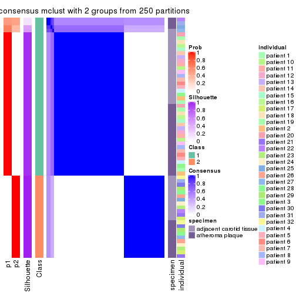
consensus_heatmap(res, k = 3)

consensus_heatmap(res, k = 4)
consensus_heatmap(res, k = 5)
consensus_heatmap(res, k = 6)
Heatmaps for the membership of samples in all partitions to see how consistent they are:
membership_heatmap(res, k = 2)
membership_heatmap(res, k = 3)
membership_heatmap(res, k = 4)
membership_heatmap(res, k = 5)
membership_heatmap(res, k = 6)
As soon as we have had the classes for columns, we can look for signatures which are significantly different between classes which can be candidate marks for certain classes. Following are the heatmaps for signatures.
Signature heatmaps where rows are scaled:
get_signatures(res, k = 2)
get_signatures(res, k = 3)

get_signatures(res, k = 4)
get_signatures(res, k = 5)
get_signatures(res, k = 6)

Signature heatmaps where rows are not scaled:
get_signatures(res, k = 2, scale_rows = FALSE)
get_signatures(res, k = 3, scale_rows = FALSE)
get_signatures(res, k = 4, scale_rows = FALSE)
get_signatures(res, k = 5, scale_rows = FALSE)
get_signatures(res, k = 6, scale_rows = FALSE)
Compare the overlap of signatures from different k:
compare_signatures(res)
get_signature() returns a data frame invisibly. TO get the list of signatures, the function
call should be assigned to a variable explicitly. In following code, if plot argument is set
to FALSE, no heatmap is plotted while only the differential analysis is performed.
# code only for demonstration
tb = get_signature(res, k = ..., plot = FALSE)
An example of the output of tb is:
#> which_row fdr mean_1 mean_2 scaled_mean_1 scaled_mean_2 km
#> 1 38 0.042760348 8.373488 9.131774 -0.5533452 0.5164555 1
#> 2 40 0.018707592 7.106213 8.469186 -0.6173731 0.5762149 1
#> 3 55 0.019134737 10.221463 11.207825 -0.6159697 0.5749050 1
#> 4 59 0.006059896 5.921854 7.869574 -0.6899429 0.6439467 1
#> 5 60 0.018055526 8.928898 10.211722 -0.6204761 0.5791110 1
#> 6 98 0.009384629 15.714769 14.887706 0.6635654 -0.6193277 2
...
The columns in tb are:
which_row: row indices corresponding to the input matrix.fdr: FDR for the differential test. mean_x: The mean value in group x.scaled_mean_x: The mean value in group x after rows are scaled.km: Row groups if k-means clustering is applied to rows.UMAP plot which shows how samples are separated.
dimension_reduction(res, k = 2, method = "UMAP")
dimension_reduction(res, k = 3, method = "UMAP")
dimension_reduction(res, k = 4, method = "UMAP")
dimension_reduction(res, k = 5, method = "UMAP")
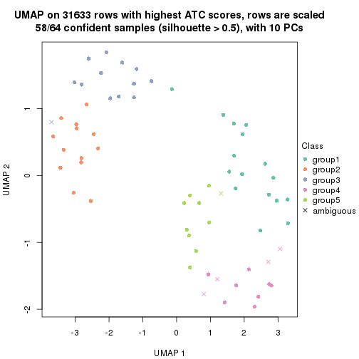
dimension_reduction(res, k = 6, method = "UMAP")
Following heatmap shows how subgroups are split when increasing k:
collect_classes(res)
Test correlation between subgroups and known annotations. If the known annotation is numeric, one-way ANOVA test is applied, and if the known annotation is discrete, chi-squared contingency table test is applied.
test_to_known_factors(res)
#> n specimen(p) individual(p) k
#> ATC:mclust 60 0.943016 0.001350 2
#> ATC:mclust 61 0.169454 0.000605 3
#> ATC:mclust 60 0.008283 0.026178 4
#> ATC:mclust 58 0.002598 0.043533 5
#> ATC:mclust 63 0.000927 0.059483 6
If matrix rows can be associated to genes, consider to use GO_Enrichment(res,
...) to perform function enrichment for the signature genes.
The object with results only for a single top-value method and a single partition method can be extracted as:
res = res_list["ATC", "NMF"]
# you can also extract it by
# res = res_list["ATC:NMF"]
A summary of res and all the functions that can be applied to it:
res
#> A 'ConsensusPartition' object with k = 2, 3, 4, 5, 6.
#> On a matrix with 31633 rows and 64 columns.
#> Top rows (1000, 2000, 3000, 4000, 5000) are extracted by 'ATC' method.
#> Subgroups are detected by 'NMF' method.
#> Performed in total 1250 partitions by row resampling.
#> Best k for subgroups seems to be 2.
#>
#> Following methods can be applied to this 'ConsensusPartition' object:
#> [1] "cola_report" "collect_classes" "collect_plots"
#> [4] "collect_stats" "colnames" "compare_signatures"
#> [7] "consensus_heatmap" "dimension_reduction" "functional_enrichment"
#> [10] "get_anno_col" "get_anno" "get_classes"
#> [13] "get_consensus" "get_matrix" "get_membership"
#> [16] "get_param" "get_signatures" "get_stats"
#> [19] "is_best_k" "is_stable_k" "membership_heatmap"
#> [22] "ncol" "nrow" "plot_ecdf"
#> [25] "rownames" "select_partition_number" "show"
#> [28] "suggest_best_k" "test_to_known_factors"
collect_plots() function collects all the plots made from res for all k (number of partitions)
into one single page to provide an easy and fast comparison between different k.
collect_plots(res)
The plots are:
k and the heatmap of
predicted classes for each k.k.k.k.All the plots in panels can be made by individual functions and they are plotted later in this section.
select_partition_number() produces several plots showing different
statistics for choosing “optimized” k. There are following statistics:
k;k, the area increased is defined as \(A_k - A_{k-1}\).The detailed explanations of these statistics can be found in the cola vignette.
Generally speaking, lower PAC score, higher mean silhouette score or higher
concordance corresponds to better partition. Rand index and Jaccard index
measure how similar the current partition is compared to partition with k-1.
If they are too similar, we won't accept k is better than k-1.
select_partition_number(res)
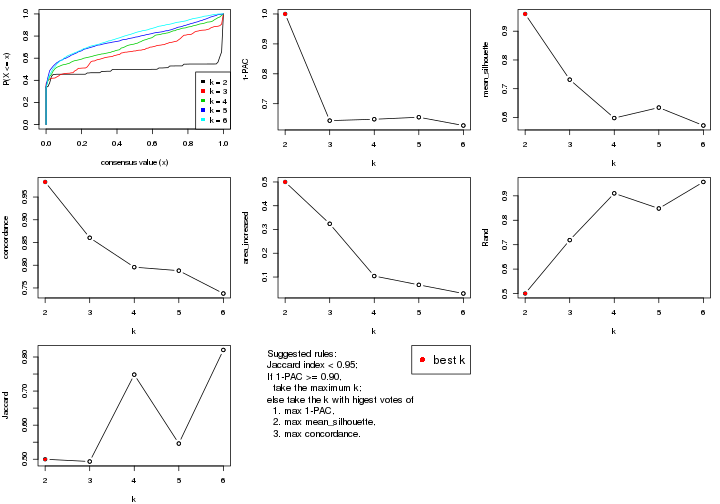
The numeric values for all these statistics can be obtained by get_stats().
get_stats(res)
#> k 1-PAC mean_silhouette concordance area_increased Rand Jaccard
#> 2 2 1.000 0.960 0.983 0.5000 0.500 0.500
#> 3 3 0.644 0.732 0.860 0.3240 0.719 0.493
#> 4 4 0.648 0.598 0.796 0.1041 0.910 0.748
#> 5 5 0.655 0.634 0.788 0.0670 0.848 0.546
#> 6 6 0.627 0.572 0.738 0.0305 0.957 0.821
suggest_best_k() suggests the best \(k\) based on these statistics. The rules are as follows:
NA.suggest_best_k(res)
#> [1] 2
Following shows the table of the partitions (You need to click the show/hide
code output link to see it). The membership matrix (columns with name p*)
is inferred by
clue::cl_consensus()
function with the SE method. Basically the value in the membership matrix
represents the probability to belong to a certain group. The finall class
label for an item is determined with the group with highest probability it
belongs to.
In get_classes() function, the entropy is calculated from the membership
matrix and the silhouette score is calculated from the consensus matrix.
cbind(get_classes(res, k = 2), get_membership(res, k = 2))
#> class entropy silhouette p1 p2
#> GSM1060118 1 0.0000 0.982 1.000 0.000
#> GSM1060120 2 0.0000 0.982 0.000 1.000
#> GSM1060122 2 0.0000 0.982 0.000 1.000
#> GSM1060124 2 0.2043 0.954 0.032 0.968
#> GSM1060126 2 0.0000 0.982 0.000 1.000
#> GSM1060128 1 0.0000 0.982 1.000 0.000
#> GSM1060130 1 0.0000 0.982 1.000 0.000
#> GSM1060132 1 0.0000 0.982 1.000 0.000
#> GSM1060134 1 0.1633 0.964 0.976 0.024
#> GSM1060136 1 0.0000 0.982 1.000 0.000
#> GSM1060138 1 0.0000 0.982 1.000 0.000
#> GSM1060140 1 0.0000 0.982 1.000 0.000
#> GSM1060142 1 0.0000 0.982 1.000 0.000
#> GSM1060144 1 0.0000 0.982 1.000 0.000
#> GSM1060146 1 0.0000 0.982 1.000 0.000
#> GSM1060148 1 0.0000 0.982 1.000 0.000
#> GSM1060150 2 0.0000 0.982 0.000 1.000
#> GSM1060152 1 0.0000 0.982 1.000 0.000
#> GSM1060154 1 0.0000 0.982 1.000 0.000
#> GSM1060156 1 0.0000 0.982 1.000 0.000
#> GSM1060158 2 0.0000 0.982 0.000 1.000
#> GSM1060160 1 0.0000 0.982 1.000 0.000
#> GSM1060162 2 0.0000 0.982 0.000 1.000
#> GSM1060164 2 0.0000 0.982 0.000 1.000
#> GSM1060166 1 0.0000 0.982 1.000 0.000
#> GSM1060168 2 0.0000 0.982 0.000 1.000
#> GSM1060170 2 0.0000 0.982 0.000 1.000
#> GSM1060172 2 0.0938 0.973 0.012 0.988
#> GSM1060174 2 0.0000 0.982 0.000 1.000
#> GSM1060176 2 0.0000 0.982 0.000 1.000
#> GSM1060178 1 0.0000 0.982 1.000 0.000
#> GSM1060180 2 0.0938 0.973 0.012 0.988
#> GSM1060117 1 0.0000 0.982 1.000 0.000
#> GSM1060119 2 0.0000 0.982 0.000 1.000
#> GSM1060121 2 0.0000 0.982 0.000 1.000
#> GSM1060123 2 0.0000 0.982 0.000 1.000
#> GSM1060125 1 0.0000 0.982 1.000 0.000
#> GSM1060127 2 0.0000 0.982 0.000 1.000
#> GSM1060129 2 0.7674 0.710 0.224 0.776
#> GSM1060131 2 0.0000 0.982 0.000 1.000
#> GSM1060133 2 0.0000 0.982 0.000 1.000
#> GSM1060135 2 0.0000 0.982 0.000 1.000
#> GSM1060137 2 0.8955 0.547 0.312 0.688
#> GSM1060139 1 0.0000 0.982 1.000 0.000
#> GSM1060141 1 0.0000 0.982 1.000 0.000
#> GSM1060143 2 0.0938 0.973 0.012 0.988
#> GSM1060145 1 0.0000 0.982 1.000 0.000
#> GSM1060147 1 0.0000 0.982 1.000 0.000
#> GSM1060149 1 0.1843 0.961 0.972 0.028
#> GSM1060151 1 0.1843 0.961 0.972 0.028
#> GSM1060153 1 0.9460 0.410 0.636 0.364
#> GSM1060155 2 0.0000 0.982 0.000 1.000
#> GSM1060157 1 0.1843 0.961 0.972 0.028
#> GSM1060159 2 0.0000 0.982 0.000 1.000
#> GSM1060161 2 0.0000 0.982 0.000 1.000
#> GSM1060163 2 0.0000 0.982 0.000 1.000
#> GSM1060165 2 0.0000 0.982 0.000 1.000
#> GSM1060167 2 0.0000 0.982 0.000 1.000
#> GSM1060169 2 0.0000 0.982 0.000 1.000
#> GSM1060171 2 0.0000 0.982 0.000 1.000
#> GSM1060173 2 0.0000 0.982 0.000 1.000
#> GSM1060175 2 0.0000 0.982 0.000 1.000
#> GSM1060177 2 0.0000 0.982 0.000 1.000
#> GSM1060179 2 0.0000 0.982 0.000 1.000
cbind(get_classes(res, k = 3), get_membership(res, k = 3))
#> class entropy silhouette p1 p2 p3
#> GSM1060118 1 0.0000 0.9452 1.000 0.000 0.000
#> GSM1060120 2 0.6140 0.0180 0.000 0.596 0.404
#> GSM1060122 3 0.5706 0.6902 0.000 0.320 0.680
#> GSM1060124 3 0.8494 0.6460 0.156 0.236 0.608
#> GSM1060126 2 0.6180 -0.0324 0.000 0.584 0.416
#> GSM1060128 1 0.0000 0.9452 1.000 0.000 0.000
#> GSM1060130 1 0.0000 0.9452 1.000 0.000 0.000
#> GSM1060132 1 0.0237 0.9430 0.996 0.000 0.004
#> GSM1060134 2 0.6045 0.4150 0.380 0.620 0.000
#> GSM1060136 1 0.0000 0.9452 1.000 0.000 0.000
#> GSM1060138 1 0.0237 0.9425 0.996 0.004 0.000
#> GSM1060140 1 0.0000 0.9452 1.000 0.000 0.000
#> GSM1060142 1 0.0000 0.9452 1.000 0.000 0.000
#> GSM1060144 1 0.0000 0.9452 1.000 0.000 0.000
#> GSM1060146 1 0.0237 0.9430 0.996 0.000 0.004
#> GSM1060148 1 0.0000 0.9452 1.000 0.000 0.000
#> GSM1060150 3 0.0000 0.7645 0.000 0.000 1.000
#> GSM1060152 1 0.0000 0.9452 1.000 0.000 0.000
#> GSM1060154 1 0.0000 0.9452 1.000 0.000 0.000
#> GSM1060156 1 0.0000 0.9452 1.000 0.000 0.000
#> GSM1060158 3 0.4062 0.7926 0.000 0.164 0.836
#> GSM1060160 1 0.5216 0.6892 0.740 0.000 0.260
#> GSM1060162 3 0.4974 0.7743 0.000 0.236 0.764
#> GSM1060164 3 0.0000 0.7645 0.000 0.000 1.000
#> GSM1060166 1 0.4931 0.7199 0.768 0.000 0.232
#> GSM1060168 3 0.3941 0.7925 0.000 0.156 0.844
#> GSM1060170 3 0.0000 0.7645 0.000 0.000 1.000
#> GSM1060172 3 0.0000 0.7645 0.000 0.000 1.000
#> GSM1060174 3 0.5138 0.7639 0.000 0.252 0.748
#> GSM1060176 3 0.4291 0.7904 0.000 0.180 0.820
#> GSM1060178 1 0.0747 0.9337 0.984 0.000 0.016
#> GSM1060180 3 0.0000 0.7645 0.000 0.000 1.000
#> GSM1060117 1 0.0000 0.9452 1.000 0.000 0.000
#> GSM1060119 3 0.5760 0.6788 0.000 0.328 0.672
#> GSM1060121 2 0.0000 0.7744 0.000 1.000 0.000
#> GSM1060123 2 0.0000 0.7744 0.000 1.000 0.000
#> GSM1060125 2 0.5058 0.6303 0.244 0.756 0.000
#> GSM1060127 2 0.2261 0.7283 0.000 0.932 0.068
#> GSM1060129 2 0.2066 0.7681 0.060 0.940 0.000
#> GSM1060131 2 0.5591 0.3429 0.000 0.696 0.304
#> GSM1060133 2 0.0000 0.7744 0.000 1.000 0.000
#> GSM1060135 2 0.0000 0.7744 0.000 1.000 0.000
#> GSM1060137 2 0.2448 0.7636 0.076 0.924 0.000
#> GSM1060139 1 0.0000 0.9452 1.000 0.000 0.000
#> GSM1060141 1 0.0237 0.9425 0.996 0.004 0.000
#> GSM1060143 2 0.0000 0.7744 0.000 1.000 0.000
#> GSM1060145 2 0.5058 0.6290 0.244 0.756 0.000
#> GSM1060147 2 0.5016 0.6339 0.240 0.760 0.000
#> GSM1060149 3 0.5397 0.4366 0.280 0.000 0.720
#> GSM1060151 1 0.6244 0.0612 0.560 0.440 0.000
#> GSM1060153 2 0.4178 0.7060 0.172 0.828 0.000
#> GSM1060155 2 0.0000 0.7744 0.000 1.000 0.000
#> GSM1060157 3 0.6204 0.0393 0.424 0.000 0.576
#> GSM1060159 3 0.0000 0.7645 0.000 0.000 1.000
#> GSM1060161 3 0.5465 0.7298 0.000 0.288 0.712
#> GSM1060163 3 0.4974 0.7743 0.000 0.236 0.764
#> GSM1060165 3 0.5178 0.7608 0.000 0.256 0.744
#> GSM1060167 3 0.4062 0.7926 0.000 0.164 0.836
#> GSM1060169 2 0.3619 0.6558 0.000 0.864 0.136
#> GSM1060171 3 0.0000 0.7645 0.000 0.000 1.000
#> GSM1060173 3 0.4931 0.7759 0.000 0.232 0.768
#> GSM1060175 3 0.6307 0.3163 0.000 0.488 0.512
#> GSM1060177 3 0.1163 0.7719 0.000 0.028 0.972
#> GSM1060179 3 0.5016 0.7719 0.000 0.240 0.760
cbind(get_classes(res, k = 4), get_membership(res, k = 4))
#> class entropy silhouette p1 p2 p3 p4
#> GSM1060118 1 0.0336 0.8214 0.992 0.000 0.000 0.008
#> GSM1060120 2 0.1388 0.6541 0.000 0.960 0.028 0.012
#> GSM1060122 2 0.3342 0.5769 0.000 0.868 0.032 0.100
#> GSM1060124 4 0.6603 0.2513 0.036 0.384 0.028 0.552
#> GSM1060126 2 0.1388 0.6543 0.000 0.960 0.028 0.012
#> GSM1060128 1 0.0000 0.8217 1.000 0.000 0.000 0.000
#> GSM1060130 1 0.0336 0.8215 0.992 0.000 0.000 0.008
#> GSM1060132 1 0.4830 0.3822 0.608 0.000 0.000 0.392
#> GSM1060134 2 0.5055 0.3598 0.368 0.624 0.000 0.008
#> GSM1060136 1 0.2919 0.7825 0.896 0.044 0.000 0.060
#> GSM1060138 1 0.4008 0.6499 0.756 0.000 0.000 0.244
#> GSM1060140 1 0.1610 0.8083 0.952 0.016 0.000 0.032
#> GSM1060142 1 0.0469 0.8204 0.988 0.000 0.000 0.012
#> GSM1060144 1 0.0336 0.8212 0.992 0.000 0.000 0.008
#> GSM1060146 1 0.4406 0.5485 0.700 0.000 0.000 0.300
#> GSM1060148 1 0.0188 0.8214 0.996 0.000 0.000 0.004
#> GSM1060150 3 0.4193 0.1951 0.000 0.000 0.732 0.268
#> GSM1060152 1 0.1557 0.8047 0.944 0.000 0.000 0.056
#> GSM1060154 1 0.1211 0.8126 0.960 0.000 0.000 0.040
#> GSM1060156 1 0.0376 0.8216 0.992 0.000 0.004 0.004
#> GSM1060158 3 0.4304 0.6405 0.000 0.284 0.716 0.000
#> GSM1060160 1 0.6315 0.0625 0.540 0.000 0.396 0.064
#> GSM1060162 3 0.4830 0.5566 0.000 0.392 0.608 0.000
#> GSM1060164 3 0.3219 0.4445 0.000 0.000 0.836 0.164
#> GSM1060166 4 0.7325 0.5184 0.192 0.000 0.288 0.520
#> GSM1060168 3 0.3400 0.6815 0.000 0.180 0.820 0.000
#> GSM1060170 3 0.0524 0.6355 0.008 0.000 0.988 0.004
#> GSM1060172 4 0.5268 0.4023 0.008 0.000 0.452 0.540
#> GSM1060174 3 0.4804 0.5671 0.000 0.384 0.616 0.000
#> GSM1060176 3 0.1022 0.6617 0.000 0.032 0.968 0.000
#> GSM1060178 1 0.1520 0.8088 0.956 0.000 0.024 0.020
#> GSM1060180 3 0.0672 0.6321 0.008 0.000 0.984 0.008
#> GSM1060117 1 0.0707 0.8210 0.980 0.000 0.000 0.020
#> GSM1060119 2 0.1854 0.6390 0.000 0.940 0.048 0.012
#> GSM1060121 2 0.4564 0.6478 0.000 0.672 0.000 0.328
#> GSM1060123 2 0.4283 0.6615 0.000 0.740 0.004 0.256
#> GSM1060125 1 0.7198 0.3430 0.520 0.160 0.000 0.320
#> GSM1060127 2 0.0921 0.6578 0.000 0.972 0.028 0.000
#> GSM1060129 2 0.3597 0.6035 0.148 0.836 0.000 0.016
#> GSM1060131 2 0.2032 0.6416 0.000 0.936 0.028 0.036
#> GSM1060133 2 0.0188 0.6681 0.000 0.996 0.000 0.004
#> GSM1060135 2 0.0188 0.6662 0.000 0.996 0.004 0.000
#> GSM1060137 2 0.4866 0.6204 0.000 0.596 0.000 0.404
#> GSM1060139 1 0.0336 0.8214 0.992 0.000 0.000 0.008
#> GSM1060141 1 0.4630 0.6195 0.732 0.016 0.000 0.252
#> GSM1060143 2 0.4855 0.6231 0.000 0.600 0.000 0.400
#> GSM1060145 2 0.6087 0.5818 0.048 0.540 0.000 0.412
#> GSM1060147 2 0.6627 0.5458 0.084 0.504 0.000 0.412
#> GSM1060149 3 0.5321 0.1703 0.056 0.000 0.716 0.228
#> GSM1060151 1 0.5488 0.0616 0.532 0.452 0.000 0.016
#> GSM1060153 2 0.4877 0.6187 0.000 0.592 0.000 0.408
#> GSM1060155 2 0.4830 0.6273 0.000 0.608 0.000 0.392
#> GSM1060157 3 0.3249 0.4450 0.140 0.000 0.852 0.008
#> GSM1060159 3 0.0000 0.6439 0.000 0.000 1.000 0.000
#> GSM1060161 3 0.4040 0.6625 0.000 0.248 0.752 0.000
#> GSM1060163 3 0.3942 0.6672 0.000 0.236 0.764 0.000
#> GSM1060165 3 0.4830 0.5591 0.000 0.392 0.608 0.000
#> GSM1060167 3 0.3400 0.6814 0.000 0.180 0.820 0.000
#> GSM1060169 2 0.4543 0.0675 0.000 0.676 0.324 0.000
#> GSM1060171 3 0.3342 0.6695 0.000 0.100 0.868 0.032
#> GSM1060173 3 0.4817 0.5611 0.000 0.388 0.612 0.000
#> GSM1060175 3 0.4907 0.5301 0.000 0.420 0.580 0.000
#> GSM1060177 3 0.0188 0.6470 0.000 0.004 0.996 0.000
#> GSM1060179 3 0.1182 0.6499 0.000 0.016 0.968 0.016
cbind(get_classes(res, k = 5), get_membership(res, k = 5))
#> class entropy silhouette p1 p2 p3 p4 p5
#> GSM1060118 1 0.1043 0.8667 0.960 0.000 0.040 0.000 0.000
#> GSM1060120 5 0.6722 0.2475 0.000 0.316 0.000 0.268 0.416
#> GSM1060122 5 0.4239 0.7045 0.000 0.080 0.004 0.132 0.784
#> GSM1060124 5 0.4494 0.6698 0.008 0.052 0.064 0.068 0.808
#> GSM1060126 2 0.6575 -0.1670 0.000 0.500 0.024 0.120 0.356
#> GSM1060128 1 0.1410 0.8630 0.940 0.000 0.060 0.000 0.000
#> GSM1060130 1 0.1956 0.8667 0.916 0.000 0.076 0.000 0.008
#> GSM1060132 1 0.4924 0.4867 0.552 0.000 0.028 0.000 0.420
#> GSM1060134 4 0.4789 0.4860 0.028 0.004 0.000 0.644 0.324
#> GSM1060136 1 0.3800 0.8353 0.824 0.000 0.052 0.012 0.112
#> GSM1060138 1 0.3689 0.8200 0.828 0.000 0.076 0.092 0.004
#> GSM1060140 1 0.1830 0.8639 0.932 0.000 0.028 0.040 0.000
#> GSM1060142 1 0.1197 0.8702 0.952 0.000 0.048 0.000 0.000
#> GSM1060144 1 0.1195 0.8666 0.960 0.000 0.028 0.012 0.000
#> GSM1060146 1 0.4240 0.7578 0.736 0.000 0.036 0.000 0.228
#> GSM1060148 1 0.0324 0.8697 0.992 0.000 0.004 0.004 0.000
#> GSM1060150 3 0.4491 0.7367 0.004 0.280 0.692 0.000 0.024
#> GSM1060152 1 0.3410 0.8386 0.840 0.000 0.068 0.000 0.092
#> GSM1060154 1 0.5572 0.6582 0.668 0.000 0.204 0.012 0.116
#> GSM1060156 1 0.1341 0.8674 0.944 0.000 0.056 0.000 0.000
#> GSM1060158 3 0.4689 0.5363 0.000 0.424 0.560 0.000 0.016
#> GSM1060160 3 0.3752 0.5998 0.200 0.004 0.780 0.000 0.016
#> GSM1060162 2 0.0324 0.7461 0.000 0.992 0.004 0.000 0.004
#> GSM1060164 3 0.3246 0.8014 0.000 0.184 0.808 0.000 0.008
#> GSM1060166 3 0.5641 0.4090 0.120 0.000 0.612 0.000 0.268
#> GSM1060168 2 0.1270 0.7344 0.000 0.948 0.052 0.000 0.000
#> GSM1060170 3 0.3596 0.7992 0.000 0.200 0.784 0.000 0.016
#> GSM1060172 3 0.4032 0.7811 0.004 0.124 0.800 0.000 0.072
#> GSM1060174 2 0.0162 0.7460 0.000 0.996 0.004 0.000 0.000
#> GSM1060176 2 0.3752 0.3189 0.000 0.708 0.292 0.000 0.000
#> GSM1060178 1 0.3452 0.7125 0.756 0.000 0.244 0.000 0.000
#> GSM1060180 3 0.3333 0.7978 0.000 0.208 0.788 0.000 0.004
#> GSM1060117 1 0.1300 0.8663 0.956 0.000 0.028 0.016 0.000
#> GSM1060119 2 0.6659 -0.3726 0.000 0.428 0.000 0.240 0.332
#> GSM1060121 4 0.3849 0.5917 0.000 0.016 0.000 0.752 0.232
#> GSM1060123 4 0.5312 0.4557 0.000 0.208 0.000 0.668 0.124
#> GSM1060125 1 0.4779 0.7499 0.740 0.000 0.084 0.168 0.008
#> GSM1060127 2 0.6622 -0.4238 0.000 0.416 0.000 0.220 0.364
#> GSM1060129 4 0.4604 0.3876 0.004 0.008 0.000 0.584 0.404
#> GSM1060131 5 0.3366 0.6838 0.000 0.032 0.000 0.140 0.828
#> GSM1060133 4 0.6496 0.0791 0.000 0.280 0.000 0.488 0.232
#> GSM1060135 4 0.4938 0.4671 0.000 0.048 0.000 0.640 0.312
#> GSM1060137 4 0.2580 0.6539 0.020 0.000 0.016 0.900 0.064
#> GSM1060139 1 0.1124 0.8693 0.960 0.000 0.036 0.004 0.000
#> GSM1060141 1 0.2867 0.8475 0.880 0.000 0.072 0.044 0.004
#> GSM1060143 4 0.2429 0.6539 0.000 0.008 0.020 0.904 0.068
#> GSM1060145 4 0.2616 0.5861 0.076 0.000 0.036 0.888 0.000
#> GSM1060147 4 0.3680 0.5446 0.088 0.000 0.052 0.840 0.020
#> GSM1060149 3 0.3399 0.8014 0.020 0.168 0.812 0.000 0.000
#> GSM1060151 1 0.4599 0.7778 0.760 0.000 0.088 0.144 0.008
#> GSM1060153 4 0.2157 0.6106 0.036 0.000 0.040 0.920 0.004
#> GSM1060155 4 0.3685 0.6480 0.000 0.016 0.028 0.824 0.132
#> GSM1060157 3 0.5088 0.7794 0.048 0.140 0.752 0.004 0.056
#> GSM1060159 3 0.3790 0.7609 0.000 0.272 0.724 0.000 0.004
#> GSM1060161 2 0.1892 0.7126 0.000 0.916 0.080 0.004 0.000
#> GSM1060163 2 0.1608 0.7194 0.000 0.928 0.072 0.000 0.000
#> GSM1060165 2 0.0162 0.7453 0.000 0.996 0.000 0.004 0.000
#> GSM1060167 2 0.0963 0.7383 0.000 0.964 0.036 0.000 0.000
#> GSM1060169 2 0.4215 0.5101 0.000 0.772 0.004 0.172 0.052
#> GSM1060171 2 0.2763 0.6397 0.000 0.848 0.148 0.000 0.004
#> GSM1060173 2 0.0162 0.7460 0.000 0.996 0.004 0.000 0.000
#> GSM1060175 2 0.1124 0.7311 0.000 0.960 0.000 0.036 0.004
#> GSM1060177 2 0.3123 0.5759 0.000 0.812 0.184 0.000 0.004
#> GSM1060179 3 0.7822 0.4740 0.000 0.300 0.412 0.204 0.084
cbind(get_classes(res, k = 6), get_membership(res, k = 6))
#> class entropy silhouette p1 p2 p3 p4 p5 p6
#> GSM1060118 1 0.0914 0.8082 0.968 0.000 0.016 0.000 0.000 NA
#> GSM1060120 5 0.5305 0.4601 0.000 0.344 0.000 0.052 0.572 NA
#> GSM1060122 5 0.4480 0.5358 0.000 0.100 0.012 0.104 0.764 NA
#> GSM1060124 5 0.6162 0.4319 0.008 0.044 0.120 0.056 0.664 NA
#> GSM1060126 5 0.7402 0.2364 0.000 0.196 0.004 0.288 0.388 NA
#> GSM1060128 1 0.1720 0.8022 0.928 0.000 0.040 0.000 0.000 NA
#> GSM1060130 1 0.3435 0.7886 0.820 0.000 0.024 0.000 0.028 NA
#> GSM1060132 1 0.5944 0.5593 0.580 0.000 0.084 0.000 0.264 NA
#> GSM1060134 4 0.5851 0.2171 0.032 0.016 0.008 0.492 0.416 NA
#> GSM1060136 1 0.5900 0.6020 0.628 0.000 0.000 0.096 0.168 NA
#> GSM1060138 1 0.3662 0.7504 0.804 0.000 0.012 0.124 0.000 NA
#> GSM1060140 1 0.1536 0.8083 0.940 0.000 0.004 0.040 0.000 NA
#> GSM1060142 1 0.1462 0.8102 0.936 0.000 0.008 0.000 0.000 NA
#> GSM1060144 1 0.1116 0.8080 0.960 0.000 0.008 0.004 0.000 NA
#> GSM1060146 1 0.4811 0.7210 0.728 0.000 0.088 0.000 0.136 NA
#> GSM1060148 1 0.0508 0.8081 0.984 0.000 0.004 0.000 0.000 NA
#> GSM1060150 3 0.6039 0.5908 0.000 0.244 0.508 0.000 0.012 NA
#> GSM1060152 1 0.4344 0.7555 0.772 0.000 0.104 0.000 0.052 NA
#> GSM1060154 1 0.7429 0.3806 0.460 0.000 0.232 0.036 0.196 NA
#> GSM1060156 1 0.2800 0.7911 0.876 0.000 0.076 0.004 0.020 NA
#> GSM1060158 2 0.5612 0.4084 0.000 0.608 0.272 0.004 0.072 NA
#> GSM1060160 3 0.5314 0.5850 0.088 0.004 0.716 0.008 0.100 NA
#> GSM1060162 2 0.0405 0.7145 0.000 0.988 0.004 0.000 0.008 NA
#> GSM1060164 3 0.4308 0.7493 0.000 0.180 0.744 0.000 0.024 NA
#> GSM1060166 3 0.5795 0.4653 0.100 0.000 0.620 0.000 0.212 NA
#> GSM1060168 2 0.3072 0.7080 0.000 0.856 0.084 0.000 0.036 NA
#> GSM1060170 3 0.3422 0.7447 0.000 0.168 0.792 0.000 0.000 NA
#> GSM1060172 3 0.4958 0.7266 0.000 0.164 0.692 0.000 0.020 NA
#> GSM1060174 2 0.0622 0.7194 0.000 0.980 0.012 0.000 0.000 NA
#> GSM1060176 2 0.3481 0.6182 0.000 0.776 0.192 0.000 0.000 NA
#> GSM1060178 1 0.3786 0.6727 0.748 0.000 0.220 0.000 0.008 NA
#> GSM1060180 3 0.4147 0.7450 0.000 0.132 0.776 0.000 0.060 NA
#> GSM1060117 1 0.1768 0.8074 0.932 0.000 0.004 0.020 0.004 NA
#> GSM1060119 5 0.5691 0.3914 0.000 0.376 0.004 0.052 0.524 NA
#> GSM1060121 4 0.4032 0.5798 0.000 0.056 0.004 0.780 0.144 NA
#> GSM1060123 2 0.6019 -0.1438 0.000 0.428 0.004 0.424 0.128 NA
#> GSM1060125 1 0.5448 0.1478 0.472 0.004 0.000 0.420 0.000 NA
#> GSM1060127 2 0.6233 -0.3994 0.000 0.428 0.004 0.152 0.396 NA
#> GSM1060129 4 0.5176 0.3091 0.000 0.012 0.012 0.560 0.376 NA
#> GSM1060131 5 0.4518 0.4597 0.000 0.036 0.024 0.164 0.752 NA
#> GSM1060133 4 0.6024 0.1923 0.000 0.288 0.004 0.536 0.152 NA
#> GSM1060135 4 0.6127 0.0896 0.000 0.132 0.004 0.484 0.356 NA
#> GSM1060137 4 0.2613 0.6334 0.028 0.000 0.016 0.896 0.016 NA
#> GSM1060139 1 0.0820 0.8080 0.972 0.000 0.016 0.000 0.000 NA
#> GSM1060141 1 0.2542 0.7899 0.876 0.000 0.000 0.044 0.000 NA
#> GSM1060143 4 0.4010 0.6184 0.000 0.032 0.004 0.800 0.068 NA
#> GSM1060145 4 0.3357 0.6067 0.064 0.000 0.012 0.832 0.000 NA
#> GSM1060147 4 0.3244 0.6040 0.064 0.000 0.004 0.832 0.000 NA
#> GSM1060149 3 0.4099 0.7483 0.004 0.176 0.748 0.000 0.000 NA
#> GSM1060151 1 0.7044 0.3769 0.500 0.012 0.004 0.204 0.072 NA
#> GSM1060153 4 0.2849 0.6195 0.044 0.000 0.008 0.864 0.000 NA
#> GSM1060155 4 0.3897 0.6177 0.000 0.028 0.000 0.800 0.072 NA
#> GSM1060157 3 0.5568 0.7047 0.052 0.068 0.704 0.008 0.028 NA
#> GSM1060159 3 0.4039 0.6857 0.000 0.248 0.716 0.000 0.008 NA
#> GSM1060161 2 0.4015 0.6875 0.000 0.800 0.120 0.032 0.016 NA
#> GSM1060163 2 0.2333 0.6951 0.000 0.884 0.092 0.000 0.000 NA
#> GSM1060165 2 0.2259 0.6780 0.000 0.908 0.000 0.040 0.032 NA
#> GSM1060167 2 0.1890 0.7200 0.000 0.924 0.044 0.000 0.008 NA
#> GSM1060169 2 0.5097 0.4608 0.000 0.720 0.016 0.136 0.092 NA
#> GSM1060171 2 0.3989 0.5023 0.000 0.720 0.236 0.000 0.000 NA
#> GSM1060173 2 0.0622 0.7187 0.000 0.980 0.008 0.000 0.000 NA
#> GSM1060175 2 0.2290 0.6553 0.000 0.892 0.000 0.084 0.020 NA
#> GSM1060177 2 0.5517 0.1912 0.000 0.580 0.232 0.004 0.000 NA
#> GSM1060179 3 0.7485 0.5247 0.000 0.232 0.456 0.104 0.028 NA
Heatmaps for the consensus matrix. It visualizes the probability of two samples to be in a same group.
consensus_heatmap(res, k = 2)
consensus_heatmap(res, k = 3)
consensus_heatmap(res, k = 4)
consensus_heatmap(res, k = 5)
consensus_heatmap(res, k = 6)
Heatmaps for the membership of samples in all partitions to see how consistent they are:
membership_heatmap(res, k = 2)
membership_heatmap(res, k = 3)
membership_heatmap(res, k = 4)
membership_heatmap(res, k = 5)
membership_heatmap(res, k = 6)
As soon as we have had the classes for columns, we can look for signatures which are significantly different between classes which can be candidate marks for certain classes. Following are the heatmaps for signatures.
Signature heatmaps where rows are scaled:
get_signatures(res, k = 2)
get_signatures(res, k = 3)
get_signatures(res, k = 4)

get_signatures(res, k = 5)
get_signatures(res, k = 6)
Signature heatmaps where rows are not scaled:
get_signatures(res, k = 2, scale_rows = FALSE)
get_signatures(res, k = 3, scale_rows = FALSE)

get_signatures(res, k = 4, scale_rows = FALSE)
get_signatures(res, k = 5, scale_rows = FALSE)
get_signatures(res, k = 6, scale_rows = FALSE)

Compare the overlap of signatures from different k:
compare_signatures(res)
get_signature() returns a data frame invisibly. TO get the list of signatures, the function
call should be assigned to a variable explicitly. In following code, if plot argument is set
to FALSE, no heatmap is plotted while only the differential analysis is performed.
# code only for demonstration
tb = get_signature(res, k = ..., plot = FALSE)
An example of the output of tb is:
#> which_row fdr mean_1 mean_2 scaled_mean_1 scaled_mean_2 km
#> 1 38 0.042760348 8.373488 9.131774 -0.5533452 0.5164555 1
#> 2 40 0.018707592 7.106213 8.469186 -0.6173731 0.5762149 1
#> 3 55 0.019134737 10.221463 11.207825 -0.6159697 0.5749050 1
#> 4 59 0.006059896 5.921854 7.869574 -0.6899429 0.6439467 1
#> 5 60 0.018055526 8.928898 10.211722 -0.6204761 0.5791110 1
#> 6 98 0.009384629 15.714769 14.887706 0.6635654 -0.6193277 2
...
The columns in tb are:
which_row: row indices corresponding to the input matrix.fdr: FDR for the differential test. mean_x: The mean value in group x.scaled_mean_x: The mean value in group x after rows are scaled.km: Row groups if k-means clustering is applied to rows.UMAP plot which shows how samples are separated.
dimension_reduction(res, k = 2, method = "UMAP")
dimension_reduction(res, k = 3, method = "UMAP")
dimension_reduction(res, k = 4, method = "UMAP")
dimension_reduction(res, k = 5, method = "UMAP")

dimension_reduction(res, k = 6, method = "UMAP")
Following heatmap shows how subgroups are split when increasing k:
collect_classes(res)
Test correlation between subgroups and known annotations. If the known annotation is numeric, one-way ANOVA test is applied, and if the known annotation is discrete, chi-squared contingency table test is applied.
test_to_known_factors(res)
#> n specimen(p) individual(p) k
#> ATC:NMF 63 5.39e-02 0.3075 2
#> ATC:NMF 56 6.33e-06 0.4211 3
#> ATC:NMF 52 1.30e-03 0.2674 4
#> ATC:NMF 51 2.78e-03 0.0378 5
#> ATC:NMF 46 2.88e-03 0.1167 6
If matrix rows can be associated to genes, consider to use GO_Enrichment(res,
...) to perform function enrichment for the signature genes.
sessionInfo()
#> R version 3.6.0 (2019-04-26)
#> Platform: x86_64-pc-linux-gnu (64-bit)
#> Running under: CentOS Linux 7 (Core)
#>
#> Matrix products: default
#> BLAS: /usr/lib64/libblas.so.3.4.2
#> LAPACK: /usr/lib64/liblapack.so.3.4.2
#>
#> locale:
#> [1] LC_CTYPE=en_GB.UTF-8 LC_NUMERIC=C LC_TIME=en_GB.UTF-8
#> [4] LC_COLLATE=en_GB.UTF-8 LC_MONETARY=en_GB.UTF-8 LC_MESSAGES=en_GB.UTF-8
#> [7] LC_PAPER=en_GB.UTF-8 LC_NAME=C LC_ADDRESS=C
#> [10] LC_TELEPHONE=C LC_MEASUREMENT=en_GB.UTF-8 LC_IDENTIFICATION=C
#>
#> attached base packages:
#> [1] grid parallel stats graphics grDevices utils datasets methods base
#>
#> other attached packages:
#> [1] genefilter_1.66.0 ComplexHeatmap_2.1.1 markdown_1.1 knitr_1.26
#> [5] preprocessCore_1.46.0 cola_1.3.2 GEOquery_2.52.0 Biobase_2.44.0
#> [9] BiocGenerics_0.30.0 GetoptLong_0.1.7
#>
#> loaded via a namespace (and not attached):
#> [1] bitops_1.0-6 matrixStats_0.55.0 bit64_0.9-7 doParallel_1.0.15
#> [5] RColorBrewer_1.1-2 httr_1.4.1 tools_3.6.0 backports_1.1.5
#> [9] R6_2.4.1 DBI_1.0.0 lazyeval_0.2.2 colorspace_1.4-1
#> [13] withr_2.1.2 tidyselect_0.2.5 gridExtra_2.3 bit_1.1-14
#> [17] compiler_3.6.0 xml2_1.2.2 microbenchmark_1.4-7 pkgmaker_0.28
#> [21] slam_0.1-46 scales_1.1.0 readr_1.3.1 NMF_0.23.6
#> [25] stringr_1.4.0 digest_0.6.23 pkgconfig_2.0.3 bibtex_0.4.2
#> [29] highr_0.8 limma_3.40.6 rlang_0.4.2 GlobalOptions_0.1.1
#> [33] RSQLite_2.1.2 impute_1.58.0 shape_1.4.4 mclust_5.4.5
#> [37] dendextend_1.12.0 dplyr_0.8.3 RCurl_1.95-4.12 magrittr_1.5
#> [41] Matrix_1.2-17 Rcpp_1.0.3 munsell_0.5.0 S4Vectors_0.22.1
#> [45] viridis_0.5.1 lifecycle_0.1.0 stringi_1.4.3 plyr_1.8.4
#> [49] blob_1.2.0 crayon_1.3.4 lattice_0.20-38 splines_3.6.0
#> [53] annotate_1.62.0 circlize_0.4.9 hms_0.5.2 zeallot_0.1.0
#> [57] pillar_1.4.2 rjson_0.2.20 rngtools_1.4 reshape2_1.4.3
#> [61] codetools_0.2-16 stats4_3.6.0 XML_3.98-1.20 glue_1.3.1
#> [65] evaluate_0.14 png_0.1-7 vctrs_0.2.0 foreach_1.4.7
#> [69] polyclip_1.10-0 gtable_0.3.0 purrr_0.3.3 tidyr_1.0.0
#> [73] clue_0.3-57 assertthat_0.2.1 ggplot2_3.2.1 xfun_0.11
#> [77] gridBase_0.4-7 eulerr_6.0.0 xtable_1.8-4 skmeans_0.2-11
#> [81] survival_2.44-1.1 viridisLite_0.3.0 tibble_2.1.3 iterators_1.0.12
#> [85] AnnotationDbi_1.46.1 registry_0.5-1 memoise_1.1.0 IRanges_2.18.3
#> [89] cluster_2.1.0 brew_1.0-6